<!DOCTYPE html>
<html lang=fr>
<head>
  <title>Razvedka</title>
  <meta charset="UTF-8">
  <meta name="viewport" content="width=device-width, initial-scale=1.0, maximum-scale=1.0, user-scalable=no" />
  <link rel="stylesheet" href="../leaflet/leaflet.css" />
  <script src="../leaflet/leaflet.js"></script>
  <!-- <script type="text/javascript" src="http://maps.stamen.com/js/tile.stamen.js?v1.3.0"></script> -->
  <script src="../leaflet/genshtab.js"></script>
  <link rel="stylesheet" href= "../CSS/leaflet-search.css">
  <script src="../leaflet/leaflet-search.src.js"></script>
  <link rel="stylesheet" href="../CSS/styles.css" />
</head>

<body>

  <style>
    * body {
      padding: 0;
      margin: 0;
    }

    html, body, #map {
      height: 100%;
      width: 100vw;
    }


  </style>

<div id="map"></div>

  <script>

    var myMap = L.map('map',
    {
      center: [36.2616, 50.0767],
      zoom: 4,
      maxBounds:
      [
        [70, -12.13],
        [-14, 118]
      ],
 	    minZoom: 4,
      zoomControl: false
    });

    L.control.zoom({
      position: 'bottomright'
    }).addTo(myMap);

    var title = new L.Control();
     title.onAdd = function (map) {
      this._div = L.DomUtil.create('div', 'info');
      this.update();
      return this._div;
    };

    title.update = function () {
      this._div.innerHTML = '<h2>Renseignement militaire russe</h2>';
    };
    title.addTo(myMap);

    var abstract = new L.Control({'position':'topright'});

    abstract.onAdd = function (myMap)
    {
      this._div = L.DomUtil.create('div',
      'leaflet-control leaflet-bar abstract');
      this._div.id = 'abstract'
      this._div.setAttribute("onmouseenter", "abstract.show()");
      this._div.setAttribute("onmouseleave", "abstract.hide()");
      this.hide();
      return this._div;
    };
    abstract.hide = function ()
    {
      this._div.classList.remove("abstractUncollapsed");
      this._div.classList.add("abstract");
      this._div.innerHTML = 'i'
    }
    abstract.show = function ()
    {
      this._div.classList.remove("abstract");
      this._div.classList.add("abstractUncollapsed");
      this._div.innerHTML = " Les Archives de la science militaire ont été fondées à Saint-Pétersbourg, suite à un décret de Paul I<sup>er</sup> du 8 août 1797. Elles devaient servir de dépôt personnel de Sa Majesté Impériale pour tout ce qui touchait aux affaires militaires. Ces archives ont par la suite plusieurs fois changé d\’appellation, mais l\’esprit était toujours le même : conserver cartes et protocoles historiques, descriptions et autres documents provenant de divers institutions et individus. Tous les dossiers émanant des centres de commandement et des états-majors des armées ont été ainsi archivés à la fin de chacune des guerres menées par la Russie. On y retrouve bien sûr des documents en russe, mais aussi beaucoup de documents en français, soit parce qu\’ils ont été saisis à l\’ennemi, soit parce que rédigés en français par des officiers russes. Ce fonds se trouve aujourd\’hui à Moscou dans les Archives d\’histoire militaire de l\’État de Russie (RGVIA). <br /> Ces archives, avec lesquelles nous travaillerons dans ce cours, apportent un éclairage unique sur une période cruciale dans l\’histoire de la Russie, qui connaît, au XIX<sup>e</sup> siècle, une fulgurante expansion en Asie, à défaut de pouvoir s\’étendre à l\’ouest, où ses frontières ont été fixées depuis le Congrès de Vienne. Cette expansion n\’est pas sans inscrire la Russie en compétition avec les autres puissances occidentales qui se disputent ces marchés nouveaux et ces colonies potentielles, voire avec le Japon, puissance montante en Asie qu\’affrontera sans succès la Russie en 1904-05. Au sein de cette compétition — tantôt pacifique, tantôt belliqueuse — la collecte de renseignement s\’avère cruciale. Or, le renseignement connaît précisément à cette époque une véritable révolution, qui voit ses modus operandi se spécialiser, devenir beaucoup plus analytiques, voire encyclopédiques, dans la mesure où l\’étude de l\’ennemi ne se borne plus aux réalités économiques, militaires et politiques, mais s\’ouvre également à l\’ethnographie. Les documents que nous analyserons sont des rapports d\’espions ou de diplomates (les deux fonctions tendant souvent à se confondre à cette époque), des rapports d\’attachés militaires, de la correspondance entre officiers russes, des cartes, des plans, des croquis… Le travail avec ces archives permettra à l\’étudiant.e de se familiariser avec le système archivistique russe, d\’appliquer à un corpus précis les principes de la critique des sources, de comprendre enfin de l\’intérieur une période captivante dans l\’histoire du renseignement, soit celle de la Question d\’Orient et du Grand Jeu.";
    };
    abstract.addTo(myMap);

    var div = document.createElement ('div');
    div.id = 'coordsDiv';
    div.style.position = 'absolute';
    div.style.bottom = '0';
    div.style.left = '0';
    div.style.zIndex = '999';
    document.getElementById('map').appendChild(div);

    myMap.on('mousemove', function(e) {
      var lat = e.latlng.lat.toFixed(5);
      var lon = e.latlng.lng.toFixed(5);

      document.getElementById('coordsDiv').innerHTML = lat + ', ' + lon;
    });

    var economieGroupe = L.featureGroup();
    //economieGroupe.addTo(myMap)

    var EnvironnementGroupe = L.featureGroup();
    EnvironnementGroupe.addTo(myMap)

    var colonialismeGroupe = L.featureGroup();
    colonialismeGroupe.addTo(myMap)

    var militaireGroupe = L.featureGroup();
    militaireGroupe.addTo(myMap)

    var DiplomatieGroupe = L.featureGroup();
    DiplomatieGroupe.addTo(myMap)

    var renseignementGroupe = L.featureGroup();
    //renseignementGroupe.addTo(myMap)

    var PresseGroupe = L.featureGroup();
    //PresseGroupe.addTo(myMap)

    var geopolitiqueGroupe = L.featureGroup();
    //geopolitiqueGroupe.addTo(myMap)

    var technologieGroupe = L.featureGroup();
    //technologieGroupe.addTo(myMap)

    var topographieGroupe = L.featureGroup();
    //topographieGroupe.addTo(myMap)

    var cultureGroupe = L.featureGroup();
    //cultureGroupe.addTo(myMap)

    var ethnoGroup = L.featureGroup();
    ethnoGroup.addTo(myMap)

    var logistiqueGroupe = L.featureGroup();
    //logistiqueGroupe.addTo(myMap)

    var marineGroupe = L.featureGroup();
    //marineGroupe.addTo(myMap)

    var strategieGroupe = L.featureGroup();
    //strategieGroupe.addTo(myMap)

    var religionGroupe = L.featureGroup();
    //religionGroupe.addTo(myMap)

    var resistanceGroupe = L.featureGroup();
    resistanceGroupe.addTo(myMap)

    var fortificationsGroupe = L.featureGroup();
    //fortificationsGroupe.addTo(myMap)

    var cheminsdeferGroupe = L.featureGroup();
    //cheminsdeferGroupe.addTo(myMap)

    var cavalerieGroupe = L.featureGroup();
    //cavalerieGroupe.addTo(myMap)

    var ARCGISBasemap = L.tileLayer('https://server.arcgisonline.com/ArcGIS/rest/services/World_Shaded_Relief/MapServer/tile/{z}/{y}/{x}.png',{
      attribution: '&copy; Tuiles de fond <i>temporairement</i> par ESRI.'
    }).addTo(myMap);

    var osmBasemap = L.tileLayer('http://{s}.tile.osm.org/{z}/{x}/{y}.png',{
      attribution: '&copy; <a href="http://openstreetmap.org">OpenStreetMap</a>'
    });

    var stamen = L.tileLayer('https://stamen-tiles-{s}.a.ssl.fastly.net/watercolor/{z}/{x}/{y}.png',
  		{
        attribution: '&copy; <Map tiles by <a href="http://stamen.com">Stamen Design</a>, under <a href="http://creativecommons.org/licenses/by/3.0">CC BY 3.0</a>. Data by <a href="http://openstreetmap.org">OpenStreetMap</a>, under <a href="http://creativecommons.org/licenses/by-sa/3.0">CC BY SA</a>.'
    });


    var basemaps = {
      "OSM": osmBasemap,
      "Relief": ARCGISBasemap,
      "Watercolor": stamen,
    };

    var couches = {
      "Economie": economieGroupe,
      "Environnement": EnvironnementGroupe,
      "Colonialisme": colonialismeGroupe,
      "Militaire": militaireGroupe,
      "Diplomatie": DiplomatieGroupe,
      "Renseignement": renseignementGroupe,
      "Presse": PresseGroupe,
      "Géopolitique": geopolitiqueGroupe,
      "Technologie": technologieGroupe,
      "Topographie": topographieGroupe,
      "Culture": cultureGroupe,
      "Ethnographie": ethnoGroup,
      "Logistique": logistiqueGroupe,
      "Stratégie": strategieGroupe,
      "Religion": religionGroupe,
      "Résistance": resistanceGroupe,
      "Fortifications": fortificationsGroupe,
      "Marine": marineGroupe,
      "Chemins de fer": cheminsdeferGroupe,
      "Cavalerie": cavalerieGroupe
    };

    L.control.layers(basemaps, couches, {
      sortLayers: true,
    }).addTo(myMap);

    var scale = L.control.scale({position: 'topleft'});
    scale.addTo(myMap)

    // L.controlsearch({
    //   layer: couches,
    //   propertyName: 'title',
    //   marker: false,
    //   moveToLocation: function(latlng, title, myMap) {
    //     myMap.setView(latlng, 15);
    //     // var type = val.layer.feature.properties.amenity;
    //     // : return '<a href="#" class"'+type+'">'+text+'<b>'+type+'</b></a>';
    //   }
    // });
    // searchControl.on('search:locationfound', function(e) {
    //
    //   e.layer.setStyle({fillColor: '#3f0', color: '#0f0'});
    //   if(e.layer._popup)
    //     e.layer.openPopup();
    //
    // }).on('search:collapsed', function(e) {
    //
    //   featuresLayer.eachLayer(function(layer) {
    //     featuresLayer.resetStyle(layer);
    //   });
    // });
    //
    // myMap.addControl( searchControl );


<!--icons-->

    var Chevauxicon = new L.Icon({
    iconUrl: "Marqueurs/Chevaux.svg",
    iconSize: [35, 51],
    iconAnchor: [12, 41],
    popupAnchor: [1, -34],
    });

    var Cultureicon = new L.Icon({
    iconUrl: "Marqueurs/livre.svg",
    iconSize: [35, 51],
    iconAnchor: [12, 41],
    popupAnchor: [1, -34],
    });

    var Diploicon = new L.Icon({
    iconUrl: "Marqueurs/diplomatie.svg",
    iconSize: [35, 51],
    iconAnchor: [12, 41],
    popupAnchor: [1, -34],
    });

    var Econoicon = new L.Icon({
    iconUrl: "Marqueurs/economie.svg",
    iconSize: [35, 51],
    iconAnchor: [12, 41],
    popupAnchor: [1, -34],
    });

    var Enviroicon = new L.Icon({
    iconUrl: "Marqueurs/arbre.svg",
    iconSize: [35, 51],
    iconAnchor: [12, 41],
    popupAnchor: [1, -34],
    });

    var Ethnoicon = new L.Icon({
    iconUrl: "Marqueurs/ethnographie.svg",
    iconSize: [35, 51],
    iconAnchor: [12, 41],
    popupAnchor: [1, -34],
    });

    var Forticon = new L.Icon({
    iconUrl: "Marqueurs/fort.svg",
    iconSize: [35, 51],
    iconAnchor: [12, 41],
    popupAnchor: [1, -34],
    });

    var geopolicon = new L.Icon({
    iconUrl: "Marqueurs/geopol.svg",
    iconSize: [35, 51],
    iconAnchor: [12, 41],
    popupAnchor: [1, -34],
    });

    var Logistiqueicon = new L.Icon({
    iconUrl: "Marqueurs/chariotbou.svg",
    iconSize: [35, 51],
    iconAnchor: [12, 41],
    popupAnchor: [1, -34],
    });

    var Marineicon = new L.Icon ({
    iconUrl: "Marqueurs/bateau.svg",
    iconSize: [35, 51],
    iconAnchor: [12, 41],
    popupAnchor: [1, -34],
    });

    var Militaireicon = new L.Icon({
    iconUrl: "Marqueurs/canonbou.svg",
    iconSize: [35, 51],
    iconAnchor: [12, 41],
    popupAnchor: [1, -34],
    });

    var Presseicon = new L.Icon({
    iconUrl: "Marqueurs/presse.svg",
    iconSize: [35, 51],
    iconAnchor: [12, 41],
    popupAnchor: [1, -34],
    });

    var religionicon = new L.Icon({
    iconUrl: "Marqueurs/religion.svg",
    iconSize: [35, 51],
    iconAnchor: [12, 41],
    popupAnchor: [1, -34],
    });

    var Resistanceicon = new L.Icon({
    iconUrl: "Marqueurs/resistance.svg",
    iconSize: [35, 51],
    iconAnchor: [12, 41],
    popupAnchor: [1, -34],
    });

    var Russieicon = new L.Icon ({
    iconUrl: "Marqueurs/russiedrapeau.svg",
    iconSize: [90, 90],
    iconAnchor: [44, 45],
    popupAnchor: [1, -34],
    });

    var Spyicon = new L.Icon ({
    iconUrl: "Marqueurs/espion.svg",
    iconSize: [35,51],
    iconAnchor: [12,41],
    popupAnchor: [1, -34],
    });

    var Strategieicon = new L.Icon({
    iconUrl: "Marqueurs/strategie.svg",
    iconSize: [35, 51],
    iconAnchor: [12, 41],
    popupAnchor: [1, -34],
    });

    var Technoicon = new L.Icon({
    iconUrl: "Marqueurs/technologie.svg",
    iconSize: [35, 51],
    iconAnchor: [12, 41],
    popupAnchor: [1, -34],
    });

    var Topoicon = new L.Icon({
    iconUrl: "Marqueurs/topographie.svg",
    iconSize: [35, 51],
    iconAnchor: [12, 41],
    popupAnchor: [1, -34],
    });

    var Trainsicon = new L.Icon({
    iconUrl: "Marqueurs/trainsbou.svg",
    iconSize: [35, 51],
    iconAnchor: [12, 41],
    popupAnchor: [1, -34],
    });

<!--Marqueurs-->

    var Russie2 = L.marker([55.732006, 37.608452], {icon : Russieicon})
    Russie2.bindPopup ("<p class='titre'>L\'Empire de Russie</p><p class='defImage'>Portrait de Pierre le Grand</p> <p class='credits'>Wikicommons</p><p class='texte'>Voici une citation de Nicholas Riasanovsky qui défini à merveille ce qu'est l'empire de Russie : « Pierre le Grand inaugura une nouvelle ère de l\’histoire de Russie, appelée tantôt l\’Âge impériale à cause du nouveau titre du souverain et du nom qu\’on donne à son pays, tantôt l\’Ère de Saint-Pétersbourg, à cause de la nouvelle capitale, et tantôt période Panrusse, parce que l\’État incorpore de plus en plus de peuples en dehors des Grands Russes, c\’est-à-dire en dehors des vieux moscovites. Cette période se prolongea pendant près de deux siècles, et prit fin brutalement en 1917. »</p><p class='texte'>Le polygone violet représente les dimensions approximatives de l'Empire russe au moment de son expension maximale. Pour sa part, le cercle jaune illustre les armoiries de l'Empire</p>")
    Russie2.addTo(myMap)

    var russie = L.geoJSON(Russie, {color : "#D188F0"});
    russie.bindPopup ("<p class='titre'>L\'Empire de Russie</p><p class='defImage'>Portrait de Pierre le Grand</p> <p class='credits'>Wikicommons</p><p class='texte'>Voici une citation de Nicholas Riasanovsky qui défini à merveille ce qu'est l'empire de Russie : « Pierre le Grand inaugura une nouvelle ère de l\’histoire de Russie, appelée tantôt l\’Âge impériale à cause du nouveau titre du souverain et du nom qu\’on donne à son pays, tantôt l\’Ère de Saint-Pétersbourg, à cause de la nouvelle capitale, et tantôt période Panrusse, parce que l\’État incorpore de plus en plus de peuples en dehors des Grands Russes, c\’est-à-dire en dehors des vieux moscovites. Cette période se prolongea pendant près de deux siècles, et prit fin brutalement en 1917. »</p><p class='texte'>Le polygone violet représente les dimensions approximatives de l'Empire russe au moment de son expension maximale. Pour sa part, le cercle jaune illustre les armoiries de l'Empire</p>")
    russie.addTo(myMap)

    var BucovineBel = L.marker([48.1532, 25.5852], {title: 'De Pologne en Roumanie', icon: geopolicon, riseOnHover : true, riseOffset: 999});
    BucovineBel.bindPopup ("<p class='titre'>De Pologne en Roumanie</p>  <p class='defImage'>Blason de la Bucovine</p> <p class='credits'>Wikicommons</p><p class='texte'> Située au nord-est des Carpates, à la frontière de la Bessarabie, se trouve la région historique de Bucovine. Si son importance dans le cadre de l\’histoire ottomane est négligeable, elle porte un héritage particulier lié à la partition de la Pologne et surtout, à l\’annexion de la vaste majorité du territoire polonais par l\’Empire de Russie. Or, avec l\’incorporation des derniers territoires polonais à la Russie et avec la prise de la région par l\’Autriche quelques années auparavant, un afflux d\’émigrants quitte la Pologne vers la Bucovine ou se constituent de nombreux foyers polonais catholiques dans un territoire principalement roumain orthodoxe. Ces mêmes Polonais causeront un émoi dans les services de renseignement russe alors que plusieurs autres groupements d\’entre eux emménagent en Dobroudja ou dans l\’intérieur de la Bulgarie ou de la Serbie. Ces Polonais qui ne cultivent aucun bon sentiment à l\’endroit du géant russe sont suspectés de s\’inspirer des courants révolutionnaires des Balkans pour éventuellement étendre les flammes de ces mêmes révolutions vers le nord, vers la Pologne. Les Polonais de Bucovine feront souvent preuve d\’un fervent nationalisme. La présence de colons polonais causera de nombreux désagréments dans les populations moldaves locales alors qu\’elles s\’opposent aux ambitions autrichiennes dans la région. La région étant limitrophe à l\’Empire russe, il en va de soi que les représentants des services de renseignement de l\’empire ont pris un intérêt particulier aux activités des minorités polonaises de la région. </p> <p class='titreArchive'>« Reports of Offenberg, Vangali, Novikov and other Russian Consuls in European part of Turkey about the situation in Serbia and relations between Turkey and Serbia, about the civil disturbance in Bulgaria, about the concentration of Polish emigrants from Russia and Poland in Jassy and their activities in the Balkans, and about the migration of the Molokan sectarians from Dobruja to Russia. » <span class='date'>1862-1868</span> <span class='agent'>Offenberg,Vlangali et Novikov</span> <span class='archive'>TsGIA. F. 450, op. 1, d. 67</span/></p> <p class='auteur'>Charles-Étienne Belleau</p><p class='ref'> Encyclopædia Universalis‎, « BUKOVINE ou BUCOVINE », Encyclopædia Universalis<https://www.universalis.fr/encyclopedie/bukovine-bucovine/>.7.</p><p class='tag'> <em>Turquie</em>");
    //BucovineBel.addTo(myMap)
    BucovineBel.addTo(geopolitiqueGroupe)

    var Principautes_UniesLor = L.geoJSON(Principautes_UniesLor, {title: 'Principautés Unies', color: '#c2363fff', opacity: 1, fillOpacity: 0.55})
    Principautes_UniesLor.bindPopup("<p class='titre'>Les Principautés Unies du prince Couza</p>  <p class='defImage'>La Valachie (en bleu) et la Moldavie (en rouge), telles que représentées par Theodor Aman en 1856</p> <p class='credits'>Wikimedia Commons</p><p class='texte'>Pour cette dernière semaine, nous devions tous travailler sur le même document, soit le <i>delo</i> 67. La portion de <i>delo</i> qui m\'a été attribuée, soit les listy 131 à 141 et 423 à 430, contenait des rapports rédigés entre le mois de mars 1864 et le mois d\'avril 1870. Les auteurs de ces rapports sont le baron Offenberg et Novikov (représentant de Russie à Constantinople<sup>1</sup>), deux agents militaires russes déployés en Turquie occidentale. Les informations recueillies par les agents en question touchent surtout aux mouvements révolutionnaires observables dans les Balkans. Nous nous intéresserons ici davantage au cas des <a href='https://fr.wikipedia.org/wiki/Principaut%C3%A9s_unies_de_Moldavie_et_de_Valachie' target=' blank'>Principautés Unies</a>, un ensemble géopolitique rassemblant la Moldavie et la Valachie créé en 1859. En fait, les mouvements révolutionnaires semblent être associés à l\'Italie et plus précisément à <a href='https://www.larousse.fr/encyclopedie/personnage/Giuseppe_Garibaldi/111403' target=' blank'>Garibaldi</a>, un soldat et homme politique luttant pour l\'indépendance des peuples. On parle dans les différents rapports d\'un projet de « révolution universelle », dont l\'objectif imminent en mars 1864 serait de stimuler une insurrection hongroise, ce après quoi la révolution pourrait venir en aide aux Polonais<sup>2</sup>. En effet, selon une réunion révolutionnaire qui aurait eu lieu à Turin, en Italie, on précise l\'urgence d\'agir en Hongrie même si cela signifie laisser la Pologne de côté pendant un instant. De plus, on considère que les Principautés Unies de Moldavie et de Valachie sont essentielles à la réalisation de la révolution, puisque c\'est là que « seront préalablement concentrés et organisés tous les moyens d\'action pouvant servir du dehors<sup>3</sup>. » Selon le baron Offenberg, le projet de révolution est surtout en prévision d\'une guerre contre l\'Autriche qui aurait lieu en Italie<sup>4</sup>.<br/></br>Néanmoins, Offenberg considère que les mouvements révolutionnaires ne peuvent pas avoir un impact politique et militaire considérable, à moins qu\'une grande puissance s\'en mêle et exalte les sentiments nationaux à son avantage<sup>5</sup>. Ce qu\'il trouve plus inquiétant, c\'est la relation entre le dirigeant des Principautés Unies, le prince Couza, et sa population rebelle. Le prince, en voulant se rallier l\'opinion publique, encouragerait dans une certaine mesure les sentiments nationaux. Ce faisant, les éléments plus radicaux se rapprochent tranquillement des organes du pouvoir, ce qui inquiète la Russie<sup>6</sup>. Éventuellement, le prince Couza lui-même est démis de ses fonctions par les révolutionnaires, qui prennent le contrôle dès 1866. Au final, le baron Offenberg considère que l\'idée même de réunir les principautés de Moldavie et Valachie était une grave erreur : « La réunion sous le même drapeau des vainqueurs et des vaincus, des traîtres et des fidèles, ont développé des haines, répandu des méfiances et enraciné des mépris dont la discipline militaire s\'est beaucoup ressentie et qui rendent illusoires tous les efforts pour l\'amélioration de l\'état des troupes<sup>7</sup>. » On retrouve donc un certain revirement de situation dans la façon dont la Russie perçoit la situation dans les Balkans. Puisqu'elle ne peut plus exercer une aussi grande influence qu'avant la guerre de Crimée (1853-1856), elle n'a d'autre choix, pour tenter de se débarasser du prince Couza et de l'empire sur les Principautés Unies, que de faire la promotion du droit des peuples à l'indépendance et à la liberté de presse<sup>8</sup>. C'est plutôt ironique, lorsqu'on considère que quelques années auparavant, la Russie avait un discours totalement opposé et parlait exclusivement d'union des slaves et des chrétiens. La Russie se trouve ainsi prise dans un double discours de soutien des révolutionnaires et de répression de ceux-ci, dépendant de ce qui les avantage dans le moment.</p> <p class='titreArchive'><i>Rapports d'Offenberg, de Vangali, de Novikov et d'autres consuls russes dans la partie occidentale de la Turquie à propos de la situation en Serbie et des relations entre la Turquie et la Serbie, à propos des perturbations civiles en Bulgarie, à propos de la concentration des émigrants polonais de Russie et de Pologne à Jassy et leurs activités dans les Balkans, et à propos de la migration des sectaires moloques de la Dobrouja vers la Russie.</i> <span class='date'>Mars 1864-avril 1870</span> <span class='agent'>Baron Offenberg et Novikov</span> <span class='archive'>RGVIA. F. 450, op. 1, d. 67, l. 131-141 et 423-430.</span/></p> <p class='auteur'>Thomas Lord</p><p class='ref'><sup>1</sup> Mihai Dimitri Sturdza, « La Russie et la désunion des principautés roumaines, 1864-1866 », Cahiers du Monde Russe, vol. 12, n° 3, 1971, p. 250.<sup>2</sup> RGVIA. F. 450, op. 1, d. 67, l. 134 v.-135.<br/><br/><sup>3</sup> <i>Ibid.</i>, l. 134 v.<br/><br/><sup>4</sup> <i>Ibid.</i>, l. 135.<br/><br/><sup>5</sup> <i>Ibid.</i>, l. 138.<br/><br/><sup>6</sup> <i>Ibid.</i>, l. 140.<br/><br/><sup>7</sup> <i>Ibid.</i>, l. 423.<br/><br/><sup>8</sup> Sturdza, <i>loc. cit.</i>, p. 249.</p><p class='tag'> <!--<em>Turquie</em>--> <!--<em>Roumanie</em>--> <!--<em>nationalisme</em>--> <!--<em>revolution</em>-->");
    Principautes_UniesLor.addTo(myMap)
    Principautes_UniesLor.addTo(resistanceGroupe)

    var SpamBou = L.geoJSON(principautésunies, {color: '#c7e07eff', opacity: 1, fillOpacity:0.55});
    SpamBou.bindPopup("<p class='titre'>Les révolutionaires polonais et les Principautés unies</p> <p class='defImage'>Tableau de Jan Matejko représentant les conséquences de la révolte de janvier 1863 dans lequel il illustre des captifs en attente d'être déportés en Sibérie , 1864</p><p class='credits'>Wikicommons</p><p class='texte'>Cette semaine, j\’ai eu la chance d\'étudier le delo 67 (lists 116 à 130 et 273-274). Les documents avec lesquels j\’ai travaillé sont des notices secrètes rédigées par un certain Novikov qui était, selon mes recherches, représentant Russe à Constantinople et ambassadeur d\’Autriche<sup>1</sup>. Ces lettres, rédigées entre janvier 1864 et mai 1865, témoignent de l\’activité politique qui avait cours dans la jeune principauté. Ayant obtenu un statut particulier au lendemain de la guerre de Crimée, les Principautés roumaines du Danube étaient désormais libres du protectorat imposé par Saint-Pétersbourg. Toutefois, la Russie, amputée de ces territoires, cherchait, à coup d\’intrigue et de propagande, à réinstaurer son autorité. « La Russie [qui] voyait dans l\’État danubien uni et libre, l\’image même de sa défaite et de son humiliation »<sup>2</sup> cherchait en quelque sorte à restaurer son prestige.</br>Bien que l\’étude des tergiversations diplomatiques russes en Moldavie et en Valachie est riche de renseignements, le sujet que je vais aborder cette semaine concerne plutôt le rôle qu\’ont joué les Principautés-Unies dans l\’exile de ressortissants polonais et son rapport à la Russie. Tel qu\’énoncé la Russie cherchait à se débarrasser des Principautés unies. Toutefois, bien qu\’elle s\’opposât à la souveraineté de ce nouvel État, elle cherchait aussi son soutien dans sa lutte contre les exilés polonais à l\’intérieur de son territoire. En effet, même si la République des Deux Nations a été intégrée par la Russie à la suite de la <a href='https://www.britannica.com/place/Poland/The-First-Partition#ref28203'target='_blank'>troisième partition </a>, le peuple polonais continuait d\’exister et il luttait pour sa survie. Pour mener à bien l\’insurrection contre la Russie, des poches de résistances se mobilisaient à l\’extérieur du territoire russe et fomentait la révolte. Pour sa part, le gouvernement russe cherchait à débusquer ces agitateurs afin d\’éviter la recrudescence de soulèvement comme ceux qui eurent lieu en 1831 et en 1863, mais aussi dans l\’optique de se prémunir des revendications populaires du printemps des peuples (1848); un appel à l\’union de l\’Europe « afin de croître et se développer en harmonie et dans la paix entre les peuples »<sup>3</sup>.</br>Dans ce contexte d\’effervescence politique, l\’État-major russe, comme le témoigne les sources avec lesquelles j\’ai travaillé, encourageait ses agents à débusquer les formations révolutionnaires en Galicie et dans les Principautés unies. Par exemple, dans la première notice secrète rédigée par Novikov, il signale le passage d\’un nombre considérable de hongrois et de polonais qui se dirigent vers la haute Moldavie où, selon ses dires, le nombre de réfugiés a beaucoup augmenté. Il évoque d\’ailleurs que cette région servirait de « refuge temporaire aux aventuriers qui y attendent le moment d\’agir » (l.115 r.). Il traite ensuite de la contrebande d\’armes et de l\’organisation de la cellule révolutionnaire (l.116 r.). Dans une seconde notice secrète, l\’agent dénonce le soutien accordé par la police des principautés et la garde frontalière qui est entièrement dévouée à la cause polonaise (l.122 v.). Il souligne aussi que la position des Principautés-Unies favorise l\’organisation de cellules révolutionnaires. Du fait qu\’elle a accès à l\’occident et à l\’orient, elle reçoit armes et soutient de la France et de Sardaigne, et peut ainsi frapper facilement l\’Autriche ou la Russie (l.128 r.). Pour Novikov, il semble donc impératif de se débarrasser de ces poches de résistance. </br>Il souligne toutefois que le gouvernement Moldo-valaque est conscient de la menace révolutionnaire et qu\’il semblerait prompt à assister la Russie dans sa lutte contre les ressortissants polonais (l.129 r.). Ce passage est intéressant du fait qu\’il illustre l\’ambivalence apparente du gouvernement. Ce dernier, embarqué dans un contentieux avec la Russie, cherche vraisemblablement, en offrant un refuge aux exilés polonais, à nuire au gouvernement de Saint-Pétersbourg. Or, étant lui-même une monarchie, l\’État roumain cherche à se protéger de la « fureur » révolutionnaire. Bref, à la lumière des sources, on constate que le rôle des Principautés unies dans la lutte contre les ressortissants polonais est double. D\’un côté, cherchant à lutter contre la Russie, elle accueille des révolutionnaires nationalistes. Cependant, consciente du danger que représente l\'octroi d\'exil, il « ne dépassera point certaines limites et il limitera avec soin tout ce qui pourrait compromettre sérieusement vis-à-vis des puissances limitrophes une suspension de l\’inviolabilité dont jouit le territoire Roumain » (l.129 r.). En plus d\’être conscient de la menace révolutionnaire, il réalise la précarité du statut privilégié que l\’État Moldo valaque a acquis au lendemain de la guerre de Crimée. Le gouvernement éviterait donc, vraisemblablement, toute action qui lui attirerait les foudres des puissances qui cherchent à étouffer le nationalisme polonais (pensons ici à la Prusse et à la Russie, ces dernières qui ont adopté des politiques hostiles à la nation polonaise tout au long du 19e siècle)<sup>4</sup>.</br><sup>1</sup> Mihai Dimitri Sturdza, « La Russie et la désunion des Principautés roumaines 1864-1866 », Cahiers du Monde russe et soviétique, vol. 12, n° 3, 1971, p. 250.</br><sup>2</sup> Nicolas Iorga, Histoire des relations russo-roumaines, Buccarest, Jassy, 1917, p. 232.</br><sup>3</sup> Leonardo La Puma, « Giuseppe garibaldi, la France et l’union des peuples européens », Revue Francaise d’Histoire des Idées Politiques, n° 2, 2009, p. 277‑297.</br><sup>4</sup> Afin d’approfondir la réflexion sur la Pologne et la partition, je suggère aux lecteurs d’aller visiter le super site réalisé par Polska Stulecie Odzyskania Niepodleglosci et le Adam Mickiewicz Institute : <a href='https://whereispoland.com/en'target='_blank'>Where is Poland </a><p class='titreArchive'>Rapport de Novikov au sujet des exilé polonais et de la révolution cosmopolite basé dans les Principautés-Unies</p><span> <class='date'> 1864-1865</span> <span class='agent'>Novikov</span></p><p class='archive'>RGVIA. F. 450, op. 1, d. 67 , l. 116-130 et l. 273-274 </p><p class='auteur'>David Bouchard</p><p class='ref'>IORGA, Nicolas. <i>Histoire des relations russo-roumaines</i>. Buccarest, Jassy, 1917, 367 p.</br>PUMA, Leonardo La. « Giuseppe garibaldi, la France et l\’union des peuples européens ». <i>Revue Francaise d\’Histoire des Idées Politiques</i>, n° 2, 2009, p. 277‑297.</br>STURDZA, Mihai Dimitri. « La Russie et la désunion des Principautés roumaines 1864-1866 ». <i>Cahiers du Monde russe et soviétique</i>, vol. 12, n° 3, 1971, p. 247‑285.</p><p class='tag'> <em>geopolitique</em>");
    //SpamBou.addTo(myMap)
    SpamBou.addTo(geopolitiqueGroupe)

    var MerNoireCan = L.marker([43.0, 34.0], {title: 'La Russie face aux Polonais en révolte', icon:Presseicon, riseOnHover : true, riseOffset: 999});
    MerNoireCan.bindPopup("<p class='titre'>La Russie face aux Polonais en révolte</p>  <p class='defImage'>Insurrection polonaise de 1863 par Grottger Arthur</p> <p class='credits'>Wikipédia</p><p class='texte'>Au XVIII<sup>e</sup> siècle, la Pologne, affaiblie politiquement et économiquement, est partagée entre la Prusse, l\'Empire austro-hongrois et l\'Empire russe. Afin d\'obtenir son autonomie, la Pologne provoque de nombreux soulèvements au cours du XIX<sup>e</sup> siècle. En 1863 se déroule la dernière grande révolte de Pologne nommée l\'<a href='https://fr.wikipedia.org/wiki/Insurrection_de_Janvier'><i>Insurrection polonaise de 1863</i></a>. Les Polonais réclament principalement l\'abolition du servage. L\'Empire russe, à la place de répondre immédiatement à ces demandes, organise une conscription en 1863 pour enrôler des Polonais dans son armée. Cette situation va déclencher la révolte. </br> Au contraire de la Russie, les relations entre la Pologne et la Turquie sont bonnes. En effet, l\'Empire ottoman et la Perse, deux empires très surveillés par les Russes, ne reconnaissent pas la division de la Pologne. Certains Polonais vont d\'ailleurs s\'établir dans ces pays. Néanmoins, la Russie vient toujours se mêler des relations internationales et tente de rester la plus influente. </br> En janvier 1864, le représentant de la Russie à Constantinople Novikov, rédige un rapport quant à la présence de Polonais en Turquie. Dans ses écrits, il ne cache pas sa haine envers eux et il ne rate pas une occasion pour les dévaloriser aux yeux de Mehmed Emin Ali Pacha. Le Ministre ottoman des Affaires étrangères semble proche de M. Novikov avec qui il a quelques échanges en sa faveur. </br> Novikov explique dans son rapport une imposture en Turquie. Par le biais d\'informations secrètes, il lui a été annoncé que deux individus polonais s\'attribuaient des titres qui ne leur sont pas propres. En effet, un des hommes s\'accordait le titre d\'Ambassadeur de Pologne et l\'autre se faisait passer pour un représentant du Journal national. L\'auteur explique alors qu\'il a dû informer Ali Pacha de la situation pour enquêter et pour que le Gouvernement turc ne les tolère pas, sinon l\'Empire serait ridicule. Il est aussi mentionné que ces deux « dignitaires » polonais étaient sous la tutelle du Grand Amiral Magnan. Pourtant, selon un extrait de journal, la Porte ne semble pas accorder de faveur à ce dernier. Ainsi, il est hypothétique de constater que les Russes ne souhaitent pas que les Polonais entrent davantage dans les grâces de la Turquie. Également, dans ce contexte de conflit avec l'\'insurrection, ils doivent se montrer fort et s\'imposer face à leurs dominés. De même, il est possible de considérer que la Russie veut garder la minime influence qu\'elle possède sur le gouvernement ottoman, au détriment des Polonais. </br> En addition, Novikov joint à son rapport un extrait du Journal de Constantinople qui informe de la situation de Magnan en Turquie. Ce dernier, classé capitaine général des forces maritimes de la Pologne, aurait fait une proclamation en novembre 1863, suscitant des actes de pirateries envers la Russie. Il stipule qu\'il prendra tous les navires russes qu\'il trouvera, pour ensuite les couler ou les brûler, sans leur accorder la moindre chance de s'en sortir. Il ne demandera aucun papier et ne distinguera pas les intérêts neutres des intérêts ennemis. À cet effet, le Gouvernement Impérial Ottoman se voit d\'agir contre cette volonté en raison du commerce qui pourrait fortement être ébranlé. Le gouvernement spécifie donc que si un cas comme celui-ci devait se produire dans les eaux turques, il se verra de défendre ses intérêts en jugeant l\'acte de piraterie. De fait, il incriminera Magnan et ses adhérents selon les lois maritimes. On constate alors que les Russes sont protégés par la Turquie grâce à leur importance dans le commerce. On peut aussi interpréter que la Turquie ne veut pas de troubles dans ses eaux au cas où cela pourrait décourager les marchands étrangers. L\'important est de souligner que la Russie ne semble pas être ouverte à ce que les Ottomans et les Polonais entretiennent de bonnes relations. Avec le vécu des Russes et des Grecs, ils seraient regrettables que la Turquie s\'unisse avec les Polonais dans un conflit militaire contre l\'Empire russe. Finalement, la Russie ne veut pas perdre son hégémonie en Turquie et non plus sa domination en Pologne, elle fera donc tout en son pouvoir pour garder le maximum de grandeur.</p> <p class='titreArchive'>« Rapport de M. Novikov à propos de la concentration des migrants polonais de Russie et de Pologne à Jassy et leurs activités dans les Balkans » <span class='date'>1862-1868</span> <span class='agent'>M. Novikov</span> <span class='archive'>RGVIA. F. 450, op. 1, d. 67.</span/></p> <p class='auteur'>Victoria Candat</p><p class='ref'>KIENEWICZ, Stefan. « Le centenaire de l\'insurrection polonaise de 1863 ». <i>Revue Historique</i>, tome 231, 1964, p. 377-386. </br> LISICKI, Henryk. <i>Le Marquis Wielopolski, sa vie et son temps, 1803-1877</i>. Faesy et Frick, 1880, 441p.</p><p class='tag'> <em>Empire ottoman</em> <em>Empire russe</em> <em>Piraterie</em> <em>Insurrection</em>");
    //MerNoireCan.addTo(myMap)
    MerNoireCan.addTo(PresseGroupe)

    var RoumanieDio = L.marker([44.4314, 26.0974], {title: 'L\'affaire des couvents : L\'union moldo-valaque face à La Russie', icon: religionicon, riseOnHover : true, riseOffset: 999});
    RoumanieDio.bindPopup("<p class='titre'>L\'affaire des couvenst&nbsp;: L\'union moldo-valaque face à La Russie</p> 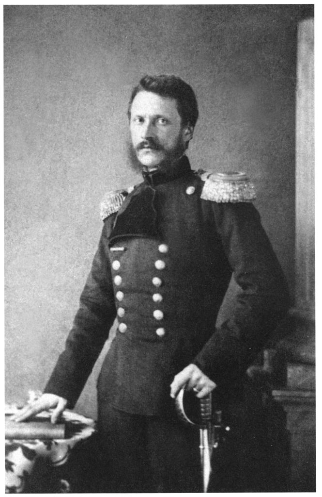 <p class='defImage'>Le prince Alexandre Jean Cuza.</p> <p class='credits'>Wikimedia Commons</p><p class='texte'>Dans les luttes d\'influence entre l\'Empire ottoman et l\'Empire russe dans les Balkans et l\'Europe de l\'Est, viens un moment où les puissances européennes, pour faire face aux troubles locaux et entre les deux empires, décident d\'acorder une autonomie relative à certaines entités territoriales. Dans la seconde part du XIX<sup>e</sup> siècle, la <a href='https://fr.wikipedia.org/wiki/Principaut%C3%A9_de_Moldavie' target='_blank'>Moldavie</a> et la <a href='https://fr.wikipedia.org/wiki/Principaut%C3%A9_de_Valachie' target='_blank'>Valachie</a>, alors des principautés vassales de l\'Empire ottoman, sont unies par <a href='https://fr.wikipedia.org/wiki/Alexandre_Jean_Cuza' target='_blank'>Alexandre Jean Cuza</a>. Ce fils de boyard aux <a href='https://fr.wikipedia.org/wiki/Renaissance_culturelle_roumaine' target='_blank'>valeurs plus libérales</a> avait participé à la <a href='https://fr.wikipedia.org/wiki/R%C3%A9volution_roumaine_de_1848' target='_blank'>révolution de 1848</a> lors du printemps des peuples et à sa courte république. Il fait ensuite carrière dans l\'armée moldave. Alors que les puissances européennes ont placé les principautés sous leur «&nbsp;tutelle&nbsp;» administrative après la <a href='https://fr.wikipedia.org/wiki/Guerre_de_Crimée' target='_blank'>guerre de Crimée</a>, il est élu ministre de la Guerre. Adroit orateur, Cuza parvient à se faire élire prince dans les deux principautés (des monarchies électives) en janvier 1859, les unissant en pratique sous sa gouverne. L\'union officielle est admise plus tard, en 1861, lorsque le sultan donne finalement son accord<sup>1</sup>. La <a href='https://fr.wikipedia.org/wiki/Principaut%C3%A9s_unies_de_Moldavie_et_de_Valachie' target='_blank'>\"Roumanie\"</a> était née&nbsp;! Cuza passera l\'essentiel de son règne à tenter de consolider les assises institutionnelles de la nouvelle nation.</br></br>Dans cette partie du <i>delo</i> 67 (fichier n°5), nous avons la copie d\'un rapport du Baron Henri d\'Offenberg (Genrikh Genrikhovich Offenberg) en date du 27 décembre 1863. Ce dernier, qui aura également été en poste à l\'ambassade russe à Washington, est alors consul de Russie à Bucarest<sup>2</sup>. Cette dépêche à l\'état-major russe rend compte d\'un entretien entre le baron d\'Offenberg et le prince Cuza, lors duquel ils discutent de la sécularisation des biens monastiques.</br></br>En effet, sous le règne du prince Cuza, le gouvernement entreprend plusieurs réformes pour moderniser l\'Administration et les lois. Une assemblée est instaurée, mais le prince occupe un rôle prépondérant au sein du gouvernement. Le servage est aboli, l\'éducation est bonifiée et le clergé orthodoxe perd l\'essentiel de son rôle actif dans les affaires nationales<sup>3</sup>. Une part importante de la réforme cependant est de nature terrienne. Par exemple, les terres des paysans sont séparées de celles des <a href='https://fr.wikipedia.org/wiki/Boyard' target='_blank'>boyards</a>, à qui ils devaient des rentes annuelles et des avantages en nature. Cependant, Cuza s\'attaque aussi à l\'Église orthodoxe, qui occupait jusque-là une place centrale dans la politique, la justice et l\'économie de la Valachie et de la Moldavie. En effet, le haut et le bas clergé étaient intégrés aux mécanismes de justice et d\'administration des boyards<sup>4</sup>. Cuza et son gouvernement laïcisent les offices, ôtent plusieurs avantages au clergé et instaurent des règlements stricts pour stopper la prolifération des moines. De plus, les institutions ecclésiastiques profitaient d\'avantages fiscaux importants et possédaient ensemble 25% des terres de Moldavie et près de 33% de celles de Valachie. Cette situation privait le gouvernement d\'importants revenus fonciers, puisqu\'une énorme portion de son territoire était exemptée de taxes et que les monastères envoyaient chaque année les profits de l\'exploitation de leurs terres à leurs grands monastères patrons, à Constantinople, Jérusalem et du <a href='https://fr.wikipedia.org/wiki/R%C3%A9publique_monastique_du_Mont-Athos' target='_blank'>mont Athos</a><sup>5</sup>. À la mi-décembre 1863, le gouvernement de Cuza confisque la majeure partie des terres des «&nbsp;monastères dédiés&nbsp;» (sous le patronnage de grands monastères étrangers) et annonce que leurs revenus sont la propriété de l\'État<sup>6</sup>. Cette décision survient au terme d\'un bras de fer qui se joue entre le gouvernement et l\'Église orthodoxe&nbsp;; le premier tentant de moderniser et de stabiliser les institutions d\'État et le second, de préserver ses privilèges traditionnels.</br></br>Bien qu\'affaiblie par la récente guerre de Crimée, la Russie demeure fidèle à ses habitudes et tente de déstabiliser le gouvernement des principautés en amplifiant chaque point de discorde et en tentant d\'en faire des enjeux internationaux. Elle voit donc en «&nbsp;la question des couvents&nbsp;» une belle occasion de s\'allier une bonne partie de l\'aristocratie terrienne moldo-valaque. Saint-Pétersbourg prend la défense des ecclésiatiques et fera, par l\'entremise de son consul à Bucarest, pression sur le gouvernement de Cuza pour que la décision soit infirmée. La Russie échouera cependant à faire reconnaître une quelconque gravité de l\'enjeu aux autres puissances européennes et Cuza ira de l\'avant avec ses réformes jusqu\'en 1866, année durant laquelle les mécontents desdites réformes forment une coalition pour le chasser du pouvoir<sup>7</sup>.</br></br>Il est intéressant de relier la suite des événements à l\'aide du document d\'Offenberg. Le consul reproche à Cuza la décision du gouvernement à propos des couvents, arguant que des garanties avaient été données par la chambre avant que la décision finale de séculariser les biens de l\'église ne soit prise. Le prince se défend en avançant que les moines grecs avaient une grave influence sur les principautés et qu\'il était nécessaire d\'agir. Il rappelle en outre qu\'il s\'attendait à davantage de soutien de la Russie en raison de ses services rendus, qu\'il propose un dédommagement raisonnable de 57&nbsp;000 piastres et que de toute façon il devait prendre en compte la pression des passions révolutionnaires de la populace, laquelle s\'adonne simplement au plein exercice de la liberté que sa Constitution européenne lui accorde par le biais de l\'assemblée. En effet, Cuza aurait toléré le passage d\'armes russes en direction de la Serbie et se serait attendu à la faveur impériale en retour<sup>8</sup>. De son côté, Offenberg explique à l\'état-major que les griefs de Cuza envers les moines grecs sont exagérés et que le prince emploiera tous les sophismes et les mensonges nécessaires pour parvenir à ses fins. Le consul s\'inquiète de l\'influence grandissante de la France de Napoléon&nbsp;III. D'ailleurs, on défendait alors les actions du gouvernement de Cuza dans la presse française. Offenberg avance que le contact des populations locales avec les peuples latins leur a imprimé le caractère aventureux et révolutionnaire de ces derniers. Enfin, s\'il doute que la bonification des moyens militaires du nouvel État, entreprise par Cuza, ne soit représente un danger majeure, l\'agent russe avance que les armes pourraient facilement servir aux révolutionnaires des États limitrophes. Offenberg évoque la possibilité que la Moldo-Valachie devienne une base de ce qu\'il appelle la «&nbsp;révolution cosmopolite&nbsp;», si la France avait l\'ambition de venger ses revers militaires passés.</p> <p class='titreArchive'>«Rapports d\’Offenberg, Vangali, Novikov et autres consuls russes en Turquie européenne à propos de la situation en Serbie et des relations entre la Turquie et la Serbie, à propos des troubles civils en Bulgarie, à propos de la concentration d\’immigrants polonais de Russie et de Pologne en Jassy et leurs activités dans les Balkans et à propos de la migration des secrétaires Moloques de Dobruja à la Russie.» <span class='date'>1863</span> <span class='agent'>Offenberg</span> <span class='archive'>RGVIA. F.&nbsp;450, op.&nbsp;1, d.&nbsp;67 (n°5)</span/></p> <p class='auteur'>Henri Dion</p><p class='ref'></br><sup>1</sup> Mihai BERZA et al., «&nbsp;ROUMANIE&nbsp;», s.d., [http://www.universalis.edu.com/encyclopedie/roumanie/]. (Consulté le 16 avril 2020) ; «&nbsp;Romania - Romanians in Transylvania&nbsp», <i>Encyclopedia Britannica</i>, s.d., [https://www.britannica.com/place/Romania]. (Consulté le 16 avril 2020) ; «&nbsp;Alexandru Ioan Cuza | prince of Romania&nbsp;», <i>Encyclopedia Britannica</i>, s.d., [https://www.britannica.com/biography/Alexandru-Ioan-Cuza]. (Consulté le 16 avril 2020).</br><sup>2</sup> Stewart Lillard, <i>Here Come the Russians: The Diplomatic Visits to the United States By the Ministers Plenipotentiary (and Later Ambassadors) of the Russian Empire</i>, s.l., Lulu Press Inc, 16 octobre 2017, 104p.&nbsp;. ; Mihai Dimitri Sturdza, «&nbsp;La Russie et la désunion des principautés roumaines, 1864-1866&nbsp;», <i>Cahiers du Monde Russe</i>, vol.&nbsp12, n°3, 1971, p.248‑252.</br><sup>3</sup> «&nbsp;Romania - Romanians in Transylvania&nbsp;», <i>op. cit.</i></br><sup>4</sup> Lucian N. Leustean, «&nbsp;Chapter 5 : The Romanian Orthodox Church&nbsp;», dans <i>Orthodox Christianity and Nationalism in Nineteenth-Century Southeastern Europe</i>, New York, Fordham University Press, 2014, p.102‑103.</br><sup>5</sup> Mihai BERZA et al., «&nbsp;ROUMANIE&nbsp;», <i>art. cit.</i></br><sup>6</sup> Lucian N. Leustean, «&nbsp;Chapter 5 : The Romanian Orthodox Church&nbsp;», <i>art. cit.</i>, p.117 ; Mihai Dimitri Sturdza, «&nbsp;La Russie et la désunion des principautés roumaines, 1864-1866&nbsp;», <i>art. cit.</i>, p.249.</br><sup>7</sup> Mihai Dimitri Sturdza, «&nbsp;La Russie et la désunion des principautés roumaines, 1864-1866&nbsp;», <i>art. cit.</i>, p.247‑254.</br><sup>8</sup> <i>Ibid.</i>, p.249.</p><p class='tag'> <em>Constitution</em> <em>politique</em> <em>Offenberg</em> <em>1863</em> <em>Moldavie</em> <em>autocrate</em> <em>Valachie</em> <em>Roumanie</em> <em>prince</em> <em>Cuza</em> <em>Russie</em> <em>Consul</em> <em>couvents</em> <em>sécularisation</em> <em>église orthodoxe</em>");
    //RoumanieDio.addTo(myMap);
    RoumanieDio.addTo(religionGroupe);

    var BucGos = L.marker([44.4267, 26.1025], {title: 'Bucarest', icon:Resistanceicon, riseOnHover : true, riseOffset: 999});
    BucGos.bindPopup("<p class='titre'>l'Insurrection de Janvier et la Turquie</p>  <p class='defImage'>Gravure sur l'insurrection de janvier de Artur Grottger</p> <p class='credits'><a href='https://en.wikipedia.org/wiki/January_Uprising#/media/File:Polonia_Bitwa.jpg'target='_blank'>Wikicommons</a></p><p class='texte'>L\’année est 1863, la Pologne se soulève contre la Russie et tente tel un phénix tente de renaitre de ses cendres, c\’est <a href='https://fr.wikipedia.org/wiki/Insurrection_de_Janvier'target='_blank'> l\’Insurrection de janvier </a>. Cette dernière profitait depuis 1815 d\’une constitution plutôt égalitaire qui plaçait tous les Polonais égaux devant la loi et l\’égal des Russes dans l\’empire. Toutefois, comme toute bonne chose cela avait une fin. En 1832 la Russie change sa politique administrative suite au <a href='https://fr.wikipedia.org/wiki/Printemps_des_peuples'target='_blank'> Printemps des peuples </a>et les révoltes qui ont eu lieu. Les droits polonais sont maintenus, mais le Sejm, l\’assemblé de Pologne est sabré de même que l\’armé polonaise. La loi martiale est établie et une forte politique répressive qui perdurera jusqu\’en 1856 commence. En confiance suite à l\’affaiblissement de l\’empire russe en Crimée, les Polonais s\’organisent dès 1860 pour un soulèvement. Toutefois, le monde de la realpolitik ne se bâtit pas avec seulement des espoirs. La réplique russe de 1863 sera terrible et le soulèvement pour ainsi dire étouffé. Ou du moins, c\’est ce que le gouvernement russe souhaite faire croire. En effet, le gros du soulèvement est écrasé en 1863, mais les combats continues en 1864 sous la forme de guérilla et de manière moins centralisé.</br></br>C\’est ainsi que survient la source à l\’étude qui concerne les révolutionnaires polonais en exil et leur réorganisation dans l\’ombre de la Sublime Porte. En 1864, plusieurs agents relèvent des activités polonaises en territoire ottoman de même que dans la principauté roumaine, état vassal de l\’Empire ottoman. Les auteurs nous informent qu\’à Constantinople des révolutionnaires se rassemblent. On y dénombre des Hongrois, des partisans italiens et des Polonais. Il y a des habitants de l\’empire ottoman, mais aussi des révolutionnaires de retour de France et de Russie qui s\’y réunissent. Novikov un agent russe à Constantinople remarque que la recrudescence des troubles est probablement dus aux politiques autrichiennes en Galicie qui agitent les populations polonaises de la région. La rencontre des révolutionnaires à Constantinople ne semble pas le fait du simple hasard. En effet, des membres du gouvernement ottoman ont des liens de parenté avec les généraux polonais et tentent de les aider, du moins monétairement. Au niveau politique le grand vizir s\’oppose, du moins officiellement, à supporter les polonais. On suppose pour ne pas froisser les puissances concernées. </br></br>À Constantinople en retrouvent déjà près de 3300 volontaires, majoritairement des déserteurs qui sont en train de se réorganiser en régiment cosaque en septembre 1864. La Porte est sous la pression des diplomates russe pour mettre fin aux rassemblements polonais et aux supports roumains, mais elle se dit incapable d\’un tel acte. Néanmoins, elle se dit intolérante vis-à-vis le recrutement militaire sur son territoire. Est-ce sincère ? On l\’ignore, mais on peut s\’imaginer que la Porte regarde ailleurs alors que des révolutionnaires s\’apprêtent à semer le trouble chez ses ennemis l\’Autriche et la Russie. </br></br>On remarque dans la source que la mention régulière d\’un nom, un certain<a href='https://fr.wikipedia.org/wiki/Alexandre_Jean_Cuza'target='_blank'> Alexandre Jean Cuza </a>. Il est prince de Roumanie, partisans des lumières et un nationaliste dans l\’âme. Ainsi cet état dont la Russie à aider à la création se retourne un peu contre elle. En effet, Couza accueille et travaille avec les partis révolutionnaires Polonais, Hongrois et Italiens. Il semble que la cible de ces mouvements révolutionnaires soit principalement l\’Autriche lorsqu\’on observe les nationalités en jeu. Il est clair que l\’intérêt russe dans cette affaire concerne le soulèvement dans l\’empire et l\’arrêt des révolutionnaires. De plus, on suppose on autre intérêt. Celui de vendre ces informations à l\’Autriche, car la Russie n\’a pas d\’intérêt à voir une vague révolutionnaire, à l\’image du printemps des peuples, se propager si près de son territoire. </p> <p class='titreArchive'>«Rapports d\’Offenberg, Vangali, Novikov et d\’autres consuls dans la partie européenne de la Turquie à propos de la situation en Serbie et les relations entre la Turquie et la Sebie, à propos des troubles en Bulgarie, à propos de la concentration d\’émigrants polonais de Russie et de Pologne dans Jassy et leurs activitées dans les Balkans, et à propos de la migration des sectes Molokan de Dobruia vers la Russie.» <span class='date'>1864</span> <span class='agent'>Offenberg et Novikov</span><p class='archive'>RGVIA, F.450, opis 1, delo 67, L.28-37, 44, 201, 214-215, 366</p> <p class='auteur'>Charles-Étienne Gosselin</p> <p class='ref'>ANSCOMBE, Frederick F. « The Balkan Revolutionary Age ». <i>The Journal of Modern History</i>, vol. 84, n° 3, 2012, p. 572‑606. </br></br>BOURRILLY, Jean <i>et al.</i> « POLOGNE ». s.d., consulté le 21 avril 2020, <http://www.universalis.edu.com/encyclopedie/pologne/>.</br></br>KELLY, Aileen M. « The Polish Uprising ». Dans <i>The Discovery of Chance</i>. s.l., Harvard University Press, 2016, coll. « The Life and Thought of Alexander Herzen », p. 452‑473, consulté le 20 avril 2020, <https://www.jstor.org/stable/j.ctvjk2vg0.23>.</br></br>THADEN, EDWARD C. et MARIANNA FORSTER THADEN. « CONGRESS POLAND ». Dans <i>Russia’s Western Borderlands</i>, 1710-1870. s.l., Princeton University Press, 1984, p. 144‑168, consulté le 20 avril 2020, <https://www.jstor.org/stable/j.ctt7ztx8v.16>.</p><p class='tag'> <em>Turquie </em><em>Pologne </em><em>Renseignement </em>");
    BucGos.addTo(myMap)
    BucGos.addTo(resistanceGroupe)

    var BakeouLam = L.marker([46.5640, 26.8388], {title: 'Un réseau secret de révolutionnaires', icon: Resistanceicon, riseOnHover : true, riseOffset: 999});
    BakeouLam.bindPopup("<p class='titre'>Un réseau secret de révolutionnaires</p>  <p class='defImage'>Œuvre de la série <i>Polonia 1863</i> par Arthur Grottger</p><p class='credits'>Wikicommons</p><p class='texte'>La deuxième moitié du XIX<sup>e</sup> siècle est marquée par plusieurs insurrections populaires en Europe et dans les Balkans. L\’année 1848 est particulièrement prolifique: on l\’appelle le <a href=‘https://fr.wikipedia.org/wiki/Printemps_des_peuples' target=‘_blank’>Printemps des peuples</a>. Notons notamment les révolutions hongroise, roumaine et polonaise qui ont lieu durant cette période. La répression de ces révoltes est faite par les membres de la Sainte-Alliance, surtout l\’Empire russe et l\’Empire autrichien. Visant l\’obtention de l\’indépendance de ces différents territoires, les révolutions de 1848 ont certainement fait peur aux puissances, notamment la Russie, qui cherche toujours à asseoir une dominance dans les Balkans. En janvier 1863, une nouvelle insurrection éclate en <a href=‘https://fr.wikipedia.org/wiki/Insurrection_de_Janvier' target=‘_blank’>Pologne</a>. L\’événement remémore certainement de mauvais souvenirs aux Russes et entraîne des répercussion jusque dans les Principautés unies de Moldavie et de Valachie, ou Principautés unies de Roumanie, état vassal de l\’Empire ottoman. Les espions russes ne manqueront pas d\’étudier la question et de rapporter de précieuses informations à leur Empire.</br></br>C\’est ainsi que dans le cadre d\’une « Notice secrète » un agent anonyme rapporte les rumeurs qui courent en Moldavie, en 1864. En effet, il semblerait que le Nord de ce territoire « conserve le caractère de lieu de refuge et de concentration pour les conspirateurs de toutes les nations », notamment des « débris des bandes dispersées en Pologne ». Le vocabulaire employé ici nous force à constater le mépris et la haine des Russes envers les révolutionnaires polonais. L\’agent explique que les individus en question arrivent sur le territoire avec des passeports étrangers, qu\’ils peuvent facilement échanger contre ceux du pays avec la complicité des autorités roumaines. Les mécréants peuvent ainsi aisément circuler sur le territoire.</br></br>L\’agent rapporte également l\’existence d\’une organisation secrète sur le territoire qui « tend à absorber tous les éléments révolutionnaires de l\’Europe ». Il doit donc s\’agir d\’une organisation d\’une assez grande envergure et qui doit certainement inquiéter le tsar. La ville de Bakéou (aujourd\’hui Bačau en Roumanie) est leur principal centre d\’activité, qu\’ils dirigent contre la Russie et l\’Autriche. L\’organisation secrète cumule plusieurs activités illicites. D\’abord, ils font la contrebande d\’armes vers la Bessarabie, la Galicie et la Hongrie. Ainsi, plusieurs dépôts d\’armes et de munitions seraient situés le long de la frontière avec l\’Autriche. Ensuite, ils produisent également des publications clandestines et des journaux révolutionnaires, notamment destinés à la Pologne, afin d\’y faire durer davantage la résistance. Mais qui se trouve à la tête de ce groupe? Il semblerait que ce soit un certain <a href=‘https://pl.wikipedia.org/wiki/Micha%C5%82_Mrozowicki' target=‘_blank’>Michał Mrozowicki</a>, commissaire plénipotentiaire polonais du gouvernement de l\’insurrection de janvier. Il est chargé de l\’expédition des armes, d\’enrôler des volontaires et de la correspondance secrète entre les différentes branches de l\’organisation, entre autres.</br></br>Apparemment, « la célébration du jour anniversaire de l\’insurrection polonaise a coïncidé à Bucarest avec la réunion de plusieurs chefs et émissaires révolutionnaires » polonais, hongrois et trucs. Il semble donc que les Principautés ne se cachent pas de leur sympathie pour les révolutionnaires, surtout le chef du Cabinet, qui aurait l\’intention de demander à la Chambre un crédit de « 601m de piastres » pour des secours aux réfugiés polonais qui s\’enfuient dans les Principautés. D\’ailleurs, celles-ci semblent être le terreau fertile d\’une alliance hongro-polonaise que les Russes ont l\’intention de surveiller de très près.</br></br>Dans un contexte où l\’Empire russe cherche à étendre son hégémonie dans les Balkans, mais aussi en Europe et au Proche-Orient, une coalition secrète de révolutionnaires est certainement un élément à supprimer du paysage géopolitique. La Russie, ayant déjà en sa possession des renseignements sur ces territoires et de l\’expérience en matière de répression de mouvements révolutionnaires, envisage donc très probablement une intervention armée sur les lieux afin de mettre un terme à cette organisation de « débris » et d\’éviter la reproduction d\’un Printemps des peuples toujours présent dans les mémoires.</p> <p class='titreArchive'>« Notice secrète » <span class='date'>Vers 1864</span> <span class='agent'>Inconnu</span> <span class='archive'>RGVIA. F. 450, op. 1, d. 67, l. 100-110.</span/></p> <p class='auteur'>Catherine Lampron</p><p class='ref'>Sur le Printemps des peuples:</br>LARRÈRE, Mathilde. « 1848, le printemps des peuples », <i>Révolutions</i>, 2013, p.&nbsp;72-83.</br></br>Sur l\'insurrection polonaise:</br>BURGAUD, Stéphanie. « Le tournant de 1863 pour la diplomatie napoléonienne », <i>Napoleonica. La Revue</i>, vol. 3, n° 3, 2008, p.&nbsp;94-117.</p><p class='tag'> <em>Moldavie</em><em>Valachie</em><em>Organisation secrète</em><em>Révolution</em>");
    BakeouLam.addTo(myMap)
    BakeouLam.addTo(resistanceGroupe)

    var ConstantinoplePic = L.marker([41.0008, 28.9009], {title: 'Troubles navals', icon :Marineicon, riseOnHover : true, riseOffset: 999});
    ConstantinoplePic.bindPopup("<p class='titre'>Troubles navals</p>  <p class='defImage'>Centre de l\’amirauté russe </p> <p class='credits'>Wikicommons</p><p class='texte'>Le delo 67 est un document très imposant et dispersé en plusieurs listes. Ici, il est essentiellement question des regroupements de listes 7, 8, 14 et 20. Ces listes sont écrites par l\’agent russe Offenberg et concernent principalement des Polonais en Turquie et en Roumélie. L\’agent Offenberg discute d\’une troupe polonaise répondant au nom d\’Okcha qui serait arrivé dans la ville de Constantinople. Elle serait sous le commandement d\’un homme se déclarant ambassadeur de Pologne en Turquie. Des commentaires satiriques d\’Offenberg sur le ridicule de la fausse identité de l\’homme sont aussi présents dans les listes. Ali Pacha, dans une discussion avec l\’agent, lui confirmera que se groupe est toléré dans les enceintes de la cité.</br>Quelques troubles sont aussi en lien avec un certain amiral Magnan qui aurait fait de surprenantes prises russes. Rapporté par le Journal de Constantinople, cet amiral, aussi capitaine générale des fosses maritimes de la Pologne, aurait déclaré dans divers journaux européens plusieurs prises de navires et pavillons russes. De plus, il ne porterait guère d\’attention sur les conséquences qu\’il y aurait à y mettre le feu, idée qui semble très prisée par cet amiral Magnan. Offenberg assure que le gouvernement impérial ne compte pas laisser faire cet incident sans une réponse efficace.</p> <p class='titreArchive'>«Lettre d\’Offenberg» <span class='date'>1862-1868</span> <span class='agent'>Offenberg</span> <span class='archive'>TsGIA. F. 450, op. 1, d. 67, 7,8,14,20</span/></p> <p class='auteur'>David Picard</p><p class='ref'>Seydoux, Marianne. Une Source Peu Connue Pour L'histoire De La Russie Aux XVIIe Et XVIIIe Siècles. La Série Mémoires Et Documents, Pologne Dans Les Archives Du Ministère Français Des Affaires Étrangères.Cahiers Du Monde Russe Et Soviétique, vol. 12, no. 4, 1971, pp. 491–507. JSTOR</p><p class='tag'> <em>Turquie</em>");
    //ConstantinoplePic.addTo(myMap)
    ConstantinoplePic.addTo(marineGroupe)

    var BelgradeRou = L.marker([44.8167, 20.4667], {title: 'La forteresse de Belgrade', icon:geopolicon, riseOnHover : true, riseOffset: 999});
    BelgradeRou.bindPopup("<p class='titre'>Ré-aménagment de la forteresse de Belgrade après le soulèvement serbe de 1853 à 1862</p> <p class='defimage'><a href='https://www.beogradskatvrdjava.co.rs/%D0%B8%D1%81%D1%82%D0%BE%D1%80%D0%B8%D1%98%D0%B0-%D0%B1%D0%B5%D0%BE%D0%B3%D1%80%D0%B0%D0%B4%D1%81%D0%BA%D0%B5-%D1%82%D0%B2%D1%80%D1%92%D0%B0%D0%B2%D0%B5/?lang=en' target='_blank'>Belgrade, 19e siècle, par Johan Georg Fridrih Popel</a></p><p class='credits'></p><p class='texte'>Le soulèvement serbe contre l'occupation des Turcs s'est achevé en 1862.  Il est convenu que l'Empire ottoman devra rapatrier tous les Turcs habitant les territoires serbe<sup>1</sup>.  La forteresse de Belgrade cependant, toujours aux mains des Ottomans, est destinée à être réaménagée.  Les deux lettres ci-dessous adresssent cette question.<br><br>Copie d’un rapport de M. Vlangaly, 28 sept./10 oct. 1862<br>Ce rapport concerne la décision, par la Porte et les Puissances garantes, de créer une commission mixte pour tracer le nouveau périmètre de l’esplanade de la forteresse de Belgrade et étudier la possibilité de modifier les ouvrages au sud de la place, afin de proprement consacrée cette forteresse à des fins défensives seulement.  Il souligne le caractère non seulement militaire mais aussi politique de cette commission.<br>M. Vlangaly estime que l'attitude des Prussiens pourrait compliquer cette affaire ce qui contribuerait à exciter le gouvernement serbe et à entraver la pacification.<br>En PS, on apprend que l’éloignement des Turcs d’Oujitza s’est bien passé mais le départ des Turcs de Sokol pourrait être plus difficile parce qu’ils sont belliqueux<sup>2</sup>.<br><br>Lettre de St-Pétersbourg, décembre 1862, adressée à Monsieur<br>Cette lettre informe le récipient, qui n'est pas nommé, qu’il a été désigné pour représenter la Russie sur la commission mixte liée à la forteresse de Belgrade.  Cette commission a été convoquée suite au protocole convenu à la conférence de Constantinople<sup>3</sup>.<br>La lettre réfère au protocole pour mentionner qu’on y rend obligatoire la démolition de toutes barricades et ouvrages érigés par les Serbes et que la Porte doit faire de même pour les ouvrages entourant la citadelle.  On demande au représentant de s’assurer, avant d’entamer les négociations, que cela a été fait.<br>L'article V du protocole indique que la commission doit définir le tracé du nouveau périmètre de l’esplanade et présenter un rapport à la Porte.  On avise le récipient que l’esplanade ne doit en aucun cas dépasser la cathédrale, le séminaire et l’archevêché.  À ce sujet, on réfère à la mission strictement défensive de la citadelle (déterminée par l'article IV du protocole). Il devra aussi émettre un avis sur ce qui est nécessaire à cette fonction défensive et ne pas présenter de menace pour la ville.<br>On rappelle que le tracé aura une grande signification politique parce ce que ça définit, en quelque sorte, la portée de l’action des Turcs.  Finalement, il est spécifié que le consulat de Belgrade possède des informations supplémentaires à cet égard.<br><br>1. Pekesen, B. <a href='http://ieg-ego.eu/en/threads/europe-on-the-road/forced-ethnic-migration/berna-pekesen-expulsion-and-emigration-of-the-muslims-from-the-balkans' target='_blank'>« Expulsion and Emigration of the Muslims from the Balkans »</a>, <i>European history Online</i>, 2011<br>2. <i>id.</i><br>3. Accord mettant fin aux soulèvements des Serbes<br><br><a href='https://icons8.com/icons/set/red-fort' target='_blank'>Icone par Icons8</a><br></p><p class='titreArchive'>Rapports des consuls russes de la Turquie européenne, Offenberg, Vlangali, Novikov et autres, au sujet de la situation en Serbie, les relations entre la Turquie et la Serbie, les troubles internes en Bulgarie, la concentration des émigrants polonais de Russie et de Pologne à Jassy et leurs activités dans les Balkans et la migration des groupes sectaires de Molokan de Dobruja vers la Russie.<span class='date'>1862</span> <span class='agent'>Popov, Offenberg Usenrill</span> <span class='archive'>RGVIA F450 Opis 1 delo 67, partie 1</span/></p> <p class='auteur'>Camille Routhier</p><em> Belgrade, Serbes, Turcs, Forteresse, Protocole de Constantinople, 1862</em>");
    //BelgradeRou.addTo(myMap)
    BelgradeRou.addTo(geopolitiqueGroupe)

    var BucarestRou = L.marker([44.4325, 26.1039], {title: 'Les réfugiés polonais dans les Principautés', icon: Spyicon, riseOnHover : true, riseOffset: 999});
    BucarestRou.bindPopup("<p class='titre'>Les réfugiés polonais dans les Principautés en 1862</p> <p class='defimage'><a href='https://poland.pl/history/history-poland/womens-war/' target='_blank'>Combattante Polonaise</a></p><p class='credits'></p><p class='texte'>Au cours de l'été 1862, la question des réfugiés polonais, qui sont peut-être des révolutionnaires, paraît sûrement très pressante pour les Russes.  Plusieurs consuls ont écrit à ce sujet.  Les rapports ici résumés concernent la situation dans les Principautés Unies (la Roumanie).<br><br>Rapport de M. Popov, Jassy, le 27 août 1862<br>En réponse à une communication autrichienne qui lui a été envoyée, M. Popov indique qu’il a fait quelques investigations pour confirmer les informations reçues.<br>Il s’agit pour lui d’évaluer la situation des Polonais en Moldavie.  Il mentionne que la majorité des réfugiés polonais arrivent par la frontière du nord.  Ceux qui arrivent par la frontière sud, quant à eux, sont tous munis de passeports étrangers.<br>Quelques uns des réfugiés, qui arrivent du nord, restent et circulent en toute liberté, les autorités ne semblent rien faire pour les éloigner ou les enfermer.  Cependant, la majorité d’entre eux n’y restent pas longtemps et repartent pour l’Italie, la Serbie ou la Turquie.<br>Il semble que les Polonais sont protégés par un agent du consulat italien à Botochani ce qui leur permet d’obtenir, des autorités moldaves, des permis de séjour valables de 3 à 6 mois.<br>Les renseignements recueillis par Popov indiquent qu’il y aurait environ 30 Polonais du Royaume et des provinces russes de l’ouest en Moldavie.  Il joint à son rapport une liste de noms des Polonais et informations supplémentaires sur ceux qui sont peut-être des agents de propagande mais il souligne que l’exactitude des informations ne peut être garantie.<br>En plus des réfugiés polonais sujets russes, il y a ceux de la Galicie dont le nombre est difficile à estimer.  Selon les Autrichiens, le total des réfugiés de toutes origines seraient plus de 600.  D’autres évaluations sont plus modestes, au minimum environ 100 mais il y a plusieurs estimations; celle de 600 étant la plus élevée.  Il n’en reste pas moins que le nombre de réfugiés fluctue régulièrement.<br>Selon Popov, les Polonais russes et une partie des galiciens auraient des visées révolutionnaires.  Mais la majorité des autres polonais ne chercheraient qu’à gagner leur vie.  Cela contredit, selon lui, les suppositions des Autrichiens à l’effet que les Polonais pourraient former une troupe de 1200 à 1500 hommes bien armés (i.e. les 600 réfugiés et d’autres Polonais déjà établis en Moldavie depuis longtemps).  Popov rapporte que « la presque totalité (…) au service des propriétaires dans la Haute Moldavie, sont des émigrés polonais établis dans les campagnes (…) [et] gagnent assez pour satisfaire leurs besoins et ceux de leurs familles »<sup>1</sup>, et il ne croit pas que ces gens se compromettraient dans une révolution. Il considère qu'il y aurait tout au plus de 400 à 500 révolutionnaires potentiels.<br>L’agent n’a pas de réponse en ce qui concerne la question des objectifs et des projets de la propagande.  Il observe qu’il manque totalement de données pour porter un jugement adéquat sur la question.  Il pense que les « bandes polonaises évacueront incessamment les districts de la Moldavie, et iront se concentrer à Tultcha, sur le territoire ottoman »<sup>2</sup>.  On dit qu’ils y attendent <a href='https://www.ohio.edu/chastain/ip/mieros.htm' target='_blank'>Mieroslawsky</a> qui viendra les organiser et les diriger mais on ne sait quels seraient ses plans.  Popov suppose que ceux-ci, quels qu'ils soient, devront être flexibles et s'adapter aux diverses éventualités.  Selon lui, les forces impliquées occupent à ce moment le territoire de l’Italie et les États européens de l’Empire ottoman mais les Principautés unies ne seraient essentiellement qu’une étape de passage.<br><br>Copie d’un rapport réservé du Baron d’Offenberg, consul russe à Bucarest, le 24 août 1862<br>Après avoir reçu des dépêches datées de juillet, le baron indique qu’il a fait beaucoup d’efforts pour accumuler les informations les plus exactes possibles sur le nombre et les projets des réfugiés polonais dans les Principautés.<br>Il confirme que certaines autorités consulaires auraient protégé des polonais et des hongrois.  Le nombre de réfugiés en Moldavie a diminué, ceux qui sont encore là sont surveillés.<br>Selon Offenberg, il n’y aurait plus d’organisation révolutionnaire régulière dans les Principautés.  Il mentionne un comité de secours à Galaty, peu menaçant mais nuisible parce qu’il facilite les déplacements des émigrés.<br>Un homme du nom de Canini, agent du parti extrême en Italie, a récemment séjourné dans les pays danubiens.  Plusieurs autres émissaires polonais, hongrois et italiens l’auraient suivi pour encourager la révolution.  Tout cela a fait croire aux émigrés que <a href='https://www.britannica.com/biography/Giuseppe-Garibaldi' target='_blank'>Garibaldi</a> devaient venir avec plusieurs volontaires et ça a causé beaucoup d’agitation.  Offenberg croit que tout cela a pour but de détourner l’attention et que le point d’attaque serait ailleurs.  Au moment où il écrit, le calme est revenu parmi les émigrés.<br>Offenberg revient sur la volonté exprimée du gouvernement moldave de s’opposer aux révolutionnaires mais que « la tolérance exceptionnelle de quelques autorités consulaires, et la protection d’un parti influent dans le pays »<sup>3</sup> causent des obstacles à leur expulsion complète.  Le Prince Couza aurait promis d’empêcher de nouvelles arrivées.  Il estime que le total des réfugiés polonais dans le Principautés ne dépasse pas 400 mais croit que de 600 à 700 hommes pourraient être rassemblés avec un peu de temps et ils auraient accès aux armes cachées dans la région depuis 1859.<br>Il termine en exprimant que « si le voisinage de tant de partisans des causes démocratiques et nationale est regrettable »<sup>4</sup>, il n’y aurait pas de menaces immédiates.  Il reconnait que très disséminés sur le territoire et surveillés, sans espoir d’assistance extérieure, les Polonais seraient mal avisés de tenter des actions révolutionnaires.  Le danger serait que tous ces hommes mécontents soient convenablement dirigés dans une action bien coordonnée et bénéficiant de l’appui d'une force réelle.  C’est justement ce que  la surveillance vise à prévenir.<br><br>Le texte de la partie 28 est plus inhabituel.  D'abord il est intitulé: 'Notice d'un agent secret', le terme étant étonamment évocateur.  Il aurait été écrit à Bucarest en 1868.<br>L'auteur du texte rapporte que, le 28 juillet, il a été témoin d'une conversation entre deux Polonais.  Le premier des deux est décrit ainsi: « âgé d’environ 28 ans était blond et de taille moyenne »<sup>5</sup>, l'autre étant plus âgé et plus foncé.  La conversation réfère à un complot qui serait, du moins en partie, exécuté à St-Pétersbourg (Pétersbourg dans le texte).  Deux noms y sont mentionnés, celui de Léonard Chodotzko, professeur à Paris, et celui de Levitzky, qui serait le nom du deuxième homme.  Cette dernière phrase de la conversation est reproduite ainsi: « Fais pour ne pas être découvert il est indispensable Levitzky que nous ne nous servions que de la langue française et de la langue russe et que nous changions le plus souvent d’extérieur et de domicile »<sup>6</sup>, après quoi les Polonais ce serait éloignés<br>Le document est d'autant plus étonnament que la conversation entre les deux hommes y est rapportée mot à mot, du moins à ce qu'il semble.  Ceci dit, il n'existe pas plus d'informations ni sur l'auteur, ni sur le récipient, ni sur les interprétations que l'on pourrait en faire.<br><br>1. RGVIA, Fond 450, Opis 1, delo 67, p1, l 13v - l 14<br>2. RGVIA, Fond 450, Opis 1, delo 67, p1, l 14<br>3. RGVIA, Fond 450, Opis 1, delo 67, p1, l 19<br>4. RGVIA, Fond 450, Opis 1, delo 67, p1, l 19v<br>5. RGVIA, Fond 450, Opis 1, delo 67, p28, l 414 <br>6. <i>ibid.</i><br><br><a href='https://www.flaticon.com/authors/freepik' target='_blank'>Icone par Freepik</a> <br></p><p class='titreArchive'>Rapports des consuls russes de la Turquie européenne, Offenberg, Vlangali, Novikov et autres, au sujet de la situation en Serbie, les relations entre la Turquie et la Serbie, les troubles internes en Bulgarie, la concentration des émigrants polonais de Russie et de Pologne à Jassy et leurs activités dans les Balkans et la migration des groupes sectaires de Molokan de Dobruja vers la Russie.<span class='date'>1862-1868</span> <span class='agent'>Popov, Offenberg Usenrill</span> <span class='archive'>RGVIA F450 Opis 1 delo 67, parties 1, 28</span/></p> <p class='auteur'>Camille Routhier</p><em> Bucarest, Polonais, Révolutionnaires, Réfugiés</em>");
    //BucarestRou.addTo(myMap)
    BucarestRou.addTo(renseignementGroupe)

    var GreceStj = L.marker([38.1117, 23.7373], {title: 'L\'inquiétude des intérêts Russes en Grèce après 1864', icon:Militaireicon, riseOnHover : true, riseOffset: 999});
    GreceStj.bindPopup("<p class='titre'>L'inquiétude des intérêts Russes en Grèce après 1864</p>  <p class='defImage'>Emblème royale de la Grèce</p> <p class='credits'><a href='https://commons.wikimedia.org/wiki/File:Royal_Coat_of_Arms_of_Greece_(blue_cross).svg'target='_blank'>Wikicommons</a> </p><p class='texte'>En septembre 1870, l’agent Offenberg transmet des informations à propos de l’avancement de la réforme militaire en Grèce. En effet, on veut observer si elle est toujours une aussi fervente défenseuse des idéaux du Tsar voulant libérer le monde hellénistique du joug ottoman. Dans cette optique, on note que les espions ne surveillent pas seulement les forces opposées, mais également les alliés russes afin qu’ils servent les intérêts de ceux-ci.</br>Depuis 1864, la Russie craint que la Grèce ne bascule en faveur d’une puissance étrangère adverse. En effet, à cette époque, elle se dote d'une démocratie plus solide, permettant la pénétration d’idéaux contraires à ceux proposés par le Tsar. D’ailleurs, pendant cette période, on espionne les plus hauts gradés dans les Balkans. Prenons l'exemple du prince Cuza, souverain des Principautés unies de Moldavie et de Valachie, qui est hésitant de la marche à suivre, prenant parfois des décisions impromptues qui vont à l’encontre des directives russes. En effet, il chasse l'assistance des puissances étrangères, mais conserve celle de la France afin de l’aider à garder sa souveraineté intacte. Ces informations proviennent de « Mme Marie Dhrénovitch, son amie et sa confidente [qui l’a rencontré] dernièrement pour mieux sonder le terrain<sup>1</sup> », démontrant bien que l'espionnage touche les plus hautes sphères de la société.</br>Par contre, l’avènement de la démocratie en Grèce amène son lot de désavantages qui peut aisément exploiter, comme l’incapacité à se doter d’une armée efficace. Comme le souligne Offenberg, rapportant les propos du Colonel Bostaris, ancien Ministre de la Guerre<sup>2</sup>: [d]epuis cette époque (1864), les changements ministériels ont été trop fréquents et les Ministères eux-mêmes trop provisoires pour permettre la reprise de cette œuvre nationale avait eu peu de suite<sup>3</sup> ». Ainsi, la lenteur et le désordre qui suit l’apparition d’une nouvelle démocratie nuisent aux efforts militaires.</br>Fait surprenant, Offenberg n’offre pas de solution afin moderniser les effectifs militaires de la Grèce, bien au contraire. D’un côté, elle n’a pas la capacité de lever une armée: « [l]’état financier n’y permet guère le maintien d’une armée régulière de quelque importance<sup>4</sup> ». D’un autre côté, il craint que les militaires ne se joignent aux rangs adverses : « [l]’intérêt de la Russie exige, qu’à un moment donné, les moyens d’action de la Grèce ne risquent point de tomber aux mains de ses adversaires<sup>5</sup> ». En somme, la Grèce est devenue un fardeau pour la Russie puisqu’elle doit contenir ses ferveurs démocratiques en résiliant les réformes de l'armée, alors qu’elle devait l’aider dans sa libération du monde hellénistique.</br>Pour Offenberg, ce ne sont pas les citoyens qu’il faut craindre, mais bel et bien le gouvernement antinationaliste. Ainsi, la seule issue est la formation d’une milice adéquate, puisqu’elle sera toujours au service du peuple grec et ne succombera pas aux politiques de divisions intérieures et extérieures. En toute fin de rapport, il écrit: « [c]’est pourquoi un système, qui donnerait aux forces militaires de la Grèce le caractère d’une armée de citoyens, serait aussi la meilleure garantie pour maintenir la solidité des intérêts de ce pays avec les nôtres<sup>6</sup> ».</p> <p class='titreArchive'> « Rapport d’Offenberg, Vangali, Novikov et d’autres consuls russes dans la partie européenne de la Turquie à propos de la situation en Servie et les relations entre la Turquie et la serbien, à propos des soulèvements civils en Bulgarie, à propos de la concentration des immigrants polonais de Russie et Pologne à Jassy et de leurs activités dans les Balkans, et à propos des immigrants de Molokan de Dobruja vers la Russie » <span class='date'>1862-1870</span> <span class='agent'>Offenberg</span> <span class='archive'>RGVIA. F. 450, op. 1, d. 67, l. 322-324 et 432-434.</span/></p> <p class='auteur'>Jean-Cristophe St-James</p><p class='ref'>1- RGVIA. F. 450, op. 1, d. 67, l. 324.</br>2- George Finlay, A history of Greece: from its conquest by the Romans to the present time, B.C. 146 to A.D. 1864, London, Clarendon Press, 1877, 294.</br>3- <i>Loc. Cit.</i>, l. 432v-433</br>4- <i>Ibid.</i>, l. 433.</br>5- <i>Ibid.</i>, l. 433.</br>6- <i>Ibid.</i>, l. 434.</p><p class='tag'> <em>Turquie</em>");
    GreceStj.addTo(myMap)
    GreceStj.addTo(militaireGroupe)

    var DobruBel = L.marker([44.0700, 27.1600], {title: ' La Dobroudja Ottomane au XIXème siècle', icon:geopolicon, riseOnHover : true, riseOffset: 999});
    DobruBel.bindPopup("<p class='titre'>La Dobroudja Ottomane au XIXème siècle</p>  <p class='defImage'>Tableau représentant Gardane</p> <p class='credits'>Wikicommons</p><p class='texte'>Chevauchant la frontière entre la Roumanie et la Bulgarie moderne, là où le Danube joint la mer Noire, le territoire historique de Dobroudja fut longuement une région administrative limitrophe de l\’Empire ottoman. Sa population majoritairement slave et orthodoxe combinée à sa position avantageuse aux bouches du Danube en font la cible de multiples regards ambitieux à l\’ouest de la mer Noire.  Les agents du renseignement russe : Offenberg et Vlangali décrivent la composition culturelle et religieuse de la région dans une série de rapports entre 1858 et 1862. Ils estiment la population totale de la région à près de 90 000 habitants et établissent que l\’écrasante majorité d\’entre eux sont chrétiens et orthodoxes alors que seul un sixième de la population s\’identifie comme étant de vocation musulmane. </br> Parmi la majorité chrétienne, les espions russes divisent la population en quelques groupes distincts : les Slaves de Russie, les bulgares, les roumains et les grecques. Ils mettent une emphase particulière sur la division des Slaves locaux qui sont principalement d\’origine ruthène alors qu\’une minorité d\’entre eux sont descendants de cosaques. La vocation religieuse et l\’identité culturelle de ces populations occupera une position d\’importance capitale au cours des années suivantes alors la Russie avance progressivement vers les Balkans et que l\’indépendance de la Bulgarie et de la Roumanie expulsera définitivement la région de la sphère d\’influence ottomane. Alors que l\’Empire des Turques recule devant des mouvements nationaux grandissants, la région devient le cœur de multiples querelles entre les nouveaux états nations qui prennent forme dans le sillage du traité de San Stefano.</p> <p class='titreArchive'>«Rapport sur la composition religieuse et culturelle de la Dobroudja ottomane» <span class='date'>1858-1862</span> <span class='agent'>Offenberg et Vlangali</span> <span class='archive'>TsGIA. F. 450, op. 1, delo 59 parties 1 et 2</span/></p> <p class='auteur'>Charles-Étienne Belleau</p><p class='ref'>KAYTCHEV, Naoum. « Children into Adults, Peasants into Patriots:: The Army and Nation-Building in Serbia and Bulgaria (1878–1912) ». Dans Benjamin C. Fortna, dir., Childhood in the Late Ottoman Empire and After. s.l., Brill, 2016, p. 115 140.</p><p class='tag'> <em>Turquie</em>");
    //DobruBel.addTo(myMap)
    DobruBel.addTo(geopolitiqueGroupe)

    var EnchantementBou = L.marker([41.6703, 26.5587], {title: 'Abdulaziz entre enchantement et désenchantement', icon:Diploicon, riseOnHover : true, riseOffset: 999 });
    EnchantementBou.bindPopup("<p class='titre'>Abdulaziz entre enchantement et désenchantement</p> <p class='defImage'>Tableau de Victor Masson représentant la Mort d'Abdulaziz, 1876</p><p class='credits'>Wikicommons</p><p class='texte'>Cette semaine, le delo avec lequel j\’ai travaillé est le <b>delo 61</b>. Grosso modo, il s\’agit d\’une série de lettres rédigées par Victor Franchini au sujet de l\’avènement d\’un nouveau sultan. Ce dernier, nommé <b>Abdulaziz</b>, est un nouveau prétendant qui, selon les dires de nombreux observateurs, devait répondre aux maux de l\’Empire. Dans une première lettre, Franchini donne une description assez exhaustive et flatteuse du nouveau Sultan : « il est d\’une taille et d\’une corpulence moyenne, il a un teint très basané, des yeux noirs, un nez légèrement prononcé, le regard immobile », il « cachait une certaine franchise et on comprend la sympathie et la popularité dont il est l\’objet » (l.121 r.-122 r.). Or, dans des lettres subséquentes, le portrait qu\’en fait Franchini est, pour le moins, dégradant. Pour ce marqueur, j\’essaierai donc de brosser un portrait de <b>l\’enchantement</b> et du <b>désenchantement</b> entourant le règne du 32e sultan ottoman. Grâce aux sources, il m\’a été possible de voir l\’évolution de l\’attitude de la population ottomane et celle de la « communauté » internationale à l\’égard des politiques d\’Abdulaziz.</br>Dans ses premières lettres, Franchini est rempli d\’espoir. Il décrit le Sultan et souligne à quel point il semble être un prétendant prometteur pour l\’Empire. Toutefois, il rappelle que la tâche qui attend le sultan est rude ; « réparer les brèches du dernier règne, payer les dettes, former un nouveau personnel administratif, d\’un nouveau système d\’ordre et d\’économie, rendre à l\’autorité le prestige qu\’elle a totalement perdu, acquérir la confiance de l\’Europe, lutter avec prudence contre les rivalités qui se feront jour avec d\’autant plus de vitalité que les rênes de l\’État seront tenues par une main plus vigoureuse » (l.122 r.). Or, Franchini, tout comme le peuple turc, croit que le nouveau Sultan a le potentiel de mener à bien ces objectifs et de retarder, comme il l\’appelle, le moment de la catastrophe (l.123 r.). En revanche, comme il le souligne, il faudrait que le soleil se lève à l\’Ouest avant de voir les « Othmans acquérir une vie et une splendeur nouvelle » (l.123). Franchini, qui déplore l\’attitude agressive de la Russie à l\’encontre de la Porte, croit aussi que la Russie devrait patienter et essayer d\’attirer les grâces du Sultan, ce dernier qui développe une attitude favorable à tous les pays d\’Europe. Plutôt que de laisser l\’autorité collective de l\’Europe à Constantinople perpétuer la <b>mauvaise tradition du traité de Paris</b>, il croit que la Russie devrait laisser retomber la poussière et calmer les relations diplomatiques entre les deux pays. De cette manière seulement ils pourront tirer leur épingle du jeu, et, quand le jour viendra, ils pourront prendre par surprise l\’Empire ottoman (l.133 r.).</br>Malgré la difficulté de la tâche, le Sultan prend, initialement des décisions propices à une sainte gestion de l\’Empire. Il s\’entoure d\’une cour compétente (l.126), il renonce à sa liste civile au profit du ministre de la guerre et de la marine (l.). L\’armée, la marine et le peuple semblent même être excités par l\’avènement d\’Abdulaziz et voient dans ce personnage, une <b>figure salvatrice</b> pour la Turquie (l.124 r.) ; il affectionne les exercices du corps, la chasse et l\’équitation (l.124 r.). Au dire de Franchini, « le peuple ne jure même que par son nom » (l.130).</br>Lorsqu\’on poursuit la lecture des lettres de Franchini, on constate, au grand désarroi de ce dernier, que le Sultan se sera toutefois avéré <b>piètre administrateur</b>. Comme le souligne l\’agent russe dans sa lettre du <b>20 juin 1861</b> « pour mettre en place des réformes conséquentes, le problème découle vraiment de la question des finances » (l.127 v.).; sans de tels réformes, l\’état de l\’Empire ne pourra être amélioré, réformes que ne mit jamais en place le nouveau Sultan. L\’engouement qu\’a développé Abdulaziz pour la marine dilapide les capacités du trésor. De plus, cherchant à réformer l\’armée, il change l\’entièreté des uniformes sans prendre en considération les capacités financières de l\’État ni la structure défaillante de cette dernière, elle qui, en sus, ne sera jamais capable, au dire de Franchini, d\’assimiler les tactiques européennes et d\’être en mesure de compétitionner avec ces puissances (l.136 v.). Bref, les réformes qu\’il tente de mener n\’apportent pas de résultat probant et ne font que creuser le <b>déficit</b> de l\’Empire (l.139 r.).</br>On voit le <b>désenchantement</b> le plus complet dans une dernière lettre adressée au ministre de la guerre <b>Dimitri Milioutine le 3 septembre 1861</b> (l.139 r.). Dans cette lettre, Franchini expose les plus grandes faiblesses du Sultan et met en lumière son incapacité à administrer un État. Usant de propos assez virulents, il souligne que le Sultan ne comprend pas le fonctionnement d\’un empire, qu\’il ne fait que contempler, qu\’il ne connait rien à l\’art de la guerre et qu\’il n\’a pas d\’esprit critique (l.141). Il n\’a pas entamé de réforme afin de se prémunir des <b>mouvements dissidents</b> en <b>Serbie</b>, en <b>Bulgarie</b> et en <b>Syrie</b>. Ni pour améliorer l\’état des finances, contrer la stagnation de l\’agriculture et la pénurie d\’hommes (l.144 r.). Il termine en prévoyant que tel suzerain ne fera qu\’attiser l\’ingérence européenne (l.145 v.) ce qui nous entraine inévitablement à réfléchir sur la période de <b>mise en tutelle</b>, par l\’<b>Allemagne</b>, la <b>France</b> et l\’<b>Angleterre</b>, de l\’Empire ottoman.</p><p class='titreArchive'>Rapport du colonel Victor Franchini au sujet des mesures prises par le nouveau Sultan Abdulaziz en vue de réformer l'Empire ottoman<span> <class='date'> 1861</span> <span class='agent'>Victor Franchini</span></p><p class='archive'>RGVIA. F. 450, op. 1, d. 61 , l. 120-146 </p><p class='auteur'>David Bouchard</p><p class='ref'></p><p class='tag'> <em>diplomatie</em>");
    EnchantementBou.addTo(myMap)
    EnchantementBou.addTo(DiplomatieGroupe)

    var PruthCan = L.marker([47.1998, 27.7874], {title: 'Envisager la chute de l\'Empire ottoman', icon:geopolicon, riseOnHover : true, riseOffset: 999});
    PruthCan.bindPopup("<p class='titre'>Envisager la chute de l\'Empire ottoman</p>  <p class='defImage'>Régions touchées par la question d\'Orient</p> <p class='credits'>Wikipédia</p><p class='texte'>Dans la seconde moitié du XIX<sup>e</sup> siècle, la <a href='https://fr.wikipedia.org/wiki/Question_d%27Orient'>question d\'Orient</a> préoccupe les grandes puissances d\'Europe, d\'Orient et la Russie. Cette dernière, depuis la guerre d\'Orient, soit la guerre de Crimée (1854-1856), se pose beaucoup de questions quant à l\'avenir de l\'Empire ottoman. De ce fait, l\'Empire russe envisage toutes les opportunités qui s\'offrent à lui si la Porte devait tomber. Entre 1859 et 1865, l\'agent russe Victor Franchini écrit plusieurs rapports depuis Constantinople. L\'un d\'eux pose une question très intéressante, à savoir <i>Quel est aujourd\'hui le théâtre d\'opération le plus avantageux pour la Russie en Orient?</i> Il est certain que les Russes n\'ont pas perdu l\'espoir de dominer un jour les Balkans. Cependant, son désir le plus cher est de dominer le Bosphore de la mer Noire à la mer Égée, en raison de sa position géographique et de ses besoins politiques et commerciaux. </br> Depuis la guerre d\'Orient, la position de la Turquie face à l\'Europe a changé. En effet, l\'Empire ottoman dépend de plus en plus des pays européens et il sait pertinemment qu\'un jour ou l\'autre il perdra ses territoires en Europe. Néanmoins, la victoire de Européens et des Turcs en 1856 occasionne deux conséquences pour la Russie. Dans un premier temps, elle perd sa flotte et se voit interdire la mobilisation de navires dans la mer Noire. Deuxièmement, l\'autonomie reconnue de la Moldavie, la Valachie et la Serbie engendre un éloignement entre les frontières européennes de la Russie et celle de la Turquie. Ainsi, la Russie se retrouve défavorisée à la sortie de ce conflit. De ces faits, les Russes perdent leur pouvoir d\'influence sur l\'Empire ottoman. Auparavant, elle pouvait interagir librement avec le Sultan, que ce soit sur le plan moral ou encore sur les ressources matérielles. En revanche, tout a changé et les Russes se demandent si finalement la Turquie ne serait pas sous domination européenne. </br> La perte de la flotte russe est grande, à un point tel que sur ce plan militaire, la Russie ne peut plus rivaliser avec la Turquie. L\'arrivée du bateau à vapeur dans la guerre change également la donne quant à la modernité et la force de la flotte. De plus, pour la Russie, comme mentionné plus tôt, il lui est interdit de tenir une flotte dans la mer Noire, mais aussi d\'entretenir une quelconque action matérielle sur la Turquie. Ainsi, la Russie ne veut plus se concentrer sur ce point. </br> Sur le plan du déplacement terrestre entre Constantinople et la Russie, par les provinces de la Turquie d\'Europe, les Russes se retrouvent avec deux inconvénients. Le premier est que l\'Autriche, qui installe progressivement son monopole en Turquie, impose des conditions aux voyages. L\'Empire russe, s\'il souhaite passer par ces routes devra répondre à trois éventualités, soit : inclure l\'Autriche dans ses intérêts, entretenir une entente avec l\'Autriche ou s\'arrêter aux portes de Constantinople comme en 1829 lors de la guerre russo-turque. Rien n\'est donc avantageux pour la Russie. Le deuxième inconvénient est que l\'Autriche risque de perdre la Vénétie. Si cela devait arriver, les troupes qui s\'y trouvaient seront transférées dans les pays slaves et l\'Autriche deviendrait un grand rival pour la Russie dans les provinces européennes de la Turquie. Il faut donc essayer d\'entretenir de bonnes relations diplomatiques avec l\'Autriche et espérer qu\'elle ne perde pas la Vénétie. </br> Un autre point très important pour la Russie est la question des alliés. Elle se demande quels peuples seraient les plus avantageux à aider à obtenir l\'indépendance face à la Turquie. Ils auraient donc des alliés situés proche de l\'empire et ils accéderaient par le fait même aux territoires qu\'ils convoitent. Ce stratège permettrait alors d\'installer l\'hégémonie russe et des partenariats avec ces peuples. Dès lors, Franchini analyse que les Grecs et les Slaves sont deux nationalités qui survivront après les Ottomans. La survivance des Grecs serait en raison de leur lien de fraternité très fort et de leurs traditions. Pour les Slaves, il est question du nombre. Il faut noter que ces deux nationalités sont ennemies, ainsi, la Russie ne peut prétendre les rallier pour sa cause. Pour chacune des nationalités, Franchini esquisse un tableau de la situation. Dans le cas des Grecs, depuis la guerre d\'Orient, les relations qu\'ils entretenaient avec la Russie se sont refroidies en raison de la préférence que les Russes semblent accorder aux Slaves. Cependant, il ne faut pas mépriser les Grecs. Au contraire des Slaves, ce serait les seuls à prendre les armes aux côtés des Russes face aux Turcs pour acquérir l\'indépendance. Leur position, par contre, est du côté de la mer Adriatique, ce qui n\'est pas l\'avantage principal. De plus, ils sont difficiles d\'accès pour les Russes qui devraient traverser les Balkans, le Danube, de nombreuses armées... Quant aux Slaves, on se concentre principalement sur les Serbes et les Bulgares. On sait qu\'ils sont étendus sur un grand territoire, soit en Serbie, en Bosnie, en Herzégovine et au Monténégro. Ils sont aussi beaucoup plus proches de la Russie que les Grecs. Néanmoins, une caractéristique de ce peuple est qu\'il est profondément divisé entre les Bulgares et les Serbes. Ainsi, il faudrait convaincre deux groupes distincts et opposés pour se rebeller contre les Turcs avec la Russie. Pourtant, leur détermination vers l\'indépendance est telle, qu\'ils aideraient grandement l\'armée qui leur viendrait en aide. Ces derniers fourniraient donc des ressources très importantes, mais il leur faudrait d\’abord s\'unir entre eux, sinon les Ottomans les domineront à jamais. De plus, les Russes doutent du fait qu\'ils prendraient réellement les armes contre les Turcs, comme il s\'est déjà vu auparavant. Finalement, chaque nationalité présenterait des pour et des contres que la Russie doit prendre le temps d\'étudier en cas de troubles. </br> Le dernier point abordé dans le rapport est la question de l\'Asie. Cette région, beaucoup plus proche de la Russie que les autres, offrirait également un avantage. Le seul ennemi qui s\'y trouve est l\'Angleterre qui n\'y possède pas grand-chose. La Turquie ne bougera pas ses troupes de la Roumélie, ce territoire serait donc facile à obtenir, puisqu\'elle ne détient que de faibles ressources. </br> En conclusion, pour Franchini, la question d'Orient est le nœud de l\'époque. Selon lui, cette dernière ne pourra se résoudre que par l'épée. Il aborde déjà l\'éventualité de la chute de l\'Empire ottoman, ce qui démontre que la situation de la Turquie n\'est pas bonne. Les solutions qu\'il offre dans son rapport se résume à tenir un corps d\'observation sur le Pruth - rivière qui se tient entre la Moldavie et la Roumanie actuelles - et d\'envoyer un corps d\'opération en Asie où il faudrait attendre et frapper ensuite. Il souligne que ce serait le secret de la question d\'Orient pour la Russie et que ce ne serait pas la partie la plus avantageuse et la plus sûre pour leur réussite.</p> <p class='titreArchive'>« Rapports du Colonel Franchini, agent militaire russe à Constantinople, à propose de la situation en Turquie et des mesures prises par le Sultan Abdul Aziz pour renforcer l\'armée et la marine; informations à propos de la composition, du renforcement et de la disposition des troupes turques en Bosnie » <span class='date'>1859-1865</span> <span class='agent'>Victor Franchini</span> <span class='archive'>RGVIA. F. 450, op. 1, d. 61, l. 65-88.</span/></p> <p class='auteur'>Victoria Candat</p><p class='ref'></p><p class='tag'> <em>Empire ottoman</em> <em>Empire russe</em> <em>Question d\'Orient</em>");
    //PruthCan.addTo(myMap);
    PruthCan.addTo(geopolitiqueGroupe);


    var PruthriviereCan = L.geoJSON(Pruth_Can, {color: '#70a26fff', opacity: 1});
    PruthriviereCan.bindTooltip('Pruth', {className: 'tooltip'});
    PruthriviereCan.bindPopup("<p class='titre'>Envisager la chute de l\'Empire ottoman</p>  <p class='defImage'>Régions touchées par la question d\'Orient</p> <p class='credits'>Wikipédia</p><p class='texte'>Dans la seconde moitié du XIX<sup>e</sup> siècle, la <a href='https://fr.wikipedia.org/wiki/Question_d%27Orient'>question d\'Orient</a> préoccupe les grandes puissances d\'Europe, d\'Orient et la Russie. Cette dernière, depuis la guerre d\'Orient, soit la guerre de Crimée (1854-1856), se pose beaucoup de questions quant à l\'avenir de l\'Empire ottoman. De ce fait, l\'Empire russe envisage toutes les opportunités qui s\'offrent à lui si la Porte devait tomber. Entre 1859 et 1865, l\'agent russe Victor Franchini écrit plusieurs rapports depuis Constantinople. L\'un d\'eux pose une question très intéressante, à savoir <i>Quel est aujourd\'hui le théâtre d\'opération le plus avantageux pour la Russie en Orient?</i> Il est certain que les Russes n\'ont pas perdu l\'espoir de dominer un jour les Balkans. Cependant, son désir le plus cher est de dominer le Bosphore de la mer Noire à la mer Égée, en raison de sa position géographique et de ses besoins politiques et commerciaux. </br> Depuis la guerre d\'Orient, la position de la Turquie face à l\'Europe a changé. En effet, l\'Empire ottoman dépend de plus en plus des pays européens et il sait pertinemment qu\'un jour ou l\'autre il perdra ses territoires en Europe. Néanmoins, la victoire de Européens et des Turcs en 1856 occasionne deux conséquences pour la Russie. Dans un premier temps, elle perd sa flotte et se voit interdire la mobilisation de navires dans la mer Noire. Deuxièmement, l\'autonomie reconnue de la Moldavie, la Valachie et la Serbie engendre un éloignement entre les frontières européennes de la Russie et celle de la Turquie. Ainsi, la Russie se retrouve défavorisée à la sortie de ce conflit. De ces faits, les Russes perdent leur pouvoir d\'influence sur l\'Empire ottoman. Auparavant, elle pouvait interagir librement avec le Sultan, que ce soit sur le plan moral ou encore sur les ressources matérielles. En revanche, tout a changé et les Russes se demandent si finalement la Turquie ne serait pas sous domination européenne. </br> La perte de la flotte russe est grande, à un point tel que sur ce plan militaire, la Russie ne peut plus rivaliser avec la Turquie. L\'arrivée du bateau à vapeur dans la guerre change également la donne quant à la modernité et la force de la flotte. De plus, pour la Russie, comme mentionné plus tôt, il lui est interdit de tenir une flotte dans la mer Noire, mais aussi d\'entretenir une quelconque action matérielle sur la Turquie. Ainsi, la Russie ne veut plus se concentrer sur ce point. </br> Sur le plan du déplacement terrestre entre Constantinople et la Russie, par les provinces de la Turquie d\'Europe, les Russes se retrouvent avec deux inconvénients. Le premier est que l\'Autriche, qui installe progressivement son monopole en Turquie, impose des conditions aux voyages. L\'Empire russe, s\'il souhaite passer par ces routes devra répondre à trois éventualités, soit : inclure l\'Autriche dans ses intérêts, entretenir une entente avec l\'Autriche ou s\'arrêter aux portes de Constantinople comme en 1829 lors de la guerre russo-turque. Rien n\'est donc avantageux pour la Russie. Le deuxième inconvénient est que l\'Autriche risque de perdre la Vénétie. Si cela devait arriver, les troupes qui s\'y trouvaient seront transférées dans les pays slaves et l\'Autriche deviendrait un grand rival pour la Russie dans les provinces européennes de la Turquie. Il faut donc essayer d\'entretenir de bonnes relations diplomatiques avec l\'Autriche et espérer qu\'elle ne perde pas la Vénétie. </br> Un autre point très important pour la Russie est la question des alliés. Elle se demande quels peuples seraient les plus avantageux à aider à obtenir l\'indépendance face à la Turquie. Ils auraient donc des alliés situés proche de l\'empire et ils accéderaient par le fait même aux territoires qu\'ils convoitent. Ce stratège permettrait alors d\'installer l\'hégémonie russe et des partenariats avec ces peuples. Dès lors, Franchini analyse que les Grecs et les Slaves sont deux nationalités qui survivront après les Ottomans. La survivance des Grecs serait en raison de leur lien de fraternité très fort et de leurs traditions. Pour les Slaves, il est question du nombre. Il faut noter que ces deux nationalités sont ennemies, ainsi, la Russie ne peut prétendre les rallier pour sa cause. Pour chacune des nationalités, Franchini esquisse un tableau de la situation. Dans le cas des Grecs, depuis la guerre d\'Orient, les relations qu\'ils entretenaient avec la Russie se sont refroidies en raison de la préférence que les Russes semblent accorder aux Slaves. Cependant, il ne faut pas mépriser les Grecs. Au contraire des Slaves, ce serait les seuls à prendre les armes aux côtés des Russes face aux Turcs pour acquérir l\'indépendance. Leur position, par contre, est du côté de la mer Adriatique, ce qui n\'est pas l\'avantage principal. De plus, ils sont difficiles d\'accès pour les Russes qui devraient traverser les Balkans, le Danube, de nombreuses armées... Quant aux Slaves, on se concentre principalement sur les Serbes et les Bulgares. On sait qu\'ils sont étendus sur un grand territoire, soit en Serbie, en Bosnie, en Herzégovine et au Monténégro. Ils sont aussi beaucoup plus proches de la Russie que les Grecs. Néanmoins, une caractéristique de ce peuple est qu\'il est profondément divisé entre les Bulgares et les Serbes. Ainsi, il faudrait convaincre deux groupes distincts et opposés pour se rebeller contre les Turcs avec la Russie. Pourtant, leur détermination vers l\'indépendance est telle, qu\'ils aideraient grandement l\'armée qui leur viendrait en aide. Ces derniers fourniraient donc des ressources très importantes, mais il leur faudrait d\’abord s\'unir entre eux, sinon les Ottomans les domineront à jamais. De plus, les Russes doutent du fait qu\'ils prendraient réellement les armes contre les Turcs, comme il s\'est déjà vu auparavant. Finalement, chaque nationalité présenterait des pour et des contres que la Russie doit prendre le temps d\'étudier en cas de troubles. </br> Le dernier point abordé dans le rapport est la question de l\'Asie. Cette région, beaucoup plus proche de la Russie que les autres, offrirait également un avantage. Le seul ennemi qui s\'y trouve est l\'Angleterre qui n\'y possède pas grand-chose. La Turquie ne bougera pas ses troupes de la Roumélie, ce territoire serait donc facile à obtenir, puisqu\'elle ne détient que de faibles ressources. </br> En conclusion, pour Franchini, la question d'Orient est le nœud de l\'époque. Selon lui, cette dernière ne pourra se résoudre que par l'épée. Il aborde déjà l\'éventualité de la chute de l\'Empire ottoman, ce qui démontre que la situation de la Turquie n\'est pas bonne. Les solutions qu\'il offre dans son rapport se résume à tenir un corps d\'observation sur le Pruth - rivière qui se tient entre la Moldavie et la Roumanie actuelles - et d\'envoyer un corps d\'opération en Asie où il faudrait attendre et frapper ensuite. Il souligne que ce serait le secret de la question d\'Orient pour la Russie et que ce ne serait pas la partie la plus avantageuse et la plus sûre pour leur réussite.</p> <p class='titreArchive'>« Rapports du Colonel Franchini, agent militaire russe à Constantinople, à propose de la situation en Turquie et des mesures prises par le Sultan Abdul Aziz pour renforcer l\'armée et la marine; informations à propos de la composition, du renforcement et de la disposition des troupes turques en Bosnie » <span class='date'>1859-1865</span> <span class='agent'>Victor Franchini</span> <span class='archive'>RGVIA. F. 450, op. 1, d. 61, l. 65-88.</span/></p> <p class='auteur'>Victoria Candat</p><p class='ref'></p><p class='tag'> <em>Empire ottoman</em> <em>Empire russe</em> <em>Question d\'Orient</em>");
    PruthriviereCan.addTo(myMap);
    PruthriviereCan.addTo(EnvironnementGroupe);

    var VarnaLor = L.marker([43.2182, 27.9152], {title: 'La « grande comédie de Varna »', icon:Ethnoicon, riseOnHover : true, riseOffset: 999})
    VarnaLor.bindPopup("<p class='titre'>Incompatibilité entre la Porte et l'Europe : les résultats de la guerre de Crimée et le cas de la « grande comédie de Varna »</p>  <p class='defImage'>Photographie d'un groupe de bachibozouks, prise par Pascal Sébah vers 1870</p>  <p class='credits'>Wikimedia Commons</p><p class='texte'>Le document à l\'étude cette semaine contient quelques rapports rédigés par l\'agent militaire russe Franchini entre les mois d\'août et de septembre 1856. Cette année est loin d\'être anodine, car elle signe la fin de la <a href='https://www.universalis.fr/encyclopedie/guerre-de-crimee-en-bref/' target=' blank'>guerre de Crimée</a>, débutée en 1853. La conclusion de ce conflit, confirmée par le <b>Traité de Paris (1856)</b>, a de très graves répercussions pour la Russie et pour l\'Europe de façon plus générale. En effet, le Traité de Paris, en plus de freiner les ambitions de la Russie sur la mer Noire et de lui interdire l\'établissement d\'une forme de protectorat pour les chrétiens orthodoxes de l\'empire ottoman, remet en cause l\'équilibre des puissances européennes connu sous le nom de <a href='https://can01.safelinks.protection.outlook.com/?url=https%3A%2F%2Ffr.wikipedia.org%2Fwiki%2FConcert_europ%25C3%25A9en&amp;data=02%7C01%7CTristan.Landry%40USherbrooke.ca%7C943767b32cd3493e0fb408d7dcc1d43a%7C3a5a8744593545f99423b32c3a5de082%7C0%7C0%7C637220597351380051&amp;sdata=dy4eCuhsAjAF8tPfe4%2FFNQWc8y8nAJINSu15fjM6MS4%3D&amp;reserved=0' target=' blank'>« concert européen »</a><sup>1</sup>. Ce dernier, établi en 1815 avec le Congrès de Vienne, suite à la défaite de Napoléon, avait relégué la France à un rôle secondaire et avait, au contraire, stimulé les ambitions expansionnistes de la Russie<sup>2</sup>. Le Traité de Paris vient renverser quelque peu cet ordre des choses, en réattribuant une certaine importance à la France de Napoléon III et en demandant notamment la démilitarisation de la mer Noire, un dur coup pour la Russie d\'Alexandre II<sup>3</sup>.<br/><br/>Les rapports de Franchini à l\'étude sont donc datés de quelques mois après la ratification de ce traité dur à avaler pour la Russie, et tentent de dresser un portrait actuel de la situation d\'après-guerre en Turquie. Bien entendu, ils traitent surtout des relations entre Européens et Ottomans, et semblent insister sur l\'incompatibilité de ces deux peuples. Franchini aborde en premier lieu le cas des soldats turcs qui, durant la guerre de Crimée, désertaient les troupes ottomanes pour s\'enrôler dans les troupes anglaises (qui, rappelons-le, combattaient dans le même camp). Selon lui, les Turcs avaient intérêt à servir sous la reine Victoria, notamment pour les raisons suivantes : « Les avantages de ce service consistait[sic] pour le Turc a être régulièrement payé, bien vêtu, bien chaussé, et surtout splendidement nourri, son entretien ne comptant pas moins de treize articles de rations, pain blanc, café, sucre, beurre, riz, vin ou rhum, etc<sup>4</sup>. » Franchini profite de cette observation pour lancer une flèche à « l\'appât du gain » caractérisant, à son avis, le Turc, et qui surpasserait même son « fanatisme musulman »<sup>5</sup>.<br/><br/>Le deuxième élément qui ressort des rapports de Franchini est ce qu\'il appelle « la grande comédie de l\'affaire de Varna ». En résumé, cette « affaire » concernerait l\'assassinat d\'une jeune Bulgare, assassinat qui aurait été ordonné par un pacha. Ce qui nous intéresse ici et qui est qualifié de « comédie », ce sont les procédures juridiques qui découlent de cette affaire. Selon Franchini, les Turcs se targuent d\'emprunter les méthodes européennes quand, au fond, la peine de mort pourra facilement être évitée en « retournant à la loi musulmane qui autorise le rachat du sang au moyen d\'une somme d\'argent<sup>6</sup>. » Bref, Franchini considère que, peu importe les efforts mis en place par l\'administration turque, compte tenu du caractère intrinsèque de la population, il sera impossible pour l\'empire ottoman de se « civiliser ». Selon lui, la guerre de Crimée est un exemple parfait de l\'incompatibilité entre la civilisation européenne et la Porte, une « puissance finie »<sup>7</sup>. En effet, il mentionne que pour un observateur à l\'œil averti, ce qui se dégage principalement du contact entre Européens et Turcs lors de la guerre de Crimée est un « profond sentiment de répulsion mutuelle<sup>8</sup>. » Finalement, pour Franchini, le Bachibozouk, « ce Turc primitif qui a conservé le costume, l\'armement et les mœurs de ses pères, mœurs si éloignées des nôtres [Européens] », se cache en fait au sein des Turcs paraissant les plus élégants et sophistiqués<sup>9</sup>. Les réformes de la Porte sont donc vouées, selon lui, à un échec lamentable, et cette puissance en déclin ne pourra jamais réellement occuper une place quelconque dans le « concert européen »<sup>10</sup>.</p> <p class='titreArchive'><i>Rapports du capitaine en second Franchini, agent militaire russe à Constantinople, à propos de l'évacuation des forces alliées de la Turquie, à propos du recrutement et des dispositions de l'armée turque, à propos des chemins de fer en Roumélie, à propos de la condition de la marine turque, et à propos dela pénétration du capital britannique dans l'économie de la Turquie.</i> <span class='date'>Août-septembre 1856</span> <span class='agent'>Victor Franchini</span> <span class='archive'>RGVIA. F. 450, op. 1, d. 57, l. 1-26 v.</span/></p> <p class='auteur'>Thomas Lord</p><p class='ref'><sup>1</sup> <i>Bénédicte Rolland-Villemot, « La guerre de Crimée et le Traité de Paris : un enjeu géopolitique en Méditerranée », <i>Cahiers slaves</i>, vol. 14, n° 1, 2016, p. 130.<br/><br/><sup>2</sup> Jacques-Alain de Sédouy, « Le concert européen », <i>Inflexions</i>, vol. 33, n° 3, 2016, p. 61‑62.<br/><br/><sup>3</sup> <i>Ibid.</i>, p. 64.<br/><br/><sup>4</sup> RGVIA. F. 450, op. 1, d. 57, l. 3.<br/><br/><sup>5</sup> <i>Ibid.</i>, l. 4.<br/><br/><sup>6</sup> <i>Ibid.</i>, l. 14 v.<br/><br/><sup>7</sup> <i>Ibid.</i>, l. 16 v.<br/><br/><sup>8</sup> <i>Ibid.</i>, l. 17.<br/><br/><sup>9</sup> <i>Ibid.</i>, l. 18 v.-19.<br/><br/><sup>10</sup> <i>Ibid.</i>, l. 16 v.</p><p class='tag'> <!--<em>Turquie</em>--> <!--<em>Crimée</em>--> <!--<em>Franchini</em>--> <!--<em>ethnographie</em>-->");
    VarnaLor.addTo(myMap)
    VarnaLor.addTo(ethnoGroup)

    var ConstiDio = L.marker([41.0110, 28.9826], {title: 'Mécontentement et Constitution', icon:geopolicon, riseOnHover : true, riseOffset: 999});
    ConstiDio.bindPopup("<p class='titre'>Mécontentement et Constitution sous Abdülhamid II</p>  <p class='defImage'>Constitution ottomane de 1876.</p> <p class='credits'>Wikimedia Commons</p><p class='texte'>Le <i>delo</i> 113 consiste en une lettre de plusieurs chapitres adressée au sultan <a href='https://www.britannica.com/biography/Abdulhamid-II' target='_blank'>Abdülhamid II</a>. L\’aristocrate anonyme, auteur de cette lettre très critique de la gestion de l\’Empire, aborde plusieurs aspects de l\’administration des provinces et du gouvernement central, notamment la corruption endémique, l\’absence de responsabilité des officiers, la restriction des libertés individuelles et l\’espionnage constant de la police secrète du sultan<sup>1</sup>. Il critique également très sévèrement les choix personnels du sultan, notamment de ses proches conseillers, encore qu\’il se réfugie derrière l\’idée que le souverain est mal conseillé et leurré par ses conseillers depuis des décennies. L\’auteur affirme que le pays est plusieurs siècles en retard sur l\’Europe et qu'il doit entreprendre une régénération totale, à l\’image du Japon et de la Bulgarie, s\’il entend défendre son intégrité territoriale et son rang de puissance mondiale. Cela doit impliquer de moderniser ses infrastructures, d\’extirper sa population du Moyen âge par l\’éducation, de développer ses transports et ses industries, mais surtout de changer son mode de gouvernement. L\’aristocrate affirme que le changement doit commencer avec Sa Majesté impériale et que la Nation suivra si on lui en donne l\’exemple, si les efforts nécessaires y sont mis du côté du gouvernement et si on lui donne les assurances d\’une existence meilleure. Pour ce faire, le sultan devrait admettre par <a href='https://en.wikipedia.org/wiki/Hatt-i_humayun' target='_blank'>Hat Houmayoun</a> l\’urgence de la situation et rétablir la <a href='https://en.wikipedia.org/wiki/Ottoman_constitution_of_1876' target='_blank'>Constitution</a>, ou au moins un système similaire pour régulariser et structurer l\’exercice du pouvoir dans l\'Empire, qu\’il décrit comme de l\’improvisation et des demi-mesures.</br></br>Ce texte est intéressant pour plusieurs raisons, notamment pour sa provenance, mais surtout pour son audace. D\’abord, il nous parvient des rapports du colonel N.N. Peshkov (ou A. Peshkov), en poste à Constantinople de 1886 à 1898, lequel doit entre autres rendre compte des activités des <a href='https://fr.wikipedia.org/wiki/Jeunes-Turcs' target='_blank'>Jeunes-Turcs</a><sup>2</sup>. Ainsi, il nous semble probable que les services de renseignement russes ont intercepté ou mis la main sur cette lettre et la transmettent à Saint-Pétersbourg pour témoigner du mécontentement envers l\’autorité ottomane.</br></br>Quant au contenu de la lettre, il est certainement audacieux au sens où, bien que l\’on tente de convaincre le sultan qu\’il a été dupé par ses proches conseillers, on lui reproche d\’avoir pris nombre de mauvaises décisions. On lui reproche de ne pas vouloir laisser ses ministres détenir de réel pouvoir et d\’entraver la modernisation du pays en prenant lui-même chaque décision que lui propose son cabinet, non sans les avoir préalablement amendées (on doit lire ici entraver la libéralisation, puisque le sultan pilotait une certaine modernisation du pays, mais qui ne touchait pas ses institutions). On proteste également contre les limitations aux libertés individuelles, par exemple les interdictions de correspondance par la poste ou par téléphone, de côtoyer les Européens ou d\’aller visiter l’Europe.</br></br>On y mentionne finalement «&nbsp;la <a href='https://en.wikipedia.org/wiki/Ottoman_constitution_of_1876' target='_blank'>Constitution</a>&nbsp;». Cette Constitution, inspirée par les idéaux les demandes des <a href='https://en.wikipedia.org/wiki/Young_Ottomans' target='_blank'>Jeunes Ottomans</a> (prédécesseurs des <a href='https://fr.wikipedia.org/wiki/Jeunes-Turcs' target='_blank'>Jeunes-Turcs</a>) et du diplomate <a href='https://fr.wikipedia.org/wiki/Midhat_Pacha' target='_blank'>Midhat Pacha</a>, fut promulguée en 1876 avec l\'accord du sultan Abdülhamid II, au moment de son accession au trône. Mais celui-ci la suspendit dès 1878 et gouverna en autocrate jusqu’à sa déposition en 1909<sup>3</sup>. Un des aspects primordiaux de cette constitution, édifiée par un conseil choisi par <a href='https://en.wikipedia.org/wiki/Abdulaziz' target='_blank'>Abdülaziz</a> avant sa déposition, est que l\’Empire ottoman y conserve son essence monarchique et théocratique. D\’ailleurs, elle laissait l\’entièreté du pouvoir exécutif entre les mains du sultan tout en lui laissant un droit de regard sur les nominations des ministres et sur la législation<sup>4</sup>. On peut donc voir que deux décennies plus tard, les demandes de l\’aristocrate anonyme ne sont pas différentes de celles de Midhat Pacha et des Jeunes Ottomans, traduites dans la constitution de 1876. On peut en conclure que sous le règne d\’Abdülhamid II, l\’administration de l\’Empire a bien peu changé malgré le grand désir de réforme qui se fait sentir tout au long du XIX<sup>e</sup> siècle.</p> <p class='titreArchive'>«Rapports du Colonel Peshkov, agent militaire russe à Constantinople, à propos des activités des Jeunes-Turcs et à propos de l’état de l’armée et de la marine turque. Correspondance de l’état-major de la marine avec le Ministère de la Guerre à propos de l’établissement et de l’impression des cartes du Haut-Bosphore.» <span class='date'>1895-1896</span> <span class='agent'>Peshkov</span> <span class='archive'>RGVIA. F.&nbsp;450, op.&nbsp;1, d.&nbsp;113, l.&nbsp;1-24.</span/></p> <p class='auteur'>Henri Dion</p><p class='ref'></br><sup>1</sup> Allan Kaval, «&nbsp;Abdülhamid II, sultan ottoman (1876-1909)&nbsp;», Les clés du Moyen-Orient, 27 décembre 2011, [https://www.lesclesdumoyenorient.com/Abdulhamid-II-sultan-ottoman-1876-1909.html]. (Consulté le 12 avril 2020).</br><sup>2</sup>Alex Marshall, <i>The Russian General Staff and Asia, 1860-1917.</i>, s.l., Routledge, 22 novembre 2006, p.31 ; Stavros T. Stavridis et Vahe G. Kateb, «&nbsp;Constantinople Massacre August 26-27, 1896: Australian Church Reaction&nbsp;», <i>Hellenic Communication, L.L.C.</i>, 2 octobre 2006, [https://www.helleniccomserve.com/stavridisarmenianslaughter.html]. (Consulté le 12 avril 2020).</br><sup>3</sup> «&nbsp;Abd al-Hamid II&nbsp;», <i>Columbia Electronic Encyclopedia</i>, 6th Edition, février 2020.</br><sup>4</sup> Asena Boztaş, «&nbsp;Assessment of Legislative Function Within Turkish Democracy&nbsp», <i>TÜRK DEMOKRASİSİNDE YASAMA FONKSİYONUNUN DEĞERLENDİRMESİ.</i>, vol.&nbsp;14, n°1, janvier 2013, p.45‑49.</p><p class='tag'> <em>Constitution</em> <em>politique</em> <em>Peshkov</em> <em>1895</em> <em>police secrète</em> <em>autocrate</em> <em>Constantinople</em> <em>mécontentement</em> <em>lettre</em> <em>ministres</em> <em>conseillers</em> <em>influence</em> <em>Abdülhamid II</em> <em>Jeunes Turcs</em> <em>Jeunes Ottomans</em>");
    //ConstiDio.addTo(myMap);
    ConstiDio.addTo(geopolitiqueGroupe);

    var SilGos = L.marker([44.1147, 27.2671], {title: 'Silistrie', icon: geopolicon, riseOnHover : true, riseOffset: 999});
    SilGos.bindPopup("<p class='titre'>Des suites du Traité de Paris de 1856</p>  <p class='defImage'>Plan de la forteresse de Silistrie en 1854</p> <p class='credits'><a href='https://gallica.bnf.fr/ark:/12148/btv1b531728369?rk=21459;2'target='_blank'>Gallica</a></p><p class='texte'>La fin de la guerre de Crimée et le traité de Paris de 1856 apportèrent plusieurs changements dans la politique européenne et dans la région de la mer Noire. À la suite de ce traité, la Russie perdit des territoires aux profits des Turcs et la démilitarisation de la mer Noire fut proclamée. La source à l\’étude rapport des faits et événements suivant ce traité en 1858.</br></br>Tout d\’abord, l\’auteur informe <a href='https://fr.wikipedia.org/wiki/Alexandre_Gortchakov' target='_blank'>Alexander Gorchakov</a> de la présence d\’une corvette autrichienne venant faire des exercices dans la mer de Marmara. Il présente alors comment cet évènement comme une infraction aux traités de Paris et dépêche ses employés de faire pression sur la Porte pour remédier à cette situation. Il indique notamment comment cette entrave ne représente pas pour les autres puissances concernées par le traité une quelconque préoccupation. Puis il présente la commande des 200 canons suédois pour la Russie devant traverser les détroits du Bosphore et des Dardanelles. Il rapporte que selon un traité commercial de 1846, ces canons peuvent passer, mais que ce passage ne va pas passer inaperçu et va provoquer les puissances étrangères, notamment Angleterre. Cette première lettre affiche ainsi un élément relatif au traité de Paris, la démilitarisation de la mer Noire. La corvette autrichienne trop grande pour servir dans le Danube soulève les suspicions des Russes, car, selon l\’auteur, un simple entrainement militaire ne peut évidemment pas être le seul objectif des Autrichiens. L\’auteur souligne notamment le précédent que cet événement crée et qu\’il rapporte doit être pris au sérieux, car il s\’agit de la sécurité de la Russie. Le deuxième aspect, la cargaison de canon peu d\’abord paraitre étrange surtout lorsqu\’on considère la démilitarisation de la mer Noire (ceci inclut le démantèlement des forts et arsenaux russes) et l\’attachement russe au respect du traité. Toutefois, leurs motivations s\’éclairent lorsqu\’on considère que les forts à l\’embouchure des fleuves et dans la mer d\’Azov continuent leurs services. On suppose que ces canons y sont destinés. L\’auteur affiche les répercussions que cette cargaison va avoir dans les relations étrangères et comment les Anglais vont dénoncer immédiatement cette action. En bref, l\’agent nous informe qu\’il y a là un potentiel conflit diplomatique avec les autres puissances. La crainte que l\’auteur exprime à l\’idée de froisser les puissances étrangères exprime bien la prise de conscience de la Russie de son retard militaire face à l\’Occident et comment une guerre est à éviter.</br></br>Plus loin dans d\’autres lettres l\’auteur, Offenberg, présente des informations sur la situation du Danube et de l\’un de ses affluents le Pruth. Il présente comment le territoire cédé à la Moldavie suite à la guerre de Crimée est rendu impraticable et nuit au commerce russe sur cette rivière. Il tient ces informations de la prospection autrichienne dans la rivière. L\’auteur propose de demander la destruction des établissements moldaves bloquants la circulation au gouvernement concerné pour y ouvrir une voie commerciale. Plus loin, il présente comment cette situation priverait la Russie d\’un avantage militaire contre l\’Empire ottoman. En étant privée des rives du sud du Pruth, la Russie n\’a plus la possibilité d\’y maintenir sa flottille militaire. Ainsi elle se trouve privée de la possibilité d\’avoir un moyen de ravitaillement, de communication et de déplacement rapide et fiable dans la région. Cette flottille serait d\’autant plus pratique que l\’Empire ottoman à cette époque a laissé à l\’abandon la plupart des fortifications le long du Danube. Seul Silistre et Roussé sont encore convenablement défendue. Ainsi la flottille en cas de guerre aurait le champ libre sur le Danube une fois ces deux villes prises. De plus, ce contrôle permettrait au commerce russe de rejoindre plus facilement la mer Noire. Cette ambition de reprendre le contrôle de l\’embouchure du Pruth sera réalisée en 1878 suite au traité de San Stefano.</p> <p class='titreArchive'>«Rapport d\’Offenberg et Vlangali, consuls russes en Turquie, à propos de la mobilisation de la milice en Sebie, à propos des forces armées de Moldavie et Valachie, à propos des mouvements des troupes turques en Roumélie et à propos de la construction de route en Turquie. Ci-joint la carte de chemin de fer des villes et ports de Chernovody à Kustengji (Constanta), plan de la ville et du port de Kustendji.» <span class='date'>1858</span> <span class='agent'>Offenberg et Vlangali</span><p class='archive'>RGVIA, F.450, opis 1, delo 59, L.24-44</p> <p class='auteur'>Charles-Étienne Gosselin</p> <p class='ref'>ARDELEANU, Constantin. « The European Commission of the Danube and the Results of Its Technical and Administrative Activity on the Safety of Navigation, 1856–1914 ». <i>International Journal of Maritime History</i>, vol. 23, n° 1, juin 2011, p. 73‑94. </br></br>GATEJEL, Luminita. « Imperial cooperation at the margins of Europe: the European Commission of the Danube, 1856–65 ». <i>European Review of History: Revue européenne d’histoire</i>, vol. 24, n° 5, septembre 2017, p. 781‑800. </br></br>ROLLAND-VILLEMOT, Bénédicte. « La guerre de Crimée et le Traité de Paris : un enjeu géopolitique en Méditerranée ». <i>Cahiers slaves</i>, vol. 14, n° 1, 2016, p. 123‑133. </br></br>TEMPERLEY, Harold. « The Treaty of Paris of 1856 and Its Execution ». <i>The Journal of Modern History</i>, vol. 4, n° 3, 1932, p. 387‑414.</p><p class='tag'> <em>Turquie </em><em>Naval </em><em>Militaire </em><em>Fortification </em><em>Bulgarie</em>");
    //SilGos.addTo(myMap)
    SilGos.addTo(geopolitiqueGroupe)


    var KustendjeLam = [
    [44.1643,28.6316],
    [44.1682,28.5547],
    [44.1663,28.4750],
    [44.1761,28.4064],
    [44.2116,28.3926],
    [44.2608,28.3514],
    [44.2529,28.3157],
    [44.2667,28.2855],
    [44.2647,28.2471],
    [44.2726,28.2031],
    [44.2726,28.1701],
    [44.2686,28.1427],
    [44.2804,28.0960],
    [44.3080,28.0658],
    [44.3335,28.0246]
    ];

    var KustendjeLam = L.polyline(KustendjeLam, {color:"#96acc9ff"});
    KustendjeLam.addTo(myMap)
    KustendjeLam.bindPopup("<p class='titre'>Le premier chemin de fer de la Turquie d\'Europe</p>  <p class='defImage'>Le Danube à Tchernavoda, 1854.</p> <p class='credits'>Wikicommons</p><p class='texte'>En août 1859, le consul russe à Bucarest, Henri d\’Offenberg, reçoit l\’ordre d\’explorer le territoire entre Rassoka et la mer Noire. Les autorités russes ont un intérêt particulier pour cette région en raison de la construction du premier chemin de fer de la « Turquie d\’Europe », c\’est-à-dire celui entre Kustendjé et Tchernavoda. Cette idée, de raccourcir la ligne de communication entre le Danube et la mer Noire, en créant une voie sur l\’isthme étroit qui les sépare, date de bien avant 1859. Offenberg nous relate l\’histoire de ces précédents projets et fait ensuite l\’état du projet présent.</br></br><u>Authenticité et crédibilité</u></br>Nous n\’avons malheureusement pas réussi à trouver beaucoup d\’informations sur la vie ou les fonctions du baron d\’Offenberg, outre le fait qu\’il est le consul de Russie à Bucarest. À la lecture de sa lettre, on ne sent aucun jugement particulier envers les Turcs, ni envers le projet de chemin de fer. Cependant, le consul ne mentionne pas d\’où proviennent les informations qu\’il relaye au <a href=‘https://fr.wikipedia.org/wiki/Alexandre_Gortchakov' target=‘_blank’>Prince Gortchakov</a>, ministre des Affaires étrangères de Russie. On pourrait donc douter de la qualité des renseignements, mais on pourrait aussi se fier au poste de haut grade d\’Offenberg pour établir la crédibilité du contenu.</br></br><u>Analyse du contenu</u></br>Un premier projet voit le jour en 1844 lorsqu\’un « capitaliste » anglais, William Thomson, conçoit l\’idée de percer l\’isthme du Danube afin de créer un canal de navigation. Cependant, le projet ne se rendit jamais à terme puisqu\’on l’\avait jugé « impraticable ». C\’est en 1856 que le projet de chemin de fer est créé. En effet, une compagnie se forme à Londres, sous l\’initiative de messieurs Cunard et Barcley avec la protection de <a href=‘https://fr.wikipedia.org/wiki/Stratford_Canning' target=‘_blank’>Lord Redcliffe</a>. Cette compagnie a pour projet de construire un chemin de fer entre Kustendjé (aujourd\’hui Constanta en Roumanie) et Tchernavoda (aujourd\’hui Cernavoda en Roumanie). Ce projet relierait ainsi le Danube et la mer Noire. Même si la compagnie obtient du gouvernement turc de vastes concessions territoriales pour leur projet, les observateurs extérieurs doutent à l\’époque de la réussite de l\’entreprise pour plusieurs raisons : manque flagrant de bois, de pierre et même d\’eau potable sur les lieux. Cependant, au printemps 1859, le projet s\’organise et les travaux connaissent un développement.</br>Les travaux sont estimés à la somme de 15 millions de francs au début du projet, se divisant de la façon suivante: 7 millions pour la construction du chemin de fer de Tchernavoda à la mer Noire, puis 8 millions pour la construction d\’un port abrité à Kustendjé. Le port constitue d\’ailleurs la partie la plus importante du projet, car sans lui la compagnie n\’a pas de base solide pour des opérations de transport. Au moment où Offenberg écrit sa lettre, des ouvriers travaillent au terrassement de l\’espace entre les deux lieux et on estime qu\’ils auront terminé « dans la saison courante », c\’est-à-dire l\’été 1859, et que la ligne sera en service en juin de l\’année suivante. Le port de Kustendjé nécessite la construction de « deux môles partant de la côte dans des directions presque perpendiculaires » ainsi que d\’un brise-lame qui protège l\’entrée. C\’est un ingénieur anglais qui se charge de dessiner le tout. Fait intéressant, quoique désolant, Offenberg rapporte que la compagnie du chemin de fer a trouvé à Kustendjé d\’assez grandes ruines de pierre datant de l\’époque romaine et que la compagnie se sert des pierres pour la construction, puisqu\’on ne trouve apparemment pas de pierres dans la région. Comme quoi l\’irrespect de l\’histoire ne date pas d\’aujourd\’hui…</br>La distance entre les deux villes, par la mer, s\’élève à 240 miles marins; par la terre, elle passe à 40 miles, ce qui représente une économie de temps considérable pour les commerçants. La compagnie mise d\’ailleurs sur le transport des céréales pour rentabiliser le projet, mais Offenberg juge que cela est un mauvais pari, puisque leurs tarifs ne seront pas vraiment plus avantageux pour les commerçants que de passer par les Détroits. Le consul croit qu\’il serait plus judicieux de miser sur le transport des passagers, qui, eux, seront certainement attirés en grand nombre par cette économie de temps. Finalement, Offenberg reconnaît que le port abrité de Kustendjé pourrait offrir certains avantages militaires à la Porte, mais encore faudrait-il qu\’elle construise une route praticable le long de la rive droite du Danube jusqu\’à Tchernavoda. D\’ailleurs, la Porte aurait pour projet de fortifier la ville de Kustendjé, côté mer et côté terre, après la construction du port.</br>Les informations rapportées par Offenberg sont d\’une grande importance pour la Russie. En effet, ce nouvel élément peut éventuellement fournir un grand avantage économique, voire même militaire, à l\’Empire Ottoman. Aussi, puisque la compagnie du chemin de fer est dirigée par des Anglais, la Russie peut y voir une menace pour ses intérêts dans les Balkans.</p> <p class='titreArchive'>« Lettre du consul Offenberg au Prince Gortchakov au sujet du chemin de fer Kustendjé-Tchernavoda » <span class='date'>Août 1859</span> <span class='agent'>Baron Henri d\'Offenberg, consul de Russie à Bucarest</span> <span class='archive'>RGVIA. F. 450, op. 1, d. 59, l. 57 - 60 v.</span/></p> <p class='auteur'>Catherine Lampron</p><p class='ref'>Pour en savoir plus sur les chemins de fer:</br>JACOLIN, Henri. «L\'établissement de la première voie ferrée entre l\'Europe et la Turquie. Chemins de fer et diplomatie dans les Balkans », <i>Revue d\'histoire des chemins de fer</i>, n° 35, 2006, p.&nbsp;5-24.</p><p class='tag'> <em>Turquie</em><em>Chemin de fer</em><em>Économie</em><em>Commerce</em>");
    //KustendjeLam.addTo(myMap)
    KustendjeLam.addTo(cheminsdeferGroupe)

    var BulgarieLor = L.geoJSON(BulgarieLor, {title: 'Bulgarie', color: '#c7e07eff', opacity: 1, fillOpacity:0.55})
    BulgarieLor.bindPopup("<p class='titre'>Les visées panslavistes de la Russie</p>  <p class='defImage'>Carte allégorique produite lors de la guerre russo-turque de 1877-1878</p> <p class='credits'><i>Cornell University - PJ Mode Collection of Persuasive Cartography</i></p><p class='texte'>Le document que j\'ai pu étudier cette semaine a été rédigé par le colonel Victor Franchini à l\'endroit du baron Lieven. La section qui m\'a été attribuée couvre les mois de janvier au début de juin 1861. Si on tente de situer la production de ces rapports dans le temps, on peut donc dire qu\'elle survient entre la <a href='https://www.universalis.fr/encyclopedie/guerre-de-crimee-en-bref/' target=' blank'>guerre de Crimée (1853-1856)</a> et la <a href='https://fr.wikipedia.org/wiki/Guerre_russo-turque_de_1877-1878' target=' blank'>guerre russo-turque de 1877-1878</a>. Si la guerre de Crimée s\'est conclue par une défaite de la Russie, cette dernière prépare mieux le terrain pour la prochaine guerre, qu\'elle finira par remporter. Les rapports de Franchini à notre disposition permettent de constater comment la Russie se réajuste après sa défaite et quelle attitude elle tend à adopter pour la suite des choses. L\'idée qui sous-tend le réalignement de la Russie gravite surtout autour du <a href='https://fr.wikipedia.org/wiki/Panslavisme' target=' blank'>panslavisme</a>, cette doctrine qui voudrait articuler l\'union des peuples slaves autour de l\'autorité suprême de la Russie. Franchini écrit, dès le début d\'un de ses rapports : « Il faut créer parmi eux une communauté une idée commune qui n\'existe pas encore, et il faut que cette initiative vienne de la Russie; ce sera là le lien qui rattachera les populations affranchies au seul centre slave légitime qui existe en Europe<sup>1</sup>. » Ainsi, selon Franchini, une des embûches qui empêche la Russie d\'étendre son influence dans les Balkans est le manque d\'union entre les différentes populations : « Les Bulgares veulent se former en corps séparé, les Serbes également, les Albanais s\'agitent, les Arméniens eux-mêmes (qui l\'eût dit?) caressent aussi dans leur imagination la résurrection du royaume d\'Arménie<sup>2</sup>. » Un des arguments majeurs identifiés par Franchini pour convaincre les populations slaves de se rallier à la cause de la Russie est la religion chrétienne orthodoxe. Néanmoins, il considère que le sentiment national a tendance à primer sur le sentiment religieux : « Dans les masses, la religion est moins une conviction que le drapeau de la nationalité, comme on peut l\'observer aujourd\'hui en Turquie où, à mesure que l\'autorité du Sultan baisse, la communauté de religion perd parmi les races chrétiennes toute l\'importance qu\'acquiert la question des nationalités<sup>3</sup>. »<br/><br/>C\'est là où réside toute la complexité de la stratégie panslaviste que prône Franchini. Il faut d\'une part favoriser l\'autonomie des différentes populations (bulgare, serbe, albanaise, arménienne, etc.) en stimulant des sentiments national et religieux, mais d\'autre part tenter de créer une cohésion artificielle entre elles, les rattachant ultimement à la Russie. Au moment où Franchini écrit ses rapports, il se concentre surtout sur l\'occupation éventuelle de la Bulgarie, ce qui explique pourquoi j\'ai décidé de tracer les frontières de ce pays pour mon marqueur de cette semaine (en me fiant à la carte de Colon de 1855). Sur une autre note, j\'ai également pu cerner un peu mieux le personnage de Franchini lui-même en lisant ses rapports. À un moment, il fait preuve d\'un certain arrivisme, lorsqu\'il se plaint de son grade à son interlocuteur, le baron Lieven : « Votre bienveillance pour moi m\'est un sûr garant que je n\'aurai plus à attendre long-temps[sic] un grade que mon âge réclame, à défaut des mérites<sup>4</sup>. » On voit donc que Franchini est lui-même conscient qu\'il n\'a rien fait de majeur au cours de sa carrière, mais ose tout de même demander aux autorités supérieures une promotion. On pourrait ainsi le qualifier d\'arriviste, dans une certaine mesure, et même d\'arrogant.</p> <p class='titreArchive'><i>Rapports du colonel Franchini, agent militaire russe à Constantinople, à propos de la situation en Turquie et des mesures prises par le sultan Abdul Aziz pour renforcer l'armée et la marine; information à propos de la composition, de la force et des dispositions des troupes turques en Bosnie.</i> <span class='date'>Janvier-juin 1861</span> <span class='agent'>Victor Franchini</span> <span class='archive'>RGVIA. F. 450, op. 1, d. 61, l. 91 v.-119.</span/></p> <p class='auteur'>Thomas Lord</p><p class='ref'><sup>1</sup> RGVIA. F. 450, op. 1, d. 61, l. 91 v.<br/><br/><sup>2</sup> <i>Ibid.</i>, l. 92-92 v.<br/><br/><sup>3</sup> <i>Ibid.</i>, l. 93.<br/><br/><sup>4</sup> <i>Ibid.</i>, l. 99 v.</p><p class='tag'> <!--<em>Turquie</em>--> <!--<em>panslavisme</em>--> <!--<em>Bulgarie</em>--> <!--<em>religion</em>-->");
    //BulgarieLor.addTo(myMap)
    BulgarieLor.addTo(geopolitiqueGroupe)

    var ConstantinoplePic = L.marker([41.0054, 28.9802], {title: 'Une influence ternie', icon:Militaireicon, riseOnHover : true, riseOffset: 999});
    ConstantinoplePic.bindPopup("<p class='titre'>Une influence ternie</p>  <p class='defImage'>Participants du Traité de Paris sur la neutralité de la mer Noire</p> <p class='credits'>Wikicommons</p><p class='texte'> Le delo 61 concerne la situation en Turquie ainsi que des mesures de renforcement militaires par le sultan Abdul Aziz. L\’armée est décrit sous la composition navale et terrestre en Bosnie. L\’une des sections de cet imposant delo concerne la position politique de la Russie face à la Turquie à la suite des importants changements issus de la Guerre d\’Orient. L\’agent Franchini la nomme de cette façon, mais elle ne porte qu\’officiellement ce titre dans l\’histoire qu\’à partir d\’évènements survenues dès 1875. En effet, le delo est daté de 1859-1865. Cependant, il est évident que Franchini fait référence aux tensions et conflit qui débutèrent bien avant, tels que le siège de Sébastopol ou de la Bataille de Sinop, deux évènements qu\’impliquèrent les Russes comme acteurs principaux. L\’agent décrit donc les profondes modifications politiques que les conflits de son temps eurent sur la politique russe vis-à-vis d\'une Turquie de plus en plus européenne. Une clause de neutralité du Traité de Paris de 1856 sur la mer Noire sera très désavantageuse pour la Russie. Elle réduira leur flotte et l\’entretien de cette dernière. La tutelle collective de l\’Europe dans la Guerre d\’Orient enlèvera à la Russie des moyens et actions directes dans la région. Franchini rappelle une époque où l\’empereur pouvait à sa guise discuter avec le sultan, lui déclarer la guerre ou la paix comme il l\’entendait. L\’agent met aussi l\’accent sur le pouvoir de modération qu\’il y avait jadis auprès de Constantinople par la Russie lors de tentatives d\’humiliation par les ennemis de cette dernière. La perte d\’influences morales, mais aussi matérielles fait partie des listes. Enfin, Franchini mentionne ce qu\’il entrevoit comme la fin de la domination turque et des ethnies qui lui survivront, c’est-à-dire les Grecs et les Slaves. Cependant, il n\’y va pas de main molle pour expliquer leurs différences au niveau de la race et de leurs comportements généraux.</p> <p class='titreArchive'>«Lettres de Franchini» <span class='date'>1859-65</span> <span class='agent'>Franchini</span> <span class='archive'>TsGIA. F. 450, op. 1, d. 61</span/></p> <p class='auteur'>David Picard</p><p class='ref'> JONES, Adrian. Russian-Ottoman Borderlands: The Eastern Question Reconsidered. Ed. Lucien J. Frary and Mara Kozelsky. Madison, WI: The University of Wisconsin Press, 2014, 363p.</p><p class='tag'> <em>Turquie</em>");
    ConstantinoplePic.addTo(myMap)
    ConstantinoplePic.addTo(militaireGroupe)

    var GounibRou = L.marker([42.3867, 46.9617], {title: 'La Prise de Gounib et l\'émigration des Tatars du Caucase', icon:geopolicon, riseOnHover : true, riseOffset: 999});
    GounibRou.bindPopup("<p class='titre'>La prise de Gounib et l'émigration des Tatars du Caucase</p> <p class='defimage'><a href='https://commons.wikimedia.org/w/index.php?curid=42127304' target='_blank'>Imam Chamil par Andrey Denyer</a></p><p class='credits'>Wikicommons</p><p class='texte'>Lettre au Ministre, 22 octobre 1859<br>La lettre fait état d’une excursion faite par Franchini au Caucase au cours de laquelle il rejoint le <a href='https://www.encyclopedia.com/history/encyclopedias-almanacs-transcripts-and-maps/baryatinsky-alexander-ivanovich' target='_blank'>Prince Baryatinsky</a> devant Gounib<sup>1</sup> en août 1859.  Gounib est défendue par l’<a href='https://www.britannica.com/biography/Shamil' target='_blank'>Imam Chamil</a> qui s’oppose aux conquêtes russes dans le Daghestan depuis 1834.  Les Caucasiens sont épuisés et les forces russes déterminées.  Chamil entreprend des négociations et tente d’être envoyé en Turquie mais les Russes refusent.  Il n’en reste pas moins que la ville tombe quelques jours après l’arrivée de Franchini.  Chamil se rend aux Russes qui l’emmènent à St-Pétersbourg et il est ensuite « prisonnier » à Kaluga (ville russe à environ 150 km au sud-ouest de Moscou)<sup>2</sup>.  Franchini est fortement inspiré par le Prince Baryatinsky et il en parle en grand bien.  Il est très critique de Chamil qui, selon lui, abusait la population du Daghestan sous prétexte de la lutte contre les Russes<sup>3</sup>.<br>Suite à la prise de Gounib, il décrit les mesures prises pour sécuriser le Daghestan : routes à établir, forts à construire, etc.  Il s’étend aussi sur le système administratif établi selon lequel dans chaque district sera nommé un conseil formé d’un fonctionnaire russe, du cadi et de l’imam et de quelques députés élus.  La position du fonctionnaire serait garante de l’intégrité des conseils.  Ceux-ci sont responsables de la justice et de régler les différents.  Franchini est très appréciatif du système élaboré par le Prince.  La difficulté des conseils est qu’ils se basent sur deux codes de justice différents : le code d’usage (adèt) et le droit coutumier.  Ces codes sont en opposition sur certains points, notamment, le droit au meurtre par vengeance, reconnu par le premier mais pas par le second.<br>Franchini observe que ces contradictions ne changeront pas si on ne peut changer les mœurs.  Selon lui, l’objectif du Prince est de convertir (religieusement) les populations.  Il observe que la « religion ne s’impose pas par des mesures administratives, elle s’acquiert par la conviction, c’est là qu’est la difficulté de la tâche<sup>4</sup>. »  La priorité reste cependant la conquête et la pacification du pays.  La conquête des autres régions du Caucase débute en septembre 1859, soit presqu’aussitôt après la prise de Gounib (25 août 1859).  Franchini émet des préoccupations sur les grandes vagues d’émigration des Caucasiens, à ce moment.  Il se questionne sur les raisons de cette émigration massive.  On est en 1859, alors le plan d’expulsion forcée des Circassiens n’est pas officiel<sup>5</sup>.  Franchini, comme certains autres officiers russes (notamment le général Gregory Filipson), favorise apparemment la rétention des populations.  Il écrit au ministre :  « Il me semble cependant fâcheux qu’on n’ait pu trouver le moyen de fixer au pays une population aussi vigoureuse et de tant d’avenir et qu’après tant d’années passées sous notre autorité, elle nous soit encore si peu attachée...<sup>6</sup> »  Il émet plusieurs hypothèses quant aux causes de l’émigration.  Une rumeur, entre autres, à l’effet que la Russie et la Turquie se seraient entendues sur des échanges de populations (chrétiens contre musulmans).  Il suggère aussi que les conspirateurs d’un complot contre le Sultan auraient fait venir des Circassiens à l’aide parce que certains d’entre eux auraient participé mais ça n’explique pas l’émigration en masse.  Franchini ne considère pas du tout le fait que les Caucasiens aient pu être « encouragés » par les Russes à quitter leur pays <sup>7</sup>. <br><br>Lettre au Baron<sup>8</sup>, du  29 octobre 1859<br>Franchini donne ses impressions suite à sa première visite au Caucase, « un pays vierge qui le sera encore longtemps (…) où administration, agriculture, commerce, routes, tout est à faire, tout est à créer…<sup>9</sup> ».  De nouveau, il s’étonne de l’émigration qui, selon lui, prend des proportions alarmantes.  Il considère que cette vague d’émigration est désavantageuse parce qu’elle « dépeuple des contrées appelées à un grand avenir [et] elle répand en Turquie une population guerrière qui nous est hostile et contre laquelle nous viendrons peut-être encore nous heurter quelque jour. »  Il rapporte avoir proposé au <a href='https://www.britannica.com/biography/Dmitry-Alekseyevich-Count-Milyutin' target='_blank'>général Milioutine</a> un moyen qui pourrait aider à limiter l’ampleur de l’émigration qu’il détaille dans la lettre<sup>10</sup>.<br>La lettre se termine par l’envoi du rapport soumis au Commissariat de la guerre pour règlement du compte des dépenses.  Après avoir présenté son calcul et ses justifications, Franchini invite son correspondant à transmettre le rapport s’il le juge raisonnable, ou à l’ignorer sinon auquel cas il en préparerait un autre en fonction de ce qui sera bien accepté.<br><br>1. Gounib est un <a href='https://www.wordnik.com/words/aoul' target='_blank'>aoul</a> du Daghestan<br>2. Chamil reste en Russie jusqu'en 1870 au moment où il obtient la permission de faire un pèlerinage à La Mecque, il mourra pendant ce voyage.<br>3. Il apparaît à quelques reprises, dans ses écrits, que Franchini est sympathique aux musulmans dans la mesure où ils acceptent l'autorité de l'État, et particulièrement de la Russie.  Il est toutefois très critique envers ceux qui s'y opposent.<br>4. RGVIA, Fond 450, Opis 1, delo 61, l 18<br>5. Il le deviendra en 1862 même si, dans les faits, il est en application plus tôt: Kreiten, I. <a href='https://doi.org/10.1080/14623520903118953' target='_blank'>« A colonial experiment in cleansing : the Russian conquest of Western Caucasus, 1856-1865 »</a>, <i>Journal of Genocide Research</i>, Vol. 11(2-3), 2009, p. 218<br>6. RGVIA, Fond 450, Opis 1, delo 61, l 20<br>7. Des vagues d’émigration ont lieu dans tout le Caucase et en Crimée mais les causes peuvent varier, dans certains régions, les populations étaient souvent forcées de partir à cause qu’on voulait s’emparer de leurs terres ou par persécution de la part des Cosaques (notamment en Crimée) mais il y avait aussi beaucoup de rumeurs de toutes sortes telles que l’exil en Sibérie ou encore des motivations religieuses.  Dans la plupart des cas, c’est un cumulatif de plusieurs causes qui amènent les gens à quitter. Voir Williams, B.G. <a href='https://www.jstor.org/stable/20171169' target='_blank'>« Hijra and Forced Migration from Nineteeth-Century Russia to the Ottoman Empire.  A Critical Analysis of the Great Crimean Tatar Emigration of 1860-1861 »</a>, <i>Cahiers du Monde russe</i>, Vol. 41(1) : 2000, pp. 79-108 <br>Il s'agit du Baron Lieven.<br>9. RGVIA, Fond 450, Opis 1, delo 61, l 8 - l 8v<br>10. Essentiellement, il s’agit d’envoyer un représentant en Turquie pour témoigner de la situation par toujours favorable des arrivants.  Milioutine cependant ne devait pas s’en inquiéter autant, lui qui, dès 1857, envisageait d’exiler les Circassiens:  Kreiten, I. « A colonial experiment ... », pp. 216-217<br><br>Note: <a href='https://icons8.com/icons/set/red-fort' target='_blank'>Red Fort icon by Icons8</a> <br></p><p class='titreArchive'>Rapports du Colonel Franchini, agent militaire russe à Constantinople, sur la situation en Turquie et au sujet des mesures prises par le Sultan Abdul Aziz afin de renforcer l’armée et la marine, information sur la composition, les forces et les dispositions des troupes turques en Bosnie.<span class='date'>1859-1865</span> <span class='agent'>Franchini</span> <span class='archive'>RGVIA F450 Opis 1 delo 61, l 1 - l 2; l 8 - l 25</span/></p> <p class='auteur'>Camille Routhier</p><em> Gounib, Caucase, Tatar, Émigration, Baryatinsky</em>");
    //GounibRou.addTo(myMap)
    GounibRou.addTo(geopolitiqueGroupe)


    var KuleliRou = L.marker([41.0000, 29.0000], {title: 'L\incident de Kuleli ou la Société des Martyrs', icon:geopolicon, riseOnHover : true, riseOffset: 999});
    KuleliRou.bindPopup("<p class='titre'>Le complot contre le Sultan: L'incident de Kuleli</p> <p class='defimage'><a href='https://picclick.co.uk/ExteriorFountainKilic-Ali-Pasa-CamiiMosqueTophaneIstanbulTurkey1888-1910-293524875302.html#&gid=1&pid=1' target='_blank'>Mosquée de Tophane</a></p><p class='credits'>Picclick.co.uk</p><p class='texte'>Lettre au Ministre, incomplète, automne 1859<br>La lettre précédente s’achève sur le constat de l’émoi causé, à Constantinople, par le complot qui a échoué en septembre.<br>Au sujet de ce complot, Franchini écrit que c'est « une protestation contre l’incapacité et la corruption des dépositaires du pouvoir, et à ce titre, il mérite de fixer l’attention.  (...) l’esprit qui les animait [les conjurés] est resté et les abus contre lesquels il s’élevaient; si la nouvelle tentative de réforme qui s’élabore en ce moment vient à échouer (…) une nouvelle catastrophe est à craindre… »<sup>1</sup>.<br>Franchini ne précise pas que ledit complot a été éventé bien avant sa mise en œuvre mais les conséquences ont fait l'objet de beaucoup de presse en Turquie.  Le fait que des militaires aient participé à la conspiration rend l'affaire très sérieuse pour Franchini.  Il écrit que « La part que l’armée a prise à un complot dont le but était le renversement de l’ordre des choses existant  (…) c’est une preuve que la mesure était comble<sup>2</sup>. » <br>Il signale aussi que beaucoup de choses sont encore inconnues au sujet du complot.  Par exemple, visait-on à assassiner ou à renverser le Sultan? Qui aurait-on mis à sa place?  Le complot était-il contre le statut des Chrétiens?  Il rapporte toutefois que les causes du complot « n’étaient autres que les griefs qui sont dans la bouche de tout le monde  (…)  l’incapacité du Sultan, ses prodigalités, les folles dépenses du Sérail (..) l’abaissement de la foi et de l’honneur national (..) la dilapidation des deniers publics répandue (…) »<sup>3</sup> et en plus, pour l'armée, « les grades et les gros émoluments accordés uniquement à la faveur, les services, l’instruction et l’attitude comptés pour rien, la solde toujours arriérée (…) »<sup>3</sup>.  Il ne manque pas non plus de remarquer qu'il y a un élément religieux à la conspiration, d'autant plus qu'elle s'est effectuée autour du Cheikh Ahmed, qui considère le comportement du Sultan comme contraire à la Sharia ce qui lui impose le devoir de le déposer, par la force si nécessaire.  Les conspirateurs se réunissaient d'ailleurs souvent dans la mosquée de Tophane.  Franchini, en plus du Cheikh, nomme Hussein Pacha comme second chef des conjurés.<br>Il s'agit là du contenu pour la partie de la lettre incluse dans cette section du delo.<br>Mentionnons cependant que le complot s'est effectivement élaboré autour du Cheikh Ahmed, mais que les motivations et perceptions des diverses personnes impliquées (une quarantaine en tout) varient beaucoup, tout en étant essentiellement ancrées dans le motif religieux (le non-respect des devoirs d'un chef religieux par le Sultan).  Les reproches qui sont faits à l'administration (prodigalité, irresponsabilité de la gestion publique, etc.) justifient ce sentiment.  Somme toute, il y a plusieurs explications et subtilités dans l'organisation, la justification et la signification de cette conspiration élaborée par des membres initiés d'une société secrète appelée <b>La Société des Martyrs</b>.<sup>4</sup>.<br><br>1. RGVIA, Fond 450, Opis 1, delo 61, l 23<br>3. RGVIA, Fond 450, Opis 1, delo 61, l 23v<br>3. RGVIA, Fond 450, Opis 1, delo 61, l 24<br>4. On trouve un bon compte-rendu dans Riedler, F. <i>Opposition to the Tanzimat State: Conspiracy and Legitimacy in the Ottoman Empire</i>, Thèse de doctorat, School of Oriental and Asian Studies, University of London, Ch.1: The Society of Martyrs, 2003, pp. 20-68<br><br><br>Note: Icone par <a href='https://www.flaticon.com/authors/freepik' target='_blank'>Freepik</a> <br></p><p class='titreArchive'>Rapports du Colonel Franchini, agent militaire russe à Constantinople, sur la situation en Turquie et au sujet des mesures prises par le Sultan Abdul Aziz afin de renforcer l’armée et la marine, information sur la composition, les forces et les dispositions des troupes turques en Bosnie.<span class='date'>1859-1865</span> <span class='agent'>Franchini</span> <span class='archive'>RGVIA F450 Opis 1 delo 61, l 1 - l 2; l 8 - l 25</span/></p> <p class='auteur'>Camille Routhier</p><em> Société des Martyrs, Kuleli, Complot</em>");
    //KuleliRou.addTo(myMap)
    KuleliRou.addTo(geopolitiqueGroupe)

    var MerMamaraStj = L.geoJSON(MerMamaraGEOJSONStj, {title: 'Manifeste d’un général turc à l\’intention de son Sultan, 1896', color: '#c2363fff', opacity: 1, fillOpacity: 0.55});
    MerMamaraStj.bindPopup("<p class='titre'>Manifeste d’un général turc à l’intention de son Sultan, 1896</p>  <p class='defImage'>Un escadron anglais sur la mer de Marmara</p> <p class='credits'><a href='https://commons.wikimedia.org/wiki/File:Ludwig_Rubelli_von_Sturmfest_-_An_English_Squadron_in_the_Sea_of_Marmara.jpg?uselang=fr'target='_blank'>Wikicommons</a></p><p class='texte'>Le delo 113 du fond 450 est une lettre d’un général turc adressé au Sultan ottoman qui semble avoir été intercepté et traduit par un l’agent russe, le colonel Peshkov. Aucune information n’a été trouvée sur celui-ci, mais ses rapports sont souvent cités pour mettre en lumière le massacre arménien de 1895-1896. Il est resté en poste à Constantinople de 1886-1898<sup>1</sup>. Dans le manifeste du général, il expose les vices, le désordre et les faiblesses de l’administration turque ainsi que du rôle désuet du Sultan. Ne s’opposant pas à l’autorité de celui-ci, il doute de son jugement et dénonce le népotisme qu’il observe lors de promotions militaires. Il écrit: « lorsque Votre Majesté nomme Maréchal de L’Empire un Arif Pacha tout simplement parce qu’il se trouve être le frère de Bachir et qu’elle donne le titre de général à un Monsieur Dussap parce qu’il possède un certain talent au piano [...] il n’y a plus alors qu’à tirer l’échelle et les grades militaires tombent au niveau des grades civils<sup>2</sup> ». Ainsi, des problèmes de discipline et d’efficacité jalonneraient les rangs ottomans en raison des décisions mal informées de généraux inexpérimentés. </br>En effet, les écoles militaires modernes, créées durant la période du Tanzimat, devaient être le fer de lance de la nouvelle société turque. Cependant, des élèves issus de ces académies « ont contribués à la déposition du Sultan [précédent], Abdul-Arib<sup>3</sup> », instigateurs de plusieurs réformes qui ne plaisaient pas aux vieilles familles aristocrates. Ainsi, l’école est devenue désuète et les bonnes intentions de doter la nation de militaires éclairés mènent plutôt vers l’avilissement des devoirs des soldats. Fait divers, il appelle à une restructuration des pratiques d’entrainements pour tous les sujets, citant les bénéfices des sports pour une cohésion sociale et qui agit positivement « sur le physique et sur le moral<sup>4</sup> ». </br>L'information la plus intéressante de la missive est l’échec pleinement avoué d’une régénérescence de la marine ottomane. Le manque de direction éclairé se dévoile « si l’on se penche sur la désolante organisation, le gaspillage inouï, les soustractions considérables [et] l’état piteux de la flotte<sup>5</sup> ». La flotte turque serait si faible, ayant perdu tout contrôle sur la mer Noire au profit des Russes depuis près d’un demi-siècle ainsi que « dans l’Archipel et dans la Méditerranée<sup>6</sup> » depuis un certain temps, il ne lui reste que la mer de Marmara où elle peut se déplacer librement. </br>Pour le renseignement militaire russe, cela signifie que les hauts gradés sont inexpérimentés et prompts aux erreurs et que la direction du pays est chambranlante où des voix commencent à s’élever au sein du mouvement Jeunes-Turcs. Causant du désordre dans les rangs turcs, c’est une faille importante à exploiter. De plus, la missive informe intrinsèquement que, malgré la faiblesse de la flotte, l’Empire ottoman possède toujours le contrôle des détroits et de ses eaux... avec l'aide de son allié britannique.</p> <p class='titreArchive'> « Rapport du Colonel Peshkov, agent militaire russe à Constantinople à propos des activités du parti Jeunes-Turcs et à propos de l’état de l’armée et de la flotte turque » <span class='date'>1896</span> <span class='agent'>Colonel Peshkov</span> <span class='archive'>RGVIA. F. 450, op. 1, d. 113, l. 88v-100.</span/></p> <p class='auteur'>Jean-Cristophe St-James</p><p class='ref'>1- Alex Marshall, The Russian General Staff and Asia, 1860-1917, Londres, Routledge, 2006, p. 31.</br>2- RGVIA. F. 450, op. 1, d. 113, l. 92.</br>3- <i>Ibid.</i>, l. 92v.</br>4- <i>Ibid.</i>, l. 93v-94.</br>5- <i>Ibid.</i>, l. 94.</br>6- <i>Ibid.</i>, l. 94v.</p><p class='tag'> <em>Turquie</em>");
    MerMamaraStj.addTo(myMap)
    MerMamaraStj.addTo(resistanceGroupe)

    var AtelierCanonStj = L.marker([41.0394, 29.0010], {title: ' Le fonctionnement d\'un atelier turc de canons mobiles', icon:Technoicon, riseOnHover : true, riseOffset: 999});
    AtelierCanonStj.bindPopup("<p class='titre'>Le fonctionnement d'un atelier turc de canons mobiles</p>  <p class='defImage'>Usine de laminage</p> <p class='credits'><a href='https://commons.wikimedia.org/wiki/File:Adolph_Menzel_-_Eisenwalzwerk_-_Google_Art_Project.jpg'target='_blank'>Wikicommons</a></p><p class='texte'>Trois rapports successifs du capitaine Victor Franchini, datés entre le premier et le 7 mai 1857 et, portent sur plusieurs aspects des batteries mobiles turques au lendemain de la guerre de Crimée. Né à Constantinople et ayant fait de « brillantes études » à l’école d’artillerie de Saint-Petersburg en plus d’avoir occupé le poste de sous-lieutenant dans cette branche, il est tout à fait qualifié pour évaluer cette partie des forces ottomanes<sup>1</sup>. De plus, il semble être apte à s’entourer d’informateurs ou des potentiels informateurs puisque les toutes dernières lignes de sa missive il écrit : « [a]vant de s'embarquer sur le paquebot qui devait le conduire à Kemer, Tehran P. m’écrivit une dernière fois pour le recommander au souvenir du Ministre Impérial<sup>2</sup> ». Ayant confiance envers ce dénommé Tehran P., Franchini souligne qu’il possède plusieurs qualités pouvant être bénéfiques pour la Russie.</br>Dans le deuxième rapport, l’agent s’attarde d’abord sur le budget octroyé au renouvèlement de l'équipement de l’artillerie. Il doute du « chiffre officiel de 30 000 000 de piastres » alloué annuellement et note de fortes commandes provenant de l’étranger dont la Turquie « peut difficilement se passer<sup>3</sup> ». Ceci s’explique en raison de certaines réserves de matières premières, comme le bois, ont été complètement vidées durant la guerre de Crimée. Quoi qu'il en soit, les infrastructures sont jugées défaillantes, puisqu’il semble que le pays est jalonné « de hautes fournaises qu’on n’allume pas, de fabriques qui ne fonctionnent pas [et] d’ateliers [où les employés] ne travaillent pas<sup>4</sup> ».</br>Dans une sous-section, l’agent explique en détails, salle par salle, le fonctionnement d'un atelier de construction de canons mobiles. Situé sur le pourtour du Bosphore, celui-ci est muni de machines à vapeur permettant une création de matériaux de manière industrielle (machine à couper, chaîne à percer…). La première salle sert à préparer le bois afin que dans celle qui suit on procède à la coupe pour fabriquer des roues. La prochaine pièce comporte quatre fourneaux chauffant les métaux. Ensuite, on entre à la forge possédant « une machine à vapeur de 40 chevaux » servant à marteler « les grosses pièces en fer »<sup>5</sup>. Dans la dernière salle, les différents matériaux sont joints afin de former des canons sur roues. On compte environ 150 ouvriers dans la petite usine. L’agent n’explique pas comment il a acquis ces renseignements et il est très douteux qu’il se soit déplacé lui-même. En raison des vifs détails, il s’agit sans doute d’un informateur travaillant lui-même dans l’atelier qui lui a transmis les données.</br>Un dernier rapport attire l’attention. Dans celui-ci, Franchini note un progrès remarquable dans l’entrainement de l’artillerie, qu’il associe « aux efforts particuliers des officiers prussiens<sup>6</sup> ». Cependant, un projet de former une unité d’élite spécialisée en batterie à canon mobile est abandonné. L’agent y trouve deux raisons : l’incapacité de déterminer leur fonction au sein de l’armée et « le manque de fonds nécessaire pour l'organiser définitivement<sup>7</sup> ». Ainsi, malgré l’aide étrangère, l’Empire ottoman jongle toujours avec plusieurs difficultés internes.</p> <p class='titreArchive'> « Rapport du capitaine Franchini, agent militaire russe à Constantinople, à propos de l’évacuation des forces Alliées de la Turquie, à propos du recrutement et des disposition de l’armée turque, à propos des chemins de fer en Roumélie, à propos de l’état de la flotte turque et à propos de la pénétration des capitaux britanniques dans l’économie de la Turquie » <span class='date'>1857</span> <span class='agent'Capitaine Franchini</span> <span class='archive'>RGVIA. F. 450, op. 1, d. 57, l. 295-332.</span/></p> <p class='auteur'>Jean-Cristophe St-James</p><p class='ref'>1- Charles de La Varenne, <i>Le Martyre de la Vénétie depuis la Paix de Villafranca: La guerre au printemps (Lettres à l’opinion nationale)</i>, Venice, Éditions Dentu, 1893, p. 6.</br>2- RGVIA. F. 450, op. 1, d. 57, l. 296.</br>3- <i>Ibid.</i>, l. 299.</br>4- <i>Ibid.</i></br>5- <i>Ibid.</i> l. 301v.</br>6- <i>Ibid.</i>, l. 300.</br>7- <i>Ibid.</i>, l. 304-304v.</p><p class='tag'> <em>Turquie</em>");
    //AtelierCanonStj.addTo(myMap)
    AtelierCanonStj.addTo(technologieGroupe)

    var BagdadRou = L.marker([33.3333, 44.3833], {title: 'Omer Pacha, la marine turque et les Anglais en Égypte', icon : Spyicon, riseOnHover : true, riseOffset: 999});
    BagdadRou.bindPopup("<p class='titre'>Au sujet d'Omer Pacha, gouverneur de Bagdad, d'un informant, de la marine turque et des Anglais en Égypte</p> <p class='defimage'><a href='https://military.wikia.org/wiki/Omar_Pasha?file=Omer_Pacha.jpg' target='_blank'>Omer Pacha, gouverneur de Bagdad</a></p><p class='credits'>Wikicommons</p> <p class='texte'>Les lettres de ce delo (f 450, op. 1, delo. 57, partie 2), rédigées en octobre et novembre 1857, abordent plusieurs sujets, ce marqueur traite de la nomination de Omar Pacha comme gouvernement de Bagdad, des Anglais en Égypte et de l'armée (tout particulièrment la marine) turque.<br><br><u>Omer Pacha, gouverneur de Bagdad</u><br>Dans une lettre de novembre 1857, adressée à M. le Ministre<sup>1</sup>, il est question du départ d'Omer Pacha est en route pour Bagdad, via Alexandretta avec une suite de 2 bataillons, un régiment de cavalerie, 4 pièces d’artillerie, des ingénieurs, des médecins, le personnel de sa maison militaire (nombreux), et beaucoup d'approvisionnements et de munitions.  Il devrait atteindre Bagdad un mois après avoir quitté Alexandretta.  Il semble que le Pacha voyage pendant la saison idéale pour ce type de périble.<br><br><u>Informant</u><br>Dans une lettre précédente adressée à M. le Baron<sup>2</sup>, il est mentionné que la directive de ne pas octroyer de paiement à un informant est arrivée trop tard et que la mission avait choisi d’accorder ce paiement en faveur d’un dénommé Ferha.  Ce montant, selon l’auteur, est justifié parce que cet homme a été attaché au souverain gouverneur général de Bagdad (Omer Pacha) et il y a un manque de renseignements par rapport à Bagdad où la Russie n’entretient «&#160aucun agent officiel ou même officieux&#160»<sup>3</sup>.  Ça donne un aperçu du fonctionnement des missions avec les informants.<br><br><u>L'armée turque</u><br>Les informations sur l'armée turque sont généralement écrites à l'intention du Ministre.<br>Une missive de novembre 1857 qui lui est adressée, est presque entièrement consacrée à la marine turque. Ces informations sur la marine comprennent une liste de tous les types de vaisseaux, leur nom, le nombre de canons dont ils disposent et leur force s’ils sont mus par la vapeur.<br>On apprend que la marine turque compte deux catégories de soldats.  Les matelots et l’infanterie de marine.  Les matelots ne sont pas enrégimentés.  Les régiments d’infanterie comptent 4 bataillons, environ 1800 hommes.  Il y a beaucoup plus de matelots (l’estimation est environ 4800 même si les Turcs prétendent qu’il y en a 25,000).<br>Les officiers instruits sont rares dans la marine mais l’Amiral de la marine turque a une grande importance de sorte que la marine bénéficie de «&#160grands travaux et entreprises coûteuses&#160»<sup>4</sup>.  L’Arsenal est décrit en grands détails, tous les ateliers, quais, chantiers, même les machines, le bois, le chanvre, etc.<br>L’auteur mentionne que «&#160de toute l’armée de Turquie, ce n’est que dans la marine qu’on voit des Chrétiens&#160»<sup>5</sup>, notamment des grecs, mais ils ne sont généralement jamais promus.  Ils n’ont pas de prêtres mais les jours de fêtes, s’ils sont en mouillage, ils peuvent aller à l’église.<br>Finalement, on apprend que deux colonels arméniens ont été fait généraux de brigade.  C’est la première fois que des non-musulmans atteignent ce rang.  La nomination des généraux arméniens n’est pas strictement une nomination militaire, les hommes sont des fonctionnaires qui ont acquis leur grade dans les bureaux du ministère et ce grade civil a été transposé en grade militaire.  Malgré le <a href='https://www.britannica.com/place/Ottoman-Empire/The-Tanzimat-reforms-1839-76' target='_blank'><i>Tanzimat</i></a>, il n’y aurait pas d’officiers supérieurs non-musulmans pour diriger l’armée, croit l’auteur, et la nomination servirait à sauver les apparences.  Même les officiers qui sont convertis suscitent encore la méfiance des turcs.  L’agent considère que la réforme doit être instituée de la base et non de la tête pour qu’elle soit durable.<br><br><u>Passage des troupes anglaises en Égypte</u><br>Les troupes anglaises auraient l’intention de passer par l’isthme de Suez pour aller vers les Indes.  On y apprend que le Pacha d’Égypte n’accorderait pas l’autorisation aux Anglais de traverser son territoire sans en avoir référé à la Porte.  Franchini commente que «&#160l’Égypte ne sera bientôt plus qu’un appendice du système de voirie de l’Angleterre&#160»<sup>6</sup>.  En post-scriptum, on peut lire que le firman de la Porte permettant au Pacha d’Egypte de laisser passer les troupes anglaises a déjà été expédié.<br>Une lettre ultérieure révèle que si jamais les troupes anglaises voulaient passer par Bagdad, Omer Pacha leur donnerait probablement l’autorisation parce qu’il est favorable aux Anglais et assez indépendant de Constantinople.<br><br><u>Au sujet de l'auteur</u>: La probabilité la plus grande est que le correspondant soit V.A. Franchini (1820-1892) qui a été, plus tard, Major-General et dirigeant de la <i>Caucasian Mountain administration</i> et qui a, à ce titre, été impliqué dans la guerre russo-afghane de 1877-1878<sup>7</sup>.<br><br><br>1. Il s'agit très probablement du Ministre des Affaires Étrangères, <a href='https://www.prlib.ru/en/history/619314' target='_blank'>Alexander Gorchakov</a>.<br>2. Ce baron n'est pas nommé, il n'existe pas d'indices non plus dans le texte de cette partie permettant de l'identifier.<br>3. RGVIA Fond 450 Opis 1 delo 57 part. 2 l 450<br>4. RGVIA Fond 450 Opis 1 delo 57 part. 2 l 4443<br>5. RGVIA Fond 450 Opis 1 delo 57 part. 2 l 442v<br>6. RGVIA Fond 450 Opis 1 delo 57 part. 2 l 451<br>7. On trouve une mention de cette personne comprenant les informations ci-dessus dans cet article: Morrison, A. «&#160Beyond the 'Great Game': The Russian origins of the second Anglo-Afghan War&#160», <i>Modern Asian Studies</i>, vol. 51(3), p. 695<br></p><p class='titreArchive'>Rapports du Capitaine Franchini, agent militaire russe à Constantinople, au sujet de l’évacuation des forces alliées de Turquie, du recrutement et des dispositions de l’armée turque, des chemins de fer en Roumélie, les conditions de la marine turque et la pénétration de capitaux britanniques dans l’économie de la Turquie<span class='date'>1892-1893</span> <span class='agent'>Franchini</span> <span class='archive'>RGVIA F450 Opis 1 delo 57, partie 2</span/></p> <p class='auteur'>Camille Routhier</p><em>Union des provinces, Wallachie, Moldavie, polonais, Reshid Pacha</em>");
    //BagdadRou.addTo(myMap)
    BagdadRou.addTo(renseignementGroupe)

    var VarsovieRou = L.marker([52.2333, 21.0167], {title: 'La Pologne, les Principautés, Reshid Pacha et les forteresses du Danube', icon:Diploicon, riseOnHover : true, riseOffset: 999});
    VarsovieRou.bindPopup("<p class='titre'>Les exilés Polonais, l'union des Provinces, Reshid Pacha et les forteresses du Danube</p> <p class='defimage'><a href='https://commons.wikimedia.org/wiki/File:United_Principalities,_1861,_with_counties.svg' target='_blank'>Les deux Principautés de Moldavie (bleu) et de Wallachie (jaune)</a></p><p class='credits'>Wikicommons</p> <p class='texte'>Les lettres de ce delo (f 450, op. 1, delo. 57, partie 2), rédigées en octobre et novembre 1857, abordent plusieurs sujets, ce marqueur traite des exilés polonais, de l'union des provinces et de Reshid Pacha.<br><br><u>Les exilés polonais</u><br>Dans une lettre d’octobre 1857, adressée à M. le Baron<sup>1</sup>, il est question des Polonais, déplacés par la guerre, qui nécessitent un passeport russe pour rentrer en Pologne.  Le gouvernement russe aurait établi trois listes de Polonais ayant combattu contre la Russie soit en 1831, soit lors de la guerre contre la Hongrie, soit lors de la guerre de Crimée, et ceux-là n’ont généralement pas droit au passeport.  Mais il semble que même pour ceux qui ne figurent pas sur ces listes, les requêtes, accueillies dans les ambassades puis expédiées à Varsovie, semblent souvent ignorées.  Cela cause des préoccupations à l'ambassade.  Par exemple, au sujet d'un individu requérant un passeport, Franchini mentionne que «&#160nous attendons en vain une décision à l’égard de ce malheureux qui vient tous les jours frapper à ma porte, et prier les larmes aux yeux, qu'on le renvoie mourir dans son pays&#160»<sup>2</sup>.<br>M. Butenyov (l’ambassadeur russe à Constantinople) est allé à St-Pétersbourg pour demander au Ministre des Affaires Étrangères la permission de délivrer des passeports mais il est douteux que l’autorisation soit accordée.<br><br><u>L'union des principautés</u><br>Cette question de l’union des provinces réfèrent à la volonté d’union de la Moldavie et de la Wallachie, ce qui formera plus tard la Roumanie.  Cependant, en 1857, l’Empire Ottoman, et plusieurs pays européens à l’exception de la France, s’oppose à cette union qui sera éventuellement rejetée en 1858<sup>3</sup>.<br>La question de l’union des principautés préoccupe grandement la Turquie qui perçoit l’éventualité d’une telle union, sous l’autorité d’un Prince étranger, comme «&#160l’arrêt de mort de leur domination en deçà du Bosphore&#160»<sup>4</sup>.  Le correspondant considère que, au sein de la population, cette situation tend à nourrir le fanatisme religieux contre les Infidèles.<br><br><u>Reshid Pacha</u><br>La nomination ou pas de Reshid Pacha au poste de Grand Vizir semble grandement intéresser notre correspondant.  Le statut de Reshid Pacha résulte apparemment des pressions des anglais (dont il est proche) et des français (qui lui sont hostiles).  Selon Franchini, «&#160Reshid est anglais mais il ne le montre qu’à son corps défendant dans toutes les autres occasion, il est le plus accommodant des Ministres&#160»<sup>5</sup>.<br>Une lettre ultérieure, datée du 16/28 octobre 1857, transmet l’information que Reshid Pacha a retrouvé son poste de Grand Vizir, malgré l’hostilité des français.<br>Dans une troisième lettre, en date du 26 oct./7 nov. 1857, on apprend que M. de Thouvenel, l’ambassadeur français, entrave le travail du Grand Vizir ce qui crée de l’embarras à cause de la question des territoires européens toujours débattue suite au traité de Paris.  La question du Grand Vizir n’est pas anodine parce que, à cette époque, c’est lui qui détient la plus grande partie des pouvoirs en Turquie.<br><br><u>Les forces des forteresse du Danube</u><br>La question des forces du Danube est abordée dans une lettre de décembre 1857 et adressée à M. le Ministre<sup>6</sup>, on apprend que le corps d’armée du Danube s’est renforcé de «&#160quelques bataillons du corps d’artillerie de la Roumélie&#160»<sup>7</sup> en plus d'autres bataillons et régiments et tous se sont joints aux garnisons des forteresses.  Il y aurait environ 10,000 hommes auxquels s’ajoutent des batteries d’artillerie de campagne et deux régiments de cavalerie répartis autour de Vidin de sorte qu’il y aurait environ 13,000 hommes de disponibles au cas où une intervention serait nécessaire (à cause des Principautés ou en Serbie).<br><br><u>Au sujet de l'auteur</u>: La probabilité la plus grande est que le correspondant soit V.A. Franchini (1820-1892) qui a été, plus tard, Major-General et dirigeant de la <i>Caucasian Mountain administration</i> et qui a, à ce titre, été impliqué dans la guerre russo-afghane de 1877-1878<sup>8</sup>.<br><br><br>1. Ce baron n'est pas nommé, il n'existe pas d'indices non plus dans le texte de cette partie permettant de l'identifier.<br>2. RGVIA Fond 450 Opis 1 delo 57 part. 2 l 448v<br>3. L'union sera toutefois accomplie, <i>de facto</i>, en 1859, voir: Bachman, R. D. ed. «&#160The crimean war and unification&#160» dans <i>Romania: A Country Study</i>. Washington: GPO for the Library of Congress, 1989, en ligne: <a href='http://countrystudies.us/romania/15.htm' target='_blank'>http://countrystudies.us/romania/15.htm</a><br>4. RGVIA Fond 450 Opis 1 delo 57 part. 2 l 452<br>5. RGVIA Fond 450 Opis 1 delo 57 part. 2 l 453v<br>6. Il s'agit très probablement du Ministre des Affaires Étrangères, <a href='https://www.prlib.ru/en/history/619314' target='_blank'>Alexander Gorchakov</a>.<br>7. RGVIA Fond 450 Opis 1 delo 57 part. 2 l 463<br>8. On trouve une mention de cette personne comprenant les informations ci-dessus dans cet article: Morrison, A. «&#160Beyond the 'Great Game': The Russian origins of the second Anglo-Afghan War&#160», <i>Modern Asian Studies</i>, vol. 51(3), p. 695<br></p><p class='titreArchive'>Rapports du Capitaine Franchini, agent militaire russe à Constantinople, au sujet de l’évacuation des forces alliées de Turquie, du recrutement et des dispositions de l’armée turque, des chemins de fer en Roumélie, les conditions de la marine turque et la pénétration de capitaux britanniques dans l’économie de la Turquie<span class='date'>1892-1893</span> <span class='agent'>Franchini</span> <span class='archive'>RGVIA F450 Opis 1 delo 57, partie 2</span/></p> <p class='auteur'>Camille Routhier</p><em>Union des provinces, Wallachie, Moldavie, polonais, Reshid Pacha</em>");
    VarsovieRou.addTo(myMap)
    VarsovieRou.addTo(DiplomatieGroupe)

    var SaloniquePic = L.marker([40.6260, 22.9602], {title: 'Klephtes : une affaire de brigands', icon : Spyicon, riseOnHover : true, riseOffset: 999});
    SaloniquePic.bindPopup("<p class='titre'>Klephtes : une affaire de brigands</p>  <p class='defImage'>Représentation d\’un Klephte</p> <p class='credits'>Wikicommons</p><p class='texte'>Le delo 57 du fond 450 est sans contredit très important et imposant en matière de listes fournies. Elles représentent les rapports de l\’agent russe Franchini à partir de la ville de Constantinople sur son bilan des forces alliées en Turquie. Il y discute entre autres de la disposition des chemins de fer en Roumélie, de la pénétration anglaise dans l\’économie de la région et de la force navale turque. Si ces sujets sont surtout de l\’ordre du grand tableau militaire, Franchini s\’attarde aussi sur ce qui se passe parmi les populations locales. Dans ses divers entretiens, il avoue parfois ne pas détenir autant d\’informations officielles qu\’il aurait souhaitées, car ses informateurs ont de la difficulté par rapport aux exigences de Franchini sur la Roumélie, l\’Albanie et la Bosnie. Une autre difficulté selon lui est la compétition qu\’il y aurait entre des agents communs et envers lui-même dans leur rapport avec le gouvernement turc. Ces derniers viendraient d\’Autriche, de France et d\’Angleterre. </br>Un important passage de Franchini se consacre au brigandage, c’est-à-dire les actes de violence commises par divers groupes armés. Durant la période ottomane, ils étaient désignés sous le nom de klephtes . Plusieurs folklores et récits de voyageurs sont rattachés aux klephtes. Selon l\’agent, le brigandage serait endémique dans les environs de Scodra. Bien entendu, elle enlève le sentiment de sécurité des habitants par rapport à leur vie et leurs possessions. L\’agent remarquera une hausse des armes portées dans la population et ce même lors d\’activités quotidiennes comme le travail lié à l\’agriculture ou aux moments de détente. Les rivalités religieuses seraient l\’une des motivations de ces divers groupes de brigands. Franchini indique aussi que plusieurs chefs de police en région seraient corrompus et accepteraient certains méfaits. Pour répondre à cette situation, les Turcs seraient très opposés à recourir à l\’armement de chrétiens. Cependant, Husni Pacha gouverneur de Larisse, aurait déjà entamé cet armement auprès de 4000 chrétiens.</p> <p class='titreArchive'>«Lettres de Franchini» <span class='date'>1856</span> <span class='agent'>Franchini</span> <span class='archive'>TsGIA. F. 450, op. 1, d. 57</span/></p> <p class='auteur'>David Picard</p><p class='ref'> Gallop, Rodney. Folk-Songs of Modern Greece. </i> The Musical Quarterly</i>, vol. 21, no. 1, 1935, pp. 89–98.</p><p class='tag'> <em>Turquie</em>");
    //SaloniquePic.addTo(myMap)
    SaloniquePic.addTo(renseignementGroupe)

    var CircassieLam = L.geoJSON(CircassieLam_polygone, {color: '#c2363fff', opacity : 1, fillOpacity:0.55});
    CircassieLam.bindPopup("<p class='titre'>La Circassie: étude d\'un territoire convoité</p>  <p class='defImage'>Carte représentant la Circassie, 1840.</p> <p class='credits'>Wikipédia</p><p class='texte'>1864: la Russie commence un nettoyage ethnique d\’envergure dans une région du Caucase occidental contre qui elle vient de remporter une série de conflits armés. Il s\’agit de la <a href=‘https://fr.wikipedia.org/wiki/Circassie’ target=‘_blank’>Circassie</a>. Mon collègue David Bouchard a d\’ailleurs écrit un marqueur sur le sujet. Cependant, bien avant les événements, même avant les conflits, les Russes envoient un agent, le capitaine Franchini, recueillir des informations sur la population du territoire, les infrastructures qui y sont présentes, ainsi que l\’administration qui le gère. C’est dans un document intitulé <i>Essai d\’une monographie du Caucase occidental</i> que Franchini collige et transmet ces informations. Malheureusement, celui-ci n\’est pas daté, mais selon le service d\’archives il daterait d\’entre 1856 et 1858.</br></br><u>Authenticité et crédibilité</u></br>Le Capitaine Victor Franchini, de nationalité russe, est né à Constantinople même où son père, Antoine Franchini, occupe un haut poste diplomatique pour la Russie<sup>1</sup>. Victor Franchini est diplômé de l\’école d\’artillerie de St Pétersbourg, d\’où il sortit avec le grade de sous-lieutenant. En 1853, lorsque la Guerre de Crimée éclate, il se réengage dans l\’armée russe et est envoyé au fort de Malakhoff, situé à Sébastopol. Après la guerre, il est renvoyé à Constantinople en tant que secrétaire militaire où il a pour fonction, entre autres, d\’étudier les ressources de la Turquie, offensives, défensives ainsi que son état suite au conflit. Il participe également à une expédition contre l\’émir <a href=‘https://fr.wikipedia.org/wiki/Chamil’ target=‘_blank’>Chamil</a>, chef de guerre des tribus du Caucase, notamment le Daghestan, territoire voisin de la Circassie. En somme, à la lumière de cette biographie et de la lecture du document analysé, il semble que Franchini ne soit pas un agent qui altère les faits présentés à ses supérieurs. En effet, son dévouement à la Russie est grand, apparemment plus grand que ses intérêts personnels: lorsqu\’il s\’engage dans la Guerre de Crimée après dix ans d’absence au sein de l\’armée, il laisse derrière lui une mère gravement malade et un frère paralysé dont il est seul à avoir la charge<sup>2</sup>. De plus, l\’essai qu\’il écrit ne contient pas d\’éléments péjoratifs à l\’égard des populations circassiennes. Cependant, le document n\’est ni daté, ni signé. Nous n\’avons donc pas la certitude qu\’il a bel et bien été écrit par Franchini, mais l\’écriture correspond avec celle de documents signés par cet agent.</br></br><u>Analyse du contenu</u></br>Les informations recueillies par Franchini dans le cadre de cet essai sont très variées: les tribus présente en Circassie, l\’industrie, la division sociale, l\’administration du territoire sont parmi les thèmes abordés. Pour ce qui est des tribus, l\’agent en présente plusieurs dizaines, mais il les regroupe de la façon suivante: la confédération Netohatche, la confédération Chapsoukh, les tribus Adighès (aujourd’hui les Adyguéens) et les Ouboukhes, entre autres. Il mentionne également que des prisonniers russes et des Européens ont laissé une progéniture en Circassie et que celle-ci « ne manque pas de beauté ». On compte également parmi la population des « intrus », comme les Nogaï, les Lazes et les Arméniens. Au total, Franchini estime qu\’on retrouve 126 100 maisons sur le territoire, pour une population d\’environ 2 200 000 personnes.</br>Pour ce qui est de l\’industrie, elle n\’est pas vraiment présente en Circassie. En effet, ce sont les femmes qui tissent les étoffes qui fabriquent les vêtements et les chaussures. De plus, on importe beaucoup d\’éléments de la Turquie: le coton, les soieries, le maroquin, les fils d’or, les ustensiles, les objets de cuivre pour la cuisine et la poterie ordinaire. En échange, les Circassiens envoient du bois de buis, de la graisse, du miel, des peaux et des esclaves.</br>Cela nous amène à la division sociale de la Circassie. On retrouve apparemment trois étages dans cette hiérarchie. D\’abord, les <i>beys</i>, qui sont la haute noblesse. Ils exercent des droits féodaux sur la simple noblesse, les <i>uzdens</i>, le commandement de la guerre et ont le droit d\’avoir une suite. Cependant, ils ne peuvent disposer de la propriété de leurs vassaux. La simple noblesse n\’est pas présentée longuement par Franchini. Il ne mentionne seulement qu\’elle a moins d\’indépendance, sauf pour les Abazekhes, qui eux ne reconnaissent pas de <i>bey</i> et sont donc complètement indépendants. Finalement, on retrouve les serfs, qui sont plus ou moins indépendants selon l\’agent. S\’ils possèdent la terre qu\’ils cultivent, ils ne peuvent cependant pas en être détachés. De plus, ils doivent payer la dîme en produits de la terre et doivent fournir 52 corvées d\’hommes et 26 de femmes. Ils sont, selon l\’agent, des « Circassiens pris à la guerre ». Les pouvoirs du pays reposaient autrefois entièrement entre les mains d\’un prince Tatar. Au moment où Franchini écrit son essai, ce n\’est plus le cas. Apparemment, la justice se fait d\’après le Coran et les mesures politiques sont dictées d\’après l\’assemblée nationale, composée des <i>beys</i> et des anciens parmi les <i>uzdens</i>. L\’agent rapporte également que le « pays » est dirigé par un <i>Naïb</i>, qui semble détenir un pouvoir d\’ordre religieux. En effet, Franchini écrit qu\’il n\’est pas capable de faire exécuter la loi du Coran à la lettre, donc il met en place un système d\’amendes qui lui profite personnellement et qui le rend odieux aux yeux de la population. Cependant, malgré qu\’on le considère comme « lâche », les Anglais auraient tout de même insisté, après que Sefer Pacha ait pris possession du territoire au nom de la Porte, pour qu\’on nomme le <i>Naïb</i> Pacha et qu\’il garde son autorité sur la Circassie.</br>Victor Franchini termine son essai en affirmant que la Circassie n\’a aucune organisation militaire. Toutes les informations recueillies par l\’agent semblent donc être d\’une grande utilité pour la Russie, qui cherche à l\’époque à prendre possession du territoire.</p> <p class='titreArchive'>« Essai d\'une monographie du Caucase occidental » <span class='date'>1856-1858</span> <span class='agent'>Capitaine Victor Franchini</span> <span class='archive'>RGVIA. F. 450, op. 1, d. 57, l. 224 - 233 r..</span/></p> <p class='auteur'>Catherine Lampron</p><p class='ref'><sup>1</sup> DE LA VARENNE, Charles. <i>Le Martyre de la Vénétie depuis la Paix de Villafranca. La guerre au printemps. (Lettres à L\’Opinion Nationale).</i> Dentu, 1893, 32&nbsp;p.</br><sup>2</sup> <i>Ibid.</i></p><p class='tag'> <em>Turquie</em><em>Circassie</em><em>Étude</em><em>Informations</em>");
    CircassieLam.addTo(myMap)
    CircassieLam.addTo(resistanceGroupe)

    var SalGos = L.marker([40.6400, 22.9444], {title: 'Thessalonique', icon: Forticon, riseOnHover : true, riseOffset: 999});
    SalGos.bindPopup("<p class='titre'>Fortifications, réformes militaires et nationnalismes</p>  <p class='defImage'>Photo du port et du fort de Thessalonique en 1912</p> <p class='credits'><a href='https://gallica.bnf.fr/ark:/12148/btv1b6921890w.r=salonique?rk=150215;2'target='_blank'>Gallica</a></p><p class='texte'>L\’Empire ottoman dans le 19e siècle était dans une grande ère de réforme, les institutions traditionnelles étaient en plein changement. Par exemple, le corps des janissaires avait été aboli en 1826 et maintenant l\’empire devait monter une nouvelle armée. Dans la source de 1857 à l\’étude, l\’agent Franchini note que les provinces de Macédoine, d\’Épire et de Thessalie éprouvent bien des difficultés à enrôler le nombre de soldats que l\’empire a besoin. Les recrutements sont annuels et fournis en Macédoine près de 70 hommes, sur une population de 25 000 musulmans. En Thessalie près de 100 hommes sont recrutés par ans sur environ 35 000 musulmans. Il faut savoir qu\’à ce moment l\’Empire ottoman se refuse à recruter dans la population chrétienne de manière régulière. Cette réticence s\’explique en partie par la montée des nationalismes dans les Balkans et l\’influence européenne, mais surtout russe dans la région. On comprend que l\’empire ne souhaite pas armer une partie de sa population dont il doute de la loyauté et qui est incitée à se révolter. Pourtant des membres de la Porte (gouvernement ottoman) dans les indications de Franchini font pression pour recruter ses chrétiens, notamment le grand vizir. Il précise toutefois que ce mouvement a peu de partisans, mais que ces derniers sont généralement haut placés. Dans le contexte des réformes ottomanes, ou Tanzimat, et des nationalismes, on se doute que le vizir cherche à rattacher à l\’identité ottomane les chrétiens de Roumélie en les engageant dans l\’armée. À la même époque en Russie les musulmans peuvent être recrutés dans l\’armée, la nuance est que ces derniers ne peuvent être des officiers. La proposition du grand vizir va dans ce sens, mais elle est refusée par les hauts officiers ottomans musulmans. Il semble que ces chauds débats soient le résultat de la guerre de Crimée et de la paix qui fut signée. L\’une des clauses pour l\’Empire ottoman était l\’édit impérial de 1856 qui reconnaissait l\’égalité de tous les citoyens de l\’empire. Les chrétiens étaient désormais égaux sur papier aux musulmans. Le débat affiche ainsi les réticences des ottomans à pousser plus loin cette égalité entre ses citoyens qui est perçue comme une intrusion étrangère.</br></br>Plus loin, Franchini nous informe des diverses troupes régulières et de l\’état des fortifications en Thessalie, en Épire et en Macédoine septentrionales et méridionales. La raison justifiant le placement des troupes militaires est en fait le grand nombre de brigands dans ces régions. Toutefois, il ne s\’agit pas toujours de simples brigands. En effet, ils sont souvent des nationalistes grecs ou plus rarement bulgares qui cherchent a faire de la résistance aux tentatives de consolidation de l\’Empire ottoman qui, par exemple, envoie des colons cosaques dans ces régions. Les fortifications semblent dans l\’ensemble bien frêles, plusieurs sont encore endommagés suite à la dernière insurrection grecque ou mal équipée. Il n\’est pas clair si l\’insurrection grecque réfère à la guerre d\’indépendance en 1821-1829, ou aux groupes grecs envoyés agiter l\’empire pendant la guerre de Crimée. Seule Salonique (Thessalonique) semble bien équipée et fortifiée. Toutefois, la présence ottomane se consolide suite à la construction de deux forts en Épire. L\’agent russe présente aussi le nombre de canons et de soldats présent dans chacun de ces forts. Il note aussi les villes de résidences des gouverneurs et des officiers ottomans, leur équipement militaire, la facilité des communications avec Constantinople et l\’état des réserves. Ce genre d\’information militaire pourrait bien se prêter à une invasion militaire, mais compte tenu de la défaite récente des Russes dans la guerre de Crimée (1856) on doute que la Russie soit déjà en train de planifier une nouvelle invasion. Il semble plus probable que ces informations soient en fait pour les nationalistes grecs qui travaillent dans ces régions afin de miner l\’autorité ottomane et affaiblir cet empire. </p> <p class='titreArchive'>«Rapport du Capitaine Franchini, Agent militaire russe à Constantinople à propos de l’évacuation des troupes alliés de la Turquie, à propos du recrutement et des dispositions de l\’armée turque, à propose des chemins de fer en Roumélie, à propos des conditions de la flotte turque et à propos de la pénétration du capital britannique dans l\’économie turque.» <span class='date'>24 janvier 1857 - 23 février 1857</span> <span class='agent'>Capitaine Franchini</span><p class='archive'>RGVIA, F.450, opis 1, delo 57, L.185-234</p> <p class='auteur'>Charles-Étienne Gosselin</p> <p class='ref'>ANSCOMBE, Frederick F. « The Balkan Revolutionary Age ». <i>The Journal of Modern History</i>, vol. 84, n° 3, 2012, p. 572‑606. </br></br>BADEM, Candan. « THE ORIGINS OF THE WAR ». <i>Dans The Ottoman Crimean War (1853-1856) </i>. s.l., Brill, 2010, p. 46‑98, consulté le 6 avril 2020, <https://www.jstor.org/stable/10.1163/j.ctt1w8h1kf.9>.</br></br>FULTON, Gloria. « Bulgarian Revolt Against the Ottoman Empire ». <i>Salem Press Encyclopedia. </i> , 2019, consulté le 6 avril 2020, <http://ezproxy.usherbrooke.ca/login?url=https://search.ebscohost.com/login.aspx?direct=true&db=ers&AN=89160463&lang=fr&site=eds-live>.</br></br>KARAMURSEL, Ceyda. « Transplanted Slavery, Contested Freedom, and Vernacularization of Rights in the Reform Era Ottoman Empire ». <i>Comparative Studies in Society & History</i>, vol. 59, n° 3, juillet 2017, p. 690‑714. </br></br>KUMAR, KRISHAN. « The Ottoman Empire ». Dans <i>Visions of Empire. </i> s.l., Princeton University Press, 2017, coll. « How Five Imperial Regimes Shaped the World », p. 74‑144, consulté le 10 décembre 2019, <www.jstor.org/stable/j.ctvc773dq.7>.</p><p class='tag'> <em>Turquie </em><em>Renseignement </em><em>Militaire </em><em>nationnalisme </em><em>Grèce</em>");
    //SalGos.addTo(myMap)
    SalGos.addTo(fortificationsGroupe)

    var RedcliffeDio = L.marker([41.0026, 28.9754], {title: 'Lord Redcliffe et crise politique', icon:Diploicon, riseOnHover : true, riseOffset: 999 });
    RedcliffeDio.bindPopup("<p class='titre'>Lord Redcliffe et crise politique</p>  <p class='defImage'>Lord Redcliffe vers 1860.</p> <p class='credits'>Wikimedia Commons</p><p class='texte'><a href='https://en.wikipedia.org/wiki/Stratford_Canning,_1st_Viscount_Stratford_de_Redcliffe' target='_blank'>Stratford Canning</a>, 1<sup>er</sup> Vicomte Stratford de Redcliffe (1786-1880) est un personnage incontournable de l\’histoire politique du XIX<sup>e</sup> siècle. Nommé au service diplomatique par son cousin <a href='https://en.wikipedia.org/wiki/George_Canning' target='_blank'>George Canning</a> en 1807, il est en service à Constantinople dès 1808<sup>1</sup>. On lui attribue le mérite des négociations qui ont mené à la signature du <a href='https://fr.wikipedia.org/wiki/Trait%C3%A9_de_Bucarest_(1812)' target='_blank'>Traité de Bucarest</a> en 1812, lequel mit fin aux hostilités entre la Porte et Saint-Pétersbourg, ce qui permit de libérer des troupes russes pour combattre (et possiblement défaire) la Grande Armée de Napoléon<sup>2</sup>. Par la suite, Canning occupe des fonctions diplomatiques en Suisse, en Autriche et aux États-Unis, mais il est renvoyé périodiquement à Constantinople où il servira en tout près de vingt ans. Son implication dans le dossier de l\’indépendance de la Grèce à la fin des années 1820, puis dans celui des querelles concernant l\’égalité religieuse, la protection des chrétiens et dans les réformes de l\’Empire ottoman étoffent le portrait de l\’homme l\’on considérerait comme le poids lourd de la diplomatie à Constantinople<sup>3</sup>. Évidemment, admis très jeune dans le jeu de la politique internationale, Canning admit plus tard «&nbsp;It was only by assuming a tone of self-reliance and determination, that I could hope to make up for want of years, experience and authority.<sup>4</sup>&nbsp;» Canning avait la réputation d\’être un individu «&nbsp;soupçonneux, pointilleux, défiant<sup>5</sup>&nbsp;». Il aurait d\’ailleurs été refusé par le tsar comme ambassadeur à Saint-Pétersbourg. À Constantinople cependant, il devint une des pierres angulaires de la politique. Son influence sur le sultan, sur ses ministres et même sur les ambassades étrangères aurait été telle qu\’il aurait personnellement fait rappeler trois diplomates français, Edmond de la Cour, le comte Achille Baragueys d\’Huilliers et Vincent Benedetti, de même que l\’amiral Menchikov en 1853<sup>6</sup>. Cet amiral russe avait été envoyé à Constantinople pour négocier avec la Porte l\’état des lieux saints. Pour cet éclat, Lord Stratford de Redcliffe a été largement tenu responsable d\’avoir provoqué, sinon envenimé la situation, qui ultimement entraîna la Guerre de Crimée<sup>7</sup>.</br></br>Dans le <i>delo</i> 57 (<sup>l.</sup> 114-146), nous avons la copie d\’une lettre du colonel Franchini dans laquelle il indique que le gouvernement turc et le sultan ne sont pas sérieux, que ce sont «&nbsp;des marionnettes&nbsp;» dont les fils changent de main selon les circonstances. En l\’occurrence, il s\’agit d\’une situation de crise politique se déroulant en 1856. Cette crise consiste essentiellement en l\’instauration d\’un nouveau cabinet ministériel, dont les nominations provoquent des remous. Les problèmes se déroulent au sein du ministère, entre les ministres, mais également avec des membres du personnel diplomatique étranger. L\’ambassadeur anglais, Lord Redcliffe, se rebiffe contre les nominations ministérielles, qui selon lui comportent des décisions inadmissibles. Selon Franchini, Redcliffe agit au mépris d\’engagements pris plus tôt à Paris selon lesquels on ne s\’immiscerait pas dans les affaires intérieures de la Turquie. L'ambassadeur aurait été jusqu\’à remettre au sultan une liste des individus qu\’il jugeait dignes de détenir le pouvoir, pour que le souverain établisse son cabinet. Selon Franchini, Redcliffe tenterait de démontrer que malgré la léthargie forcée qu\’a causé la Guerre de Crimée sur les affaires diplomatiques, il n\’a rien perdu de son influence à Constantinople. Pour le colonel, Stratford Canning est inquiet de la montée de l\’influence française sur la Porte, notamment en raison de leur nouvel ambassadeur, Édouard Thouvenel, un diplomate d\’expérience, entré en poste en 1855, et il tenterait de raffermir son influence en contestant les nominations des ministres avec qui il avait maille à partir, notamment un certain Ali. Le sultan aurait cédé devant Redcliffe et un remaniement ministériel serait en cours malgré les nombreuses protestations des ministres. En effet, les ministres turcs sont au fait des machinations de Redcliffe et certains refuseraient de travailler avec ses alliés, notamment Réchid, le nouveau grand vizir. Par exemple, trois ministres (Ali, Ruchdi et Fuad) démissionnent simultanément en réponse à la situation. Franchini partage ses réflexions&nbsp;; il mentionne qu\’apparemment, Redcliffe agit dans l\’intérêt de son gouvernement, mais que de telles actions sont totalement illogiques dans la mesure où son pays vient de prendre part à une guerre dont l\’un des principaux objectifs était de rétablir un pouvoir fort à Constantinople. Ainsi, il semble tout à fait inconsidéré d\’agir de la sorte et de forcer la main du sultan, un souverain dont l\’autorité est déjà si faible qu\’il aurait besoin, au minimum, qu\’on lui témoigne seulement l\'apparence de la considération de son rang devant ses ministres et devant son peuple, sans compter que Redcliffe établit ici un grave précédent.</br></br>Enfin, à propos de Redcliffe et de son rôle dans les affaires de la Porte, il semble aujourd\’hui que, à la lumière des preuves documentaires, ou plutôt de leur absence, plusieurs de ces affirmations sont à remettre en doute. Notamment, il n\'y aurait pas de preuve de son implication dans les négociations du Traité de Bucarest, ni de son ardeur réformiste auprès de la Porte. Même son rôle dans le déclenchement de la Guerre de Crimée, qui avait depuis l\’événement défini l\'héritage de son personnage, serait largement exagéré<sup>8</sup>. Cependant, ces mythes nous donnent une idée claire de la réputation de cet homme, de même que de la portée des rumeurs, des intrigues, mais surtout de l\'influence étrangère sur la Porte, qui ont façonné la diplomatie et l\’histoire de l\’Orient.</p> <p class='titreArchive'>«Rapports du capitaine d\’état-major Franchini, agent militaire russe à Constantinople, à propos de l\'évacuation des forces Alliées de Turquie, à propos du recrutement et des dispositions de l\’armée turque, à propos des chemins de fer de Roumélie, à propos de l\’état de la marine turque et à propos de la pénétration des capitaux britanniques dans l\’économie de la Turquie.» <span class='date'>1856</span> <span class='agent'>Franchini</span> <span class='archive'>RGVIA. F.&nbsp;450, op.&nbsp;1, d.&nbsp;57, l.&nbsp;114-146.</span/></p> <p class='auteur'>Henri Dion</p><p class='ref'></br><sup>1</sup>«&nbsp;Stratford Canning Stratford de Redcliffe, Viscount&nbsp;», <i>Columbia Electronic Encyclopedia</i>, 6th Edition, février 2020, p.1‑1.</br><sup>2</sup>Nicholas Henderson, «&nbsp;Lord Stratford De Redcliffe and the Crimean War&nbsp;», History Today; London, 1 novembre 1952, p.730.</br><sup>3</sup>Lynn M. Case, «&nbsp;A Duel of Giants in Old Stambul Stratford versus Thouvenel&nbsp;», <i>The Journal of Modern History</i>, vol.&nbsp;35, n°3, septembre 1963, p.262.</br><sup>4</sup>Nicholas Henderson, «&nbsp;Lord Stratford De Redcliffe and the Crimean War&nbsp;», art. cit., p.730.</br><sup>5</sup>Ibid.</br><sup>6</sup>Lynn M. Case, «&nbsp;A Duel of Giants in Old Stambul Stratford versus Thouvenel&nbsp;», art. cit., p.262.</br><sup>7</sup>Harold Temperley, «&nbsp;Stratford de Redcliffe and the Origins of the Crimean War&nbsp;», <i>The English Historical Review</i>, vol.&nbsp;48, n°192, 1933, p.604.</br><sup>8</sup>J.L. Herkless, «&nbsp;Stratford, the Cabinet and the Outbreak of the Crimean War&nbsp;», <i>The Historical Journal</i>, vol.&nbsp;18, n°3, septembre 1975, p.497‑523 ; David Brown, «&nbsp;Richmond, S. (2014). <i>The Voice of England in the East: Stratford Canning and Diplomacy with the Ottoman Empire</i>&nbsp;», <i>Diplomacy & Statecraft</i>, vol.&nbsp;27, n°1, mars 2016, p.183‑184.</br></p><p class='tag'> <em>agent</em> <em>politique</em> <em>Franchini</em> <em>1856</em> <em>diplomatie</em> <em>crise</em> <em>Constantinople</em> <em>ambassadeur</em> <em>Angleterre</em> <em>ministres</em> <em>ministère</em> <em>influence</em> <em>sultan</em>");
    RedcliffeDio.addTo(myMap);
    RedcliffeDio.addTo(DiplomatieGroupe);

    var TrainCan = L.marker([37.8415, 27.8326], {title: 'L\'idée d\'un chemin de fer...', icon:Trainsicon, riseOnHover : true, riseOffset: 999});
    TrainCan.bindPopup("<p class='titre'>L\'idée d\'un chemin de fer...</p>  <p class='defImage'>Carte postale représentant l\'ouverture du chemin de fer d\'Aydin en 1856</p> <p class='credits'>Rayhaber</p><p class='texte'>L\'unification, principalement commerciale, de l\'Europe aux Indes est un des plus grands désirs des puissances européennes depuis plusieurs siècles. Certes, l\'industrialisation entraine une nouvelle forme à ce projet, soit la construction d\'un chemin de fer qui relirait les deux points. Cette entreprise ne peut effectivement pas se faire du jour au lendemain, elle demande du temps, mais surtout de l\'argent, donc des investisseurs. </br> Pour le cas de l\'Empire ottoman, qui est une position stratégique en raison des nombreuses mers qui l\'entoure, il faut donc trouver une solution et ériger une ligne de chemin de fer. Autrement, la Porte, avec l\'avènement des <i>Tanzimat</i>, souhaite de plus en plus centraliser son pouvoir pour éviter de quelconques troubles. En revanche, ce processus d\'industrialisation est long en raison du manque de routes terrestres. Finalement, beaucoup de pays se sont industrialisés, ce qui motive la Turquie à en faire tout autant. </br> Déjà en 1855, le Conseil supérieur de <i>Tanzimat</i> établit un rapport pour construire un chemin de fer dans la Turquie d\'Europe. Le point culminant est sans aucun doute Constantinople, qui serait ensuite relié à différentes grandes villes. Dans un premier temps, la première localité qu\'ils envisagent de lier serait Belgrade. Cette ligne est considérée par le Conseil comme la plus importante du point de vue politique et commercial et serait un modèle pour les autres gouvernements. La même année, le ministre ottoman Firat Pacha envoie une lettre à l\'ambassadeur de France à Constantinople. Cette dernière exprime le désir profond du gouvernement ottoman de bâtir de grandes voies de communication, soit un réseau ferroviaire. Ainsi, on observe que l\'envie de construire un chemin de fer est bien présente chez les Ottomans. Cependant, la Turquie a besoin d\'aide pour développer un quelconque réseau de transport puisqu\'elle n\'a ni les ressources ni les fonds monétaires. En effet, en 1856, l\'empire n\'est pas en bonne posture financière suite à ses nombreuses réformes issues des <i>Tanzimat</i> qui ne s\'instaurent pas facilement, à l\'armée qui s\'affaiblit et aux révoltes qui parcours son territoire. C\'est alors que les Français et les Anglais, qui possèdent plusieurs compagnies dans le domaine, sont conviés au projet. </br> En 1856, la guerre de Crimée vient tout juste de se terminer. Les alliés de l\'Empire ottoman, incluant la France et l\'Angleterre, ont remportés la victoire contre la Russie. Cette guerre a pour le moins entrainé ou démarré l\'industrialisation en Turquie. En effet, elle a favorisé les investissements étrangers sur le territoire ottoman, notamment avec l\'installation de réseaux de télécommunications en Turquie d\'Europe. Enjoués de la réussite de cette communication efficace entre l\'Europe et l\'Empire ottoman, les alliés et la Porte se lance dans le projet ferroviaire déjà en discussion. Une ouverture s\'offre enfin à la Turquie, qui saisit immédiatement l\'opportunité avec ses collaborateurs. Finalement, il est possible de supposer que la guerre de Crimée aurait permis à l\'empire de déboucher sur cette opportunité. </br> La Porte reste tout de même capricieuse puisqu\'aucun plan ne lui convient. En outre, selon une correspondance entretenue entre le capitaine Franchini, agent militaire russe envoyé à Constantinople, et un certain ministre, une décision aurait été prise avec les Anglais. Il est dit que ces derniers n\'attendent que la sanction impériale pour réaliser le projet. Celui-ci est porté sur la vallée de l\'Euphrate. On souhaite une ligne qui débouche sur la mer Méditerranée grâce à la ville de Séleucie, à l\'embouchure de l\'Oronte. Ensuite, le réseau se poursuit jusqu\'au Chateau de Laver sur l\'Euphrate, en passant par Antioche et Alep. L\'idée est d\'éventuellement continuer jusqu\'à Bagdad. Ainsi, plusieurs explorations sur différents territoires sont effectuées par le <a href='https://fr.wikipedia.org/wiki/Francis_Rawdon_Chesney'>Général Chesney</a> qui évalue la viabilité du plan. </br> Cependant, le projet ne voit jamais le jour. La seule ligne ferroviaire qui est construite en 1856 est celle qui relie Izrim à Aydin. C\'est d\'ailleurs la toute première voie ferrée édifiée en Turquie. Ce n\'est qu'\à partir de 1869 que les véritables réseaux ferroviaires vont commencer à se bâtir dans les Balkans, entrainant paradoxalement le déclin de l\'Empire ottoman. Pour les Russes, l\'obtention de ces informations est capitale pour connaître l\'avancement du projet. Il faudrait probablement en faire tout autant de son côté ou du moins contrecarrer le plan. L\'arrivée du train en Turquie marque l\'émergence de l\'industrialisation dans l\'Empire ottoman. La Russie n\'est pas non plus très avancée sur ce plan et ne souhaite pas être en retard face à son ennemi. Finalement, ces nouvelles voies pourraient permettre un meilleur acheminement des correspondances, mais aussi entrainer un autre regard sur le commerce et la politique. </p> <p class='titreArchive'>« Rapports du Capitaine Franchini, militaire russe envoyé à Constantinople, à propose de l\'évacuation des forces alliées de Turquie, du recrutement et des dispositions de l\'Armée turque, du chemin de fer en Roumélie, des conditions de la marine turque et de la pénétration du capital anglais dans l\'économie turque » <span class='date'>1856-1858</span> <span class='agent'>Capitaine Franchini</span> <span class='archive'>RGVIA. F. 450, op. 1, d. 57.</span/></p> <p class='auteur'>Victoria Candat</p><p class='ref'>DURAN, Saltuk. « Les entreprises françaises de communications et de transports dans l\'Empire ottoman pendant la guerre de Crimée (1854-1856) ». <i>Page 19</i>, n<sup>o</sup>3, 2015, p. 75-88.</p><p class='tag'> <em>Turquie</em> <em>Chemin de fer</em>");
    //TrainCan.addTo(myMap)
    TrainCan.addTo(cheminsdeferGroupe)

    var CircassiensBou = L.marker([43.5967, 39.7312], {title: 'Guerre du Caucase et expulsion', icon:geopolicon, riseOnHover : true, riseOffset: 999});
    CircassiensBou.bindPopup("<p class='titre'>Guerre du Caucase et expulsion des Circassiens</p> <p class='defImage'>Tableau de Franz Roubaud représentant la capture de l\'Imam Chamil</p><p class='credits'>Wikicommons</p><p class='texte'>Alors que la Russie essaie d\’étendre ses territoires vers le sud (en Asie centrale et dans le Caucase), elle est rapidement confrontée à des résistances des populations locales. En effet, bien qu\’à certains moments l\’intégration se fait pacifiquement (prenons les cas de la Géorgie, de l\’Arménie et de l\’Azerbaïdjan), les territoires de Circassie sont bien plus difficiles à <b>conquérir et à policer</b>. Il se construit dès lors une attitude agressive à l\’égard de ces peuples. De nombreux documents témoignent de ce « dégout » :</br>Entre les diverses nations asiatiques que la force et la diplomatie cherchent à soumettre au sceptre moscovite, il en est une devant laquelle a échoué jusqu\’à ce jour toute la puissance de la Russie ; nous voulons parler des belliqueuses tribus du Caucase, qui ont su maintenir victorieusement la liberté et la nationalité de leur pause et dont l\’indépendance, en isolant de l\’empire les provinces transcaucasiennes, protée à la fois la Perse et la Turquie asiatiques<sup>1</sup></br>Issues d\’un ouvrage de <b>Xavier Hommaire de Hell</b>, un géographe français qui fut au service de nombreuses cours (notamment celles de France, de Russie et de Turquie), ce passage témoigne de la persistance de la résistance circassienne. Cette attitude condescendante à l\’égard des peuples est une tendance qu\’il est possible d\’observer dans les documents russes de l\’époque ; on les perçoit comme une épine au pied ralentissant la progression vers la Perse et l\’Empire ottoman.</br>Dans le Delo 57, il est possible de voir, exposé en détails, les problèmes récurrents qui découlent de la cohabitation avec les Circassiens. Dans ce dernier, on voit clairement le danger que sous-tend la présence de ces « belliqueuses tribus ». En effet, selon le <b><i>Stabs-kapitan</i> Franchini</b>, les Circassiens sont utilisés par les ennemis de la Russie, c\’est-à-dire, que des puissances rivales, comme le Royaume-Uni ou l\’Empire ottoman, assistent les Circassiens dans leurs soulèvements sporadiques. Dans le <b>Delo 57</b>, l\’agent russe évoque principalement une expédition circassienne qui aurait lieu au mois de <b>mars 1857</b>, cette dernière qui serait « financée » par les Britanniques et les Turcs. Ils offriraient chacun 3000 fusils, alors que les Britanniques donneraient « six pièces légères de campagnes avec affûts, caissons et munitions » et que certain Pacha turc, comme <b>Ismaïl Pacha</b>, offriraient leur soutien à la cause circassienne (l.188 v.).</br>À la lumière de document de l\’époque, on comprend donc les raisons qui ont motivé l\’expulsion des Circassiens. Continuellement menacé sur ses frontières au sud, l\’État-major russe cherche des solutions pour se débarrasser de cette instabilité et mettre fin aux guerres interminables les opposants aux diverses tribus qui peuplent la région. En guise d\’exemple de solutions, nous pouvons prendre une suggestion de Franchini, ce dernier qui propose d\’acheter les différents Beys et Pachas qui soutiennent le parti circassien de Constantinople. Selon l\’agent russe, ceci viendrait couper les revenus des Circassiens à la source (l.162 r.). Toutefois, l\’option qui sera finalement privilégiée sera celle de la conquête et de l\’expulsion. En effet, même si une solution comme celle de Franchini a probablement été considérée, on procède tout de même, en <b>1860</b>, à l\’expulsion des Circassiens. Initialement suggérée par <b>Dmitri Alexeïevitch Milioutine</b> (futur ministre de la guerre), l\’expulsion sera ratifiée par Alexandre II, ce dernier qui espère ainsi mettre un terme à la guerre du Caucase.</br>C\’est donc en <b>1864</b> que le grand-duc Michel, le frère du Tsar, le félicite de sa victoire dans un télégramme dans lequel il écrit : « Sire, je suis heureux de pouvoir offrir mes félicitations à votre majesté pour l\’issue définitive de la glorieuse guerre du Caucase ; il ne reste plus une seule tribu qui n\’ait été soumise »<sup>2</sup>, ce qui signifie que l\’expulsion est achevée et la frontière sud de l\’Empire est « sécurisée ». Après quatre ans de lutte, d\’internement et d\’expulsion, « le drapeau russe était arboré d\’un bout de l\’isthme du Caucase à l\’autre ».<sup>3</sup></br><sup>1</sup>Xavier Hommaire de Hell. Situation des Russes dans le Caucase. s.l., Rignoux, 1844, p.1</br><sup>2</sup>Édouard Dulaurier, « La Russie dans le Caucase: Fin de la guerre de Circassie et dispersion des tribus Tcherkesses », Revue des Deux Mondes (1829-1971), vol. 60, n° 4, 1865, p. 948.</br><sup>3</sup> <i>Ibid</i>, p.982</p><p class='titreArchive'>Raport du <i>Stabs-kapitan</i> Franchini au sujet des soulèvements circassiens et du soutien étranger à leur cause<span> <class='date'> Décembre 1856</span> <span class='agent'><i>Stabs-kapitan</i> Franchini</span></p><p class='archive'>RGVIA. F. 450, op. 1, d. 57 , l. 152-189 </p><p class='auteur'>David Bouchard</p><p class='ref'>DULAURIER, Édouard. « La Russie dans le Caucase: fin de la guerre de Circassie et dispersion des tribus Tcherkesses ». <i>Revue des Deux Mondes (1829-1971)</i>, vol. 60, n° 4, 1865, p. 947‑982.</br>HELL, Xavier Hommaire de. <i>Situation des Russes dans le Caucase</i>. s.l., Rignoux, 1844, 62 p.</p><p class='tag'> <em>géopolitique</em>");
    //CircassiensBou.addTo(myMap)
    CircassiensBou.addTo(geopolitiqueGroupe)

    var ChrétienBel = L.marker([39.5511, 32.5115], {title: 'La question chrétienne', icon:Militaireicon, riseOnHover : true, riseOffset: 999});
    ChrétienBel.bindPopup("<p class='titre'>La question chrétienne</p>  <p class='defImage'>Tableau représentant un groupe de soldats turcs</p> <p class='credits'>Wikicommons</p><p class='texte'>L\’Armée ottomane, la machine de combat qui conquiert, dès la fin du Moyen-Âge, les Balkans, le Couloir Syro-Palestinien, l\’Égypte et qui s\’étend rapidement dans la péninsule arabique et en Afrique du Nord, perd peu à peu de son influence au fil des siècles. Au 19e siècle, les réformes successives de Mahmoud II et de ses descendants promettent une place toujours importante aux minorités religieuses de l\’empire, notamment au sein du système scolaire et dans l\’armée. Si les promesses données entre 1830 et 1850 ne sont réellement réalisées qu\’après les soulèvements des jeunes Turcs, la question du recrutement des chrétiens et juifs dans l\’armée du sultan représente une question d\’importance capitale pour les agents du renseignement russe. Une énorme portion des ambitions russes et européennes en Anatolie, en Transcaucasie et dans les Balkans repose sur la question chrétienne et les réformes de Mahmoud et du Tanzimat remettent en péril les dispositions nationalistes des minorités judéo-chrétiennes.</br> Or, si les populations chrétiennes et juives sont en principes admises au sein de l\’armée turque une première fois en 1839, puis en 1856, il n\’en demeure pas moins important de souligner l\’isolation des soldats chrétiens au sein d\’unités principalement musulmanes et turcophones et l\’insuffisance des services religieux chrétiens devant les besoins grandissants des soldats. De plus, l\’accès aux écoles militaires supérieures restait fermé de manière pratiquement hermétique aux officiers judéo-chrétiens. Les grades militaires les plus élevés sont également hors de portée des soldats non musulmans.</br> Si les sultans qui poursuivent les réformes de Mahmoud tentent de mieux incorporer les minorités chrétiennes bulgares, arméniennes ou grecques au sein de l\’armée. L\’entropie des instances gouvernementales empêchera la réalisation de ces ambitions avant les soulèvements des jeunes Turcs au 20e siècle. L\’exclusion des minorités chrétiennes des sphères militaires contribuera à l\’explosion ultérieure de mouvement nationaliste partout dans l\’empire au courant des 19e et 20e siècles. </p> <p class='titreArchive'>«Reports of Staff Captain Franchini, Russian military agent in Constantinople, about evacuation of the Allied forces from Turkey, about recruitment and dispositions of Turkish army, about railroads in Rumelia, about the condition of Turkish navy, and about penetration of British capital into the economy of Turkey.» <span class='date'>1856-1858</span> <span class='agent'>Franchini</span> <span class='archive'>TsGIA. F. 450, op. 1, d. 57</span/></p> <p class='auteur'>Charles-Étienne Belleau</p><p class='ref'> Les chrétiens de Turquie et la question scolaire et militaire - Persée. s.d., consulté le 6 avril 2020, <https://www.persee.fr/doc/rebyz_1146-9447_1912_num_15_92_3960>..</p><p class='tag'> <em>Turquie</em>");
    ChrétienBel.addTo(myMap)
    ChrétienBel.addTo(militaireGroupe)

    var AnatolieLor = L.geoJSON(AnatolieLor, {title: 'Anatolie', color: '#ff8080ff', opacity: 1, fillOpacity:0.55})
    AnatolieLor.bindPopup("<p class='titre'>L'état du 4e corps turc d'Anatolie</p>  <p class='defImage'>Muchir (général en chef) d'Anatolie, Abdul-Kérim Pacha</p> <p class='credits'>Wikimedia Commons</p><p class='texte'>Le document que j\'avais à étudier cette semaine était rédigé par un certain colonel d\'artillerie nommé Franchini, de mai à novembre 1861. Selon un essai biographique publié en 1893 par « deux nièces reconnaissantes », Victor Franchini serait né à Constantinople en 1820, où il aurait été élevé par sa mère. Il est né russe, car son père Antoine Franchini était depuis longtemps au service de la Russie. C\'est d\'ailleurs la raison pour laquelle Victor serait né à Constantinople, puisque son père y était en mission diplomatique<sup>1</sup>. Le fait que Victor Franchini soit né à Constantinople et qu\'il y ait été élevé a très certainement exercé une influence le moment venu de le déployer là-bas comme agent de renseignement, des années plus tard. Une bonne partie du document contient une copie d\'un mémoire sur l\'armée d\'Anatolie, rédigé par le Consul russe à Trébizonde<sup>2</sup>. Riche en informations, ce mémoire détient notamment la répartition du corps d\'armée sur le territoire, ainsi que des renseignements sur le personnel et le matériel.<br/><br/>Voici donc quelques données importantes contenues dans ce rapport. Tout d\'abord, l\'armée active (<i>Nizam</i>) comprendrait six régiments d\'infanterie, six bataillons de tirailleurs, quatre régiments de cavalerie et un régiment d\'artillerie<sup>3</sup>. L\'auteur indique également que l\'armée ottomane semble gonfler ses nombres sur papier. Il indique également que les défenses laissent grandement à désirer en Anatolie : « On ne trouve pas dans l\'Anatolie une seule défense sérieuse ; les fortins qui avaient été élevés aux environs d\'Erzeroum pour mettre cette place à l\'abri d\'un coup de main, tombent en ruines, et on n\'a pas encore relevé les murs de la citadelle de Kars<sup>4</sup>. » Il est également important de noter, selon l\'auteur du rapport, qu\'une des grandes faiblesses de l\'armée turque est son relâchement en temps de paix.<br/><br/>Fait intéressant, l\'auteur parle aussi du service médical du corps d\'Anatolie. L\'hôpital central se situe dans la ville d\'Erzeroum. Toujours selon l\'auteur, le système de santé laissait fortement désirer et les maladies proliféraient jusqu\'au moment où un Anglais, le colonel Williams, eut l\'idée de créer des ailes pour séparer les différents types de malades<sup>5</sup>. En bref, l\'essentiel des informations contenues dans le rapport de Franchini est surtout de nature descriptive, mais on comprend tout de même que l\'objectif derrière celui-ci est de souligner la faiblesse de l\'armée turque et de ses institutions.</p> <p class='titreArchive'><i>Rapports du capitaine Franchini, agent militaire russe à Constantinople, à propos de l'organisation prospective de corps de gendarmerie en service en Roumélie et dans les vilayets européens de Turquie, à propos de la mobilisation de la réserve (Redif), à propos des relations entre la Grèce et la Bulgarie, à propos du recrutement de chrétiens en Turquie, et à propos de la condition et des dispositions du 4e Corps anatolien de l'armée turque.</i> <span class='date'>Mai-novembre 1861</span> <span class='agent'>Victor Franchini</span> <span class='archive'>RGVIA. F. 450, op. 1, d. 66, l. 41-67 v.</span/></p> <p class='auteur'>Thomas Lord</p><p class='ref'><sup>1</sup> <i>Le général Victor Franchini (1820-1892) - Essai biographique</i>, Florence, Établissement typographique lorentin, 1893, p.6.<br/><br/><sup>2</sup> RGVIA. F. 450, op. 1, d. 66, l. 45.<br/><br/><sup>3</sup> <i>Ibid.</i>, l. 46.<br/><br/><sup>4</sup> <i>Ibid.</i>, l. 52.<br/><br/><sup>5</sup> <i>Ibid.</i>, l. 55.</p><p class='tag'> <!--<em>Turquie</em>--> <!--<em>armée</em>--> <!--<em>médecine</em>--> <!--<em>militaire</em>-->");
    AnatolieLor.addTo(myMap)
    AnatolieLor.addTo(militaireGroupe)

    var YemenBel = L.marker([15.2055, 44.1223], {title: 'Le Cimetière des Turques', icon:Militaireicon, riseOnHover : true, riseOffset: 999});
    YemenBel.bindPopup("<p class='titre'>Le Cimetière des Turcs</p>  <p class='defImage'>soldats turcs en patrouille dans le vilayet du Yémen</p> <p class='credits'>Wikicommons</p><p class='texte'> Si la conquête turque du Yémen en 1517 marque l\’incorporation du territoire à l\’empire, la région reste néanmoins particulièrement autonome au cours des siècles qui suivent son annexion. C\’est cependant avec les réformes du Tanzimat, mis en branle par Mahmoud II et finalisé par ses descendants, que la région devient un point d\’intérêt central de l\’Empire ottoman. La capture de la ville de Sanaa dans les années 1830 met les bases de la création du vilayet du Yémen en 1872. Or l\’incorporation du territoire sera, dès 1872, compliquée par de nombreux facteurs :  .</br>.</br> «  <i> Ever since the Ottoman return to Yemen, in 1871-1873, the terrain and the local population made the incorporation of this territory into the Ottoman Empire difficult. This was exacerbated by the British presence and influence in Aden and the Italian presence across the Bab-el-Mandad in Eritrea</i>.»  </br>.</br> À multiple reprises, les populations locales menèrent de larges rébellions contre le pouvoir du sultan, culminant vers la fin du XIXème siècle avec la défaite des rebelles aux mains de l\’armée du sultan. </p> <p class='titreArchive'> Reports of Colonel Zelenii, Russian military agent in Constantinople, about the sending of Turkish expeditionary corps to Arabia to quell the insurgency in Yemen, about rearming of Turkish army and artillery, and about the new reforms in Turkish army. <span class='date'>1872</span> <span class='agent'>Zelenii</span> <span class='archive'>TsGIA. F. 2450 op. 1, d.89</span/></p> <p class='auteur'>Charles-Étienne Belleau</p><p class='ref'> HOF, Tobias. Empire, Ideology, Mass Violence: The Long 20th Century in Comparative Perspective. s.l., Herbert Utz Verlag, 20 septembre 2016, 282 p..</p><p class='tag'> <em>Yémen</em>");
    YemenBel.addTo(myMap)
    YemenBel.addTo(militaireGroupe)

    var TrainsBou = L.marker([42.6751, 23.3184], {title: 'Les chemins de fer en Turquie d\'Europe', icon:Trainsicon, riseOnHover : true, riseOffset: 999});
    TrainsBou.bindPopup("<p class='titre'>Les chemins de fer en Turquie d\'Europe</p> <p class='defImage'>Tableau d'Anton von Werner représentant le congrès de Berlin, 1881</p><p class='credits'>Wikicommons</p><p class='texte'>En 1875, le réseau de chemin de fer de l\’Empire ottoman est lacunaire (en rouge sur la carte). Il est morcelé en trois tronçons, les tracés ne sont pas terminés, faute de financement, et il n\’est pas connecté aux axes commerciaux des Balkans. Selon Henry Jacolin, ce retard serait dû à la réticence du parti vieux turc qui voit le chemin de fer comme un cheval de Troie européen qui permettrait à leurs ennemis d\’acheminer des armées aux portes de l\’Empire. Toutefois, conscients de la valeur stratégique, d\’autres protagonistes soutiennent ces projets et cherchent du financement. À l\’époque, la Turquie d\’Europe, en proie à différents mouvements nationalistes, souvent exacerbés par l\’Autriche-Hongrie et la Russie, est de plus en plus difficile à policer par les autorités ottomanes. Il devient donc primordial, aux yeux de la Porte, de se doter de voie de moyens de communication permettant d\’acheminer des troupes vers des régions comme la Bosnie et la Serbie. Or, malgré cet impératif, une bonne partie du gouvernement turc demeure méfiante de l\’attitude de leurs voisins et craint que les chemins de fer ne servent, finalement, que les intérêts de ces derniers. (Jacolin, 2014)</br>Conscient de l\’importance des voies ferrées dans un conflit<sup>1</sup>, la Russie finance, elle aussi, différents projets ferroviaires en Bessarabie et en Roumanie. Dans les documents d\’archives russes, il est d\’ailleurs possible d\’y analyser des documents témoignant de l\’importance accordée aux chemins de fer. En effet, dans les documents du F-450, opis 1, delo 116, l\’agent, Peshkov, que je soupçonne être <b>Nicolas Nikolaïevitch Peshkov</b> vice-roi du Caucase, transmet à un destinataire inconnu, une annexe dans laquelle il identifie les croisements, les stations militaires, les distances kilométriques, les ponts métalliques et les tunnels des voies ferrées turques.</br>En plus d\’être compétitrice de l\’Empire ottoman, la Russie devient rivale de l\’Empire austro-hongrois, cette puissance qui domine, depuis le congrès de Berlin, la politique des chemins de fer et perturbe les projets russes dans les Balkans. La Russie, consciente de la progression ferroviaire fulgurante de leur rival (l\’Autriche-Hongrie qui finance et administre des chemins de fer de Vienne à Skopje en passant par Belgrade et Nis ; en bleu sur la carte), doit redoubler d\’effort pour contrôler le jeu ferroviaire qui se dessine dans les Balkans. En effet, dans un effort diplomatique considérable, l\’Autriche-Hongrie assure de défendre les intérêts de la Serbie si elle s\’engage à construire un chemin de fer reliant Belgrade à Skopje et au réseau turc (en rouge sur la carte). En contrepartie, elle joindrait son réseau à celui des Serbes (à Belgrade). En simultané, l\’Autriche-Hongrie s\’assure d\’accorder le financement nécessaire au développement du chemin de fer bulgare (tronçon en mauve sur la carte) qui devrait relier Belovo à Nis, en passant par la capitale bulgare, Sofia. Ces objectifs seront finalement ratifiés en 1883 lors de la <b>Convention à quatre</b>, puis les voies ferrées seront effectives au courant des années 1887-1888. (Jacolin, 2014)</br>Au terme de ce long jeu politique, la Russie se voit délaisser du monde ferroviaire balkanique. Dépourvue d\’un chemin direct vers Istanbul, elle se retrouve derrière l\’Autriche-Hongrie. Toutefois, comme le démontrent les relevés effectués par Pechkov, le regard de la Russie ne s\’est pas pour autant détourné des chemins de fers ottomans. Au contraire, il semble accorder une importance particulière à ces voies ferrées qui commence à sillonner les Balkans et les territoires turcs ; ces dernières assurant le développement d\’un réseau de communication plus décent. En revanche, humiliée lors du <b>Congrès de Berlin</b> et derrière dans la politique des chemins de fer, la Russie perd progressivement toute chance de conquérir les détroits et unifier les Balkans derrière un idéal panslave. <br>Il est dommage de ne détenir aucune trace du document auquel a été annexé le tableau produit par Peshkov. En effet, il aurait été pertinent de vérifier les objectifs derrière l\’envoi d\’un tel document. Était-ce dirigé contre les Ottomans ou contre l\’Autriche-Hongrie ; dans un cas, il y avait des objectifs purement militaires (prévenir le transport de matériel et d\’effectifs turcs), dans un autre, il s\’agissait surtout de brosser un portrait ferroviaire de la région afin de se positionner dans la politique ferroviaire menée par l\’Autriche-Hongrie.</br>Légende</br>En rouge, ce sont les chemins de fer turcs en 1875</br>En bleu et en mauve, ce sont les tronçons dessinés lors de la Convention à quatre. (En bleu c\’est le tronçon serbe, en mauve c\’est le tronçon bulgare)</br><sup>1</sup>La Russie, ayant perdu la guerre de Crimée, ne souhaite pas voir cette déconfiture se reproduire</p><p class='titreArchive'>Relevé des stations, stations militaires, croisements, croisements militaires, distances kilométriques ponts métaliques, tunnels et rampes<span> class='date'> 1897</span> <span class='agent'>Nicolas Nikolaïevitch Peshkov</span></p><p class='archive'>RGVIA. F. 450, op. 1, d. 116 , l. 1-9</p><p class='auteur'>David Bouchard</p><p class='ref'>JACOLIN, Henry. « L’établissement de la première voie ferrée entre l’Europe et la Turquie. Chemins de fer et diplomatie dans les Balkans ». <i>Revue d’histoire des chemins de fer</i>, n° 35, novembre 2006</p><p class='tag'> <em>Chemin de fer</em>");
    //TrainsBou.addTo(myMap)
    TrainsBou.addTo(cheminsdeferGroupe)

    var AutBou = L.geoJSON(BerlinBou, {color: "#96acc9ff", opacity: 1}, {title: 'Les chemins de fer en Turquie'});
    AutBou.bindPopup("<p class='titre'>Les chemins de fer en Turquie d\'Europe</p> <p class='defImage'>Tableau d'Anton von Werner représentant le congrès de Berlin, 1881</p><p class='credits'>Wikicommons</p><p class='texte'>En 1875, le réseau de chemin de fer de l\’Empire ottoman est lacunaire (en rouge sur la carte). Il est morcelé en trois tronçons, les tracés ne sont pas terminés, faute de financement, et il n\’est pas connecté aux axes commerciaux des Balkans. Selon Henry Jacolin, ce retard serait dû à la réticence du parti vieux turc qui voit le chemin de fer comme un cheval de Troie européen qui permettrait à leurs ennemis d\’acheminer des armées aux portes de l\’Empire. Toutefois, conscients de la valeur stratégique, d\’autres protagonistes soutiennent ces projets et cherchent du financement. À l\’époque, la Turquie d\’Europe, en proie à différents mouvements nationalistes, souvent exacerbés par l\’Autriche-Hongrie et la Russie, est de plus en plus difficile à policer par les autorités ottomanes. Il devient donc primordial, aux yeux de la Porte, de se doter de voie de moyens de communication permettant d\’acheminer des troupes vers des régions comme la Bosnie et la Serbie. Or, malgré cet impératif, une bonne partie du gouvernement turc demeure méfiante de l\’attitude de leurs voisins et craint que les chemins de fer ne servent, finalement, que les intérêts de ces derniers. (Jacolin, 2014)</br>Conscient de l\’importance des voies ferrées dans un conflit<sup>1</sup>, la Russie finance, elle aussi, différents projets ferroviaires en Bessarabie et en Roumanie. Dans les documents d\’archives russes, il est d\’ailleurs possible d\’y analyser des documents témoignant de l\’importance accordée aux chemins de fer. En effet, dans les documents du F-450, opis 1, delo 116, l\’agent, Peshkov, que je soupçonne être <b>Nicolas Nikolaïevitch Peshkov</b> vice-roi du Caucase, transmet à un destinataire inconnu, une annexe dans laquelle il identifie les croisements, les stations militaires, les distances kilométriques, les ponts métalliques et les tunnels des voies ferrées turques.</br>En plus d\’être compétitrice de l\’Empire ottoman, la Russie devient rivale de l\’Empire austro-hongrois, cette puissance qui domine, depuis le congrès de Berlin, la politique des chemins de fer et perturbe les projets russes dans les Balkans. La Russie, consciente de la progression ferroviaire fulgurante de leur rival (l\’Autriche-Hongrie qui finance et administre des chemins de fer de Vienne à Skopje en passant par Belgrade et Nis ; en bleu sur la carte), doit redoubler d\’effort pour contrôler le jeu ferroviaire qui se dessine dans les Balkans. En effet, dans un effort diplomatique considérable, l\’Autriche-Hongrie assure de défendre les intérêts de la Serbie si elle s\’engage à construire un chemin de fer reliant Belgrade à Skopje et au réseau turc (en rouge sur la carte). En contrepartie, elle joindrait son réseau à celui des Serbes (à Belgrade). En simultané, l\’Autriche-Hongrie s\’assure d\’accorder le financement nécessaire au développement du chemin de fer bulgare (tronçon en mauve sur la carte) qui devrait relier Belovo à Nis, en passant par la capitale bulgare, Sofia. Ces objectifs seront finalement ratifiés en 1883 lors de la <b>Convention à quatre</b>, puis les voies ferrées seront effectives au courant des années 1887-1888. (Jacolin, 2014)</br>Au terme de ce long jeu politique, la Russie se voit délaisser du monde ferroviaire balkanique. Dépourvue d\’un chemin direct vers Istanbul, elle se retrouve derrière l\’Autriche-Hongrie. Toutefois, comme le démontrent les relevés effectués par Pechkov, le regard de la Russie ne s\’est pas pour autant détourné des chemins de fers ottomans. Au contraire, il semble accorder une importance particulière à ces voies ferrées qui commence à sillonner les Balkans et les territoires turcs ; ces dernières assurant le développement d\’un réseau de communication plus décent. En revanche, humiliée lors du <b>Congrès de Berlin</b> et derrière dans la politique des chemins de fer, la Russie perd progressivement toute chance de conquérir les détroits et unifier les Balkans derrière un idéal panslave. <br>Il est dommage de ne détenir aucune trace du document auquel a été annexé le tableau produit par Peshkov. En effet, il aurait été pertinent de vérifier les objectifs derrière l\’envoi d\’un tel document. Était-ce dirigé contre les Ottomans ou contre l\’Autriche-Hongrie ; dans un cas, il y avait des objectifs purement militaires (prévenir le transport de matériel et d\’effectifs turcs), dans un autre, il s\’agissait surtout de brosser un portrait ferroviaire de la région afin de se positionner dans la politique ferroviaire menée par l\’Autriche-Hongrie.</br>Légende</br>En rouge, ce sont les chemins de fer turcs en 1875</br>En bleu et en mauve, ce sont les tronçons dessinés lors de la Convention à quatre. (En bleu c\’est le tronçon serbe, en mauve c\’est le tronçon bulgare)</br><sup>1</sup>La Russie, ayant perdu la guerre de Crimée, ne souhaite pas voir cette déconfiture se reproduire</p><p class='titreArchive'>Relevé des stations, stations militaires, croisements, croisements militaires, distances kilométriques ponts métaliques, tunnels et rampes<span> class='date'> 1897</span> <span class='agent'>Nicolas Nikolaïevitch Peshkov</span></p><p class='archive'>RGVIA. F. 450, op. 1, d. 116 , l. 1-9</p><p class='auteur'>David Bouchard</p><p class='ref'>JACOLIN, Henry. « L’établissement de la première voie ferrée entre l’Europe et la Turquie. Chemins de fer et diplomatie dans les Balkans ». <i>Revue d’histoire des chemins de fer</i>, n° 35, novembre 2006</p><p class='tag'> <em>Chemin de fer</em>");
    //AutBou.addTo(myMap)
    AutBou.addTo(cheminsdeferGroupe)

    var TurBou = L.geoJSON(ConventionBou, {color: "#96acc9ff", opacity: 1}, {title: 'Les chemins de fer en Turquie'});
    TurBou.bindPopup("<p class='titre'>Les chemins de fer en Turquie d\'Europe</p> <p class='defImage'>Tableau d'Anton von Werner représentant le congrès de Berlin, 1881</p><p class='credits'>Wikicommons</p><p class='texte'>En 1875, le réseau de chemin de fer de l\’Empire ottoman est lacunaire (en rouge sur la carte). Il est morcelé en trois tronçons, les tracés ne sont pas terminés, faute de financement, et il n\’est pas connecté aux axes commerciaux des Balkans. Selon Henry Jacolin, ce retard serait dû à la réticence du parti vieux turc qui voit le chemin de fer comme un cheval de Troie européen qui permettrait à leurs ennemis d\’acheminer des armées aux portes de l\’Empire. Toutefois, conscients de la valeur stratégique, d\’autres protagonistes soutiennent ces projets et cherchent du financement. À l\’époque, la Turquie d\’Europe, en proie à différents mouvements nationalistes, souvent exacerbés par l\’Autriche-Hongrie et la Russie, est de plus en plus difficile à policer par les autorités ottomanes. Il devient donc primordial, aux yeux de la Porte, de se doter de voie de moyens de communication permettant d\’acheminer des troupes vers des régions comme la Bosnie et la Serbie. Or, malgré cet impératif, une bonne partie du gouvernement turc demeure méfiante de l\’attitude de leurs voisins et craint que les chemins de fer ne servent, finalement, que les intérêts de ces derniers. (Jacolin, 2014)</br>Conscient de l\’importance des voies ferrées dans un conflit<sup>1</sup>, la Russie finance, elle aussi, différents projets ferroviaires en Bessarabie et en Roumanie. Dans les documents d\’archives russes, il est d\’ailleurs possible d\’y analyser des documents témoignant de l\’importance accordée aux chemins de fer. En effet, dans les documents du F-450, opis 1, delo 116, l\’agent, Peshkov, que je soupçonne être <b>Nicolas Nikolaïevitch Peshkov</b> vice-roi du Caucase, transmet à un destinataire inconnu, une annexe dans laquelle il identifie les croisements, les stations militaires, les distances kilométriques, les ponts métalliques et les tunnels des voies ferrées turques.</br>En plus d\’être compétitrice de l\’Empire ottoman, la Russie devient rivale de l\’Empire austro-hongrois, cette puissance qui domine, depuis le congrès de Berlin, la politique des chemins de fer et perturbe les projets russes dans les Balkans. La Russie, consciente de la progression ferroviaire fulgurante de leur rival (l\’Autriche-Hongrie qui finance et administre des chemins de fer de Vienne à Skopje en passant par Belgrade et Nis ; en bleu sur la carte), doit redoubler d\’effort pour contrôler le jeu ferroviaire qui se dessine dans les Balkans. En effet, dans un effort diplomatique considérable, l\’Autriche-Hongrie assure de défendre les intérêts de la Serbie si elle s\’engage à construire un chemin de fer reliant Belgrade à Skopje et au réseau turc (en rouge sur la carte). En contrepartie, elle joindrait son réseau à celui des Serbes (à Belgrade). En simultané, l\’Autriche-Hongrie s\’assure d\’accorder le financement nécessaire au développement du chemin de fer bulgare (tronçon en mauve sur la carte) qui devrait relier Belovo à Nis, en passant par la capitale bulgare, Sofia. Ces objectifs seront finalement ratifiés en 1883 lors de la <b>Convention à quatre</b>, puis les voies ferrées seront effectives au courant des années 1887-1888. (Jacolin, 2014)</br>Au terme de ce long jeu politique, la Russie se voit délaisser du monde ferroviaire balkanique. Dépourvue d\’un chemin direct vers Istanbul, elle se retrouve derrière l\’Autriche-Hongrie. Toutefois, comme le démontrent les relevés effectués par Pechkov, le regard de la Russie ne s\’est pas pour autant détourné des chemins de fers ottomans. Au contraire, il semble accorder une importance particulière à ces voies ferrées qui commence à sillonner les Balkans et les territoires turcs ; ces dernières assurant le développement d\’un réseau de communication plus décent. En revanche, humiliée lors du <b>Congrès de Berlin</b> et derrière dans la politique des chemins de fer, la Russie perd progressivement toute chance de conquérir les détroits et unifier les Balkans derrière un idéal panslave. <br>Il est dommage de ne détenir aucune trace du document auquel a été annexé le tableau produit par Peshkov. En effet, il aurait été pertinent de vérifier les objectifs derrière l\’envoi d\’un tel document. Était-ce dirigé contre les Ottomans ou contre l\’Autriche-Hongrie ; dans un cas, il y avait des objectifs purement militaires (prévenir le transport de matériel et d\’effectifs turcs), dans un autre, il s\’agissait surtout de brosser un portrait ferroviaire de la région afin de se positionner dans la politique ferroviaire menée par l\’Autriche-Hongrie.</br>Légende</br>En rouge, ce sont les chemins de fer turcs en 1875</br>En bleu et en mauve, ce sont les tronçons dessinés lors de la Convention à quatre. (En bleu c\’est le tronçon serbe, en mauve c\’est le tronçon bulgare)</br><sup>1</sup>La Russie, ayant perdu la guerre de Crimée, ne souhaite pas voir cette déconfiture se reproduire</p><p class='titreArchive'>Relevé des stations, stations militaires, croisements, croisements militaires, distances kilométriques ponts métaliques, tunnels et rampes<span> class='date'> 1897</span> <span class='agent'>Nicolas Nikolaïevitch Peshkov</span></p><p class='archive'>RGVIA. F. 450, op. 1, d. 116 , l. 1-9</p><p class='auteur'>David Bouchard</p><p class='ref'>JACOLIN, Henry. « L’établissement de la première voie ferrée entre l’Europe et la Turquie. Chemins de fer et diplomatie dans les Balkans ». <i>Revue d’histoire des chemins de fer</i>, n° 35, novembre 2006</p><p class='tag'> <em>Chemin de fer</em>");
    //TurBou.addTo(myMap)
    TurBou.addTo(cheminsdeferGroupe)

    var BulBou = L.geoJSON(BulgarBou, {color: "#96acc9ff", opacity: 1}, {title: 'Les chemins de fer en Turquie d\'Europe'});
    BulBou.bindPopup("<p class='titre'>Les chemins de fer en Turquie d\'Europe</p> <p class='defImage'>Tableau d'Anton von Werner représentatn le congrès de Berlin, 1881</p><p class='credits'>Wikicommons</p><p class='texte'>En 1875, le réseau de chemin de fer de l\’Empire ottoman est lacunaire (en rouge sur la carte). Il est morcelé en trois tronçons, les tracés ne sont pas terminés, faute de financement, et il n\’est pas connecté aux axes commerciaux des Balkans. Selon Henry Jacolin, ce retard serait dû à la réticence du parti vieux turc qui voit le chemin de fer comme un cheval de Troie européen qui permettrait à leurs ennemis d\’acheminer des armées aux portes de l\’Empire. Toutefois, conscients de la valeur stratégique, d\’autres protagonistes soutiennent ces projets et cherchent du financement. À l\’époque, la Turquie d\’Europe, en proie à différents mouvements nationalistes, souvent exacerbés par l\’Autriche-Hongrie et la Russie, est de plus en plus difficile à policer par les autorités ottomanes. Il devient donc primordial, aux yeux de la Porte, de se doter de voie de moyens de communication permettant d\’acheminer des troupes vers des régions comme la Bosnie et la Serbie. Or, malgré cet impératif, une bonne partie du gouvernement turc demeure méfiante de l\’attitude de leurs voisins et craint que les chemins de fer ne servent, finalement, que les intérêts de ces derniers. (Jacolin, 2014)</br>Conscient de l\’importance des voies ferrées dans un conflit<sup>1</sup>, la Russie finance, elle aussi, différents projets ferroviaires en Bessarabie et en Roumanie. Dans les documents d\’archives russes, il est d\’ailleurs possible d\’y analyser des documents témoignant de l\’importance accordée aux chemins de fer. En effet, dans les documents du F-450, opis 1, delo 116, l\’agent, Peshkov, que je soupçonne être <b>Nicolas Nikolaïevitch Peshkov</b> vice-roi du Caucase, transmet à un destinataire inconnu, une annexe dans laquelle il identifie les croisements, les stations militaires, les distances kilométriques, les ponts métalliques et les tunnels des voies ferrées turques.</br>En plus d\’être compétitrice de l\’Empire ottoman, la Russie devient rivale de l\’Empire austro-hongrois, cette puissance qui domine, depuis le congrès de Berlin, la politique des chemins de fer et perturbe les projets russes dans les Balkans. La Russie, consciente de la progression ferroviaire fulgurante de leur rival (l\’Autriche-Hongrie qui finance et administre des chemins de fer de Vienne à Skopje en passant par Belgrade et Nis ; en bleu sur la carte), doit redoubler d\’effort pour contrôler le jeu ferroviaire qui se dessine dans les Balkans. En effet, dans un effort diplomatique considérable, l\’Autriche-Hongrie assure de défendre les intérêts de la Serbie si elle s\’engage à construire un chemin de fer reliant Belgrade à Skopje et au réseau turc (en rouge sur la carte). En contrepartie, elle joindrait son réseau à celui des Serbes (à Belgrade). En simultané, l\’Autriche-Hongrie s\’assure d\’accorder le financement nécessaire au développement du chemin de fer bulgare (tronçon en mauve sur la carte) qui devrait relier Belovo à Nis, en passant par la capitale bulgare, Sofia. Ces objectifs seront finalement ratifiés en 1883 lors de la <b>Convention à quatre</b>, puis les voies ferrées seront effectives au courant des années 1887-1888. (Jacolin, 2014)</br>Au terme de ce long jeu politique, la Russie se voit délaisser du monde ferroviaire balkanique. Dépourvue d\’un chemin direct vers Istanbul, elle se retrouve derrière l\’Autriche-Hongrie. Toutefois, comme le démontrent les relevés effectués par Pechkov, le regard de la Russie ne s\’est pas pour autant détourné des chemins de fers ottomans. Au contraire, il semble accorder une importance particulière à ces voies ferrées qui commence à sillonner les Balkans et les territoires turcs ; ces dernières assurant le développement d\’un réseau de communication plus décent. En revanche, humiliée lors du <b>Congrès de Berlin</b> et derrière dans la politique des chemins de fer, la Russie perd progressivement toute chance de conquérir les détroits et unifier les Balkans derrière un idéal panslave. <br>Il est dommage de ne détenir aucune trace du document auquel a été annexé le tableau produit par Peshkov. En effet, il aurait été pertinent de vérifier les objectifs derrière l\’envoi d\’un tel document. Était-ce dirigé contre les Ottomans ou contre l\’Autriche-Hongrie ; dans un cas, il y avait des objectifs purement militaires (prévenir le transport de matériel et d\’effectifs turcs), dans un autre, il s\’agissait surtout de brosser un portrait ferroviaire de la région afin de se positionner dans la politique ferroviaire menée par l\’Autriche-Hongrie.</br>Légende</br>En rouge, ce sont les chemins de fer turcs en 1875</br>En bleu et en mauve, ce sont les tronçons dessinés lors de la Convention à quatre. (En bleu c\’est le tronçon serbe, en mauve c\’est le tronçon bulgare)</br><sup>1</sup>La Russie, ayant perdu la guerre de Crimée, ne souhaite pas voir cette déconfiture se reproduire</p> <p class='titreArchive'>Relevé des stations, stations militaires, croisements, croisements militaires, distances kilométriques ponts métaliques, tunnels et rampes<span> class='date'> 1897</span> <span class='agent'>Nicolas Nikolaïevitch Peshkov</span></p><p class='archive'>RGVIA. F. 450, op. 1, d. 116 , l. 1-9</p><p class='auteur'>David Bouchard</p><p class='ref'>JACOLIN, Henry. « L’établissement de la première voie ferrée entre l’Europe et la Turquie. Chemins de fer et diplomatie dans les Balkans ». <i>Revue d’histoire des chemins de fer</i>, n° 35, novembre 2006</p><p class='tag'> <em>Chemin de fer</em>");
    //BulBou.addTo(myMap)
    BulBou.addTo(cheminsdeferGroupe)

    var RoumélieCan = L.geoJSON(Roumelie, {color: '#ff8080ff', opacity: 1, fillOpacity:0.55});
    RoumélieCan.bindPopup("<p class='titre'>La Porte au bord du gouffre</p>  <p class='defImage'>Soldats ottomans équipés à l\'européenne (1863)</p> <p class='credits'>Wikipédia</p><p class='texte'>À la fin du règne du Sultan Abdülmecid Ier en 1861, la situation de l\'Empire ottoman ne va pas en s\'améliorant. En effet, la Porte se retrouve en mauvaise posture financière et, de par ce fait, politique. Cette information se constate grâce à une correspondance entretenue entre le capitaine Victor Franchini, militaire russe basé à Constantinople, et monsieur le ministre de la Guerre, <a href='https://fr.wikipedia.org/wiki/Nikola%C3%AF_Soukhozanet'>Nikolaï Soukhozanet</a>. L\'année 1861 est une période de grands changements. Le ministre de la guerre russe démissionne en novembre, laissant la place à <a href='https://fr.wikipedia.org/wiki/Dmitri_Milioutine'>Dmitri Milioutine</a>, et le Sultan ottoman Abdülmecid Ier meurt. Il est succédé par son frère, <a href='https://fr.wikipedia.org/wiki/Abd%C3%BClaziz'>Abdülaziz</a>. Dans cette correspondance datant de février à novembre 1861, Franchini aborde ainsi la question financière qui préoccupe fortement l\'empire qui marche progressivement vers son déclin. </br> À cette époque, des tensions persistent grandement dans les provinces de la Turquie. En Roumélie notamment, la situation se détériore de jour en jour. Une solution doit donc être trouvée pour éviter une fois de plus des insurrections. Dans le cas de la Roumélie qui nous intéresse ici, il serait surtout préférable d\'éviter une collaboration avec la Serbie et le Monténégro – pays limitrophes au territoire – ou encore une nouvelle invasion des Grecs. Cependant, la mauvaise condition financière de la Porte ne permet pas de jouer librement dans les ressources du pays. C\'est à ce moment que l\'armée ottomane entre aussi dans son déclin. </br> C\'est alors que des réclamations au Sultan, suite au retour de Roumélie du Grand Vizir - probablement Kibrisli Mehmed Emin Pacha – remettent sur table des questions déjà débattues par le grand Conseil, restées sans effet. Ainsi, en tentant de satisfaire l\'opinion publique, deux points sont rediscutés : la formation d\'un corps de gendarmerie destiné aux services de la police dans les provinces de la Roumélie européenne et l'enrôlement des chrétiens au service de l\'empire. </br> Pour entreprendre ces réformes, il faut évidemment procéder à un recrutement qui se poursuivra sur un entrainement et une formation visant à établir un lien de confiance entre les soldats et l\'empire et à leur inculquer leur devoir. Il est mentionné dans la correspondance que l\'empire désir des hommes fidèles et non pas des <i>zaptié</i>, soit « des brigands déguisés qui peuvent tout se permettre impunément, à l\'ombre de la loi ». En somme, il se doit de penser au coût de la formation et aux pensions à verser aux enrôlés. En exécutant rapidement le calcul, suite à la situation financière de la Turquie, cette entreprise demeure irréalisable. Également, l\'idée de l\'enrôlement des chrétiens ne convient pas à tous. Étant marginalisés et craints en Turquie, il serait préférable de ne pas leur fournir d\'armes sachant que l\'instabilité dans les provinces est considérable – ils pourraient se retourner contre l\'empire. La discussion sur cet enrôlement perdure pendant un certain temps. Le Conseil envisage non pas la conscription, mais le recrutement volontaire pour éviter les troubles. Cependant, certains pensent que la formation de bataillons chrétiens entrainerait un gain d\'autonomie trop important à ces hommes, ce qui engagerait un risque majeur. Le Conseil préfère une cavalerie exclusivement musulmane au détriment des chrétiens. </br> En analysant alors cette situation et en constatant l\'affaiblissement de l\'armée ottomane, le Conseil des ministres décide de rétablir la convocation immédiate des rédifs, soit de la réserve de Turquie. Pourtant, cette mesure avait été suspendue en raison de la pénurie du trésor, mais l\'état d\'urgence est décrété, le recrutement simple ne suffit plus. Ainsi, les réservistes, renvoyés depuis quelques mois dans leurs foyers, sont rappelés à l\'ordre. Pour certains, cela ne leur convient pas. De par leurs expériences, ils savent que le contexte ne leur permet pas de toucher de pension. En effet, ces derniers sont rappelés chaque printemps et licenciés chaque automne pour cause de manque de fond. Une insatisfaction plutôt générale se fait donc ressentir par ces soldats fatigués et dégoutés par la situation. Par conséquent, ces rédifs occasionnent un certain désordre en Asie, tandis que d\'autres choisissent d\'être réfractaires ou déserteurs. En revanche, leur présence est capitale puisque l\'armée dispersée sur tout le territoire de la Turquie européenne ne suffit plus pour contenir le mécontentement des gens et les assaillants. Un conflit est alors en jeu puisque d\'un côté, il y a résistance et, de l\'autre, un manque d\'effectifs. </br> Quant au nouveau corps de gendarmerie souhaité en Roumélie, la situation devient assez précaire et urgente. En outre, peu de généraux conviennent au Sultan en raison d\'un manque de confiance qu\'il a envers eux. Ce dernier rappele alors Omer Pacha, un ancien général ottoman exilé depuis de nombreuses années en raison de son comportement inapproprié au sein de l\'empire. Probablement que celui-ci sera chargé de commander ces troupes. On peut donc constater que la pénurie d\'hommes frappe grandement la Turquie. </br> La Porte, pour tenter d\'apaiser les esprits, emprunte 22 millions de francs à la France. Avec cet argent, elle paye une portion des anciens de l\'armée à qui l\'empire doit 20 à 22 mois de pension. Elle paye aussi un mois de solde sur sept à la garnison. Puis elle effectue un paiement aux grandes maisons de commerce qui ont permises des avances, mais qui souffrent de la crise commerciale. Finalement, deux millions et demi sont investi dans l\'achat d\'armes moderne en France, en Belgique et en Angleterre. Cependant, cet emprunt engouffre l\'empire davantage dans la récession. </br> Malgré tout, toutes les forces sont mobilisées en Roumélie pour empêcher une quelconque insurrection. On ne saura que plus tard que l\'Empire ottoman perdra progressivement plusieurs provinces de cette région. Cette correspondance entre le capitaine Franchini et le ministre de la Guerre en 1861 fournit alors de riches informations concernant la Turquie, qui, à ce moment, n\'est pas en position de gérer des conflits. Pour la Russie, ces informations permettent de savoir où elle peut apporter son influence, mais surtout dans qu\'elle situation se retrouve son ennemi qui dépérit de jour en jour. Pour elle, son ascension vers les Balkans grandit aux vues des pertes considérables de l\'Empire ottoman. </p> <p class='titreArchive'>« Rapport du Capitaine Franchini à propos de de l\'éventuelle organisation de corps de gendarmerie en Roumélie, de la mobilisation des forces en réserve (Redif), des relations entre la Grèce et la Bulgarie et du recrutement des Chrétiens en Turquie » <span class='date'>5 février au 18 novembre 1861</span> <span class='agent'>Capitaine Franchini</span> <span class='archive'>RGVIA. F. 450, op. 1, d. 66, 1-2</span/></p> <p class='auteur'>Victoria Candat</p><p class='ref'>MOREAU, Odile. <i>L\'Empire ottoman à l\'âge des réformes</i>. Institut français d’études anatoliennes, 2007, 402p. </p><p class='tag'> <em>Roumélie</em> <em>Constantinople</em> <em>Militaire</em>");
    RoumélieCan.addTo(myMap)
    RoumélieCan.addTo(militaireGroupe)

    var RapportPourSerbieDio = L.marker([40.9645, 28.7997], {title: 'Armée ottomane et Serbie', icon: Technoicon, riseOnHover : true, riseOffset: 999});
    RapportPourSerbieDio.bindPopup("<p class='titre'>Un rapport sur l'armée turque pour le Ministère de la Guerre de Serbie</p>  <p class='defImage'>Mécanisme de culasse Warendorf tiré de l'<i>Encyclopédie Militaire</i> Sytin, Volume 5, 1911.</p> <p class='credits'>Wikimedia Commons</p><p class='texte'>Rapport du colonel Franchini sur l\'état de l\’armée turque, 1868.</br></br>Adressé d\’abord au ministre de la Guerre de Serbie, ce rapport est ensuite transmis en copie au ministre de la Guerre russe. Il faut donc s'attarder quelque peu à la situation des Serbes, laquelle change beaucoup au courant du XIX<sup>e</sup> siècle. Durant cette période, la «&nbsp;Serbie&nbsp;», un territoire contrôlé par les l\'Empire ottoman, acquiert progressivement une indépendance vis-à-vis de la Porte et devient enfin un protectorat, c\’est-à-dire un État souverain qui reconnaît une suzeraineté ottomane. En effet, en raison de soulèvements (<a href='https://fr.wikipedia.org/wiki/Premier_soul%C3%A8vement_serbe' target='_blank'>1804-1813</a> et <a href='https://fr.wikipedia.org/wiki/Second_soul%C3%A8vement_serbe' target='_blank'>1815-1817</a>) qui entraient d\’abord la création de la <a href='https://fr.wikipedia.org/wiki/Principaut%C3%A9_de_Serbie' target='_blank'>Principauté de Serbie</a>, puis enfin des nombreuses révoltes qui secouent les Balkans et dont la participation des Serbes leur donne ultimement l\’indépendance officielle en <a href='https://fr.wikipedia.org/wiki/Congr%C3%A8s_de_Berlin' target='_blank'>1878</a>. La principauté s\’est développée entre les influences de l\’Empire ottoman, de l\’Autriche et de l\’Empire russe, mais elle obtient aussi la sympathie de plusieurs pays européens et même de personnalités telles que Victor Hugo. La Russie, qui désire toujours accroître son influence dans les Balkans, aura conseillé l\’imposition par la Porte d\’une constitution très conservatrice (en ne prévoyant pas de Parlement, par exemple) à la Serbie en <a href='https://en.wikipedia.org/wiki/1838_Constitution_of_Serbia' target='_blank'>1838</a>, dans le but de limiter le potentiel de libéralisation de la principauté, tout en réduisant le pouvoir autocratique du <i>knez</i> (prince) de Serbie, titre alors porté par <a href='https://fr.wikipedia.org/wiki/Milo%C5%A1_Ier_Obrenovi%C4%87' target='_blank'>Milos Obrenovic</a><sup>1</sup>. L\’Empire tente parallèlement d\’entretenir des relations cordiales avec cet état peuplé majoritairement de Slaves orthodoxes, toujours pour servir son propre intérêt. Cela explique pourquoi un agent russe peut alors correspondre avec le ministre serbe de la Guerre.</br></br>Le colonel <a href='https://books.google.ca/books?id=XntoVwR9_zEC&pg=PA6&dq=victor+franchini+russie&hl=fr&sa=X&ved=0ahUKEwia5pPa_8ToAhXjlOAKHQyaCqAQ6AEIJzAA#v=onepage&q=victor%20franchini%20russie&f=false' target='_blank'>Victor Franchini</a> Son rapport est un résumé de ses observations, lesquelles sont de nature plus qualitative que quantitative. Relativement complet, il couvre l\’armée régulière, les réservistes, la cavalerie, l\’artillerie, de même que les tactiques, l\’approvisionnement et l\’organisation, générale et de campagne. Le colonel est un observateur particulièrement critique vis-à-vis de l\’armée ottomane. Il s\’étend en détails sur le manque de développement ou d\’organisation criant de la plupart des éléments qui sont cruciaux pour une armée moderne, comme la hiérarchie, l\’approvisionnement, le transport, les ambulanciers, de même que sur les valeurs morales de l\’armée, sur la cohérence du matériel et sur la qualité de l\’instruction. Par exemple, il dira de l\’armée ottomane qu\’elle ne possède pas les valeurs morales essentielles d\’une bonne armée, comme le sens du devoir, la cohésion, l\’abnégation et le sacrifice. Les seules valeurs qu\’il leur accorde sont la résilience devant l\’adversité et l\’obéissance, mais encore cette dernière ne s\’applique pas aux officiers, seulement aux soldats. Selon lui, une apathie ronge tout l\’Empire et celle-ci percole dans les rangs de l\’armée. Ce n\’est pas un esprit de révolte, mais un manque de confiance et de dévouement qui décourage les efforts. Il note aussi un grand conservatisme dans l\’armée, surtout chez les officiers supérieurs, ce qui est problématique alors que cette institution est en plein rattrapage en termes de tactiques, d\'organisation et de technologies durant tout le XIX<sup>e</sup> siècle. Franchini explique que l\’armée turque ne prend guère soin de son matériel, que ce soit les armes à feu ou l\’artillerie. Les officiers et les soldats ne sont pas adéquatement formés pour l\’entretien des armes, mais, selon Franchini, personne ne semble même vouloir apprendre à entretenir adéquatement tout ce matériel moderne dont la Porte fait l\’acquisition. Ainsi, les armements sont tous dans divers états de délabrement, peu importe leur âge ou leur facture. D\’ailleurs, le matériel moderne ne sert pas la Porte comme il le devrait, en raison du manque d\’instruction et d\’entraînement des troupes. Le colonel donne l\’exemple des carabines Enfield à canon court et à chargement par la culasse (des <a href='https://fr.wikipedia.org/wiki/Fusil_Enfield_Pattern_1853' target='_blank'>Enfield Pattern 1853</a>, visiblement convertis pour être chargés par la culasse) dont les soldats ont récemment été équipés<sup>2</sup>. Le canon court de ces carabines permet une plus grande mobilité et le chargement par la culasse permet un tir beaucoup plus rapide que les armes à chargement par la bouche. Ensemble, ces éléments permettent des charges beaucoup plus efficaces malgré une avance à découvert. Par contre, les Turcs ne pourront pas mettre à profit ces avantages techniques, car un canon court signifie un recul plus important et une moins grande stabilité pour un tireur peu expérimenté. De plus, un mécanisme à chargement par la culasse doit être bien entretenu pour continuer de fonctionner. Enfin, une cadence de tir élevée accélère l\’usure d\’une arme, ce qui rend encore plus important son entretien. Ainsi, selon Franchini, ces carabines ne demeureront pas fonctionnelles longtemps entre les mains des Turcs. Il évoque une situation similaire avec l\’artillerie, dont les pièces plus modernes, notamment des canons rayés et des pièces à culasse de type <a href='https://en.wikipedia.org/wiki/Martin_von_Wahrendorff' target='_blank'>Wahrendorff</a> de facture prussienne, ne sauraient être maniées ou maintenues en état de marche par les troupes ottomanes, qui ne les ont pratiquement jamais utilisées.</br>Ses conclusions sont sévères. Il affirmera en outre que les lacunes de cette armée sont telles qu\’il ne saurait la considérer comme une armée régulière efficace et capable d\’entreprendre une campagne offensive. Il dira cependant que cette armée «&nbsp;irrégulière&nbsp;» s\’anime lorsque les circonstances l\’y obligent et que, sur la défensive, la plupart de ses lacunes se trouvent amoindries, alors que sa combativité naturelle la rend encore plus difficile à déloger.</br></br>Pour conclure, voici quelques éléments que l\’on peut retenir de l\’étude du <i>delo</i> 84. D\’abord, on peut entrevoir comment les Russes contribuent à la défense des jeunes nations des Balkans en leur fournissant des informations sur leur ennemi commun. On comprend également après quelques recherches que la Russie joue sur les deux plans, collaborant tantôt avec les Serbes, notamment lors du conflit russo-turc de <a href='https://fr.wikipedia.org/wiki/Guerre_russo-turque_de_1877-1878' target='_blank'>1877-1878</a> lors duquel les Serbes participent à des actions coordonnées avec les Russes, tantôt avec la Porte lorsque cela est favorable à ses intérêts, comme en <a href='https://en.wikipedia.org/wiki/1838_Constitution_of_Serbia' target='_blank'>1838</a><sup>3</sup>. Ensuite, on peut voir que bien que le jugement de plusieurs observateurs européens s\’adoucisse face à l\’armée ottomane au cours du XIX<sup>e</sup> siècle, cette mouvance de l\’opinion n\’est visiblement pas universelle. Franchini est encore très peu impressionné par les troupes turques et plusieurs jugements à saveur orientaliste demeurent, bien qu\’il vante les «&nbsp;qualités naturelles&nbsp;» des soldats turcs et la ténacité de la défensive ottomane. On peut cependant se demander si ce portrait des troupes turques a pu être orienté de façon à développer la confiance des Serbes en leurs capacités militaires face à la Porte. On peut également constater que la modernisation de l\’armée ottomane se poursuit, du moins d\’un point de vue matériel, puisque le colonel décrit plusieurs armes modernes dont les mécanismes commencent à se rapprocher de l\’armement que nous connaissons aujourd\’hui, tels que le chargement par la culasse des carabines et des pièces d\’artillerie. Enfin, Franchini mentionne au cours de son rapport avoir eu accès aux annales de l\’armée turque dans le cadre de ses recherches, ce qui nous permet de nous questionner sur la façon dont un agent russe peut avoir accès à de tels documents&nbsp;: était-ce accessible «&nbsp;publiquement&nbsp;» ou alors aurait-il dû soudoyer quelques fonctionnaires pour les consulter&nbsp;?</p> <p class='titreArchive'>«Rapport du gentilhomme de la Chambre Chikhachev à Constantinople à propos de l'état de l'armée turque et des fortifications du Bosphore et des Dardanelles.» <span class='date'>1868</span> <span class='agent'>Franchini</span> <span class='archive'>RGVIA. F.&nbsp;450, op.&nbsp;1, d.&nbsp;84.</span/></p> <p class='auteur'>Henri Dion</p><p class='ref'></br><sup>1</sup> et <sup>3</sup>&nbsp;: Milan Vladissavlievitch, «&nbsp;Developpement Constitutionnel du Royaume de Serbie&nbsp;», <i>Revue d’Histoire Politique et Constitutionnelle</i>, vol.&nbsp;2, 1938, p.529-534.</br><sup>2</sup> Michael Taylor et John Byrson, «&nbsp;Guns, firms, and contracts: The evolution of gun-making in Birmingham&nbsp;», dans <i>Understanding the Firm: Spatial and Organizational Dimensions</i>, Oxford, Oxford University Press, 2006, p. 77.</br>Wayne Harold Bowen, «&nbsp;Serbo-Ottoman Conflict&nbsp;», <i>Salem Press Encyclopedia</i>, 2019.</br></br> Icône&nbsp;: Civil War Guns By Jarem Frye, US, The Noun Project, Creative Commons, [https://thenounproject.com/jaremfrye/collection/black-powder-muzzleloader/?i=1202079]</br></p><p class='tag'> <em>agents</em> <em>colonel</em> <em>Franchini</em> <em>armée</em> <em>renseignement</em> <em>Serbie</em> <em>Constantinople</em> <em>Russie</em> <em>informateurs</em> <em>rapport</em> <em>canons</em> <em>fusils</em>");
    //RapportPourSerbieDio.addTo(myMap);
    RapportPourSerbieDio.addTo(technologieGroupe);

    var TreGos = L.marker([41.0026, 39.7167], {title: 'Trébizond', icon:Resistanceicon, riseOnHover : true, riseOffset: 999});
    TreGos.bindPopup("<p class='titre'>Contrebande sur la mer Noire</p>  <p class='defImage'>Photo du port de Trébizonde</p> <p class='credits'>Wikicommons</p><p class='texte'>Dans la source <i>Rapport de Novikov, consul militaire russe dans Constantinople, à propos d\’un navire anglais sous des couleurs turques qui a fait la contrebande de cargos militaire sur la côte ouest de la mer Noire. Brouillon d\’une note du ministre turc des Affaires Étrangères et une copie d\’une note d\’Ali Pasha répondant au consul Novikov</i> on présente des événements concernant la contrebande d\’armes sur la mer Noire. La source est composée de quatre lettres, deux écrites par Novikov, une note au ministre ottoman des Affaires Étrangères et une par un certain Ali Pasha vers la fin de l\’année 1863. Tout d\’abord, Novikov mentionne un certain capitaine Magnan, un Français. Ce dernier, au dire de Novikov, était au centre d\’un complot visant à apporter des armes aux Polonais. La Pologne est alors en révolte armée contre la Russie. Il mentionne toutefois que Magnan est tenu en échec suite aux plaintes russes contre l\’ambassade française et ses sympathie pour les Polonais. Il informe par la suite que la sublime Porte annonce officiellement ses regrets vis-à-vis l\’incident et poursuivra en justice les responsables. Magnan pour sa part semble déjà être parti avec les fonds des Polonais. L\’identité de ce personnage n\’est pas clair, mais deux possibilité se présentent. La première hypothèse est qu\’il est un vétéran de la Guerre de Crimée ayant été un formateur de cavalerie ottomane. La deuxième qu\’il travaille pour la compagnie de chemin de fer Paris à Lyon et à la Méditerranée.</br></br>La deuxième lettre est une note s\’adressant au Ministre ottoman des Affaires Étrangères au sujet de la contrebande de la barque anglaise, le Chesapeake. Dans cette dernière on déclare la bonne volonté du gouverneur de Trébizonde dans cette affaire de contrebande qui a fait interdire le mouillement d\’embarcation suspecte dans sa région. Il demande alors « une nouvelle garantie de la vigilance et des soins qu\’elles [autorités locales] apporteront à l\’avenir dans l\’exécution de mesures si intimement liées aux intérêts réciproques des deux états voisin et amis ». Il semble que le Chesapeake apportait des armes aux Circassiens qui depuis les années 1830 avaient organisé un mouvement de résistance contre la domination russe. Toutefois, ce mouvement s\’estompe au suite de la Guerre de Crimée à cause de la diminution du support des Anglais et des Turcs et la signature d\’un traité en 1861. Ainsi ces demandes visant la fin de la contrebande dans la région sont la poursuite de cet impérialisme visant à « pacifier » cette région du Caucase.</br></br>La troisième de Ali Pacha à Novikov, commence en reprenant la formulation inusitée de deux état voisin et ami. Cette formulation « d\’état voisin et ami » est peut-être une simple règle de bienséance diplomatique ou peut-être une manière d\’afficher le désir de collaboration entre ces deux états qui durant ce siècle se sont souvent opposé militairement. Puis, il écrit que la Porte est convaincue de la loyauté du gouverneur de Trébizonde. Il tente de réassurer Novikov que les responsables seront apporter en justice et en l\’informant que les autorités côtières de la mer Noire ont reçu des instructions pour lutter contre ce commerce illégal. L\’insistance d\’Ali Pacha sur la loyauté et la sincérité de son État dans cette affaire semble indiquer la faible position des ottomans face à une Russie qu\’il ne veut pas froisser. </br></br>La dernière lettre de Novikov accompagne celle d\’Ali Pacha et il y affiche son opinion. Il soutient que cet événement est plutôt le fruit de la mollesse du gouverneur de Trébizonde. Toutefois, il précise que certaine divergence existe entre le discours ottoman et les informations qu\’il reçoit du consul russe à Trébizonde. Puis, il informe que le Pacha de Trébizonde ne retournera pas à son poste tant que Novikov n\’aura pas formulé son opinion sur ce sujet. À ses yeux ce suspect ne peut plus vraiment être utile pour le support de la Porte en Circassie. </br></br>En bref, il semble que la diminution du support ottoman aux Circassiens soit le fait de la diplomatie russe qui s\’ingère dans l\’empire ottoman et l\’empêche de poursuivre ces actions à cause du risque de faire un faux pas diplomatique ou d\’afficher clairement leurs actions illicites. Cela va s\’en dire facilite le programme de colonisation et de domination du Caucase qui a commencé le siècle précédent. On note que la fin des conflits entre les Circassiens et l\’empire russe en 1864 ouvrira la voie à une grande vague de déportation de ces derniers et ce particulièrement vers leur ancien alliés, l\’empire ottomans. Ainsi les Circassiens vont être dispersés dans les provinces de l\’empire ottoman. </p> <p class='titreArchive'>«Rapport de Novikov, consul militaire russe dans Constantinople, à propos d/’un navire anglais sous des couleurs turques qui a fait la contrebande de cargos militaire sur la côte ouest de la mer Noire. Brouillon d/’une note du ministre turc des Affaires Étrangères et une copie d/’une note d/’Ali Pasha répondant au consul Novikov» <span class='date'>2 novembre 1863 - 22 novembre 1863</span> <span class='agent'>Consul Novikov</span><p class='archive'>RGVIA, F.450, opis 1, delo 70</p> <p class='auteur'>Charles-Étienne Gosselin</p> <p class='ref'>BADEM, Candan. « BATTLES AND DIPLOMACY DURING THE WAR ». Dans <i>The Ottoman Crimean War</i> (1853-1856). s.l., Brill, 2010, p. 99‑288, consulté le 30 mars 2020, <https://www.jstor.org/stable/10.1163/j.ctt1w8h1kf.10>.</br></br>BROCK, Peter. « The Fall of Circassia: A Study in Private Diplomacy ». <i>The English Historical Review</i>, vol. 71, n° 280, 1956, p. 401‑427. </br></br>EMERIT, Marcel. « Diplomates et explorateurs saint-simoniens ». <i>Revue d’histoire moderne et contemporaine</i> , vol. 22, n° 3, 1975, p. 397‑415. </br></br>MAMEDOV, Mikail. « “Going Native” in the Caucasus: Problems of Russian Identity, 1801-64 ». <i>The Russian Review</i>, vol. 67, n° 2, 2008, p. 275‑295. </br></br>MIRONENKO-MARENKOVA, Irina et Kirill VAKH. « An Institution, Its People and Its Documents:: The Russian Consulate in Jerusalem through the Foreign Policy Archive of the Russian Empire, 1858–1914 ». Dans Angelos Dalachanis et Vincent Lemire, dir., <i>Ordinary Jerusalem</i>, 1840-1940. vol. 1, s.l., Brill, 2018, coll. « Opening New Archives, Revisiting a Global City », p. 200‑222, consulté le 30 mars 2020, <https://www.jstor.org/stable/10.1163/j.ctvbqs2zk.19>.</br></br>SUMNER, B. H. « Ignatyev at Constantinople, 1864-1874. I ». <i>The Slavonic and East European Review</i>, vol. 11, n° 32, 1933, p. 341‑353..</p><p class='tag'> <em>Turquie</em>");
    TreGos.addTo(myMap)
    TreGos.addTo(resistanceGroupe)

    var MontenegroLam = L.geoJSON(MontenegroLam_polygone, {color: '#7D3C98', opacity : 0.5});
    MontenegroLam.bindPopup("<p class='titre'>Monténégro: les débuts d\'une guerre d\'indépendance</p>  <p class='defImage'>Prince Danilo I<sup>er</sup> de Monténégro</p> <p class='credits'>Wikipédia</p><p class='texte'>En janvier 1853, le comte Dimitri von der Osten-Sacken se trouve à Péra (aujourd’hui le district de Beyoglu à Istanbul) lorsqu’il envoie une lettre au Prince Vassili Andreïevitch Dolgoroukov, alors ministre russe de la Guerre. Dans cette lettre, Osten-Sacken mentionne brièvement la situation du Monténégro, alors en pleine <a href=‘https://sr.wikipedia.org/wiki/%D0%A6%D1%80%D0%BD%D0%BE%D0%B3%D0%BE%D1%80%D1%81%D0%BA%D0%BE-%D1%82%D1%83%D1%80%D1%81%D0%BA%D0%B8_%D1%80%D0%B0%D1%82_(1852%E2%80%941853)' target=‘_blank’>guerre contre l\’Empire ottoman</a>. Le présent polygone représente le territoire monténégrin à cette époque; on remarque entre autres que la taille des étendues d’eau a changé, tout comme celle du pays. L\’agent présente également les changements qui ont lieu au sein de l\’organisation militaire turque. Nous allons davantage nous attarder à ce-dernier aspect.</br></br><u>Authenticité et crédibilité</u></br>Selon les recherches effectuées, il semble que l\’auteur de nos documents soit le <a href=‘https://fr.wikipedia.org/wiki/Dimitri_von_der_Osten-Sacken' target=‘_blank’>comte Dimitri von der Osten-Sacken</a>. Sa vie militaire commence très tôt: dès l\’âge de 11 ans il entre en tant qu\’aspirant dans le régiment commandé par son père. Il participe aux guerres contre les armées de Napoléon, à la guerre russo-persane de 1826-1828, à la guerre russo-turque de 1828-1829 puis à la Campagne de Pologne, avant de combattre dans le cadre de la Guerre de Crimée. Décoré de plusieurs ordres, il semble être un fidèle élément de l\’armée russe. Cela nous pousse à croire qu\’il n’a pas altéré les informations qu\’il transmet à son Prince, d\’autant plus qu\’en avril 1853, nous sommes à la veille du déclenchement de la <a href=‘https://fr.wikipedia.org/wiki/Guerre_de_Crim%C3%A9e' target=‘_blank’>Guerre de Crimée</a><sup>1</sup>. L\’exactitude des éléments rapportés est encore plus importante dans ce contexte. Finalement, aucun passage ne semble l\’avantager personnellement, autre signe de la crédibilité de l\’auteur. Quant à l\’authenticité du document, elle n\’est pas remise en question, puisqu\’il est signé par Osten-Sacken et ne porte aucune mention comme quoi il s\’agirait d\’une copie, contrairement à certains documents étudiés auparavant.</br></br><u>Analyse du contenu</u></br>En janvier 1853, Osten-Sacken écrit: « Les Monténégrins, après avoir dévasté et évacué le fort de Fabliak et soutenu quelques combats partiels avec les troupes turques, se sont retirés dans leurs frontières. » (Delo 56, l. 1 r.) Il mentionne également plus loin que les « chefs de quatre villages situés sur les confins de cette province, ont déjà déclaré vouloir reconnaître l\’autorité de la Porte ». Pourtant, l\’histoire nous apprend que les Monténégrins vont plutôt remporter la victoire de ce court conflit… Disons que les Ottomans sont plutôt occupés par un conflit de plus grande envergure qui les opposent aux Russes.</br>Les autres documents auxquels nous avons eu accès datent d\’avril et de mai 1853. Osten-Sacken rapporte que les turcs sont en processus de créer des régiments de chasseurs, qui existaient jusqu\’alors au sein de ceux d\’infanterie. Le gouvernement turc commence par organiser ces nouveaux régiments dans le corps de la Garde en choisissant les soldats les plus agiles et les plus intelligents pour en faire partie. Ce sont deux sous-officiers français qui agissent en tant qu\’instructeurs pour les nouvelles compagnies, qui seront d\’ailleurs armées de carabines à percussion achetées en France.</br>10 jours plus tard, on apprend que ce sont 2 000 fusils qui arriveront à Constantinople. Ceux-ci sont apparement destinés à 5 régiments de la Garde, dont chacun aura 4 compagnies de chasseurs.</br>Dans sa dernière lettre, Osten-Sacken fait état des différents mouvements de personnel au niveau des postes importants du gouvernement turc. D\’abord, Namik Pacha, auparavant Gouverneur de Bagdad et chef du Corps d\’armée d\’Irak, est appelé à Constantinople pour prendre la direction générale de l\’artillerie et du génie. Il remplace Féti Pacha, qui a suivi l\’ancien Grand-Vézir Réchid dans sa chute. Namik Pacha occupe également le poste de Ministre du Commerce. Finalement, il semble qu\’il a été destitué car Osten-Sacken écrit à propos de lui: « (…) est devenu malgré sa civilisation européenne, défenseur zelé du parti rétrograde et ennemi du progrès, au point qu\’il avait même proposé l\’abolissement des quarantaines, dont la direction se trouve réunie avec celle de l\’artillerie et du génie. Des vues aussi incompatibles avec les fonctions importantes dont il était revêtu et l\’opposition qu\’il manifestait aux intentions du gouvernement paraissent avoir amené sa destitution. » (Delo 54) Ensuite, Méhémet-Ali Pacha, qui était Grand-Vézir, devient Ministre de la Guerre, Moustafa-Pacha prend sa place comme Grand-Vézir et l\’ancien Ministre de la Guerre, Méhémet Ruschdi Pacha devient le Commandant de la Garde. Tous ces mouvements de personnel, qui peuvent sembler difficile à suivre, sont malgré tout des informations cruciales à avoir pour une puissance ennemie.</br>Les archives analysées ici illustrent bien qu\’il y a une diversité d\’informations qui intéressent les agents de renseignement: du conflit sur un territoire aussi petit que le Monténégro, jusqu\’aux achats d\’armes en passant par les nominations aux différents postes du gouvernement. Dans un contexte du guerre, toutes les informations qu\’il est possible de recueillir, même celles qui semblent les plus anodines, sont d\’une grande importance pour planifier les actions militaires à venir.</p> <p class='titreArchive'>« Lettres du comte Osten-Sacken au Prince Dolgoroukov, ministre de la Guerre » <span class='date'>Janvier, Avril et Mai 1853</span> <span class='agent'>Comte Osten-Sacken</span> <span class='archive'>RGVIA. F. 450, op. 1, d. 52, 53, 54 et 56.</span/></p> <p class='auteur'>Catherine Lampron</p><p class='ref'><sup>1</sup>Paul Dumont, «La période des Tanzîmât (1839-1878)», dans Robert Mantran (dir.), <i>Histoire de l\'Empire ottoman</i>, Paris, Fayard, 1989, p.&nbsp;500-522. </p><p class='tag'> <em>Turquie</em><em>Monténégro</em><em>Armée</em>");
    MontenegroLam.addTo(myMap)
    MontenegroLam.addTo(militaireGroupe)

    var ScodraPic = L.marker([42.0433, 19.5302], {title: 'Troubles et conscription', icon: Militaireicon, riseOnHover : true, riseOffset: 999});
    ScodraPic.bindPopup("<p class='titre'>Troubles et conscription</p>  <p class='defImage'>Représentation de Omar Pacha</p> <p class='credits'>Wikicommons</p><p class='texte'> Les fonds 450, opis 46, 47 et 48 représentent des rapports du Colonel Osten Sacken, agent militaire russe dans la ville de Constantinople. Ces trois delos se consacrent surtout dans la description des forces turques qui furent envoyées au Monténégro, en Syrie, vers l\’ancienne région de la Roumélie et vers la ville de Scodra en Albanie. Il est décrit par Osten Sacken que la région de Roumélie fut le théâtre d\’un grand rassemblement de troupes et de munitions de guerre. L\’agent ne mentionne pas si ces préparatifs étaient prévus pour une guerre contre des États particuliers, mais plutôt contre les habitants du Monténégro. En effet, ces derniers auraient créé une coalition pour prendre un fort de la région et dévasté quelques territoires du pays. Pour s\’occuper de cette situation avant qu\’elle ne devienne plus problématique, un certain Omar Pacha sera à la tête de l\’expédition de pacification. La ville de Scodra sera donc le centre du rassemblement militaire. L\’agent mentionne, sans le nommer, un certain sapeur ottoman voyageant depuis Constantinople et apportant avec lui des cargaisons de cartouches et d\’instruments. Toute cette expédition sera bien entendu soutenue par La Porte qui subventionnera l\’opération par d\’importantes sommes d\’argent. Une dépêche est aussi présentée dans les listes des delos. Elle concerne la conscription s\’opérant dans plusieurs régions ou villes telles que la Palestine, Jérusalem et en Syrie. Osten Sacken mentionne que la conscription est accélérée en Syrie lorsqu\’elle est comparée à ce qui se déroulait à Jérusalem et son faible taux de conscrits. Il est dit aussi qu\’une transformation importante du ministère ottoman eut des effets positifs sur l\’administration militaire, car le remplacement des membres augmenta le niveau de compétence générale. Enfin, l\’agent mentionne la catastrophe d\’Alep qui est relié à des troubles de recrutement et de soumission en 1850. </p> <p class='titreArchive'>«Lettre de Osten Sacken» <span class='date'>1852</span> <span class='agent'>Osten Sacken</span> <span class='archive'>TsGIA. F. 450, op. 1, d. 46,47,48,51</span/></p> <p class='auteur'>David Picard</p><p class='ref'>TALHAMY, YVETTE. Conscription among the Nusayris (Alawis) in the Nineteenth Century. British Journal of Middle Eastern Studies, vol. 38, no. 1, 2011, pp. 23–40.</p><p class='tag'> <em>Turquie</em>");
    ScodraPic.addTo(myMap)
    ScodraPic.addTo(militaireGroupe)

    var DedeagacRou = L.marker([40.8500, 25.8667], {title: 'Le port de Dédéagac', icon:Marineicon, riseOnHover : true, riseOffset: 999});
    DedeagacRou.bindPopup("<p class='titre'>Considérations au sujet de la rénovation du port de Dédéagac, 1893</p> <p class='defimage'><a href='images/Plan-du-port-de-Dedeagac_1893_cr.png' target='_blank'>Plan du port de Dédéagac</a></p><p class='texte'>Copie d’une notice sur le port de Dede-Agatch rédigée par le vice-consul de Russie en cette ville<br>Le texte inclut dans ce delo n’a pas été originellement écrit par Peshkov mais par le vice-consul de Russie à Dedeagac, dont le nom n’est pas donné.<br>Cette section du delo concerne la possibilité de modernisation du port de Dédéagac, sur la mer Égée.  Quoique le chemin de fer, construit par la <a href='http://www.trainsofturkey.com/index.php/History/CO' target='_blank'>Compagnie des Chemins de fer Orientaux</a> (CO)<sup>1</sup>, se rend à Dédéagac depuis 1873, le gouvernement impérial ne s’était pas montré très disposé à faire de cette ville, un centre d’importance jusqu’à ce qu’elle fut occupée par les Russes lors de la guerre russo-turque de 1877-1878.<br>Le correspondant mentionne les trois raisons considérées pour la construction du port, soit des considérations techniques, financières et militaires.  Il souligne que le gouvernement de l'Empire Ottoman est particulièrement préoccupé par l’aspect militaire.<br>Les considération techniques et financières sont interreliées parce que les proposition d’aménagement de matériel et infrastructures favorisant l’automatisation du travail ont des visées qui dépassent le simple aspect technique; elles ont forcément pour but de réduire les coûts d’opération.<br>En 1893, date de la rédaction de ce rapport, le port de Dédéagac est opéré par la Compagnie des Chemin de fer Orientaux qui est, en 1890, passée à des intérêts allemands (financés par la Deutsche Bank).  La compagnie vient de soumettre des plans d’aménagement du port de Dédéagac au Ministère des Travaux Publics.  Ces travaux se révèlent essentiels pour que le port de Dédéagac puisse être un port commercial concurrentiel.  Il était connu en effet, depuis la première construction du chemin de fer, que les conditions n’y sont pas naturellement favorables au va-et-vient des bateaux.  À cause des vents du sud et sud-ouest et le manque de protection, la rade de Dédéagac est dangereuse parce qu’elle ne présente aucun abri aux bateaux qui s’en approchent.  Cependant, tant pour des raisons économiques qu’en fonction de l’incertitude au sein du gouvernement quant à l’intérêt de réellement développer Dédéagac, un véritable effort d’aménagement n’eut lieu qu’au cours des années 1880 et au début des années 1890.  Ces investissements ont été associés à la dénomination de la région de Dédéagac comme <i>Sanjak</i> (district).  À ce moment, des bâtiments administratifs gouvernementaux y  ont été installés. Cette désignation s’est essentiellement inscrite en réponse à l’occupation de Dédéagac par les Russes lors de la guerre 1877-1878<sup>2</sup>.<br>Ceci dit, malgré la construction de plusieurs bâtiments, l’auteur rapporte que le port est encore peu développé en 1893.  Économiquement, c’est très désavantageux parce que, si le vent souffle du sud ou du sud-ouest, les bateaux doivent quelquefois attendre des jours avant de pouvoir décharger leur marchandises ou en charger de nouvelles.  Ces délais impliquent des coûts importants de sorte que les navires marchands n’hésitent souvent pas à se rendre à des ports plus distants afin d’accélérer le processus.  De plus, les bateaux ne peuvent approcher très près de la côte alors toutes les marchandises doivent transitées par des chalands.  L’auteur démontre d’ailleurs, statistiques à l’appui, que les importations au port de Dédéagac sont globalement à la baisse sur la période allant de 1885 à 1892.  Hormis l’état du port, l’auteur souligne que la concurrence du port de Bourgas n’est pas étrangère à cette baisse<sup>3</sup>.<br>Néanmoins, malgré toutes ces difficultés, l’auteur observe que, pour la même période, les exportations de marchandises à partir de Dédéagac montrent une tendance à la hausse.  L’auteur attribue la plus grande partie de cette hausse aux meilleurs rendements de la production céréalière de la Roumélie-Orientale<sup>4</sup>.<br>Quant à la fréquentation du port, il reçoit des navires anglais, allemands, autrichiens, français et grecs mais aucun bateau ni voilier russe.<br>Le rapport donne aussi une grande quantité de détails sur les propositions de la compagnie quant à l’ajout ou à la transformation des bâtiments et appareils du port.    Cela inclut la construction d’un grand quai et d’une jetée permettant de protéger les bateaux des vents du Sud et Sud-Ouest.  Les opérations de chargement et de déchargement seraient grandement automatisées et de nouveaux silos, à proximité du chemin de fer, seraient érigés.  Selon l’auteur, de telles améliorations aux installations du port lui permettrait de faire une concurrence non-négligeable aux ports de la mer Noire, notamment à celui d’Odessa.<br>Quoique le gouvernement impérial hésiterait à investir une telle somme d’argent dans ces aménagements (le devis estime le total approximatif à 7 millions de francs), les informations obtenues par l’auteur indiquent que la «&#160construction du port est une affaire décidée - [malgré] que certaines considérations d’ordre tout à fait secondaire retarde le commencement des travaux&#160»<sup>5</sup>.  Or, la compagnie ne reçut jamais d’autorisation pour ce projet<sup>6</sup>.<br>Le vice-consul russe semble toutefois assez bien informé pour réaliser que des changements risquent de survenir, notamment dû au fait qu’une nouvelle ligne de chemin de fer reliant Dédéagac et Salonique (Thessalonique) est en voie de construction (elle fut inaugurée en 1896).  C’est finalement le développement du port de Salonique qui sera ultimement priorisé par le gouvernement ottoman<sup>7</sup>.<br><br>1. En 1873, cette compagnie française avait déjà complété plusieurs tronçons de chemin de fer autour d’Adrianople (Edirne), incluant le tronçon entre cette ville et Dédéagac.  Incidemment, c’est aussi la CO qui opérera, à partir de 1888, le très fameux Orient-Express entre Paris et Istanbul.  On peut observer la position de Dédéagac de même qu’une partie du trajet de l’Orient-Express sur cette <a href='images/cforientaux1888-cr.png' target='_blank'>carte</a><br>2. Il s’agissait là de la principale motivation derrière la décision du gouvernement Ottoman de développer Dédéagac; voir Tozoglu, A.E. «&#160Power, conflict and negotiation between the agents: an alternative vision for contestation on the public space in the late Ottoman empire&#160», <i>Planning Perspective</i>, 2019, <a href='https://doi.org/10.1080/02665433.2019.1699152' target='_blank'>en ligne</a><br>3. RGVIA, Fond 450, Opis 1, delo 112, l 141<br>4. RGVIA, Fond 450, Opis 1, delo 112, l 141<br>5. RGVIA, Fond 450, Opis 1, delo 112, l 143v<br>6. Le gouvernement, tout en réalisant l’importance de la modernisation du port de Dédéagac pour le développement économique régional, considérait que les aménagements proposés ne bénéficiaient essentiellement que la compagnie: Tozoglu, A.E. «&#160Power, conflict and negotiation between the agents...&#160», p. 19<br>7. <i>ibid.</i><br>Note: Icone par Smashicons disponible à <a href='https://www.flaticon.com' target='_blank'>www.flaticon.com</a> <br></p><p class='titreArchive'>Rapports du Colonel Peshkov, agent militaire russe à Constantinople, au sujet des forces et dispositions de l’armée régulière turque (Nizam) en Turquie européenne, asiatique et africaine en 1892, et au sujet du chemin de fer d'Adrianople<span class='date'>1892-1893</span> <span class='agent'>Peshkov</span> <span class='archive'>RGVIA F450 Opis 1 delo 112, l 137 - l 144</span/></p> <p class='auteur'>Camille Routhier</p><em> Adrianople, chemin de fer, port, Dédéagac, 1893</em>");
    //DedeagacRou.addTo(myMap)
    DedeagacRou.addTo(marineGroupe)

    var AnkaraRou = L.marker([39.9333, 32.8667], {title: "Station projetée d'Ankara", icon: Trainsicon, riseOnHover : true, riseOffset: 999});
    AnkaraRou.bindPopup("<p class='titre'>Ligne éventuelle Ankara-Césarée-Sivas-Kharput-Dyarbékir-Van</p> <p class='defimage'>Chemins de fer en Turquie, 1918</p><p class='credits'><a href='https://en.m.wikipedia.org/wiki/History_of_rail_transport_in_Turkey#/media/File%3ATurkish_railways_in_1918.jpg' target='_blank'>Wikicommons</a></p> <p class='texte'>Le très court texte disponible de ce delo mentionne l’intention du gouvernement de l’Empire Ottoman d’accorder des concessions pour la construction de chemins de fer à des capitalistes russes, «&#160dans le cas où il ne les construirait pas lui-même&#160».  Il s’agit de deux lettres ne comportant pas plus d’une page chacune.<br>La première provient du gouvernement ottoman et est signée par Ahmet Tevfik Pasha, ministre des Affaires Étrangères<sup>1</sup>.  La concession éventuelle porterait sur la ligne Angora, Césarée, Sivas, Kharpout, Diarbekir et Van, qui n’est pas sujette à un accord existant.<br>La réponse de l’ambassadeur russe Zinoviev constitue la deuxième lettre.  Elle revient essentiellement sur les points de la missive initiale, en lien avec la construction de chemin de fer à proximité de la Mer Noire, et définit les tronçons prévus entre les villes mentionnées.<br>Cet échange s’inscrit dans la foulée de la concession accordée en 1899 à la Compagnie des Chemin Fer Ottoman d’Anatolie (CFOA)<sup>2</sup> pour la construction d’une ligne devant atteindre Bagdad.  Cette compagnie opère déjà, en Asie Mineure, une ligne qui via Ankara atteint Konya (concession obtenue en 1893<sup>3</sup>) et c’est dans le prolongement de ce tronçon que devra se construire la ligne jusqu’à Bagdad.<br>Globalement parlant, l’ensemble des activités des compagnies de chemins de fer allemandes en Anatolie soulevait l’objection de la Russie, particulièrement mais pas uniquement, dans le cas des lignes à proximité de la mer Noire<sup>4</sup>.<br>Les concessions auxquelles les lettres font référence n’ont apparemment jamais été accordées.  Il y a peu d’informations sur l'implication réelle des échanges entre la Russie et l’Empire Ottoman à ce sujet.  Cependant, un site consacré aux transports en Turquie (essentiellement en turc) contient, dans ses éphémérides, des références à une requête de l’ambassadeur Zinoviev en date du <a href='https://en.rayhaber.com/2015/02/10-submarine-1900-Russian-ambassador-sinowiew-black-sea-region/' target='_blank'>10 février 1900</a> et une référence supplémentaire confirmant un accord pour l’éventuelle construction de chemin de fer en Asie Mineure en date du <a href='https://en.rayhaber.com/2015/04/4-April-1900-signed-railroad-agreement-with-Russia-2/' target='_blank'>4 avril 1900</a> (la seconde lettre du delo étant datée du 3 avril de cette même année).  On apprend dans ce second éphéméride que l'entente a pour but d'atténuer l'opposition de la Russie pour la ligne prévue vers Bagdad.<br><br>1. Il existe peu d’informations qui ne sont pas en turc au sujet de son personnage, on trouve cependant un article sur wikipedia: <a href='https://en.wikipedia.org/wiki/Ahmet_Tevfik_Pasha' target='_blank'>Ahmet Tevfik Pasha</a><br>2. La <a href='http://www.trainsofturkey.com/index.php/History/CFOA' target='_blank'>CFOA</a> était une compagnie allemande supportée par des intérêts britanniques et français,  Il est intéressant de souligner que, pour les Allemands, la construction et les opérations de chemins de fer en Turquie s’inscrivait dans la logique de la <i>weltpolitik</i> de Guillaume II: voir Ediger, V.S. et Bowlus, J.V. «&#160Greasing the wheels: the Berlin-Baghdad railway and Ottoman oil, 1888-1907&#160», <i>Middle Eastern Studies</i>, Vol. 56(2): 193-206, en ligne: <a href='https://doi.org/10.1080/00263206.2019.1667775' target='_blank'>https://doi.org/10.1080/00263206.2019.1667775</a><br>3. Il semblerait qu’une concession jusqu’à Kayseri (Césarée) avait aussi été accordée mais ce tronçon ne fut jamais construit: voir <a href='http://www.trainsofturkey.com/index.php/History/CFOA' target='_blank'>http://www.trainsofturkey.com/index.php/History/CFOA</a><br>4. Voir notamment: Earle, E.M., Turkey, the Great Powers and the Baghdad Railway, New York, J.J. Little and Ives Company, 1923, p. 34; en ligne: <a href='https://ia800202.us.archive.org/19/items/turkeygreatpower00earlrich/turkeygreatpower00earlrich.pdf' target='_blank'>https://ia800202.us.archive.org/19/items/turkeygreatpower00earlrich/turkeygreatpower00earlrich.pdf</a><br>Note: <a href='https://icons8.com/icon/63781/dot' target='_blank'>Provenance de l'icône</a></p><br><p class='titreArchive'>Correspondance de N.N. Muraviev, Ministre des Affaires Étrangères, avec A.N. Kuropatkin, Ministre de la Guerre, en lien avec les concessions pour la construction de chemins de fer en Asie Mineure.  Rapports du Colonel Peshkov, agent militaire russe à Constantinople, au sujet de l’influence des Allemands dans le développement des forces armées turques et la construction du chemin de fer Erzurum-Erzincan-Sivas.<span class='date'>1899-1906</span> <span class='agent'>Muraviev M.N., Kuropatkin A.N., Peshkov</span> <span class='archive'>RGVIA F450 Opis 1 delo 25</span/></p> <p class='auteur'>Camille Routhier</p><em> Chemin de fer, Asie Mineure, concession, Zinoviev, Tevfik Pacha</em>");
    //AnkaraRou.addTo (myMap)
    AnkaraRou.addTo (cheminsdeferGroupe)

    var AnkaratoVanRou = L.marker([38.7333, 35.4833], {title: "Station projetée de Kaisery", icon: Trainsicon, riseOnHover : true, riseOffset: 999});
    AnkaratoVanRou.bindPopup("<p class='titre'>Ligne éventuelle Ankara-Césarée-Sivas-Kharput-Dyarbékir-Van</p> <p class='defimage'>Chemins de fer en Turquie, 1918</p><p class='credits'><a href='https://en.m.wikipedia.org/wiki/History_of_rail_transport_in_Turkey#/media/File%3ATurkish_railways_in_1918.jpg' target='_blank'>Wikicommons</a></p> <p class='texte'>Le très court texte disponible de ce delo mentionne l’intention du gouvernement de l’Empire Ottoman d’accorder des concessions pour la construction de chemins de fer à des capitalistes russes, «&#160dans le cas où il ne les construirait pas lui-même&#160».  Il s’agit de deux lettres ne comportant pas plus d’une page chacune.<br>La première provient du gouvernement ottoman et est signée par Ahmet Tevfik Pasha, ministre des Affaires Étrangères<sup>1</sup>.  La concession éventuelle porterait sur la ligne Angora, Césarée, Sivas, Kharpout, Diarbekir et Van, qui n’est pas sujette à un accord existant.<br>La réponse de l’ambassadeur russe Zinoviev constitue la deuxième lettre.  Elle revient essentiellement sur les points de la missive initiale, en lien avec la construction de chemin de fer à proximité de la Mer Noire, et définit les tronçons prévus entre les villes mentionnées.<br>Cet échange s’inscrit dans la foulée de la concession accordée en 1899 à la Compagnie des Chemin Fer Ottoman d’Anatolie (CFOA)<sup>2</sup> pour la construction d’une ligne devant atteindre Bagdad.  Cette compagnie opère déjà, en Asie Mineure, une ligne qui via Ankara atteint Konya (concession obtenue en 1893<sup>3</sup>) et c’est dans le prolongement de ce tronçon que devra se construire la ligne jusqu’à Bagdad.<br>Globalement parlant, l’ensemble des activités des compagnies de chemins de fer allemandes en Anatolie soulevait l’objection de la Russie, particulièrement mais pas uniquement, dans le cas des lignes à proximité de la mer Noire<sup>4</sup>.<br>Les concessions auxquelles les lettres font référence n’ont apparemment jamais été accordées.  Il y a peu d’informations sur l'implication réelle des échanges entre la Russie et l’Empire Ottoman à ce sujet.  Cependant, un site consacré aux transports en Turquie (essentiellement en turc) contient, dans ses éphémérides, des références à une requête de l’ambassadeur Zinoviev en date du <a href='https://en.rayhaber.com/2015/02/10-submarine-1900-Russian-ambassador-sinowiew-black-sea-region/' target='_blank'>10 février 1900</a> et une référence supplémentaire confirmant un accord pour l’éventuelle construction de chemin de fer en Asie Mineure en date du <a href='https://en.rayhaber.com/2015/04/4-April-1900-signed-railroad-agreement-with-Russia-2/' target='_blank'>4 avril 1900</a> (la seconde lettre du delo étant datée du 3 avril de cette même année).  On apprend dans ce second éphéméride que l'entente a pour but d'atténuer l'opposition de la Russie pour la ligne prévue vers Bagdad.<br><br>1. Il existe peu d’informations qui ne sont pas en turc au sujet de son personnage, on trouve cependant un article sur wikipedia: <a href='https://en.wikipedia.org/wiki/Ahmet_Tevfik_Pasha' target='_blank'>Ahmet Tevfik Pasha</a><br>2. La <a href='http://www.trainsofturkey.com/index.php/History/CFOA' target='_blank'>CFOA</a> était une compagnie allemande supportée par des intérêts britanniques et français,  Il est intéressant de souligner que, pour les Allemands, la construction et les opérations de chemins de fer en Turquie s’inscrivait dans la logique de la <i>weltpolitik</i> de Guillaume II: voir Ediger, V.S. et Bowlus, J.V. «&#160Greasing the wheels: the Berlin-Baghdad railway and Ottoman oil, 1888-1907&#160», <i>Middle Eastern Studies</i>, Vol. 56(2): 193-206, en ligne: <a href='https://doi.org/10.1080/00263206.2019.1667775' target='_blank'>https://doi.org/10.1080/00263206.2019.1667775</a><br>3. Il semblerait qu’une concession jusqu’à Kayseri (Césarée) avait aussi été accordée mais ce tronçon ne fut jamais construit: voir <a href='http://www.trainsofturkey.com/index.php/History/CFOA' target='_blank'>http://www.trainsofturkey.com/index.php/History/CFOA</a><br>4. Voir notamment: Earle, E.M., Turkey, the Great Powers and the Baghdad Railway, New York, J.J. Little and Ives Company, 1923, p. 34; en ligne: <a href='https://ia800202.us.archive.org/19/items/turkeygreatpower00earlrich/turkeygreatpower00earlrich.pdf' target='_blank'>https://ia800202.us.archive.org/19/items/turkeygreatpower00earlrich/turkeygreatpower00earlrich.pdf</a><br>Note: <a href='https://icons8.com/icon/63781/dot' target='_blank'>Provenance de l'icône</a></p><br><p class='titreArchive'>Correspondance de N.N. Muraviev, Ministre des Affaires Étrangères, avec A.N. Kuropatkin, Ministre de la Guerre, en lien avec les concessions pour la construction de chemins de fer en Asie Mineure.  Rapports du Colonel Peshkov, agent militaire russe à Constantinople, au sujet de l’influence des Allemands dans le développement des forces armées turques et la construction du chemin de fer Erzurum-Erzincan-Sivas.<span class='date'>1899-1906</span> <span class='agent'>Muraviev M.N., Kuropatkin A.N., Peshkov</span> <span class='archive'>RGVIA F450 Opis 1 delo 25</span/></p> <p class='auteur'>Camille Routhier</p><em> Chemin de fer, Asie Mineure, concession, Zinoviev, Tevfik Pacha</em>");
    //AnkaratoVanRou.addTo (myMap)
    AnkaratoVanRou.addTo (cheminsdeferGroupe)

    var SivasRou = L.marker([39.7500, 37.0167], {title: "Station projetée de Sivas", icon: Trainsicon, riseOnHover : true, riseOffset: 999});
    SivasRou.bindPopup("<p class='titre'>Ligne éventuelle Ankara-Césarée-Sivas-Kharput-Dyarbékir-Van</p> <p class='defimage'>Chemins de fer en Turquie, 1918</p><p class='credits'><a href='https://en.m.wikipedia.org/wiki/History_of_rail_transport_in_Turkey#/media/File%3ATurkish_railways_in_1918.jpg' target='_blank'>Wikicommons</a></p> <p class='texte'>Le très court texte disponible de ce delo mentionne l’intention du gouvernement de l’Empire Ottoman d’accorder des concessions pour la construction de chemins de fer à des capitalistes russes, «&#160dans le cas où il ne les construirait pas lui-même&#160».  Il s’agit de deux lettres ne comportant pas plus d’une page chacune.<br>La première provient du gouvernement ottoman et est signée par Ahmet Tevfik Pasha, ministre des Affaires Étrangères<sup>1</sup>.  La concession éventuelle porterait sur la ligne Angora, Césarée, Sivas, Kharpout, Diarbekir et Van, qui n’est pas sujette à un accord existant.<br>La réponse de l’ambassadeur russe Zinoviev constitue la deuxième lettre.  Elle revient essentiellement sur les points de la missive initiale, en lien avec la construction de chemin de fer à proximité de la Mer Noire, et définit les tronçons prévus entre les villes mentionnées.<br>Cet échange s’inscrit dans la foulée de la concession accordée en 1899 à la Compagnie des Chemin Fer Ottoman d’Anatolie (CFOA)<sup>2</sup> pour la construction d’une ligne devant atteindre Bagdad.  Cette compagnie opère déjà, en Asie Mineure, une ligne qui via Ankara atteint Konya (concession obtenue en 1893<sup>3</sup>) et c’est dans le prolongement de ce tronçon que devra se construire la ligne jusqu’à Bagdad.<br>Globalement parlant, l’ensemble des activités des compagnies de chemins de fer allemandes en Anatolie soulevait l’objection de la Russie, particulièrement mais pas uniquement, dans le cas des lignes à proximité de la mer Noire<sup>4</sup>.<br>Les concessions auxquelles les lettres font référence n’ont apparemment jamais été accordées.  Il y a peu d’informations sur l'implication réelle des échanges entre la Russie et l’Empire Ottoman à ce sujet.  Cependant, un site consacré aux transports en Turquie (essentiellement en turc) contient, dans ses éphémérides, des références à une requête de l’ambassadeur Zinoviev en date du <a href='https://en.rayhaber.com/2015/02/10-submarine-1900-Russian-ambassador-sinowiew-black-sea-region/' target='_blank'>10 février 1900</a> et une référence supplémentaire confirmant un accord pour l’éventuelle construction de chemin de fer en Asie Mineure en date du <a href='https://en.rayhaber.com/2015/04/4-April-1900-signed-railroad-agreement-with-Russia-2/' target='_blank'>4 avril 1900</a> (la seconde lettre du delo étant datée du 3 avril de cette même année).  On apprend dans ce second éphéméride que l'entente a pour but d'atténuer l'opposition de la Russie pour la ligne prévue vers Bagdad.<br><br>1. Il existe peu d’informations qui ne sont pas en turc au sujet de son personnage, on trouve cependant un article sur wikipedia: <a href='https://en.wikipedia.org/wiki/Ahmet_Tevfik_Pasha' target='_blank'>Ahmet Tevfik Pasha</a><br>2. La <a href='http://www.trainsofturkey.com/index.php/History/CFOA' target='_blank'>CFOA</a> était une compagnie allemande supportée par des intérêts britanniques et français,  Il est intéressant de souligner que, pour les Allemands, la construction et les opérations de chemins de fer en Turquie s’inscrivait dans la logique de la <i>weltpolitik</i> de Guillaume II: voir Ediger, V.S. et Bowlus, J.V. «&#160Greasing the wheels: the Berlin-Baghdad railway and Ottoman oil, 1888-1907&#160», <i>Middle Eastern Studies</i>, Vol. 56(2): 193-206, en ligne: <a href='https://doi.org/10.1080/00263206.2019.1667775' target='_blank'>https://doi.org/10.1080/00263206.2019.1667775</a><br>3. Il semblerait qu’une concession jusqu’à Kayseri (Césarée) avait aussi été accordée mais ce tronçon ne fut jamais construit: voir <a href='http://www.trainsofturkey.com/index.php/History/CFOA' target='_blank'>http://www.trainsofturkey.com/index.php/History/CFOA</a><br>4. Voir notamment: Earle, E.M., Turkey, the Great Powers and the Baghdad Railway, New York, J.J. Little and Ives Company, 1923, p. 34; en ligne: <a href='https://ia800202.us.archive.org/19/items/turkeygreatpower00earlrich/turkeygreatpower00earlrich.pdf' target='_blank'>https://ia800202.us.archive.org/19/items/turkeygreatpower00earlrich/turkeygreatpower00earlrich.pdf</a><br>Note: <a href='https://icons8.com/icon/63781/dot' target='_blank'>Provenance de l'icône</a></p><br><p class='titreArchive'>Correspondance de N.N. Muraviev, Ministre des Affaires Étrangères, avec A.N. Kuropatkin, Ministre de la Guerre, en lien avec les concessions pour la construction de chemins de fer en Asie Mineure.  Rapports du Colonel Peshkov, agent militaire russe à Constantinople, au sujet de l’influence des Allemands dans le développement des forces armées turques et la construction du chemin de fer Erzurum-Erzincan-Sivas.<span class='date'>1899-1906</span> <span class='agent'>Muraviev M.N., Kuropatkin A.N., Peshkov</span> <span class='archive'>RGVIA F450 Opis 1 delo 25</span/></p> <p class='auteur'>Camille Routhier</p><em> Chemin de fer, Asie Mineure, concession, Zinoviev, Tevfik Pacha</em>");
    //SivasRou.addTo (myMap)
    SivasRou.addTo (cheminsdeferGroupe)

    var KharputRou = L.marker([38.7050, 39.2514], {title: "Station projetée de Kharput", icon: Trainsicon, riseOnHover : true, riseOffset: 999});
    KharputRou.bindPopup("<p class='titre'>Ligne éventuelle Ankara-Césarée-Sivas-Kharput-Dyarbékir-Van</p> <p class='defimage'>Chemins de fer en Turquie, 1918</p><p class='credits'><a href='https://en.m.wikipedia.org/wiki/History_of_rail_transport_in_Turkey#/media/File%3ATurkish_railways_in_1918.jpg' target='_blank'>Wikicommons</a></p> <p class='texte'>Le très court texte disponible de ce delo mentionne l’intention du gouvernement de l’Empire Ottoman d’accorder des concessions pour la construction de chemins de fer à des capitalistes russes, «&#160dans le cas où il ne les construirait pas lui-même&#160».  Il s’agit de deux lettres ne comportant pas plus d’une page chacune.<br>La première provient du gouvernement ottoman et est signée par Ahmet Tevfik Pasha, ministre des Affaires Étrangères<sup>1</sup>.  La concession éventuelle porterait sur la ligne Angora, Césarée, Sivas, Kharpout, Diarbekir et Van, qui n’est pas sujette à un accord existant.<br>La réponse de l’ambassadeur russe Zinoviev constitue la deuxième lettre.  Elle revient essentiellement sur les points de la missive initiale, en lien avec la construction de chemin de fer à proximité de la Mer Noire, et définit les tronçons prévus entre les villes mentionnées.<br>Cet échange s’inscrit dans la foulée de la concession accordée en 1899 à la Compagnie des Chemin Fer Ottoman d’Anatolie (CFOA)<sup>2</sup> pour la construction d’une ligne devant atteindre Bagdad.  Cette compagnie opère déjà, en Asie Mineure, une ligne qui via Ankara atteint Konya (concession obtenue en 1893<sup>3</sup>) et c’est dans le prolongement de ce tronçon que devra se construire la ligne jusqu’à Bagdad.<br>Globalement parlant, l’ensemble des activités des compagnies de chemins de fer allemandes en Anatolie soulevait l’objection de la Russie, particulièrement mais pas uniquement, dans le cas des lignes à proximité de la mer Noire<sup>4</sup>.<br>Les concessions auxquelles les lettres font référence n’ont apparemment jamais été accordées.  Il y a peu d’informations sur l'implication réelle des échanges entre la Russie et l’Empire Ottoman à ce sujet.  Cependant, un site consacré aux transports en Turquie (essentiellement en turc) contient, dans ses éphémérides, des références à une requête de l’ambassadeur Zinoviev en date du <a href='https://en.rayhaber.com/2015/02/10-submarine-1900-Russian-ambassador-sinowiew-black-sea-region/' target='_blank'>10 février 1900</a> et une référence supplémentaire confirmant un accord pour l’éventuelle construction de chemin de fer en Asie Mineure en date du <a href='https://en.rayhaber.com/2015/04/4-April-1900-signed-railroad-agreement-with-Russia-2/' target='_blank'>4 avril 1900</a> (la seconde lettre du delo étant datée du 3 avril de cette même année).  On apprend dans ce second éphéméride que l'entente a pour but d'atténuer l'opposition de la Russie pour la ligne prévue vers Bagdad.<br><br>1. Il existe peu d’informations qui ne sont pas en turc au sujet de son personnage, on trouve cependant un article sur wikipedia: <a href='https://en.wikipedia.org/wiki/Ahmet_Tevfik_Pasha' target='_blank'>Ahmet Tevfik Pasha</a><br>2. La <a href='http://www.trainsofturkey.com/index.php/History/CFOA' target='_blank'>CFOA</a> était une compagnie allemande supportée par des intérêts britanniques et français,  Il est intéressant de souligner que, pour les Allemands, la construction et les opérations de chemins de fer en Turquie s’inscrivait dans la logique de la <i>weltpolitik</i> de Guillaume II: voir Ediger, V.S. et Bowlus, J.V. «&#160Greasing the wheels: the Berlin-Baghdad railway and Ottoman oil, 1888-1907&#160», <i>Middle Eastern Studies</i>, Vol. 56(2): 193-206, en ligne: <a href='https://doi.org/10.1080/00263206.2019.1667775' target='_blank'>https://doi.org/10.1080/00263206.2019.1667775</a><br>3. Il semblerait qu’une concession jusqu’à Kayseri (Césarée) avait aussi été accordée mais ce tronçon ne fut jamais construit: voir <a href='http://www.trainsofturkey.com/index.php/History/CFOA' target='_blank'>http://www.trainsofturkey.com/index.php/History/CFOA</a><br>4. Voir notamment: Earle, E.M., Turkey, the Great Powers and the Baghdad Railway, New York, J.J. Little and Ives Company, 1923, p. 34; en ligne: <a href='https://ia800202.us.archive.org/19/items/turkeygreatpower00earlrich/turkeygreatpower00earlrich.pdf' target='_blank'>https://ia800202.us.archive.org/19/items/turkeygreatpower00earlrich/turkeygreatpower00earlrich.pdf</a><br>Note: <a href='https://icons8.com/icon/63781/dot' target='_blank'>Provenance de l'icône</a></p><br><p class='titreArchive'>Correspondance de N.N. Muraviev, Ministre des Affaires Étrangères, avec A.N. Kuropatkin, Ministre de la Guerre, en lien avec les concessions pour la construction de chemins de fer en Asie Mineure.  Rapports du Colonel Peshkov, agent militaire russe à Constantinople, au sujet de l’influence des Allemands dans le développement des forces armées turques et la construction du chemin de fer Erzurum-Erzincan-Sivas.<span class='date'>1899-1906</span> <span class='agent'>Muraviev M.N., Kuropatkin A.N., Peshkov</span> <span class='archive'>RGVIA F450 Opis 1 delo 25</span/></p> <p class='auteur'>Camille Routhier</p><em> Chemin de fer, Asie Mineure, concession, Zinoviev, Tevfik Pacha</em>");
    //KharputRou.addTo (myMap)
    KharputRou.addTo (cheminsdeferGroupe)

    var DiarbekirRou = L.marker([37.9100, 40.2400], {title: "Station projetée de Diarbekir", icon: Trainsicon, riseOnHover : true, riseOffset: 999});
    DiarbekirRou.bindPopup("<p class='titre'>Ligne éventuelle Ankara-Césarée-Sivas-Kharput-Dyarbékir-Van</p> <p class='defimage'>Chemins de fer en Turquie, 1918</p><p class='credits'><a href='https://en.m.wikipedia.org/wiki/History_of_rail_transport_in_Turkey#/media/File%3ATurkish_railways_in_1918.jpg' target='_blank'>Wikicommons</a></p> <p class='texte'>Le très court texte disponible de ce delo mentionne l’intention du gouvernement de l’Empire Ottoman d’accorder des concessions pour la construction de chemins de fer à des capitalistes russes, «&#160dans le cas où il ne les construirait pas lui-même&#160».  Il s’agit de deux lettres ne comportant pas plus d’une page chacune.<br>La première provient du gouvernement ottoman et est signée par Ahmet Tevfik Pasha, ministre des Affaires Étrangères<sup>1</sup>.  La concession éventuelle porterait sur la ligne Angora, Césarée, Sivas, Kharpout, Diarbekir et Van, qui n’est pas sujette à un accord existant.<br>La réponse de l’ambassadeur russe Zinoviev constitue la deuxième lettre.  Elle revient essentiellement sur les points de la missive initiale, en lien avec la construction de chemin de fer à proximité de la Mer Noire, et définit les tronçons prévus entre les villes mentionnées.<br>Cet échange s’inscrit dans la foulée de la concession accordée en 1899 à la Compagnie des Chemin Fer Ottoman d’Anatolie (CFOA)<sup>2</sup> pour la construction d’une ligne devant atteindre Bagdad.  Cette compagnie opère déjà, en Asie Mineure, une ligne qui via Ankara atteint Konya (concession obtenue en 1893<sup>3</sup>) et c’est dans le prolongement de ce tronçon que devra se construire la ligne jusqu’à Bagdad.<br>Globalement parlant, l’ensemble des activités des compagnies de chemins de fer allemandes en Anatolie soulevait l’objection de la Russie, particulièrement mais pas uniquement, dans le cas des lignes à proximité de la mer Noire<sup>4</sup>.<br>Les concessions auxquelles les lettres font référence n’ont apparemment jamais été accordées.  Il y a peu d’informations sur l'implication réelle des échanges entre la Russie et l’Empire Ottoman à ce sujet.  Cependant, un site consacré aux transports en Turquie (essentiellement en turc) contient, dans ses éphémérides, des références à une requête de l’ambassadeur Zinoviev en date du <a href='https://en.rayhaber.com/2015/02/10-submarine-1900-Russian-ambassador-sinowiew-black-sea-region/' target='_blank'>10 février 1900</a> et une référence supplémentaire confirmant un accord pour l’éventuelle construction de chemin de fer en Asie Mineure en date du <a href='https://en.rayhaber.com/2015/04/4-April-1900-signed-railroad-agreement-with-Russia-2/' target='_blank'>4 avril 1900</a> (la seconde lettre du delo étant datée du 3 avril de cette même année).  On apprend dans ce second éphéméride que l'entente a pour but d'atténuer l'opposition de la Russie pour la ligne prévue vers Bagdad.<br><br>1. Il existe peu d’informations qui ne sont pas en turc au sujet de son personnage, on trouve cependant un article sur wikipedia: <a href='https://en.wikipedia.org/wiki/Ahmet_Tevfik_Pasha' target='_blank'>Ahmet Tevfik Pasha</a><br>2. La <a href='http://www.trainsofturkey.com/index.php/History/CFOA' target='_blank'>CFOA</a> était une compagnie allemande supportée par des intérêts britanniques et français,  Il est intéressant de souligner que, pour les Allemands, la construction et les opérations de chemins de fer en Turquie s’inscrivait dans la logique de la <i>weltpolitik</i> de Guillaume II: voir Ediger, V.S. et Bowlus, J.V. «&#160Greasing the wheels: the Berlin-Baghdad railway and Ottoman oil, 1888-1907&#160», <i>Middle Eastern Studies</i>, Vol. 56(2): 193-206, en ligne: <a href='https://doi.org/10.1080/00263206.2019.1667775' target='_blank'>https://doi.org/10.1080/00263206.2019.1667775</a><br>3. Il semblerait qu’une concession jusqu’à Kayseri (Césarée) avait aussi été accordée mais ce tronçon ne fut jamais construit: voir <a href='http://www.trainsofturkey.com/index.php/History/CFOA' target='_blank'>http://www.trainsofturkey.com/index.php/History/CFOA</a><br>4. Voir notamment: Earle, E.M., Turkey, the Great Powers and the Baghdad Railway, New York, J.J. Little and Ives Company, 1923, p. 34; en ligne: <a href='https://ia800202.us.archive.org/19/items/turkeygreatpower00earlrich/turkeygreatpower00earlrich.pdf' target='_blank'>https://ia800202.us.archive.org/19/items/turkeygreatpower00earlrich/turkeygreatpower00earlrich.pdf</a><br>Note: <a href='https://icons8.com/icon/63781/dot' target='_blank'>Provenance de l'icône</a></p><br><p class='titreArchive'>Correspondance de N.N. Muraviev, Ministre des Affaires Étrangères, avec A.N. Kuropatkin, Ministre de la Guerre, en lien avec les concessions pour la construction de chemins de fer en Asie Mineure.  Rapports du Colonel Peshkov, agent militaire russe à Constantinople, au sujet de l’influence des Allemands dans le développement des forces armées turques et la construction du chemin de fer Erzurum-Erzincan-Sivas.<span class='date'>1899-1906</span> <span class='agent'>Muraviev M.N., Kuropatkin A.N., Peshkov</span> <span class='archive'>RGVIA F450 Opis 1 delo 25</span/></p> <p class='auteur'>Camille Routhier</p><em> Chemin de fer, Asie Mineure, concession, Zinoviev, Tevfik Pacha</em>");
    //DiarbekirRou.addTo (myMap)
    DiarbekirRou.addTo (cheminsdeferGroupe)

    var AnkaratoVanRou = L.marker([38.4942, 43.3800], {title: "Station projetée de Van", icon: Trainsicon, riseOnHover : true, riseOffset: 999});
    AnkaratoVanRou.bindPopup("<p class='titre'>Ligne éventuelle Ankara-Césarée-Sivas-Kharput-Dyarbékir-Van</p> <p class='defimage'>Chemins de fer en Turquie, 1918</p><p class='credits'><a href='https://en.m.wikipedia.org/wiki/History_of_rail_transport_in_Turkey#/media/File%3ATurkish_railways_in_1918.jpg' target='_blank'>Wikicommons</a></p> <p class='texte'>Le très court texte disponible de ce delo mentionne l’intention du gouvernement de l’Empire Ottoman d’accorder des concessions pour la construction de chemins de fer à des capitalistes russes, «&#160dans le cas où il ne les construirait pas lui-même&#160».  Il s’agit de deux lettres ne comportant pas plus d’une page chacune.<br>La première provient du gouvernement ottoman et est signée par Ahmet Tevfik Pasha, ministre des Affaires Étrangères<sup>1</sup>.  La concession éventuelle porterait sur la ligne Angora, Césarée, Sivas, Kharpout, Diarbekir et Van, qui n’est pas sujette à un accord existant.<br>La réponse de l’ambassadeur russe Zinoviev constitue la deuxième lettre.  Elle revient essentiellement sur les points de la missive initiale, en lien avec la construction de chemin de fer à proximité de la Mer Noire, et définit les tronçons prévus entre les villes mentionnées.<br>Cet échange s’inscrit dans la foulée de la concession accordée en 1899 à la Compagnie des Chemin Fer Ottoman d’Anatolie (CFOA)<sup>2</sup> pour la construction d’une ligne devant atteindre Bagdad.  Cette compagnie opère déjà, en Asie Mineure, une ligne qui via Ankara atteint Konya (concession obtenue en 1893<sup>3</sup>) et c’est dans le prolongement de ce tronçon que devra se construire la ligne jusqu’à Bagdad.<br>Globalement parlant, l’ensemble des activités des compagnies de chemins de fer allemandes en Anatolie soulevait l’objection de la Russie, particulièrement mais pas uniquement, dans le cas des lignes à proximité de la mer Noire<sup>4</sup>.<br>Les concessions auxquelles les lettres font référence n’ont apparemment jamais été accordées.  Il y a peu d’informations sur l'implication réelle des échanges entre la Russie et l’Empire Ottoman à ce sujet.  Cependant, un site consacré aux transports en Turquie (essentiellement en turc) contient, dans ses éphémérides, des références à une requête de l’ambassadeur Zinoviev en date du <a href='https://en.rayhaber.com/2015/02/10-submarine-1900-Russian-ambassador-sinowiew-black-sea-region/' target='_blank'>10 février 1900</a> et une référence supplémentaire confirmant un accord pour l’éventuelle construction de chemin de fer en Asie Mineure en date du <a href='https://en.rayhaber.com/2015/04/4-April-1900-signed-railroad-agreement-with-Russia-2/' target='_blank'>4 avril 1900</a> (la seconde lettre du delo étant datée du 3 avril de cette même année).  On apprend dans ce second éphéméride que l'entente a pour but d'atténuer l'opposition de la Russie pour la ligne prévue vers Bagdad.<br><br>1. Il existe peu d’informations qui ne sont pas en turc au sujet de son personnage, on trouve cependant un article sur wikipedia: <a href='https://en.wikipedia.org/wiki/Ahmet_Tevfik_Pasha' target='_blank'>Ahmet Tevfik Pasha</a><br>2. La <a href='http://www.trainsofturkey.com/index.php/History/CFOA' target='_blank'>CFOA</a> était une compagnie allemande supportée par des intérêts britanniques et français,  Il est intéressant de souligner que, pour les Allemands, la construction et les opérations de chemins de fer en Turquie s’inscrivait dans la logique de la <i>weltpolitik</i> de Guillaume II: voir Ediger, V.S. et Bowlus, J.V. «&#160Greasing the wheels: the Berlin-Baghdad railway and Ottoman oil, 1888-1907&#160», <i>Middle Eastern Studies</i>, Vol. 56(2): 193-206, en ligne: <a href='https://doi.org/10.1080/00263206.2019.1667775' target='_blank'>https://doi.org/10.1080/00263206.2019.1667775</a><br>3. Il semblerait qu’une concession jusqu’à Kayseri (Césarée) avait aussi été accordée mais ce tronçon ne fut jamais construit: voir <a href='http://www.trainsofturkey.com/index.php/History/CFOA' target='_blank'>http://www.trainsofturkey.com/index.php/History/CFOA</a><br>4. Voir notamment: Earle, E.M., Turkey, the Great Powers and the Baghdad Railway, New York, J.J. Little and Ives Company, 1923, p. 34; en ligne: <a href='https://ia800202.us.archive.org/19/items/turkeygreatpower00earlrich/turkeygreatpower00earlrich.pdf' target='_blank'>https://ia800202.us.archive.org/19/items/turkeygreatpower00earlrich/turkeygreatpower00earlrich.pdf</a><br>Note: <a href='https://icons8.com/icon/63781/dot' target='_blank'>Provenance de l'icône</a></p><br><p class='titreArchive'>Correspondance de N.N. Muraviev, Ministre des Affaires Étrangères, avec A.N. Kuropatkin, Ministre de la Guerre, en lien avec les concessions pour la construction de chemins de fer en Asie Mineure.  Rapports du Colonel Peshkov, agent militaire russe à Constantinople, au sujet de l’influence des Allemands dans le développement des forces armées turques et la construction du chemin de fer Erzurum-Erzincan-Sivas.<span class='date'>1899-1906</span> <span class='agent'>Muraviev M.N., Kuropatkin A.N., Peshkov</span> <span class='archive'>RGVIA F450 Opis 1 delo 25</span/></p> <p class='auteur'>Camille Routhier</p><em> Chemin de fer, Asie Mineure, concession, Zinoviev, Tevfik Pacha</em>");
    //AnkaratoVanRou.addTo (myMap)
    AnkaratoVanRou.addTo (cheminsdeferGroupe)

    var AnkaratoVanRouCoord = [
     [39.9333, 32.8667] ,
     [39.9328, 33.3890] ,
     [39.8700, 33.4800] ,
     [39.9000, 33.7200] ,
     [39.6000, 34.2400] ,
     [39.4500, 34.3000] ,
     [39.2000, 34.4000] ,
     [38.7333, 35.4833] ,
     [39.3800, 36.2500] ,
     [39.7500, 37.0167] ,
     [39.5000, 37.7000] ,
     [38.7050, 39.2514] ,
     [37.9100, 40.2400] ,
     [38.4000, 42.0833] ,
     [38.2000, 42.8500] ,
     [38.2050, 43.0500] ,
     [38.4942, 43.38]
     ];

     var AnkaratoVanRou = L.polyline(AnkaratoVanRouCoord, {color:"#96acc9ff"});
     AnkaratoVanRou.bindPopup("<p class='titre'>Ligne éventuelle Ankara-Césarée-Sivas-Kharput-Dyarbékir-Van</p> <p class='defimage'>Chemins de fer en Turquie, 1918</p><p class='credits'><a href='https://en.m.wikipedia.org/wiki/History_of_rail_transport_in_Turkey#/media/File%3ATurkish_railways_in_1918.jpg' target='_blank'>Wikicommons</a></p> <p class='texte'>Le très court texte disponible de ce delo mentionne l’intention du gouvernement de l’Empire Ottoman d’accorder des concessions pour la construction de chemins de fer à des capitalistes russes, «&#160dans le cas où il ne les construirait pas lui-même&#160».  Il s’agit de deux lettres ne comportant pas plus d’une page chacune.<br>La première provient du gouvernement ottoman et est signée par Ahmet Tevfik Pasha, ministre des Affaires Étrangères<sup>1</sup>.  La concession éventuelle porterait sur la ligne Angora, Césarée, Sivas, Kharpout, Diarbekir et Van, qui n’est pas sujette à un accord existant.<br>La réponse de l’ambassadeur russe Zinoviev constitue la deuxième lettre.  Elle revient essentiellement sur les points de la missive initiale, en lien avec la construction de chemin de fer à proximité de la Mer Noire, et définit les tronçons prévus entre les villes mentionnées.<br>Cet échange s’inscrit dans la foulée de la concession accordée en 1899 à la Compagnie des Chemin Fer Ottoman d’Anatolie (CFOA)<sup>2</sup> pour la construction d’une ligne devant atteindre Bagdad.  Cette compagnie opère déjà, en Asie Mineure, une ligne qui via Ankara atteint Konya (concession obtenue en 1893<sup>3</sup>) et c’est dans le prolongement de ce tronçon que devra se construire la ligne jusqu’à Bagdad.<br>Globalement parlant, l’ensemble des activités des compagnies de chemins de fer allemandes en Anatolie soulevait l’objection de la Russie, particulièrement mais pas uniquement, dans le cas des lignes à proximité de la mer Noire<sup>4</sup>.<br>Les concessions auxquelles les lettres font référence n’ont apparemment jamais été accordées.  Il y a peu d’informations sur l'implication réelle des échanges entre la Russie et l’Empire Ottoman à ce sujet.  Cependant, un site consacré aux transports en Turquie (essentiellement en turc) contient, dans ses éphémérides, des références à une requête de l’ambassadeur Zinoviev en date du <a href='https://en.rayhaber.com/2015/02/10-submarine-1900-Russian-ambassador-sinowiew-black-sea-region/' target='_blank'>10 février 1900</a> et une référence supplémentaire confirmant un accord pour l’éventuelle construction de chemin de fer en Asie Mineure en date du <a href='https://en.rayhaber.com/2015/04/4-April-1900-signed-railroad-agreement-with-Russia-2/' target='_blank'>4 avril 1900</a> (la seconde lettre du delo étant datée du 3 avril de cette même année).  On apprend dans ce second éphéméride que l'entente a pour but d'atténuer l'opposition de la Russie pour la ligne prévue vers Bagdad.<br><br>1. Il existe peu d’informations qui ne sont pas en turc au sujet de son personnage, on trouve cependant un article sur wikipedia: <a href='https://en.wikipedia.org/wiki/Ahmet_Tevfik_Pasha' target='_blank'>Ahmet Tevfik Pasha</a><br>2. La <a href='http://www.trainsofturkey.com/index.php/History/CFOA' target='_blank'>CFOA</a> était une compagnie allemande supportée par des intérêts britanniques et français,  Il est intéressant de souligner que, pour les Allemands, la construction et les opérations de chemins de fer en Turquie s’inscrivait dans la logique de la <i>weltpolitik</i> de Guillaume II: voir Ediger, V.S. et Bowlus, J.V. «&#160Greasing the wheels: the Berlin-Baghdad railway and Ottoman oil, 1888-1907&#160», <i>Middle Eastern Studies</i>, Vol. 56(2): 193-206, en ligne: <a href='https://doi.org/10.1080/00263206.2019.1667775' target='_blank'>https://doi.org/10.1080/00263206.2019.1667775</a><br>3. Il semblerait qu’une concession jusqu’à Kayseri (Césarée) avait aussi été accordée mais ce tronçon ne fut jamais construit: voir <a href='http://www.trainsofturkey.com/index.php/History/CFOA' target='_blank'>http://www.trainsofturkey.com/index.php/History/CFOA</a><br>4. Voir notamment: Earle, E.M., Turkey, the Great Powers and the Baghdad Railway, New York, J.J. Little and Ives Company, 1923, p. 34; en ligne: <a href='https://ia800202.us.archive.org/19/items/turkeygreatpower00earlrich/turkeygreatpower00earlrich.pdf' target='_blank'>https://ia800202.us.archive.org/19/items/turkeygreatpower00earlrich/turkeygreatpower00earlrich.pdf</a><br>Note: <a href='https://icons8.com/icon/63781/dot' target='_blank'>Provenance de l'icône</a></p><br><p class='titreArchive'>Correspondance de N.N. Muraviev, Ministre des Affaires Étrangères, avec A.N. Kuropatkin, Ministre de la Guerre, en lien avec les concessions pour la construction de chemins de fer en Asie Mineure.  Rapports du Colonel Peshkov, agent militaire russe à Constantinople, au sujet de l’influence des Allemands dans le développement des forces armées turques et la construction du chemin de fer Erzurum-Erzincan-Sivas.<span class='date'>1899-1906</span> <span class='agent'>Muraviev M.N., Kuropatkin A.N., Peshkov</span> <span class='archive'>RGVIA F450 Opis 1 delo 25</span/></p> <p class='auteur'>Camille Routhier</p><em> Chemin de fer, Asie Mineure, concession, Zinoviev, Tevfik Pacha</em>");
     //AnkaratoVanRou.addTo (myMap)
     AnkaratoVanRou.addTo (cheminsdeferGroupe)

     var AcademieMilitaireStj = L.marker([41.0208, 28.9464], {title: 'L\'académie militaire au temps du Tanzimat', icon: Topoicon, riseOnHover : true, riseOffset: 999 });
     AcademieMilitaireStj.bindPopup("<p class='titre'>L'académie militaire au temps du Tanzimat</p>  <p class='defImage'>Armoiries de l'Empire ottoman</p> <p class='credits'><a href='https://en.wikipedia.org/wiki/Decline_and_modernization_of_the_Ottoman_Empire#/media/File:Osmanli-nisani.svg'target='_blank'>Wikicommons</a></p><p class='texte'>La période du Tanzimat, qui se déroule de 1839 à 1878, est une série de réformes entreprises par l’Empire ottoman afin de se moderniser. Demandée par les pays étrangers, c’est aussi « le produit de la volonté d’une élite politique consciente de la nécessité de transformer l’empire et de le moderniser<sup>1</sup> ». Les idéaux libéraux sont propagés à toutes les strates de la société et défend la cohabitation fraternelle où tous les sujets turcs, peu importe leur ethnicité ou religion, ont accès aux mêmes avantages. Le Tanzimat est opéré par « de jeunes diplomates envoyés faire leur éducation dans les capitales européennes » s’appuyant sur « une élite d’officiers et de fonctionnaires musulmans, de banquiers et de négociants chrétiens, les premiers formant le fer de lance de la modernisation, les seconds finançant<sup>2</sup> ». Malgré tout, la solidarité entre concitoyens a évidemment ses limites. Par exemple, même si tous les sujets ottomans peuvent accéder aux nouvelles écoles supérieures, le désir de sécularisation entrepris rencontre des résistances des communautés chrétiennes qui préfèrent garder leur mode d’enseignement confessionnel. L’État parvient tout de même à instaurer « un enseignement secondaire [qui] est dispensé dans les \"écoles d’adolescents\", équivalents des lycées européens; des écoles supérieures financées par l’État sont ouvertes, indépendantes » des influences religieuses<sup>3</sup>.</br>En 1850, Osten-Sacken envoie une missive informant l’État-major turque sur l’avancement de la modernisation turque dans le secteur de l’éducation militaire. Il débute en décrivant la vie du corps des cadets de Constantinople, comptant environ 300 élèves. Ceux-ci étudient, à la manière européenne, de 12 à 17 ans avant de faire leur entrée à l'académie militaire, d’où les professeurs sont issus. L’agent note qu’on retrouve chez les cadets des jeunes provenant de toutes les strates de la société : même un des fils du grand Vizir. Les études à l’académie militaire sont de quatre ans lors desquelles on forme des officiers. Par contre, même si certains « se destinent spécialement à l’État-major, [ils] doivent continuer leurs études encore pendant un an et quittent alors l’académie avec le grade de capitaine<sup>4</sup> ». La plupart des professeurs sont des étrangers, surtout de France ou de Prusse, envoyés avec la permission de leur gouvernement, ce qui démontre bien l’entraide entre les nations désireuses d'une stabilité dans la région. </br>On y observe l’utilisation des institutions libérales afin de diffuser les idéaux de celles-ci. En effet, l’auteur soutient que l’académie, qu’il qualifie plutôt d’une </br>« école polytechnique », y fait « enseigner des sciences, qui ne se trouvent en rapport direct avec l’art de la guerre<sup>5</sup> ». De cette manière, l’Empire peut espérer une diffusion à grande échelle des Lumières européennes. De plus, on tente d’y combler des lacunes dans les connaissances de la Turquie, comme sa topographie. L’agent note que les élèves s’exercent « à faire la levée topographique des environs les plus proches de Constantinople » et plus de traduire des plans<sup>6</sup>. À l’époque, l’Empire ottoman se sert encore de ceux donnés par la Prusse il y a une décennie afin de compléter ses relevés actuels, mais ne possède toujours pas une carte bien détaillée du territoire dans son entièreté. </br>En somme, la Turquie est pleinement consciente de ses désavantages et emploie plusieurs stratégies dans le but de les combler. Même si l’agent observe l’entreprise du Tanzimat comme une pâle imitation des savoirs européens, elle est en fait une tactique militaire très efficace. En plus d’être mieux formé dans l’art de la guerre, l’Empire ottoman se rapproche des pays étrangers afin de freiner l’hégémonie russe dans la région. C’est une analyse que les espions russes semblent être incapables de mettre de l’avant : l’agentivité des nations du Moyen-Orient dans l’échiquier mondial.</p> <p class='titreArchive'> « Rapports du Colonel Osten-Sacken, agent militaire russe à Constantinople, et de Istomin, Duhamel et d’autre officiers, à propos du système gouvernemental de la Turquie, à propos des armes utilisées par l’armée turque, et de la condition des fortification dans le Bosphore et les Dardanelles » <span class='date'>1850</span> <span class='agent'Colonel Osten-Sacken</span> <span class='archive'>RGVIA. F. 450, op. 1, d. 28, l. 128-131v.</span/></p> <p class='auteur'>Jean-Cristophe St-James</p><p class='ref'>1- Yves Ternon, <i>Empire ottoman : le déclin, la chute, l’effacement</i>, Paris, Le Félin, 2005, p. 149. </br>2- <i>Ibid.</i>, p. 151. </br>3- <i>Ibid.</i>, p.152-153</br>4- RGVIA. F. 450, op. 1, d. 28, l. 128v-129. </br>5- <i>Ibid.</i>, l. 129. </br>6- <i>Ibid.</i>, l. 130.</p><p class='tag'> <em>Turquie</em>");
     //AcademieMilitaireStj.addTo(myMap)
     AcademieMilitaireStj.addTo(topographieGroupe)

    var LomakinBel = L.marker([38.0916, 57.5735], {title: 'Lomakin au Turkestan', icon:Enviroicon, riseOnHover : true, riseOffset: 999});
    LomakinBel.bindPopup("<p class='titre'>Lomakin au Turkestan</p>  <p class='defImage'>Tableau représentant le harcèlement des troupes russes après leur défaite à Geok-Tepe</p> <p class='credits'>Wikicommons</p><p class='texte'> Après la subjugation de Khiva et de Boukhara, les tribus nomades d\’Asie Centrale étaient en grande majorité tombées sous la coupe de l\’Empire Russe. Or, les khanats qui occupaient la région actuelle du Turkménistan étaient excellemment retranchés entre plusieurs barrières naturelles. Leur frontière poreuse et leur proximité avec l\’état persan en faisait aussi une région tampon idéale pour la protection de la Perse devant les intérêts toujours plus ambitieux de la Russie. </br> Ainsi, en préambule à l\’invasion de la région dans son entièreté, quelques milliers de soldats russes quittent les frontières de l\’empire et entrent en pays turcoman. Initialement dirigée par le général Lazerev qui avait déjà prouvé son esprit stratégique contre les Turques quelques années plus tôt. L\’Objectif de la mission était d\’y repérer les points d\’eau potable qui permettrait à une force d\’invasion de traverser le territoire désertique puis d\’établir un point de ravitaillement dans la vallée du Khoja-Kale. </br> Or, le général Lazarev décède en cours de route et la tâche de diriger les troupes est transmise à un officier du nom de Nikolai Lomakin, connu pour avoir causé l\’échec d\’une mission similaire quelque temps auparavant. Il prend contrôle d\’environ 3500 hommes et part en direction de Geok-Tepe, une forteresse abritant une large portion des turcomans de la région. Le siège commence avec un barrage d\’artillerie qui cloue civiles comme militaire entre les murs du fort. Lomakin ne laisse aucune brèche dans son bombardement de la ville et force ainsi les habitants à combattre jusqu\’à la mort. Il tente éventuellement de prendre les murs, mais ses troupes sont repoussées et, lorsque les turcomans tentent de capituler, il prend peur et quitte le territoire. Lomakin verra, avec cette seconde défaite, un terrible coup à sa réputation. Il sera notamment accusé d\’avoir tenté de privilégier son ambition personnelle en causant un bain de sang plutôt qu\’en favorisant une invasion progressive et mieux planifiée. </p> <p class='titreArchive'>« Reports by colonel Domantovich, staying in Persia as instructor of the Persian cavalry, to Ministry of Military Affairs on reorganization of the Persian Army; reports by the Russian envoy in Tehran Zinoviev on the Domantovich's service/ work in the Persian Army and on the Turkish- Persian relations. » <span class='date'>1879</span> <span class='agent'>Domantovitch et Zinoviev</span> <span class='archive'>TsGIA. F. 446, op. 1, d. 43_7</span/></p> <p class='auteur'>Charles-Étienne Belleau</p><p class='ref'> MACKENZIE, David. « Turkestan’s Significance to Russia (1850-1917) ». The Russian Review, vol. 33, n° 2, 1974, p. 167‑188..</p><p class='tag'> <em>Perse</em>");
    LomakinBel.addTo(myMap)
    LomakinBel.addTo(EnvironnementGroupe)

    var KarouBou = L.geoJSON(KaroumBou, {color: '#BA4A00', opacity: 1}, {title: 'Le fleuve Karun'});
    KarouBou.bindPopup("<p class='titre'>Pour une histoire « agentive » du Grand Jeu </p> <p class='defImage'>Le Chah avec les royautés britanniques et russes au Royal Albert Hall</p> <p class='credits'>Wikicommons</p><p class='texte'>Lorsqu\’on lit les documents russes contemporains au Grand Jeu, il est facile d\’observer le caractère discriminatoire des Russes à l\’égard des Perses. Bien entendu, cette conception dégradante découle directement des conceptions racistes et orientalistes de ces derniers. Par exemple, dans la documentation produite par un agent comme Blaramberg, les Perses sont décrits comme des incapables qui, sans l\’appui d\’un pays occidental, ne pourrait mener une campagne où même organiser une armée. Il est donc facile de critiquer les agents de renseignements et leur attitude avilissante. </br>Un second cadre d\’analyse dans lequel il est facile de tomber est celui de la victimisation des Perses et de, par le fait même, retirer toute forme d\’agentivité. Combiner ces conceptions erronées entraine inévitablement la construction d\’une narrativité où les Perses, ayant subi la domination de l\’occident, ont été victimes de l\’histoire<sup>1</sup>. Incapable de dire « non », elle aurait accepté son sort sans rien faire. Tenir un tel discours rejette des thèses récentes dans lesquels les colonisés sont dépeints comme des acteurs actifs et conscients de la conquête coloniale <sup>2</sup>. </br>En analysant les sources, on peut facilement constater, même dans les documents conservés aux archives militaires russes, le désir et la capacité d\’agir des Schahs, des militaires, des fonctionnaires ou des ministres. En optant pour une approche « agentive », l\’historien est en mesure de construire une nouvelle narrativité où, plutôt que de dépeindre un individu dépossédé d\’une identité qui lui est propre, il construit une trame qui assure une place prépondérante à un peuple qui, bien que subjugué à un autre, a préservé son autonomie, sa culture et ses pratiques sociales. Que ce soit par la simple action de dire non et de clamer l\’autorité du rejet et du pouvoir de la négation, le colonisé a réagi à la présence impériale<sup>3</sup>. Pour leur part, bien qu\’ils se soient pliés à l\’influence des puissances étrangères, les Perses ont tout de même cherché à affirmer leur identité et leur capacité d\’action. En conservant leurs institutions, leurs armées, leurs stratégies et leur diplomatie internationale, les dirigeants perses ont affirmé leur existence en marge d\’hégémons comme la Russie et la Grande-Bretagne. </br>Par exemple, Nassereddine Chah, lorsqu\’il s\’adresse au chargé d\’affaire d\’Angleterre M. Thomson, il rappelle la souveraineté de son État et son contrôle de ses frontières. Dans ce passage, il compare les fleuves à des portes d\’entrée de maisons et demande à M. Thomson pour quelles raisons il voudrait rentrer dans sa maison, alors que ce dernier réclame la libre navigation sur le Fleuve Karun (l.18r.). Le Chah l\’invite alors à reconsidérer ses demandes et à respecter la souveraineté de l\’État perse (l.18 r.). Même si son gouvernement est noyauté par des conseillers russes, qui, pour leur part, essaient de guider les actions du Chah dans le sens des intérêts de l\’Empire, il rédige tout de même une lettre dans laquelle il rappelle que « la Perse est une puissance indépendante » (l.19 r.) qui ne cherche que des rapports cordiaux avec les puissances étrangères (l.19 r.) Un second exemple est celui de l\’acceptation volontaire de la présence d\’officier étranger. Dans ses écrits, le Chah stipule que les Russes et les Autrichiens ont été invités sur son territoire. Il a lui-même demandé au Tsar de former une troupe de cosaques perse alors qu\’il a lui-même autorisé la construction d\’un télégramme britannique sur son territoire (l.19 r.).</br>Bref, l\’aventure coloniale en Perse doit, avant tout, être perçue comme un dialogue et un échange entre deux « civilisations ». Conscient de ce que signifie une concession fluviale (le Chah souligne qu\’il voit déjà apparaitre des factory), il n\’est pas prêt à l\’accepter sans avoir de choix. Bien plus que des victimes, les colonisés sont conscients des changements qui s\’opèrent sur leur territoire. De plus, bien plus que des victimes d\’une conquête unilatérale, l\’arrivée des Britanniques et des Russes sur le territoire s\’est faite de pair avec l\’autorité persane qui a su négocier la nature des relations entre ces pays<sup>4</sup></br><sup>1</sup> Femi J. Kolapo et Kwabena O. Akurang-Parry, African Agency and European Colonialism: Latitudes of Negotiations and Containment, Lanham, Md, University Press Of America, 15 août 2007, 256 p.</br><sup>2</sup> Murad Idris, « Colonial hesitation, appropriation, and citation:: Qāsim Amīn, empire, and saying ‘no’ », dans Burke A. Hendrix et Deborah Baumgold, dir., Colonial exchanges, s.l., Manchester University Press, 2017, 1re édition, p. 180‑216.</br><sup>3</sup> Ibid.</br><sup>4</sup> Femi J. Kolapo et Kwabena O. Akurang-Parry, African Agency and European Colonialism: Latitudes of Negotiations and Containment, Lanham, Md, University Press Of America, 15 août 2007, 256 p.<p class='titreArchive'>Rapport de l'envoyé russe à Téhéran Zinoviev au sujet des services de Domantovich<span class='date'> 1879</span> <span class='agent'>Ivan Zinoviev</span></p> <p class='archive'>RGVIA. F. 446, op. 1, d. 43 , l. 18-26 v.</p> <p class='auteur'>David Bouchard</p><p class='ref'>IDRIS, Murad. « Colonial hesitation, appropriation, and citation:: Qāsim Amīn, empire, and saying ‘no’ ». Dans Burke A. Hendrix et Deborah Baumgold, dir., <i>Colonial exchanges</i>. s.l., Manchester University Press, 2017, 1re édition, coll. « Political theory and the agency of the colonized », p. 180‑216.</br>KOLAPO, Femi J. et Kwabena O. AKURANG-PARRY. <i>African Agency and European Colonialism: Latitudes of Negotiations and Containment</i>. Lanham, Md, University Press Of America, 15 août 2007, 256 p.</p><p class='tag'> <em>agentivité coloniale</em>");
    KarouBou.addTo(myMap)
    KarouBou.addTo(colonialismeGroupe)

    var TeheranCan = L.marker([35.4171, 51.1502], {title: 'La Brigade Cosaque persanne', icon:Chevauxicon, riseOnHover : true, riseOffset: 999});
    TeheranCan.bindPopup("<p class='titre'>La Brigade Cosaque persanne</p>  <p class='defImage'>Cosaque et officier de l\'armée cosaque de Semiretchie (1881)</p> <p class='credits'>Wikipédia</p><p class='texte'>En 1879, Naser al-Din Shah est escorté par les Cosaques russes qui l\'impressionnent en raison de leurs uniformes, leurs équipements et leur connaissance du territoire transcaucasien. Il décide alors de demander au Grand Duc de Russie, Mikhail Nikolaevich, de lui envoyer des officiers russes pour former la cavalerie persane au style cosaque. La Russie acquiesce à cette demande, ce qui lui assure une nouvelle influence en territoire persan. C'est à ce moment que commence une nouvelle collaboration militaire entre la Russie et la Perse.</b> Pour réaliser ce projet, le Grand Duc place le lieutenant-colonel Alexei Invanovich Domantovich aux commandes de l\'organisation. Ce dernier connaît parfaitement le territoire transcaucasien et revient tout juste de la <a href='https://fr.wikipedia.org/wiki/Guerre_russo-turque_de_1877-1878'> Guerre Russo-Turque (1877-1878)</a>. Il est donc en très bonne position pour former une nouvelle cavalerie en Perse.</b> Quant à eux, les Cosaques, en provenance de l\'Europe orientale, servent la Russie depuis le début du XVI<sup>e</sup>. Ils jouent un rôle important dans l\'expansion de la Russie vers la Sibérie, le Caucase et l\'Asie centrale. Ils servent aussi grandement aux expéditions et comme escortes, ce qui leur vaut une place en Perse avec Naser al-Din Shah.</b> En février 1879, des négociations sont donc entamées entre le Gouvernement persan et l\'envoyé russe Zinoniev à Téhéran. Un document composé de plusieurs articles résulte de ces accords. Il stipule la présence de Domantovich à la tête du projet, accompagné de quatre officiers et de cinq sous-officiers cosaques. Le contrat est signé pour trois ans et ne peut être résolu, sinon en cas d\'urgence majeure. Ils doivent donc former les militaires persans au style cosaque. Ainsi, ce groupe est à la disposition totale du gouvernement persan, mais il doit instruire et exercer les troupes persanes selon les méthodes de l'Armée Impériale russe.</b> C\'est alors qu\'une partie de la cavalerie persane est remise entre les mains de cosaques russes dès avril 1879. Durant l\'été suivant, le Shah est amplement satisfait du résultat et promue le régiment comme brigade. En 1880, on compte deux régiments, formés par Domantovitch, qui se nomme dorénavant la Brigade Persanne Cosaque. Avec le temps, une uniformisation des militaires s\'opère selon ce modèle. Avec cette rapide progression, la Russie s\'est même inquiétée que la Brigade devienne une vraie force de combat au lieu de rester un outil du gouvernement russe. Par chance, ce cas n\'est pas arrivé et l\'uniformisation des forces est longtemps restée sous le modèle russe.</b> Au fil des années, cette cavalerie voit des hauts et des bas. Domantovitch honore son contrat de trois ans. C\'est ainsi que le commandant en charge de la mission changera aux trois ans. La Brigade cosaque persane existera jusqu\'en 1921, moment où elle est rattachée à l\'armée nationale iranienne. </p> <p class='titreArchive'>« Rapports de l\'envoyé russe à Téhéran Zinoniev sur le services et le travail de Domantovitch dans l'armée persanne » <span class='date'>17 janvier 1879 au 10 janvier 1880</span> <span class='agent'>Zinoviev</span> <span class='archive'>RGVIA. F. 446, op. 1, d. 43.3</span/></p> <p class='auteur'>Victoria Candat</p><p class='ref'>ATKIN, Muriel. « COSSACK BRIGADE ». <i> Encyclopaedia Iranica</i>, 31 octobre 2011. Consulté le 22 février 2020. http://www.iranicaonline.org/articles/cossack-brigade.<br/> CRONIN, Stephanie. <i> Iranian-Russian Encounters : Empires and Revolution Since 1800</i>. Routledge, 2013, 441p. </p><p class='tag'> <em>Perse</em> <em>Brigade cosaque</em>");
    //TeheranCan.addTo(myMap)
    TeheranCan.addTo(cavalerieGroupe)

    var KotourCan = L.marker([38.4793, 44.2997], {title: 'La région du Kotour disputée', icon:Diploicon, riseOnHover : true, riseOffset: 999});
    KotourCan.bindPopup("<p class='titre'>La région du Kotour disputée</p>  <p class='defImage'>Signature du traité de San Stefano (1878)</p> <p class='credits'>Wikipédia</p><p class='texte'>En 1878, la Russie remporte la dernière <a href='https://fr.wikipedia.org/wiki/Guerres_russo-turques'> Guerre Russo-Turque</a>. De cette victoire est signé le traité de <a href='https://fr.wikipedia.org/wiki/Trait%C3%A9_de_San_Stefano'> San Stefano</a> le 3 mars 1878. Ce dernier soulève le mécontentement de certaines puissances européennes, telles que l\'Angleterre et l\'Autriche, qui stipulent que ce traité mènerait à une domination des Balkans par la Russie. Ainsi, en raison de cette situation, est convoqué le Congrès de Berlin en 1878 pour trouver une solution à la dite <a href='https://www.lesclesdumoyenorient.com/1875-1878-une-crise-de-l-Empire-ottoman.html'> « crise orientale »</a>. Avec ce rassemblement, la Russie amène le sujet du différend persan-ottoman au coeur du débat, entrainant la question du Kotour. Cette région, perdue par la Perse, est demandée à lui être restituée. Cependant, les commissions ayant touchées à cette région n\'ont jamais réellement définies de délimitation de la région. Ainsi, on ne sait pas vraiment quelle portion du territoire appartient à qui. C\'est alors qu\'une nouvelle commission, incluant les commissaires britanniques et russes à faire les lignes sur la carte et les commissaires persans et iraniens à marquer les lignes sur le territoire, est nommée. Néanmoins, le travail n\'a pas été aussi simple. De nombreux débats entre la Perse et l\'Empire ottoman ont continué à persister. Il est à noter que cette séparation des frontières ne doit pas être confondue avec la séparation des frontières issues de la Guerre Russo-Turque.</b> En outre, le travail prenant du temps et les puissances en état d\'impatience, Téhéran envoie ses troupes à Khoi pour occuper Kotour, ce qui alarme quelque peu les Ottomans. Se mettant eux aussi sur leur garde et avançant leurs troupes, le conflit persiste. En 1879 à donc lieu une correspondance entre Sepahsalari Azam et l\'Ambassadeur ottoman. La mention de l\'avancement des troupes de chaque puissance est sujette à débat. La remise en question de la possession de Kotour est donc remise d\'actualité. On souhaite alors une conciliation et une frontière rapidement précise, mais les deux belligérants ne sont pas forcément en accord, ce qui fait trainer la discussion. Ainsi, tout dépendra à nouveau de la décision de la commission. En attendant, la Perse demande que toutes les troupes soient retirées du territoire et qu\'une négociation verbale se produise avec Constantinople. C\'est alors qu\'une partie de la vallée du Kotour, s\'entendant sur 6 à 7 km entre l\'Orient et l\'Occident et comprenant 40 villages, est allouée à la Perse. Cependant, une autre partie reste encore à être assignée. Le problème doit donc être résolu le plus rapidement possible.</b> Finalement, après de nombreux débats, plusieurs faits historiques, une diplomatie complexe... le 25 janvier 1879, l\'Empire ottoman cède la région complète du Kotour à la Perse. De ce fait, les Russes ont relancé ce débat qui aboutit à une nouvelle victoire pour les Persans, ce qui améliore davantages les relations entre les deux pays, qui d\'ailleurs, entament un nouveau projet, soit une uniformisation de l\'Armée persane au style des Cosaques russes.</p> <p class='titreArchive'>« Rapports de l\'envoyé russe à Téhéran Zinoniev sur le services et le travail de Domantovitch dans l'armée persanne » <span class='date'>17 janvier 1879 au 10 janvier 1880</span> <span class='agent'>Zinoviev</span> <span class='archive'>RGVIA. F. 446, op. 1, d. 43.3</span/></p> <p class='auteur'>Victoria Candat</p><p class='ref'>ATES, Sabri. <i>Ottoman-Iranian Borderlands : Making a Boundary (1843-1914)</i>. Cambridge University Press, 2013, 350p.</p><p class='tag'> <em>Perse</em> <em>Kotour</em> <em>Guerre russo-turque</em> <em>Congrès de Berlin</em>");
    KotourCan.addTo(myMap)
    KotourCan.addTo(DiplomatieGroupe)

    var astGos = L.marker([36.8457, 54.4394], {title: 'Asterabad', icon : Spyicon, riseOnHover : true, riseOffset: 999});
    astGos.bindPopup("<p class='titre'>Frontière et Asie centrale</p>  <p class='defImage'>Peinture du siège de Geok Tepe en 1880 par Nikolay Karazin</p> <p class='credits'>Wikicommons</p><p class='texte'> Dans la source <i>Rapport par le colonel Domantovich restant en Perse et instructeur de cavalerie, au ministère des affaires militaires sur la réorganisation de l’armée perse par l’envoyé russe Zinoviev sur le service de Domanovich/ travail sur l’armée perse et les relations turco-perses</i> volet six beaucoup de faits divers sont raconté. Par exemple, des négociations entre les Perses et les Anglais pour que ces derniers aient accès au fleuve Karoun. Ils proposent d’échanger le Sistan, près de l’Afghanistan contre l’Arabistan, en bordure du golfe persique. Le Shah Naser al-Din Qajar répondra par : « Il faut que les Anglais me croient bien peu intelligent pour supposer que je sois capable d/’échanger la province d/’Arabistan contre les déserts du Sistan » (RGVIA, F.446, opis 1, delo 43, L.83v.). Il est aussi mention des manigances anglaises pour raviver les tensions frontalière entre la Russie et la Perse quant aux steppes turcomanes, ce à quoi l’auteur, inconnu, mais secrétaire d’état répond en demandant à Zinoviev la prudence et la méfiance envers les Anglais. Zinoviev fait aussi mention des plaintes contres les attaques turcomanes prêt de la rivière Zatrek et comment ils devraient agir sur cela afin de ne pas soulevé la méfiance du Shah. Zinoviev mentionne les mésaventures de Hossein Khan Mochir-od-Dowleh, alors qu’il envoyait un lettre à Domantovich. Suite à sa libération Hossein pourrait demander la protection de la Russie et les aider dans leur établissement dans le Koutchan, soit probablement le Quchan une région frontalière entre la Russie et la Perse. Enfin, il fait mention changement de gouverneur d’Asterabad, de l’ouverture du Consulat anglais et le changement du consul dans cette ville.</br> </br>Tout ceci, concerne donc la région du nord de l’Iran et la steppe turcomane. Comme mentionné avec Koutchan, il semble avoir pour les russes des intérêts coloniaux en jeu. L’année d’écriture des lettres correspond dans les années de la conquête russe de l’Asie centrale. Cela expliquerait l’intérêt russe pour la région et pourquoi Zinoviev demande de s’occuper du problème Turcoman. Zinoviev mentionne d’ailleurs l’expédition du général Lazarev vers Geok Tepe, une ville turcomane. De plus, son intérêt pour Hossein Khan s’explique avec ce contexte, car il dit Hossein réputé pour ses bonnes relations avec les Turcomans du Khorasan. L’intérêt pour Asterabad lui semble être dans une optique plus commerciale. En effet, en 1881, soit environ deux ans après la source, la Russie finie de négocier un accord pour la construction d’une ligne télégraphique entre Asterabad et la Russie afin de faciliter le commerce. Ces deux facteurs, la conquête de l’Asie centrale et la présence commerciale russe à Asterabad explique finalement pourquoi les Anglais s’y établissent. Il s’agit de surveiller les Russes. </p> <p class='titreArchive'>«Rapport par le colonel Domantovich restant en Perse et instructeur de cavalerie, au ministère des affaires militaires sur la réorganisation de l’armée perse par l’envoyé russe Zinoviev sur le service de Domanovich/ travail sur l’armée perse et les relations turco-perses » <span class='date'>30 Juin 1879 - 31 Juillet 1879</span> <span class='agent'>Domantovich et Zinoviev Zinoviev</span><p class='archive'>RGVIA, F.446, opis 1, delo 43, L.83-98v.</p> <p class='auteur'>Charles-Étienne Gosselin</p> <p class='ref'>FLOOR, Willem. « COMMERCE vi. In the Safavid and Qajar periods ». Encyclopaedia Iranica. , 27 octobre 2011, consulté le 25 février 2020, <http://www.iranicaonline.org/articles/commerce-vi>.</br></br>KAZEMZADEH, F. « ANGLO-IRANIAN RELATIONS ii. Qajar period ». Encyclopaedia Iranica. , 30 décembre 2012, consulté le 23 février 2020, <http://www.iranicaonline.org/articles/anglo-iranian-relations-ii>.</br></br>NEYESTANI, Jawad. « GORGĀN vii. History from the Safavids to the end of the Pahlavi era ». Encyclopaedia Iranica. , 30 décembre 2012, consulté le 23 février 2020, <http://www.iranicaonline.org/articles/gorgan-vii>.</p><p class='tag'> <em>Perse</em></br><em>Asie centrale</em></br><em>Renseignement</em>");
    //astGos.addTo(myMap)
    astGos.addTo(renseignementGroupe)

    var FrontierePerseOttoman = L.geoJSON(FrontierePerseLam, {title: 'Frontière Perse', color: '#d76373ff', opacity: 1});
    FrontierePerseOttoman.bindPopup("<p class='titre'>La Perse en conflit</p> 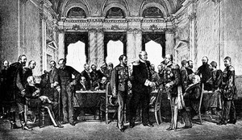<p class='defImage'>Le Congrès de Berlin selon le peintre von Werner</p> <p class='credits'>Britannica</p> <p class='texte'>En 1879, la Perse semble assaillie de toutes parts. À l\’Est et à l\’Ouest, elle est en conflit avec différents acteurs de l\’Orient. Elle compte sur son fidèle allié européen, la Russie, pour lui venir en aide. En effet, à l\’Est de la Caspienne, les Turcomans envahissent les possessions russes en Perse. Le mouvement est organisé par un influent chef tribal et un ancien Sous-Lieutenant de l\’armée du Caucase, qui aurait déserté pour aller se réfugier chez les Turcomans, Non seulement ils prennent des territoires, mais ils bloquent également la route entre la mer Caspienne et le fort de Tchat, occupé par les Russes. Un convoi de vivres se dirigeant vers le fort a d\’ailleurs dû rebrousser chemin. De plus, les bandes s\’adonnent aux raids et aux pillages, notamment dans la province du Khorassan. Selon Zinoviev, Conseiller d\’État russe en Perse, la Russie n\’a d’autre choix que d\’intervenir dans ce conflit. Il écrit en effet: « Ce n\’est qu\’à la suite de l\’occupation du pays qui s\’étend entre la Caspienne et la frontière du Khorassan que nous parviendrons d\’assurer la sérénité de nos établissements sur la côte orientale de cette mer. »<\br>Le plus important conflit se déroule cependant à l\’Ouest, alors que la frontière avec l\’Empire ottoman est, une fois de plus, sujet de controverse. On peut remonter à très loin l\’origine de ce conflit, mais dans le contexte de 1879, c\’est au Traité d\’Erzurum (1847) et à celui de Berlin (1878) qu\’il faut se référer. Le second Traité d\’Erzurum est établi par une commission composée de représentants ottomans, persans, britanniques et russes. Il y a deux principaux éléments dans ce traité. Le premier consiste à ce que le gouvernement de Perse abandonne ses revendications sur la ville et la province de Soulaïmani et qu\’il s\’engage à ne pas interférer avec les droits souverains du gouvernement ottoman sur ce territoire. Le deuxième stipule que le gouvernement ottoman reconnaît officiellement la souveraineté de la Perse sur la ville et le port de Muhammara, l\’île de Khirz, le mouillage et les terres de la rive orientale du Shatt Al-Arab, qui appartiennent à des tribus persanes. Après la signature du traité, alors qu\’on aurait pu croire que la situation était réglée, un conflit éclate entre la Perse et l\’Empire ottoman concernant la région de Qotūr, au nord-ouest de l\’Azerbaïdjan. En 1878, le Traité de Berlin règle le problème en ramenant les frontières à celles de 1847. Cependant, la Perse nie par la suite son accord à ce traité et le conflit éclate de nouveau.<\br>On apprend dans les dépêches de Zinoviev que les Ottomans sont en possession de la région de Qotūr et que la Perse souhaite la récupérer. Apparemment, les fonctionnaires ottomans « sous prétexte d\’encaissement d\’arrérages » maltraitent la population locale, qui désirerait être incorporée à la Perse le plus tôt possible. Le Shah compte d\’ailleurs sur l\’intervention de la Russie pour reprendre le district. Ce ne sera pas chose facile cependant: les Ottomans, malgré qu\’ils assurent leurs bonnes intentions, ne semblent pas pressés de céder le territoire. Zinoviev, en bon agent de renseignement, nous informe des deux côtés de la médaille dans cette situation. Lorsque le Vali de Van refuse de restituer le district à la Perse, l\’ambassadeur ottoman affirme qu\’il s\’agit simplement d\’une erreur due au retard de l\’arrivée des ordres de Constantinople. Le Commissaire persan chargé de prendre possession de Qotūr affirme quant à lui que les ordres sont bien arrivées et que le Vali de Van en a pris connaissance. Les Ottomans seraient donc mal intentionnés? Ils ne sont apparemment pas les seuls. En effet, il semble que le Premier ministre persan a entre les mains, depuis plusieurs semaines, un projet de convention sur l\’extradition mutuelle de ceux qui causent des troubles à Qotūr, afin de pouvoir restituer le territoire dans la paix. La Porte reproche donc aux Persans d\’avoir une attitude belliqueuse, alors qu\’eux ne veulent qu\’entretenir des relations cordiales. Dans le contexte du Grand Jeu, les puissances européennes, en l\’occurence la Grande-Bretagne et la Russie, gardent un oeil vigilant sur le déroulement de ce conflit. Auront-elles à intervenir encore une fois?</p> <p class='titreArchive'>«Dépêches du Conseiller d\'État Zinoviev» <span class='date'>1879</span> <span class='agent'>Zinoviev</span><p class='archive'>RGVIA. F. 446, op. 1, d. 43_1, l. 5-18</p> <p class='auteur'>Catherine Lampron</p><p class='ref'>MCLACHLAN, Keith. « Boundaries I. With the Ottoman Empire », <i>Encyclopaedia Iranica</i>, 11 mars 2013, http://www.iranicaonline.org/articles/boundaries-i.</p><p class='tag'> <em>Perse</em><em>Turcomans</em><em>Empire Ottoman</em><em>Frontières</em>");
    FrontierePerseOttoman.addTo(myMap)
    FrontierePerseOttoman.addTo(DiplomatieGroupe)

    var FGoldsmidLar = L.marker([40.4141, 49.8590], {title: 'La conférence sur les ressources militaires de la Perse de 1879', icon:Militaireicon, riseOnHover : true, riseOffset: 999});
    FGoldsmidLar.bindPopup("<p class='titre'>La conférence sur les ressources militaires de la Perse de 1879</p>  <p class='defImage'>Photo de sir Henry Rawlinson</p><p class='credits'>Wikicommons</p><p class='texte'>Le 19 avril 1789 monsieur Zenoviev envoyait une dépêche au chancelier de l\’Empire au sujet d\’une réunion s\’étant tenue au théâtre de la <i>Royal United Service Institution</i> à Londres, sous la présidence de Sir Henry Rawlinson<sup>1</sup>. Le sujet de la conférence était « Les ressources militaires de la Perse ». Le Major-Général, sir Frederic Goldsmid<sup>2,</sup> y avait été invité comme conférencier afin de donner son opinion sur le sujet. Dans sa dépêche, Zenoviev évoque l\’opinion de Goldsmid mais également de plusieurs britanniques au travers d\’un compte-rendu de la conférence qu\’il avait tiré du <i>Constantinople Messenger</i><sup>3</sup> :<br><br>« According to the official returns of the Minister of War, the Persian army was composed of 105,500 men, of whom 5000 formed the cavalry, irregular and regular. Of the total of those troops, however, on-third only was employed on active service, and the standing army on a peace footing was reckoned at only 30,000 men, leaving, if the statement be correct, a reserve of over 75,000 men, who would remain scattered about their villages and districts, and engaged in agricultural and other pursuits until required by the State.<br>Of the common sarbaz, or Persian infantry soldier, he had a very high opinion indeed; his qualities of marching and endurance being wonderful, and with good officers ang good training he may be made very efficient. If wanting in the discipline which was considered in the country as essential to the well-being of the service, the fault was that of his superiors, by whom he was ill commanded, ill taught, and often accursed with an evil example. The moral value of the soldier deteriorated as the social grade improved, but it was perhaps only with regard to his relations with his men that the commissioned officer was chiefly to be condemned. The cavalry were such as might be moulded without much effort into very serviceable soldiers, their exile and boldness in the saddle being, as in ancient days of Persia, most remarkable. […] The lecturer thought that the scanty and irregular pay had, as a necessary consequence, caused a laxity in the discipline and tone of the army, and mutiny was not uncommon in hard times when pay had been continuously withheld. It was treated with severity and usually the men were talked over, conciliation concession winning the day when an attempt at violent suppression would fail. […] Sir Frederic Goldsmid concluded by saying that in his opinion the country had with great military resources, and by painting out that Persia was an essential part of the geographical side of the Eastern Question and may form a most useful ally to England. »<br><br> Le point de vue de Goldsmid est clair dans cet extrait: la puissance militaire actuelle de la Perse n’est pas exploitée à son plein potentiel par cette dernière et seule la bonne guidance de l\’Angleterre pourrait exploiter ce dernier correctement et efficacement. Une opinion partagée par plusieurs puissances européennes de l\’époque. Même Rawlinson lorsqu\’il conclut la conférence exprime une opinion similaire à Goldsmid :<br><br>« Sir Henry Rawlinson, in concluding the proceeding, said that at one time he had possessed a considerable personal acquaintance with the subject as he had serviced for five years in various parts of Persia. The impression he had derived from his experience was that they were no people in the world who formed the raw material for military requirements better than the Persians. Their physique and their powers of endurance were admirable, and the absence of all intemperance and the general intelligence and personal character of the men was beyond all praise. But they had never either in former times or in the present day, been allowed a fair chance for they had always been subjected to the caprices of governors or officers, who merely looked to the filling of their own pockets and not the interests of the army. There might be a future for Persians in this respect, if the disposal of its military resources were entrusted to Europeans; and a very superior army far superior to anything Turkey might produce, would result.<br> [Rawlinson] had very truly said that Persia was a most important factor in the future of the last, for it was impossible that she could remain quiescent and uninfluenced by the change which may take place around her. If the military resources of Persia were placed at the disposal of a Power hostile to England, they would constitute a most formidable menace to British India; but if, on the other hand, Persia was united to England by cordial relation on both sides, and her army was improved, then Persia would become an impregnable barrier to an intending invader of India. He sincerely trusted that the period of suspicion and neglect of Persia would now be exchanged for an active interest, and he believed that a real, honest and cordial alliance with Persia would prove one under which we should march towards the goal of successful commerce, social improvement and advanced civilization. »<br><br>Au final, la dépêche de Zinoviev vient consolider le fait que la Perse est un aspect important pour les britannique dans la question de l\’Orient car elle fait effet de tampon entre les possessions britanniques des Indes et des ennemis potentiels comme la Turquie. Par contre, il est également évident que l’Angleterre considère que la Perse devrait être mise sous leur patronage, car elle semble incapable de gérer par elle-même ses ressources et sa puissance militaire. Une réaction typique de l\’esprit d\’Impérialisme qui domine l\’Europe à ce moment.<br><br><sup>1</sup>. Sir Rawlinson fut un soldat britannique, qui avait été envoyé en Iran en 1833 afin d’aider à réformer l’armée du Shah, mais également un orientaliste. Il fut célèbre pour son déchiffrement de l\’inscription cunéiforme trilingue du rocher de Behistun ce qui a permis de grandes avancés sur les connaissances des civilisations mésopotamiennes et de la Perse ancienne.<br><sup>2</sup> Goldsmid était alors, l’une des autorités de l’époque sur la question des Perses et du Moyen-Orient, il était reconnu pour son expérience sur le terrain (il avait été posté pendant 5 ans en Perse), mais également pour sa contribution au développement non seulement de l\’<a href= ‘http://www.iranicaonline.org/articles/indo-european-telegraph-company' target=’blank’>Indo-European Telegraph Company</a> mais également à la délimitation de la frontière entre l\’Iran et le Balouchistan en 1871 et entre l\’Iran et l’Afghanistan en 1872.<br><sup>3</sup> Journal anglophone publié à Constantinople par des sujets britanniques et qui fut en opération de 1856 à 1914.</p><p class='titreArchive'>« Dépêche de Zinoviev au chancelier de l’Empire » <span class='date'>avril 1879</span> <span class='agent'>Zinoviev de Bakou</span> <span class='archive'>RGVIA, F446, Delo 43_5, list 58-64</span/></p> <p class='auteur'>Marie-Soleil Larocque</p><p class='ref'> ÇAĞLAR, Burhan. « Brief History of an English-language Journal in the Ottoman Empire: The Levant Herald and Constantinople Messenger (1859-1878) ». Thesis, mars 2017, <a href= ‘https://tspace.library.utoronto.ca/handle/1807/76645' target=’_blank’>https://tspace.library.utoronto.ca/handle/1807/76645</a></p><p class='ref'> NIKIPROWETZKY, Valentin. « RAWLINSON sir HENRY CRESWICKE (1810-1895) », Encyclopædia Universalis,s.d., <a href= ‘http://www.universalis-edu.com/encyclopedie/rawlinson-sir-henry-creswicke/'target=’_blank’>http://www.universalis-edu.com/encyclopedie/rawlinson-sir-henry-creswicke/</a></p><p class='ref'> PETER JOHN BROBST. « Sir Frederic Goldsmid and the Containment of Persia, 1863-73 ». Taylor & Francis, Ltd., vol. 33, n° 2, avril 1997, p. pp.197-215. </p> <p class='ref'> « Sir Henry Creswicke Rawlinson : British orientalist ». Encyclopedia Britannica, s.d., <a href= ‘https://www.britannica.com/biography/Henry-Creswicke-Rawlinson'target=’_blank>https://www.britannica.com/biography/Henry-Creswicke-Rawlinson/</a></p><p class='ref'> « Sir Frederick John Goldsmid : British military officer ». Encyclopedia Britannica. s.d.,<a href= ‘https://www.britannica.com/biography/Frederick-John-Goldsmid'target=’_blank’>https://www.britannica.com/biography/Frederick-John-Goldsmidn/</a></p> <p class='tag'> <em>Perse</em>");
    FGoldsmidLar.addTo(myMap)
    FGoldsmidLar.addTo(militaireGroupe)

    var MervPic = L.marker([37.6573, 62.1897], {title: 'Étau anglais et pression géopolitique', icon:geopolicon, riseOnHover : true, riseOffset: 999});
    MervPic.bindPopup("<p class='titre'>Étau anglais et pression géopolitique</p>  <p class='defImage'>Photographie du ministre Mirza Hossein Sepahsalar</p> <p class='credits'>Wikicommons</p><p class='texte'>Le delo 43 contient un nombre important de listes provenant de deux auteurs : Domantovich et Zinoviev. En somme, le Delo43, partie 8 discute principalement des projets anglais dans la région après les attaques qu\’ils eux sur Hérat. Plusieurs entretiens sur le sujet de cette dernière ville sont décrits et concernent la participation de l\’armée anglaise. Plusieurs mentions sont faites de Nassereddin Shah, souverain de perse durant la deuxième moitié du 19e siècle. Aussi, Mirza Hossein Sepahsalar, premier ministre perse est aussi fortement mentionné dans les listes du delo 43. Les deux hommes en question signalent des désirs de modifier des bataillons dans le but de contrecarrer les plans anglais, qui d\’ailleurs sont très sérieusement suivis par leur présence marquée près du Khorassan.</br>Aussi, une attention particulière est portée sur la ville de Merv qui semble être au centre de quelques plans concernant une attaque et une occupation par la couronne britannique. Elle représente aussi un gain significatif pour la Perse, ce qui la motive à se tourner vers Merv. Pour se protéger de quelconque éventualité, les Turcomans semblent décider de réaffirmer leur souveraineté sur la ville. Les pourparlers entre les Turcomans et la Perse semblent aussi être tendus sur cette question. Cependant, Nassireddin Schah est certain que les habitants de Merv le considéreront tôt ou tard comme leur souverain légitime.</br> L\’expansion et la protection des territoires par les Anglais pourraient aussi bénéficier du progrès concernant les chemins de fers. Plus précisément, c\’est l\’Afghanistan qui est visé dans cette joute géopolitique de la période du Grand Jeu entre les trois nations rivales. M. Ronald Thomson questionne mainte fois le Shah sur l\’établissement d\’un chemin de fer pouvant relier les Indes, mais qui passerait sur le territoire persan. Bien entendu, Nassireddin restera très vague sur sa réponse, car elle aurait de très importantes répercussions politiques. Cependant, son ministre, Mirza Sepahsalar assurera qu’\il n’\y aura aucune réponse tant que les enjeux de Hérat ne seront réglés, ne sachant que trop bien que le chemin de fer britannique consolidera sa domination en Afghanistan et sur les pays voisins.</p> <p class='titreArchive'>«Lettres de l’envoyé Zinoviev sous le service deDomantovich » <span class='date'>1879-1880</span> <span class='agent'>Zinoviev</span> <span class='archive'>TsGIA. F. 446, op. 1, delo 43, section 8</span/></p> <p class='auteur'>David Picard</p><p class='ref'> Jean CALMARD, « KHORĀSĀN ou KHURĀSĀN ou KHORASSAN », <i> Encyclopædia Universalis<i> ,en ligne.</p><p class='tag'> <em>Perse</em>");
    //MervPic.addTo(myMap)
    MervPic.addTo(geopolitiqueGroupe)

    var DengeelTepeRou = L.marker([38.2000, 57.7000], {title: 'Dengeel Tepe', icon:Technoicon, riseOnHover : true, riseOffset: 999});
    DengeelTepeRou.bindPopup("<p class='titre'>Attaque de la forteresse Tekke de Dengeel Tepe</p> 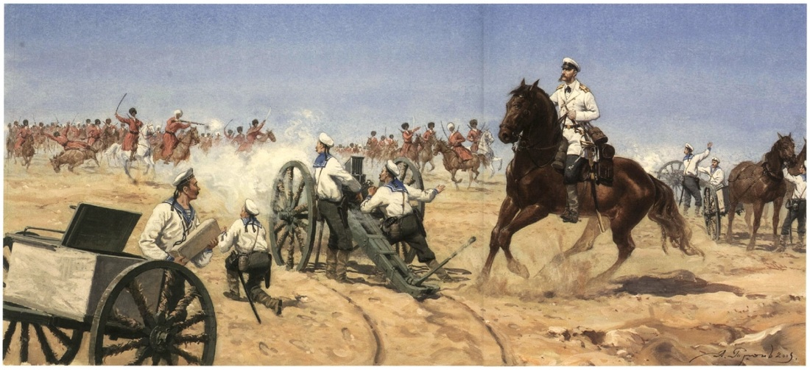 <p class='defimage'><a href='https://browse.startpage.com/do/show_picture.pl?l=english&rais=1&oiu=http%3A%2F%2Fwww.cliomuse.com%2Fuploads%2F9%2F2%2F4%2F6%2F9246605%2F653371_orig.jpg&sp=f11704e19cb32196845a7be205feae1d&t=nite' target='_blank'>Battle of Geok-Tepe</a></p><p class='credits'>Inconnu</p> <p class='texte'>Premier rapport (août 1879): Zinoviev indique que le Sipehsalar-Azam (commandant en chef), Mizra Houssein Khan est très heureux de travail du Lt-Col Domantovitch, mandaté pour entraîner les troupes perses.  Zinoviev souligne les obstacles notés par Domantovitch, d’abord quant à la diversité des cavaliers, qui ne proviennent pas des populations qui fournissent la cavalerie irrégulière et aussi quant à  la capacité de la Perse à payer son armée.<br>Deuxième rapport (25 septembre 1879): Zinoviev élabore sur la position de l’ambassadeur de Téhéran à Londres, Mizra Malkum Khan.  Celui-ci a entamé des négociations avec le gouvernement de Londres au sujet du Khorassan.   Il en découle que Malkum Khan n’est pas très populaire à Téhéran.  L’ambassadeur est un moderniste, progressiste, critique du régime, qui publie une revue Qanun, dans laquelle il expose ses idées<sup>1</sup>.<br>Troisième partie (octobre 1879): Cette dépêche concerne la perte de 50,000 chameaux que les Anglais auraient perdu lors de la dernière expédition afghane (deuxième guerre anglo-afghane, 1878-1880).  Le gouvernement de Téhéran se serait vu incapable de ne pas autoriser l’achat de bêtes par les Anglais et a autorisé l’exportation de 1200 mulets.<br>Quatrième partie (octobre 1879): Cette dépêche fait état de la défaite des Russes contre les Akhal Tekkes.  Les russes ont attaqué, en septembre 1879, la forteresse Dengeel Tepe, en Asie centrale.  La nouvelle n’avait pas encore atteint la Russie parce que les télégrammes à destination de la presse avaient été retenus.  Cependant, le correspondant du Daily News de Londres faisait parvenir ses télégrammes à sa femme de sorte qu’il a publié sa version de l’expédition avant les autres même s'il n'a pas, comme les correspondants russes, accompagné l'expédition<sup>2</sup>.  Le général Lomankin, tenu pour responsable de l'échec, a fait parvenir, par télégramme, sa version officielle.  Celle-ci fait état des pertes importantes pour les Tekkes, en grande partie parce que les Russes se sont acharnés à bombarder la forteresse où on trouvait au moins 15,000 personnes, incluant des femmes et de enfants.  Il est vrai que l’expédition aurait dû, selon toute logique, être un succès mais l’incompétence des chefs, dont le général Lomankin mais aussi d’autres hommes de rang équivalent, est parvenue à transformer tous les avantages des Russes ce qui a permis aux Tekkes de les repousser.  Selon les compte-rendus parus dans la presse russe, après coup, les Tekkes auraient à plusieurs reprises tenté de se négocier, voire de se rendre, mais les généraux n’ont pas considéré cette option.  Après l’échec de l’assaut sur la forteresse, les Russes, ayant souffert de nombreuses pertes (près de 200 morts et encore plus de blessés), sont repartis<sup>3</sup>.  Zinoviev rapporte les informations reçues quant au regroupement des Tekkes suite à cette opération.  Le Sipehsalar-Azam entrevoit qu’une disette pourrait survenir à Akhal à cause de la perte d’approvisionnements.  Cependant, les mouvements des Turcomans font craindre pour la sécurité de la ligne télégraphique, sujet sur lequel le Shah a promis de prendre des mesures.<br><br>1. Bashir, H.  « Qanun and the Modernisation of Political thought in Iran », <i>Global Media Journal</i>, 2009, Vol. 8(14).  En ligne: <a href='http://www.globalmediajournal.com/open-access/qanun-and-the-modernisation-of-political-thought-in-iran.pdf' target='_blank'>http://www.globalmediajournal.com/open-access/qanun-and-the-modernisation-of-political-thought-in-iran.pdf</a> <br>2. Marvin, C. <a href='http://www.globalmediajournal.com/open-access/qanun-and-the-modernisation-of-political-thought-in-iran.pdf' target='_blank'><i>The eye-witnesses’ account of the disastrous russian campaign against the Akhal Tekke Turcomans</i></a>, London, W.H. Allen and Co., 1880, pp. 301-302.<br>3. <i>id.</i>, pp. 266-268.</p> <p class='titreArchive'>Rapports du Colonel Domantovich, posté en Perse comme instructeur de la cavalerie persane, au Ministère des Affaires militaires sur l’organisation de l’armée persane; rapports par l’envoi russe à Téhéran, Zinoviev, sur le service/travail de Domantovich au sein de l’Armée persane et sur les relations Turquie-Perse.<span class='date'>1879</span> <span class='agent'>Zinoviev</span> <span class='archive'>RGVIA F446 Opis 1 delo 43-7; 1ère moitié</span/></p> <p class='auteur'>Camille Routhier</p><em> Zinoviev, Domantovitch, 1879, Geok-Tepe, Malkum Khan</em> ");
    //DengeelTepeRou.addTo(myMap)
    DengeelTepeRou.addTo(technologieGroupe)

    var Mythe = L.marker([35.715298, 51.404343], {title: 'Mythe de la Perse', icon:Cultureicon, riseOnHover : true, riseOffset: 999});
    Mythe.bindPopup("<p class='titre'>le Mythe de la Perse</p><p class='texte'>Dès les premières heures du XIXème siècle, les puissances impériales européennes tournent leurs regards vers l\’Asie. L\’entropie politique de l\’Empire Ottoman et l\’instabilité de la Chine ouvrent les portes de la région aux appétits coloniaux. La Grande Bretagne possède déjà l\’essentiel des Indes alors que la Russie s\’étend progressivement en Asie Centrale. Les deux empires se livrent ainsi à une féroce compétition pour le contrôle de ces nouvelles terres et entres eux se trouvent des puissances régionales comme l\’Empire Ottoman ou la Perse. L\’Europe désire incessamment les trésors du légendaire orient et ainsi la pensée coloniale emprunte au Moyen-Âge le mythe oriental. L\’Iran est transformée dans les esprits occidentaux pour laisser place aux antiques empires des Achéménides ou des Assyriens, certains rapports en viennent à étendre la portée de la nation jusqu\’au bassin mésopotamien ou aux villes de Samarkand au Nord ou Mossoul à l\’Ouest. Malgré les efforts de modernisation que connaissent la région, la diplomatie de l\’Europe semble perpétuellement décernée en Iran, les vestiges de la Perse ou de l\’Assyrie et l\’étymologie coloniale en est invariablement marquée par les récits de l\’antiquité. C\’est sans doute l\’intérêt territorial des empires qui mène à repenser l\’optique de la région d\’une manière qui la réduit aux vestiges archaïques de son passé.</p> <p class='archive'>TsGIA. F. 446, op. 1, d. 167, l. 1-3</p> <p class='auteur'>Charles-Étienne Belleau</p> ");
    //Mythe.addTo(myMap)
    Mythe.addTo(cultureGroupe)

    var Esterabad = L.marker([36.85537, 54.23139], {title: 'Esterabad', icon:Topoicon, riseOnHover : true, riseOffset: 999});
    Esterabad.bindPopup("<p class='titre'>Esterabad et la baie d\'Astrabad</p>  <p class='texte'>Dans le document <i>Notes sur la Perse</i>, l\’auteur a inscrit une série d\’observations portant sur diverses villes du Moyen-Orient. De la Syrie à l\’Afghanistan, l\’agent français identifie les villes, les capitales, les forteresses, les forces armées ainsi que la région dans laquelle se trouve ledit lieu. L\’agent, en identifiant les forteresses (Hatachi, Kier, Eskiligé) et le volume des garnisons (Caba Hitant), permet aux généraux d\’identifier les lieux de résistance et la capacité d\’un État à faire la guerre. De plus, dans un second ordre d\’idée, les informations transmises par l\’officier de renseignement permettent de planifier à la fois les déplacements et la capacité de ravitaillement en territoire étranger puisqu\'il identifie la distance entre certaines villes ainsi que l\’emplacement des détroits, des canaux et des montagnes. Croisées avec les cartes produites par des géographes comme P. Lapie ou J. Andriveau-Goujon, ces données permettent aux dirigeants militaires français d\’anticiper voire de visualiser le terrain sans y mettre les pieds.</p> <p class='texte'>Outre les capitales (Hérat, Téhéran, Bagdad) et les repères frontaliers (villes sur l\’Euphrate, villes frontières de la Khorassan), l\’auteur identifie les ports et les villes commerciales. Par exemple, l\’agent identifie la ville d\’Esterabad, cette dernière qui est réputée pour être l\’une des plus belles villes de Perse ou, reprenant les propos de Jacques Peuchet, une ville « riche et fort peuplée ». La ville portuaire représente donc un intérêt stratégique pour une armée. Cependant, la richesse et la beauté architecturale de la ville ne sont pas les principales raisons derrières cet intérêt. Tout d\'abord, puisqu\’elle se situe sur le bord de la mer Capsienne, elle permet d\'entretenir des communications avec toutes les villes limitrophes à cette étendue d\’eau. Deuxièmement, puisqu\'elle est à proximité du golfe d\’Astrabad (adjacent à la ville d\'Esterabad), le contrôle de la ville garanti un endroit où stationner une flotte de « petits bâtiments » qui transporteraient des troupes d\’un port comme Astrakhan en Russie jusqu\’à celui d\’Esterabad en Perse. Enfin, puisque quatre caravansérails sont présents dans la ville perse, le contrôle d\'Esterabad assure un accès au commerce caravanier de la région du Mazerdenan et, par conséquent, aux ressources nécessaires pour nourrir les troupes.</p> <p class='archive'>RGVIA. F446, opis 1, delo 166, list 1-7</p> <p class='auteur'>David Bouchard</p> ");
    //Esterabad.addTo(myMap)
    Esterabad.addTo(topographieGroupe)

    var Ardebel = L.marker([38.418, 48.105], {title: 'Ardebel', icon:Topoicon, riseOnHover : true, riseOffset: 999});
    Ardebel.bindPopup("<p class='titre'>Du Caire à Ardebel</p>  <p class='credits'>Wikicommons</p><p class='texte'>La France du XVIIIe siècle est plongée dans la fascination de l\’exotisme et des secrets de l\’Orient grâce aux auteurs des Lumières tels que Voltaire ou Montesquieu qui promues cette culture dans leurs récits. Pourtant, on observe vers la fin du siècle des Lumières que l\’exotisme est mis de côté par certains pour laisser place à la science. En effet, on relève des documents écrits à la main qui se caractérisent par la description de routes de types topographiques et géographiques. On observe par exemple qu'entre le 8 mars 1780 et le 21 septembre 1782 ce serait tenu un voyage pour relever des informations sur une route qui part du Caire, en passant par Ispahan, Ardebel, pour finir à Gombru. Le document qui semble être une transcription de la part des Français, paraît être fortement tiré du livre de Pietro della Valle de 1684 <i>Les fameux voyages de Pietro della Valle.</i> Certes, le trajet révèle une très grande ressemblance. De plus, l\’auteur de cet itinéraire reste inconnu, ce qui appuie l\’idée que ce document n'est pas authentique. Cependant, la première partie du voyage se déroule au départ du Caire, vers Ispahan, pour remonter vers Ardebel proche de la mer Caspienne. Cette destination se trouve entre la Russie et l\’océan Indien, mais aussi proche des Indes, ce qui lui donne une certaine importance géographique puisque le territoire et convoité autant par la Russie, que par la Grande-Bretagne et la France. Ainsi, la Perse occupe une position avantageuse en cas de prise de territoire. On l'observe notamment avec la question de l'Orient qui apparait au courant du XVIIIe siècle. Cette route représente différents territoires, tels que le désert en Arabie, des montagnes, des plaines... Les descriptions et les observations décrites par l\’auteur relèvent de ce type de topographie, mais aussi des types d\’agglomérations qui caractérisent la route. Il mentionne des villes, des bourgs, des bourgades, des petites villes, des villages... Il décrit aussi parfois la présence de bétail, ce qui peut être une information importante en cas de déplacement militaire pour donner de l'information sur les endroits où il y aurait de la nourriture à disposition. Ainsi, il est possible d'en déduire que l'on recherche des informations sur différents territoires pour prévoir un futur passage sur ces routes en cas d\’invasions ou de missions militaires, sinon seulement pour avoir des informations si ces territoires tombent entre les mains d\’ennemis. Autrement, on remarque que le retour entre Ardebel et Ispahan ne passe pas par la même route, ce qui suscite l\’idée que plusieurs routes soient possibles pour optimiser les ressources ou encore une autre route en cas de passage bloqué. Cette route débute par l\’Égypte ottomane (alliée de la France à l'époque), vers Ardebel en direction de la Russie, ce qui suppose que les routes vers ce territoire sont convoitées pour possiblement envahir ou explorer le territoire. L\’auteur mentionne qu\’Ardebel est entourée de montagnes et de plaines, ce qui inclus que géographiquement, la ville est proche de la mer, mais qu\’elle n\’y a pas accès facilement, donc l\’idée de transport maritime au départ de cette ville reste compliquée. </p> <p class='archive'>RGVIA, f. 446, op. 1, d. 183</p> <p class='auteur'>Victoria Candat</p> ");
    //Ardebel.addTo(myMap)
    Ardebel.addTo(topographieGroupe)

    var GombruCan = L.marker([27.1793, 57], {title: 'Gombru', icon:Topoicon, riseOnHover : true, riseOffset: 999});
    GombruCan.bindPopup("<p class='titre'>Du Caire à Gombru</p>  <p class='texte'>La deuxième route envisagée dans ce voyage de 1780-1782, est celle au départ du Caire, en passant par Ispahan, pour finir vers Gombru au bord du détroit d\’Ormuz. Il est important de souligner que cette route ne se fait pas directement au départ du Caire puisque la route décrite passe d\’abord par Ardebel. Elle repasse ensuite par Ispahan, pour descendre à Gombru. Alors le passage par Ispahan en redescendant laisse supposer que la route pourrait partir directement de l\’Égypte. En outre, cette fois-ci, la route prend la direction des Indes, ce qui marque une fois de plus l\’engouement de la France par rapport à ce territoire d\’Orient perdu quelque temps auparavant face aux Britanniques. Le désir de reconquérir est bien présent et s'observera davantage avec Napoléon au XIXe siècle. Le trajet proposé dans le document révèle un possible passage par voie maritime puisque le voyage se termine dans le détroit qui se situe entre le golfe Persique et la mer d\’Arabie. Nouvellement, la description du territoire parcourue reste de type topographique (montagnes, ruisseaux, rivières, plaines...) et géographique. Les agglomérations (bourg, bourgade, ville, village...) ont encore une place importante au sein de la description de l'auteur. Parfois, on retrouve la description de muraille et de châteaux en hauteurs qui représentent des éléments défensifs. Ces éléments permettent de mieux analyser d\’où il est possible d\’attaquer en cas de guerre. On retrouve également la mention d\’hôtellerie, ce qui démontre que sur la route on retrouve des logements pour les voyageurs et les militaires si une quelconque mission est entreprise. Ainsi, il est possible de conclure que ce voyage eut lieu pour des fins de renseignements. Que ce soit vers la Russie ou encore vers les Indes, toutes les informations sont importantes pour envisager une mission quelconque. Ce voyage permet également de déterminer la différence de culture entre la France et l\’Asie centrale qui ne constitue pas non plus le même type de géographie, de climat et de topographie. Reste à savoir si ce voyage est authentique ou si le document ne représente qu'une transcription.</p> <p class='archive'>RGVIA, f. 446, op. 1, d. 183</p> <p class='auteur'>Victoria Candat</p>");
    //GombruCan.addTo(myMap)
    GombruCan.addTo(topographieGroupe)

    var Tavernier = L.marker([36.5846, 36.1756], {title: 'Tavernier', icon:Ethnoicon, riseOnHover : true, riseOffset: 999});
    Tavernier.bindPopup("<p class='titre'>Jean-Baptiste Tavernier :</br> Une source littéraire pour le renseigement militaire</p>  <p class='texte'>Jean-Baptiste Tavernier, fils d\’un graveur et géographe protestant, se rendra en Orient vers 1630 et accomplira en tout six voyages en Orient sur environ quarante ans. Ces voyages lui permettent de rencontrer d\’importants personnages et d\’acquérir de précieuses pierres, dont le commerce deviendra sa profession<sup>1</sup>. Tavernier consigne au cours de ses voyages de nombreuses observations, qu’il publie dans quelques recueils, notamment <i>Les six voyages de Jean-Baptiste Tavernier, écuyer baron d\'Aubonne, en Turquie, en Perse, et aux Indes, pendant l\'espace de quarante ans et par toutes les routes que l\'on peut tenir : accompagnés d\'observations particulières sur la qualité, la religion, le gouvernement, les coutumes et le commerce de chaque pays, avec les figures, le poids et la valeur des monnaies qui y ont cours</i>, qui paraît en 1676<sup>2</sup>. Bien que principalement composé d’anecdotes personnelles, cet ouvrage extensif contient nombre de détails concernant les villes, des repères géographiques comme les cours d\’eau ou les montagnes, de même sur que la qualité des routes, des hébergements, des sources d\’eau potable et de la nourriture. Il inclut également des informations sur les attraits locaux et les us et coutumes locales, allant parfois même jusqu\’à discuter de marchandage et de droits de douane<sup>3</sup>. Plusieurs fois réédité, cet ouvrage sera populaire et participe à l\'engouement pour la Perse qui se développe en Europe au cours du XVIII<sup>e</sup> siècle. <br/><br/> Dans la foulée de la rivalité entre les puissances européennes, la France a elle aussi un intérêt grandissant pour l\’Orient, notamment pour les Indes britanniques, dont les ressources donnent un grand avantage à leur rivale. Les missions de Jaubert en 1805-1806 et de Gardane en 1807, ont pour but de colliger des informations sur l\’Orient et de signer un droit de passage pour les troupes françaises en Perse advenant une campagne indienne<sup>4</sup>. Ces missions verront le déploiement de plusieurs agents de terrain et la consignation de nombreuses informations sur la Perse. Cependant, il semble qu\’aux observations de première main s\’ajoutent des informations de seconde main dans les renseignements français. En effet, le carnet <u>Route d\’Alexandrette à Ispahan</u> contient des informations tirées des six voyages de Tavernier, parfois même des passages recopiés à la lettre. Ce manuscrit des archives militaires russes (F-446, op. 1, de. 306) proviendrait vraisemblablement des documents saisit lors de la débandade de la Grande armée après la défaite de 1812, lesquels contenaient de nombreuses informations sur l\’Orient, et pourrait être un exercice préparatoire au travail de terrain<sup>5</sup>.</p> <p class='archive'>RGVIA, F. 446, opis 1, delo 306.</p> <p class='auteur'><b>Henri Dion</b></p> <p class='texte'> Références : </br> <sup>1</sup> George A. Rothrock, « Jean-Baptiste Tavernier, Merchant Extraordinary », <i>History Today; London</i>, 1 novembre 1967, p. 743‑744. </br> <sup>2</sup> « Les six voyages de Jean-Baptiste Tavernier », <i>Bibliothèque Numérique Mondiale</i>, 28 juillet 2017, consulté le 13 janvier 2020, [https://www.wdl.org/fr/item/17788/]. </br> <sup>3</sup> <i>Jean-Baptiste Tavernier, Les six voyages de Jean-Baptiste Tavernier : Ecuyer, Baron d\’Aubonne, en Turquie, en Perse, et aux Indes, pendant l\’espace de quarante ans et par toutes les routes que l\’on peut tenir : accompagnés d\’observations particulières sur la qualité, la religion, le gouvernement, les coutumes et le commerce de chaque pays, avec les figures, le poids et la valeur des monnaies qui y ont cours</i>, vol. 1, Paris, Pierre Ribou, 1713, Nouvelle édition 1712, 604 p., consulté le 14 janvier 2020, [http://archive.org/details/lessixvoyagesde00tavegoog]; Yasmine Atlas, « Une frontière qualifiante : Représentation du passage en Perse chez quelques voyageurs français », <i>Dix-septieme siecle</i>, n° 1, mars 2018, p. 49‑52. </br> <sup>4</sup> David Vinson, « « Napoléon en Perse » : genèse, perspectives culturelles et littéraires de la mission Gardane (1807-1809) », <i>Revue d\’histoire litteraire de la France</i>, n° 4, 2009, p. 873‑876 ; Jean Calmard, « Fath \‘Ali Shâh (1759/60-1834) », <i>Encyclopaedia Universalis</i>, s.d., consulté le 14 janvier 2020, [http://www.universalis-edu.com/encyclopedie/fath-ali-shah/]. </br> <sup>5</sup> Tristan Landry, <i>Monde Contemporain</i>, Université de Sherbrooke, s.d., chap. 2, p. 4‑12. </br></br> Image d'introduction : </br>Jean-Baptiste Tavernier (1605-1689), « Carte des Voyages de Monsieur Tavernier En Europe, en Turquie, en Perse » (document cartographique), Gallica, 1675, consulté le 13 janvier 2020, [https://gallica.bnf.fr/ark:/12148/btv1b8493355g].");
    Tavernier.addTo(myMap)
    Tavernier.addTo(ethnoGroup)

    var Derbent = L.marker([42.0724, 48.2803], {title: 'Derbent', icon:Ethnoicon, riseOnHover : true, riseOffset: 999});
    Derbent.bindPopup("<p class='titre'>La France et l\'invasion des Indes</p> 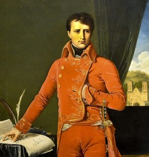 <p class='texte'>En France, même avant l\'arrivée de Napoléon au pouvoir, on formule l\'idée de prendre possession des Indes, alors joyaux des colonies britanniques, en passant par l\'Égypte, puis par la Perse. Les Français sont fascinés par l\'Orient et ses richesses. D\'ailleurs, l\'orientalisme, c\'est-à-dire l\'ensemble des connaissances concernant les différentes facettes de l\'Orient, notamment sa langue, ses moeurs, ses sciences et son histoire. Selon ce courant, les origines de l\'Occident se trouvent en Orient, le premier s\'appropriant donc l\'histoire et la culture du second. C\'est une façon pour les Occidentaux, aux dix-huitième et dix-neuvième siècles de démontrer leur supériorité sur leurs voisins de l\'Est. Napoléon Bonaparte est lui-même très influencé par l\'orientalisme. Alors que Napoléon tente d\'abord de faire de son expédition vers l\'Inde un projet conjoint avec la Russie, les deux empires semblent plutôt y aller de plans séparés; les Français et les Russes n\'étant pas en bons termes à l\'époque, ils sont loin d\'être prêts à s\'allier sur le plan militaire. L\'empereur français mettra d\'ailleurs en place un plan d\'invasion de la Russie qui, semble-t-il n\'était qu\'une étape vers l\'Inde. La Perse et la France signent l\'accord de Finkenstein dont une des clauses autorise les troupes françaises à passer par le territoire perse afin d\'atteindre l\'Inde. On tente donc d\'élaborer un plan d\'invasion, en commençant par recueillir des renseignements qui pourraient être utiles aux troupes. Les éléments concernant la topographie, les routes mais également les ressources alimentaires, sont parmi ceux qui retiennent l\'attention des agents sur le terrain. On établit notamment de possibles itinéraires qu\'il serait possible d\'emprunter afin de se rendre à destination. Les routes sont-elles difficiles? Retrouve-t-on des ressources utiles dans les villages et les villes croisées? Y a-t-il des fortifications ou d\'autres constructions militaires dont les troupes pourraient se servir? Avant même de lancer les soldats sur le terrain, une longue préparation logistique doit être faite à partir des renseignements colligés par les agents ou à partir d\'ouvrages théoriques. Il est crucial d\'établir plusieurs scénarios, de connaître le terrain en profondeur et d\'être préparé à toutes éventualités.</p> <p class='archive'>Bezotosnyi, V.M. <i>Napoleonovskie plany: proekt zavoevanija Indii Napoleona Bonaparta.</i>Moscou: Russkie vitjazi, 2017.</p> <p class='archive'>Vinson, David. «L'orient rêvé et l'orient réel au dix-neuvième siècle», <i>Revue d\'Histoire Littéraire de la France</i>, no. 1, vol. 104, 2017, p. 71-91.</p> <p class='auteur'>Catherine Lampron</p> ");
    Derbent.addTo(myMap)
    Derbent.addTo(ethnoGroup)

    var Gomron = L.marker([27.17934, 56.27814], {title: 'Gomron', icon:Topoicon, riseOnHover : true, riseOffset: 999});
    Gomron.bindPopup("<p class='titre'>La collecte d\'information stratégique</p>  <p class='texte'>Un des itinéraires étudiés afin d\'acheminer les troupes françaises à travers la Perse est entre Derbent et Gomron, ou Bender-Abassi. Tout au long de la route, l\'auteur nous informe des différents villages rencontrés, de la durée du trajet entre chacun d\'eux et des éléments pertinents les concernant. Il semble que les informations présentées dans le document soient tirées d\'un ouvrage intitulé <i>Les voyages de Jean Struys, en Moscovie, en Tartarie, en Perse, aux Indes</i>. En effet, en comparant les deux documents, on constate rapidement que les éléments présents dans l\'itinéraire sont les mêmes que ceux dont Jan Janszoon Struys fait état. Cependant, le deuxième nous apporte plus de détails sur l\'importance des deux villes principales du trajet. On y apprend que Derbent est le seul point d\'entrée en Perse par la Mer Caspienne, car les côtes autour sont bordées de montagnes inaccessibles. Gomron est quant à elle construite entre deux forteresses, l\'une à l\'est et l\'autre à l\'ouest. De plus, c\'est à son port que les navires des Indes livrent les marchandises destinées à la Perse, à la Turquie et à une partie de l\'Europe. D\'ailleurs, Français, Anglais et Hollandais y ont des comptoirs. Ce trajet témoigne bien de l\'importance de la cueillette d\'information comme étape de la préparation militaire. En effet, le paysage présenté est rude et difficile. On y croise de hautes montagnes, qui pourraient servir de protection naturelle aux militaires, mais qui sont suivies de plaines stériles. Cela rend donc l\'entretien des troupes plutôt ardu. Les soldats, si loin de chez eux, ne peuvent compter sur le ravitaillement de la mère patrie; ils doivent se nourrir grâce aux ressources trouvées sur place. Les lieux décrits sur le trajet ne semblent pas propices à fournir la nourriture nécessaire pour alimenter toute une armée. De plus, l\'auteur ne fait aucune mention d\'infrastructures militaires, comme des forts ou des canons, qui pourraient être utiles, à l\'exception des fortifications de la ville de Gomron. Ainsi, les risques de pertes humaines dans l\'éventualité où l\'armée française suivrait cet itinéraire sont plutôt élevés, tout comme ceux de l\'échec du projet d\'invasion de l\'Inde. Cependant, Gomron reste une ville plutôt intéressante d\'un point de vue stratégique puisqu\'elle est fortifiée et située sur le détroit d\'Ormuz. La prise de possession de cette ville portuaire pourrait permettre aux Français de contrôler le commerce dans le détroit, et donc de s'enrichir. De plus, le port est une infrastructure d\'une haute importance dans le cadre d\'une guerre, puisqu\'il permet d\'acheminer plus facilement les hommes et le matériel. La position géographique de la ville et ses constructions la rendent donc avantageuse d\'un point de vue militaire. </p> <p class='archive'>RGVIA. F. 446, opis\' 1, delo 182.</p> <p class='archive'>Struys, Jan Janszoon. <i>Les voyages de Jean Struys, en Moscovie, en Tartarie, en Perse, aux Indes et en plusieurs autres pays étrangers</i>, Amsterdam: Chés la Veuve de Jacob van Meurs. 1681. 369 p.</p> <p class='auteur'>Catherine Lampron</p> ");
    //Gomron.addTo(myMap)
    Gomron.addTo(topographieGroupe)

    var Tehran = L.marker([35.7140, 51.3848], {title: 'Tehran', icon:Ethnoicon, riseOnHover : true, riseOffset: 999});
    Tehran.bindPopup("<p class='titre'>« Tribus » militaires de la Perse</p>  <p class='texte'>Au moment où la source est rédigée, c\’est-à-dire en 1809, le Chah Fath-Ali règne sur le grand territoire qu\’est la Perse. Des agents de renseignements français sont alors disséminés à la grandeur du pays dans ce qu\’on appelle la mission Gardane, mission organisée par Napoléon et qui reflète ses ambitions en Orient.Cette dernière se déploie de 1807 à 1809. Par conséquent, la source à laquelle nous avons affaire, intitulée <i>Tableau de la Perse actuelle</i>, est produite à la toute fin de cette mission. On peut penser que cette source fait partie du RGVIA (archives militaro-scientifiques russes) puisqu\’elle aurait été récupérée lors de la débandade des troupes de Napoléon lors de la campagne de Russie. L\’auteur est inconnu et aucune signature qui aurait pu donner un indice sur son identité n\’est présente sur le document. Néanmoins, on sait qu\’il est Français et le mandat qui lui a été attribué est clair. Dans son rapport, il brosse un portrait des différents groupes ethno-linguistiques peuplant la Perse. Cette Perse dont on parle ici regroupe certaines sections des pays actuels de l\’Azerbaïdjan, de l\’Arménie, de l\’Irak, du Turkménistan, de l\’Afghanistan, mais surtout de l\’Iran. L\’auteur établit d\’ailleurs des repères géographiques en divisant le nord, le sud, l\’est, l\’ouest et le centre du territoire. Il procède ensuite à identifier les populations, ou « tribus » habitant les différentes zones. La dimension linguistique semble être la plus déterminante aux yeux de l\’auteur, puisqu\’il effectue une première division des populations selon leur langue d\’appartenance. On se retrouve donc en présence de quatre grands groupes : les <i><b>Turkkes</i></b>, les <i><b>Kurdes</i></b>, les <i><b>Arabes</i></b> et les <i><b>Loures</i></b>. Le premier groupe, celui des Turkkes, est considéré comme le plus nombreux, mais également comme le plus « brave » (list 3). Parmi celui-ci, l\’auteur dénombre pas moins de 41 sous-groupes, qui se subdivisent eux-mêmes parfois en plus petits groupes. Les <i>Efchars</i> représentent la population la plus substantielle du groupe ethno-linguistique des <i>Turkkes</i>, avec un total d\’environ 88 000 individus. Il faut également noter que les « tribus » répertoriées par l\’auteur sont dites « militaires », et pas nécessairement « culturelles » (list 3). Au-delà de la langue, leur classification semble avoir été effectuée sur des bases ethno-historiques et sur le territoire qu\’elles habitent, quoique plusieurs se côtoient. En opposition aux 41 sous-groupes <i>turkkes</i>, seulement neuf sont répertoriés dans le cas des <i>Kurdes</i>, huit chez les <i>Arabes</i> et six chez les <i>Loures</i>. L\’auteur semble avoir un semblant de préjugé contre le peuple arabe, qui a perdu sa langue d\’origine au profit d\’un persan « peu relevé » et qui « vivent encore en partie dans des tentes » (list 6 v.). Finalement, à la toute fin du rapport, l\’homme derrière celui-ci lance en quelque sorte une flèche au titre de « khan » très répandu en Perse, comme quoi, tout comme c\’était le cas des princes en Russie, il perd de sa prestance : « […] il [titre de khan] ne dit pas toujours que l\’individu qui en est revêtu soit une personne distinguée […] tous métiers sont bons pour ces altesses surnommées. » (list 7 v.)</p> <p class='archive'>RGVIA. F. 446, op. 1, d. 165, l. 1-7 v.</p> <p class='auteur'>Thomas Lord</p> ");
    Tehran.addTo(myMap)
    Tehran.addTo(ethnoGroup)

    var Bouchehr = L.marker([28.9197, 50.8161], {title: 'Bouchehr', icon:Econoicon, riseOnHover : true, riseOffset: 999});
    Bouchehr.bindPopup("<p class='titre'>Ville de Bouchehr</p>  <p class='texte'>La lettre écrite par Camille Alphonse Trézel nous informe de ses observations portant sur le Golfe persique. Pendant la mission Gardane, l\’importance de cette étendue d’eau est double pour l’Empire français. C\’est d’abord un endroit économique hautement important pour les Britanniques puisque c\’est l’un principaux points de contrôle de la région dans le commerce fluvial avec l\’Inde. Dans la source à l’étude, Trézel s\’intéresse longuement à la ville de <i>Bouchehr</i>, capitale portuaire de tout le Golfe persique. Depuis 1763, c\’est le siège principal de la Compagnie des Indes orientales, d’où elle retient le cinquième de ses bénéfices totaux. Y transite en provenance de l\’Inde du riz, des métaux, du bois de construction, tandis que des matériaux précieux sont acheminés à partir de l\’Europe. Dans un second temps, Trézel, qui est aide de camp et ingénieur géographe, s\’intéresse à la topographie et aux ressources naturelles du territoire environnant, mais également aux moyens de défense de la ville. Bien qu\’elle soit bien située et bien défendue par un solide mur et plusieurs navires de guerre britannique, elle comporte une faille notable dans son approvisionnement en eau. En effet, il souligne que c’est « un inconvénient fort grand que toutes les sources soient hors de la ville »  et que « l\’ennemi pourrait en quelques heures combler tous les puits », réduisant ainsi « les habitants à boire une eau tout à fait saumâtre » en cas de siège. On se doute que l\’information est utile en cas de conflit avec les Anglais et la Compagnie, mais également avec la Perse. Cette dernière, au moment où Trezel écrit sa missive, perd progressivement confiance en la France qui ne remplit pas ses obligations de l\’aider à déloger les Russes de Géorgie, ce qui a pourtant été promis dans l’accord de mai 1807. Ainsi, lorsque l\’Iran fait volte-face et s\’allie à l’Angleterre en 1809, ces informations demeurent cruciale afin de préparer une éventuelle invasion.</p> <p class='archive'> RGVIA. F. 446, op. 1, d. 335, l. 1-6v </p> <p class='auteur'>Jean-Cristophe St-James</p> ");
    //Bouchehr.addTo(myMap)
    Bouchehr.addTo(economieGroupe)

    var Teheran = L.marker([35.67, 50.88], {title: 'Teheran - début du XIXe siècle', icon:Diploicon, riseOnHover : true, riseOffset: 999});
    Teheran.bindPopup("<p class='titre'>Téhéran</p>  <p class='texte'>Ville fortifiée où se trouve le Palais du Roi au sud des montagnes de l\'Elbourz.  Plus peuplée en hiver (60,000 ha.) qu\'en été (10,000 ha).<br/> La plupart des informations de ces marqueurs provient très probablement du texte 'A geographical memoir of the Persian Empire', rédigé par John MacDonald Kinneir, political assistant to Brigadier General Sir John Malcolm en mission pour les Indes britanniques à la cour de Téhéran (il ne s\'y est pas rendu).  La mission britannique de Sir Harford Jones aboutit cependant sur un accord entre la Perse et les Britanniques signés en 1809, année de complétion du mémoire. </p> <p class='archive'>RGVIA F446 Opis 1 delo 164</p> <p class='auteur'>Camille Routhier</p> ");
    Teheran.addTo(myMap)
    Teheran.addTo(DiplomatieGroupe)

     var EreTabCoord = [
     [41.7063, 44.8051] ,
     [40.1786, 44.5193] ,
     [39.2075, 45.4119] ,
     [38.0817, 46.2734] ,
     [36.7175, 51.0932]
     ];
     var EreTab = L.polyline(EreTabCoord, {color:'#c29052ff'}) ;
     EreTab.bindPopup("<p class='titre'>Le ravitailement lors de la guerre russo-perse de 1826-1827</p>  <p class='credits'>Wikicommons</p><p class='texte'>Dans le document <i>Notes sur une campagne en Perse</i>, on constate aisément le caractère inhospitalier du territoire dans lequel s\’aventure les armées russes, mais surtout la précarité alimentaire et matérielle des armées. Par exemple, à la page 2 v., l\’auteur suggère d\’encercler la forteresse d\’Erevan rapidement afin de s\’assurer d\’avoir accès aux herbes de la plaine qui entoure la forteresse avant que les Perse aient pu détruire, gâter ou gaspiller les ressources. L\’objectif serait d\’en faire des réserves qui pourrait être acheminées par bateau vers la mer capsienne ou pour nourrir les chevaux de la cavalerie. L\’importance qu\’il accorde à ces récoltes témoigne de l\’importance des ressources alimentaire lors de cette campagne. En ce qui a trait à la rareté matérielle, on peut observer les difficultés d\’approvisionnement pour les pièces de fers tels que « les clous de toutes sortes, les crochets et les autres objets de cette nature ». Drouville souligne aussi que les cordes et cordages de toute espèce sont rares puisque la corde faite de coton que l\’on trouve en Perse est d\’aucune utilité pour l\’artillerie. Drouville suggère donc aux artilleurs de « faire une grande provision de ces articles » (l.3 r.).<br/>Pour ce qui est de la difficulté du ravitaillement, l\’auteur identifie divers problème et certaines pistes de solutions. Par exemple, selon ce dernier, alors que les Russes avanceront dans leur territoire, les Perses amèneront avec eux « les chameaux, les mulets et mules et tous les moyens de transport » (l.3 r.). Drouville propose alors que l\’armée devrait fabriquer des « télègues<sup>1</sup> à roues bien ferrées attelées d\’un seul cheval » puisqu\’ils sont « plus convenables pour les chemins étroits et difficiles de la Perse » (l.3 v.). Un second danger est celui d\’attaques de cavalerie contre les convois de ravitaillement. L\’agent de renseignements suggère alors de joindre, l\’une à l\’autre, les télègues afin d\’ériger une redoute qui, défendu par quelques hommes, repousserait « des masses de cavaleries ». Le dernier danger qu\’énonce Drouville est celui de la distance d\’approvisionnement. Afin d\’éviter l\’utilisation d\’embarrassant convoie, il propose d\’adopter une tactique utilisée par les Perses et qui consiste à charger un animal à corne d\’une grande quantité de grains et les mettre à la suite des différentes divisions. Cette méthode devrait permettre à une division d\’avoir des rations pendant un mois dans une situation d\’extrême besoin.<br/>Ce document est un excellent témoin des problèmes liés au ravitaillement, mais aussi des diverses tactiques adoptées par les Russes pour se prémunir de ces multiples dangers.<br/><sup>1</sup>Une charrette à quatre roues utilisées en Russie</p><p class='titreArchive'>Notes sur une campagne en Perse <span class='date'>1826</span> <span class='agent'>Colonel Drouville</span> <span class='archive'>RGVIA. F. 446, op. 1, d. 9, l. 1-4 v.</p> <p class='auteur'>David Bouchard</p><p class='tag'><em>Perse</em>");
     //EreTab.addTo (myMap)
     EreTab.addTo(logistiqueGroupe)

     var RavitaillementBou = L.marker([38.0817, 46.2734], {title: 'Le ravitailement lors de la guerre russo-perse de 1826-1828', icon:Logistiqueicon, riseOnHover : true, riseOffset: 999});
     RavitaillementBou.bindPopup("<p class='titre'>Le ravitailement lors de la guerre russo-perse de 1826-1827</p>  <p class='credits'>Wikicommons</p><p class='texte'>Dans le document <i>Notes sur une campagne en Perse</i>, on constate aisément le caractère inhospitalier du territoire dans lequel s\’aventure les armées russes, mais surtout la précarité alimentaire et matérielle des armées. Par exemple, à la page 2 v., l\’auteur suggère d\’encercler la forteresse d\’Erevan rapidement afin de s\’assurer d\’avoir accès aux herbes de la plaine qui entoure la forteresse avant que les Perse aient pu détruire, gâter ou gaspiller les ressources. L\’objectif serait d\’en faire des réserves qui pourrait être acheminées par bateau vers la mer capsienne ou pour nourrir les chevaux de la cavalerie. L\’attention particulière qu\’il accorde à ces récoltes témoigne de l\’importance des ressources alimentaire lors de cette campagne. En ce qui a trait à la rareté matérielle, on peut observer les difficultés d\’approvisionnement pour les pièces de fer tels que « les clous de toutes sortes, les crochets et les autres objets de cette nature ». Drouville souligne aussi que les cordes et cordages de toute espèce sont rares puisque la corde faite de coton que l\’on trouve en Perse est d\’aucune utilité pour l\’artillerie. Drouville suggère donc aux artilleurs de « faire une grande provision de ces articles » (l.3 r.).<br/>Pour ce qui est de la difficulté du ravitaillement, l\’auteur identifie divers problème et certaines pistes de solutions. Par exemple, selon ce dernier, alors que les Russes avanceront dans leur territoire, les Perses amèneront avec eux « les chameaux, les mulets et mules et tous les moyens de transport » (l.3 r.). Drouville propose alors que l\’armée devrait fabriquer des « télègues<sup>1</sup> à roues bien ferrées attelées d\’un seul cheval » puisqu\’ils sont « plus convenables pour les chemins étroits et difficiles de la Perse » (l.3 v.). Un second danger est celui d\’attaques de cavalerie contre les convois de ravitaillement. L\’agent de renseignements suggère alors de joindre, l\’une à l\’autre, les télègues afin d\’ériger une redoute qui, défendue par quelques hommes, repousserait « des masses de cavaleries ». Le dernier danger qu\’énonce Drouville est celui de la distance d\’approvisionnement. Afin d\’éviter l\’utilisation d\’embarrassant convois, il propose d\’adopter une tactique utilisée par les Perses, qui consiste à charger un animal à corne d\’une grande quantité de grains et les mettre à la suite des différentes divisions. Cette méthode devrait permettre à une division d\’avoir des rations pendant un mois dans une situation d\’extrême besoin.<br/>En somme, ce document est un excellent témoin des problèmes liés au ravitaillement, mais aussi des diverses tactiques adoptées par les Russes pour se prémunir de ces multiples dangers.<br/><sup>1</sup>Une charrette à quatre roues utilisées en Russie</p><p class='titreArchive'>Notes sur une campagne en Perse <span class='date'>1826</span> <span class='agent'>Colonel Drouville</span> <span class='archive'>RGVIA. F. 446, op. 1, d. 9, l. 1-4 v.</p> <p class='auteur'>David Bouchard</p><p class='tag'><em>Perse</em>");
     //RavitaillementBou.addTo(myMap)
     RavitaillementBou.addTo(logistiqueGroupe)

     var ErevanBou = L.marker([40.1786, 44.5193], {title: 'Le siège d\'Erevan', icon:Militaireicon, riseOnHover : true, riseOffset: 999});
     ErevanBou.bindPopup("<p class='titre'>Le siège d\'Erevan</p>  <p class='credits'>Wikicommons</p><p class='texte'>Autrefois cordiales, les relations entre l\’Iran et la Russie se forgent, au lendemain de la guerre de 1804-1813, à l\’image des nouvelles mentalités de l\’époque, l\’impérialisme et le colonialisme, où la Russie, un État occidental, est « supérieur » à un État oriental comme l\’Iran. De plus, les intérêts économiques, géopolitiques et commerciaux des deux pays rendent incompatible toute collaboration. Exaltées par la rivalité grandissante, ces tensions se transforment rapidement en conflit frontalier dans le Caucase et dans la mer Caspienne. C\’est dans ce contexte qu\’en 1826 une seconde guerre entre l\’Iran et la Russie éclate. Avares de récupérer les territoires du Caucase, les Perses cherchent à envahir les territoires géorgiens alors que les Russes tentent de défendre les territoires nouvellement acquis<sup>1</sup>. <br/> Un document rédigé par le colonel Drouville en 1826 témoigne de cette campagne. Dans ce dernier, il présente une stratégie pour assiéger la ville d\’Erevan, la capitale du Khanat éponyme, un territoire frontalier de la Géorgie. Ce document est intéressant puisqu\’il décrit les tactiques des assaillants et celles des défenseurs. Afin d\’éviter des pertes considérables contre les assiègés (les toufendji ou toufanqchis), une milice armée de longues carabines « qui portent fort loin, tirant avec une justesse inconcevable » (l.1 r.), Drouville suggère à l\’artillerie de prévoir une grande quantité de sacs de terre, « car ce n\’est que parfaitement couvert que l\’infanterie pourra maintenir l\’équilibre avec les Persans dans ce genre de lutte » (l. 1 v.). Les canonniers sont, pour leur part, eux aussi en proie d\’être victime des toufendji. Pour s\’en prémunir, Drouville soutient qu\’il faudrait ordonner aux soldats d\’artillerie d\’installer des madriers afin de boucher les embrasures d\'où tirent les canons (l.2 r.). Afin de lutter contre l\’artillerie des assiégés, Drouville propose d\’user de la tactique développée par le Maréchal André Masséna lors du siège de Ciudad Rodrigo en Espagne, une stratégie qui consiste à creuser de nuit des fosses en face de chacune des embrasures et dans lesquels cinq hommes, choisis parmi les meilleurs tireurs, auraient comme seule besogne de faire feu sur les canonniers (l.2 r.). Selon l\’Agent, « au bout de dix jours tous les pointeurs de la place périront » (l.2 r.). Cette tactique devait permettre à l\’armée de se débarrasser d\’une artillerie dite « difficile, pour ne pas dire impossible à démonter ». (l.2 r.). Enfin, la dernière suggestion mise de l\’avant par Drouville concerne la manière dont l\’armée devrait positionner ses troupes. Afin de prévenir tout ravitaillement de la part des Kurdes ou des Persans, il suggère que des cosaques patrouillent la rive gauche de l\’Araxe et surveillent les gués. Pour ce qui est de la rive gauche de l\’Abaran, Drouville soutient que quelques petites colonnes devraient être suffisantes pour surveiller la région. <br/>Ce document riche en renseignements permet au chercheur d\’identifier l\’utilité des espions en territoire étranger quand vient le temps d\’assiéger une forteresse. Leur présence sur le terrain permet à l\’armée d\’identifier, au préalable, les forces et les faiblesses de l\’ennemi, mais surtout de préparer un plan d\’assaut. Il serait intéressant de comparer ce document avec des sources relatant le siège d\’Erevan afin de voir dans quelle mesure les renseignements fournis par Drouville ont été utilisés par l\’armée russe.<br/><sup>1</sup>« RUSSIA i. Russo-Iranian Relations – Encyclopaedia Iranica »s.d. <http://www.iranicaonline.org/articles/russia-i-relations> <br/>Elena Andreeva, <i>Russia an Iran in the great game : travellogues and Orientalism</i>, London, Routledge, 2007, 273 p.<br/>Muriel Atkins, <i>Russia and Iran, 1780-1728</i>, Mineapolis, University of Minnesota Press, 1980, 216 p.</p><p class='titreArchive'>Notes sur une campagne en Perse <span class='date'>1826</span> <span class='agent'>Colonel Drouville</span> <span class='archive'>RGVIA. F. 446, op. 1, d. 9, l. 1-4 v.</p> <p class='auteur'>David Bouchard</p><p class='tag'><em>Perse</em>");
     ErevanBou.addTo(myMap)
     ErevanBou.addTo(militaireGroupe)

    var HératGos = L.marker([34.3528, 62.2040], {title: 'Hérat', icon:Militaireicon, riseOnHover : true, riseOffset: 999});
    HératGos.bindPopup("<p class='titre'>Course à l'influence en Perse</p>  <p class='texte'>Au 19e siècle l’Angleterre tout comme la Russie jouent leur influence en Perse dans le cadre du Grand Jeu. Une compétition entre les deux puissances pour obtenir en Asie le plus d’influence et de contrôle possible. La Perse de la fin des guerres Russo-perses en 1828 jusqu’aux environs de la guerre Anglo-perse en 1856 a un statut plus particulier. En effet, la Perse, tout comme l\’Afghanistan, joue le rôle de zone tampon entre les deux puissances. Ainsi, les puissances y jouent leurs influences. L\’Angleterre cherche surtout à garder la zone stable pour protéger ses possessions indiennes des Russes. Cela s\’affiche notamment dans le support du nouveau dirigeant de la Perse Moḥammad Shah en 1834. En 1837, la ville d’Hérat en Afghanistan est dans la ligne de mire des Perses, ces derniers reçoivent le support des Russes, alors qu’Hérat reçoit celui des Anglais. Le nouveau Shah souhaitait prendre Hérat pour réaffirmer sa légitimité, peu importe les intérêts anglais. Ainsi le Shah s’aligna avec la Russie. Par ailleurs, la présence de l’agent au service de la Russie affiche sa montée en influence au détriment de l’Angleterre qui abandonnera la Perse en 1838. Le rapport militaire ici présenté semble afficher des préoccupations russes vis-à-vis l’état militaire de la Perse en 1837. On observe dans le rapport une forte influence étrangère, notamment britannique, dans le militaire. Par exemple, la plupart des fusils, malgré des efforts de productions locales, sont anglais. Il présente aussi comment les canons, la poudre à canon et leurs boulets sont produis localement et de piètre qualité vis-à-vis l’Occident, car ces derniers ne sont pas soumis à des tests de qualité. Ces équipements d’artillerie sont produits dans le Mazanderan et les matériaux sont extraits dans les mines de Kaschan et de Nater. On note aussi que des cadeaux d’armes de la part de la couronne britannique, qui semble s\’inscrire dans la pratique de la Compagnie britannique des Indes orientales pour l\’obtention de faveurs. De plus, l\’entrainement militaire des troupes perses n’est pas à jour. En effet, l\’auteur décrit comment les troupes du premier rang posent leur genou au sol pour tirer. À ses yeux c’est une pratique désuète et probablement un héritage français que les instructeurs anglais n’ont pas pris la peine de changer. </p> <p class='titreArchive'>«Notes on the Persian Regular Army» <span class='date'>1837</span> <span class='agent'>Inconnu</span><p class='archive'>RGVIA. F. 446, op. 1, d. 19, l. 1-10v.</p> <p class='auteur'>Charles-Étienne Gosselin</p> <p class='ref'>Abbas Amanat, « GREAT BRITAIN iii. British influence », <i> Encyclopaedia Iranica</i>, 23 décembre 2002, consulté le 21 janvier 2020, http://www.iranicaonline.org/articles/great-britain-iii.<br/><br/>Elena Andreeva, « RUSSIA i. Russo-Iranian Relations », <i> Encyclopaedia Iranica</i>, 6 janvier 2014, consulté le 21 janvier 2020, http://www.iranicaonline.org/articles/russia-i-relations.<br/><br/>J. C. Hurewitz, « The Beginnings of Military Modernization in the Middle East: A Comparative Analysis »,<i> Middle East Journal</i>l, vol. 22, n° 2, 1968, p. 144‑158.<br/><br/>Stephanie Cronin, « Importing Modernity: European Military Missions to Qajar Iran », <i>Comparative Studies in Society and History</i>, vol. 50, n° 1, 2008, p. 197‑226.<br/><br/>Uzi Rabi et Nugzar Ter-Oganov, « The Russian Military Mission and the Birth of the Persian Cossack Brigade: 1879-1894 », <i>Iranian Studies</i>, vol. 42, n° 3, 2009, p. 445‑463.</p><p class='tag'> <em>Perse</em>");
    HératGos.addTo(myMap)
    HératGos.addTo(militaireGroupe)

    var StPetersbourgLam = L.marker([33.1582, 51.2595], {title: 'Le Shah se meurt', icon: geopolicon, riseOnHover : true, riseOffset: 999});
    StPetersbourgLam.bindPopup("<p class='titre'>Le Shah se meurt</p>  <p class='credits'>Brooklyn Museum</p><p class='texte'>Novembre 1833: le Shah de Perse Feth-Ali est gravement malade. On compte les jours qui restent avant sa mort. Les puissances européennes doivent planifier leur stratégie advenant le cas où le trône du pays devait accueillir un nouveau dirigeant. La Russie, ayant des frontières commune avec la Perse, doit établir la sienne rapidement. C\’est d\’ailleurs la raison pour laquelle Nesselrode, au service du Bureau du Ministre de la Guerre, envoie une lettre au Baron de Rosen. Il lui transmet les directives données par l\'Empereur Nicolas Ier. Le premier élément d\'importance retrouvé dans la lettre est que le Tsar reconnaît le Prince Abbas Mirza comme héritier légitime au trône et est prêt à l\’appuyer si jamais son ascension devait créer un conflit. Cet appui peut se traduire en armes, en munitions, mais en aucun cas il ne doit consister à un envois de troupes. Dans l\’hypothèse où, le Prince étant lui-même très malade, il devait lui aussi succomber, il est certain que la Perse tomberait dans une guerre civile et dans un grand chaos. À ce moment, que devrait être la position de l\'Empire russe? Le Tsar ordonne qu\’on se contente de surveiller les frontières en renforçant les troupes qui y sont postées et de rester passif devant les événements intérieurs de la Perse. Finalement, l\’Empereur autorise le Baron de Rosen à accorder l\’asile aux fils du Chah ou à d\’autres personnages influents de sa cour qui pourraient demander l\’asile en Géorgie, au nom des traités qui unissent les deux États.<br/>Ces événements s’inscrivent dans le contexte, de plus en plus tendu, de la Question d\’Orient. Elle concerne le contrôle des détroits du Bosphore et des Dardanelles, qui sont d\’une importance commerciale et géostratégique capitale. En effet, devant un Empire ottoman qui bat de plus en plus de l\’aile, les puissances européennes, c\’est-à-dire la France, l\’Angleterre et la Russie, cherchent à s\’accaparer davantage de pouvoir au Proche-Orient. Nicolas Ier poursuit d\’ailleurs une quête expansionniste dans le Caucase qui inquiète les autres forces européennes. En effet, depuis le Traité de Turkmantchaï de 1828, seule la Russie peut naviguer dans la mer Caspienne et elle possède les khanats d’Erevan, de Nakhitchevan et de Talysh. De plus, elle occupe la Moldavie et la Valachie, ce qui ne plaît guère aux Français et aux Anglais. D\’ailleurs, en 1833, quelques mois avant l\’écriture de la lettre, la Russie s\’engage militairement dans le Bosphore afin de défendre l\’Empire ottoman d\’une attaque égyptienne. Ce conflit se règle en juillet 1833 avec la signature du Traité d\’Unkiar-Skelessi dans le cadre duquel les Russes s\’engagent à défendre les Ottomans en cas de nouvelle attaque. Un article secret du Traité accorde le libre passage dans les détroits aux navires russes uniquement, scellant ainsi une alliance entre l\’Empire ottoman et l\’Empire russe, plaçant cette dernière dans une position de force…</p> <p class='titreArchive'>«Lettre de K. V. Nesselrode du Bureau du Ministre de la Guerre au Baron de Rosen» <span class='date'>1833</span> <span class='agent'>K. V. Nesselrode</span> <span class='archive'>RGVIA, F.446, op. 1, delo 13.</span/></p> <p class='auteur'>Catherine Lampron</p><p class='ref'>LOUIS, Jérôme. « 4. La guerre au Proche-Orient (1831-1833) ». Dans <i>La question d\’Orient sous Louis-Philippe</i>. Paris, SPM, 2015, p.&nbsp67‑84.</p><p class='ref'>REY, Marie-Pierre. « 7. Nicolas Ier entre despotisme et paternalisme ». Dans <i>La Russie des Tsar</i>. Paris, Éditions Perrin, 2017, p.&nbsp141‑167.</p><p class='tag'> <em>Perse</em>");
    //StPetersbourgLam.addTo(myMap)
    StPetersbourgLam.addTo(geopolitiqueGroupe)


    var TbilissiCan = L.marker([41.6937, 44.8014], {title: 'La Perse au bord du déclin', icon:Diploicon, riseOnHover : true, riseOffset: 999});
    TbilissiCan.bindPopup("<p class='titre'>La Perse au bord du déclin</p>  <p class='credits'>Wikipedia</p><p class='texte'>Au courant du XIX<sup>e</sup> siècle, la Perse est convoitée par plusieurs puissances, dont la Russie, autant pour ses terres que pour ses avantages. D\’ailleurs, durant ce siècle, on retrouve une forte présence russe en Perse pour des raisons diplomatique et politique. Certes, de 1797 à 1834, le Shah Fath-Ali dirige cette puissance qui commence tranquillement à s\’essouffler de par son manque de modernisme. Son successeur direct est son petit-fils Abbas Mirza qui s\'implique dans les conflits militaires pour défendre son pays. En revanche, la Perse n\'est pas à la hauteur de ses concurrents et perd de nombreux territoires au début du XIX<sup>e</sup> siècle. <br/> L\'Empire russe remporte les pays tels que la Géorgie et l\'Azerbaïdjan. Ainsi, il possède des frontières directes avec la Perse. Ces territoires ont été remportés à la suite de nombreux conflits contre le Shah et son successeur qui était aux commandes de ces combats. Deux traités sont nés à la suite de ces troubles, soit celui de Golestan (1813) et celui de Turkmanchai (1828). C\'est alors que la Russie assoit son hégémonie en Perse par divers moyens, qu\'ils soient économiques, diplomatiques ou encore militaires. En revanche, en 1833, un malheur s\'abat sur la Perse. Abbas Mirza meurt et le Shah est quant à lui mourant. Le pays est donc menacé de la perte de son roi, mais aussi de son successeur, ce qui lui annonce un futur incertain et un chaos quasi absolu. <br/> Ainsi, les Russes commencent à s\'interroger sur les mesures qu\'ils doivent prendre. Ils sont divisés entre l\'idée de défendre le territoire avec lequel il a des traités qui stipulent une aide militaire en cas de demande, ou encore défendre ses territoires limitrophes. <br/> Entre le 3 novembre 1833 et le 13 décembre 1834 s\'est tenue une correspondance entre plusieurs hommes influents et diplomates russes pour décider quoi faire de cette situation. Le 11 novembre 1833, l\'envoyé russe, le Comte Simonisch, écrits au Baron de Rozen, commandant russe basé en Géorgie. La lettre stipule donc la mort d\'Abbas Mirza et demande l\'avancement des troupes russes vers les pays limitrophes, car ces territoires et les sujets russes pourraient être menacés. Quelque temps plus tard, le Shah mourra lui aussi, ce qui laissera le pays vers un déclin encore plus prononcé. </p> <p class='titreArchive'>«Lettre de Simonisch au Baron de Rozen à propos de la protection des frontières russes limitrophes de la Perse» <span class='date'>11 novembre 1833</span> <span class='agent'>Général Major Comte Simonisch</span> <span class='archive'>RGVIA. F. 446, op. 1, d. 13, 2.</span/></p> <p class='auteur'>Victoria Candat</p><p class='ref'>BOMATI, Yves et Houchang NAHAVANDI.« D'Agha Mohammad Qâdjâr à Amri Kabir », Les Grandes figures de l'Iran, 2015, p. 274 à 275. <br/> RIASANOVSKY, Nichola V. <i>Nicholas I and Official Nationality in Russia 1825-1855</i>. University of California Press, Berkeley, 1969, 296p. </p><p class='tag'> <em>Perse</em>");
    TbilissiCan.addTo(myMap)
    TbilissiCan.addTo(DiplomatieGroupe)


    var GanjaBel = L.marker([40.6878, 46.3723], {title: 'Ganja ou Elisavetpol ?', icon:Diploicon, riseOnHover : true, riseOffset: 999});
    GanjaBel.bindPopup("<p class='titre'>Ganja ou Elisavetpol ?</p>  <p class='credits'>Wikicommons</p><p class='texte'> Ganja, l\’ancien nom islamique d\’une cité du Caucase qui prend racine lors de l\’Âge d\’Or de l\’Islam, est l\’un des principaux points stratégiques saillants qui marque les relations russo-persanes dès l\’aube du XIXème siècle. Après l\’annexion de la Géorgie par le Tsar, les tensions entre la Perse et la Russie escaladent excessivement rapidement et la ville caucasienne se trouve rapidement prise au piège dans l\’échange de feu. Ganja est assiégée en 1804 par une armée russe et l\’altercation entre les forces russo-persanes culminent avec la mise à sac de la ville. La capture de Ganja cause une onde de choc dans la société persane qui se voit consterner par la perte de l\’un des principaux centres urbains du Caucase iranien. Le Comte Melendorf y fait référence dans un rapport postérieurs au siège « <i>Ce changement dans le ministère joint à la consternation générale produite par la journée d\’Elisavetpol ont d\’abord décidé le shah à songer à la paix. </i> » La prise de la ville par les troupes russe est officialisée en 1813 avec le traité du Golestan. Il s\’agit de l\’une principale marque de l\’hégémonie croissante du tsar au Caucase, hégémonie qui deviendra totale lors du conflit de 1826-1828. La ville de Ganja en elle-même devient la tête d\’affiche de l\’impérialisme culturel russe dans la région. Elle sera rebaptisée Elisavetpol et la seule action d\’énoncer l\’ancien nom de la ville devient une offense grave dans les années suivant la guerre. La ville demeure sous les mains russes jusqu\’à la dissolution de l\’Union Soviétique. <br/> Si la guerre russo-persane est en majeure partie la continuation du choc des ambitions perses et russes dans le Caucase depuis l\’époque de Pierre le Grand, le conflit de 1804-1813 est particulièrement influencé par le changement de paradigme que connait l\’Europe durant et suite aux guerres napoléoniennes. L\’alliance de la Grande Bretagne et du Tsar devant les ambitions de la France Révolutionnaire, permet aux troupes russes de prendre avantage du Perse affaiblie et isolée. Si Napoléon tente temporairement de remplacer le Royaume-Uni aux côtés de la Perse notamment au travers de la mission Gardane, les ambitions de l\’empereur sont coupées en 1807 lorsque la France et la Russie signe un traité qui rend caduques les accords franco-perses.<p class='titreArchive'>«Rapport de Melendorf sur les mémoire de Noskoff» <span class='date'>S.D.</span> <span class='agent'>Melendorf</span> <span class='agent'>Inconnu</span> <span class='archive'>TsGIA. F. 446, op. 1, d. 10, l. 1-3</span/></p> <p class='auteur'>Charles-Étienne Belleau</p><p class='ref'> « GANJA – Encyclopaedia Iranica ». s.d., consulté le 21 janvier 2020, <http://www.iranicaonline.org/articles/ganja->. p><p class='tag'> <em>Perse</em>");
    GanjaBel.addTo(myMap)
    GanjaBel.addTo(DiplomatieGroupe)

    var TehranLor = L.marker([35.6883, 51.3997], {title: 'Artillerie perse sur chameau', icon:Militaireicon, riseOnHover : true, riseOffset: 999});
    TehranLor.bindPopup("<p class='titre'>Artillerie perse sur chameau</p>  <p class='credits'> RGVIA. F. 446, op. 1, d. 7, l. 3 </p><p class='texte'>La source en question comporte très peu de texte. En fait, elle est essentiellement composée de sept croquis illustrant l\’habillement (ou les « costumes ») des troupes régulières de la Perse, comme le titre du document l\’indique. La portion textuelle de ce dernier ne sert qu\’à résumer en une phrase succincte ce que le dessinateur avait pour objectif de représenter. Si on sait que la source a été produite en 1817, soit entre les deux guerres russo-persanes de <a href='https://fr.wikipedia.org/wiki/Guerre_russo-persane_de_1804-1813' target='_blank'>1804-1813</a> et de <a href='https://fr.wikipedia.org/wiki/Guerre_russo-persane_de_1826-1828' target='_blank'>1826-1828</a>, l\’auteur demeure malheureusement inconnu.<br/><br/>Une des composantes qui ressort particulièrement des croquis est l\'existence d\’un corps militaire particulier des troupes perses, soit les <i>Zoumbouroukchy</i> (ou <i>zambourektchys</i>). Ce corps d\’artillerie tient sa singularité du fait que les artilleurs sont montés sur des chameaux. Comme on peut s\’en douter, ce corps apparaît comme étant tout spécialement pittoresque aux yeux des observateurs étrangers<sup>1</sup>. Il tient son nom du fauconneau (canon d\’artillerie) posé sur un pivot à l\’avant du bât du chameau, dont l\’appellation précise est le <i>zambourek</i><sup>2</sup>. Ce dernier est d\’ailleurs observable en arrière-plan du dessin présenté ci-haut. Néanmoins, les <i>Zoumbouroukchy</i>, quoiqu\’impressionnants de prime abord, semblent très peu efficaces dans la pratique. En effet, les sacoches de poudre et de balles sont réparties de chaque côté de l\’animal alors qu\’une mèche allumée pend de la ceinture du canonnier. Il n\’était donc pas rare que l\’on assiste à des accidents mortels<sup>3</sup>. En plus des accidents, la manière de procéder des cavaliers est très peu précise, puisqu\’ils ne prennent pas la peine de faire agenouiller le chameau avant de tirer. Ce faisant, le coup part alors que l\’animal est au trot, nuisant considérablement à la précision du canonnier<sup>4</sup>.<br/><br/>Dans un autre ordre d\’idées, si l\’image que nous avons sous les yeux est en noir et blanc, on pourrait éventuellement tenter de la coloriser en fonction de certaines informations à notre disposition. Nous savons, par exemple, que l\’habit des <i>Zoumbouroukchy</i> est de couleur orangée et que le bonnet qu\’ils portent arbore une plaque de cuivre au niveau du front. Quant au chameau lui-même, il porte un drapeau de forme triangulaire vert et rouge<sup>5</sup>. La couleur orangée a possiblement été choisie stratégiquement. Considérant les étendues désertiques, où les chameaux sont les plus utiles, les <i>Zoumbouroukchy</i> pouvaient ainsi mieux se fondre dans le décor. Finalement, au moment où la source est rédigée, il est estimé que le Chah a pas moins de 1 500 de ces artilleurs à sa solde<sup>6</sup>. C\’est d\’ailleurs pourquoi le marqueur est placé à Tehran, capitale de l\’Empire perse et lieu de résidence semi-permanent du Chah. </p> <p class='titreArchive'>«Costumes des troupes régulières de la Perse» <span class='date'>1817</span> <span class='agent'></span> <span class='archive'>RGVIA. F. 446, op. 1, d. 7, l. I + 1-7</span/></p> <p class='auteur'>Thomas Lord</p><p class='ref'><sup>1</sup> Ernest Orsolle, <i>Le Caucase et la Perse</i>, Paris, E. Plon Nourrit et cie, 1885, p.&nbsp;311.<br/><br/><sup>2</sup> James Justinian Morier, <i>Second voyage en Perse, en Arménie et dans l'Asie-Mineure, fait de 1810 à 1816</i>, Paris, Gide fils, 1818, p.&nbsp;398.<br/><br/><sup>3</sup> <i>Ibid</i>.<br/><br/><sup>4</sup> <i>Ibid</i>, p.&nbsp;399.<br/><br/><sup>5</sup> <i>Ibid</i>, p.&nbsp;398-399.<br/><br/><sup>6</sup> <i>Ibid</i>, p.&nbsp;399.</p><p class='tag'> <!--<em>Perse</em>--> <!--<em>Costumes</em>-->");
    TehranLor.addTo(myMap)
    TehranLor.addTo(militaireGroupe)

    var MashhadRou = L.marker([36.2975, 59.6059], {title: 'Mashhad', icon : Spyicon, riseOnHover : true, riseOffset: 999});
    MashhadRou.bindPopup("<p class='titre'>Mashhad ou Meshed</p> <p class='credits'>By Possibly by Luigi Pesce (Italian, 1818–1891) - Main Gate of Imam Riza, Mashhad, Iran www.metmuseum.org, Public Domain, https://commons.wikimedia.org/w/index.php?curid=38738578</p> <p class='texte'>Le Shah Soltan Hosayn, en poste au début du XVIIIe siècle et dernier représentant de la dynastie des Safavids, est fondamentalement sédentaire. <br/>Il n\’aurait effectué que deux voyages de plus grandes durées au cours de son règne<sup>1</sup>.  Le premier en 1706 est un pèlerinage à Mashhad (Meshed), ville située au nord du Khorasan et lieu de pèlerinage de l'Islam Shiite.  Le deuxième est un voyage vers Téhéran en 1717.</br>Le document d\’archive réfère sûrement au voyage de 1706 à Mashhad. On y mentionne des lieux situés dans les environs de cette ville (notamment Nardin et Shahroud sur la route vers Mashhad)<sup>2</sup>. <br>Le document décrit assez systématiquement les chemins parcourus (type de chemin, dénivellation, etc), la longueur des étapes, la présence de paturages, cultures (cultivations), eau, bois et broussaille.  Les informations sont cohérentes avec l\’intérêt du tsar Pierre le Grand pour le Turkestan, espérant y trouver une route vers les Indes mais aussi intéressé à y faire du commerce<sup>3</sup>.  Quelques détails permettent aussi d'entrevoir que les informations pourraient être utilisées en cas de conflit (par exemple, le fait que l\'artillerie ne peut passer sur une certaine route).<br>Si quelques excursions russes se rendent effectivement au Turkestan au début du XVIIIe siècle, celles-ci prennent fin, à toutes fins pratiques, dès 1717, après l\’assassinat des représentants du tsar à Khiva<sup>3-4</sup>.<br>1.Encyclopedia iranica: Sultan Hoseyn, en ligne: http://www.iranicaonline.org/articles/soltan-hosayn <br>2. Sykes, P.M. 'A Seventh Journey in Persia', <i>The Geographical Journal</i>, vol. 45(5), 1915, pp. 357-367<br>3. Donnelly, A.S. 'Peter the Great and Central Asia', Canadian Slavonic Papers, vol. 17(2), 1975<br>4. Turkmenistan - Russia and Turkmenistan, en ligne: https://www.globalsecurity.org/military/world/centralasia/turkmen-history-2.htm</p><p class='titreArchive'>Représentants russes accompagnant le Shah au Turkestan<span class='date'> Début XVIIIe siècle; est. 1706</span> <span class='agent'>Inconnu</span> <span class='archive'>RGVIA F446 Opis 1 delo 2</span/></p> <p class='auteur'>Camille Routhier</p>");
    //MashhadRou.addTo(myMap)
    MashhadRou.addTo(renseignementGroupe)

    var CavalerieStj = L.marker([36.2616, 50.0767], {title: 'Animaux de guerre', icon: Logistiqueicon, riseOnHover : true, riseOffset: 999});
    CavalerieStj.bindPopup("<p class='titre'>Animaux de guerre</p>  <p class='credits'>La valéée d'Érevan. Wikimedia Common </p><p class='texte'>Le manuscrit nous offres un bon aperçu des précautions qui doivent être prises afin de veiller au bon fonctionnement d\’une cavalerie lorsqu\'elle pénètre en territoire Perse. Le terrain « pierreux et raboteux » cause de grands maux aux pieds des chevaux lors des marches forcées. Le colonel Gaspar Drouville assure qu\’il est primordial de doter les pelotons en surplus de fers à cheval afin que ceux-ci soient ferrés en tout temps. Il explique qu\’une fois l\’entrée en Perse, le manque de maréchal-ferrant s\'avère problématique.<br\> Mais pourquoi ne pas faire comme les Perses et utiliser des chameaux? Ces derniers sont mieux acclimatés au territoire perse, ce qui éliminerait plusieurs contraintes. De plus, sous le premier Empire, un régiment de dromadaires a vu le jour à la suite de la campagne d\’Égypte de Napoléon et il aurait été facile de se servir de ces connaissances afin de la faire renaître. Toutefois, cette entreprise présente un triple problème. D\’abord, la France n\’a plus accès aussi facilement aux chameaux en raison des territoires perdus. Ensuite, l\’entreprise est massive et prendrait trop de temps de monter une division complète. D\’ailleurs, il faut attendre le tournant du XX<sup>e</sup> siècle pour que des pelotons méharistes voient le jour qui ne comprendront tout au plus 300 chameaux. Enfin, alors que le cheval est un animal jugé noble, avec lequel il est possible de vivre un attachement symbiotique, le chameau par son apparence et son tempérament impassible n\’est pas désiré par les Européens.</p> <p class='titreArchive'>« Notes du Colonel Drouville sur la campagne Perse de 1826 pendant la guerre Russo-Perse de 1826-1828 » <span class='date'>1826</span> <span class='agent'>Gaspar Drouville</span> <span class='archive'> RGVIA. F. 446, op. 1, d. 9, l. 4v-8</span/></p> <p class='auteur'>Jean-Cristophe St-James</p><p class='ref'>SORENSON, John. « Animals as Vehicles of War ». Dans <i>Animals and war : confronting the military-animal industrial complex</i>. Lanham, Lexington Books, 2015, p. 19‑36.<br\> DENIS, Pierre. <i> Étude sur le comportement du dromadaire au Sahara </i>. Paris, Editions L\’Harmattan, 2000, 144 p.<br\> G.-M, Désiré-Vuillemin. « Note sur les origines des pelotons méharistes de Mauritanie ». <i>Revue d’histoire d’Outre-Mers</i>, vol. 45, n° 158, 1958, p. 53‑60. </p><p class='tag'> </p><p class='tag'> <em>Perse</em>");
    //CavalerieStj.addTo(myMap)
    CavalerieStj.addTo(logistiqueGroupe)

    var infertileStj = [[38.172546, 46.267530],[38.204585, 46.311298],[37.377087, 46.744080],[37.356938, 46.711866]];
    var polygoninfertileStj = L.polygon(infertileStj, {color:'#c29052ff'})
    polygoninfertileStj.bindPopup("<p class='titre'>Itinéraire du Colonel Drouville</p>  <p class='credits'>Des maréchals-ferrants du 17<sup>e</sup> régiment des Dragoons par Samuel Henry Alken. 1853. National Army Museum</p><p class='texte'>L\’utilisation dans les pelotons armés de la force animal est notoire. Le cheval, une fois dompté pour la guerre, est un redoutable outil accélérant le transport de marchandises et d\’ hommes. Évidemment, il permet différentes stratégies par l\’utilisation rapide de la cavalerie. Toutefois, celle-ci emporte avec elle son lot de problèmes et, comme les hommes, le cheval doit se nourrir de manière adéquate afin de performer. Dans le 12<sup>e</sup> point du manuscrit du colonel Drouville, ce dernier implore la priorisation de l\’alimentation en paille afin de nourrir les chevaux. En effet, le fourrage est nécessaire au bon fonctionnement du système digestif et l\’utilisation de grains n\’est envisageable qu\’en dernier secours. Ces derniers ont un apport calorique plus grand, mais doivent être ingéré seulement en supplément. D\’ailleurs, dans un contexte chaud et sec et où les marches forcées sont communes, les chevaux requièrent une alimentation plus grande que normalement prévue, mais qui doit être surveillée.<br\> Parallèlement, dans son 13<sup>e</sup> point, Drouville propose un itinéraire afin de capturer les endroits forts de la région, tout en informant sur les territoires fertiles qui la jalonne. Par exemple, le territoire près de la ville d\’Erevan pourrait combler la « faim à tous les chevaux de l’armée pendant plus de trois mois ». Par contre, « passé le Kysyl Ozan, les prairies sont rares jusqu\’à ce qu\’on ait atteint l\’immense plaine de Soltaniyeh ». Sur la carte, les tracés en bleu signifient un territoire fertile, tandis que ceux en rouge sont problématiques et peuvent causer une disette aux chevaux de l\’armée.</p> <p class='titreArchive'>« Notes du Colonel Drouville sur la campagne Perse de 1826 pendant la guerre Russo-Perse de 1826-1828 » <span class='date'>1826</span> <span class='agent'>Gaspar Drouville</span> <span class='archive'> RGVIA. F. 446, op. 1, d. 9, l. 4v-8</span/></p> <p class='auteur'>Jean-Cristophe St-James</p><p class='ref'>BRIGGS, Karen. « Pelleted Feeds: Packaged Nutrition ». The Horse, n° 635, 1997, consulté le 18 janvier 2020, https://thehorse.com/14755/pelleted-feeds-packaged-nutrition/. </p><p class='tag'> </p><p class='tag'> <em>Perse</em>");
    //polygoninfertileStj.addTo(myMap);
    polygoninfertileStj.addTo(logistiqueGroupe);

    var ItineraireDrouvilleCoord = [
    [ 40.1770, 44.5312 ],
    [ 38.1895, 46.2917 ],
    [ 37.3678, 46.7303 ],
    [ 36.5096, 48.8184 ],
    [ 36.3151, 49.9829 ],
    [ 36.0635, 50.5509 ],
    [ 35.5868, 51.4067 ]
    ];

    var itinerairedrouvilleStj = L.polyline(ItineraireDrouvilleCoord, {title: 'Itinéraire du Colonel Drouville', color:'#c29052ff'});
    itinerairedrouvilleStj.bindPopup("<p class='titre'>Itinéraire du Colonel Drouville</p>  <p class='credits'>Des maréchals-ferrants du 17<sup>e</sup> régiment des Dragoons par Samuel Henry Alken. 1853. National Army Museum</p><p class='texte'>L\’utilisation dans les pelotons armés de la force animal est notoire. Le cheval, une fois dompté pour la guerre, est un redoutable outil accélérant le transport de marchandises et d\’ hommes. Évidemment, il permet différentes stratégies par l\’utilisation rapide de la cavalerie. Toutefois, celle-ci emporte avec elle son lot de problèmes et, comme les hommes, le cheval doit se nourrir de manière adéquate afin de performer. Dans le 12<sup>e</sup> point du manuscrit du colonel Drouville, ce dernier implore la priorisation de l\’alimentation en paille afin de nourrir les chevaux. En effet, le fourrage est nécessaire au bon fonctionnement du système digestif et l\’utilisation de grains n\’est envisageable qu\’en dernier secours. Ces derniers ont un apport calorique plus grand, mais doivent être ingéré seulement en supplément. D\’ailleurs, dans un contexte chaud et sec et où les marches forcées sont communes, les chevaux requièrent une alimentation plus grande que normalement prévue, mais qui doit être surveillée.<br\> Parallèlement, dans son 13<sup>e</sup> point, Drouville propose un itinéraire afin de capturer les endroits forts de la région, tout en informant sur les territoires fertiles qui la jalonne. Par exemple, le territoire près de la ville d\’Erevan pourrait combler la « faim à tous les chevaux de l’armée pendant plus de trois mois ». Par contre, « passé le Kysyl Ozan, les prairies sont rares jusqu\’à ce qu\’on ait atteint l\’immense plaine de Soltaniyeh ». Sur la carte, les tracés en bleu signifient un territoire fertile, tandis que ceux en rouge sont problématiques et peuvent causer une disette aux chevaux de l\’armée.</p> <p class='titreArchive'>« Notes du Colonel Drouville sur la campagne Perse de 1826 pendant la guerre Russo-Perse de 1826-1828 » <span class='date'>1826</span> <span class='agent'>Gaspar Drouville</span> <span class='archive'> RGVIA. F. 446, op. 1, d. 9, l. 4v-8</span/></p> <p class='auteur'>Jean-Cristophe St-James</p><p class='ref'>BRIGGS, Karen. « Pelleted Feeds: Packaged Nutrition ». The Horse, n° 635, 1997, consulté le 18 janvier 2020, https://thehorse.com/14755/pelleted-feeds-packaged-nutrition/. </p><p class='tag'> </p><p class='tag'> <em>Perse</em>");
    //itinerairedrouvilleStj.addTo(myMap);
    itinerairedrouvilleStj.addTo(logistiqueGroupe);

    var Téhéran = L.marker([35.4051, 51.2450], {title: 'Conformité et uniformes', icon:Militaireicon, riseOnHover : true, riseOffset: 999});
    Téhéran.bindPopup("<p class='titre'>Conformité et uniformes</p> <p class='texte'>Durant le 19e siècle, plusieurs changements se sont opérés au sein de l\’armée persane. Un ajout et une amélioration du matériel défensif et offensif se manifestèrent par l\’entremise de canons et d’artilleries positionnés dans certaines villes du territoire de Mazandéran. Le matériel concernera aussi l\’uniforme. En effet, des changements cibleront spécifiquement les forces terrestres telles que les troupes d\’infanterie ainsi que la cavalerie. Le delo 21 renseigne sur un ordre du Shah perse dans lequel il somme une conformité de l’uniforme parmi toutes les troupes de son armée. Il est dit que le port d\’un uniforme non conforme entrainerait de graves répercussions de dieu, car ce dernier veillerait à imposer un châtiment divin à toute dérogation. Un respect des traditions et des codes d\’honneur vestimentaire se doit d\’être une priorité pour tout soldat de l\’infanterie.De nombreuses informations portent sur une comparaison entre l\’ancien uniforme et celui qui sera son successeur. L\’ancien uniforme n\’est plus conforme, car il possède des caractéristiques propres à des guerres médiévales ou supposées obsolètes telles que des cottes de mailles. Aux alentours de 1838, plusieurs villes de la région entourant Téhéran détiennent des sculptures affichant des soldats portant les uniformes ultérieurs. Le nouvel uniforme est entièrement fait de coton ou de soie, facilement maniable et moins couteux. Par cette conformité, le Shah espère offrir à ces ennemis une crainte plus grande envers son armée. Les avantages d\’un tel changement sont aussi économiques, car ils permettront à la Perse de réduire les dépenses annuelles et de réduire le capital étranger sur l\’importations de ressources textiles. L\’unité par l\’uniforme semble pour le Shah une sorte de consolidation des lacunes de la force militaire présente en Perse, surtout si cette dernière se retrouve dans de possibles conflits avec ses voisins. Cette culture matérielle est propre aux États désireux de centraliser davantage le pouvoir militaire et exécutif et ainsi créer une unité parmi ses membres. L\’uniforme devient ainsi une forme de distinction masculine entre nation et contribue à l\’exaltation de la résolution de conflit par la guerre.</p> <p class='titreArchive'>«Ordonnance du Shah» <span class='date'>1838</span> <span class='agent'>Inconnu</span> <span class='archive'>TsGIA. F. 446, op. 1, d. 21</span/></p> <p class='auteur'>David Picard</p><p class='ref'>Charles Le BrunRenaud, <i>La Perse politique et militaire au XIXe siècle : histoire de la dynastie des Kadjars 1794-1894 / Capitaine Le Brun-Renaud</i>,Paris, Baudouin, 1894. 34p.</p></p><p class='ref'>Odile Roynette, Uniforme militaire au xixe siècle : une fabrique du masculin <i>Clio. Histoire, femmes et sociétés</i>,vol. 36, no. 2, 2012, pp. 109-128.</p><p class='tag'> <em>Perse</em>");
    Téhéran.addTo(myMap)
    Téhéran.addTo(militaireGroupe)

    var ArmeePerseDio = L.marker([38.09623, 46.2738], {title: 'L\'armée perse', icon : Spyicon, riseOnHover : true, riseOffset: 999});
    ArmeePerseDio.bindPopup("<p class='titre'>L\'armée perse, vue par les européens</p>  <p class='credits'>Wikimedia Commons</p> <p class='texte'>Les observateurs européens qui décrivent les forces militaires en Perse au cours du XIX<sup>e</sup> siècle s\’inscrivent dans le courant colonialiste dans lequel on perçoit les États d\'Orient comme des reliques d\’un autre âge, malgré d\'importants efforts de modernisation chez ces derniers. En Perse, c\'est sous Fath Ali Chah Qadjar que débutent les réformes, après d\'importants revers subits dans le Caucase. Son fils Abbas Mirza, gouverneur d\'Azerbaïdjan, jouera un rôle important dans la modernisation militaire perse en établissant à Tabriz un quartier général et en mettant en place des mesures incitatives pour l\'enrôlement de volontaires.</br><br/>Dans ce rapport de 1837 du service de renseignement russe décrivant l\’armée régulière perse (voir référence dans l'archive ci-bas), un agent anonyme nous explique l\’organisation de l\’armée perse jusqu\’au nombre d\’hommes par régiment. Celui-ci insiste sur quelques éléments qui selon lui distingue cette armée de celles de l\’Europe.<br/>Tout d\’abord, l\’armée persane ne jouit pas d\’une structure et d\’une composition moderne, notamment en raison de l\’absence d\’un État-major, d\’officiers du génie ou même d\’un corps de cavalerie permanent, et ce, malgré les efforts d\’instructeurs britanniques pour en mettre un sur pied. D\’autre part, le corps d\’artillerie ne compte aucune subdivision telles que des batteries ou des sections. L\’enrôlement par réquisition n\’est pas encadré, ainsi les recrues sont choisies arbitrairement par le chef de village. Enfin, les Perses ne possèdent aucune école militaire ni aucun ouvrage militaire écrit, qu\’il s\’agisse de technique ou encore de règlement. L\’entièreté de leur instruction militaire repose sur la tradition et l\’entraînement en bataillons. De cet entraînement, l\’entretient des armes brille par son insuffisance et notre agent est choqué par l\’état de délabrement des fusils britanniques que portent les perses. </br> Ensuite, cette armée ne posséderait pas de chaîne de commandement solide ni d\’officiers compétents. En effet, sans écoles militaires, les officiers perses sont «&nbsp;inconscients de leur dignité, […] ils ne savent pas respecter et en conséquence ne sont pas respectés par les autres.&nbsp;» De plus, la nomination des officiers subalternes est laissée au chef de brigade. Il s\’ensuit que les officiers commandent rarement le respect au-delà de leur propre brigade et que des rivalités existent entre les officiers et entre les brigades. Ainsi, la coopération de plusieurs de ces brigades peut s\’avérer difficile, notamment en campagne. Notre agent décrit par ailleurs l\’armée perse en campagne et ses campements comme étant d\’un chaos indescriptible.</br>Enfin, la production locale de canons, de poudre et de boulets est selon l\'agent d\'une qualité médiocre, alors que le transport de la poudre souffre d\’un manque de considérations.</br>Par contre, à cette époque, les uniformes perses sont déjà semblables à leurs équivalents européens. Notons cependant que l\’on n\’en a pas encore uniformisé la couleur d\’un régiment à l\’autre et que l\’on ne connait pas l\’usage du havresac. Aussi, l\’agent décrit les soldats perses comme de très bons éléments, auxquels il manquerait seulement un commandement digne de ce nom. Il vante leur enthousiasme à revêtir l\’uniforme, leurs qualités physiques et leur immunité à ce qu\'il appelle «&nbsp;l\’aversion musulmane pour les innovations&nbsp;». </br>En somme, bien que les Shah de la dynastie Qadjar aient entrepris, dès le début du 19<sup>e</sup> siècle, de moderniser l\'armée et que pour ce faire ils ont fait venir plusieurs instructeurs militaires européens, le processus semble lent et l\'arriérisme qu\'attribuent les Européens à la Perse persiste.</p><p class='titreArchive'>«Notes sur l\'armée régulière persane»  <span class='date'>1837</span> <span class='agent'>Agent inconnu</span><p class='archive'>RGVIA, F. 446, opis 1, delo 306.</p><p class='auteur'>Henri Dion</p> <p class='ref'>J. C. Hurewitz, «&nbsp;The Beginnings of Military Modernization in the Middle East: A Comparative Analysis&nbsp;», <i>Middle East Journal</i>, vol.&nbsp;22, n°&nbsp;2, 1968, p.&nbsp;144-158.</br>Bahram Sohrabi, «&nbsp;Early Swedish Travelers to Persia&nbsp;», <i>Iranian Studies</i>, vol.&nbsp;38, n°&nbsp;4, 2005, p.&nbsp631-660.</p><p class='tag'><em>Perse</em><em>Armée</em></p>");
    //ArmeePerseDio.addTo(myMap)
    ArmeePerseDio.addTo(renseignementGroupe)

    var MohammadLar = L.marker([34.3541, 62.2035], {title: 'Mohammad Shah Qajar', icon : Spyicon, riseOnHover : true, riseOffset: 999});
    MohammadLar.bindPopup("<p class='titre'>Mohammad Shah Qajar</p>  <p class='defImage'>Peinture du Chah Mohammad Shah Quajar</p> <p class='credits'>Wikicommons</p><p class='texte'>Mohammad Shah Qajar, né le 5 janvier 1808, est le Chah d\'Iran entre 1834 et 1848.</br>Lors de son avènement au trône l\'une des résolution importante de Mohammad Shah fut de soumettre Hérat, une province appartenant jadis à la Perse et dont le chef actuel était le prince persan Kamran Mirza. Ce dernier avait refusé de reconnaître la suzeraineté du Shah et de battre la monnaie à l\'effigie de ce dernier alors qu\'il avait été officiellement reconnu par le chef du Kaboul, Dost Mahammad Khan, et son frère, Kohandel Khan, chef du Kandahar à la cour Perse.Le Shah tentera par deux fois de prendre Hérat.</br>En 1836, il met son armé en marche pour Hérat mais arrivé dans le Khorassan (unité territorial aujourd\'hui disparu) il tentera d\'abord de soumettre les tribus qui s\'y trouve mais sera rapidement mis en échec et son armée repassa la chaîne de montagnes de l\'Elbourz en débandade. Cette opération fut un échec et laissa les finances du royaume dans un piètre état. Mohammad Shah fit néanmoins de grandes dépenses pour rassembler et équiper une nouvelle armée avec laquelle il marcha de nouveau contre Hérat en juillet 1837.</br>D\'après les données officielles qui aurait été envoyé au ministre plénipotentiaire du camps de Tourbette situé à huit marches d\'Hérat (1 marche correspond habituellement à 30 km). L\'effectif des troupes persanes aurait été de 25 000 hommes d\'infanterie régulière, parmi lesquels se serai trouvé un bataillon de 450 déserteurs russes et polonais, 9 000 hommes de cavalerie irrégulière et 2 000 artilleurs avec 66 bouches à feu (pièce d\'artillerie pour lancer des projectiles lourds) de tous les calibres. L\'armée serai arrivé le 26 octobre sous les murs de Gurian, une forteresse situé à trois marches d\'Hérat et qui aurait été alors considéré comme étant la clef d\'entré de la prise de cette dernière. La forteresse aurait été défendue par un mur flanqué de tours et par un double fossé dont l\'extérieur aurait eu 20 pieds de profonds et entre 10 à 12 pieds d'eau. Les travaux du siège furent dirigé par le général Barthélémy Semino. Selon les informations reçues par le capitaine de l\'état major Blaremberg, l\'armée persanes avait emportées avec elle ni pioches ni pelles et dû donc les confectionner à la hâte afin de pouvoir ouvrir la tranché. Il est dit que durant le siège, on jeta 2665 bombes et autres projectiles dans la place et que la tranché aurait été avancé jusqu'à environ 15 pas du fossé extérieur. Face à cette attaque, la garnison qui aurait compté seulement 1 500 hommes capitula face à l\'armée perse le 2 novembre 1837. Les pertes de l\'armée persane suite à cette opération aurait seulement été de 30 morts et 50 blessés.</br>La facilité de l\'armée persane à prendre possession du fort de Gurian ainsi que les informations recueillies sur les lieux donneront l\'impression à cette dernière que la ville d\'Hérat est, au final, mal défendu et qu\'elle sera aisément soumise. Malheureusement, le siège d\'Hérat ne fut pas aussi facile que prévu. Ce dernier débuta en novembre 1837 et durera jusqu\'à ce que le Shah bat finalement en retraite le 9 septembre 1838 après un siège exhaustif d\'environ 10 mois.</p> <p class='titreArchive'>«Lettre du capitaine d\'état major Blaramberg à monsieur le Comte de Gernichef» <span class='date'>1837</span> <span class='agent'>Capitaine d\'état major Blaremberg</span> <span class='archive'>RGVIA, F446, opis 1, delo 16, list 1-2</span/></p> <p class='auteur'>Marie-Soleil Larocque</p><p class='ref'>Jean Calmard, « MOḤAMMAD SHAH QĀJĀR»,<i>Encyclopædia Iranica</i>, online edition, 2012, available at http://www.iranicaonline.org/articles/mohammad-shah</p><p class='tag'> <em>Perse</em>");
    //MohammadLar.addTo(myMap)
    MohammadLar.addTo(renseignementGroupe)

    var CleBel = L.marker([34.3873, 62.0428], {title: 'La Clé vers les Indes', icon:Militaireicon, riseOnHover : true, riseOffset: 999});
    CleBel.bindPopup("<p class='titre'>La Clé vers les Indes</p> 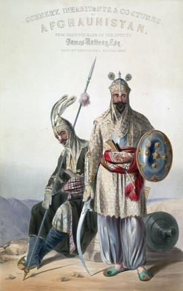 <p class='defImage'>Soldats afghans de l’état durrani</p> <p class='credits'>Wikicommons</p><p class='texte'> Hérat, souvent surnommée « la clé des Indes », est une ville à l\’Ouest de l\’Afghanistan près des frontières iraniennes. Souvent échangée entre les mains perses et afghanes, la cité représente pour plusieurs une nouvelle porte vers le joyau de la couronne britannique tant convoité autant par la France que la Russie. Autrefois centre urbain proéminent de la dynastie safavide, Hérat fut rattachée à l\’Afghanistan lorsque la couronne perse éclate violemment. Si les Qadjar sont aptes à reformer l\’État iranien à partir des vestiges safavides, il n\’en demeure pas moins qu\’une portion importante de leurs provinces orientales sont maintenant solidement indépendante. C\’est avec l\’ambition de reconquérir ces terres perdues que le Shah prend d\’assaut Hérat et l\’Afghanistan en 1837. </br> Le conflit attire l\’attention des puissances coloniales européennes. Les Russes supportent activement les Qadjar dans leur expédition en espérant y trouver un corridor leur permettant un accès aux richesses des Indes. Parallèlement, l\’Empire britannique voit dans la potentielle chute d\’Hérat, une menace plus que concrète envers ses possessions indiennes. L\’Afghanistan représente un état tampon de choix entre les colonies britanniques et la Perse et des intérêts russes. Chacune des deux puissances européennes désire remplir le vide politique laissé après la défaite iranienne lors des guerres russo-perses alors que le Shah tente de reprendre la face en annexant d\’ancienne provinces perses. C\’est un russe, le comte Simmonich, qui conseille les Perses dans leur offensive alors que les défenseurs afghans sont assistés par des officiers britanniques. Les correspondances des envoyés russes révèlent la présence de près de 30 000 hommes perses sous les remparts de la ville. </br> Ce n\’est qu\’après une menace d\’intervention militaire britannique contre le Shah que Saint-Pétersbourg rappel ses conseillers et que la Perse laisse tomber ses ambitions en Afghanistan avec la levée du siège en septembre 1838. Le siège d\’Hérat mène cependant tout de même à une invasion britannique de la région lorsque les armées d\’Inde envahissent l\’Afghanistan lors de la Première Guerre Anglo-Afghane, humiliant ainsi l\’Empire russe qui riposte en s\’attaquant à la région du Khiva. Le siège démontre excellemment la manière avec laquelle les puissances occidentales manipulent les États de l\’ouest asiatique pour assurer les intérêts de l\’Europe dans la région. </p> <p class='titreArchive'>«Reports by the Russian military agent in Persia lieutenant- colonel Blaramberg to Minister of Military Affairs Chernyshev A.N. on the military operations of Persia against Herat. Statistic report by Blaramberg on Persia.» <span class='date'>1837</span> <span class='agent'>Blaramberg</span> <span class='archive'>TsGIA. F. 446, op. 1, d. 20, l. 1-3</span/></p> <p class='auteur'>Charles-Étienne Belleau</p><p class='ref'>« Iran Chamber Society: History of Iran: The Siege of Herat 1837-1838 ». s.d., consulté le 28 janvier 2020, <http://www.iranchamber.com/history/articles/siege_of_herat12.php>. </p><p class='tag'> <em>Perse</em>");
    CleBel.addTo(myMap)
    CleBel.addTo(militaireGroupe)

    var tabteh = [

    [ 38.08888, 46.26068 ] ,
    [ 38.04253, 46.36854 ] ,
    [ 38.03254, 46.39717 ] ,
    [ 38.02855, 46.42547 ] ,
    [ 38.02988, 46.44744 ] ,
    [ 38.02156, 46.46142 ] ,
    [ 38.01223, 46.47707 ] ,
    [ 38.01057, 46.49238 ] ,
    [ 38.00824, 46.50969 ] ,
    [ 37.99526, 46.52867 ] ,
    [ 37.98527, 46.54265 ] ,
    [ 37.97661, 46.56096 ] ,
    [ 37.97029, 46.57993 ] ,
    [ 37.9653, 46.60057 ] ,
    [ 37.96297, 46.61655 ] ,
    [ 37.95364, 46.63519 ] ,
    [ 37.94965, 46.64518 ] ,
    [ 37.70801, 46.98305 ] ,
    [ 37.57338, 47.21059 ] ,
    [ 37.49374, 47.49312 ] ,
    [ 37.47099, 47.63912 ] ,
    [ 37.42484, 47.71856 ] ,
    [ 37.32288, 47.82476 ] ,
    [ 37.25834, 48.06796 ] ,
    [ 37.25834, 48.06796 ] ,
    [ 36.96694, 48.37326 ] ,
    [ 36.66952, 48.47559 ] ,
    [ 36.65156, 48.61213 ] ,
    [ 36.47909, 48.8385 ] ,
    [ 36.06947, 49.35951 ] ,
    [ 36.05869, 49.58588 ] ,
    [ 36.06588, 49.70086 ] ,
    [ 36.28263, 49.99543 ] ,
    [ 36.14787, 50.29729 ] ,
    [ 36.02659, 50.53177 ] ,
    [ 35.92687, 50.76355 ] ,
    [ 35.809, 50.93562 ] ,
    [ 35.75732, 51.05238 ] ,
    [ 35.70946, 51.14426 ] ,
    [ 35.67884, 51.351 ] ,
    ];

    var TabrizTeheranBou = L.polyline([tabteh], {title: 'La route de Tabriz à Téhéran', color:'#6df6ffff', opacity: 1});
    TabrizTeheranBou.bindPopup("<p class='titre'>La route de Tabriz à Téhéran</p>  Plan de Mianeh au XVI<sup>e</sup> siècle <p class='defImage'></p> <p class='credits'>Wikicommons</p><p class='texte'>Dans un document rédigé par le lieutenant général Ivan Fedorovič Blaramberg en 1838 pendant le siège de la ville de Herat, on peut observer, d\’un côté, les aspects considérés comme essentiels pour les déplacements militaires, et de l\’autre, les points stratégiques présents sur la route séparant Tabriz et Téhéran. Pour se mettre en contexte, il faut présenter les enjeux qui sous-tendent le siège de la ville afghane. En 1817, la Perse prend officiellement contrôle de la ville de Herat. Cependant, les tensions internes vont encourager des rebelles à reprendre la ville et réclamer son autonomie vis-à-vis du pouvoir persan. Animée d\’un désir anti-perse et influencée par les Britanniques, les troupes menées par Kamran Mirza était prête à tenir un siège contre les armées du Shah. Ne voyant pas d\’un bon œil la reprise de la ville stratégique, le Royaume-Uni soutient ouvertement les défenseurs et essaie d\’établir une frontière entre l\’Iran et les possessions de la Compagnie britannique des Indes orientales. Pour leur part, les Russes, projetant leur expansion vers l\’Inde, perçoivent la reprise de la ville comme une opportunité d\’affaiblir les Britanniques et d\’ouvrir une porte vers leurs colonies. C\’est dans ce contexte qu\’on peut observer les balbutiements du <a href='http://www.iranicaonline.org/articles/great-britain-iii' target='_blank'>Grand Jeu</a> et les raisons derrière la production de ce document.</br> L\’opération décrite par Blaramberg avait pour objectif d\’acheminer une armée depuis l\’Azerbaïdjan jusqu\’à la ville de Hérat, mais aussi de planifier la défense des territoires perses. Dans un premier temps, on repère une description détaillée de la route séparant l\’Azerbaïdjan de la capitale iranienne. Puis, dans un second temps, on identifie le caractère défensif des observations faites par l\’auteur puisqu\’il décrit les fortifications et les capacités défensives de l\’Iran; par exemple, en décrivant l\’état des différentes fortifications que l\’on croise sur la route de Tabriz à Téhéran. Généralement en mauvaises conditions, il se permet tout de même d\’en suggérer certaines qui mériteraient d\’être rénovées puis occupées par une garnison. Il suggère aussi des tactiques défensives pour protéger la Perse de potentiels envahisseurs. S\’inspirant des tactiques des Parthes, il propose une guerre d\’attrition durant laquelle il faudrait laisser les troupes ennemis pénétrer profondément dans le territoire et mener une campagne de terre brûlée. Il est difficile de dire si ces observations sous-tendaient un plan d\’invasion pour l\’armée russe ou plutôt un plan de secours en cas d\’intervention britannique dans le conflit, mais il n\’en demeure pas moins que l\’agent russe identifie les points de repère nécessaires pour mener une campagne contre Hérat.</br> Analysé en détail, le document produit par Blaramberg décrit un territoire parfois désertique et terriblement accidenté. Il était donc impensable pour les officiers militaires d\’acheminer une armée sans avoir au préalable identifié les endroits offrant un climat propice au repos et ceux où une armée rencontrerait des difficultés. L\’agent à donc décrit dans les moindres détails cette route. Par exemple, il présente le segment entre Tabriz et les contreforts de la chaine des Kaplan-Kou comme une région facile à traverser. En revanche, les Kaplans-Kou, qui sont composés « de ravins profonds à pentes rapides » (l.35 v.) et qui s\’étendent jusqu\’à la ville de Meeana, sont au contraire, difficiles à franchir. Il identifie aussi les ponts, les endroits ou l\’armée devrait effectuer des réparations, ceux où le passage est « superbe », les gués de rivières et les rivières dangereuses où «&nbsp;les pieds des hommes et des chevaux s\’enfoncent dans un fond argileux et y sont, pour ainsi dire, attachés » (l.37 v.). Il est tout aussi intéressant de souligner la nuance apportée par Blaramberg, ce dernier qui distingue les conditions estivales des conditions hivernales. Par exemple, il décrit l\’état des routes lorsque la neige commence à fondre alors que se crée « des boues horribles et des torrents rapides et profonds qui se montre là où en été, le voyageur n\’avait pas aperçu une goutte d\’eau » (l.37, r.). Un second aspect qui est intéressant de soulever est celui de l\’importance qu\’a accordée Blaramberg aux caravansérails et aux plaines. Il identifie entre autres le caravansérail de Djermal-Abad et celui de Shelbi ainsi que les plaines de Soultanides et de Casbin. Pour leur part, les caravansérails sont utiles en ce qui a trait au ravitaillement puisqu\’ils assurent un contact avec les caravaniers et le commerce local. Quant à elles, les plaines servaient plutôt à nourrir les cheveaux « d\’une nombreuse cavalerie qui permettrait de dominer la plaine » (l.36 v.). Ce qu\’ont en commun ces lieux est principalement leurs capacités « d\’hébergement » d\’une armée. En d'autres termes, ce sont des lieux disposant d\’un espace où stationner une armée sans risquer de subir une attrition sévère, au contraire d\’une route en montagne qui longe des ravins et des falaises. </p> <p class='titreArchive'>«Route de Tauris à Teheran considérée sous le rapport militaire» <span class='date'>1838-1839</span> <span class='agent'>Ivan Fedorovič Blaramberg</span> <span class='archive'>RVGIA. F.146, op. 1, d. 20, l. 35v.-39v.</span/></p> <p class='auteur'>David Bouchard</p><p class='ref'>ANDREEVA, Elena. <i>Russia an Iran in the great game : travellogues and Orientalism</i>. London, Routledge, 2007, 273 p.</br>DUPRÉ, Adrien. <i>Voyage en Perse, fait dans les années 1807,1808 et 1809 : en traversant la Natolie et la Mésopotamie</i>. vol. 22, Paris, J. G. Dentu, 1819, 534 p.</br>INGRAM, Edward. <i>The Beginning Of The Great Game In Asia, 1828-1834</i>. Oxford, Oxford University Press, 1979, 361 p.</br>« HERAT vi. THE HERAT QUESTION – Encyclopaedia Iranica ». s.d., http://www.iranicaonline.org/articles/herat-vi.</p><p class='tag'> <em>Perse</em>");
    //TabrizTeheranBou.addTo(myMap)
    TabrizTeheranBou.addTo(strategieGroupe)

    var HératCan = L.marker([34.351, 62.2164], {title: 'L\'industrie agricole en Perse au XIX<sup>e</sup> siècle', icon:Econoicon, riseOnHover : true, riseOffset: 999});
    HératCan.bindPopup("<p class='titre'>L\'industrie agricole en Perse au XIX<sup>e</sup> siècle</p>  <p class='defImage'>Fumeurs d\'opium</p> <p class='credits'>Radio-Canada</p><p class='texte'>En 1838, soit vers la fin du Siège d\'Hérat (1837-1838) par Shah Mohammed Qajar, le lieutenant-colonel Blaramberg est envoyé au côté de conseillers militaires russes afin d\'aider le souverain perse. Blaramberg en profite pour rédiger un rapport relevant des informations culturelles importantes sur la Perse, notamment sur la nourriture, les manufactures, les animaux... Une partie de son rapport, envoyé à Chernyshev A.N. au Ministère des Affaires militaires, informe sur l\'industrie agricole perse. Il est possible de retenir de ce rapport qu\'il est rédigé pour obtenir le plus d\'informations possible sur le territoire en cas de campagnes militaires ou encore de prise de possession du territoire par les Russes. Toutes les informations sont donc importantes pour maîtriser le territoire et bien le comprendre. Néanmoins, le rapport de Blaramberg est très riche en informations.</br> Il commence alors la partie de l\'<i>Industrie agricole</i> en expliquant que les Persans n'exploitent pas leurs terres à leurs avantages. En effet, il mentionne que les terres de la Perse sont très fertiles et que les systèmes d\'irrigations qui y sont construites sont exemplaires. En outre, l\'exploitation du territoire est négligée, ce qui empêche la population de se protéger en cas de famine, de disette, ou encore de mauvais climat. L\'approvisionnement et les moyens de subsistance sont donc très faibles. Ainsi, l\'Agent met davantage l\'accent sur ce qui peut être pratiqué sur le territoire et avec profit.</br> Son rapport relève la majorité des ressources exploitées sur le territoire en expliquant où chaque culture est pratiquée, si elle est destinée à l\'exportation ou la consommation intérieure, mais aussi si elle est rentable. Pour ce qui est de la culture des <b>céréales</b> (millet, froment, orge), il explique qu'une grande partie de cette culture sert à nourrir le bétail, qui est ensuite utilisé pour la production et le transport. Autrement, il explique qu\'une perte considérable de ce bien est présente. En effet, le climat hivernal de certains endroits n'aide pas à la conservation. Il est aussi mentionné que la majorité de la production des céréales se retrouve au nord de la Perse. Une grande production de <b>riz</b> est aussi présente en Perse. Principalement produit vers Asterabad, les irrigations des Persans permettent une production considérable de cet aliment qui est exporté à travers le monde. Le <b>safran</b> est aussi une production importante. La Perse produit cette épice de qualité vouée exclusivement à la consommation du pays qui ne suffit pas, donc une importation est également nécessaire. </br> La culture du <b>coton</b> est importante dans certaines localités pour la production du coton à courte soie. Sa culture n\'est pas pratiquée comme elle se doit, ce qui influe sur la détérioration plus rapide de cette culture. Il est travaillé par les femmes puisque cette main-d\'oeuvre coûte moins cher. L\'<b>indigo</b> est aussi cultivé, par trois espèces différentes, pour obtenir la teinte de bleu qui sert pour les vêtements ou encore des produits tels que le tapis. On retrouve de plus la culture du <b>lin</b> à Mazanderan pour produire des toiles vendues dans le monde et pour en faire de l\'huile.</br> Les huiles, telles que celle de <b>ricin</b> ou encore d\'<b>olive</b>, sont fortement exploitées. L\'huile de ricin sert pour les manufactures ou encore l\'éclairage. L\'huile d\'olive quant à elle, est vouée à l\'exportation. Blaramberg souligne que les Persans ne connaissent pas réellement l\'utilité de l\'huile d\'olive, pourtant ils l\'ont cultivé et en font le commerce.</br> L\'exploitation du <b>tabac</b> est également considérable dans la région du Shiraz. Il est consommée sur le territoire et grandement exporté en Inde et en Arabie. Sa production tient une place importante au sein de l\'industrie agricole. Une autre culture importante est celle du <b>pavot</b>, destiné à la production de l\'opium. Les trois espèces cultivées (jaune, brun et noir), sont transformées en drogue pour être ensuite changées en cylindre par la Chine (pays partenaire). Ce produit est aussi transformé en sirop pour assoupir ou enivrer. Il est consommé en thé, en sorbet, ou encore tout simplement mangé par ses consommateurs. La culture du bois de <b>cerisier</b> est également importante pour les perses. Bois très recherché pour la confection de pipe, il est un commerce riche et important exporté en Asie. Certes, sa production est réduite du fait que l\'Empire ottoman limite le nombre de pipes que chaque individu peut posséder, le commerce avec la Turquie en est alors grandement affecté.</br> Une production de <b>raisin</b> considérable se déroule entre Ispahan, Téhéran et Tauris. Il est cultivé pour confectionner un vin de qualité supérieure. Il est exploité par les Arméniens. On utilise aussi le marc de raisin pour produire de l\'eau-de-vie. Sa culture est donc destinée à plusieurs productions et à un commerce considérable. Un autre fruit cultivé est une espèce d\'<b>orange</b> amère, cultivé à Mazanderan, qui sert à produire un sirop pour les arômes, mais aussi une liqueur. Blaramberg mentionne que ces oranges pourraient avoir plus d\'utilités. La <b>canne à sucre</b> est aussi une culture importante pour produire du sirop et des confiseries. L\'auteur remarque que la production de rhum serait un atout avec ce produit s\'il n\'était pas limité par les religieux. Finalement, la présence de <b>potager</b> est importante. On y cultive des aliments tels que le melon, la pastèque, le concombre, la betterave, le chou, la carotte, le haricot, l\'ail, l\'oignon, la fève, les pois et la laitue romaine. L\'auteur note également que la production de <b>pomme de terres</b> commence à se pratiquer dans certaines régions et qu\'il espère que cela se repende sur le territoire tout entier.</br> Ainsi, l\'industrie agricole perse est riche dans ce qu\'elle peut produire, mais elle n\'est pas exploitée à son total avantage. Blaramberg permet par ces informations d\'obtenir des renseignements considérables concernant la production et la commerce qui sont importantes pour quiconque souhaite envahir le territoire.</p> <p class='titreArchive'>«Rapport statistique par le lieutenant-colonel Blaramberg en Perse : l\'Industrie agricole» <span class='date'>9 février 1838 au 16 février 1839</span> <span class='agent'>Agent militaire russe lieutenant-colonel Ivan Fedorovich Blaramberg</span> <span class='archive'>RGVIA. F. 446, op. 1, d. 20. </span/></p> <p class='auteur'>Victoria Candat</p><p class='ref'></p><p class='tag'> <em>Perse</em>");
    //HératCan.addTo(myMap)
    HératCan.addTo(economieGroupe)

    var RouteHeratTatta1 = [
    [34.3528, 62.2040],
    [31.6288, 65.7371],
    [27.8213, 67.3116],
    [24.7475, 67.9106]
    ];
    var RouteHeratDio1 = L.polyline(RouteHeratTatta1,{color:'#fff079ff', opacity:1, icon:Econoicon});
    RouteHeratDio1.bindPopup("<p class='titre'>Le Sindh et le Grand Jeu</p>  <p class='credits'>Wikimedia Commons</p> <p class='texte'>Le Sindh est la région côtière de la vallée de l\’Indus et qui constitue une province du Pakistan moderne. Cette zone est fertile et produit depuis plusieurs siècles une grande quantité de sucre, de même que de tissus de soie et de coton. La ville de <a href='https://www.britannica.com/place/Thatta' target='_blank'>Thatta</a> fut la capitale de l\’empire des <a href='https://www.britannica.com/topic/Rajput' target='_blank'>Rajputs</a> de la dynastie Samma (1351–1524). Si celle-ci perd son importance sous le joug mogol lors les siècles suivants, le commerce y reste florissant et attire les puissances coloniales européennes à compter du XVI<sup>e</sup> siècle, notamment les Portugais, les Hollandais et les Britanniques, qui y établiront des comptoirs. </br> Au XIX<sup>e</sup> siècle, le Sindh, alors dirigé par les <a href='https://www.britannica.com/topic/Talpur' target='_blank'>Talpurs</a>, une dynastie <a href='https://www.britannica.com/topic/Baloch' target='_blank'>baloutche</a>, prend une nouvelle importance en raison du <a href='https://www.britannica.com/topic/Great-Game' target='_blank'>Grand Jeu</a>. En effet, la France de Napoléon s\'intéresse de près au joyau de la couronne britannique et ses agents répertorient les routes praticables en prévision d\'une invasion. Ensuite, les Russes, soucieux d\’étendre à la fois leur influence et leur empire, cherchent à obtenir l\’accès aux mers chaudes et à rivaliser avec les autres puissances coloniales européennes en Asie. </br>Les Britanniques, qui auparavant  se contentaient de comptoirs commerciaux, veulent désormais parer les tentatives d\’expansion de l\’Empire russe, notamment en Afghanistan, et auront ainsi un nouvel intérêt pour le contrôle direct de ce territoire. Cet intérêt se trouve également renforcé par le fâcheux déroulement de la <a href='https://www.britannica.com/event/Anglo-Afghan-Wars#ref1119626' target='_blank'>Première Guerre Anglo-Afghane (1839-1842)</a>, laquelle mettra en évidence l\’avantage que procurerait le contrôle de l\’espace entre l\’Afghanistan et les Indes britanniques. En 1843, les tensions toujours croissantes entre les Talpurs et les Britanniques, qui imposent des traités contraignants aux amirs tout en massant leurs troupes à la frontière du Sindh, mènent à l\’affrontement armé en 1843. Les Britanniques défont les troupes baloutches, plusieurs fois supérieures en nombre, lors des batailles de <a href='https://www.britannica.com/event/Battle-of-Miani' target='_blank'>Miāni</a> et de Dabo (aussi appelée bataille de Dubba), à proximité de la capitale du Sindh, Hyderabad. Le Sindh est ensuite adjoint à la Présidence de Bombay, alors sous le contrôle de la British East India Company.</p><p class='titreArchive'>«Routes d'Herat à Tatta» <span class='date'>1805</span> <span class='agent'>Inconnu</span><p class='archive'>RGVIA, F. 446, opis 1, delo 190.</p><p class='auteur'>Henri Dion</p><p class'ref'>ISLAM, Arshad. «&nbsp;British Annexation of Sindh: An Introspection&nbsp;». <i>Pakistan Historical Society. Journal of the Pakistan Historical Society; Karachi</i>, vol.&nbsp;59, n°4, décembre 2011, p.77-103.</p><p>SEYMOUR, William. «&nbsp;Sir Charles Napier & the conquest of Sind&nbsp;», <i>History Today</i>, vol.&nbsp;31, 1981, p.18-22.</p> <p class='tag'><em>Indus</em></p><p class='tag'><em>Indes</em></p><p class='tag'><em>Pakistan</em></p><p class='tag'><em>Grand Jeu</em></p><p class='tag'><em>Sindh</em></p><p class='tag'><em>Talpur</em></p><p class='tag'><em>Baloch</em></p>");
    //RouteHeratDio1.addTo(myMap)
    RouteHeratDio1.addTo(economieGroupe)

    var RouteHeratTatta2 = [
    [34.3528, 62.2040],
    [30.9606, 61.8526],
    [28.3608, 62.9676],
    [24.7475, 67.9106]
    ];
    var RouteHeratDio2 = L.polyline(RouteHeratTatta2, {color: '#fff079ff'});
    RouteHeratDio2.bindPopup("<p class='titre'>Le Sindh et le Grand Jeu</p>  <p class='credits'>Wikimedia Commons</p> <p class='texte'>Le Sindh est la région côtière de la vallée de l\’Indus et qui constitue une province du Pakistan moderne. Cette zone est fertile et produit depuis plusieurs siècles une grande quantité de sucre, de même que de tissus de soie et de coton. La ville de <a href='https://www.britannica.com/place/Thatta' target='_blank'>Thatta</a> fut la capitale de l\’empire des <a href='https://www.britannica.com/topic/Rajput' target='_blank'>Rajputs</a> de la dynastie Samma (1351–1524). Si celle-ci perd son importance sous le joug mogol lors les siècles suivants, le commerce y reste florissant et attire les puissances coloniales européennes à compter du XVI<sup>e</sup> siècle, notamment les Portugais, les Hollandais et les Britanniques, qui y établiront des comptoirs. </br> Au XIX<sup>e</sup> siècle, le Sindh, alors dirigé par les <a href='https://www.britannica.com/topic/Talpur' target='_blank'>Talpurs</a>, une dynastie <a href='https://www.britannica.com/topic/Baloch' target='_blank'>baloutche</a>, prend une nouvelle importance en raison du <a href='https://www.britannica.com/topic/Great-Game' target='_blank'>Grand Jeu</a>. En effet, la France de Napoléon s\'intéresse de près au joyau de la couronne britannique et ses agents répertorient les routes praticables en prévision d\'une invasion. Ensuite, les Russes, soucieux d\’étendre à la fois leur influence et leur empire, cherchent à obtenir l\’accès aux mers chaudes et à rivaliser avec les autres coloniales européennes en Asie. </br>Les Britanniques, qui auparavant  se contentaient de comptoirs commerciaux, voudront de parer les tentatives d\’expansion de l\’Empire russe, notamment en Afghanistan, et auront ainsi un nouvel intérêt pour le contrôle direct de ce territoire. Cet intérêt se trouve également renforcé par le fâcheux déroulement de la <a href='https://www.britannica.com/event/Anglo-Afghan-Wars#ref1119626' target='_blank'>Première Guerre Anglo-Afghane (1839-1842)</a>, laquelle mettra en évidence l\’avantage que procurerait le contrôle de l\’espace entre l\’Afghanistan et les Indes britanniques. En 1843, les tensions toujours croissantes entre les Talpurs et les Britanniques, qui imposent des traités contraignants aux amirs tout en massant leurs troupes à la frontière du Sindh, mènent à l\’affrontement armé en 1843. Les Britanniques défont les troupes baloutches, plusieurs fois supérieures en nombre, lors des batailles de <a href='https://www.britannica.com/event/Battle-of-Miani' target='_blank'>Miāni</a> et de Dabo (aussi appelée bataille de Dubba), à proximité de la capitale du Sindh, Hyderabad. Le Sindh est ensuite adjoint à la Présidence de Bombay, alors sous le contrôle de la British East India Company.</p><p class='titreArchive'>«Routes d'Herat à Tatta» <span class='date'>1805</span> <span class='agent'>Inconnu</span><p class='archive'>RGVIA, F. 446, opis 1, delo 190.</p><p class='auteur'>Henri Dion</p><p class'ref'>ISLAM, Arshad. «&nbsp;British Annexation of Sindh: An Introspection&nbsp;». <i>Pakistan Historical Society. Journal of the Pakistan Historical Society; Karachi</i>, vol.&nbsp;59, n°4, décembre 2011, p.77-103.</p><p>SEYMOUR, William. «&nbsp;Sir Charles Napier & the conquest of Sind&nbsp;», <i>History Today</i>, vol.&nbsp;31, 1981, p.18-22.</p> <p class='tag'><em>Indus</em></p><p class='tag'><em>Indes</em></p><p class='tag'><em>Pakistan</em></p><p class='tag'><em>Grand Jeu</em></p><p class='tag'><em>Sindh</em></p><p class='tag'><em>Talpur</em></p><p class='tag'><em>Baloch</em></p>");
    //RouteHeratDio2.addTo(myMap)
    RouteHeratDio2.addTo(economieGroupe)

    var SindhDio = L.marker([24.7475, 67.91063], {title: 'Le Sindh et le Grand Jeu', icon:Econoicon, riseOnHover : true, riseOffset: 999});
    SindhDio.bindPopup("<p class='titre'>Le Sindh et le Grand Jeu</p>  <p class='credits'>Wikimedia Commons</p> <p class='texte'>Le Sindh est la région côtière de la vallée de l\’Indus et qui constitue une province du Pakistan moderne. Cette zone est fertile et produit depuis plusieurs siècles une grande quantité de sucre, de même que de tissus de soie et de coton. La ville de <a href='https://www.britannica.com/place/Thatta' target='_blank'>Thatta</a> fut la capitale de l\’empire des <a href='https://www.britannica.com/topic/Rajput' target='_blank'>Rajputs</a> de la dynastie Samma (1351–1524). Si celle-ci perd son importance sous le joug mogol lors les siècles suivants, le commerce y reste florissant et attire les puissances coloniales européennes à compter du XVI<sup>e</sup> siècle, notamment les Portugais, les Hollandais et les Britanniques, qui y établiront des comptoirs. </br> Au XIX<sup>e</sup> siècle, le Sindh, alors dirigé par les <a href='https://www.britannica.com/topic/Talpur' target='_blank'>Talpurs</a>, une dynastie <a href='https://www.britannica.com/topic/Baloch' target='_blank'>baloutche</a>, prend une nouvelle importance en raison du <a href='https://www.britannica.com/topic/Great-Game' target='_blank'>Grand Jeu</a>. En effet, la France de Napoléon s\'intéresse de près au joyau de la couronne britannique et ses agents répertorient les routes praticables en prévision d\'une invasion. Ensuite, les Russes, soucieux d\’étendre à la fois leur influence et leur empire, cherchent à obtenir l\’accès aux mers chaudes et à rivaliser avec les autres coloniales européennes en Asie. </br>Les Britanniques, qui auparavant  se contentaient de comptoirs commerciaux, voudront de parer les tentatives d\’expansion de l\’Empire russe, notamment en Afghanistan, et auront ainsi un nouvel intérêt pour le contrôle direct de ce territoire. Cet intérêt se trouve également renforcé par le fâcheux déroulement de la <a href='https://www.britannica.com/event/Anglo-Afghan-Wars#ref1119626' target='_blank'>Première Guerre Anglo-Afghane (1839-1842)</a>, laquelle mettra en évidence l\’avantage que procurerait le contrôle de l\’espace entre l\’Afghanistan et les Indes britanniques. En 1843, les tensions toujours croissantes entre les Talpurs et les Britanniques, qui imposent des traités contraignants aux amirs tout en massant leurs troupes à la frontière du Sindh, mènent à l\’affrontement armé en 1843. Les Britanniques défont les troupes baloutches, plusieurs fois supérieures en nombre, lors des batailles de <a href='https://www.britannica.com/event/Battle-of-Miani' target='_blank'>Miāni</a> et de Dabo (aussi appelée bataille de Dubba), à proximité de la capitale du Sindh, Hyderabad. Le Sindh est ensuite adjoint à la Présidence de Bombay, alors sous le contrôle de la British East India Company.</p><p class='titreArchive'>«Routes d'Herat à Tatta» <span class='date'>1805</span> <span class='agent'>Inconnu</span><p class='archive'>RGVIA, F. 446, opis 1, delo 190.</p><p class='auteur'>Henri Dion</p><p class'ref'>ISLAM, Arshad. «&nbsp;British Annexation of Sindh: An Introspection&nbsp;». <i>Pakistan Historical Society. Journal of the Pakistan Historical Society; Karachi</i>, vol.&nbsp;59, n°4, décembre 2011, p.77-103.</p><p>SEYMOUR, William. «&nbsp;Sir Charles Napier & the conquest of Sind&nbsp;», <i>History Today</i>, vol.&nbsp;31, 1981, p.18-22.</p> <p class='tag'><em>Indus</em></p><p class='tag'><em>Indes</em></p><p class='tag'><em>Pakistan</em></p><p class='tag'><em>Grand Jeu</em></p><p class='tag'><em>Sindh</em></p><p class='tag'><em>Talpur</em></p><p class='tag'><em>Baloch</em></p>");
    //SindhDio.addTo(myMap)
    SindhDio.addTo(economieGroupe)

    var KandaharGos = L.marker([31.6288, 65.7371], {title: 'Kandahar', icon:Diploicon, riseOnHover : true, riseOffset: 999});
    KandaharGos.bindPopup("<p class='titre'>Pour le maintien d\'une zone tampon</p> <p class='defImage'>Image de l'armée britannique à Kandahar 1<sup>re</sup> guerre anglo-afghane</p> <p class='credits'>Wikicommons</p> <p class='texte'>L\’année est 1838, Blaramberg un agent au service de la Russie transmet des informations sur le siège d’Hérat. Il observe avec stupéfaction la désorganisation de l\’armée perse et l’incapacité de cette dernière à prendre la ville. Il déplore la compétition entre les régiments cherchant à prendre seul la ville pour la gloire. De même, il déplore la décision du premier ministre de laisser trois portes sur cinq ouvertes à la circulation. Il décrit le premier ministre comme étant le chef <i> de facto </i> de l\’État Perse et le Shah comme étant dominé par ce dernier. </br>Toutefois, il reçoit de bien plus sombres informations de son collègue Vitkevitch à Kandahar. Les Anglais sont arrivés à la cour de Dost-Mahomed Khan, alors dirigeant de l’Afghanistan, avec de nombreux cadeaux. Dost-Mahomed Khan, accepte l\’offre et entre en alliance avec les Anglais. Visiblement, Blaramberg craint l\’arrivée d’une force afghane contre les troupes du Shah à Hérat. Ses craintes sont renforcées par la lettre que Dost-Mahomed Khan écrit à son frère, Cohendil Khan où il demande à ce dernier de le rejoindre pour son combat contre les Perses. Cohendil assure sa fidélité au Shah, mais demande à ce dernier de lui confier Hérat. Puis, l\’auteur fait part de l\’arrivée d’un agent anglais, qui après deux jours de discussion avec le camp perse, retourne dans Hérat. La proposition au Shah est le retrait de ce dernier en échange que le dirigeant d’Hérat paie les frais du siège au Shah. Il finit par noter que la politique anglaise influence la Perse et l’Afghanistan. Le rapport de Blaramberg affiche ainsi les débuts du Grand Jeu et comment les Anglais sont très impliqués dans ces deux pays. On le voit dans la négociation à Hérat et vraisemblablement dans les manœuvres des Afghans. Il semble que les intérêts anglais dans cette région soient surtout de nature défensive. En effet, les Anglais craignaient qu\’une Hérat sous contrôle perse permette au Russes de propager et renforcer des mouvements anti-anglais en Afghanistan. Advenant que cela soit le cas, l\’Inde britannique serait moins défendue, ce que les Anglais ne souhaitent pas. Cela aide à comprendre pourquoi les Anglais sont autant présent dans la région. Un ans plus tard, c'est la 1<sup>re</sup> guerre anglo-afghane pour placer l'Afghanistan sous tutelle britannique. </p> <p class='titreArchive'>«Rapport de l\'agent militaire russe en Perse, le lieutenant colonel Blaramberg, au ministre des affaires militaires Chernyshev au sujet des oppérations de la Perse contre Herat» <span class='date'>9 F/vrier 1838 - 16 F/vrier 1839</span> <span class='agent'>Blaramberg</span><p class='archive'>RGVIA. F. 446, op. 1, d. 20 partie 1, l. 85-93.</p> <p class='auteur'>Charles-Étienne Gosselin</p> <p class='ref'>Abbas Amanat, « HERAT vi. THE HERAT QUESTION », <i>Encyclopaedia Iranica</i>, 15 décembre 2003, consulté le 27 janvier 2020, <http://www.iranicaonline.org/articles/herat-vi>.<br/><br/>Amin H. Tarzi, « DŌST MOḤAMMAD KHAN », <i>Encyclopaedia Iranica</i>, 15 décembre 1995, consulté le 27 janvier 2020, <http://www.iranicaonline.org/articles/dost-mohammad-khan>.<br/><br/>G. J. Alder, « The “Garbled” Blue Books of 1839-Myth or Reality? », <i>The Historical Journal</i>, vol. 15, n° 2, 1972, p. 229‑259.</p><p class='tag'> <em>Perse</em>");
    KandaharGos.addTo(myMap)
    KandaharGos.addTo(DiplomatieGroupe)

    var empireperse = L.geoJSON(Empireperse,{color: '#6dd7baff', opacity: 1, fillOpacity:0.55});
    empireperse.bindPopup("<p class='titre'>Population et clergé de la Perse</p>  <p class='defImage'>Tableau représentant un membre du clergé perse</p> <p class='credits'>Encyclopedia Iranica</p><p class='texte'>En 1838, le Lieutenant Colonel Blaramberg publie son <i>Mémoire Statistique sur la Perse</i>, document volumineux qui couvre de nombreux aspects de la société perse avec force de détails. Deux de ces aspects sont la population persane ainsi que son clergé.</br>L\’agent nous apprend d\’abord qu\’il n\’y a pas de chiffres officiels concernant la population de la Perse à l\’époque. En effet, il n\’y a pas de recensement fait par l\’État, en raison de la grande mobilité des habitants. Nous retrouvons en Perse des tribus nomades qu\’il est difficile de dénombrer et les gens migrent souvent d\’un village à l\’autre en raison de l\’impôt. Celui-ci est établi sur des bases fixes depuis des souverains antérieurs au Shah et ne s\’ajuste pas au nombre d\’habitant dans les villages. Ceux-ci doivent donc payer le même montant d\’impôt malgré la diminution de leur population. Souvent, il arrive donc que les gens choisissent de quitter leur village pour un autre plus peuplé afin d\’échapper à l\’impôt devenu trop lourd. Tout cela rend donc la tenue de recensements plutôt ardu. Alors que les hommes d\’état persans estiment leur population à environ 9 millions d\’individus, un moine catholique d\’Ispahan évalue plutôt celle-ci à environ 4 à 5 millions tout au plus. Il rapporte que la population de la ville aurait diminué d\’environ la moitié pendant son séjour, d\’une durée de 11 ans, en raison de la guerre, de la peste et du choléra entre autres. Cette hypothèse est soutenue par un témoignage du premier ministre Hadji-Mirza-Aghafsi qui aurait confié au Comte Simonitch que la Perse aurait perdu environ 3 millions et demi d’habitants entre 1823 et 1838. Donc, la population du pays ne devrait pas dépassé les 5 millions de personnes selon ces informations. Ensuite, on établit une division au sein des Persans: certains sont sédentaires, d\’autres nomades. Cette distinction est cependant poreuse, puisque certains nomades viennent en ville dans le but d\’apprendre un métier, y habitent le temps de leur apprentissage avant de retourner dans leur tribu. Le fait d\’avoir une profession leur permet de mieux gagner leur vie et leur donne davantage d\’indépendance. Parmi les tribus les plus renommées, on retrouve les Bakhtiars (Irak) et les Failin, qui sont les plus nombreuses. Viennent ensuite les Afschars (lac Ourmia) et les quelques tribus arabes qui vivent dans des tentes dans « l\’Arabistan ».</br>Quant au clergé, Blaramberg les décrit comme ayant une « influence assez considérable sur la société ». Cette influence est basée sur la vénération répandue pour les institutions du prophète et pour l’observation des cérémonies et pratiques de la religion. D\’ailleurs, toutes les lois civiles et pénales de la Perse sont basées sur le Coran. Le clergé a donc une grande place dans la solution des litiges; les décisions rendues par les juges spirituels sont sans appel. Le clergé est très apprécié de la population pour deux raisons. Premièrement, il est responsable de l\’éducation des garçons et des filles. Ensuite, il est l\’unique barrière qui existe contre l\’arbitraire du Shah. C\’est vers eux qu\’on se tourne lorsqu\’on croit avoir été lesé ou qu\’on cherche à échapper aux autorités. En effet, les Mollah admettent chez eux quiconque veut se soustraire à la poursuite de la loi temporelle. En raison de leur caractère sacré, les autorités du Shah ne peuvent aller contre la volonté des prêtres et ne peuvent sévir contre eux. </p> <p class='titreArchive'>«Mémoire Statistique sur la Perse»<span class='date'>1838</span> <span class='agent'>Lieutenant Colonel Blaramberg</span> <span class='archive'>RGVIA. F. 446, op. 1, d. 20, l. 13 v. - 15 r. et 30 v. - 32 r.</span><\p> <p class='auteur'>Catherine Lampron</p><p class='tag'> <em>Perse</em><em>Population</em><em>Clergé</em></p>");
    empireperse.addTo(myMap);
    empireperse.addTo(ethnoGroup);

    var IspahanLam = L.marker([32.6707, 51.6650], {title: 'Ressources naturelles et posessions géostratégiques en Perse', icon:Econoicon, riseOnHover : true, riseOffset: 999});
    IspahanLam.bindPopup("<p class='titre'>Ressources naturelles et possessions géostratégiques en Perse</p>  <p class='defImage'>La noix de galle est un produit que la Perse exporte en grande quantité.</p> <p class='credits'>Dumbarton Oaks</p><p class='texte'>Le Lieutenant Colonel Blaramberg, dans son <i>Mémoire Statistique de la Perse</i> de 1838 aborde les différentes ressources végétales, minérales et celles de la pêche. Il fait également état des possessions de la Perse et de l\'Angleterre dans le golfe Persique.</br>En ce qui concerne les productions végétales de la Perse, l\'une des plus importante est celle de la noix de galle. Les Persans en exportent de grandes quantités aux Indes, en Turquie, en Russie et dans le reste de l\'Europe. L'agent parle également de la «graine jaune de la Perse», qui est employée comme élément de teinture qui pourrait facilement être exportée en Russie. Les racines de Galagan sont également utilisées dans la teinture et sont très répandues sur le territoire. La Perse produit également des sésames avec lesquelles elle produit une huile employée dans tout le pays. Il pousse également en ce pays une grande variété d\'arbres: érables, peupliers, ormeaux, bois de mastic et dattiers sauvages. D\'ailleurs, l\'auteur spécifie que les deux dernières espèces sont d\'excellents combustibles, information très utile à des troupes en pleine campagne sur le territoire. Finalement, les dattes du Fars et de l\'Arabistan sont les meilleures de la Perse et constituent une part considérable de l'exportation. En ce qui concerne les productions minérales du pays, elles sont peu exploitées. En effet, on retrouve de l\'or, de l\'argent, du cuivre et du fer que l\'État n\'exploite que très peu, soit en raison d\'un manque de ressources, soit en raison de sa piètre qualité dans le cas du fer. Un minéral consommé en grande quantité est l\'orpiment. On s\'en sert dans la peinture pour colorer la fayence et la porcelaine. Ils en exportent beaucoup en Turquie. À Nishapour, on trouvait autrefois une grande mine de turquoise, mais elle s\'est effondrée en 1832. Pour ce qui est du charbon de terre, il est peu consommé, mais les Russes se proposent d\'établir des hauts fourneaux et des fonderies qui en étendront sûrement la consommation. Viennent ensuite les pêcheries, contrôlées principalement par deux individus: Mir-Aboutalib-Mir-Baghirf, d\'Astrakhan, et Soudjaiff d\'Astrakhan, un Arménien. Certes la pêche rapporte des ressources en poisson, mais on recueille également des perles d\'une valeur considérable. Le commerce qu\'on en fait est presqu\'entièrement concentré à Mascate. Les Anglais ont d\'ailleurs proposé au Shah Fath-Ali de louer les îles Bahreïn pour une grande somme, afin de pouvoir faire eux-même la pêche des perles. Le Shah a cependant refusé, craignant que les Anglais n\'obtiennent trop de pouvoir dans le golfe Persique...</br>Pour ce qui est des possessions des Persans dans le golfe Persique, ils possèdent le littoral nord du golfe, mais n\'ont aucune force maritime pour se faire respecter. Les bateaux qui y naviguent appartiennent «soit aux Anglais de la Compagnie des Indes, soit aux Arabes côtiers.» De l\'autre côté du golfe, l\'Imam Seïd-Seïd est un voisin à garder à l\'oeil. Il possède plusieurs vaisseaux de guerre et des forces terrestres dont le nombre n\'est pas établi. Sa richesse lui provient du commerce plutôt fructueux qu\'il entretient avec les Anglais. Ceux-ci possèdent d\'ailleurs une manufacture à Bender-Bouchire et la station militaire Bassadore, sur l\'île de Kishm. Ils y entretiennent une force de 8 à 10 navires armés dont la mission est de protéger les bateaux marchands contre les pirates du golfe. La station militaire n\'est cependant pas fortifiée et abrite les magasins militaires pour l\'approvisionnement des vaisseaux et des équipages. Il s\'y trouve donc des ressources militaires utiles.</p> <p class='titreArchive'>«Mémoire Statistique de la Perse» <span class='date'>1838</span> <span class='agent'>Lieutenant Colonel Blaramberg</span> <span class='archive'>RGVIA. F. 446, op. 1, d. 20, l. 15 v.- 18 et 32 v.- 34.</span/></p> <p class='auteur'>Catherine Lampron</p><p class='tag'> <em>Perse</em><em>Pêche</em><em>Mines</em><em>Végétation</em><em>Golfe</em><em>Anglais</em>");
    //IspahanLam.addTo(myMap)
    IspahanLam.addTo(economieGroupe)

    //var ScamachieIspahanLar = L.marker([40.6318, 48.6363], {title: 'Şamaxı', icon:Topoicon, riseOnHover : true, riseOffset: 999});
    //ScamachieIspahanLar.bindPopup("<p class='titre'>Route de Şamaxı à Ispahan <br>1<sup>er</sup> janvier au 1<sup>er</sup> août 1787 </p> 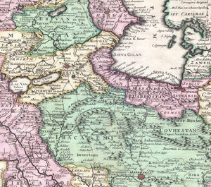<p class='defImage'>Carte de 1730 représentant la Perse</p> <p class='credits'>Wikicommons</p><p class='texte'>Scamachie, ou de sa toponymie actuelle Şamaxı était la ville capitale de la province du Shirvan (Chirvan/Şirvan) en 1787. Elle se trouve dans une vallée entre deux montagnes. </p> <span class='date'>1787</span> <span class='agent'>Inconnu</span> <p class='archive'>RGVIA, Fond 446, opis 1, delo 184, list 1-3</p> <p class='auteur'>Marie-Soleil Larocque</p><p class='ref'></p><p class='tag'> <em>Perse</em> ");
    //ScamachieIspahanLar.addTo(myMap)
    //ScamachieIspahanLar.addTo(topographieGroupe)

    //var ScamachieIspahanLar = L.marker([38.2537, 48.2999], {title: 'Ardebil', icon:Topoicon, riseOnHover : true, riseOffset: 999});
    //ScamachieIspahanLar.bindPopup("<p class='titre'>Route de Şamaxı à Ispahan <br>1<sup>er</sup> janvier au 1<sup>er</sup> août 1787 </p> <p class='defImage'>Carte de 1730 représentant la Perse</p> <p class='credits'>Wikicommons</p> <p class='texte'>Ardabil est un ville actuelle d\'Iran mais qui faisait autrefois partie de la province d\'Azerbaijan. Situé au centre d\'une grande plaine de d\'une circonférence d\'environ 14,48 km la ville est au centre d\'un réseau de 6 villages. </p> <span class='date'>1787</span> <span class='agent'>Inconnu</span><p class='archive'>RGVIA, Fond 446, opis 1, delo 184, list 1-3</p> <p class='auteur'>Marie-Soleil Larocque</p><p class='ref'> Encyclopedia iranica, <em>Ardabil</em>, [site Web] 11 août 2011, www.iranicaonline.org/articles/ardabil#pt1,  </p><p class='tag'> <em>Perse</em> ");
    //ScamachieIspahanLar.addTo(myMap)
    //ScamachieIspahanLar.addTo(topographieGroupe)

    //var ScamachieIspahanLar = L.marker([36.4358, 48.7919], {title: 'Sultanie', icon:Topoicon, riseOnHover : true, riseOffset: 999});
    //ScamachieIspahanLar.bindPopup("<p class='titre'>Route de Şamaxı à Ispahan <br>1<sup>er</sup> janvier au 1<sup>er</sup> août 1787 </p> <p class='defImage'>Carte de 1730 représentant la Perse</p>  <p class='credits'>Wikicommons</p> <p class='texte'>Toponymie actuelle: Sultanya. Ville au milieu d'une grande plaine. Elle est entouré de deux monts. </p> <span class='date'>1787</span> <span class='agent'>Inconnu</span> <p class='archive'>RGVIA, Fond 446, opis 1, delo 184, list 1-3</p> <p class='auteur'>Marie-Soleil Larocque</p><p class='ref'> texte </p><p class='tag'> <em>Perse</em> ");
    //ScamachieIspahanLar.addTo(myMap)
    //ScamachieIspahanLar.addTo(topographieGroupe)

    //var ScamachieIspahanLar = L.marker([35.0236, 50.3585], {title: 'Saba', icon:Topoicon, riseOnHover : true, riseOffset: 999});
    //ScamachieIspahanLar.bindPopup("<p class='titre'>Route de Şamaxı à Ispahan <br>1<sup>er</sup> janvier au 1<sup>er</sup> août 1787 </p> <p class='defImage'>Carte de 1730 représentant la Perse</p>  <p class='credits'>Wikicommons</p> <p class='texte'> Toponymie actuelle: Saveh. Ville situé dans une grande plaine à une journée de marche d'une ville en ruine. On voit de là les monts d'Alvand. Il y aurait des murailles et des tours près de la ville. </p> <span class='date'>1787</span> <span class='agent'>Inconnu</span> <p class='archive'>RGVIA, Fond 446, opis 1, delo 184, list 1-3</p> <p class='auteur'>Marie-Soleil Larocque</p><p class='ref'></p><p class='tag'> <em>Perse</em> ");

    //var ScamachieIspahanLar = L.marker([34.6415, 50.8746], {title: 'Kom', icon:Topoicon, riseOnHover : true, riseOffset: 999});
    //ScamachieIspahanLar.bindPopup("<p class='titre'>Route de Şamaxı à Ispahan <br>1<sup>er</sup> janvier au 1<sup>er</sup> août 1787 </p> <p class='defImage'>Carte de 1730 représentant la Perse</p>  <p class='credits'>Wikicommons</p> <p class='texte'> Toponymie actuelle: Qom. Ville situé dans une plaine à droite du mont Alvand. La ville est alimentée par un canal qui provient d'une petite rivière qui puise son origine de deux sources dans les monts d\'Alvand. </p> <span class='date'>1787</span> <span class='agent'>Inconnu</span> <p class='archive'>RGVIA, Fond 446, opis 1, delo 184, list 1-3</p> <p class='auteur'>Marie-Soleil Larocque</p><p class='ref'> </p><p class='tag'> <em>Perse</em> ");
    //ScamachieIspahanLar.addTo(myMap)
    //ScamachieIspahanLar.addTo(topographieGroupe)

    //var ScamachieIspahanLar = L.marker([34.2537, 51.2788], {title: 'Sensen', icon:Topoicon, riseOnHover : true, riseOffset: 999});
    //ScamachieIspahanLar.bindPopup("<p class='titre'>Route de Şamaxı à Ispahan <br>1<sup>er</sup> janvier au 1<sup>er</sup> août 1787 </p> <p class='defImage'>Carte de 1730 représentant la Perse</p>  <p class='credits'>Wikicommons</p> <p class='texte'> Toponymie actuelle: San San. </p> <span class='date'>1787</span> <span class='agent'>Inconnu</span> <p class='archive'>RGVIA, Fond 446, opis 1, delo 184, list 1-3</p> <p class='auteur'>Marie-Soleil Larocque</p><p class='ref'> </p><p class='tag'> <em>Perse</em> ");
    //ScamachieIspahanLar.addTo(myMap)
    //ScamachieIspahanLar.addTo(topographieGroupe)

    //var ScamachieIspahanLar = L.marker([33.9850, 51.4099], {title: 'Kaschan', icon:Topoicon, riseOnHover : true, riseOffset: 999});
    //ScamachieIspahanLar.bindPopup("<p class='titre'>Route de Şamaxı à Ispahan <br>1<sup>er</sup> janvier au 1<sup>er</sup> août 1787 </p> <p class='defImage'>Carte de 1730 représentant la Perse</p>  <p class='credits'>Wikicommons</p> <p class='credits'>Wikicommons</p><p class='texte'>Toponymie actuelle: Kashan. Ville en longueur dont les murailles serait fait d'argille. Elle est situé dans une gande plaine dont les terres auraient un bon potentiel labourable. On peut apercevoir à sa droite les monts Alvand.</p> <span class='date'>1787</span> <span class='agent'>Inconnu</span> <p class='archive'>RGVIA, Fond 446, opis 1, delo 184, list 1-3</p> <p class='auteur'>Marie-Soleil Larocque</p><p class='ref'> </p><p class='tag'> <em>Perse</em> ");
    //ScamachieIspahanLar.addTo(myMap)
    //ScamachieIspahanLar.addTo(topographieGroupe)

    //var ScamachieIspahanLar = L.marker([32.6538, 51.6659], {title: 'Ispahan', icon:Topoicon, riseOnHover : true, riseOffset: 999});
    //ScamachieIspahanLar.bindPopup("<p class='titre'>Route de Şamaxı à Ispahan <br>1<sup>er</sup> janvier au 1<sup>er</sup> août 1787 </p> <p class='defImage'>Carte de 1730 représentant la Perse</p>  <p class='credits'>Wikicommons</p> <p class='texte'> Ville capitale du royaume de la province situé dans une grande plaine ayant une circonphérence de 14 à 20 km. La ville à 19 portes d\'accès et environ 500 000 habitants. Il est très peu probalbe dans faire le tour en 1 journée. Une rivière en provenance du mont Damavand traverse la ville. À un certain point, cette rivière est aussi large que celle de la tamise à Londre. Dans les environs de la ville se trouverai 146 villages.</p>  <span class='date'>1787</span> <span class='agent'>Inconnu</span> <p class='archive'>RGVIA, Fond 446, opis 1, delo 184, list 1-3</p> <p class='auteur'>Marie-Soleil Larocque</p><p class='ref'> </p><p class='tag'> <em>Perse</em> ");
    //ScamachieIspahanLar.addTo(myMap)
    //ScamachieIspahanLar.addTo(topographieGroupe)

    //var ScamachieIspahanLar = L.marker([35.9548, 52.1099], {title: 'Mont Demaveud', icon:Topoicon, riseOnHover : true, riseOffset: 999});
    //ScamachieIspahanLar.bindPopup("<p class='titre'>Route de Şamaxı à Ispahan <br>1<sup>er</sup> janvier au 1<sup>er</sup> août 1787 </p>  <p class='defImage'>Photographie du mont Damavand</p> <p class='credits'>Wikicommons</p> <p class='texte'> Toponymie actuelle: Mont Damavand. Cette montagne est recouverte de neige 9 mois de l\'année. </p> <span class='date'>1787</span> <span class='agent'>Inconnu</span> <p class='archive'>RGVIA, Fond 446, opis 1, delo 184, list 1-3</p> <p class='auteur'>Marie-Soleil Larocque</p><p class='ref'> Encyclopedia iranica, <em>Isfahan</em>, [site Web] 10 mai 2012, www.iranicaonline.org/articles/isfahan</p><p class='tag'> <em>Perse</em> ");
    //ScamachieIspahanLar.addTo(myMap)
    //ScamachieIspahanLar.addTo(topographieGroupe)

    //var ScamachieIspahanLar = L.marker([37.7297, 46.5000], {title: 'Mont Sibelahu', icon:Topoicon, riseOnHover : true, riseOffset: 999});
    //ScamachieIspahanLar.bindPopup("<p class='titre'>Route de Şamaxı à Ispahan <br>1<sup>er</sup> janvier au 1<sup>er</sup> août 1787 </p>  <p class='defImage'>Photographie du mont Sahand</p> <p class='credits'>Wikicommons</p> <p class='texte'>Toponymie actuelle: Mont Sahand. </p> <span class='date'>1787</span> <span class='agent'>Inconnu</span> <p class='archive'>RGVIA, Fond 446, opis 1, delo 184, list 1-3</p> <p class='auteur'>Marie-Soleil Larocque</p><p class='ref'> </p><p class='tag'> <em>Perse</em> ");
    //ScamachieIspahanLar.addTo(myMap)
    //ScamachieIspahanLar.addTo(topographieGroupe)

    //var ScamachieIspahanLar = L.marker([34.6641, 48.4866], {title: 'Mont Elvirid', icon:Topoicon, riseOnHover : true, riseOffset: 999});
    //ScamachieIspahanLar.bindPopup("<p class='titre'>Route de Şamaxı à Ispahan <br>1<sup>er</sup> janvier au 1<sup>er</sup> août 1787 </p>  <p class='defImage'>Photographie du mont Alvand</p> <p class='credits'>Wikicommons</p> <p class='texte'> Toponymie actuelle: Mont Alvand. </p> <span class='date'>1787</span> <span class='agent'>Inconnu</span> <p class='archive'>RGVIA, Fond 446, opis 1, delo 184, list 1-3</p> <p class='auteur'>Marie-Soleil Larocque</p><p class='ref'> </p><p class='tag'> <em>Perse</em> ");
    //ScamachieIspahanLar.addTo(myMap)
    //ScamachieIspahanLar.addTo(topographieGroupe)

    var GhilanLorGeoJSON = L.geoJSON(Ghilan, {color: '#fff079ff', opacity: 1, fillOpacity:0.55});
    GhilanLorGeoJSON.bindPopup("<p class='titre'>Production de soie et utilisation des bêtes en Perse</p>  <p class='defImage'>Lithographie d'un cheval perse, réalisée par l\'artiste suisse Karl Joseph Brodtmann (1824)</p> <p class='credits'> Bibliothèque du musée des Confluences </p><p class='texte'>La source à l\’étude, soit les sections « Éducation des vers-à-soie », « Bêtes à laine », « Bêtes à corne », « Chevaux » et « Mulets – Chameaux – Anes » tirées du <i>Mémoire Statistique sur la Perse</i> rédigé en 1838 par l\’agent de renseignement russe d\’origine allemande Ivan Blaramberg (1800-1878), nous informe sur l\’importance de ces différents animaux dans les régions et provinces qui composent la Perse. Quelques éléments de contexte sont présents dans le rapport lui-même, notamment lorsque Blaramberg évoque la peste de 1831-1832<sup>1</sup>, que l\’on identifie aujourd\’hui plutôt comme une <a href=’http://www.iranicaonline.org/articles/cholera-disease’ target=’ blank’>deuxième vague pandémique de choléra</a> en provenance d\’Afghanistan.<br/><br/>Le rapport de Blaramberg est particulièrement intéressant dans la mesure où ce dernier ne s\’en tient pas seulement à un rendu descriptif, mais établit aussi des liens avec la Russie. De plus, en faisant appel à des tables de conversion de monnaie disponibles dans d\’autres documents produits par Blaramberg<sup>2</sup>, il est possible de se donner une bonne idée des prix associés à chaque type de bête sur le marché perse. Par exemple, on peut lire que « Le prix moyen des chevaux de bât est de 8 à 12 tomans [26,6 à 40 roubles argent] ; celui des chameaux de 15 à 25 [50 à 83,3 roubles argent], et celui des mulets de 30 à 50 – tomans [100 à 166,66 roubles argent]<sup>3</sup>. » Avec ces données, on peut déjà établir une certaine hiérarchie entre les différents animaux utilisés par les Persans.<br/><br/>Mais pourquoi donc cette source a-t-elle été associée ici à la <a href=’ http://www.iranicaonline.org/articles/gilan-index’ target=’ blank’>province de Ghilan</a>? En fait, c\’est tout simplement parce que pour chacune des sections étudiées ou presque, cette région semble être un point pivotant de la production et des exportations de la Perse. La production la plus importante du pays est celle de la soie, qui est majoritairement exportée à l\’étranger. À cet effet, Blaramberg note d\’ailleurs que « La Russie ne participe que dans la proportion d\’un ¼ à ces exportations », après quoi il s\’efforce de démontrer comment la production qui a souffert du choléra pourrait être revigorée si, notamment, la navigation était développée sur la mer Caspienne et que la Russie prenait une plus grande part des exportations précédemment mentionnées<sup>4</sup>. Il continue en blâmant l\’accaparement des richesses de la région par les fonctionnaires d\’État et le piètre état des routes de l\’intérieur. En effet, selon lui, si le Ghilan est une des régions les plus riches par la variété de sa production, ses habitants sont parmi les plus pauvres de Perse<sup>5</sup>.<br/><br/>Outre de par sa production de soie, le Ghilan se démarque également puisqu\’il partage avec le Mazanderan « la plus belle espèce de bétail », une espèce que Blaramberg associe à celle que l\’on peut retrouver dans le Talych appartenant à la Russie<sup>6</sup>. Pour ce qui est des chevaux, Blaramberg déplore leur piètre qualité dans l\’ensemble de la Perse, à l\’exception du littoral du golfe Persique, de l\’Arabistan et du pays des Turcomans<sup>7</sup>. Finalement, quoiqu\’ils ne soient pas particulièrement associés à la province de Ghilan, le mulet et l\’âne permettent respectivement au commerce et à la paysannerie d\’exister, par le transport des marchandises en montagne pour le premier et par le transport du blé, des vivres et du bois pour le second<sup>8</sup>. </p> <p class='titreArchive'><i>Mémoire statistique de la Perse</i> - «&nbsp;Éducation des vers-à-soie&nbsp;», «&nbsp;Bêtes à laine&nbsp;», «&nbsp;Bêtes à corne&nbsp;», «&nbsp;Chevaux&nbsp;», «&nbsp;Mulets, Chameaux, Anes&nbsp;» <span class='date'>1838</span> <span class='agent'>Ivan Blaramberg</span> <span class='archive'>RGVIA. F. 446, op. 1, d. 20, l. 23 v. à 26 v.</span/></p> <p class='auteur'>Thomas Lord</p><p class='ref'><sup>1</sup> RGVIA. F. 446, op. 1, d. 20, l. 23 v.<br/><br/><sup>2</sup> RGVIA. F. 446, op. 1, d. 18, l. 14 v.<br/><br/><sup>3</sup> RGVIA. F. 446, op. 1, d. 25, l. 29 v.<br/><br/><sup>4</sup> RGVIA. F. 446, op. 1, d. 20, l. 23 v.<br/><br/><sup>5</sup> RGVIA. F. 446, op. 1, d. 20, l. 24.<br/><br/><sup>6</sup> RGVIA. F. 446, op. 1, d. 20, l. 26.<br/><br/><sup>7</sup> <i>Ibid</i>.<br/><br/><sup>8</sup> RGVIA. F. 446, op. 1, d. 20, l. 26 v.</p><p class='tag'> <!--<em>Perse</em>--> <!--<em>Élevage</em>--> <!--<em>Bêtes</em>-->");
    //GhilanLorGeoJSON.addTo(myMap)
    GhilanLorGeoJSON.addTo(economieGroupe)

    var BanderAbbasRou = L.marker([27.1700, 56.2700], {title: 'Bander-Abbas', icon: Logistiqueicon, riseOnHover : true, riseOffset: 999});
    BanderAbbasRou.bindPopup("<p class='titre'>Bander-Abbas ou Gomberoun</p>  <p class='defimage'>Gomberoun, Persia, 1704,par un artiste néerlandais à l\'emploi de la Dutch East Indian Company</p><p class='credits'>Wikicommons</p> <p class='texte'>Le trajet faisant l’objet du document débute à Bander-Abbas (ou Gomberoun), sur les bords du Golfe Persique, et se termine à Qazvin, au sud de la mer Caspienne.<br>Bander-Abbas est un port sur le Golfe Persique, en face d\'Ormuz.  Port marchand prospère au XVIIe siècle, Bander-Abbas connait un grand déclin au cours du XVIIIe siècle de sorte qu\’en 1789, moment où est rédigé le document, la ville est moribonde.  Ce n\’est qu\’en 1798 que les marchands de la Compagnie des Indes Britanniques retrouvent le droit d\’y faire commerce. <br>Le trajet décrit se retrouve dans le journal de Jean Chardin (1643-1713), bijoutier et voyageur français ayant passé plusieurs années en Perse au cours du XVIIe siècle<sup>1</sup>.  <br>Dès son premier voyage en Perse (1664-1665), Jean Chardin est nommé marchand officiel du Shah Abbas II, il bénéficie ainsi d’un statut privilégié en cette région où il passera près de 15 ans de sa vie.  Son journal de voyages et séjours en Orient inclut de nombreux détails sur les lieux visités et la vie en Perse<sup>2</sup>.  <br>En Perse, comme plusieurs autres voyageurs, Jean Chardin circule seul, en petits groupes ou en caravanes mais dans tous les cas, les escales, hors des grandes villes, se font généralement dans des caravanserails<sup>3</sup>, auberges où l’on trouve des accommodations pour hommes et animaux.  <br><br>1. Encyclopeadia Iranica, <a href='http://www.iranicaonline.org/articles/chardin-sir-john' target='_blank'>Chardin, Sir John</a> <br>2. Voir notamment <a href='http://www.achemenet.com/dotAsset/738b64dc-7dc9-4d4b-8a8c-90adb6fd78ee.pdf' target='_blank'>Voyages de Monsieur le chevalier Chardin en Perse et autres lieux de l\'Orient</a> ou encore, décrivant la route entre Ispahan et Bandar-Abbas. incluant Persépolis, <a href='https://gallica.bnf.fr/ark:/12148/bpt6k1050394n?rk=21459;2' target='_blank'>Voyages de Monsieur le chevalier Chardin en Perse et autres lieux de l\'Orient, tome 3</a><br>3. Safoura, T.L. 'Caravanes et caravansérails de la Perse safavide à travers les récits des voyageurs français', <i>Revue des Études de la Langue Française</i>, Vol. 4(7), 2012, pp. 49-60</p> <p class='titreArchive'>Description of the route Bandel-Kazbin<span class='date'> 1789</span> <span class='agent'>Inconnu</span> <span class='archive'>RGVIA F446 Opis 1 delo 185</span/></p> <p class='auteur'>Camille Routhier</p> ");
    //BanderAbbasRou.addTo(myMap)
    BanderAbbasRou.addTo(logistiqueGroupe)

    var QazvinRou = L.marker([36.3600, 50.000], {title: 'Qazvin', icon:Topoicon, riseOnHover : true, riseOffset: 999});
    QazvinRou.bindPopup("<p class='titre'>Qazvin, Kazvin ou Casbin</p> <p class='defimage'>Caravanserai-i-Shah, Qazvin par Eugène Flandin 1840</p><p class='credits'>Voyage en Perse avec Flandin, éd. Gides et Baudry, 1951</p> <p class='texte'>Ville du Nord de la Perse, dans une plaine fertile au pied des Monts Elbourz, Qazvin  a été capitale de la Perse au XVIe siècle.  Au Sud de la mer Caspienne, Qazvin est une étape privilégiée sur la route de commerce entre les villes de Tabriz, Ardebyl et Ispahan.  C\’était aussi, du moins jusqu’au XIXe siècle, la seule voie praticable toute l\’année vers la mer Caspienne.<br> Il existe alors un grand caravanserai à Qazvin.  Ces caravanserais sont organisés en réseaux sur les routes commerçantes de Perse.  Une de ces routes s\’étend de Tabriz à Bander-Abbas et passe par Qazvin.  On la retrouve tracée sur la carte que le cartographe Pierre Lapie<sup>1</sup> a créée pour illustrer un livre, aujourd\’hui rare et de grande valeur, des Voyages du chevalier Chardin publié en 1811.<br><br>1.<a href='https://data.bnf.fr/fr/15240617/pierre_lapie/' target='_blank'>Pierre Lapie (1779-1850)</a>: Colonel français mais aussi géographe et cartographe. Il fait partie des membres fondateurs de la Société de géographie de Paris.</p><p class='titreArchive'>Représentants russes accompagnant le Shah au Turkestan<span class='date'> Début XVIIIe siècle; est. 1706</span> <span class='agent'>Inconnu</span> <span class='archive'>RGVIA F446 Opis 1 delo 185</span/></p> <p class='auteur'>Camille Routhier</p>");
    //QazvinRou.addTo(myMap)
    QazvinRou.addTo(topographieGroupe)

    var ABtoQazCoord = [
     [27.1700, 56.2700] ,
     [27.1200, 56.1700] ,
     [27.1000, 55.8000] ,
     [27.3000, 55.1000] ,
     [27.6700, 54.3300] ,
     [27.7500, 54.2500] ,
     [27.9000, 53.8700] ,
     [28.5000, 53.5200] ,
     [28.9500, 53.3000] ,
     [29.1200, 52.8500] ,
     [29.6200, 52.5500] ,
     [29.9500, 52.7000] ,
     [30.1100, 52.6700] ,
     [30.6300, 52.3600] ,
     [31.1500, 52.1000] ,
     [31.9500, 52.0000] ,
     [32.1600, 51.8000] ,
     [32.6300, 51.6700] ,
     [33.5000, 51.6400] ,
     [33.9900, 51.6000] ,
     [34.4500, 50.9700] ,
     [34.6200, 50.8700] ,
     [35.0000, 50.3400] ,
     [35.4200, 50.1500] ,
     [35.8000, 50.0000] ,
     [36.3600, 50.0000]
     ];
    var ABtoQaz = L.polyline(ABtoQazCoord, {color: '#7e4ca5ff', opacity: 1}) ;
    //ABtoQaz.addTo (myMap)
    ABtoQaz.addTo(topographieGroupe)

    var gilanStj = L.geoJSON(Gilan, {color: '#6df6ffff', opacity: 1, fillOpacity: 0.55})
    gilanStj.bindPopup("<p class='titre'>Province du Gilan</p>  <p class='credits'>Les marchands de soie par Edwin Lord Weeks </p><p class='texte'>La province du <b>Gilan</b>, officiellement Perse, permet d\’observer les rivalités géopolitiques dans le contexte de l\’impérialisme de Grande-Bretagne et de la Russie qui se développe au 19<sup>e</sup> siècle. Située sur le pourtour de la mer Caspienne, le territoire est une plaque tournante des échanges régionaux et internationaux. En effet, sur la section portant sur les revenus des provinces de Perse colonel Blaramberg, elle se situe au quatrième rang au niveau des bénéfices en espèce. Toutefois,en raison de son emplacement à la croisée des chemins du commerce de la soie, ses profits par importation pour cette marchandise sont dix fois plus élevés que toute autre région administrative du pays. <br/>La province, quelque peu isolée du reste de la Perse par les montagnes de l\’Elbourz et en contact constant avec l\’Europe par son accès à la mer Caspienne, subit des influences russes énormes. En effet, l\'Empire russe a la main mise sur le nord de la Caspienne puisqu\'elle possède depuis 1824 le Khanat kazakh en plus d\’avoir expulsé les Turcs de la rive occidentale à la fin du 18<sup>e</sup> siècle. À la suite des guerres russo-persanes, le Gilan est forcé d\’octroyer des bénéfices économiques et la libre circulation navale aux Russes. La maitrise de la majeure partie du commerce fluvial est également hautement importante pour la stratégie militaire: qui contrôle la Caspienne peut déployer rapidement des soldats dans sa périphérie. De plus, le Gilan profite de la pénétration des produits russes stimulant et diversifiant ses échanges, tout en stagnant son déclin entamé depuis l\’effondrement de la route de la soie et de la Perse en général.</p> <p class='titreArchive'>« Rapport statistique de Blaramberg sur la Perse » <span class='date'>1838</span> <span class='agent'>Colonel Blaramderg</span> <span class='archive'> RGVIA. F. 446, op. 1, d. 9, l. 40-43</span/></p> <p class='auteur'>Jean-Cristophe St-James</p><p class='ref'>BIARNÈS, Pierre. <i>La route de la soie : une histoire géopolitique</i>. Paris, Ellipses, 2008, 459 p.<br\> GALSTYAN, Garik. <i>La géopolitique de la Russie dans la région Caspienne : évolution des intérêts - rivalités anciennes, enjeux nouveaux</i>. </i>Revue des Études Slaves<i>, vol. 77, n° 3, 2006, p. 491‑496.<br\> HOPKIRK, Peter. <i>Le grand jeu : officiers et espions en Asie centrale</i>. Editions Nevicata, 2013, Seconde édition, 569 p.<br\> Elr et Reza LANGAROUDI REZAZADEH. « GILAN VII. History in the 19th century ». <i>Encyclopaedia Iranica</i>. vol. 10, 2001, p. 645‑650, consulté le 25 janvier 2020, http://www.iranicaonline.org/articles/gilan-vii. </p><p class='tag'> </p><p class='tag'> <em>Perse</em>");
    //gilanStj.addTo(myMap)
    gilanStj.addTo(strategieGroupe)

    var TaurisPic = L.marker([38.0448, 46.1731], {title: 'Informations sur Tauris', icon:Econoicon, riseOnHover : true, riseOffset: 999});
    TaurisPic.bindPopup("<p class='titre'>Informations sur Tauris</p>  <p class='defImage'></p> <p class='credits'>Wikicommons</p><p class='texte'>La ville de Tauris est située à proximité de toutes ressources que sa terre fertile peut lui donner. Après un revers militaire contre les Russes et la perte de territoires, Tauris encore à la Perse, prend la direction de l\’Occident. Plusieurs manufactures et fabriques s\’y construisent en s\’inspirant de techniques européennes. Leurs productions se situent principalement autour de l\’axe vestimentaire et de la décoration: étoffes, rideau, couverture pour l\’ornement des tentes, chemises, etc. Une exportation de cette production voyagera en Russie et en Géorgie. La laine est une ressource importante et peut très bien varier en qualité. Certaines espèces de chèvres en Orient, décrit par Blaramberg comme étant plus gracieuses, ont une laine supérieure pour la confection. Des tanneries sont aussi présentes et participent à l\’économie de la ville. On y retrouvera des imprimeries ainsi que quelques fonderies pour l\’arsenal dans la ville. Les propriétés foncières seraient divisées en trois catégories administratives : confiscation par le prince, les propriétés des groupes particuliers tels les religieux et des revenus délégués par la royauté à des particuliers.</br>Enfin,la nourriture habituelle est un autre aspect qui intrigue Blaramberg. La base de la nourriture perse se constitue d'une espèce de gruau à base de blé et d\’orge, de kébab par les marchands de rues, de fromage, fruits etc. Blaramberg sera plus qu\’agréablement surpris par les glaces persanes. Recueillant l\’eau dans d\’immenses cuves durant l\’automne, elle gèle en hiver, et permet de profiter de friandises gelées durant les grandes journées de chaleur de l\’été. Il est dit qu\’elles sont si populaires que personne ne serait tentée de résister au fait de sacrifier la moitié de son salaire de la journée pour gouter les délices tel que les sorbets, petit lait et réconfortants liquides.</p> <p class='titreArchive'><span class='date'></span> <span class='agent'></span> <span class='archive'>TsGIA. F.446, op. 1, d.20</span/></p> <p class='auteur'>David Picard</p><p class='ref'>Nouri-Ortéga Manijeh,La nourriture vendue dans les rues de Téhéran au début du XXe siècle.  <i>Horizons Maghrébins - Le droit à la mémoire</i>,N°60, 2009. Littératures féminines avec et autour de Maïssa Bey. pp. 139-142.</p><p class='tag'> <p class='ref'>Willem Floor and EirV, Kadkoda ,<i>Encyclopædia Iranica</i>,Vol. XV, Fasc. 3, pp. 328-331.</p><em>Perse</em>");
    //TaurisPic.addTo(myMap)
    TaurisPic.addTo(economieGroupe);

    var LutiLar = L.marker([32.666130, 51.677490], {title: 'Les Lotis d\'Ispahan', icon:Ethnoicon, riseOnHover : true, riseOffset: 999});
    LutiLar.bindPopup("<p class='titre'>Les Lotis d\'Ispahan</p>  <p class='defImage'>Scène du bazar d\'Ispahan durant les années 1800</p> <p class='credits'>Wikicommons</p><p class='texte'>Dans sa lettre du 12 novembre 1839 au Comte de Gernicheff, Blaremberg mentionne ceci :<br><i>« À Ispahan, ville habitée par la population la plus turbulente de toute la Perse, quelques malveillants avaient répandu récemment le bruit de la mort de Mahomed Shah aussitôt les Loutis [mauvais sujet, organisés en bandes, ayant des Chefs qui se trouvent sous la protection immédiate des grands et surtout du haut clergé de cette ville] en profitèrent pour piller les Bazars et un grand nombre de maisons pendant 22 heures Ispahan avait l\’air d’une ville saccagé par l\’ennemi ... Le gouvernement d\’Ispahan paralysé par le haut clergé de cette ville qui protège tous les malfaiteurs doit souvent rester les bras croisés n’ayant pas assez de pouvoir pour se faire obéir et trop peu de troupes pour imposer aux récalcitrants.<br>Sa Majesté le Shah a pris la ferme résolution de se rendre à Ispahan »</i><br><br>La situation ici d\’écrite par Blaremberg est le résultat de dissidence religieuse dans la région et particulièrement à Ispahan. En effet, malgré une paix fragile au début du règne de Mohammad Shah Qajar avec les oulémas chiite, l\’opposition cléricale dans la ville d\’Ispahan demeurera très forte. Si bien qu\’en 1839, le chef religieux Sayyed Moḥammad-Bāqer Šaftī, qui présentait une constante opposition à l\’État actuel promouvait alors la rébellion contre le gouvernement local auprès des citoyens, décida de s\’allier aux <i>Lotis</i> d\’Ispahan afin de renverser ce dernier. La situation fut finalement gérée par le Shah et ses troupes. Mais qui étaient les Lotis ?<br><br> Au fil du temps le terme <i>loti</i> à cumuler plusieurs significations, dont trois en particulier . D\’abord, le terme a été utilisé par certains moment à l\’époque pour désigner un pédéraste. L\’utilisation du terme n\’était pas très répandue mais, encore aujour\’hui certains l\’utilise pour désigner des homosexuels. <br><br>La seconde signification était nettement plus courante. En effet, le terme <i>loti</i> pouvait également faire référence à des artistes itinérants, des acrobates ou encore des bouffons. Ces derniers étaient d\’ailleurs souvent aux cours royales. <br><br>Enfin, la signification la plus répandu correspond plus particulièrement à celle retrouver dans la lettre de Blaremberg. En effet, déjà durant le 11<sup>e</sup> siècle, il était possible de voir les lotis décrient comme des alcooliques, des voleurs et des débauchés auxquels on ne pouvait pas faire confiance lors d\’échange commerciaux. Par contre, durant le 19<sup>e</sup>siècle, le terme pouvait aussi être associé à un type de bandit dans le style de <i>Robin des Bois</i>. Dans la tradition des <i> ayyārs</i>, des vagabonds qui étaient connu pour quelques fois contesté les gouvernements oppresseurs, les <i>lotis</i> fournissait un appui militaire aux laïques locaux et aux chefs religieux mais avaient tendance à intimidé leurs concitoyens. En dehors de leur aspect anti-social, les <i>lotis</i> était reconnu pour leur code de chevalerie.<br><br>Par contre, en raison de leurs habiletés au combat et de leurs réseaux de contact locaux, les <i>lotis</i> étaient, tel que mentionné précédemment, très favoriser par les laïques locaux et les chefs religieux comme force militaire mandataires durant les luttes de pouvoirs. Ils utilisaient les <i>lotis</i> également pour garder la population locale sous contrôle. Cette situation rendait difficile l\’éradication des <i>lotis</i> car ils étaient protégés par de nombreux laïques et chefs religieux influent. Les<i>lotis</i> pouvaient même prendre le contrôle d’une ville, comme se fut le cas d\’Ispahan en 1839, ce qui emmène le chaos et l’anarchie dans la ville. <br><br>Il est important de mentionner que, dans le cas de la prise d\’Ispahan par les <i>lotis</i>, lorsque Mohammad Shah eu résout le conflit, l\’instigateur de ce dernier, Moḥammad Bāqer Šafti, ne fut pas pendu. En contrepartie, il fit pendre une grande quantité de <i>lotis<\i>.</p> <p class='titreArchive'>«Lettre de Blaremberg à Monsieur le Comte de Gernicheff» <span class='date'>12 novembre 1839</span> <span class='agent'>Blaremberg</span> <span class='archive'>RGVIA, F446, opis 4, delo 22, list 61</span/></p> <p class='auteur'>Marie-Soleil Larocque</p><p class='ref'>CALMARD,Jean. « MOḤAMMAD SHAH QĀJĀR »,<i>Encyclopædia Iranica</i>, online edition, 2012, available at www.iranicaonline.org/articles/mohammad-shah</p><p class='tag'> <p class='ref'> FLOOR, Willem. « LUṬI ». <i>Encyclopaedia Iranica</i>. , 2010, www.iranicaonline.org/articles/luti.</p><p class='tag'> <p class='ref'>CAHEN, Cl. et W.L.HANAWAY JR. « AYYĀR ». <i>Encyclopaedia Iranica</i>. , 2011, www.iranicaonline.org/articles/ayyar</p><p class='tag'> <em>Perse</em>");
    LutiLar.addTo(myMap)
    LutiLar.addTo(ethnoGroup)

    var TeheranPic = L.marker([35.4051, 51.2450], {title: 'Teheran', icon:Econoicon, riseOnHover : true, riseOffset: 999});
    TeheranPic.bindPopup("<p class='titre'>Le Grand Jeu: Hérat, Shah et arsenal</p> <p class='credits'>Wikicommons</p><p class='texte'>Dans plusieurs rapports concernant la Perse qui ont été dédiés au ministre des Affaires militaires, M. Chernyshev, l\’agent Blaramberg y décrit des interventions contre des villes telles qu\’Hérat. Les rapports sont concentrés sur des aspects économiques et politiques. L\’Afghanistan est ,depuis sa création, en plein cœur de plusieurs conflits territoriaux, mais c\’est la Grande-Bretagne qui en retirera les plus grands bénéfices futurs, cette dernière étant la principale rivale des Russes. Tout ceci s’inscrit dans le cadre du Grand Jeu, une situation particulièrement corsée sur le plan des frontières du Moyen-Orient. Une multitude d\’enjeux géostratégiques sensibles était au centre de cette situation. </br>C\’est donc la ville d\’Hérat, par sa proximité avec la Perse, la Russie et les possessions anglaises, qui sera le théâtre d\’attaques et d\’importants déplacements de familles tentant d\’échapper à la famine et aux violences. Il semble aussi que l\’informations provenant de quelques villes d\’importances telles que Kandahar fut minime durant ce contexte de crise. Blaramberg fait mention de plusieurs contingents anglais épaulés par des soldats indiens, qui furent déplacés dans ce contexte de protection des frontières. </br>Le Khan perse est mentionné dans cette lettre au ministre Chernyshev, car Sa Majesté avait l\’intention d\’effectuer une tournée de son royaume. Plus précisément, le Khan avait comme objectif les grandes villes qui lui aurait permis d\’examiner lui-même l\’état de son pays. Pour l\’agent allemand, l\’un des buts apparents à cette tournée qui doit s\’effectuer en une année est principalement de récolter de l’argent dans ses provinces et d\’en assurer une meilleure utilisation que dans son état à l\’époque. Bien entendu, une tournée de cette ampleur ne pourra s\’effectuer discrètement et pourrait profiter aux voisins de la Perse. De plus, Blaramberg semble détenir certains renseignements sur le jeune Khan. En effet, ce dernier souffrirait de la maladie de la goutte. Selon l\’agent, cette dernière placerait sa vie en grand danger si le Khan n\’aurait pas conscience des précautions nécessaires à prendre. </br>Enfin, pour combattre de possibles menaces, la Perse s\’est dotée d\’un arsenal qui coute cher au trésor royal du Khan. Cet arsenal est alimenté par plusieurs ateliers de forgerons, charpentiers et selliers qui produisent de nouvelles pièces hebdomadairement. En plus de construire des hangars pour entreposer ce matériel militaire, le gouvernement perse fait aussi affaire avec l\’étranger. Un certain marchand anglais nommé Burghès avait un contrat avec le Khan pour fournir principalement des fusils anglais à ce dernier dans une optique de lui offrir un avantage tactique.</p> <p class='archive'>TsGIA. F.446, op. 1, d.22, l. 1-7</p> <p class='auteur'>David Picard</p><p class='ref'> Ingram, Edward. «Great Britain's Great Game: An Introduction».<i>The International History Review <i>2, no. 2 (1980): 160-71.</p><p class='ref'>Fromkin, David. «The Great Game in Asia».<i>Foreign Affairs<i> 58, no. 4 (1980): 936-51. </p><p ");
    //TeheranPic.addTo(myMap)
    TeheranPic.addTo(economieGroupe)

    var TehranRou = L.marker([35.7000, 51.4000], {title: 'Vitkevich à Téhéran', icon : Spyicon, riseOnHover : true, riseOffset: 999});
    TehranRou.bindPopup("<p class='titre'>Yan Vitkevich à Kaboul</p> 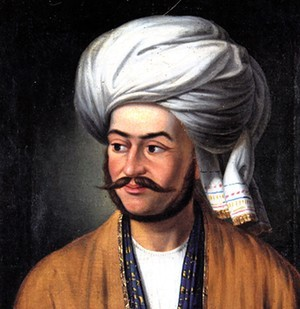 <p class='defimage'>LA portrait of Ivan (Jan) Vitkevich dressed in traditional Central Asian attire</p><p class='credits'>Wikicommons</p> <p class='texte'><b>Le Lieutenant Vitkevich</b><br> À l'âge de 17 ans, Jan Vitkevich, fils d'aristocrates lithuaniens, est conscrit par l’armée russe et envoyé en Sibérie, pour avoir combattu en Pologne. Là, il étudie pendant plusieurs années les langues de l’Asie Centrale et attire l’attention des officiers stationnés à Orenburg.  Il est éventuellement assigné au Général Perovsky, commandant en chef à Orenburg<sup>1</sup>.  <br>Vitkevich possède des connaissances sur l’Asie qui surpassent celles de tous les auitres officiers. Il semblerait que, lors d'un voyage entre Boukhara et le Kazakhstan, Vitkevich aurait rencontré un émissaire de Dost Mahommed Khan en route vers la Russie.  Vitkevich l'accompagne jusqu'à Orenburg et, de là, vers St-Peterbsourg, lui servant d'interprète et obtenant des informations précieuses pour le gouvernement russe<sup>2</sup>.  Ainsi, il devient naturellement l'émissaire du Tsar qui, en 1837, l'envoie en mission en Afghanistan<sup>3</sup> où il doit nouer des relations avec les dirigeants afghans, notamment Dost Mohammed Khan.  Malgré une réception plutôt froide, il y parviendra éventuellement d’autant plus que les Anglais, à Calcutta, ne sont pas très partisans de l’Amir, même si le Capitaine Burnes, sur place à Kaboul, le considère comme un bon choix de chef pour l’Afghanistan. <br>Hormis l’Amir, Vitkevich rencontre, lors de son voyage, rencontra le chef de Candahar.  Dans les deux cas, il obtient l’appui des Afghans pour la prise d’Hérat<sup>4</sup>.<br>Vitkevich passe à Téhéran au début de 1839 avant de retourner à St-Pétersbourg.  Selon les compte-rendus, il y est soit reçu avec honneur, son titre d'aristocrate restauré ou tout à fait ignoré, le ministre Nesselrode refusant de le rencontrer et affirmant ne pas le connaître.  La seconde version s'expliquerait par le fait que le siège d'Hérat et le rôle qu'y a joué le comte Simonich a causé une catastrophe diplomatique en Europe, notamment entre la Russie et l’Angleterre de sorte que Comte Simonich et, par association, Vitkevich, en paient le prix<sup>5</sup>. Selon la version, Vitkevich aurait été assassiné ou se serait suicidé peu de temps après.  Il a été retrouvé avec une balle dans la tête, ses papiers et notes brûlées auprès de lui<sup>3-5</sup>.<br><br>1. Hopkirk, P. <i>The Great Game: On Secret Service in High Asia</i>, London, John Murray Publisher, revised ed. 2006 [1990], Chapitre 13: The Mysterious Vitkevich, en ligne: <a href='https://erenow.net/common/thegreatgamepeterhopkirk/16.php' target='_blank'>https://erenow.net/common/thegreatgamepeterhopkirk/16.php</a> <br>2.  Kamalakaran, A. <a href='https://www.rbth.com/arts/2016/12/03/how-a-russian-spy-outfoxed-the-british-in-19th-century-afghanistan_652865' target='_blank'>'How a Russian spy outfoxed the British in 19th century Afghanistan'</a> dans <i>Russia Beyond</i>, consulté le 3 février 2020.<br>3. Hopkirk, P. <i>The Great Game...</i>, <a href='https://erenow.net/common/thegreatgamepeterhopkirk/16.php' target='_blank'>Chapitre 13: The Mysterious Vitkevich</a> <br>4. Lal, Mohan. <a href='https://dl.wdl.org/17705/service/17705_1.pdf' target='_blank'><i>Life of the Amir Dost Mohammed Khan</i>. Vol. 1</a>, London, Longman, Brown, Green and Longmans, 1846, pp. 334-340.<br>5. Hopkirk, P. <i>The Great Game: On Secret Service in High Asia</i>, London, John Murray Publisher, revised ed. 2006 [1990], Chapitre 14: Hero of Herat, en ligne: <a href='https://erenow.net/common/thegreatgamepeterhopkirk/17.php' target='_blank'>https://erenow.net/common/thegreatgamepeterhopkirk/17.php</a>  </p> <p class='titreArchive'>Reports by the military agent in Persia lieutenant-colonel Blaramberg to Minister of Military Affairs Chernyshev A.N. on the military operations of the Persians against Herat and on intervention of the English in internal affairs of Afghanistan and on economical and political situation of Persia<span class='date'> 1839</span> <span class='agent'>Blaramberg</span> <span class='archive'>RGVIA F446 Opis 1 delo 22-3</span/></p> <p class='auteur'>Camille Routhier</p><em> Viktievich, Afghanistan, 1838, 1839</em> ");
    //TehranRou.addTo(myMap)
    TehranRou.addTo(renseignementGroupe)

    var LahoreRou = L.marker([31.5497, 74.3436], {title: 'Lahore', icon:Diploicon, riseOnHover : true, riseOffset: 999});
    LahoreRou.bindPopup("<p class='titre'>Lahore, capitale du Punjab et de l'Empire Sikh de Ranjit Singh</p>  <p class='defimage'>Le Maharaja Ranjit Singh</p><p class='credits'><a href='https://commons.wikimedia.org/wiki/File:Posthumous_portrait_of_Ranjit_Singh.jpg' target='_blank'>Wikicommons</a></p> <p class='texte'><b>Le Maharaja Ranjit Singh</b><br>Ranjit Singh est un habile guerrier et politicien Sikh qui se déclare Maharaja de l’Empire Sikh en 1801, après avoir conquis Lahore (1799). Il entreprit dès lors la réunion des misuls (clans) Sikh du Punjab. En quelques années, l’Empire est bien établi et le Maharaja entreprend d’étendre son influence dans les contrées Afghanes, conquérants traditionnels des clans du Punjab. Il acquiert ainsi son surnom de <i>Lion du Punjab</i><sup>1</sup>.<br>Il réunit dans ses armées et dans son gouvernement des hommes de toutes religions, incluant des musulmans et des chrétiens<sup>1</sup>.<br>Dès 1809, les Anglais, inquiets d’une possible tentative d’intrusion des Français au Punjab et préoccupés par les velléités d’expansion à l’est du Maharaja envoie M. Metcalfe (qui sera plus tard Lord Metcalfe, gouverneur du Canada) pour entreprendre des négociations.  Celles-ci se concluent finalement par un traité selon lequel Ranjit Singh conserve tous les territoires à l’ouest de la rivière Sutlej et quelques régions habitées par les Sikhs à l’ouest qui demeure autrement sous contrôle des Britanniques<sup>2</sup>.<br>Cette alliance avec les Anglais basée sur un principe de respect commun et d'interférence minimale perdure jusqu’à la mort du Maharaja en 1839. Entre-temps, Ranjit Singh arrache plusieurs lieux aux musulmans incluant Multan, Attock and Peshawar.  Cette dernière ville, en particulier, reste un sujet de discorde entre le Maharaja et Dost Mohammed Khan jusqu’à la fin<sup>3</sup> et créera une incompatibilité entre les Anglais et l’Amir<sup>4</sup>, prévenant ainsi une possible alliance entre les deux.<br>En 1838, Ranjit Singh prend part à une entente tripartite avec les Anglais et le Shah Shuja que ces derniers visent à ré-établir sur le trône de Kaboul.  Ce traité inclut, entre autres, une cession totale de plusieurs territoires afghans au Maharaja, dont la ville de Peshawar, en plus de plusieurs clauses de non-agression et d'assistance mutuelle.<sup>5</sup><br>Une expédition vers Kaboul passe nécessairement par le Punjab et ne peut être réalisée sans son accord.  Il a une longue histoire d’hostilité avec Dost Mohammed Khan de sorte que le Maharaja ne s’y oppose pas mais, homme avisé, il refuse d’y envoyer des troupes (ce que les Anglais espéraient de lui), considérant l’aventure hasardeuse<sup>6</sup>.  Par ailleurs, le Maharaja est vieillissant et pas dans la meilleure santé, il mourra d’ailleurs peu après.  L’Empire Sikh ne lui survivra que très peu de temps.<br><br>1.<a href='https://www.britannica.com/biography/Ranjit-Singh-Sikh-maharaja' target='_blank'>Ranjit Singh, Encyclopeadia Britannica</a>.<br>2. Prinsep, H.T. <a href='https://play.google.com/store/books/details?id=2yO3iqjEdOcC&hl=en' target='_blank'>History of the Punjab</a>, vol. 1, pp. 291-292, London, W.H. Allen and Co. 1846<br>3. The Great Game: On Secret Service in High Asia</i>, London, John Murray Publisher, revised ed. 2006 [1990], <a href='https://erenow.net/common/thegreatgamepeterhopkirk/16.php' target='_blank'>Chapitre 13: The Mysterious Vitkevich</a><br>4. Prinsep, H.T. <a href='https://play.google.com/store/books/details?id=2yO3iqjEdOcC&hl=en' target='_blank'>History of the Punjab</a>, vol. 2, pp. 128-143, London, W.H. Allen and Co. 1846<br>5. Lal, Mohan. <a href='https://dl.wdl.org/17705/service/17705_1.pdf' target='_blank'><i>Life of the Amir Dost Mohammed Khan</i>. Vol. 1</a>, London, Longman, Brown, Green and Longmans, 1846, pp. 372-378.<br>6. Hopkirk, P. <i>The Great Game: On Secret Service in High Asia</i>, London, John Murray Publisher, revised ed. 2006 [1990], Chapitre 15: The Kingmakers, en ligne: <a href='https://erenow.net/common/thegreatgamepeterhopkirk/18.php' target='_blank'>https://erenow.net/common/thegreatgamepeterhopkirk/18.php</a></p><p class='titreArchive'>Reports by the military agent in Persia lieutenant-colonel Blaramberg to Minister of Military Affairs Chernyshev A.N. on the military operations of the Persians against Herat and on intervention of the English in internal affairs of Afghanistan and on economical and political situation of Persia<span class='date'> 1839</span> <span class='agent'>Blaramberg</span> <span class='archive'>RGVIA F446 Opis 1 delo 22-3</span/></p> <p class='auteur'>Camille Routhier</p>");
    LahoreRou.addTo(myMap)
    LahoreRou.addTo(DiplomatieGroupe)

    var LodianaRou = L.marker([30.9100, 75.8500], {title: 'Lodiana', icon:Diploicon, riseOnHover : true, riseOffset: 999});
    LodianaRou.bindPopup("<p class='titre'>Lodiana: Ville d'exil du Shah Shuja</p>  <p class='defimage'>Shah Shuja Durrani</p><p class='credits'>Wikicommons</p> <p class='texte'><b>Shah Shuja</b><br>Le Shah Shuja, après avoir été gouverneur de Hérat et Peshawar entre 1798-1801, see déclare lui-même chef de l’Afghanistan en 1801 mais cela ne se réalise qu’en 1803 alors qu’il s’empare de Kabul.<br>En 1809, il rencontre Montstuart Elphinstone, émissaire de la Compagnie des Indes Britanniques, à Peshawar, sa capitale hivernale.  Deux mois plus tard, il signe un traité avec les Britanniques.  Les Britanniques allèrent de l’avant avec la signature du traité malgré les informations leur parvenant que la position du Shah était précaire et que son demi-frère, Mahmoud, avait lui-même approché les Anglais à Delhi<sup>1</sup>.  De ce fait, ce dernier renversa Shah Shuja et s’empara du trône de Kaboul la même année.<br>Pendant les 7 années suivantes, Shuja séjourna, avec plus ou moins de liberté, à Attock (1811-1812), au Kashmir (1812-1813) puis à Lahore, entre 1813 et 1815<sup>2</sup>.  Au cours de son séjour Lahore, le Maharaja Ranjit Singh se plut à obtenir de lui un très fameux diamant <i>koh-i-noor</i> (colline de lumière), l’une des plus gros diamants connus<sup>3</sup>.<br>En 1816, Shah Shuja arrive à Lodiana où il devient l’hôte des Britanniques qui, malgré certaines réticences, l’accommodent en raison de leur accord, du fait qu’il est de sang ‘royal’ et dans l’éventualité où il pourrait être utile.  Il y restera pendant 23 ans à quelques exceptions près, notamment une tentative de reconquérir Kaboul (1832-1834) au cours de laquelle il est totalement défait par Dost Mohammed Khan à Kandahar<sup>4-5</sup>.<br>En 1839, Shah Shuja sera l’homme choisi par certains Britanniques, dont Lord Auckland, gouverneur-général des Indes, Sir William Macnaghten, et Claude Wade, agent politique stationné à Lodiana, et malgré l’opposition de Sir Alexander Burnes et Sir John Macneil, ambassadeur à Téhéran<sup>5</sup>, qui le considèrent inapte et peu aimé des Afghans.<br>La fin du siège d’Herat, suite aux menaces des Britanniques d’envahir la Perse pendant que le Shah est autrement occupé, remet en question l’imposition de Shah Shuja à Kaboul mais Lord Auckland et ses proches conseillers ne sont pas prêts à faire confiance à Dost Mohammed et il est décidé que l’opération se déroulera comme prévue.  Shah Shuja sera ré-installé sur le trône de Kaboul<sup>6</sup> mais il paiera ce retour de sa vie quelques années plus tard.  Les Britanniques, aussi, paieront ce choix très cher.<br><br>1.Hanifi, S.M. ‘Shah Shuja’s ‘Hidden History’ and its Implications for the Historiography of Afghanistan’, <i>South Asia Multidisciplinary Academic Journal</i>, 2012, en ligne: <a href='https://journals.openedition.org/samaj/3384' target='_blank'>https://journals.openedition.org/samaj/3384</a>.<br>2. <i>ibid</i><br>3. Prinsep, H.T. <a href='https://play.google.com/store/books/details?id=2yO3iqjEdOcC&hl=en' target='_blank'>History of the Punjab</a>, vol. 2, pp. 11-15, London, W.H. Allen and Co. 1846<br>4. Hanifi. S.M. 'Shah Shuja's...'<br>5. Lal, Mohan. <a href='https://dl.wdl.org/17705/service/17705_1.pdf' target='_blank'><i>Life of the Amir Dost Mohammed Khan</i>. Vol. 1</a>, London, Longman, Brown, Green and Longmans, 1846, pp. 362-368.<br>6. Hopkirk, P. <i>The Great Game: On Secret Service in High Asia</i>, London, John Murray Publisher, revised ed. 2006 [1990], Chapitre 15: The Kingmakers, en ligne: <a href='https://erenow.net/common/thegreatgamepeterhopkirk/18.php' target='_blank'>https://erenow.net/common/thegreatgamepeterhopkirk/18.php</a></p><p class='titreArchive'>Reports by the military agent in Persia lieutenant-colonel Blaramberg to Minister of Military Affairs Chernyshev A.N. on the military operations of the Persians against Herat and on intervention of the English in internal affairs of Afghanistan and on economical and political situation of Persia<span class='date'> 1839</span> <span class='agent'>Blaramberg</span> <span class='archive'>RGVIA F446 Opis 1 delo 22-3</span/></p> <p class='auteur'>Camille Routhier</p>");
    LodianaRou.addTo(myMap)
    LodianaRou.addTo(DiplomatieGroupe)

    var KabulRou = L.marker([34.5000, 69.1700], {title: 'Kabul', icon:Diploicon, riseOnHover : true, riseOffset: 999});
    KabulRou.bindPopup("<p class='titre'>Amir Dost Mohammed Khan, chef de Kaboul</p>  <p class='defimage'>Dost Mohammed Khan</p><p class='credits'><a href='By Artist unknown; taken from a book by E. H. Nolan; The Illustrated History of the British Empire in India and the East. Volume 2. 1860. Publisher: James S. Virtue (18 May 1829 – 29 March 1892), steel engraving, from a drawing by an Indian artist. Steel engraving by George J. Stodart (active 1884-1892), Engraver - [1], Public Domain, https://commons.wikimedia.org/w/index.php?curid=78494778' target='_blank'>Wikicommons</a></p> <p class='texte'><b>Amir Dost Mohammed Khan</b><br>Dost Mahomed Khan est né en 1793, 20e enfant de Payinda Khan, chef de la tribu des Barakzai à l’emploi des Durrani qui dirigent alors l’Afghanistan.  Dost Mahommed Khan est orphelin de père à un très jeune âge de sorte que son frère aîné, Fateh Khan, devient chef des Barakzai et s’assure que Dost Mohammed soit proprement élevé.  Les deux frères demeurent très proches et contribuent, en 1809, à ré-instituter Mahmoud Shah Duranni comme chef de Kabul et très généralement de l’Afghanistan en remplacement de son frère Shah Shuja<sup>1</sup>.<br>Mahmoud Shah perd la faveur des Barakzai lorsqu’il fait assassiner Fateh Khan en 1818.  Les représailles délogent Mahmoud Shah qui se réfugie à Hérat.  Dost Mohammed Khan hérite de la forteresse de Ghazni suite à cet événement mais il conquiert Kaboul à son profit en 1826 et y reste jusqu’en 1839, alors que les Britanniques y installent Shah Shuja<sup>1</sup>.<br>Très tôt, Dost Mohammed entre en conflit avec le Maharaha Sikh Ranjit Singh et les hostilités entre les deux leaders ne cessent qu’à la mort du second.  Les ennemis s’affrontent à de maintes reprises, notamment à Peshawar<sup>2</sup>.<br>L’un des premiers contacts de Dost Mohammed avec les Européens survient lors du passage à Kaboul du Lieutenant Alexander Burnes, en 1832.  Les deux hommes s’apprécient mutuellement mais il est vite apparent que les intérêts de l'Amir entrent en conflit avec ceux de l’Empire Britannique, notamment à cause de l'hostilité qu’il entretient pour Ranjit Singh, un allié important des Anglais<sup>3</sup>.  Il n’en reste pas moins que Burnes considère Dost Mohammed comme un allié potentiel intéressant (tandis que Conolly, par exemple, favorise Kharam Shah, chef de la ville d’Herat<sup>4</sup>).<br>Burnes revient à Kaboul en novembre 1836 afin d’y établir une mission permanente.  C’est pendant ce séjour qu’il y croisera, en 1838, le lieutenant Vitkevich qui obtiendra rapidement l’oreille de Dost Mohammed parce qu’à ce moment, il est apparent à ce dernier que les Britanniques sont insensibles à ses ambitions, notamment en ce qui concerne Peshawar<sup>5</sup>.  Il espère alors qu’une alliance avec les Russes lui permettra d’arriver à ses fins.  Les Russes, qui y trouvent leur compte, obtiennent de même le support de Dost Mohammed pour prendre la ville d’Herat qui est en siège à ce moment<sup>6</sup>.<br>Ultimement, c’est avec les Britanniques que Dost Mohammed trouvera une alliance durable mais cela n’arrive qu’après la guerre anglo-afghane, tragique, de 1839-42.<br><br>1. Lal, Mohan. <a href='https://dl.wdl.org/17705/service/17705_1.pdf' target='_blank'><i>Life of the Amir Dost Mohammed Khan</i>. Vol. 1</a>, London, Longman, Brown, Green and Longmans, 1846.<br>2. Prinsep, H.T. <a href='https://play.google.com/store/books/details?id=2yO3iqjEdOcC&hl=en' target='_blank'>History of the Punjab</a>, London, W.H. Allen and Co. 1846<i>ibid</i><br>3. Hopkirk, P. <i>The Great Game: On Secret Service in High Asia</i>, London, John Murray Publisher, revised ed. 2006 [1990], Chapitre 11: Enter 'Boukhara' Burnes, en ligne: <a href='https://erenow.net/common/thegreatgamepeterhopkirk/14.php' target='_blank'>https://erenow.net/common/thegreatgamepeterhopkirk/14.php</a><br>4. Hopkirk, P. <i>The Great Game: On Secret Service in High Asia</i>, London, John Murray Publisher, revised ed. 2006 [1990], Chapitre 10: The Great Game, en ligne: <a href='https://www.branchcollective.org/?ps_articles=antoinette-burton-on-the-first-anglo-afghan-war-1839-42-spectacle-of-disaster' target='_blank'>'On the First Anglo-Afghan War, 1839-42: Spectacle of Disaster'</a><br>5. Burton, A. 'On the First Anglo-Afghan War, 1839-42: Spectacle of Disaster', <i>Branch Collective</i>, en ligne: <a href='https://www.branchcollective.org/?ps_articles=antoinette-burton-on-the-first-anglo-afghan-war-1839-42-spectacle-of-disaster' target='_blank'>hhttps://www.branchcollective.org/?ps_articles=antoinette-burton-on-the-first-anglo-afghan-war-1839-42-spectacle-of-disaster</a><br>6. Hopkirk, P. <i>The Great Game: On Secret Service in High Asia</i>, London, John Murray Publisher, revised ed. 2006 [1990], Chapitre 13: The Mysterious Vitkevich, en ligne: <a href='https://erenow.net/common/thegreatgamepeterhopkirk/16.php' target='_blank'>https://erenow.net/common/thegreatgamepeterhopkirk/16.php</a></p><p class='titreArchive'>Reports by the military agent in Persia lieutenant-colonel Blaramberg to Minister of Military Affairs Chernyshev A.N. on the military operations of the Persians against Herat and on intervention of the English in internal affairs of Afghanistan and on economical and political situation of Persia<span class='date'> 1839</span> <span class='agent'>Blaramberg</span> <span class='archive'>RGVIA F446 Opis 1 delo 22-3</span/></p> <p class='auteur'>Camille Routhier</p>");
    KabulRou.addTo(myMap)
    KabulRou.addTo(DiplomatieGroupe)

    var HeratLam = L.marker([34.3508, 62.2164], {title: 'Le Grand Jeu et Hérat', icon:Diploicon, riseOnHover : true, riseOffset: 999});
    HeratLam.bindPopup("<p class='titre'>Le Grand Jeu et Hérat</p>  <p class='defImage'>Vue de la citadelle d'Hérat en 1879</p> <p class='credits'>Wikicommons</p><p class='texte'>Au XIX<sup>e</sup> siècle, le Grand Jeu entre la Russie et l\'Angleterre place la Perse et l\'Afghanistan au centre d\'un conflit entre puissances européennes. L\’enjeu repose dans le contrôle du Moyen Orient: pour la Russie, cela la rapproche de l\’Inde britannique; pour les Anglais, il faut conserver leur influence en Afghanistan, qui constitue une barrière aux envies d’expansion russes. En ce qui concerne les Perses et les Afghans, ils ne sont pratiquement que des pantins entre les mains des Européens, qui placent des agents sur le territoire afin d\’influencer les décisions en leur faveur et garder un oeil sur la situation, qui devient de plus en plus tendue au fil du XIX<sup>e</sup> siècle.<br>Une ville particulière constitue un enjeu de taille dans ce contexte géopolitique: Hérat. Plaque tournante du commerce provenant de l\’Inde, elle est également caractérisée par des terres fertiles, une abondance de ressources hydrographiques ainsi que des fortifications efficaces. Dès 1833, le Prince perse Abbas Mirza a pour projet de lancer une attaque contre la ville, dans le but de la reprendre aux Afghans, pour réaliser les souhaits géostratégiques de la Russie. En effet, celle-ci applique une politique expansionniste contre les Khanats du Turkistan et voit la possession d\’Hérat par les Perses comme un obstacle aux ambitions britanniques en Afghanistan. De plus, si Mirza est occupé à l’Est, il ne pense pas à reprendre les provinces perdues aux mains de la Russie lors de la dernière guerre russo-perse de 1826-1828. Cependant, plusieurs circonstances, dont le décès de son père et sa propre maladie, font en sorte qu’Abbas Mirza ne prend pas Hérat.<br>En juillet 1837, les Anglais, qui craignent une révolte anti-britannique en Afghanistan, tentent d\’influencer le Shah Mohamed pour le dissuader de lancer une marche contre Hérat. Cette tentative diplomatique échoue et le Shah ordonne un rassemblement des troupes, puis marche vers la ville en septembre. Un an plus tard, le siège de la ville prend fin lorsque le Shah se retire; aucun des deux camps ne fait d\’avancée significative. On pourrait ainsi croire que les Russes, devant cet échec, délaissent leur intérêt pour Hérat. Les sources d\’archives ne prouvent cependant pas le contraire. Dans deux lettres écrites par le Lieutenant-Colonel Blaramberg et envoyées au Ministre des Affaires Militaires russe, l’agent fait état de la situation socio-politique de la Perse et rend notamment compte de la situation à Hérat. Toujours détenue par les Afghans dirigés par Yar-Mohamed-Khan, la ville reçoit le soutien de quatre bataillons anglo-indiens en août 1839. D’ailleurs, les relations diplomatiques entre la Perse et la Grande-Bretagne sont rompues. Outre ces informations, Blaramberg rapporte également que le pays est dans un état « alarmant ». En effet, il parle de troubles dans au moins quatre villes importantes, dont les plus graves seraient à Chiraz. D’ailleurs, Blaramberg ne cache pas son mépris des Perses: il mentionne que le premier Ministre croit à tord bien gouverner le pays et que « vouloir lui faire entendre raison à cet égard serait vouloir parler de couleurs à un aveugle ». En septembre 1839, les troupes Anglo-Indiennes ont apparemment quitté Hérat, mais des officiers anglais ont été laissés sur place. Au nombre de trois, ils accomplissent plusieurs tâches d’importance: réparation et amélioration des fortifications de la ville, perception de l\’impôt et distribution d\’argent parmi le peuple, et finalement veiller à ce que Yar-Mohamed-Khan n\’oppresse pas le peuple et ne commette pas d\’injustice. L\’Afghanistan semble donc carrément gouvernée par l\’Angleterre. Mais la plus grande partie de cette deuxième lettre est consacrée aux troupes perses. Blaramberg assiste effectivement à une revue des troupes du Shah: dix cadres de bataillons, dont sept réguliers et trois constitués par la milice Kadjare d\’Asterabad. Le tout monte à environ 3 500 hommes. L\’agent rapporte « la nullité de l\’armée persane » et le « mauvais état des troupes ». D\’ailleurs, les troupes n\’étant pas payées, la plupart des hommes de ces bataillons sont retournés chez eux. En effet, l\’entretien des troupes est laissé aux gouverneurs des provinces, mais ceux-ci encaissent les sommes pour leur profit personnel. Finalement, Blaramberg mentionne que les affaires entre la Perse et la Grande-Bretagne s\’arrangent à l\’amiable et que le gouvernement perse s\’humilie grandement en accédant à toutes les demandes et exigences du gouvernement britannique. Quelles sont ces demandes? Blaramberg ne semble pas avoir réussi à mettre la main dessus…</p> <p class='titreArchive'>«Lettres du Lieutenant-Colonel Blaramberg au Ministre des Affaires Militaires» <span class='date'>1839</span> <span class='agent'>Lieutenant-Colonel Blaramberg</span> <span class='archive'>RGVIA. F. 446, op. 1, d. 22_10 et 22_11.</span/></p> <p class='auteur'>Catherine Lampron</p><p class='ref'>Abbas Amanat. « Herat. VI. The Herat Question », <i>Encyclopedia Iranica</i>, 2012, http://www.iranicaonline.org/articles/herat-vi.</p><p class='tag'> <em>Perse</em><em>Herat</em><em>Afghanistan</em><em>Angleterre</em>");
    HeratLam.addTo(myMap)
    HeratLam.addTo(DiplomatieGroupe)

    var MesquinBel = L.marker([32.3908, 51.4028], {title: 'Mission Gardane', icon:Econoicon, riseOnHover : true, riseOffset: 999});
    MesquinBel.bindPopup("<p class='titre'>Misère et Mesquinerie</p>  <p class='defImage'>Représentation d’Ispahan au XIXème siècle</p> <p class='credits'>Wikicommons</p><p class='texte'> La Perse, après le désastre qu\’avait été le siège d\’Hérat ou les troupes perses furent forcées de délaisser les murs de la ville bredouilles, plongeait toujours plus rapidement dans une période d\’instabilité économique et politique grave. À l\’humiliation du Shah en Afghanistan s\’ajoutaient la perte des territoires azéris et, ce faisant, de la présence iranienne en Transcaucasie.  La Perse, autrefois l\’une des puissances dominantes du Moyen-Orient, ne constituait maintenant que l\’ombre d\’elle-même. </br> Prise entre les intérêts britanniques en Inde et en Afghanistan ainsi que les ambitions russes en Asie Centrale, la Perse se trouve à la merci des puissances occidentales et son économie en souffre à l\’instar de la qualité de vie de sa population. Lointaines sont les richesses de l\’Orient décrites par Marco Polo et tant désirées des explorateurs européens. « <i>(…) à cette occasion nous avons pu nous convaincre de la misère et de la mesquinerie qui sont le type de la cour persane d\’aujourd\’hui. Les soldats d\’un bataillon de la garde rangés aux portes de la ville étaient habillés en vieux uniformes de couleurs différentes (…) leurs pantalons en toile n\’avaient pas été blanchis depuis bien longtemps et leurs buffleteries se trouvaient dans un état pitoyable. </i> » À cela s\’ajoute la mauvaise santé du Shah qui est atteint de goutte et d\’embonpoint selon les dignitaires européens qui courtisent sa faveur. La nation est également, selon ces mêmes sources, plongée dans la corruption alors que les gouverneurs des provinces intérieurs détournent les fonds publics « <i> (…) enfin pour donner une idée à votre Excellence de quelle manière on balance les comptes, il suffit de faire mention des procédés du gouverneur d\’Ispahan qui a eu le front de mettre en compte 720 millions de roubles qu\’il avait dépensés pour graisser la patte aux personnes qui entourent le Shah afin de le soutenir auprès de sa Majesté et lui faire garder son gouvernement.</i> » </br> Le revers du fantasme orientaliste se laisse deviner par le contenu des lettres de ces mêmes dignitaires qui plaignent la disparité entre les grands récits de voyage d\’antan et la réalité qui leur est présentée. On perçoit sans mal cette même attitude civilisatrice qui autojustifie les ambitions coloniales russes et britanniques en Asie. Les puissances locales sont forcées à signer des ententes commerciales désavantageuses qui favorisent l\’une ou l\’autre des participantes du Grand Jeu.p> <p class='titreArchive'>« Reports by the military agent in Persia lieutenant-colonel Blaramberg to Minister of Military Affairs Chernyshev A.N. on the military operations of the Persians against Herat and on intervention of the English in internal affairs of Afghanistan and on economical and political situation of Persia. » <span class='date'>1839</span> <span class='agent'>Blaramberg</span> <span class='archive'>TsGIA. F. 446, op. 1, d. 22_5</span/></p> <p class='auteur'>Charles-Étienne Belleau</p><p class='ref'>VOLODARSKY, Mikhail. « Persia’s Foreign Policy between the Two Herat Crises, 1831-56 ». Middle Eastern Studies, vol. 21, n° 2, 1985, p. 111‑151.</p><p class='tag'> <em>Perse</em>");
    //MesquinBel.addTo(myMap)
    MesquinBel.addTo(economieGroupe);

    var AfghanistanLorGeoJSON = L.geoJSON(Afghanistan, {color: '#7986ffff', opacity: 1, fillOpacity: 0.55});
    AfghanistanLorGeoJSON.bindPopup("<p class='titre'>Le siège d'Hérat dans le Grand Jeu</p>  <p class='defImage'>Attaque anglaise sur le fort de Ghazni durant la première guerre anglo-afghane (c.1839)</p> <p class='credits'> Wikimedia Commons </p><p class='texte'>Dans une correspondance adressée au Ministre des Affaires militaires de la Russie datée du 27 février 1839 (calendrier grégorien), l\'agent de renseignement Ivan Blaramberg rapporte plusieurs informations venues à ses oreilles concernant l\'actualité entourant le territoire de l\'Afghanistan. Pour les Russes, ce type d\'informations est particulièrement important dans le contexte du Grand Jeu, soit, pour synthétiser, la rivalité entretenue entre les empires britannique et russe au Moyen-Orient. En effet, puisque la Russie contrôle <i>grosso modo</i> le nord-ouest de la Perse et la Grande-Bretagne l\'est (Indôstan), ce qui se trouve entre les deux devient une zone d\'influence extrêmement contestée entre les deux puissances, surtout en considérant la montée en popularité du colonialisme au XIX<sup>e</sup> siècle. La situation d\'<a href='https://can01.safelinks.protection.outlook.com/?url=http%3A%2F%2Fwww.iranicaonline.org%2Farticles%2Fherat-vi&amp;data=02%7C01%7CTristan.Landry%40USherbrooke.ca%7Cde2fbe8c11c24776321b08d7a9950172%7C3a5a8744593545f99423b32c3a5de082%7C0%7C0%7C637164329742344068&amp;sdata=UDWn2ErWxM0otxKqWeWCagS2wijAt4GTa7nNZSV%2FFBU%3D&amp;reserved=0' target=' blank'>Hérat</a> est d\'autant plus complexe qu\'à l\'époque, l\'Afghanistan est fortement décentralisé et est plutôt composé de villes semi-indépendantes, dont Hérat fait d\'ailleurs partie.<br/><br/> Les Russes avaient doublement intérêt à ce que la Perse assiège la ville. En premier lieu, son attention était ainsi détournée de la perte de ses provinces transcaucasiennes aux mains de la Russie. D\'autre part, une victoire perse aurait permis de mettre un frein à l\'expansionnisme anglais dans la région, ce qui inquiète les autorités russes. Blaramberg, dans son rapport, revient d\'ailleurs à quelques moments sur les avancées et progrès des troupes anglaises d\'Indôstan. Pourtant, Blaramberg rapporte un fait pour le moins curieux, qui, s\'il est vrai, démontre l\'absurdité que pouvaient parfois arborer les relations diplomatiques : « Pour ce qui concerne les Hératiens, M. le Ministre plénipotentiaire vient de recevoir une lettre de Chir-Mahomed-Khan frère de Yar Mahomed-Khan, dans laquelle on offre de se soumettre à la Perse, en ajoutant que les chefs de Hérat se sont dédits de l\'alliance anglaise, et l\'on prie Monsieur[?] le Ministre d\'envoyer un employé de distinction à Hérat pour traiter relativement à ce sujet; or comme cette lettre n\'a pas été émise par Kamran Mirza, ni par son ministre Yar Mahomed-Khan, mais par une personne secondaire. M. le Général de Duhamel n\'y donnera aucune suite<sup>1</sup>. »<br/><br/>Malheureusement, le rapport de Blaramberg ne contient pas d\'informations véritablement utiles au sujet du siège d\'Hérat et est essentiellement composé de rumeurs et de ouï-dire. On dirait qu\'il ne cherche qu\'à confirmer les inquiétudes du gouvernement central de Russie, sans vraiment apporter de nouvelles pertinentes.  </p> <p class='titreArchive'><i>Reports by the military agent in Persia lieutenant-colonel Blaramberg to Minister of Military Affairs Chernyshev A.N. on the military operations of the Persians against Herat and on intervention of the English in internal affairs of Afghanistan and on economical and political situation of Persia.</i> <span class='date'>1839</span> <span class='agent'>Ivan Fedorovitch Blaramberg</span> <span class='archive'>RGVIA. F. 446, op. 1, d. 22, l. 5-6 v. et 35-37.</span/></p> <p class='auteur'>Thomas Lord</p><p class='ref'><sup>1</sup> RGVIA. F. 446, op. 1, d. 22, l. 6</p><p class='tag'> <!--<em>Afghanistan</em>--> <!--<em>Grand Jeu</em>--> <!--<em>Hérat</em>-->");
    //AfghanistanLorGeoJSON.addTo(myMap)
    AfghanistanLorGeoJSON.addTo(renseignementGroupe)

    var AraxeLorGeoJSON = L.geoJSON(Araxe, {color: '#6df6ffff', opacity: 1, fillOpacity: 0.55});
    AraxeLorGeoJSON.bindPopup("<p class='titre'>La rivière Araxe comme frontière naturelle</p>  <p class='defImage'>Camp perse sur les rives de l\'Araxe (1854)</p>  <p class='credits'> De Agostini, Biblioteca Ambrosiana </p><p class='texte'>De nos jours, la <a href='https://can01.safelinks.protection.outlook.com/?url=http%3A%2F%2Fwww.iranicaonline.org%2Farticles%2Faraxes-river&amp;data=02%7C01%7CTristan.Landry%40USherbrooke.ca%7Cde2fbe8c11c24776321b08d7a9950172%7C3a5a8744593545f99423b32c3a5de082%7C0%7C0%7C637164329742354064&amp;sdata=yb%2F7G%2FioMp%2Fj%2BdGtBDjygCJgfQ%2Fb%2BXkwiDixUb6U7KM%3D&amp;reserved=0' target=' blank'>rivière Araxe</a> touche à pas moins de quatre pays distincts, soit l\'Azerbaïdjan, l\'Iran, l\'Arménie et la Turquie. Avec une longueur totale de 1 072 km et de par son emplacement géographique avantageux, l\'Araxe fait office de voie commerciale importante durant une bonne partie de l\'histoire, notamment pour acheminer des produits jusqu\'aux terres byzantines, ou encore pour le commerce entourant la mer Caspienne. Au XIX<sup>e</sup> siècle, la rivière acquiert une importance toute nouvelle, puisqu\'elle devient éventuellement une frontière naturelle entre l\'empire russe au nord et la Perse au sud. Cette frontière devient officielle à partir des traités de Golestan, en 1813, et de Turkmantchaï, en 1828, soit les deux traités mettant fin aux deux guerres russo-persanes de la première moitié du siècle.<br/><br/>Pour ne pas risquer une tentative de reprise des territoires perdus de la part du Shah de Perse, la Russie use de ses relations diplomatiques pour concentrer les intérêts de ce dernier sur l\'Afghanistan et le risque d\'une influence anglaise grandissante en Orient. Cette stratégie porte finalement fruit et se concrétise par la succession de sièges que subira Hérat dans les années 1830. Si ceux-ci se concluent tous par un échec, la Russie réussit néanmoins à conserver les khanats dérobés à la Perse quelques années plus tôt. </p> <p class='titreArchive'><i>Reports by the military agent in Persia lieutenant-colonel Blaramberg to Minister of Military Affairs Chernyshev A.N. on the military operations of the Persians against Herat and on intervention of the English in internal affairs of Afghanistan and on economical and political situation of Persia.</i> <span class='date'>1838</span> <span class='agent'>Ivan Fedorovitch Blaramberg</span> <span class='archive'>RGVIA. F. 446, op. 1, d. 22, l. 5-6 v. et 35-37.</span/></p> <p class='auteur'>Thomas Lord</p><p class='ref'></p><p class='tag'> <!--<em>Perse</em>--> <!--<em>Araxe</em>--> <!--<em>Rivière</em>--> <!--<em>Frontière</em>-->");
    //AraxeLorGeoJSON.addTo(myMap)
    AraxeLorGeoJSON.addTo(strategieGroupe)

    var TaurisLor = L.marker([38.0884, 46,2772], {title: 'Tauris', icon: religionicon, riseOnHover : true, riseOffset: 999});
    TaurisLor.bindPopup("<p class='titre'>La menace du clergé perse</p>  <p class='defImage'>Mosquée Saheb-ol-Amr (1841)</p>  <p class='credits'> Wikimedia Commons </p><p class='texte'>Une section de la source à l\'étude est particulièrement intéressante dans la mesure où Ivan Blaramberg, l\'agent de renseignement à qui l\'on doit le document, identifie le clergé perse comme un obstacle aux politiques russes, et ce, grâce à des exemples concrets en provenance de la ville de <a href='https://can01.safelinks.protection.outlook.com/?url=http%3A%2F%2Fwww.iranicaonline.org%2Farticles%2Ftabriz-05-city-in-19th-cent&amp;data=02%7C01%7CTristan.Landry%40USherbrooke.ca%7Cde2fbe8c11c24776321b08d7a9950172%7C3a5a8744593545f99423b32c3a5de082%7C0%7C0%7C637164329742354064&amp;sdata=vH8nkNQXIIo2t4SF%2B%2FwcP5WlZr9cbzvnDQoqBCGsgkI%3D&amp;reserved=0' target=' blank'>Tauris</a>. Dans une correspondance qu\'il adresse au comte de Gernicheff, Ministre russe des Affaires militaires, le 20 juillet 1839 du calendrier grégorien, il déclare ainsi à un moment : « […] le seul pouvoir réel qui existe encore en Perse est celui que possède le Clergé<sup>1</sup>. » Il conclue ce même rapport de la façon suivante : « Il est donc impossible que dans un pays où un pouvoir puissant existe à côté de celui que le Gouvernement exerce, ce dernier ne soit souvent paralysé dans ses actes de justice […]<sup>2</sup> ». Mais pourquoi ces jugements à l\'endroit du clergé perse?<br/><br/>Le premier exemple que nous fournit Blaramberg est celui d\'un Arménien, sujet russe depuis la récente annexion officielle des provinces transcaucasiennes en 1828, qui aurait « outragé la religion » d\'un Persan de Tauris<sup>3</sup>. Le cas dégénère rapidement et le Moushteid (chef du clergé perse) de la ville ne tarde pas à s\'en mêler. Selon Blaramberg, le Moushteid en question aurait alors menacé le consul que si l\'Arménien ne lui était pas livré, tous les sujets russes de la ville seraient massacrés<sup>4</sup>. Notons ici que les événements que rapporte Blaramberg n\'ont pas été observés directement par lui et qu\'il se peut fort bien qu\'il exagère quelque peu les faits. Finalement, le cas n\'aurait été résolu que lorsque l\'Arménien fut châtié sur la place publique pour satisfaire la population<sup>5</sup>.<br/><br/> Le second exemple que nous fournit Blaramberg est autrement plus politique que le premier. Puisque Tauris se trouve très près de la nouvelle frontière entre l\'empire russe et la Perse, les cas d\'extradition peuvent s\'avérer compliqués. C\'est ce qui survient lorsque les autorités russes recherchent deux Persans, sujets des provinces nouvellement acquises de la Russie, pour avoir fomenté une attaque contre la ville de Noukha. Or, une fois que ceux-ci ont traversé l\'Araxe, frontière naturelle entre l\'empire russe et la Perse, les autorités perses les capturent. Néanmoins, ils refusent de les remettre immédiatement à la Russie et facilitent même éventuellement leur évasion. Blaramberg associe ce refus de coopérer à des causes religieuses : « […] d\'après leurs lois religieuses, les Persans regardent non seulement comme une honte mais comme une impiété, que de livrer à des Chrétiens tout Musulman, quelque criminel qu\'il soit<sup>6</sup>. » Bref, Blaramberg identifie le clergé perse comme étant très puissant et influent dans la sphère politique, et en particulier dans la ville de Tauris, ce qui pose problème à cause de sa proximité avec la frontière russo-persane.  </p> <p class='titreArchive'><i>Reports by the military agent in Persia lieutenant-colonel Blaramberg to Minister of Military Affairs Chernyshev A.N. on the military operations of the Persians against Herat and on intervention of the English in internal affairs of Afghanistan and on economical and political situation of Persia.</i> <span class='date'>1838</span> <span class='agent'>Ivan Fedorovitch Blaramberg</span> <span class='archive'>RGVIA. F. 446, op. 1, d. 22, l. 5-6 v. et 35-37.</span/></p> <p class='auteur'>Thomas Lord</p><p class='ref'><sup>1</sup> RGVIA. F. 446, op. 1, d. 22, l. 36.<br/><br/><sup>2</sup> <i>Ibid.</i>, l. 36 v. et 37.<br/><br/><sup>3</sup> <i>Ibid.</i>, l. 36.<br/><br/><sup>4</sup> <i>Ibid.</i><br/><br/><sup>5</sup> <i>Ibid.</i>, l. 24.<br/><br/><sup>6</sup> <i>Ibid.</i>, l. 36 v.</p><p class='tag'> <!--<em>Perse</em>--> <!--<em>Tauris</em>--> <!--<em>Religion</em>-->");
    //TaurisLor.addTo(myMap)
    TaurisLor.addTo(religionGroupe)

    var BouchehrBou = L.geoJSON(Bouchehrkharg, {color: '#c7e07eff', opacity: 1, fillOpacity:0.55});
    BouchehrBou.bindPopup("<p class='titre'>Les limites du renseignement et l'occupation de l\'île de Kharg</p> <p class='defImage'>Portrait d\'Ivan Fedorovich Blaramberg</p> <p class='credits'>Wikicommons</p><p class='texte'>Lorsqu\’on porte une attention particulière à la correspondance entre Blaramberg et le Ministre des Affaires Militaires Chernyshev, il est possible d\’analyser la portée réelle du renseignement militaire de l\'époque. Même s\’ils sont riches en informations, ces documents sont les témoins d\’une méconnaissance de la géopolitique dans toute sa globalité. Par exemple, le lexique employé par Blaramberg sous-tend une incertitude, voire une absence de connaissances proprement dites. Par exemple, lorsqu\’il aborde l\’avancée de l\’armée anglo-indienne en Afghanistan, il souligne que ses informations proviennent « de bruits qui se sont répandus » et de la « voix du commerce ». Dans d\’autres cas, il indique qu\’il doute de la véracité de certains faits, tout en rappelant « qu\’il y a bien longtemps que nous sommes privés de nouvelles de ces contrées » (l.13 à 14 v.). Bref, l\’emploi d\’un vocabulaire nuancé prouve une forme d\’ignorance de certains aspects de la géopolitique. En revanche, il ne faut pas sombrer dans une critique virulente du travail des agents de renseignements. Ces derniers sont tout de même en mesure de collecter des renseignements précis comme le montant de différents subsides (l.13 v.) ou les forces militaires en présence (l.15 r.).</br>Un second aspect qu\’il importe de souligner est la manière dont les nouvelles sont rédigées par Blaramberg. Ces missives regroupent des bribes d\’évènements qui rendent la perception de la globalité des évènements extrêmement difficile. Dans un paragraphe il spécifie la durée d\’un voyage diplomatique du Shah, dans un autre les forces en présence sur l\’île de Kharg ainsi que des rumeurs concernant les déplacements des troupes britanniques. Le caractère décousu et anecdotique des missives de Blaramberg prouve la limite du renseignement, et ce, même si, nous l\’avons vu dans d\’autres documents, la géographie est bien étudiée. On identifie les différents types de terrain, le climat, la toponymie, les distances, etc. Au contraire, les renseignements de l\’ordre de la géopolitique manquent de clarté et tardent à être acheminés aux hauts cercles du commandement.</br>Afin de corroborer l\’idée selon laquelle le renseignement n\’est pas connaissance à laquelle on ne peut imputer aucune limite, il importe d\’aborder l\’étude qu\’a effectuée Anne Kelly Knowles. Le travail effectué par l\’historienne offre un exemple concret des limites du renseignement alors qu\’elle réinterprète <a href='http://storymaps.esri.com/stories/2013/gettysburg/' target='blank'>la Bataille de Gettysburg</a>. Dans le cadre de cette recherche, Knowles essaie de comprendre les décisions qui ont été prises par Robert Lee et ses conclusions sont frappantes. Les troupes confédérées ont été limitées par leur connaissance du champ de bataille et cette dernière couta, pour ainsi dire, la victoire au général sudiste. Cet exemple illustre à la fois l\’importance des renseignements et les limites de ce dernier. Même s\’il connaissait le terrain (il avait probablement des unités de reconnaissance, des cartes, etc.), Lee fut incapable de prédire la position des troupes unionistes faute de renseignement militaire infaillible. </br>Le lien entre le renseignement militaire russe en Perse et l\’étude de Knowles est intéressant puisqu\’il incite le chercheur à effectuer une réflexion sur les limites du renseignement militaire de l\’époque. L\’historien ne doit pas voir l\’État-major militaire comme une entité dont les connaissances sont illimitées. Bien que le renseignement offre une connaissance substantielle du territoire dans lequel il est pratiqué, il ne faut pas ignorer les vides laissés par les agents de terrains comme Blaramberg. Par exemple, lorsqu\’il écrit « qu\’un détachement de dix bataillons se dirige vers Herat (l.33 v.), il n\’est ni en mesure d\’identifier la route qu\’ils emprunteront, ni la durée de leurs déplacements. En revanche, il ne s\’agit pas ici de critiquer les capacités du renseignement russe, mais bien de nuancer le caractère indubitable qu\’on accorderait trop facilement aux informations rassemblées par les agents. </br>Cette semaine, le marqueur que j\’ai placé est en lien avec la peur grandissante des dirigeants russes qui aperçoivent les Britanniques comme une menace à leurs projets coloniaux en Asie centrale. Dans la correspondance entre Blaramberg et Chernyshev il est possible d\’observer le caractère prioritaire que les agents de renseignements accordent à la progression anglaise. Par exemple, dans les missives que Blaramberg rédige, il prévient le gouvernement que les Britanniques s\’apprêtent à prendre le contrôle de l\’île de <a href='http://www.iranicaonline.org/articles/kharg-island-01-geography' target='_blank'>Kharak</a> (aujourd\’hui Kharg) au large de la ville portuaire de <a href='http://www.iranicaonline.org/articles/bushehr-01-city' target='_blank'>Bouchehr</a>. Selon ce dernier, ils risquent de s\’y « fixer pour toujours et garder cette île comme cela eut lieu avec tant d\’autres points du globe » et par le fait même d\’ajouter « un nouvel anneau à cette immense chaîne de possessions dont les Anglais ont enlacé le globe entier » (l.14-15 v.). En parallèle, Blaramberg décrit avec minutie le péril qui guette l\’Iran, celui de la consolidation du pouvoir britannique en Afghanistan. Craignant une situation « désastreuse pour la Perse » (l.33 v.), il essaie, du mieux qu\’il peut, de tenir informé le Ministre des Affaires Militaires de Russie des développement de la guerre Anglo-afghane. Pour ce qui est de l\’importance de l\’île de Kharg, elle découlerait principalement de sa proximité avec la ville de Bouchehr (un centre du commerce international où des centaines de navires viennent commercer) et de son avantage géostratégique. Blaramberg percevait donc la présence des Anglais sur cette île comme une menace à la souveraineté persane sur la ville de Bouchehr. Inscrites explicitement dans le Grand Jeu, les préoccupations de Blaramberg illustrent tout à fait l\’esprit compétitif et impérialiste qui oppose les Russes et les Britanniques. <p class='titreArchive'>Reports by the military agent in Persia lieutenant-colonel Blaramberg to Minister of Military Affairs Chernyshev A.N. on the military operations of the Persians against Herat and on intervention of the English in internal affairs of Afghanistan and on economical and political situation of Persia. <span class='date'>1839</span> <span class='agent'>Ivan Fedorovich Blaramberg</span></p> <p class='archive'>RGVIA. F. 446, op. 1, d. 22 , l. 13-16; 33-34 v.</p> <p class='auteur'>David Bouchard</p><p class='ref'>LAURENT, Sébastien. « La naissance du renseignement étatique en France au xixe siècle, entre bureaucratie et politique ». <i>Revue d\’histoire du XIXe siècle. Société d\’histoire de la révolution de 1848 et des révolutions du XIXe siècle</i>, 35, décembre 2007, p. 109‑124.</br>« BŪŠEHR i. THE CITY – Encyclopaedia Iranica ». s.d.</br>« KHARG ISLAND i. Geography – Encyclopaedia Iranica ». s.d.</p><p class='tag'> <em>reflexion methodologique et commerce</em>");
    //BouchehrBou.addTo(myMap)
    BouchehrBou.addTo(geopolitiqueGroupe)

    var ItineraireCapLemmCan = L.marker([35.6848, 51.3779], {title: 'Blaramberg et les renseignements', icon:Topoicon, riseOnHover : true, riseOffset: 999});
    ItineraireCapLemmCan.bindPopup("<p class='titre'>Blaramberg et les renseignements</p>  <p class='defImage'>Armée anglo-indienne au portes de Kandahar (1839)</p> <p class='credits'>Wikipédia</p><p class='texte'>Constamment à l\'affut de renseignements sur la Perse et ses pays limitrophes, la Russie installe son hégémonie par les alliances et les territoires qu\'elle possède, mais aussi subtilement à travers son implantation d\'agents sur ces territoires, qui retiennent des informations capitales. On le constate notamment avec le lieutenant-colonel Blaramberg qui est longtemps en territoire Perse et qui récupère le plus de données possibles pour comprendre et analyser cette partie du monde. Les renseignements transmis aux hauts placés comme le Comte Chernychev A.N., sont principalement d\'ordre économique, politique et géographique. Il est alors envisageable de se demander pourquoi les Russes avaient besoin d\'autant d\'informations. Bien qu\'il est intéressant d\'observer et d\’appréhender les autres pays, il est hypothétique de croire que ces informations ont des buts bien précis, tels que la prise de possession d\'une région, donc les renseignements géographiques offriraient de bien étudier les endroits qui sont attrayants et sur lesquels on peut retenir des données capitales comme la nourriture, le climat ou encore les types de relief (désert, montagne...). Outre ces derniers, les informations de types économiques et politiques permettent de savoir comment le commerce de ces régions fonctionne et ainsi s\'y implanter ou même le monopoliser. Quant à l\’État, il est toujours essentiel de connaître à quel moment l\'ennemi est le plus vulnérable, ou éventuellement être au fait de quel concurrent est présent dans cette zone. L\'idée de colonisation peut alors rapidement venir à l\'esprit. Certes, au début on ne pense pas à une menace de la part des Russes. Dans le cas de ces renseignements, pourtant, toute catégorie d'information est écrite et communiquée par le biais de rapports, de cartes, de correspondances... </br> Blaramberg est donc un des protagonistes de cette transmission d\'information aussi importante. L\'année 1839 est caractérisée par une certaine correspondance suite au siège d\'Hérat et de l\'instabilité du territoire. Également, les Britanniques occupent une place prépondérante entre l\'Inde et la Perse sans nécessairement entretenir de bonnes relations avec ceux qu\'ils croisent. Néanmoins, Blaramberg récupère tout type de données pouvant être intéressantes pour la Russie. Ainsi, des rapports mensuels de nouvelles du terrain sont envoyés au ministre des affaires militaire A.N. Chernyshev En 1839, les informations sont principalement de catégories politiques en raison de la présence de l\'armée anglo-indienne qui s\'étend sur une partie considérable du territoire et qui crée certaines tensions, les voyages du Shah et de sa famille, la Mission impériale avec sa position face à l\'Afghanistan... Plusieurs informateurs sont nommés dans la source afin de prouver la véracité du propos ou encore de démontrer que ce sont des rumeurs. Ainsi, tout est inventorié. Économiquement, on retrouve des renseignements sur la valeur de la monnaie, ou même sur l\'or, qui dans le cas du rapport du 8 juin 1839, suscite une disparition de la circulation pour laisser place à l\'argent. Enfin, tout type de donnée est bon à prendre. Certes, dans une lettre du 5 mai 1839, Blaramberg fait mention d\'un certain Capitaine Lemm qui relève, au cours d'un de ses voyages, des informations typographiques majeures, il précise de plus que ce sont les plus importantes que la Russie peut obtenir de cette partie de la Perse. En trois mois, le capitaine retient des informations sur la longitude et la latitude du territoire, mais aussi sur les différentes hauteurs de montagnes grâce à un baromètre. Ces informations complètent celles que Blaramberg avait tenté de recueillir sur le terrain quelque temps auparavant. Ainsi, on comprend que tous les renseignements possibles sont nécessaires et ont une valeur capitale pour les Russes, même si ces dernières semblent superflues.</p> <p class='titreArchive'>« Rapports mensuels de Blaramberg à Chernyshev A.N. » <span class='date'>1839</span> <span class='agent'>Agent militaire russe lieutenant-colonel Ivan Fedorovich Blaramberg</span> <span class='archive'>RGVIA. F. 446, op. 1, d. 22.6.</span/></p> <p class='auteur'>Victoria Candat</p><p class='ref'>« Receuil de voyages et de mémoires ». <i>La société de géographie</i>, vol. 7, n°23, 1844, p. 276-281.</p><p class='tag'> <em>Perse</em>");
    //ItineraireCapLemmCan.addTo(myMap)
    ItineraireCapLemmCan.addTo(topographieGroupe)

    var TraitéTurkantchaïStj = L.geoJSON(TraitésRussoPersansGeoJSONStj, {color: '#d76373ff', opacity: 1, fillOpacity:0.55});
    TraitéTurkantchaïStj.bindPopup ("<p class='titre'>Conséquences territoriales des guerres russos-persanes</p>  <p class='credits'> Traité de Turkmentchaï par Vladimir Moshkov. Wikicommons </p><p class='texte'>Dans le rapport de Blaremberg du 23 juillet 1839 (4 août 1839), ce dernier rapporte les troubles qui sévissent en Perse d\’après les rumeurs qu\’il étend. Notons les incidences en Perse du commencement de la <u>première guerre anglo-afghane</u>, les rivalités entre généraux et les soulèvements populaires, <i>etc</i>. La fin du manuscrit porte sur la province de l\’<b>Azerbaïdjan</b>, la plus riche du pays, où le manque de revenu est considérable. Il écrit qu\’ils seraient « gaspillés » et « non seulement [ils] sont déjà absorbés pour cette année[,] mais on a prélevé encore une partie sur ceux de l\’année prochaine ». Faisant suite à une entrée à propos du <u>déclin du pays</u>, il prévoit « que le gouvernement persan actuel finira mal et qu\’une catastrophe ne manquera pas d\’avoir lieu ici tôt ou tard ». <br/> Cependant, il ne faut pas mélanger l\'<b>Azerbaïdjan</b> persan et russe. En effet, à la suite des guerres russo-persanes, des territoires du Daghestan, de l\’Arménie, de la Géorgie et de l\’<b>Azerbaïdjan</b> passent sous contrôle russe. Toutefois, ces deux dernières sont séparées par la frontière naturelle qu\'est la <u>rivière Aras</u>, devenant la nouvelle frontière entre la Perse et la Russie. Les populations sont alors fragmentées entres différents États, mais une proportion plus large de l\'<b>Azerbaïdjan</b> demeure persane. Ces nouveaux territoires sont très importants pour la Russie? D\’abord, ils possèdent nombre de ressources naturelles très utiles pour l'industrie: charbon or, cuivre, zinc et plus tard le pétrole. Ensuite, comme nous l\’avons vu sur la note à propos du <u>Gilan</u>, la zone permet un contrôle hégémonique de la mer caspienne en plus de l'isoler définitivement de l\’Empire ottoman . Enfin, à court terme, l\'<b>Azerbaïdjan</b> sert de couloir afin d\’influencer plus intensément le coeur de la Perse à moindres coûts. À moyen et long terme, on y observe les politiques colonialistes de l\’Empire russe qui se termine par l\’annexion totale, comme l\’actuel Daghestan, toujours sous contrôle Russe à ce jour.</p> <p class='titreArchive'>« Rapports de l’agent militaire en Perse, le lieutenant-colonel Blaremberg, au Ministre de l’armée ». <span class='date'>23 juillet 1839 (4 août 1839)</span> <span class='agent'>Blaramderg</span> <span class='archive'> RGVIA. F. 446, op. 1, d. 22-9, l. 38-41</span/></p> <p class='auteur'>Jean-Cristophe St-James</p><p class='ref'>SWIETOCHOWSKI, Tadeusz. <i> Eastern Europe, Russia and Central Asia 2003 <i/>. London, Taylor & Francis, 2002, Third, 718 p. </p><p class='tag'> </p><p class='tag'> <em>Perse</em>");
    TraitéTurkantchaïStj.addTo(myMap)
    TraitéTurkantchaïStj.addTo(DiplomatieGroupe)

    var Khyber_KhivaDio = L.marker([34.0941, 71.1574], {title:'Khyber : Grand Jeu, suspicions et déceptions', icon:Presseicon, riseOnHover : true, riseOffset: 999});
    Khyber_KhivaDio.bindPopup("<p class='titre'>La passe du col de Khyber : symbole du Grand Jeu, de ses suspicions et de ses déceptions</p>  <p class='defImage'>Fortresse d'Alimusjid et passe du col de Khyber, lithographie de James Rattray, 1848</p> <p class='credits'>Prof. Emerita Frances W. Pritchett, Columbia University</p><p class='texte'>Au XIX<sup>e</sup> siècle, dans le cadre de ce que l\’on appelle le Grand Jeu, les nations européennes rivalisaient pour les richesses et l\’influence sur les États d\’Orient. Les Britanniques et les Russes, deux principales puissances européennes après 1815, sont très soucieuses de l\’image de puissance qu’elles projettent et tenteront parfois des entreprises risquées dans le but de de la maintenir ou de l\’augmenter. Ces derniers seront particulièrement actifs dans le Moyen et l\’Extrême Orient, à l\’aide de missions militaires, diplomatiques ou économiques, de même que par la présence de leurs espions, notamment en Perse et en Afghanistan. Pour les Britanniques, l\’enjeu majeur est le maintien d\’un État tampon entre la Russie et les frontières des Indes. Cependant, on craint beaucoup que les Russes, qui ont augmenté leur influence auprès des Perses depuis le traité de Turkmanchai, ne tentent d\’instrumentaliser la Perse pour affaiblir l\’Afghanistan et ouvrir la voie des Indes à leurs troupes.</br>Selon Alexander Morisson, trois facteurs ont plus largement influencé l\’escalade des tensions qui causèrent la Première Guerre Anglo-Afghane (1839-1842). Il y a d\’abord l\’attaque de Herat. Dès 1836, lorsque l\’entreprise est évoquée par les Perses, les Anglais s’y opposent violement et font surveiller les armées perses. En 1838, lorsque le Shah de Perse lance ses troupes à l\’assaut d\’Herat, ce dernier est accompagné d\’un agent russe, I. O. Simonich. Ensuite, la même année, les Russes lancent une expédition militaire contre le Khanat de Khiva. Finalement, l\’arrivée du Captaine Ivan Viktorovich Vitkevitch à Kaboul, apparemment en mission pour négocier avec le prince Dost Mahomed Khan une éventuelle guerre contre les Sikhs et Runjeet Singh, lequel règne alors sur le Punjab et s\'est emparé d\’une partie de l\’Afghanistan. La somme de ces événements semble confirmer les suspicions des Britanniques et des mesures seront prises en Afghanistan, dont l\’envoi d\’un corps armé pour en prendre directement possession.</br>Cependant, l\’étude des documents du service de renseignement russe nous apprend qu\’en Angleterre et du côté de certains agents de terrain, la situation apparaît compliquée et obscurcie par le soupçon. En effet, l\’agent Blaramberg, qui opère pour le compte de la Russie, rapporte dans ses communications les réserves exprimées dans le journal anglais <i>Le Spectateur</i>, opposé au Whigs et à leur politique étrangère. Cet article, qui se dit basé sur des correspondances orientales montrées devant le Parlement, évoque des prétextes et des circonstances plus que douteuses pour le déclenchement de la guerre contre l\’Afghanistan. Il mentionne que l\’Angleterre a dépensé plusieurs millions de livres dans les trois décennies précédentes pour envoyer des missions diplomatiques et militaires en Perse, et ainsi maintenir une bonne relation avec le Shah. Il mentionne également que les traités signés avec les Qajars mentionnent que l\’Angleterre se doit de rester neutre en cas de conflit entre ces derniers et l\’Afghanistan. Cependant, les Britanniques seraient plutôt en pleine action, au mépris des termes de leurs traités&nbsp;: «&nbsp;Bien plus, le gouvernement anglais est loin de se contenter de négociations. Un agent vagabond du gouverneur-général des Indes [le Lt. Pottinger], habile Ingénieur, se jette dans la forteresse de Herat et contribue à la défendre contre les Persans, une flottille anglaise est expédiée dans le golfe persique et prend possession d\’une partie du territoire de nos alliés, des forces considérables se mettent en marche pour détrôner un prince afghan [Dost-Mahomed Khan] parce qu\’il donne des soupçons d’avoir préféré l\’alliance de la Perse à celle des Anglais afin de se mettre à l\’abri contre un quatrième parti, les Sikhs, qui avaient empiété sur une grande étendue de son territoire.<sup>1</sup>&nbsp;» Pour <i>Le Spectateur</i>, l\’Angleterre commet une erreur en sabotant ainsi ses relations avec la Perse et l\’Afghanistan et en s\’engageant dans une guerre qui se promet d\’être aussi longue que coûteuse, et ce même si la distance et la rudesse du terrain ne permettrait à la Russie de se rendre aux Indes qu\’en quatre mois au minimum dans les meilleures conditions possibles, alors qu\’il est possible pour l\’Angleterre d\’acheminer une armée aux Indes par la mer en la moitié de cette durée. Plus loin, on comprend que l\’incrédulité et le malaise de l\’auteur de l\’article du <i>Spectateur</i> est partagée par les dirigeants perses lorsque Blaremberg cite le ministre persan des Affaires étrangères, lequel est passablement amer face à l\’attitude soupçonneuse et arrogante de l\’Angleterre alors que leurs deux nations avaient une amitié de longue durée.</br>La suite des choses donnera raison aux opposants des Whigs; l\’aventure russe de Khiva, plombée par un hiver rude et la mauvaise planification est un désastre, Simonich est remplacé en 1838, Vitkevitch meurt en 1839 dans ce qui semble un suicide alors que circulent des rumeurs de son désaveu par St-Pétersbourg, la Guerre Anglo-Afghane, qui avait commencé de façon encourageante tourne finalement au désastre, les troupes anglaises sont forcées de battre en retraite et sont décimées par des raids dans le passage du col de Khyber. Pour Morrisson, ces échec découlent de l\'orientalisme et de l\'attitude suffisante des puissances européennes&nbsp;: «&nbsp;[...] this growing arrogance and intolerance played a crucial role in stimulating and justifying imperial expansion and dominion, but what is less often acknowledged is that these attitudes could provoke intelligence failures and \'information panics\' that simultaneously undermined imperial control. It was largely the result of ignoring local advice and disregarding or misinterpreting information from \'native\' sources, as well as a refusal to engage in serious diplomatic negociations with Central Asian states, that the Khiva and Afghanistan expeditions were launched, and then ended in disaster.<sup>2</sup>&nbsp;»</p> <p class='titreArchive'>«Reports by the military agent in Persia lieutenant-colonel Blaramberg to Minister of Military Affairs Chernyshev A.N. on the military operations of the Persians against Herat and on intervention of the English in internal affairs of Afghanistan and on economical and political situation of Persia.» <span class='date'>1839</span> <span class='agent'>Blaramberg</span> <span class='archive'>RGVIA. F.&nbsp;446, op.&nbsp;1, d.&nbsp;1284, l. 13</span/></p> <p class='auteur'>Henri Dion</p><p class='ref'><sup>1</sup> F.446, op.1, de.22, l.13, p.5-6 </br><sup>2</sup> Alexander Morrisson, «&nbsp;Twin Imperial Disasters. The invasions of Khiva and Afghanistan in the Russian and British official mind, 1839–1842&nbsp;». <i>Modern Asian Studies</i>, vol.&nbsp;48, n°&nbsp;1, 2014, p.253-300.</br></br>Salman Bangash, «&nbsp;British First Adventurism in Afghanistan: (1838-1842) - an Unjustified Aggression, a Fiasco, a Disaster, an Episode of Blunders and Errors&nbsp;», <i>Pakistan Historical Society, Journal of the Pakistan Historical Society</i>, Karachi, vol.&nbsp;61, n°4, décembre 2013, p.63-77.</br>Seth G. Jones, «&nbsp;Imperial Britain\’s Afghan Agony&nbsp;», <i>The National Interest</i>, Washington, avril 2012, p.52-58.</br>Eric V.D. Luft, «&nbsp;First Afghan War&nbsp;», <i>Salem Press Encyclopedia</i>, s.l., 2019, consulté le 1 février 2020.</br>Elizabeth Rholetter Purdy, PhD., «&nbsp;Khyber Pass&nbsp;», <i>Salem Press Encyclopedia</i>, s.l., 2019, consulté le 1 février 2020.</p><p class='tag'> <em>Perse</em> <em>Grand Jeu</em> <em>Afghanistan</em> <em>Khyber</em> <em>Russie</em> <em>Blaramberg</em> <em>Herat</em> <em>Kaboul</em> <em>Guerre Anglo-Afghane</em>");
    //Khyber_KhivaDio.addTo(myMap)
    Khyber_KhivaDio.addTo(PresseGroupe)

    var gorhetGos = [
    [36.8456, 54.4393],
    [37.4702, 57.3143],
    [37.1293, 58.4744],
    [36.2604, 59.6167],
    [34.3528, 62.2040],
    ];
    var gorhetGos = L.polyline(gorhetGos, {color:"#70a26fff", opacity:1});
    gorhetGos.bindPopup("<p class='titre'>Le cimetière des empires</p>  <p class='defImage'>Hommes de tribu afghane en 1841 au service de l\'Angleterre</p> <p class='credits'>Wikicommons</p><p class='texte'>L\’Afghanistan a aujourd\’hui une réputation bien particulière, on le nomme le cimetière des empires. Cette région semble être resté à travers le temps une zone difficile à envahir et encore plus à contrôler. Cela s\’explique par plusieurs facteurs. D\’abord et avant tout, la géographie joue un rôle majeur. En effet, la majorité du pays, soit environ le deux-tiers du pays, est couvert par des montagnes. Cela rend difficile le mouvement des troupes et complexifie la conquête de ce dernier. De plus, le climat est majoritairement aride. Ces deux facteurs combinés se révèle être un formidable outil contre un envahisseur. Un envahisseur se trouve souvent devant un grave problème, la question de l\’approvisionnement. En effet, la géographie de ce pays limite les zones agricoles et la végétation qui pour une armée au 19<sup>e</sup> siècle représente souvent une des principales sources d\’alimentation. En conséquence de ces traits géographiques la population afghane, au 19<sup>e</sup> siècle, a tendance a vivre en communauté autonome. Cet aspect aidé par l\’isolement géographique procuré par les montagnes rend difficile à tout pouvoir d\’affirmer son autorité sur le territoire. </br> </br>Dans la source mentionnée ci-dessous, Blaramberg, un agent au service de la Russie, présente un extrait d\’un journal anglais. Dans celui-ci, on présente comment une campagne anglaise en Afghanistan serait couteuse et désastreuse. On y décrit les Afghans comme dégénérés, mais fort habile au combat. De plus, on présente les Afghans comme un peuple qui répondra par la guerre a un roi mis en place par les Anglais. Puis, le journal fait mention de la forte organisation locale des villes qui présente la véritable difficulté de l\’Afghanistan, car chaque ville est fortifiée et prête à défendre leur pays. Par la suite, Blaramberg présente une dépêche entre des agents anglais qui fut présenté au parlement anglais quelques mois auparavant. Cette dernière, aux prémices de la première guerre anglo-afghane, présente l\’intérêt des Anglais pour conquérir la ville d\’Hérat. Blaramberg doute du succès d\’une telle entreprise. Toutefois, il explique qu\’une force anglaise à Hérat pourrait représenter une opportunité pour eux. Selon lui, une conquête, puis occupation anglaise de l\’Afghanistan répartirait finement les troupes anglaises sur le territoire, à cause de leur faible nombre. Ainsi une force à Hérat pourrait rapidement être défaite et le reste de l\’armée anglaise vaincue avant qu\’elle se rassemble. Pour ensuite avoir la voie libre sur l\’Inde. En bref, il propose d’utiliser l’Afghanistan à leur avantage. Il précise que pour le succès d’une telle opération il faut d\’abord réorganiser l\’armée persane pour les supporter et conseille d\’emprunter un itinéraire particulier, car celui-ci est plus court que la ligne d\’approvisionnement anglaise. </p> <p class='titreArchive'><i>«Reports by the military agent in Persia lieutenant-colonel Blaramberg to Minister of Military Affairs Chernyshev A.N. on the military operations of the Persians against Herat and on intervention of the English in internal affairs of Afghanistan and on economical and political situation of Persia.»</i> <span class='date'>1839</span> <span class='agent'> Johann Blaramberg</span><p class='archive'>RGVIA. F. 446, op. 1, d. 22, l. 54v.-59v.</p> <p class='auteur'>Charles-Étienne Gosselin</p> <p class='ref'> J. F. Jr. Shroder, « AFGHANISTAN i. Geography », <i>Encyclopaedia Iranica</i>, 15 décembre 1983, consulté le 4 février 2020, <http://www.iranicaonline.org/articles/afghanistan-i-geography>.</br></br>Ali Ahmad Jalali, « A Distinct Geography and a Turbulent History », dans <i>A Military History of Afghanistan</i>, s.l., University Press of Kansas, 2017, p. 1‑9, consulté le 3 février 2020, <https://www.jstor.org/stable/j.ctt1p6qpc3.6>.</br></br>Ali Ahmad Jalali, « The First Anglo-Afghan War:: Occupation, Rebellion, Retreat, and Retribution, 1839–1842 », dans <i>A Military History of Afghanistan</i>, s.l., University Press of Kansas, 2017, p. 117‑165, consulté le 3 février 2020, <https://www.jstor.org/stable/j.ctt1p6qpc3.9>.</br></br>Ali Ahmad Jalali, « The Great Game and the British Invasion of Afghanistan: 1809–1839 », dans <i>A Military History of Afghanistan</i>, s.l., University Press of Kansas, 2017, p. 79‑116, consulté le 4 février 2020, <https://www.jstor.org/stable/j.ctt1p6qpc3.8>.</p><p class='tag'> <em>Perse</em>");
    gorhetGos.addTo(myMap)
    gorhetGos.addTo(EnvironnementGroupe)

    var PeuplesBel = L.marker([34.9874, 63.1289], {title: ' Les Peuples Limitrophes de la Perse et de l\’Afghanistan ', icon:Ethnoicon, riseOnHover : true, riseOffset: 999});
    PeuplesBel.bindPopup("<p class='titre'>Peuples Limitrophes</p>  <p class='defImage'>Carte représentant les différents groupes linguistiques de l’Afghanistan (2001)</p> <p class='credits'>Wikicommons</p><p class='texte'> Lorsque Blaramberg à l\’instar de plusieurs autres observateurs européens explore les provinces orientales de la Perse ainsi que les frontières de l\’Afghanistan, il dénote l\’existence de nombreux peuples nomades similaires aux cavaliers des steppes d\’Asie Centrale. Ces peuples forment des minorités imposantes en Perse comme en Afghanistan et sont des joueurs d\’importance lors du siège d\’Hérat ou des conflits anglos-afghans. </br> Les Aimaks ou Oymaks, originaires de Hérat et de ses environs forment l\’une des plus influentes minorités en Afghanistan. Cette <i> bien étrange coalition composée de Quatre Tribus aux origines hétérogènes. </i> prend ses origines dans les conquêtes mongoles de la Perse par les héritiers de Gengis Khan et Tamerlan. Supposés descendants des soldats mongols ayant envahi la région, ils sont subdivisés en quatre tribus distinctes. Les Taïmanni qui résident dans les montagnes qui entourent Hérat, les Ferozkohi, les Jamshidi du Khorasan et les Taïmuri forment ensemble la coalition Aimak. Blaramberg dénote leurs effectifs qui dénombrent entre 30 000 et 72 000 familles ainsi qu\’un minimum de 2500 cavaliers. </br>Les Hazaras sont un regroupement de tribus limitrophes à la Perse aux origines floues. Ils élèvent d\’excellents chevaux et représentent l\’une de plus grande résistance à l\’hégémonie du Shah, et ce malgré leur soumission à ce dernier en 1838. Ils vivent de l\’élevage et commercent laine et beurre partout en Perse et en Afghanistan. Blaramberg dénombre leurs nombres à plus d\’une dizaine de milliers de familles et à un minimum de 2000 cavaliers.</p> <p class='titreArchive'>« Note by lieutenant-colonel Blaramberg on collision of interests of Russia and England in Afghanistan and on aspiration of the English to extend their influence in the country and on political and military situation of Afghanistan.<span class='date'>1839</span> <span class='agent'>Blaramberg</span> <span class='archive'>TsGIA. F. 446, op. 1, d. 25, p 18-25 span/></p> <p class='auteur'>Charles-Étienne Belleau</p><p class='ref'> GÉOGRAPHIE, Société languedocienne de. Bulletin de la Société languedocienne de géographie. s.l., Secrétariat de la Société languedocienne de géographie, 1880, 564 p..</p><p class='tag'> <em>Afghanistan</em>");
    PeuplesBel.addTo(myMap)
    PeuplesBel.addTo(ethnoGroup)

    var IndeBou = L.geoJSON(Inde, {color: '#BA4A00', opacity: 1, fillOpacity:0.55});
    IndeBou.bindPopup("<p class='titre'>Consolidation du pouvoir britannique en Hindoustan, impérialisme économique, colonialisme et Grand Jeu: <i>Protectorats britanniques</i></p>  <p class='defImage'>Éléphants, cheveaux et artillerie britannique</p> <p class='credits'>Wikicommons</p> <p class='texte'>Dans les dernières semaines, l\’analyse du corpus F446 nous a amenés à concevoir le Grand Jeu comme une expérience coloniale pour la Russie. Rappelant la <i>Weltpolitik</i> de Guillaume II, la Russie des Tsars entreprend, avec un certain retard, de participer à la « course » aux colonies et de compétitionner, à l\’échelle mondiale, avec les autres puissances européennes. Cependant, au contraire des conquêtes africaines et américaines des pays d\’Europe de l\’Ouest, la Russie cherche des débouchés économiques en Asie centrale. Tout comme la France ou la Grande-Bretagne, elle cherche des avenus « pour faire écouler [la production manufacturière] qui augmente d\’année en année ». L\’Amérique, déjà occupée par des Occidentaux, ou l\’Afrique, peu accessible, offrent peu de possibilités pour la Russie. L\’Asie, au contraire, lui offre les débouchés tant escomptés. De plus, au contraire de l\’Europe, l\’Asie centrale n\’est pas « inondée » par une production industrielle en plein essor. En revanche, la percée de la Grande-Bretagne interfère grandement avec les ambitions russes. En effet, la Russie, qui était jusque dans les années 1830 pratiquement seule, ne rencontrait aucune concurrence commerciale dans cette région du globe. Trop loin des côtes, ces régions étaient, pour ainsi dire, « protégées » du commerce britannique. Cependant, plus le siècle avance, plus le pouvoir britannique en Inde est fort. Initialement confinées à la côte, les possessions de la compagnie des Indes-Orientales britannique (en rouge sur la carte) vont de plus en plus vers l\’intérieur du territoire. Par ailleurs, en plus de cette expansion territoriale, de nombreux princes locaux demandent la protection de la couronne britannique (territoires en bleu sur la carte) et assurent ainsi la domination britannique en Hindoustan (Angot, 2012 et Markovits, en ligne). </br>Pour Blaramberg, la consolidation du pouvoir britannique en Inde et l\’expansion vers le Punjab, le Cachemire et l\’Afghanistan est une menace directe à l\’hégémonie russe sur les territoires de l\’Asie centrale. Il soutient que ce « deuxième » pouvoir viendrait nuire au commerce russe dans la région. De plus, selon ce dernier, avec la mise en place d\’une navigation à vapeur sur l\’Indus, la Grande-Bretagne « inonderait d\’abord l\’Afghanistan des produits de ses manufactures et s\’ouvrirait ensuite des débouchés dans le Khorassan, la Turcomanie, la Boukharie et l\’Asie centrale en général au grand détriment de la ville de Nijni Novgorod et de notre commerce avec Boukhara » (l.4 r.). Bref, les débouchés initialement monopolisés par la Russie se retrouveraient ainsi entre les mains de l\’Empire britannique, qui grâce « à la qualité et aux prix modérés de ces produits » (l. 4 r.), éclipserait les fabriques russes qui ne pourraient rivaliser, et ce, « tant qu\’elle possèderait les Indes » (l.4 v.). Blaramberg estime d\’ailleurs que l\’exacerbation de la compétition commerciale entre les deux « géants » aboutira, inévitablement, à un conflit ouvert. </br>La seconde menace que met en lumière le cartographe russe est celle de la construction d\’États tampons en Afghanistan et dans le Sindh. Selon l\’agent de renseignements, le Royaume-Uni n\’aurait, de cette manière, plus « à craindre de l\’invasion d\’un ennemi quelconque du côté nord-ouest » (l.4 r.). De plus, en poussant inexorablement leurs conquêtes vers l\’ouest, les Britanniques encercleraient les derniers états indépendants au nord-ouest de l\’Inde (les territoires en vert sur la carte), les rendant dépendants du pouvoir britannique et parachevant ainsi leur conquête de l\’Hindoustan (l.4 r.). </br>À la lumière de ces informations, il est possible d\’associer le Grand Jeu au phénomène de conquête coloniale européenne puisque les belligérants (la Russie et la Grande-Bretagne), afin de répondre aux conséquences d\’un marché européen saturé de produits manufacturés, cherchent, certes, des richesses naturelles, mais aussi des débouchés commerciaux. Plus qu\’une conquête territoriale, l\’expansion de la Russie vers l\’Asie centrale équivaut, d\’une certaine manière, à l\’entreprise coloniale entamée par les pays d\’Europe de l\’Ouest.</br>Le marqueur de cette semaine a pour objectif d\’illustrer la consolidation du pouvoir britannique en Hindoustan, les préoccupations de Blaramberg et du gouvernement russe, mais aussi la proximité des intérêts géopolitique des deux belligérants. Le marqueur a été réalisé à partir d\’une carte datant de 1846 que j\’ai trouvé sur le <a href='https://www.davidrumsey.com/luna/servlet/detail/RUMSEY~8~1~2031~150066:Hindoostan-?sort=Pub_List_No_InitialSort%2CPub_Date%2CPub_List_No%2CSeries_No&qvq=q:Samuel%20Augustus%20india;sort:Pub_List_No_InitialSort%2CPub_Date%2CPub_List_No%2CSeries_No;lc:RUMSEY~8~1&mi=0&trs=37'>site web</a> de David Rumsey. Elle a été réalisée par le cartographe anglais Samuel Augustus Mitchell.</p> <p class='archive'>RGVIA. F. 446, op. 1, d. 25, l. 1-7 v.</p> <p class='auteur'>David Bouchard</p><p class='ref'>ANGOT, Michel. « La conquête britannique et le temps de l’empire des Indes ». <i>Culture guides</i>, 2012, p. 362‑400.</br>« Claude Markovits, L’Inde britannique ou « le joyau de la Couronne » - Clio - Voyage Culturel ». s.d., <a href='https://www.clio.fr/bibliotheque/l_inde_britannique_ou_le_joyau_de_la_couronne_.asp'>clio.fr</a></p><p class='tag'> <em>Colonisation</em>");
    IndeBou.addTo(myMap)
    IndeBou.addTo(colonialismeGroupe)

    var BritBou = L.geoJSON(Brit, {color: '#BA4A00', opacity: 1, fillOpacity:0.55});
    BritBou.bindPopup("<p class='titre'>Consolidation du pouvoir britannique en Hindoustan, impérialisme économique, colonialisme et Grand Jeu: <i>Posessions britanniques</i></p>  <p class='defImage'>Éléphants, cheveaux et artillerie britannique</p> <p class='credits'>Wikicommons</p> <p class='texte'>Dans les dernières semaines, l\’analyse du corpus F446 nous a amenés à concevoir le Grand Jeu comme une expérience coloniale pour la Russie. Rappelant la <i>Weltpolitik</i> de Guillaume II, la Russie des Tsars entreprend, avec un certain retard, de participer à la « course » aux colonies et de compétitionner, à l\’échelle mondiale, avec les autres puissances européennes. Cependant, au contraire des conquêtes africaines et américaines des pays d\’Europe de l\’Ouest, la Russie cherche des débouchés économiques en Asie centrale. Tout comme la France ou la Grande-Bretagne, elle cherche des avenus « pour faire écouler [la production manufacturière] qui augmente d\’année en année ». L\’Amérique, déjà occupée par des Occidentaux, ou l\’Afrique, peu accessible, offrent peu de possibilités pour la Russie. L\’Asie, au contraire, lui offre les débouchés tant escomptés. De plus, au contraire de l\’Europe, l\’Asie centrale n\’est pas « inondée » par une production industrielle en plein essor. En revanche, la percée de la Grande-Bretagne interfère grandement avec les ambitions russes. En effet, la Russie, qui était jusque dans les années 1830 pratiquement seule, ne rencontrait aucune concurrence commerciale dans cette région du globe. Trop loin des côtes, ces régions étaient, pour ainsi dire, « protégées » du commerce britannique. Cependant, plus le siècle avance, plus le pouvoir britannique en Inde est fort. Initialement confinées à la côte, les possessions de la compagnie des Indes-Orientales britannique (en rouge sur la carte) vont de plus en plus vers l\’intérieur du territoire. Par ailleurs, en plus de cette expansion territoriale, de nombreux princes locaux demandent la protection de la couronne britannique (territoires en bleu sur la carte) et assurent ainsi la domination britannique en Hindoustan (Angot, 2012 et Markovits, en ligne). </br>Pour Blaramberg, la consolidation du pouvoir britannique en Inde et l\’expansion vers le Punjab, le Cachemire et l\’Afghanistan est une menace directe à l\’hégémonie russe sur les territoires de l\’Asie centrale. Il soutient que ce « deuxième » pouvoir viendrait nuire au commerce russe dans la région. De plus, selon ce dernier, avec la mise en place d\’une navigation à vapeur sur l\’Indus, la Grande-Bretagne « inonderait d\’abord l\’Afghanistan des produits de ses manufactures et s\’ouvrirait ensuite des débouchés dans le Khorassan, la Turcomanie, la Boukharie et l\’Asie centrale en général au grand détriment de la ville de Nijni Novgorod et de notre commerce avec Boukhara » (l.4 r.). Bref, les débouchés initialement monopolisés par la Russie se retrouveraient ainsi entre les mains de l\’Empire britannique, qui grâce « à la qualité et aux prix modérés de ces produits » (l. 4 r.), éclipserait les fabriques russes qui ne pourraient rivaliser, et ce, « tant qu\’elle possèderait les Indes » (l.4 v.). Blaramberg estime d\’ailleurs que l\’exacerbation de la compétition commerciale entre les deux « géants » aboutira, inévitablement, à un conflit ouvert. </br>La seconde menace que met en lumière le cartographe russe est celle de la construction d\’États tampons en Afghanistan et dans le Sindh. Selon l\’agent de renseignements, le Royaume-Uni n\’aurait, de cette manière, plus « à craindre de l\’invasion d\’un ennemi quelconque du côté nord-ouest » (l.4 r.). De plus, en poussant inexorablement leurs conquêtes vers l\’ouest, les Britanniques encercleraient les derniers états indépendants au nord-ouest de l\’Inde (les territoires en vert sur la carte), les rendant dépendants du pouvoir britannique et parachevant ainsi leur conquête de l\’Hindoustan (l.4 r.). </br>À la lumière de ces informations, il est possible d\’associer le Grand Jeu au phénomène de conquête coloniale européenne puisque les belligérants (la Russie et la Grande-Bretagne), afin de répondre aux conséquences d\’un marché européen saturé de produits manufacturés, cherchent, certes, des richesses naturelles, mais aussi des débouchés commerciaux. Plus qu\’une conquête territoriale, l\’expansion de la Russie vers l\’Asie centrale équivaut, d\’une certaine manière, à l\’entreprise coloniale entamée par les pays d\’Europe de l\’Ouest.</br>Le marqueur de cette semaine a pour objectif d\’illustrer la consolidation du pouvoir britannique en Hindoustan, les préoccupations de Blaramberg et du gouvernement russe, mais aussi la proximité des intérêts géopolitique des deux belligérants. Le marqueur a été réalisé à partir d\’une carte datant de 1846 que j\’ai trouvé sur le <a href='https://www.davidrumsey.com/luna/servlet/detail/RUMSEY~8~1~2031~150066:Hindoostan-?sort=Pub_List_No_InitialSort%2CPub_Date%2CPub_List_No%2CSeries_No&qvq=q:Samuel%20Augustus%20india;sort:Pub_List_No_InitialSort%2CPub_Date%2CPub_List_No%2CSeries_No;lc:RUMSEY~8~1&mi=0&trs=37'>site web</a> de David Rumsey. Elle a été réalisée par le cartographe anglais Samuel Augustus Mitchell.</p> <p class='archive'>RGVIA. F. 446, op. 1, d. 25, l. 1-7 v.</p> <p class='auteur'>David Bouchard</p><p class='ref'>ANGOT, Michel. « La conquête britannique et le temps de l’empire des Indes ». <i>Culture guides</i>, 2012, p. 362‑400.</br>« Claude Markovits, L’Inde britannique ou « le joyau de la Couronne » - Clio - Voyage Culturel ». s.d., <a href='https://www.clio.fr/bibliotheque/l_inde_britannique_ou_le_joyau_de_la_couronne_.asp'>clio.fr</a></p><p class='tag'> <em>Colonisation</em>");
    BritBou.addTo(myMap)
    BritBou.addTo(colonialismeGroupe)

    var IndyBou = L.geoJSON(Indy, {color: '#BA4A00', opacity: 1, fillOpacity:0.55});
    IndyBou.bindPopup("<p class='titre'>Consolidation du pouvoir britannique en Hindoustan, impérialisme économique, colonialisme et Grand Jeu: <i>États indépendants</i></p>  <p class='defImage'>Éléphants, cheveaux et artillerie britannique</p> <p class='credits'>Wikicommons</p> <p class='texte'>Dans les dernières semaines, l\’analyse du corpus F446 nous a amenés à concevoir le Grand Jeu comme une expérience coloniale pour la Russie. Rappelant la <i>Weltpolitik</i> de Guillaume II, la Russie des Tsars entreprend, avec un certain retard, de participer à la « course » aux colonies et de compétitionner, à l\’échelle mondiale, avec les autres puissances européennes. Cependant, au contraire des conquêtes africaines et américaines des pays d\’Europe de l\’Ouest, la Russie cherche des débouchés économiques en Asie centrale. Tout comme la France ou la Grande-Bretagne, elle cherche des avenus « pour faire écouler [la production manufacturière] qui augmente d\’année en année ». L\’Amérique, déjà occupée par des Occidentaux, ou l\’Afrique, peu accessible, offrent peu de possibilités pour la Russie. L\’Asie, au contraire, lui offre les débouchés tant escomptés. De plus, au contraire de l\’Europe, l\’Asie centrale n\’est pas « inondée » par une production industrielle en plein essor. En revanche, la percée de la Grande-Bretagne interfère grandement avec les ambitions russes. En effet, la Russie, qui était jusque dans les années 1830 pratiquement seule, ne rencontrait aucune concurrence commerciale dans cette région du globe. Trop loin des côtes, ces régions étaient, pour ainsi dire, « protégées » du commerce britannique. Cependant, plus le siècle avance, plus le pouvoir britannique en Inde est fort. Initialement confinées à la côte, les possessions de la compagnie des Indes-Orientales britannique (en rouge sur la carte) vont de plus en plus vers l\’intérieur du territoire. Par ailleurs, en plus de cette expansion territoriale, de nombreux princes locaux demandent la protection de la couronne britannique (territoires en bleu sur la carte) et assurent ainsi la domination britannique en Hindoustan (Angot, 2012 et Markovits, en ligne). </br>Pour Blaramberg, la consolidation du pouvoir britannique en Inde et l\’expansion vers le Punjab, le Cachemire et l\’Afghanistan est une menace directe à l\’hégémonie russe sur les territoires de l\’Asie centrale. Il soutient que ce « deuxième » pouvoir viendrait nuire au commerce russe dans la région. De plus, selon ce dernier, avec la mise en place d\’une navigation à vapeur sur l\’Indus, la Grande-Bretagne « inonderait d\’abord l\’Afghanistan des produits de ses manufactures et s\’ouvrirait ensuite des débouchés dans le Khorassan, la Turcomanie, la Boukharie et l\’Asie centrale en général au grand détriment de la ville de Nijni Novgorod et de notre commerce avec Boukhara » (l.4 r.). Bref, les débouchés initialement monopolisés par la Russie se retrouveraient ainsi entre les mains de l\’Empire britannique, qui grâce « à la qualité et aux prix modérés de ces produits » (l. 4 r.), éclipserait les fabriques russes qui ne pourraient rivaliser, et ce, « tant qu\’elle possèderait les Indes » (l.4 v.). Blaramberg estime d\’ailleurs que l\’exacerbation de la compétition commerciale entre les deux « géants » aboutira, inévitablement, à un conflit ouvert. </br>La seconde menace que met en lumière le cartographe russe est celle de la construction d\’États tampons en Afghanistan et dans le Sindh. Selon l\’agent de renseignements, le Royaume-Uni n\’aurait, de cette manière, plus « à craindre de l\’invasion d\’un ennemi quelconque du côté nord-ouest » (l.4 r.). De plus, en poussant inexorablement leurs conquêtes vers l\’ouest, les Britanniques encercleraient les derniers états indépendants au nord-ouest de l\’Inde (les territoires en vert sur la carte), les rendant dépendants du pouvoir britannique et parachevant ainsi leur conquête de l\’Hindoustan (l.4 r.). </br>À la lumière de ces informations, il est possible d\’associer le Grand Jeu au phénomène de conquête coloniale européenne puisque les belligérants (la Russie et la Grande-Bretagne), afin de répondre aux conséquences d\’un marché européen saturé de produits manufacturés, cherchent, certes, des richesses naturelles, mais aussi des débouchés commerciaux. Plus qu\’une conquête territoriale, l\’expansion de la Russie vers l\’Asie centrale équivaut, d\’une certaine manière, à l\’entreprise coloniale entamée par les pays d\’Europe de l\’Ouest.</br>Le marqueur de cette semaine a pour objectif d\’illustrer la consolidation du pouvoir britannique en Hindoustan, les préoccupations de Blaramberg et du gouvernement russe, mais aussi la proximité des intérêts géopolitique des deux belligérants. Le marqueur a été réalisé à partir d\’une carte datant de 1846 que j\’ai trouvé sur le <a href='https://www.davidrumsey.com/luna/servlet/detail/RUMSEY~8~1~2031~150066:Hindoostan-?sort=Pub_List_No_InitialSort%2CPub_Date%2CPub_List_No%2CSeries_No&qvq=q:Samuel%20Augustus%20india;sort:Pub_List_No_InitialSort%2CPub_Date%2CPub_List_No%2CSeries_No;lc:RUMSEY~8~1&mi=0&trs=37'>site web</a> de David Rumsey. Elle a été réalisée par le cartographe anglais Samuel Augustus Mitchell.</p> <p class='archive'>RGVIA. F. 446, op. 1, d. 25, l. 1-7 v.</p> <p class='auteur'>David Bouchard</p><p class='ref'>ANGOT, Michel. « La conquête britannique et le temps de l’empire des Indes ». <i>Culture guides</i>, 2012, p. 362‑400.</br>« Claude Markovits, L’Inde britannique ou « le joyau de la Couronne » - Clio - Voyage Culturel ». s.d., <a href='https://www.clio.fr/bibliotheque/l_inde_britannique_ou_le_joyau_de_la_couronne_.asp'>clio.fr</a></p><p class='tag'> <em>Colonisation</em>");
    IndyBou.addTo(myMap)
    IndyBou.addTo(colonialismeGroupe)

    var ItineraireAmbassadeFrance = [
    [ 35.7065, 51.3477 ],
    [ 32.6709, 51.665 ],
    ];

    var ItineraireAmbassadeFranceCan = L.polyline(ItineraireAmbassadeFrance, {title: 'L\'ambassade française en Perse', color:"#d76373ff"});
    ItineraireAmbassadeFranceCan.bindPopup("<p class='titre'>L\'ambassade française en Perse</p>  <p class='defImage'>Comte Félix-Édouard, comte de Sercey</p> <p class='credits'>Wikipédia</p><p class='texte'>Depuis Napoléon et le Traité de Tilsit en 1807, les relations entre la Perse et la France sont tendues. À partir de ce moment, les Anglais ont commencé à prendre leur place sur le territoire et à entretenir de bonnes relations avec le dirigeant. En revanche, suite à la perte d\'Hérat en 1837, les relations avec les Britanniques dépérissent. C\'est alors que sous le règne de Mohammad Shah et du roi de France Louis-Philippe Ier, les relations avec la France s\'améliorent. En 1838, Mirza Hosein Khan est envoyé en France et est reçu par le Roi lui-même. Ce voyage permit à la Perse d\'obtenir l\'aide de la France qui allait dorénavant fournir des armes et des instructeurs militaires aux Persans pour reprendre leur place et permettre au pays de se détacher tranquillement des Anglais. De 1839 à 1840, une ambassade de France, menée par Félix-Édouard comte de Sercey, est envoyé en Perse sous le regard méfiant de Russes, comme Blaramberg, qui ne veulent pas perdre leur hégémonie. En effet, dans un rapport mensuel, daté du 27 février 1840, cet agent mentionne l\'arrivée de l\'ambassade à Téhéran le 18 février 1840. Peu enclins par cet évènement, Blaramberg en fait immédiatement référence dans sa lettre et prend le temps d\'écrire les noms et fonctions des quinze hommes qui représentent l\'ambassade. On y retrouve le peintre Eugène Flandin, l\'architecte Pascal Coste, le docteur Lachèze, l\'abbé Scoffi... Ainsi, toute sorte de personnages sont invités à l\'expédition. Sur un ton amusé, Blaramberg explique au ministre des affaires militaire Chernyshev A.N., que les Français n\'ont pas apprécié leur voyage jusqu\'en Perse en raison de la rude saison d\'hiver et du manque de confort. Mais, l\'agent mentionne que ces messieurs ont été ravis de l\'accueil qui leur a été réservé. En outre, les Russes veulent garder leur monopole et leur influence sur le Shah et le territoire qu\'ils couvrent. Les Russes vont donc commencer à monter Mohammad Shah contre les officiers français.</br> Dans un autre rapport de Blaramberg, soit le mois suivant, en date du 26 mars 1840, on retrouve de nouvelles informations concernant l\'ambassade. On sait qu\'elle quitte Téhéran pour rejoindre Ispahan. Une information importante relevée par Blaramberg est que supposément cette ambassade n\'a aucun but commercial ni politique. Certes, pourquoi ce voyage alors? Des dires de Blaramberg, le comte de Sercey stipule que ce n\'est que pour témoigner la haute courtoisie de Louis-Philippe en échange de la présence passée du Khan à Paris. Dans un autre ordre d\'idée, l\'agent souligne que ces ambassadeurs ne doivent pas s\'aventurer sur un terrain glissant en abordant des sujets sensibles, tels que le commerce, sinon il est convaincu que le Hadjar sera récalcitrant à leur présence et que ces hommes ne seront plus les bienvenus en Perse. Ainsi, Blaramberg mentionne qu\'il serait mieux pour les ambassadeurs de rester tranquille et de seulement offrir les cadeaux du Roi de France au Shah. On observe alors que Blaramberg se moque un peu de ces hommes, mais surtout, qu\'il est au courant d\'informations considérables et qu\'il donne l\'impression d\'être proche du Hadjar, à un point qu\'il connaitrait même sa réaction. Il est donc possible de sous-entendre que l\'influence des Russes est bien présente et qu\'elle est loin de disparaitre. L\'entreprise des Français ne durera pas plus longtemps, la rumeur court qu\'ils vont rentrer en France en passant par de nouvelles routes, notamment par la Géorgie. On ne saura que plus tard que le groupe de quinze hommes s\'est dispersé sur le territoire.</br> Il est alors possible d\'entrevoir dans ces rapports que les Russes ne souhaitent pas laisser leur place à d\'autres puissances. Également, les informations sur l\'ennemi sont très importantes non pas seulement sur le territoire étudié, mais aussi à l\'administration qui peut réagir si quoi que ce soit devait se produire et envisager des solutions. Aussi, ce type d\'information révèle que les Russes ne sont pas forcément les seuls à convoiter le territoire persan. </p> <p class='titreArchive'>« Rapports par le lieutenant-colonel Blaramberg au Ministre des affaires militaire Chernyshev A.N. sur la situation politique en Perse » <span class='date'>27 février 1840 au 26 mars 1840</span> <span class='agent'>Agent militaire russe lieutenant-colonel Ivan Fedorovich Blaramberg</span> <span class='archive'>RGVIA. F. 446, op. 1, d. 23.3-4.</span/></p> <p class='auteur'>Victoria Candat</p><p class='ref'>BROC, Numa. <i>Dictionnaire des explorateurs français du XIXe siècle</i>. Tome 2, Asie, CTHS, 1992, p. 412-413.</br> POUILLON, François.<i>Dictionnaire des orientalistes de langue française</i>. ILSMM : Karthala, Paris, 2008, p. 391.</br> SERCEY, Félix Édouard. <i>Une ambassade extraordinaire - La Perse en 1839-1840</i>. L\'Artisans du Livre, Paris, 1928, 412p. </p><p class='tag'> <em>Perse</em> <em>Ambassade extraordinaire française</em>");
    ItineraireAmbassadeFranceCan.addTo(myMap)
    ItineraireAmbassadeFranceCan.addTo(DiplomatieGroupe)

    var FarsPolygoneGeojsDio = L.geoJSON(FarsPolygoneGeojsDio, {color: '#6df6ffff', opacity: 1, fillOpacity: 0.55});
    FarsPolygoneGeojsDio.bindTooltip('Fārs',  {className: 'tooltip'});
    FarsPolygoneGeojsDio.bindPopup("<p class='titre'>Le Fārs vu par le Général Sémino</p>  <p class='defImage'>Tour Mamasanis, Shiraz, par Eugène Flandin, 1851.</p> <p class='credits'>Wikimedia Commons</p><p class='texte'><a href='http://www.iranicaonline.org/articles/semino-barthelemy' target='_blank'>Barthélémy Sémino</a> est un personnage singulier. Ce militaire français quitte sa patrie sous le règne des Bourguignons et bourlingue durant quelques années ce qui le mènera notamment en Russie, en Moldavie et en Azerbaïdjan, où il rendit divers services, militaires et d\’exploration commerciale. Malade, il descend plus au sud de la Perse, où il guérit de ses maux puis s\’emploie auprès de la Compagnie des Indes Orientales. Il entre ensuite au service du Shah durant la Guerre russo-perse. Il s\’illustre comme un militaire d\’exception durant et suite à la guerre, autant auprès du Shah qu\’aux yeux de la Russie et se mérite ainsi promotion et distinctions. Il demeure ensuite au service de la Perse, où il occupe diverses postes, autant militaires que diplomatiques. Il voyage à plusieurs reprises à travers l\’Empire, voyages durant lesquels il consigne ses observations et dicte ensuite des recommandations à l\’endroit du gouvernement perse.</br></br>    Lors de son passage dans le <a href='http://www.iranicaonline.org/articles/fars-index' target='_blank'>Fārs</a> entre 1840 et 1841, il écrit au Général Duhamel, le représentant de la Russie auprès du Shah depuis 1838, des lettres à propos de ses observations et de ce qu\’il propose pour améliorer la sécurité, la stabilité et l\’emprise du pouvoir impérial dans la région.</br></br>Sémino rend compte du Fārs comme une région peu sûre, où des tribus rivales s’attaquent impunément et se livrent au brigandage. Par exemple, une montagne à proximité de <a href='http://www.iranicaonline.org/articles/behbahan' target='_blank'>Behbehān</a> et qu\’il nomme «&nbsp;Calè Sifid (Kūh-e Safīd)&nbsp;», est selon lui à la source de l\’audace de certaines tribus et de leur manque de respect pour l\’autorité. Cette montagne qui culmine à environ deux kilomètres a en son centre une vallée qui offre refuge, eau et nourriture. Les tribus courent donc s’y cacher et ainsi évitent toute attaque ou représaille, puisqu\’une seule route permettrait à une troupe de s\’y rendre et est donc facilement défendable avec très peu d\’hommes. Ces tribus qui vivent aux alentours sont ainsi bien hardies et auraient même le brigandage en honneur. Sémino raconte s\’y être fait voler une épée durant son sommeil, alors qu\'il avait été reçu la veille avec tous les honneurs traditionnels. D\’autre part, il fait référence à plusieurs conflits entre diverses tribus du Fārs pour des raisons qu\’il fait paraître aussi imprécises que futiles. Il s\’attelle à faire paraître le danger d\’une telle instabilité pour le gouvernement perse. Selon lui, les rivalités intestines minent la puissance de la Perse et seuls les Britanniques peuvent possiblement profiter d\’une situation qui réduirait davantage l\’autorité des Qajars. Sémino discute également du piètre état des fortifications de cette province, lesquelles selon lui auraient quasiment toutes besoin de travaux. Ces observations coïncident avec les autres témoignages de l\'époque et révèlent l\’abandon qu\’a subi le sud du pays lorsque les Qajar ont déplacé la capitale, qui était à <a href='http://www.iranicaonline.org/articles/shiraz-i-history-to-1940#prettyPhoto' target='_blank'>Chiraz (Shiraz)</a> depuis la conquête islamique, vers Téhéran. À son passage à la ville portuaire de <a href='http://www.iranicaonline.org/articles/bushehr-01-city' target='_blank'>Bender Bouchir (Būšehr)</a>, il observe les particularités du port, qui n\’admet pas les grands navires en raison de la faible profondeur et des bancs de sable. Il s\’inquiète de le voir aussi dépourvu, d\’autant plus que les Britanniques occupent l\’île de Khark à quelques cinquante kilomètres de là et y détiennent une partie de l\’artillerie de cette province. Il s\’intéresse également à la politique et à l\’administration des lieux qu\’il visite, ce qui le porte à faire des remarques concernant la façon dont les villes ou le territoire devrait être gérés. Sympathique au pauvre état des habitants de la région, il entrevoit des façons de réduire la corruption, de restaurer la confiance en le gouvernement et d\’améliorer la condition des paysans.</br></br>D’un point de vue politique, il recommande de placer en qualité de gouverneur de Shiraz un personnage distingué et qui conserverait son poste plusieurs années durant. Ainsi dit-il, cet individu devra fonder son autorité en réfléchissant à long terme, contrairement à la tendance de l\’époque, selon laquelle les administrateurs ne conservent leur poste que peu de temps et ainsi ne songent qu\’à amasser en taxes le plus d\’argent possible pour rembourser l\’enchère de leur office et engranger un profit avant de plier bagage. Il indique par ailleurs que l\’héritier au trône Khosrow Khan Gorji serait selon lui un bon candidat. Cela permettra à son avis de redorer l\'image du gouvernement, de réduire leur fardeau fiscal et d\’améliorer l\’économie de la région. Il recommande également de donner l\’Ilkhanis du Fārs à Mohamed Aly Khan, lequel aurait la sympathie de la majorité des tribus et serait membre d'une famille honorable.</br></br>D\’un point de vue militaire, il recommande d\’abord le renforcement des fortifications de Shiraz, la capitale du Fārs, lesquelles ne tiendraient pas quatre heures devant «&nbsp;4 pièces de 12&nbsp;» selon ses estimations. Il argue également pour l\’institution d\’une garnison permanente à Abarkouh, un point central entre les villes d\’Ispahan, de Chiras, de Yadz et de Kerman, de façon à pouvoir y acheminer des troupes en cinq à six jours en cas de besoin. Il ajoute que pour parer des invasions, il faudrait rendre l\’Ilkhanis du Fārs responsable d\’une partie de sa défense et de l\’obliger à maintenir une troupe de guerriers montagnards qu\’il nomme Tusenktchis. En effet, Sémino pense que malgré leurs armes veillottes, ces hommes seront plus efficaces à la défense de ce territoire accidenté que des sardars impérieux. Pour les invasions terrestres, il mentionne que le Kūh-e Safīd devrait être occupé et la ville de Behbehān fortifiée car ces lieux se trouvent sur la route terrestre qui permet d\'envahir le sud de la Perse d\’ouest à partir de terre. D\'autre part, le Kūh-e Safīd pourrait rapidement devenir un bastillon quasi imprenable si un chef tribal décidait de l\'occuper avant que ne le fasse l\'empereur. Il incite enfin le gouvernement à armer d\’une flottille de barques canonnières le port de Būšehr, de même que d\’y construire une redoute pour servir de protection à cette flottille et au port, pour pouvoir parer une possible attaque Britannique.</br></br>Enfin, les lettres de Sémino laissent paraître quelques aspects du travail d\’agent de terrain. Sémino exprime quelques doutes sur l\’exécution de son mandat et de ses instructions. Il demande par exemple au Général Duhamel si ses observations et opinions politiques sont pertinentes, ou s\’il devrait plutôt les laisser tomber et se concentrer sur les détails militaires et les fortifications. Il fera également part à plusieurs reprises de ses difficultés à toucher ses soldes. À plusieurs endroits il dit avoir reçu l\’assurance qu’il pourrait obtenir paiement dans telle ou telle autre ville, mais jamais l\’argent ne semble y être et les soldes dues s\’étaleraient même sur plusieurs années. L\’étude de la vie de cet homme révèle qu\’il passe le reste de son existence à tenter de recouvrer les sommes qui lui sont dues à lui, à sa seconde épouse et aux enfants de ses collègues défunts, auprès des gouvrenements de la Perse et de la Russie.<sup>2</sup>&nbsp;»</p> <p class='titreArchive'>«Journal of a journey of the Persian general Semino throughout the southern provinces of Persia and the coast of the Persian gulf.» <span class='date'>1840-1841</span> <span class='agent'>Sémino</span> <span class='archive'>RGVIA. F.&nbsp;446, op.&nbsp;1, d.&nbsp;31</span/></p> <p class='auteur'>Henri Dion</p><p class='ref'>La Section de Publication, Alfred MAURY et V.A. MALTE-BRUN. <i>Bulletin de la Société de géographie</i>. Série&nbsp;4, vol.&nbsp;9,Janvier-Juin, Paris, Arthus-Bertrand Libraire, 1855, 418p.</br>«&nbsp;SHIRAZ i. HISTORY TO 1940&nbsp;», <i>Encyclopaedia Iranica</i>, s.d., consulté le 10 février 2020, [http://www.iranicaonline.org/articles/shiraz-i-history-to-1940#prettyPhoto].</br>«&nbsp;SEMINO, Barthélémy&nbsp;», <i>Encyclopaedia Iranica</i>, s.d., consulté le 10 février 2020, [http://www.iranicaonline.org/articles/semino-barthelemy].</br>«&nbsp;History in the Qajar and Pahlavi Periods&nbsp;», <i>Encyclopaedia Iranica</i>, s.d., consulté le 10 février 2020, [http://www.iranicaonline.org/articles/fars-iv].</br>«&nbsp;FĀRS i. Geography&nbsp;», <i>Encyclopaedia Iranica</i>, s.d., consulté le 10 février 2020, [http://www.iranicaonline.org/articles/fars-i].</br>«&nbsp;BŪŠEHR i. THE CITY&nbsp;», <i>Encyclopaedia Iranica</i>, s.d., consulté le 10 février 2020, [http://www.iranicaonline.org/articles/bushehr-01-city].</br>«&nbsp;BEHBAHĀN&nbsp;», <i>Encyclopaedia Iranica</i>, s.d., consulté le 10 février 2020, [http://www.iranicaonline.org/articles/behbahan].</p><p class='tag'> <em>Perse</em> <em>Semino</em> <em>Fars</em> <em>Russie</em> <em>Shiraz</em> <em></em> <em>Khark</em> <em>Behbehan</em> <em>Bushehr</em>");
    //FarsPolygoneGeojsDio.addTo(myMap)
    FarsPolygoneGeojsDio.addTo(strategieGroupe)

    var ShiGos = L.marker([29.5926, 52.5835], {title: 'Shiraz', icon:Militaireicon, riseOnHover : true, riseOffset: 999});
    ShiGos.bindPopup("<p class='titre'>Politique & instructeurs Anglais</p>  <p class='defImage'>Vue sur Zji-Rais (Shiraz) par Cornelis de Bruyn entre 1652 et 1727</p> <p class='credits'>Gallica</p><p class='texte'>Au cours du 18e et du 19e siècle la Grande-Bretagne souhaitant protéger ses possessions en Indes s\’immisça dans les affaires de l\’Afghanistan et de la Perse. D\’abord pour se protéger de la possibilité d\’une invasion française, puis dans le cadre du Grand Jeu de la Russie. Toutefois, la politique étrangère des Anglais n\’était pas aussi simple et directe que de simplement aider et renforcer les gouvernements dans ces régions. Blaramberg, un agent au service de la Russie en mission en Perse note en 1837 l\’état plutôt lamentable de l\’armée et des fortifications des principales villes. Il décrit les fortifications des villes, telle que Tauris, Khasbin (Qazvin), Shiraz et Téhéran, comme n\’étant pas de véritable forteresse. Leur seule capacité est de protéger contre un coup de main, alors qu\’elle serait inutile contre toute attaque de la part d\’un ennemi. Il note aussi que certaines fortifications sont bâties en briques et que les autres sont faites d\’argile séchée au soleil. Puis, il note que les garnisons sont, pour la plupart, issues des environs des villes. Par la suite, il présente un accord anglo-perse. Selon ce dernier l\’Angleterre s\’engage à fournir à la Perse des officiers afin d\’assurer la formation des troupes persanes. Le Shah doit payer le salaire de ces officiers anglais qui, aux yeux de Blaramberg, sont trop chèrement payer pour le travail qu\’ils effectuent. L\’auteur déplore la piètre qualité des soldats perses qui sous les officiers anglais connaissent à peine le maniement de leurs armes et les manœuvres militaires. À ses yeux, il s\’agit d\’une politique anglaise afin de garder la Perse dans un état de faiblesse, de crainte que la Russie en vienne à dominer la Perse et ainsi devenir un ennemi des Anglais. Toutefois, cette politique menée depuis près de trente ans par les Anglais s\’explique mal par la seule crainte de la Russie. Il est certain qu\’une Perse plus organisée peut être une nuisance pour l\’Angleterre à cette période et qu\’elle a intérêt a ne pas avoir un voisin trop puissant. Toutefois, cela n\’est pas la seule manière d\’expliquer la situation. En effet, l\’Angleterre voyait dans la Perse une zone trop couteuse pour s\'y investir pleinement, mais trop importante pour simplement la délaisser. Ainsi il est possible que l\’Angleterre dans sa volonté de garder la région comme zone tampon ait simplement fourni le strict nécessaire pour garder un certain ordre en place. De plus, dans le cadre du Grand Jeu ce manque d\’insistance en Perse par les Anglais peut aussi être compris comme la volonté de ne pas froisser les Russes. En bref, les Anglais refusent de trop s\’investir de crainte s\’attirer l\’animosité russe ou encore de mener à une course à l\’influence entre les deux nations. Un autre élément soulevé par Blaramberg, la nouvelle de négociation pour des instructeurs militaires autrichiens, semble provoquer chez les Anglais de grandes craintes. Il note que les relations entre les officiers anglais et le Shah sont plutôt tendues. Le Shah refuse d\’accorder à ces instructeurs tout rôle jugé important, alors qu\’ils semblent que les Autrichiens pourraient y avoir accès. Visiblement, le Shah au fait de la compétition entre la Russie et l\’Angleterre cherche un tiers parti plus neutre dans les affaires de son pays. </p> <p class='titreArchive'>«Notes by lieutenant-colonel Blaramberg on condition of the Persian armed forces.» <span class='date'>1837</span> <span class='agent'>Blaramberg</span><p class='archive'>RGVIA. F. 446, op. 1, d. 18, l. 21-34</p> <p class='auteur'>Charles-Étienne Gosselin</p> <p class='ref'>AMANAT, Abbas. « GREAT BRITAIN iii. British influence ». <i>Encyclopaedia Iranica</i>. , 23 décembre 2002, consulté le 21 janvier 2020, <http://www.iranicaonline.org/articles/great-britain-iii>. </br></br>CRONIN, Stephanie. « Importing Modernity: European Military Missions to Qajar Iran ». <i>Comparative Studies in Society and History</i>, vol. 50, n° 1, 2008, p. 197‑226. </br></br>JALALI, Ali Ahmad. « The Great Game and the British Invasion of Afghanistan: 1809–1839 ». Dans <i>A Military History of Afghanistan</i>. s.l., University Press of Kansas, 2017, coll. « From the Great Game to the Global War on Terror », p. 79‑116, consulté le 4 février 2020, <https://www.jstor.org/stable/j.ctt1p6qpc3.8>. </br></br>SLABY, Helmut. « AUSTRIA i. Relations with Persia ».<i>Encyclopaedia Iranica</i>., 10 août 2012, consulté le 10 février 2020, <http://www.iranicaonline.org/articles/austria-1>.</p><p class='tag'> <em>Perse</em>");
    ShiGos.addTo(myMap)
    ShiGos.addTo(militaireGroupe)

    var IspahanChirazLam = [
    [32.6707, 51.6650],
    [31.1324, 53.2803],
    [31.0223, 53.3552],
    [29.6203, 51.6520],
    [28.9310, 50.8458],
    [29.4875, 50.6295],
    [30.0529, 50.1625],
    [27.6649, 52.3480],
    [27.4298, 53.5141],
    [27.6619, 54.3229],
    [29.6060, 52.5378]
    ];
    var IspahanChirazLam = L.polyline(IspahanChirazLam, {color:'#c29052ff'});
    IspahanChirazLam.bindPopup("<p class='titre'>Barthélemy Sémino et le littoral perse</p> 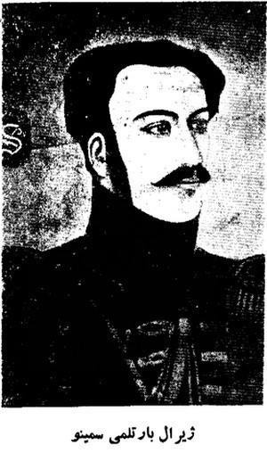 <p class='defImage'>Le Général Barthélemy Sémino</p> <p class='credits'>Geni</p><p class='texte'>Le travail d\’agent de renseignement consiste bien souvent à voyager afin de colliger des informations sur le terrain qui pourraient être utiles aux autorités. C\’est ce que fait le Général Barthélémy Sémino entre 1840 et 1841 alors qu\’il entreprend un voyage dans les provinces méridionales de la Perse et sur le littoral du Golfe Persique. Sémino n\’est pas un personnage anodin: né en France, il fait partie de l\’armée napoléonienne avant d\’occuper diverses fonctions en Russie après la chute de l\’empereur français. Après la Russie, il se dirige vers Tabriz, où il commence sa carrière auprès du gouvernement perse. Ingénieur et linguiste de formation, il gagne rapidement la confiance du Shah Fath-Ali, puis du Shah Mohammad et finalement de Naser-al-Din Shah. Présent lors des sièges d\’Hérat en 1833 et 1838, il participe à plusieurs expéditions diplomatiques et militaires<sup>1</sup>. Dans son journal de voyage, il décrit les paysages qu\’il rencontre, les routes, les villes, les ports, bref tout ce qui permet aux autorités de mieux connaître le terrain, les gens qui l\’occupent et leurs moeurs.</br>Certaines caractéristiques semblent attirer davantage l\’attention de Sémino, puisqu\’elles sont mentionnées pour pratiquement toutes les villes rencontrées. D\’abord, la présence de sources d\’eau potable. Que ce soit les ruisseaux, rivières, puits ou encore les récipients utilisés pour recueillir l\’eau de pluie, le Général en fait quasi toujours mention. Par exemple, à Abergoub (aujourd\’hui Abarkuh), il mentionne la présence d\’un petit canal à ciel ouvert où coule un ruisseau dans lequel l\’eau est potable, tandis qu\’à Bender Bouchir (aujourd\’hui Bouchehr) on ne retrouve pas d\’eau potable dans l\’enceinte des murailles. Les habitants doivent marcher pendant environ un quart d\’heure en-dehors de la ville pour trouver un puit, qui n\’offre bien souvent qu\’une eau saumâtre. Dans plusieurs villes, les habitants ont des puits de mauvaise qualité et doivent recueillir l\’eau de pluie.</br>L\’état des routes occupe également une grande place dans le récit de voyage de Sémino. Alors que les routes qui passent par les montagnes sont souvent difficiles, il y a généralement une autre option, celle de contourner les monts, même si cela allonge le trajet. Dans pratiquement tous les cas, l\’agent donne son avis sur la possibilité de faire passer l\’artillerie par ces routes. Dans le cas de la ville de Meched Mourghab (aujourd’hui Mehrdasht), il faut passer par les montagnes pour s\’y rendre. Sémino affirme que l\’artillerie pourrait y passer, mais avec beaucoup de difficulté. Cependant, des « pionniers » pourraient rapidement aplanir les points plus difficiles avec des pics à roc, rendant ainsi le passage des canons plus aisé. Même constat pour se rendre à Cazeroun: les canons sur affut ne peuvent passer; il faudrait donc les trainer hors des affuts ou contourner les montagnes.</br>Autre élément qui revient souvent dans le récit de Sémino: les forts. Les principales villes de son trajet en ont un, mais la taille et la qualité de la fortification varie d\’une cité à l\’autre. À Bender Bouchir (aujourd\’hui Bouchehr), on ne retrouve qu\’une faible muraille flanquée de tours du côté de la terre ferme; l\’autre côté de la ville est bordé par des bancs de sable qui empêchent les gros navires d\’approcher. À l\’inverse à Cali Bedé il y a un grand fort, situé sur le sommet d’une montagne et bien armé. Il peut accueillir entre deux et trois milles soldats. Sémino élabore d\’ailleurs toute une stratégie qui permettrait éventuellement de prendre possession de ce fort. L\’agent offre de nombreux détails concernant les fortifications qu\’il rencontre, de l\’épaisseur des murs à la hauteur de ceux-ci, en passant par les différents matériaux utilisés.</br>Finalement, Sémino s\’intéresse également aux ports qu\’il visite. Dans la majorité des cas, il remarque que les importants reflux d\’eau laissent les ports complètement secs environ deux fois en vingt-quatre heures. C\’est notamment le cas à Bender Righ et à Bender Diloum.</br>Mais dans quel but Barthélémy Sémino collige-t-il ces informations? Il y a bien sûr, nous l\’avons vu, l\’aspect d\’informer le plus possible une armée qui passerait par ces territoires. Mais serait-elle seulement de passage? Il semble en fait plausible que la Russie évalue la possibilité de prendre possession et de coloniser la Perse, considérant les nombreuses informations sur les villes, les habitants, le commerce, la flore et la topographie que les différentes sources analysées nous ont permis de mettre au jour. Sémino écrit d\’ailleurs son récit en 1840-1841, deux ans seulement après le siège d’\Hérat dans le cadre duquel la Russie avait soutenu la Perse contre les forces anglo-indiennes, notamment via le Comte Simonitch, diplomate envoyé auprès du Shah.</p> <p class='titreArchive'>«Journal d\'un voyage entrepris dans les provinces méridionales de la Perse et sur le littoral du Golfe Persique en 1840 et 1841» <span class='date'>1840-1841</span> <span class='agent'>Barthélemy Sémino</span> <span class='archive'>RGVIA. F. 446, op. 1, d. 31.</span/></p> <p class='auteur'>Catherine Lampron</p><p class='ref'><sup>1</sup>MAHDAVI, Shireen. « Semino, Barthelemy », <i>Encyclopaedia Iranica</i>, 8 mars 2012, http://www.iranicaonline.org/articles/semino-barthelemy.</p><p class='tag'> <em>Perse</em><em>Port</em><em>Fortifications</em>");
    //IspahanChirazLam.addTo(myMap)
    IspahanChirazLam.addTo(logistiqueGroupe)

    var TrajetShahLor = L.geoJSON(TrajetShahLor, {title: 'Voyage du Shah', color: '#fff079ff', opacity: 1});
    TrajetShahLor.bindPopup("<p class='titre'>Le voyage du Shah, de Téhéran à Shiraz (janvier-février 1940)</p>  <p class='defImage'>Le Hadji Mirza Aghassi, Premier ministre du Shah Mahomet (peint par Sani ol Molk, 1846)</p> <p class='credits'> Wikimedia Commons </p><p class='texte'>Les rapports de l\'agent de renseignement Blaramberg datés du 20 décembre 1839 (1<sup>er</sup> janvier 1840 selon notre calendrier grégorien) et du 10 février 1840 (22 février 1840) traitent en partie d\'un voyage planifié par le <a href='http://www.iranicaonline.org/articles/mohammad-shah' target=' blank'>Shah Mahomet</a> et son Premier ministre le Hadji <a href='http://www.iranicaonline.org/articles/aqasff-ujuli-mnsz-adras-ivxni-ca' target=' blank'>Mirza Aghassi</a>. Le trajet établi était alors de partir de la ville de Téhéran, passer par Ispahan, puis se rendre jusqu\'à Shiraz. Si, à cause de la mauvaise santé du Shah et des avertissements des astrologues, le voyage semblait d\'abord être repoussé au printemps<sup>1</sup>, Blaramberg nous apprend que le Shah quitte finalement la capitale le 8 janvier (20 janvier)<sup>2</sup>.<br/><br/> Mais quelles sont les motivations du voyage du Shah, alors même que sa santé décline et que ses astrologues lui conseillent d\'attendre? Selon Blaramberg, les peuples habitant les alentours d\'Ispahan et de Shiraz croient le Shah mort. Ce faisant, ils évitent de payer leurs impôts, ce qui nuit à l\'économie déjà précaire du pays<sup>3</sup>. À cet effet, Balaramberg n\'hésite pas à souligner à quel point les ressources économiques de la Perse sont défaillantes. En effet, il mentionne que sur les 6 000 hommes qui seront mobilisés au total sur la route, au moins 1 000 à 1 500 sont des miliciens « en haillons armés de fusils à mèche sans bayonnettes[sic] » et que c\'est sur ces miliciens que le Shah compte le plus<sup>4</sup>. Il enchaîne en parlant des 350 chevaux achetés à la Ligne du Caucase, mais qui ont dû être distribués et nourris par des paysans avant de pouvoir être employés vu leur piètre état<sup>5</sup>. Finalement, Blaramberg ne semble voir qu'un seul bénéfice à l\'entreprise du Shah, soit le paiement d'une partie de la solde arriérée des troupes régulières persanes, ou <i>Sarbazes</i><sup>6</sup>.</p> <p class='titreArchive'><i>Reports by lieutenant-colonel Blaramberg to Minister of Military Affairs Chernyshev A.N. on political situation in Persia.</i> <span class='date'>Décembre 1839-Février 1840</span> <span class='agent'>Ivan Fedorovitch Blaramberg</span> <span class='archive'>RGVIA. F. 446, op. 1, d. 23, l. 1-2, 3 v.-6, 9-11 v. et 12 v.</span/></p> <p class='auteur'>Thomas Lord</p><p class='ref'><sup>1</sup> RGVIA. F. 446, op. 1, d. 23, l. 1.<br/><br/><sup>2</sup> <i>Ibid.</i>, l. 9.<br/><br/><sup>3</sup> <i>Ibid.</i>, l. 3 v.<br/><br/><sup>4</sup> <i>Ibid.</i><br/><br/><sup>5</sup> <i>Ibid.</i><br/><br/><sup>6</sup> <i>Ibid.</i>, l. 1 v.</p><p class='tag'> <!--<em>Perse</em>--> <!--<em>Trajet</em>--> <!--<em>Itinéraire</em>--> <!--<em>Téhéran</em>--> <!--<em>Ispahan</em>--> <!--<em>Shiraz</em>-->");
    //TrajetShahLor.addTo(myMap)
    TrajetShahLor.addTo(economieGroupe)

    var KhivaLor = L.marker([41.3951, 60,3590], {title: 'Khiva', icon:Diploicon, riseOnHover : true, riseOffset: 999});
    KhivaLor.bindPopup("<p class='titre'>La marche russe sur Khiva (1839-1840)</p>  <p class='defImage'>Général russe Vassily Perovsky (peinture de Karl Briulov, 1837)</p> <p class='credits'> Wikimedia Commons </p><p class='texte'>Dans ses rapports adressés au Ministre des Affaires militaires de la Russie de décembre 1839 et de février 1840, l\'agent de renseignement Blaramberg informe son correspondant des bruits et rumeurs circulant en Perse autour d\'une marche russe sur la ville de Khiva. Il indique que le gouvernement persan est on ne peut plus heureux de cette nouvelle, car il considère que les « milliers de malheureux Persans, qui languissent depuis des années dans un esclavage affreux à Khiva, vont leur être rendus<sup>1</sup>. » Or, si cette nouvelle réjouit le camp du Shah de Perse, elle inquiète considérablement les autorités anglaises, notamment le Major Todd, présent à Hérat<sup>2</sup>. À partir de ce moment, l\'événement de la marche sur Khiva prend de plus en plus d\'ampleur et la Russie n'a d'autre choix que de tenter de refroidir les esprits.<br/><br/>Le Général Duhamel, ambassadeur de la Russie en Perse, déçoit donc un émissaire de Kamran Mirza, envoyé de la ville d\'Hérat, en lui affirmant que « la Russie ne se mêlerait jamais dans les affaires politiques de l\'Afghanistan, que Kamran Mirza était libre d'entrer en négociations avec le Shah de Perse, pourvu cependant que leurs engagemen[t]s réciproques ne troublassent point le repos de la Perse ; que le détachement envoyé par le gouvernement russe contre Khiva n\'avait pour but que de mettre une fin aux brigandages des Khiviens, et que la Russie enfin n\'avait nullement l\'intention de faire une démonstration hostile contre la Grande-Bretagne du côté de l\'Afghanistan, puisque les deux puissances étaient unies par les liens d\'une amitié sincère. » On peut fortement douter de plusieurs éléments évoqués ici par Blaramberg. En effet, l\'amitié sincère entre la Russie et la Grande-Bretagne n\'est réelle qu\'en théorie, comme on peut le constater en observant toutes les ramifications du <i>Grand Jeu</i> en Afghanistan, notamment. De plus, si la marche sur Khiva, menée par le général Perovsky, se solde par un échec en 1840, l\'intention derrière cette dernière était bien d\'annexer le khanat à l\'empire russe, comme la seconde et plus fructueuse tentative le démontrera en 1873.</p> <p class='titreArchive'><i>Reports by lieutenant-colonel Blaramberg to Minister of Military Affairs Chernyshev A.N. on political situation in Persia.</i> <span class='date'>Décembre 1839-Février 1840</span> <span class='agent'>Ivan Fedorovitch Blaramberg</span> <span class='archive'>RGVIA. F. 446, op. 1, d. 23, l. 1-2, 3 v.-6, 9-11 v. et 12 v.</span/></p> <p class='auteur'>Thomas Lord</p><p class='ref'><sup>1</sup> RGVIA. F. 446, op. 1, d. 23, l. 6.<br/><br/><sup>2</sup> <i>Ibid.</i>, l. 6 v.<br/><br/><sup>3</sup> <i>Ibid.</i>, l. 10 v. et 11.</p><p class='tag'> <!--<em>Perse</em>--> <!--<em>Khiva</em>--> <!--<em>Perovsky</em>-->");
    KhivaLor.addTo(myMap)
    KhivaLor.addTo(DiplomatieGroupe)

    var KhivaRou = L.marker([41.3833, 60.3667], {title: 'Khiva', icon:Militaireicon, riseOnHover : true, riseOffset: 999});
    KhivaRou.bindPopup("<p class='titre'>James Abbott à Khiva</p> 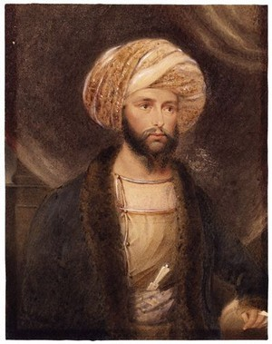 <p class='defimage'>James Abbott, officier de l'armée des Indes</b><br><br>La lettre de Blaramberg, datée du mois de mars 1840, relate une nouvelle apportée par l’ambassadeur de Perse à Khiva: <i>un officier anglais, John Abbott, est arrivé à Khiva.  Cet officier devait aller à la rencontre du Corps russe en marche sur Khiva pour l’engager à rétrograder et en cas de non-réussite de laisser au Chef de Khiva, Allah Quli Khan, le choix d’accepter de l’Angleterre de l’argent, des munitions ou des troupes</i>.  <i>Il partit en effet pour se diriger vers Orenbourg mais depuis ce temps, on n’entendit plus parler de lui et il parait qu’il avait été tué en chemin ou retenu par M. le Général Aide de Camp Perovsky</i>.<br>James Abbott avait été envoyé pour négocier avec Allah Quli Bahadur Khan, chef de Khiva, la libération des esclaves russes afin d’éliminer la justification des Russes pour l’attaque contre la Khanat.  Le chef de Khiva avait tenté plusieurs fois des échanges de prisonniers mais les Russes les avaient rejetées<sup>1</sup>.  Abbott prit sur lui de se rendre à Orenburg et à Saint-Petersbourg pour négocier une entente.  Il arriva à destination beaucoup plus tard après avoir été fait prisonnier par les Kazhaks.<br>L'ambassadeur perse apporte aussi des informations sur un combat entre les forces russes et khiviennes, à quelque distance de la ville.  Blaramberg écrit  que <i>6000 cavaliers Khiviens avaient été envoyés contre nos troupes […et] avaient été complètement battus.  Mirza-Riza dit les avoir vu rentrer à Khiva exténués et tout à fait découragés</i>.<br>Les Khiviens, comme les Russes à ce moment, ont souffert du froid extrême et de la neige qui était en grande quantité, soit jusqu’à cinq pieds de profondeur<sup>2</sup><br><br>1. Abbott, J., <i>Narrative of a Journey from Heraut to Khiva, Moscow and St. Petersburg</i>, vol. 1, 1843, pp. 108-110; en ligne: <a href='https://www.wdl.org/en/item/17720/' target='_blank'>https://www.wdl.org/en/item/17720/</a> <br>2. <i>Id</i>. pp. 96-97 </p> <p class='titreArchive'>Reports by lieutenant-colonel Blaramberg to Minister of Military Affairs Chernyshev A.N. on political situation in Persia<span class='date'>avril 1840</span> <span class='agent'>Blaramberg</span> <span class='archive'>RGVIA F446 Opis 1 delo 23-5</span/></p> <p class='auteur'>Camille Routhier</p><em> James Abbott, Khiva, Allah Quli Khan, Russes</em> ");
    KhivaRou.addTo(myMap)
    KhivaRou.addTo(militaireGroupe)

    var SerceyRou = L.marker([32.6447, 51.6700], {title: 'Ambassade française à Ispahan', icon:Diploicon, riseOnHover : true, riseOffset: 999});
    SerceyRou.bindPopup("<p class='titre'>Fin de l'ambassade française en Perse</p>  <p class='defimage'>Kiosque de Hecht-Beïcht, Ispahan</p><p class='credits'><a href='https://commons.wikimedia.org/wiki/File:Hasht_Behesht_Isfahan_by_Eug%C3%A8ne_Flandin.jpg' target='_blank'>Wikicommons</a></p> <p class='texte'>La lettre d’avril indique que Monsieur le Comte de Sercy, ambassadeur français en Perse, offre plusieurs cadeaux au Shah, notamment des livres éditions de luxe, des gravures, des porcelaines de Sèvres, une pendule, et des étoffes.  À ce moment, la mission française s’apprête à quitter la Perse mais un peintre (Eugène Flandin) et un architecte (Pascal Coste), restent plus longtemps<sup>1</sup>.<br>Cette lettre précise aussi que les relations politiques entre la Grande-Bretagne et la Perse sont toujours rompues.  Il y a une tentative d’alliance avec la Perse de la part des dirigeants de Herat.<br>Celle-ci n’aura cependant pas lieu en raison de pressions exercées par le gouvernement britannique<sup>2</sup>.<br>La lettre du 21 mai indique que le Shah s’apprête à quitter Ispahan pour Téhéran.  Blaramberg se montre critique de la gestion de l’État.  Il déplore que le gouverment ne prévoit aucunement « extorquant de l’argent de tous les côtés et par tous les moyens possibles ».<br>Le Comte de Sercy quitte la Perse pour retourner en France ce jour même du 21 mai.  La plupart des autres membres de la mission française ont déjà quitté.  Le Shah a distribué quelques cadeaux et décorations mais certains n’ont obtenu qu’un document.  La lettre mentionne que dix <i>instructeurs français, dont quatre pour l’infanterie; trois pour la cavalerie et autant pour l’artillerie, se retrouvent naturellement ici […] pour y instruire les troupes, cependant je doute qu’ils veuillent rester longtemps en Perse car on ne les payera pas</i>.  On y apprend que le Comte de Sercy est parvenu a grand peine à faire payer les arriérées de leur solde, équivalent à un Toman (3 roubles argent) par instructeur, par jour.<br>Les résultats de l’ambassade française sont finalement plutôt décevant, les instructeurs ne seront jamais réellement payés en Perse de sorte que la France doit assurer leur solde à leur retour<sup>3</sup>.<br><br>1.Encyclopaedia Iranica: <a href='http://www.iranicaonline.org/articles/france-viii-travelogues-of-the-18th-20th-centuries' target='_blank'>France-viii: Travelogues of the 18th-20th centuries</a>.<br>2. Volodarsky, M. “Persia’s foreign policy between the two Herat Crises, 1831-1856”, <i>Middle Eastern Studies</i>, 1985, Vol. 21(2), p. 122<br>3. <i>Id</i>. p. 126</p><p class='titreArchive'>Reports by lieutenant-colonel Blaramberg to Minister of Military Affairs Chernyshev A.N. on political situation in Persia<span class='date'>avril-mai 1840</span> <span class='agent'>Blaramberg</span> <span class='archive'>RGVIA F446 Opis 1 delo 23-(5-6)</span/></p> <p class='auteur'>Camille Routhier</p>");
    SerceyRou.addTo(myMap)
    SerceyRou.addTo(DiplomatieGroupe)


    var BlarambergRou = L.marker([35.7900, 51.0000], {title: 'Blaramberg: Compte-rendu', icon:Econoicon, riseOnHover : true, riseOffset: 999});
    BlarambergRou.bindPopup("<p class='titre'>Compte-rendu de la mission Blaramberg</p>  <p class='defimage'>Chernyshov Alexander Ivanovich (1786-1857) russian general by George Dawe</p><p class='credits'><a href='https://commons.wikimedia.org/wiki/File:Chernyshov_Alexander.jpg' target='_blank'>Wikicommons</a></p> <p class='texte'><br>La lettre finale de Blaramberg en lien avec sa mission en Perse est écrite après son départ, en juillet 1840.  Il semble convenir de le laisser s’exprimer de sorte que des extraits de cette dernière communication sont reproduits ci-dessous:<br><i>La monarchie persane, dans son état actuel, n’est qu’une puissance de troisième ordre et ne mérite sous aucun rapport l’importance qu’on lui accorde encore en Europe.  Ce pays marche à grands pas vers sa ruine complète, la production y a diminué de plusieurs millions dans les dernières quinze années.  Chaque ville est entourée et encombrée de ruines, et la vue continuelle de ses décombres, de ces pans de murs restés debout, de ces vastes cimetières que l’on rencontre souvent en route et qui indiquent qu’il y avait là jadis de grands bourgs, tout cela attriste l’âme.  Les caravanserais […] sont tous ruinés et inhabitables et le gouvernement persan ne fait absolument rien pour les reconstruire.  La même chose a lieu quant aux ponts et s’il n’y avait pas d’hommes pieux qui croient faire une oeuvre méritoire en construisant et en réparant des ponts, les communications seraient depuis longtemps interrompues en Perse.</i><br><i>Les finances sont dans un état pitoyable. […]  Pour se procurer de l’argent, on vend et revend les places de gouverneurs, et c’est sur les malheureux habitants que pèsent tous les maux d’une administration pareille.</i><br><i>Le commerce est ruiné depuis 1832.  Des millions en argent comptant ont été exportés par les Anglais qui, […] ont inondé toute la Perse de leurs Indiennes et d’autres produits de leurs manufactures; il s’en est suivi que les fabriques persanes ont en grande partie cessé leur travail faute de débouché.</i><br><i>Quant à l’armée, elle n’existe que sur le papier et les régiments que j’ai vus ne méritent pas le nom de réguliers qu’on se plait à leur donner, ils sont formés de paysans armés de vieux fusils défectueux et qui. ainsi que leurs officiers et leurs chefs supérieurs, n’ont la moindre idée de discipline, ni de service de front.  […] beaucoup de villages et bourgs situés le long de la grande route entre Tauris et Téhéran sont déserts car ils pillent et détruisent tout lors de leur passage; au reste, il le font quelquefois par désespoir puisque ce sont les villageois qui doivent pourvoir à leur entretien et ces derniers se sauvent ordinairement dans les montagnes avec leurs familles à l’approche d’un régiment emportant avec eux tout ce qu’ils peuvent de leur bien […].</i><br><i>Grâce à l’administration inepte de Hadji-Mizra Aghassi, le gouvernement persan est méprisable et justement méprisé de tous ceux qui le connaissent de près, sans force en dedans, sans dignité en dehors, une armée mal équipée, mal payée et qui n’a rien de régulier que le nom; des finances délabrées; enfin sur tous les points, le désordre et l’anarchie.  <b><u>Cependant tout ceci est en quelque sorte compensé par le fanatisme religieux et par l’influence et le crédit qu’y possède le clergé.  En Perse, l’Islamisme règne encore dans toute sa ferveur primitive et le dogme des Shittes, en isolant les Persans au milieu des peuples mahométans qui les environnent, rend leur cohésion plus compacte et forme un lien fort et durable entre tous les sectateurs du même dogme.</u></b>  La dynastie actuelle des Kadjars peut tomber ainsi que tant d’autres dynasties sont tombées devant elle, mais <b><u>la Perse comme état résistera encore à bien de ces coups politiques</u></b>; car elle ne possède pas d’éléments hétérogènes et hostiles dans son sein comme la Turquie avec ses populations chrétiennes, et ses ressources en hommes et en argent sont loin d’être épuisées comme sont celles de l’Égypte.  Toutefois la dynastie actuelle, détestée en Perse, ne s’y tient que protégée par la Russie et, tôt ou tard, la force des circonstances et des choses obligera cette dernière, bien malgré elle, d’intervenir dans les affaires de ce pays pour y mettre ordre et surtout pour avoir du repos sur ses frontières le long de l’Araxe.  Elle n’occupera pas l’Azerbaidjan à main armée, car ce serait un trop lourd fardeau et le jeu n’en vaudrait pas la chandelle, mais elle y établira un gouvernement plus stable et plus apte à rétablir la tranquillité et la prospérité dans ce pays que le gouvernement infame et inepte qui y existe aujourd’hui.</i><br></p><p class='titreArchive'>Reports by lieutenant-colonel Blaramberg to Minister of Military Affairs Chernyshev A.N. on political situation in Persia<span class='date'> juillet 1840</span> <span class='agent'>Blaramberg</span> <span class='archive'>RGVIA F446 Opis 1 delo 23-7</span/></p> <p class='auteur'>Camille Routhier</p>");
    //BlarambergRou.addTo(myMap)
    BlarambergRou.addTo(economieGroupe)

    var BaloutchistanStj = L.geoJSON(BaloutchistanGeoJSONStj, {color: '#70a26fff', opacity: 1, fillOpacity:0.55});
    BaloutchistanStj.bindPopup ("<p class='titre'>Province du Baloutchistan</p>  <p class='credits'> L'avant-poste militaire le plus avancé vers l'Afghanistan à Quetta. Par George Boyd, entre 1821 et 1844. Wikicommons </p><p class='texte'>Le Baloutchistan est un pays tampon entre l\’Inde et la Perse s\’étant détaché de cette dernière depuis près d’un siècle. Les influences britanniques sont très importantes et des bases militaires parsèment la partie nord de la région. D\’ailleurs, dans son rapport de 1839 portant sur les incidences dans les environs de l\’Afghanistan afin de préparer une invasion des Indes, Blaramberg avoue s\’être inspiré des écrits de voyages du capitaine Burnes et du colonel Pottinger<sup>1</sup>. Tous deux militaires britanniques, leurs livres sont des meilleurs vendeurs bien connus à l’époque et, surtout, traduits en français . Blaremberg avertit que « plus de deux tiers de cette vaste province se trouve ensevelis sous les sables mouvants »<sup>2</sup>. Le territoire désertique comporte une « fragile agriculture »<sup>3</sup> ne pouvant subvenir aux besoins d’une armée. Toutefois, il affirme que « pendant la saison des pluies, il pleut beaucoup, et que l\’eau [se] réunit dans les enfoncements »<sup>4</sup> .</br> Blaramberg observe également les deux tribus importantes qui pourraient poser problème lors d\’un passage au pays. La première, les Baloutches Berahoui, des nomades comptant environ 40 familles. « Leur chef actuel, Mahomed Khan, réside dans la ville de Kalat »<sup>5</sup>, indiqué par la zone en bleu. La deuxième, les Baloutches Hindi comptent 50 familles qui sont sédentaires et situées sur le pourtour de la rivière Indus. Blaramberg associe leur capitale à Hyderabad, indiquée sur la carte en mauve, même si celle-ci est située en Hindoustan, démontrant bien que les informations sont nébuleuses et datées d\’une quinzaine d’années. Il finit par dire des peuples mentionnés « qu\’ils sont d’une stérilité affreuse [...] et [qu]\’ils exercent plutôt leurs brigandages dans les provinces éloignées »<sup>6</sup>.</p> <p class='titreArchive'>« Note du lieutenant-colonel Blaramberg sur la collision des intérêts russe et britannique en Afghanistan et sur les aspirations des Anglais à étendre leur influences sur le pays et sur la situation politique et militaire de l’Afghanistan ». <span class='date'> 1839 </span> <span class='agent'>Blaramderg</span> <span class='archive'> RGVIA. F. 446, op. 1, d. 25, l. 14-15v</span/></p> <p class='auteur'>Jean-Cristophe St-James</p><p class='ref'>1- RGVIA. F. 446, op. 1, d. 25, l. 15.</br> 2- <i>Ibid.</i> l. 14v. </br> 3- <i>Ibid.</i> </br> 4- <i>Ibid.</i> </br> 5- <i>Ibid.</i> </br> 6- <i>Ibid.</i> l. 15. </p><p class='tag'> </p><p class='tag'> <em>Perse</em>");
    BaloutchistanStj.addTo(myMap)
    BaloutchistanStj.addTo(EnvironnementGroupe)

    var HyperabadStj = L.geoJSON(HyperabadGeoJSONStj, {color: '#70a26fff', opacity: 1, fillOpacity:0.55});
    HyperabadStj.addTo(myMap)
    HyperabadStj.addTo(EnvironnementGroupe)

    var KalatStj = L.geoJSON(KalatGeoJSONStj, {color: '#70a26fff', opacity: 1, fillOpacity:0.55});
    KalatStj.addTo(myMap)
    KalatStj.addTo(EnvironnementGroupe)

    var SistanLar= L.marker([30.6759, 61.4949], {title: 'La province du Sistan', icon:Enviroicon, riseOnHover : true, riseOffset: 999});
    SistanLar.bindPopup("<p class='titre'>La province du Sistan et son hydrographie</p> 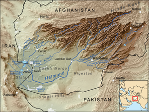 <p class='defImage'>Carte du basin versant du Sistan</p> <p class='credits'>Wikicommons</p><p class='texte'> Dans son rapport sur les évènements survenant en Afghanistan au cours de l’année 1839, Blaremberg survole la logistique que la province du Sistan peu offrir. Ce dernier s’intéressera tout particulièrement à l\’hydrographie de la région.<br> « Le Seistan […] est un pays plat profondément enfoncé vers son milieu ou s’écroulent comme dans un réservoir, toutes les rivières venant des pentes des montagnes qui remplissent la partie occidentale de l’Afghanistan savoir<br><b>1.La rivière Helmand</b> [… qui sort de la montagne [Koh-e baba] dans l’Indou Koush […]  sa partie inférieure traverse des plaines sablonneuses et elle coule alors dans un lit envasé : sont périnéal  affluent est le Tarnak dont la partie supérieure s’appelle Moukour qui reçoit du côté droit l’Arghanstan et du côté gauche l’Arghandab.<br><b>2.Le Khashrud Rud</b><br><b>3.Le Farahrud</b>, dont la source est près du fort ghour<br><b>4.Le Harutrud</b> dont la partie supérieure se nomme Adraskane est affluent, tarit souvent en été. Ces trois dernières rivières sortent des montagnes [près de la ville d\’Hérat]. On les traverse toutes en se rendant de Hérat à Kandahar : ces rivières vont alimenter le lac Hamoun [nommé lac de jafa sur nos cartes] qui à 80 persenghis de circonférence et au milieu duquel se trouve une île rocailleuse avec la forteresse [<a href='http://www.iranicaonline.org/articles/kuh-e-khvaja' target='_blank'>Kuh-e Kavaja</a>]. Les plaines qui l’environnent sont aussi stériles que les sables du Béloutchistan quoiqu’on y rencontre beaucoup de ruines des grandes villes, dont aucune n’est habitée aujourd’hui; mais le delta formé par les sept embouchures du Helmand offre une des plus fertiles contrées du monde. »</p> <p class='titreArchive'>«Considération sur les évènements qui se passe actuellement en Afghanistan» <span class='date'>février 1839</span> <span class='agent'>Blaremberg</span> <span class='archive'>RGVIA, F446, opis 1, delo 25, list 12-14</span/></p> <p class='auteur'>Marie-Soleil Larocque</p><p class='ref'>ELHERS,Eckart. «HĀMUN, DARYĀČA-YE i. GEOGRAPHY»,<i>Encyclopædia Iranica</i>, online edition, 2012, available at <a href=\'http://www.iranicaonline.org/articles/hamun-daryaca-ye-i' target=\'_blank\'>http://www.iranicaonline.org/articles/hamun-daryaca-ye-i</a></p><p class='tag'> <p class='ref'> Jamil HANIFI et ELR. « HELMAND RIVER i. GEOGRAPHY ». <i>Encyclopaedia Iranica</i>. , 2012, <a href=\'http://iranicaonline.org/articles/helmand-river-i' target=\'_blank\'>http://iranicaonline.org/articles/helmand-river-i</a></p><p class='tag'> <p class='ref'> « Farāh River». <i>Encyclopaedia Britannica</i>. , <a href=\'https://www.britannica.com/place/Farah-River' target=\'_blank\'>https://www.britannica.com/place/Farah-River</a></p><p class='ref'> « Helmand River». <i>Encyclopaedia Britannica</i>. , <a href=\'https://www.britannica.com/place/Helmand-River' target=\'_blank\'>https://www.britannica.com/place/Helmand-River</a></p><p class='tag'> <em>Afghanistan</em>");
    SistanLar.addTo(myMap)
    SistanLar.addTo(EnvironnementGroupe)

    //var HelmandRiverLar = L.geoJSON (HelmandLar, {color:"#70a26fff", Opacity:1} );
    //HelmandRiverLar.bindPopup("<p class='titre'>La rivière Helmand</p>  <p class='defImage'>Carte du basin versant du Sistan</p> <p class='credits'>Wikicommons</p><p class='texte'>La rivière Helmand est la plus longue en Afghanistan. Elle coule au travers des plaines du Sistan et est utilisé par les habitants comme source pour l\’irrigation. La rivière est navigable depuis Geresk jusqu\’au barrage du Sistan. En raison des inondations annuelles, ce dernier est souvent emporté par les eaux. La partie de la rivière après le barrage de Kuhak est navigable seulement durant les mois du printemps. En dehors de ces trois mois-là, le niveau de la rivière est trop bas pour être navigable. En termes d\’importance pour les habitants du Sistan, certain on même comparer la rivière Helmand au Nil pour les Égyptiens. <br> Par contre, le tournant du 19<sup>e</sup>siècle et le 20<sup>e</sup>siècle apporte des changement majeur à la rivière. Par ailleurs, le lit de la rivière a subit des changement majeur durant cette période et a permis ainsi d\'utiliser la rivière Helmand comme délimitation naturelle des nouvelles frontières entre l'Afghanistan et l'Iran.</p> <p class='titreArchive'>«Considération sur les évènements qui se passe actuellement en Afghanistan» <span class='date'>février 1839</span> <span class='agent'>Blaremberg</span> <span class='archive'>RGVIA, F446, opis 1, delo 25, list 12-14</span/></p> <p class='auteur'>Marie-Soleil Larocque</p>KHAZENI, Arash. « HELMAND RIVER iv. IN THE LATE 19TH AND 20TH CENTURIES». <i>Encyclopaedia Iranica</i>. , 2012, <a href=\'http://iranicaonline.org/articles/helmand-river-iv' target=\'_blank\'>http://iranicaonline.org/articles/helmand-river-iv</a></p><p class='tag'>Jamil HANIFI et ELR. « HELMAND RIVER i. GEOGRAPHY ». <i>Encyclopaedia Iranica</i>. , 2012, <a href=\'http://iranicaonline.org/articles/helmand-river-i' target=\'_blank\'>http://iranicaonline.org/articles/helmand-river-i</a></p><p class='tag'> <em>Afghanistan</em>");
    //HelmandRiverLar.addTo(myMap)
    //HelmandRiverLar.addTo(EnvironnementGroupe)

    //var TarnakRiverLar = L.geoJSON (TarnakLar, {color:"#70a26fff", Opacity:1} );
    //TarnakRiverLar.bindPopup("<p class='titre'>La rivière Tarnak</p>  <p class='defImage'>Carte du basin versant du Sistan</p> <p class='credits'>Wikicommons</p><p class='texte'> </p> <p class='titreArchive'>«Considération sur les évènements qui se passe actuellement en Afghanistan» <span class='date'>février 1839</span> <span class='agent'>Blaremberg</span> <span class='archive'>RGVIA, F446, opis 1, delo 25, list 12-14</span/></p> <p class='auteur'>Marie-Soleil Larocque</p> <em>Afghanistan</em>");
    //TarnakRiverLar.addTo(myMap)
    //TarnakRiverLar.addTo(EnvironnementGroupe)

    //var ArghandabRiverLar = L.geoJSON (ArghandabLar, {color:"#70a26fff", Opacity:1} );
    //ArghandabRiverLar.bindPopup("<p class='titre'>La rivière Arghandab</p>  <p class='defImage'>Carte du basin versant du Sistan</p> <p class='credits'>Wikicommons</p><p class='texte'></p> <p class='titreArchive'>«Considération sur les évènements qui se passe actuellement en Afghanistan» <span class='date'>février 1839</span><span class='agent'>Blaremberg</span> <span class='archive'>RGVIA, F446, opis 4, delo 25, list 12-14</span/></p> <p class='auteur'>Marie-Soleil Larocque</p> <em>Afghanistan</em>");
    //ArghandabRiverLar.addTo(myMap)
    //ArghandabRiverLar.addTo(EnvironnementGroupe)

    //var KhashRiverLar = L.geoJSON (KhashLar, {color:"#70a26fff", Opacity:1} );
    //KhashRiverLar.bindPopup("<p class='titre'>La rivière Khash</p>  <p class='defImage'>Carte du basin versant du Sistan</p> <p class='credits'>Wikicommons</p><p class='texte'> </p> <p class='titreArchive'>«Considération sur les évènements qui se passe actuellement en Afghanistan» <span class='date'>février 1839</span> <span class='agent'>Blaremberg</span> <span class='archive'>RGVIA, F446, opis 1, delo 25, list 12-14</span/></p> <p class='auteur'>Marie-Soleil Larocque</p> <em>Afghanistan</em>");
    //KhashRiverLar.addTo(myMap)
    //KhashRiverLar.addTo(EnvironnementGroupe)

    //var FarahRiverLar = L.geoJSON (FarahLar, {color:"#70a26fff", Opacity:1} );
    //FarahRiverLar.bindPopup("<p class='titre'>La rivière Farah</p> <p class='defImage'>Carte du basin versant du Sistan</p> <p class='credits'>Wikicommons</p><p class='texte'> </p> <p class='titreArchive'>«Considération sur les évènements qui se passe actuellement en Afghanistan» <span class='date'>février 1839</span> <span class='agent'>Blaremberg</span> <span class='archive'>RGVIA, F446, opis 1, delo 25, list 12-14</span/></p> <p class='auteur'>Marie-Soleil Larocque</p> <em>Afghanistan</em>");
    //FarahRiverLar.addTo(myMap)
    //FarahRiverLar.addTo(EnvironnementGroupe)

    //var HarutRiverLar =L.geoJSON (HarutLar, {color:"#70a26fff", Opacity:1} );
    //HarutRiverLar.bindPopup("<p class='titre'>La rivière Harut</p>  <p class='defImage'>Carte du basin versant du Sistan</p> <p class='credits'>Wikicommons</p><p class='texte'> </p> <p class='titreArchive'>«Considération sur les évènements qui se passe actuellement en Afghanistan» <span class='date'>février 1839</span> <span class='agent'>Blaremberg</span> <span class='archive'>RGVIA, F446, opis 1, delo 25, list 12-14</span/></p> <p class='auteur'>Marie-Soleil Larocque</p> <em>Afghanistan</em>");
    //HarutRiverLar.addTo(myMap)
    //HarutRiverLar.addTo(EnvironnementGroupe)

    //var LacHamunLar = L.geoJSON (HamunLar, {color:"#70a26fff", Opacity:1});
    //LacHamunLar.bindPopup("<p class='titre'>Lac Hamun actuel</p>  <p class='defImage'>Carte du basin versant du Sistan</p> <p class='credits'>Wikicommons</p><p class='texte'> </p> <p class='titreArchive'>«Considération sur les évènements qui se passe actuellement en Afghanistan» <span class='date'>février 1839</span> <span class='agent'>Blaremberg</span> <span class='archive'>RGVIA, F446, opis 1, delo 25, list 12-14</span/></p> <p class='auteur'>Marie-Soleil Larocque</p> <em>Afghanistan</em>");
    //LacHamunLar.addTo(myMap)
    //LacHamunLar.addTo(EnvironnementGroupe)

    var HeratPic = L.marker([34.3669, 62.2420], {title: 'Contrôle d\'Hérat et faits divers', icon:Militaireicon, riseOnHover : true, riseOffset: 999});
    HeratPic.bindPopup("<p class='titre'>Contrôle d\'Hérat et faits divers</p>  <p class='defImage'></p> <p class='credits'>Wikicommons</p><p class='texte'>Le delo 17 qui est signé par 2 individus renseigne sur la prise d\’Hérat. Cette prise fut un moment marquant dans le climat du Grand Jeu. L\’agent nommé Blaramberg laissera plusieurs traces des évènements, tels qu\’un certain Simonich. Cet agent semble avoir participé dans une certaine mesure à la prise d\’Hérat, fort probablement comme observateur. Ses indications semblent précises lorsqu\’il mentionne le nombre de sommations donné à leur ennemi, la décision d\’attaquer la ville sur deux fronts, ainsi que sur les matériaux disponibles de l\’opération. Selon Simonich, l\’opération contre la ville d\’Hérat n\’était pas celle escomptée, car l\’inexpérience et la désunion de plusieurs chefs ont ralenti considérablement le siège. De plus, il semblerait que le Khan ait lui aussi des désirs de ne partager aucun honneur lors de cette campagne. </br>De son côté, Blaremberg semble détenir des informations qui sont d\’ordres contextuels. Il y raconte quelques escarmouches et sommations entre l\’armée perse et les forces afghanes sur la route menant à Hérat et près de la ville même. Point intéressant, si Simonich met l\’accent sur la difficulté d\’obtenir des vivres lors du siège d\’Hérat, Blaremberg quant à lui semble indiquer l\’opposition de ces faits. Dans ce Delo 17, les deux hommes semblent avoir pourtant participé au même événement. Cependant, la réciprocité de leur propos concerne la jalousie des chefs de guerre qui pose un réel problème dans la cohésion des forces perses. Un accent est aussi placé sur les réquisitions de vivres dans les villages avoisinant qui, bien entendu, ne plaira pas aux populations locales. L\’agent Blaremberg reviendra lui aussi sur la mauvaise gestion de l\’attaque contre la ville, discutant au passage que les choses pourraient mal tourner si le Khan continuait de prendre trop à la légère cette situation. </br>Ce Delo daté de 1837 représente les débuts des combats pour la prise d\’Hérat. Comme l\’histoire le prouvera, les forces perses ne réussiront pas à prendre le contrôle de la ville et leur siège sera d\’au moins 10 mois. Une possible victoire aurait sans doute permis au Russe d\’intégrer des troubles anti-anglais en Afghanistan et peut-être ultimement gagné le contrôle de façon permanente de la région.</p> <p class='titreArchive'><span class='date'>1837</span> <span class='agent'>Simonich et Blaramberg </span> <span class='archive'>TsGIA. F. 446, op. 1, d. 17, l. 1-11</span/></p> <p class='auteur'>David Picard</p><p class='ref'> Ḥabib-Allāh Zanjāni, Gorgan <i> Encyclopædia </i>, Vol. XI, p. 139-142.</p><p class='ref'>J. B. Kelly, <i> Britain and the Persian Gulf, 1795-1880 </i>, Oxford, 1968, p.290-301,306-320.</p><p class='ref'> The Herat Question,<i>Encyclopædia Iranica</i>,Vol. XII, Fasc. 2, pp. 219-224.</p><<p class='tag'> <em>Perse</em>");
    HeratPic.addTo(myMap)
    HeratPic.addTo(militaireGroupe)

    var MazanderanBou = L.geoJSON(Province, {color: '#6df6ffff', opacity: 1, fillOpacity: 0.55});
    MazanderanBou.bindPopup("<p class='titre'>Les relations russo-persanes</p> <p class='defImage'>Jardins abandonnés d'Aschref par Jules Laurens</p> <p class='credits'>Wikicommons</p><p class='texte'> En 1839, des troupes persanes entrent en territoire Russe, causent des dégâts et, par le fait même, insultent le gouvernement de Saint-Petersbourg. Face à ces exactions, Blaramberg expose l\’attitude que devrait adopter la Russie à l\’égard de la Perse. Selon ce dernier, il faudrait qu\’elle fasse plus que se venger de ces raids. Au contraire, elle devrait plutôt en profiter pour mener d\’autres opérations en Perse. Ayant déjà mené deux campagnes contre la Perse, la Russie dominait désormais la majorité de la côte ouest de la capsienne (<a href= 'http://www.iranicaonline.org/articles/russia-i-relations' target='_blank'>voir guerre russo-persane de 1804-1813 et guerre russo-persane de 1826-1828</a>). Cependant, elle demeurait loin des Indes et du commerce des Khanats de Khiva et de Boukhara.</br>C\’est dans cette perspective qu\’il est possible de s\’intéresser aux provinces méridionales à la Caspienne, et ce, en suivant la logique géopolitique de l\’époque. Par exemple, dans une lettre qu\’adresse Blaramberg au ministre des Affaires militaires Chernychev, on constate facilement que la Russie, malgré son attitude amicale à l\’égard de la Perse, conserve des intérêts dans cette région. En effet, dans ce document de 1839, l\’agent russe décrit les conséquences qu\’aurait une guerre entre la Russie et la Perse, mais aussi quelles régions la Russie devrait conquérir. </br>Selon Blaramberg, les intérêts russes devraient, dans le cadre de ce conflit, être dirigés vers la province du Mazandéran qui, dans ses mots, « offre des vues d\’une utilité appréciable sans augmenter de beaucoup la somme des dépenses de l\’Empire » (l. 3). De plus, comme il le souligne, la conquête de ces territoires priverait la Perse « de ses provinces les plus fertiles [cette dernière, qui] verrait petit à petit se tarir les sources de son bien-être et ne serait plus que quelques hordes indisciplinées » (l. 3). Enfin, il rappelle qu\’au contraire des territoires au sud de l\’Araxe, ce sont des possessions faciles à défendre. En fortifiant quelques positions, dont la ville d\’Astrabad, elles deviendraient des dépôts de munitions de guerre et de bouches [où] les troupes arriveraient à peu de frais par la Volga et la mer Caspienne, et ce, en vue d\’opérations de guerre ultérieures. Bref, de l\’ordre de la géopolitique, la Russie s\’assurerait un pied à terre au sud de la Caspienne et, par le fait même, un accès au commerce de Kandahar, du Cachemire et de l\’Indus. Il s\’agirait d\’ailleurs d\’un commerce qui pourrait, par la suite, « facilement être attiré vers Astrabad où se réuniraient tous les produits de la Russie et de la Sibérie […] pour ensuite se répandre jusque dans les Indes » (l. 3 v.). Pour Blaramberg, « l\’injustice de l\’agression » offre donc une opportunité « de conduire [une] guerre à un résultat décisif avant qu\’aucune puissance européenne acquière le droit de nous prêter des vues d\’une ambition dangereuse pour sa paix et son indépendance. » (l. 3). C\’est en se dotant d\’un tel <i>casus belli</i> que la Russie pourrait mener une guerre « défensive » et « légitime » contre la Perse. </br>Dans un second ordre d\’idée, ce document témoigne aussi de l\’influence continue du grand Jeu sur les politiques russes en Asie centrale. Dans ce dernier, Blaramberg met en garde le gouvernement russe que « l\’envahissement d\’une partie des provinces persanes par l\’armée russe ferait prévoir à la Grande-Bretagne que ses possessions aux Indes orientales ne seraient pas éternellement inatteignables » (l.2 v.). Conséquemment, il rappelle que la Grande-Bretagne risquerait d\’intervenir dans les démêlés entre les deux belligérants. Bref, en plus de construire les prémisses d\’une compétition commerciale en Asie centrale, le Grand Jeu dicte aussi l\’allure des actions politiques entreprissent par la Russie.</br>Même si nous savons qu\’un tel conflit n\’a pas eu lieu, un document comme celui-ci nous permet de déduire que l\’alliance entre les Persans et les Russes était fragile. Tout d\’abord, les conquêtes russes dans le Caucase n\’étaient pas, aux yeux de ces derniers, suffisantes et profitables. Deuxièmement, leurs intérêts internationaux et hégémoniques primaient sur le respect de cette alliance. Le caractère fragile de cette entente permet de supposer que les intérêts russes étaient réellement tournés vers l\’Inde et non pas vers les territoires désertiques de la Perse. Même si des villes comme Bouchehr dans le Fars offraient des débouchés économiques intéressants, la Russie cherchait vraisemblablement à percer en Asie centrale, dans les Khanats turcomans, en Afghanistan et par la suite en Hindoustan alors que la Perse n\’était qu\’un outil pour y arriver. <p class='titreArchive'>Note by lieutenant-colonel Blaramberg to minister of military affairs Chernyshev A.N. on possibility of the military conflict between Russia and Persia.<span class='date'>1839</span> <span class='agent'>Ivan Fedorovich Blaramberg</span></p> <p class='archive'>RGVIA. F. 446, op. 1, d. 27 , l. 2-4 r.</p> <p class='auteur'>David Bouchard</p><p class='tag'> <em>relations russo-persanes</em>");
    //MazanderanBou.addTo(myMap)
    MazanderanBou.addTo(strategieGroupe)

    var ErevanCan = L.geoJSON(Erevan_polygone, {color: '#6df6ffff', opacity: 1, fillOpacity: 0.55});
    ErevanCan.bindPopup("<p class='titre'>Future campagne russe en Arménie</p>  <p class='defImage'>Forteresse d\'Erevan en 1827</p> <p class='credits'>Wikipedia</p><p class='texte'>Au début du XIX<sup>e</sup> siècle, les relations entre les Russes et le gouvernement persan sont tendues. Ainsi, la Russie organise une éventuelle campagne vers le nord de la Perse, soit l\'Arménie actuelle. Une fois de plus, le Lieutenant-colonel Blaramberg vient apporter sa contribution au projet. En effet, de par une note adressée au ministre des affaires militaire Chernyshev A.N., il expose son idée sur cette future campagne qui engloberait Erevan, Nakhichevan, Karadagh, une partie de l\'Azerbaïdjan, Asterabad et Tauris, en passant par la mer Caspienne et l\'Araxe.</br> À cette époque, les relations entre les Russes et le Shah ne sont pas prospères. Déclaré comme étant l\'ennemi de la Russie, Abbas Mirza est pourtant enclin à les ménagers et ne pas leur causer de problèmes. Pourtant, pour les Russes, la soif de territoire est forte. Dans la note de Blaramberg, le Shah, tout comme certains dirigeants orientaux, est décrit comme étant un despote d\'Asie et un nomade, ce qui est d\'ailleurs véridique en raison de l\'endroit où son palais est placé. L\'auteur mentionne donc une grande instabilité pour le dirigeant et sa cour. On retrouve alors ici un grand mépris, voire un jugement de la part des Russes face à Abbas Mirza. Blaramberg souligne aussi que si une chute politique se produisait, les relations avec le nouveau Shah pourraient être meilleures et apporter des avantages qu\'ils n\'ont jamais eus jusqu\'ici. On remarque donc que même si les relations ne sont pas bonnes pour le moment, aux dépens du dirigeant en place, elles peuvent changer. Cependant, l\'influence russe n\'y serait-elle pas pour quelque chose? Certes, ces derniers cherchent toujours à prendre possession de nouveaux territoires et à installer leur hégémonie sur une plus grande zone.</br> L\'Arménie est donc convoitée grâce à sa proximité avec la Russie et à sa frontière avec la Perse. Également, elle est proche de la mer Caspienne et de la rivière Araxe qui deviendrait une frontière naturelle. Ces courts d\'eaux donneraient un meilleur accès au commerce de par leur proximité et leur navigation facile. De plus, le profit de ces terres du nord serait considérable, notamment grâce à Erevan qui fournirait la Russie en coton et en soierie. La ville d\'Asterabad permettrait aussi d\'installer des comptoirs commerciaux comme les Anglais aux Indes et elle serait une bonne colonie militaire.</br> D\'ailleurs, sur le plan militaire, Blaramberg propose de renforcer les troupes. Avec l\'annexion de ces territoires, les Russes troqueraient leurs petites troupes réparties un peu partout contre une installation militaire beaucoup plus solide, raisonnable et imposante. Un point de départ en bas des montagnes d\'Erevan, et voir même ailleurs sur les frontières et l\'intérieur, serait indispensable selon Blaramberg pour avoir une meilleure offensive et défensive en cas d\'attaque. En addition, ces installations permettraient d\'avoir des entrepôts pour le commerce intérieur en plus d\'être des marchés, elles posséderaient des foyers de civilisations, des biens armés, des garnisons... Blaramberg appuit son idée sur le fait que de précédentes insurrections musulmanes de récentes acquisitions ont prouvées qu\'il fallait renforcer la partie militaire. Finalement, l\'installation de ces postes positionnerait les Russes au rang de maîtres face à leurs adversaires.</br> Ceci nous amène donc au point suivant. Les Russes veulent conquérir tout en gagnant avec la paix, c\'est à dire qu\'ils ne veulent aucun conflit avec les territoires conquis, mais bien la paix. Ainsi, leur conquête doit se conclure avec un traité de paix comme le stipule bien Blaramberg, ce qui serait selon lui une victoire avec les Orientaux. C\'est alors qu\'avant l\'entreprise de leur campagne, il est demandé qu\'un homme tel qu\'un général chef ou encore un diplomate, doit se charger de prendre connaissance de la situation politique et commerciale du territoire et d\'établir de nouveaux documents qui permettront, après signature, à la Russie de prendre une totale ou presque possession du territoire. Après tout ceci, la première étape serait d\'asseoir des bases solides pour maintenir le système, contenir les populations et défendre le territoire. Ainsi, un travail ardu et minutieux est demandé pour évaluer le nombre de soldats nécessaire, leurs postes... La campagne ne peut donc pas se faire sans étapes préliminaires qui permettraient un établissement rapide et efficace.</br> Pour appuyer ses suggestions, Blaramberg va jusqu\'à mentionner de grands hommes tels que Napoléon ou encore Vauban et Louis XIV pour suggérer des techniques à employer. Notamment le système général de défense, de communication et d\'amélioration de toutes les branches du gouvernement qui avait permis à Vauban de prendre connaissance de toutes informations importantes pour Louis XIV en France. Aussi, il souligne qu\'il serait intéressant d\'envisager une ligne militaire sur les frontières limitrophes à la Perse et au Caucase comme l\'ont fait les Autrichiens avec la Hongrie. Il surenchérit son idée en mentionnant que l\'utilisation de populations locales serait judicieuse pour cette entreprise - technique qui sera employée plus tard pour maintenir l\'ordre dans les colonies. Ainsi, Blaramberg annonce des techniques qui ont fait leurs preuves et qui pourraient être appliquées à leurs idées.</br> En conclusion, la prise de possession d\'une partie de l\'Arménie serait une entreprise judicieuse pour établir une bonne connexion entre la Russie et les provinces persanes. Également, ces territoires permettraient une expansion sur le plan militaire et une meilleure accession au commerce.</p> <p class='titreArchive'>«Notes du lieutenant-colonel Blaramberg au ministre des affaires militaires Chernyshev A.N. sur les possibilités d\'un conflit militaire entre la Russie et la Perse» <span class='date'>1839</span> <span class='agent'>Lieutenant-colonel Blaramberg</span> <span class='archive'>RGVIA. F. 446, op. 1, d. 27, 2.</span/></p> <p class='auteur'>Victoria Candat</p><p class='ref'></p><p class='tag'> <em>Perse</em> <em>Arménie</em> <em>Russes</em> <em>Militaire</em> <em>Commerce</em> <em>Erevan</em> <em>Mer Caspienne</em> <em>Araxe</em>");
    //ErevanCan.addTo(myMap)
    ErevanCan.addTo(strategieGroupe)

    var KhorassanPolyGeojsDio = L.geoJSON(KhorassanPolyGeojsDio, {color: '#7e4ca5ff', opacity: 1, fillOpacity: 0.55});
    KhorassanPolyGeojsDio.bindTooltip('Khorassan',  {className: 'tooltip'});
    KhorassanPolyGeojsDio.bindPopup("<p class='titre'>La campgane d'Hérat (1837-1838) vue par l'agent Blaramberg</p>  <p class='defImage'>Portrait de Mohamed Shah Qadjar et de son premier ministre Mirza Hadji Aghassi.</br>Encre, peinture à l'eau opaque et or sur papier.</br>2e quart du XIX<sup>e</sup> siècle.</p> <p class='credits'><a href='https://www.metmuseum.org/art/collection/search/667859' target='_blank'>The Metropolitan Museum of Art</a> via Wikimedia Commons</p><p class='texte'>L\’agent <a href='https://encyclopedia2.thefreedictionary.com/Ivan+Fedorovich+Blaramberg' target='_blank'>Ivan Fedorovich Blaramberg</a> (1800-1878) est un cartographe d\’origine allemande qui travaille pour le compte du service de renseignement militaire de la Russie impériale durant le XIX<sup>e</sup> siècle. Celui-ci obtient une assignation en Perse au cours des années 1830, assignation au cours de laquelle il produit de nombreux rapports dans lesquels il consigne des informations des plus variées.</br>Celui-ci décrira par exemple la campagne et le siège contre la ville afghane de <a href='http://www.iranicaonline.org/articles/herat' target='_blank'>Hérat</a> par l\’armée perse au cours des années 1837 et 1838. En effet, <a href='http://www.iranicaonline.org/articles/mohammad-shah' target='_blank'>Mahomed Shah</a> (1808-1848) tenta, comme son prédécesseur de faire reconnaître la souveraineté perse sur Hérat. Cependant, <a href='http://www.iranicaonline.org/articles/kamran-b-shah-mahmud' target='_blank'>Kamran Mirza</a>, seigneur à Hérat, n\’accéda pas à sa demande et pilla plutôt les villes et villages perses de la province du <a href='https://www.universalis.fr/encyclopedie/khorasan-khurasan-khorassan/' target='_blank'>Khorassan</a>, limitrophes à celle d'Hérat. Le Shah entreprit donc d\’aller soumettre la ville par la force. Ce document est révélateur des profondes lacunes des Perses sur le plan militaire et administratif, mais également du dur jugement et même du dédain qu\’éprouvent Blaramberg et les Européens en poste en Orient envers les populations locales.</br></br>Blaramberg indique d\’entrée de jeu que les Britanniques ne sont pas enchantés et tentent de dissuader le Shah d\’entreprendre cette campagne. Il indique également que les ministres Russes et Anglais auprès du Shah auraient engagé ce dernier à mettre de l\’ordre dans les finances de son royaume et de sévir contre la corruption, le gaspillage et les tribus qui ne défient son autorité avant de se lancer dans quelque conquête. L\’armée se met en marche contre Herat dès 1836 mais Blaramberg explique que le Shah décide en chemin de lancer son armée contre des tribus turcomanes dans le Khorassan et que cette expédition se termine dans le désordre, si bien que le Shah doit mobiliser une nouvelle armée l\’année suivante pour poursuivre son objectif initial. Blaramberg réitère ici que le Shah ignore les conseils avisés de ses ministres étrangers et dépense de «&nbsp;grandes sommes<sup>1</sup>&nbsp;» pour cette campagne.</br></br>Aux dires de Blaramberg, cette armée, bien que nombreuse en hommes, est commandée par des officiers sans valeur, sans connaissance ni expérience de l\’art militaire, nommés seulement en raison de leur naissance ou de leur faveur et qui ne se respecteraient jamais les ordres d\’un autre supérieur que le Shah lui-même. Il se montre particulièrement critique du premier ministre <a href='http://www.iranicaonline.org/articles/aqasff-ujuli-mnsz-adras-ivxni-ca' target='_blank'>Mirza Hadji Aghassi</a>, un personnage haut en couleur qui n\’aurait été en fait qu\’un illuminé particulièrement convaincant qui se serait ainsi attiré les faveurs du Shah. Blaramberg appuie son portrait d\’anecdotes, notamment une selon laquelle ce dernier aurait fui une bataille dès le premier coup de canon, prétextant que le sifflement du boulet lui aurait révélé un mauvais augure, et une autre selon laquelle il aurait expliqué que Napoléon avait accompli de grandes choses puisque son âme (celle du Hadji) l\’avait personnellement accompagné. Il termine en disant que cet homme est au moins loyal envers son maître ainsi qu\’honnête, mais non sans ajouter du même souffle «&nbsp;autant qu’un persan peut l’être<sup>2</sup>&nbsp;».</br></br>L\’armée se met finalement en marche en juillet 1838. Blaramberg rapporte que le trajet fut inutilement long. Il dit à propos du Shah «&nbsp;Il resta plusieurs mois en route, s\'arrêta à chaque pas, se flattant que Kamran Mirza viendrait lui faire sa soumission et adhérer à ses demandes […]<sup>3</sup>&nbsp;». Les troupes s\’attaqueront d’abord à la ville de <a href='http://www.iranicaonline.org/articles/gurian' target='_blank'>Gouriane</a>, qui garde la route de Hérat. Le Khan en charge de sa défense, le frère de Kamran Mirza, est qualifié de «&nbsp;grand brigand&nbsp;» et de «&nbsp;vendeur d\’hommes&nbsp;» par Blaremberg, renforçant l\’idée que l\’agent appuie, dans une certaine mesure, les motifs de cette campagne<sup>4</sup>. Le siège cependant est décrit comme inefficace et chaotique, débutant par des tirs en l\’air qui échouent à effrayer les assiégés, puis se poursuivant avec le creusement de tranchées, qui sera rendu difficile par l\’insouciance des Persans, dont le chef de train aurait oublié ou même délibérément vendu les outils des hommes d\’infanterie quelque part en chemin. Ce siège est théoriquement dirigé par le général Sémino, mais les officiers persans, obstinés, auraient effectivement saboté les plans du Piémontais. Lorsque l\’on décide de passer à l\’assaut du fort, les quatre faces seront attaquées simultanément, croisant ainsi le feu des batteries, lesquelles se seraient même touchées mutuellement en raison de la petitesse de Gouriane. Après la prise du fort, le Shah ordonne de ne pas piller ou molester la région, mais selon l\’agent, cette consigne ne sera pas toujours respectée. De plus, le Khan de Gouriane est capturé, mais il sera emmené vers Hérat, une erreur majeure selon l\’agent, qui indique qu\’une fois Hérat assiégée, ce dernier communiquera toutes les intentions perses à l\’ennemi. Blaramberg ne révèle cependant pas comment ce prisonnier s\’y serait pris pour colliger et communiquer ces informations.</br>Arrivés à Hérat, le cafouillage se répète. Au lieu de se lancer à l\’assaut de la ville le plus rapidement possible, alors qu\’elle n\’est, selon l\’agent, ni approvisionnée, ni renforcée en termes de garnison, le Hadji décida de ne bloquer que deux portes sur cinq, pour permettre à ses coreligionnaires de quitter la ville. Cette situation dura trois mois et eut pour seul effet de permettre aux défenseurs d\’augmenter leur nombre et de s\’approvisionner amplement. Ensuite, le Hadji fit orienter l\’attaque sur un côté particulier qui aurait permi à <a href='http://www.iranicaonline.org/articles/nader-shah' target='_blank'>Nadir Shah</a> de s\’emparer d’Hérat au siècle précédent, mais cette face de la forteresse était défendue par une tour si monumentale que bien que faite, à l\’instar des murs, en boue séchée, on ne pouvait l\’ébranler facilement. Blaramberg ajoute qu\’encore une fois, Sémino ne sera pas pris avec suffisamment de sérieux. Il cite une recommandantion faites au Shah, soit la prise d\'une colline stratégiquement positionnée, à laquelle le Shah donne un délais ridiculement long à un de ses officiers pour y parvenir. Au final, l\'officier tardera et les Afghans eurent tôt fait de s\’en emparer. Les tirs d\’artillerie contre les murs de la ville, ne semblent pas, aux yeux de Blaramberg, dictés par quelque stratégie et furent un gaspillage de boulets, puisque le Shah et le Hadji ne se préoccupaient pas de concentrer le feu où que ce soit, ce qui aurait permis de faire rapidement une brèche dans ces murs de boue. D\’autre part, une batterie russe offerte à la Perse en 1830 fut cannibalisée et ses pièces dispersées simplement parce que les officiers persans voulurent tous en posséder une. Pour ces raisons, le siège s\’éternisa au delà de l\’hiver. Les paysans se mirent à résister aux réquisitions des Perses tandis que les Sarbazes, mal nourris et sans solde, perdent moral et combativité. Trois mois plus tard, on bloqua enfin toutes les portes de la ville. À ce moment, le premier ministre décide de faire couler sur place d\’immenses canons pour abattre les murs, bien que les pièces déjà à sa disposition auraient suffi. Il réquisitionna tout le métal disponible dans le Khorassan pour ne produire finalement que deux grands canons qui explosèrent après quelques usages seulement, tuant et blessant plusieurs artilleurs.</br></br>En somme, la campagne de Hérat est décrite par Blaramberg, pratiquement comme une parodie d\’opération militaire. On y retrouve plusieurs termes forts qui révèlent le cynisme de l\’agent à l\’endroit des Perses mais également des Afghans, tels que&nbsp;: sans énergie, débandade, désordre, pitoyable, gaspillage, vaines, ridicule, présomption, ignorance, absurdité, sotte, abominable, insouciance, imprudence, fanfaronnade, pompeuse, etc. Ancrées dans l\’orientalisme et renforcées par sa propre expérience, ses critiques à l\’endroit des Perses sont crues, mais Blaramberg est particulièrement dur à l\’endroit des dirigeants et des officiers, dont l\’incompétence et même la grossière ignorance gangrènent véritablement, à ses yeux, l\’État et l\’armée perse.</p> <p class='titreArchive'>«Description of a siege of Herat by the Persian army in 1837- 1838. Made by lieutenant- colonel Blaramberg. Supplements: a Portrait of the Prime Minister Mirza Haji Aghasi and a plan of Herat.» <span class='date'>1839</span> <span class='agent'>Blaramberg</span> <span class='archive'>RGVIA. F.&nbsp;446, op.&nbsp;1, d.&nbsp;26</span/></p> <p class='auteur'>Henri Dion</p><p class='ref'><sup>1</sup>RGVIA. F.&nbsp;446, op.&nbsp;1, d.&nbsp;26, p.6</br><sup>2</sup>RGVIA. F.&nbsp;446, op.&nbsp;1, d.&nbsp;26, p.9</br><sup>3</sup>RGVIA. F.&nbsp;446, op.&nbsp;1, d.&nbsp;26, p.7</br><sup>4</sup>RGVIA. F.&nbsp;446, op.&nbsp;1, d.&nbsp;26, p.9</br></p><p class='tag'> <em>Perse</em> <em>Semino</em> <em>Blaramberg</em> <em>Khorassan</em> <em>Russie</em> <em>Herat</em> <em>campagne</em> <em>Siège</em> <em>Afghanistan</em> <em>Gurian</em> <em>Gouriane</em> <em>Militaire</em> <em>Armée</em> <em>Mohammed Shah</em> <em>Qadjar</em>");
    //KhorassanPolyGeojsDio.addTo(myMap)
    KhorassanPolyGeojsDio.addTo(topographieGroupe)

    var gastehGos = L.marker([35.6892, 51.3888], {title: 'Téhéran', icon : Spyicon, riseOnHover : true, riseOffset: 999});
    gastehGos.bindPopup("<p class='titre'>Un simple instructeur autrichien?</p>  <p class='defImage'>Photo de Albert Jospeh Gasteiger en 1878, aussi connue comme Gasteiger Khan</p> <p class='credits'>Wikicommons</p><p class='texte'>L\’année est 1863 à Téhéran, les instructeurs anglais ne sont plus présent officiellement depuis le 1837-38 avec le siège d\’Hérat. L\’auteur de la source fait mention que ces derniers ont été remplacés par des Français qui font d\’ailleurs un piètre travail. Ces informations lui sont fournies par <a href=\’http://www.iranicaonline.org/articles/gasteiger-\’target=\’_blank\’>Albert Joseph Gasteiger </a> un autrichien. Ce dernier travaillait directement pour le Shah comme officier ingénieur et travailla notamment dans la construction de routes en suivant le modèle européen. Il fait mention qu\’au siège d\’Hérat, celui de 1856-57, les troupes persanes ont fait preuves d\’une valeur qui est impossible d\’imaginer présentement. Il continue avec les officiers français qu\’il décrit comme un mauvais exemple pour les troupes et ayant perdu leur crédibilité aux yeux du Shah. Aux yeux de l\’auteur les seules raisons de leur présence auprès du Shah sont des considérations politiques et que de demander de nouveau instructeur le couvrirait d\’embarras. Toutefois, il note l\’arrivé de deux Anglais venues superviser des travaux à l\’arsenal de Téhéran. L\’auteur termine en appuyant les recommandations de Gasteiger pour régler les défauts de l\’armée persane. Le rapport de Gasteiger n'est pas joint au document, cela rend plus ardu l'analyse de ce dernier.</br></br> Gasteiger était au service du Shah et ce dernier était officiellement son seul employeur. Toutefois, la réalité semble plus flou. En effet, ce dernier était aussi un représentant de la chambre de commerce autrichienne et du ministère des affaires étrangères en Perse et comme nous l\’apprend cette source en contact avec les Russes. Lorsqu\’on prend en considération les relations plutôt tendu entre l\’Autriche et la Russie, notamment à cause d\’intérêts conflictuels dans les Balkans, le support des Autrichiens aux Ottomans contre les Russes durant la guerre de Crimée et l\’hostilité grandissante des Russes aux instructeurs Autrichiens en Perse dans les années suivantes cette collaboration soulève des questions. S\’agit-il d\’une collaboration Austro-russe en Perse, d\’une demande du Shah ou Gasteiger est-il un informateur pour les Russes? </br>La première hypothèse semble peu probable compte tenu du contexte politique. En effet, l\’état général des relations diplomatiques semble être celui d\’opposition, comme mentionné ci-dessus les puissances sont souvent adversaires. Toutefois, la collaboration avec le conservatisme commun aux deux puissances n'est pas impossible, par exemple le commerce autrichien en Perse passait par la Géorgie, à l\’époque contrôlé par la Russie, signe qu\’il y a un degré, aussi minime soit-il, de collaboration dans la région. De plus, Gasteiger avec sa position de représentant aux affaires étrangère est en position d'interagir avec les représentants russes </br>La deuxième hypothèse se concrétise lorsque l\’auteur mentionne les propositions de Gasteiger pour améliorer l\’armée. Cela peut indiquer une demande d\’aide militaire du Shah aux Russes ou du moins qu\’il veut éveiller l\’attention des Russes à ce sujet. Aujourd\’hui on sait qu\’une aide Russe arriva en Perse en 1870 soit 6 ans après la source. Ainsi il s\’agit peut-être d\’un balbutiement de demande d\’aide à la Russie. </br>Il reste la troisième hypothèse, c\’est-à-dire, Gasteiger travaille également pour la Russie, dans ce cas comme informateur. Pour aller dans ce sens, l\’agent dit avoir demandé à Gasteiger des informations sur l\’état de l\’armée qu\’il a, par la suite, fournie. Cependant, ces informations n'étant pas dans le document il est difficile de juger de leur caractère de renseignement. De plus, il fait peu de sens pour un agent du renseignement russe de révélé le nom de son informateur. Il est difficile de conclure sur la raison de Gasteiger d\’informer le renseignement russe, mais la deuxième hypothèse semble la moins contradictoire. </p> <p class='titreArchive'>«Note on condition of the armed forces of Persia» <span class='date'>16 December 1863 - 30 January 1864</span> <span class='agent'>Inconnu</span><p class='archive'>RGVIA. F. 446, op. 1, d. 39</p> <p class='auteur'>Charles-Étienne Gosselin</p> <p class='ref'>CRONIN, Stephanie. « Importing Modernity: European Military Missions to Qajar Iran ». <i>Comparative Studies in Society and History</i>, vol. 50, n° 1, 2008, p. 197‑226. </br></br>RABI, Uzi et Nugzar TER-OGANOV. « The Russian Military Mission and the Birth of the Persian Cossack Brigade: 1879-1894 ». <i>Iranian Studies</i>, vol. 42, n° 3, 2009, p. 445‑463. </br></br>SCHROEDER, Paul W. « Bruck versus Buol: The Dispute over Austrian Eastern Policy, 1853-1855 ». <i>The Journal of Modern History</i>, vol. 40, n° 2, 1968, p. 193‑217. </br></br>SLABY, Helmut. « AUSTRIA i. Relations with Persia ». <i>Encyclopaedia Iranica. </i> , 10 août 2012, consulté le 10 février 2020, <http://www.iranicaonline.org/articles/austria-1>.</br></br>SLABY, Helmut. « GASTEIGER, ALBERT JOSEPH ». <i>Encyclopaedia Iranica. </i> , 2 février 2012, consulté le 17 février 2020, <http://www.iranicaonline.org/articles/gasteiger->.</p><p class='tag'> <em>Perse</em></br><em>Autriche</em></br><em>Renseignement</em>");
    //gastehGos.addTo(myMap)
    gastehGos.addTo(renseignementGroupe)

    var ProvincesAfgLam = L.geoJSON(ProvincesAfgLampolygone, {color: '#6dd7baff', opacity: 1, fillOpacity:0.55});
    ProvincesAfgLam.bindPopup("<p class='titre'>Les Turcomans fauteurs de troubles...</p>  <p class='defImage'>Gravure représentant des Turcomans vendant des têtes à Khiva</p> <p class='credits'>Wikisource</p><p class='texte'>Les territoires de Perse et d\’Afghanistan sont habités de plusieurs peuples nomades plus ou moins enclins à se soumettre à l\’autorité théoriquement présente sur leur territoire. C\’est le cas notamment des Turcomans, qui sont présents à la fois en Perse et en Afghanistan, sur des territoires qui correspondent à une partie de l\'Iran, de l\'Afghanistan et au Turkménistan actuel. Leur cas semble poser un problème considérable si on se fie à une lettre datée de janvier 1860, retrouvée dans les archives russes.</br>Cette lettre constitue cependant une source difficile. En effet, son auteur nous est inconnu, en raison de sa signature qui est, pour nous, impossible à déchiffrer. Dans la description du dossier d\’archive, on attribue ce document à un certain Likharev; on parle cependant de cet individu à la troisième personne dans la lettre et la signature ne correspond pas. De plus, le document analysé est une copie de la lettre originale. Les informations ont-elles été modifiées? Nous n\’avons pas de moyens pour le savoir. Son auteur est-il fiable? Difficile à dire, d\’autant plus que nous ignorons à qui il s\’adresse. Il mentionne bien un « sénateur », mais sans le nommer. Ce document est donc entouré d\’incertitude en soi, mais son contenu reste tout de même intéressant.</br>L\’auteur rapporte ce qui se serait dit entre un envoyé du Shah et Sir Henry Rawlinson, fameux assyriologue. En effet, les Britanniques veulent savoir ce qui se passe sur la Caspienne. L\’auteur rapporte que le Ministre anglais reconnaît la nécessité de délivrer des passeports aux Turcomans, mais seulement « en commun » et par un délégué du gouvernement persan. L\’agent nous fait d\’abord part de son ambiguïté devant cette nouvelle, puisqu\’à Téhéran il semble qu\’il y ait beaucoup « d\’intrigues de tout genre ». Cependant, lorsque le Ministre des affaires étrangères, sous l\’ordre du Shah, insiste sur la question des passeports et demande qu\’ils soient délivrés « en commun », l\’agent voit donc une confirmation de la nouvelle. Mais cette demande pose problème : « Je n\’ai pu certes y consentir, car ce serait reconnaître les droits de souveraineté du Shah sur tous les Turcomans, et c\’est évidemment dans ce but que M. Rawlinson a conseillé au Cabinet de Téhéran d\’insister là-dessus. » Les Russes préfèreraient plutôt n\’octroyer des passeports qu’aux Turcomans jugés « paisibles » afin de pouvoir les distinguer plus facilement des « pirates ». L\’agent juge d\’ailleurs que de vouloir « distribuer des passeports aux nomades qui ne reconnaissent pas l\’autorité du Shah » n\’est pas une bonne idée et méprise la Perse de ce point de vue.</br>Mais pourquoi cela constitue-t-il un si grand enjeu? Pour deux principales raisons. D\’abord, les Turcomans sont insoumis et, depuis longtemps, on tente de les ramener sous le joug d\’un pouvoir central. En effet, ils pillent, font de nombreux raids et beaucoup de ravages en Perse, surtout dans la province du Khorasan. Ils capturent également des membres de la population et les vendent comme esclaves à Khiva ou à Bokhara. Autant les Shah (Murad en 1857) que les Khan de Khiva (Muhammad Amin en 1855) ont pour projet de soumettre ces groupes de nomades. Ils sont d\’ailleurs présents sur divers territoires de l\’Iran, de l\’Afghanistan et du Turkménistan actuels. La deuxième raison est le contrôle de la Caspienne. Depuis le traité de Turkmantchaï en 1828, la Perse a perdu le droit de faire naviguer une flotte dans la mer Caspienne, mais elle conserve le droit de commercer avec la Russie par cette mer. Les Russes deviennent donc, en quelques sortes, propriétaires de la Caspienne, ce qui leur donne un grand avantage géostratégique. En effet, en cas de plan d\’invasion de la Perse, passer par la mer rend le ravitaillement des troupes plus facile et plus rapide. Aussi, les Russes peuvent contrôler le commerce qui passe par là. Cependant, les Turcomans troublent la paix sur la mer entre 1835 et 1869; plusieurs d\’entre eux sont des pirates qui attaquent et pillent les navires marchands. Le gouvernement persan demande l’aide de la Russie pour régler ce problème. Cette dernière en profite pour étendre son territoire et son pouvoir à l\’Est de la Caspienne. Elle décide, sous prétexte de vouloir contrer la menace turcomane, de prendre possession de plusieurs territoires persans, notamment l\’île d\’Āsurāda où les Russes établissent une station navale. Les Turcomans ne se laissent cependant pas faire et, en 1851, attaquent, tuent et enlèvent les membres de la garnison russe d\’Āsurāda. Cela donne donc une raison aux Russes de vouloir prendre davantage de place et de pouvoir, malgré les protestations du gouvernement persan, qui s\’inquiète de sa perte d\’autonomie.</br>La question des passeports délivrés aux Turcomans, qui semble simple à la base, devient beaucoup plus complexe lorsqu\’on la replace dans son contexte. Pour le gouvernement persan, cela constitue une reprise de pouvoir et d\’autonomie sur son propre territoire. Pour le gouvernement russe, c\’est plutôt un enjeu de conquête et d\’expansion de son pouvoir au Moyen-Orient. Pour les Anglais, qui supportent les Persans, il faut bloquer l\’avancée des Russes, qui semblent s\’approcher dangereusement des Indes et prendre de plus en plus de place.</p> <p class='titreArchive'>«Lettre d'un agent russe à un sénateur concernant les passeports et les Turcomans» <span class='date'>1860</span> <span class='agent'>Inconnu</span> <span class='archive'>RGVIA. F. 446, op. 1, d. 38.</span/></p> <p class='auteur'>Catherine Lampron</p><p class='ref'>L.P. Morris, «The Subjugation of the Turcomans», <i>Middle Eastern Studies</i>, vol. 15, n°2, 1979, p.&nbsp;193-210, https://www.jstor.org/stable/4282744.</p><p class='ref'>Guive Mirfendereski, «Caspian Sea, 2. Modern Diplomatic History», <i>Encyclopaedia Iranica</i>, 2004, http://www.iranicaonline.org/articles/caspian-sea-ii-diplomatic-history-in-modern-times. </p><p class='tag'> <em>Perse</em>");
    ProvincesAfgLam.addTo(myMap)
    ProvincesAfgLam.addTo(ethnoGroup)

    var HeratLor = L.marker([34.3485, 62.2042], {title: 'Herat', icon:Ethnoicon, riseOnHover : true, riseOffset: 999});
    HeratLor.bindPopup("<p class='titre'>Blaramberg, témoin oculaire du siège d'Hérat</p>  <p class='defImage'>Plan de la ville et de la forteresse d'Hérat en situation de siège (1837-1838)</p> <p class='credits'> RGVIA. F. 446, op. 1, d. 26, l. 37. </p><p class='texte'>Le rapport signé du 17 janvier 1839 (29 janvier du calendrier grégorien) par le Capitaine d’État-Major Ivan Blaramberg à l’endroit du Comte de Gernicheff (Ministre des Affaires militaires) comporte plusieurs points d’intérêt. Outre une description détaillée du déroulement du <u>siège d’Hérat (1837-1838)</u>, le rapport nous permet surtout d’obtenir le point de vue d’un témoin oculaire sur les événements qui ont pris place. En effet, contrairement à plusieurs autres rapports que Blaramberg produit durant sa carrière d’agent de renseignement, où il doit se fier sur des informateurs, il a dans ce cas-ci été envoyé en personne au siège en tant que directeur des travaux par le Comte Simonitch<sup>1</sup>. Ce faisant, nous avons un accès privilégié aux biais inhérents à son analyse de la situation, puisqu’il tend généralement à comparer les pratiques persanes aux pratiques européennes.<br/><br/>Par ailleurs, si les Russes étaient les alliés de l’armée persane lors du siège, la collaboration n’était pas pour autant toujours facile. Dans son introduction de rapport, Blaramberg va jusqu’à qualifier l’expédition contre Hérat de « satire amère sur l’art de la guerre et une parodie ridicule des principes adoptés pour conduire un siège<sup>2</sup>. » Il sous-entend également à plusieurs reprises dans le texte que l’échec de l’entreprise militaire est dû en bonne partie au manque de loyauté des Persans, dont certains entretenaient des relations d’affaires secrètes avec le ministre anglais, qui lui-même informait par la suite les autorités de la ville de Hérat des moindres faits et gestes de leurs assaillants<sup>3</sup>. Nous apprenons par la même occasion que <b>le Bazar</b> était l’un des lieux et moments de prédilection pour échanger de l’information. Néanmoins, Blaramberg tend à généraliser ce « manque de loyauté » à l’ensemble de la population persane, ce qui peut être assimilable à une certaine forme de racisme : « Il paraît même que les mots de patriotisme et d’honneur sont inconnus, on n’y connaît que l’intérêt personnel […]<sup>4</sup>».<br/><br/> Parmi les autres éléments irritants rapportés par Blaramberg, on retrouve la violence dans le traitement des prisonniers. En effet, il raconte à un certain moment avec un dégoût visible la procédure de torture d’un groupe d’Afghans capturés la veille, et qui se font <i>grosso modo</i> couper les mains, les pieds, les organes génitales, puis se font insérer ces derniers dans la bouche. Quoiqu’il plaigne le sort de ces pauvres gens, Blaramberg associe toutefois leur courage – puisqu’ils laissaient s’échapper un son – à la haine et au fanatisme religieux<sup>5</sup>. Finalement, hormis bien entendu les stratégies militaires persanes, la musique semble étonnament être l'une des sources de frustration principales de Blaramberg. Il utilise l'équivalent d'une page pour décrire au Comte de Gernicheff la cacophonie qui règne dans le camp. Après avoir expliqué quels instruments de musique étaient utilisés et comment ils s'agençaient les uns avec les autres, il termine en disant que même si effrayante et franchement dissonante, cette mélodie était pourtant « suave pour une oreille asiatique<sup>6</sup>. » Il est intéressant de noter la frustration de Blaramberg vis-à-vis de cette musique qu'il semble détester. Quoique ce ne soit que de l'ordre de la spéculation, on peut penser qu'il était peut-être lui-même mélomane, notamment puisque <a href='https://fr.wikipedia.org/wiki/Pavel_Blagamberg' target=' blank'>son fils</a>, quelques années plus tard, deviendra compositeur en Russie.</p> <p class='titreArchive'>Le siège de Hérat entrepris par l'armée persane sous les ordres de Mahomed-Shah (1837-1838),<span class='date'> 17 janvier 1839,</span> <span class='agent'>Ivan Fedorovitch Blaramberg</span> <span class='archive'>RGVIA. F. 446, op. 1, d. 26, l. 1-1 v., 13-19 et 32-40.</span/></p> <p class='auteur'>Thomas Lord</p><p class='ref'><sup>1</sup> RGVIA. F. 446, op. 1, d. 26, l. 13.<br/><br/><sup>2</sup> <i>Ibid.</i>, l. 1-1 v.<br/><br/><sup>3</sup> <i>Ibid.</i>, l. 14.<br/><br/><sup>4</sup> <i>Ibid.</i>, l. 14 v.<br/><br/><sup>5</sup> <i>Ibid.</i>, l. 15 v.<br/><br/><sup>6</sup> <i>Ibid.</i>, l. 17.</p><p class='tag'> <!--<em>Perse</em>--> <!--<em>Herat</em>--> <!--<em>siège</em>-->");
    HeratLor.addTo(myMap)
    HeratLor.addTo(ethnoGroup)

    var HeratRou = L.marker([34.9500, 62.5000], {title: 'Herat', icon:Diploicon, riseOnHover : true, riseOffset: 999});
    HeratRou.bindPopup("<p class='titre'>Levée du siège de Herat</p> <p class='defimage'>Lieutenant Eldred Pottinger</p><p class='credits'>Wikicommons</p> <p class='texte'>Peu avant la levée du siège de Herat, Blaramberg note sa conviction que la ville ne sera pas prise tant que le Lt Pottinger y restera, il écrit: <i>je soutenais qu’aussi longtemps que Pottinger ne sortit pas de Hérat, je ne croyais pas à la sincérité des promesses de Yar Mohamed Khan</i>.  Pottinger lui-même semble lui donner raison<sup>1</sup>, d'ailleurs, les demandes du Shah, plus d'un mois avant la levée du siège, insistent pour que Pottinger quitte la ville<sup>2</sup>.  À Herat, Pottinger observe que la situation est critique, il manque de nourriture, d'argent et les persécutions sont incessantes et cruelles.  Certains blâment sa présence et son insistance à motiver la résistance contre la rendition<sup>3</sup>.  Yar-Mohamed poursuit les négociations jusqu'à l'arrivée du Lt-Colonel Stoddart après quoi il réalise qu'il n'a plus rien à craindre des Perses.  À quelques dates près, les compte-rendus de Blaramberg et Pottinger sur la fin de cette campagne se ressemblent.  Le Lt-Colonel Stoddart arrive au camp perse et menace Mohamed-Shah de guerre contre l'Angleterre s'il ne lève pas le siège.  Pottinger ajoute aussi que des rumeurs exagérant la menace des Britannique stationnés à Karak circulent, du moins à Herat<sup>4</sup>.  Quant à l'évaluation globale de l'exercice, Blaramberg comme Pottinger souligne le courage des défendants et blâme l'échec du Shah sur l'inefficacité de l'armée persane, notamment à cause de l'absence totale de collaboration entre les bataillons et de graves lacunes aux postes de commandement<sup>5</sup>.  Pottinger reconnait que le seul assaut digne de ce nom (les 23-24 juin) était dirigé par des Russes<sup>6-7</sup>.  Blaramberg note aussi la grande apathie du Shah durant le siège<sup>8</sup> et lui reproche d'avoir cédé trop rapidement aux menaces, vides selon lui, de la Grande-Bretagne.  Les motivations du Shah dans sa campagne, c'est-à-dire de libérer les populations Shiites de Herat, ne sont pas contestées.  Le prestige du Shah a souffert de cet échec.<br><br>1.Kaye, J.W., <a href='https://archive.org/details/historywarinafg08kayegoog/page/n7/mode/2up' target='_blank'><i>History of the War in Afghanistan</i></a>, Vol. 1, London, Richard Bentley, 1851, pp. 264-268<br>2. <i>id.</i>, p. 268<br>3. <i>id.</i>, pp. 267-268<br>4. <i>id.</i>, p. 272<br>5. Par exemple, le premier ministre, totalement ignorant des stratégies de guerre, s'était assigné lui-même chef de l'armée et contrecarrait les ordres du Shah, voir Ferrier, J.P. <a href='https://www.wdl.org/en/item/17732/' target='_blank'><i>History of the Afghans</i></a>, translated from the unpublished manuscript by Cap. J. William, London, John Murray, 1858, p. 230<br>6. Kaye, J.W. <i>History of the War in Afghanistan</i>, p. 280<br>7. La narration de Ferrier implique aussi la participation des Russes, à tout le moins comme conseillers influents auprès du Shah, Ferrier, J.P. <i>History of the Afghans</i>, pp. 248-253<br>8. Le Shah était indécis malgré un certain jugement stratégique adéquat, et il montrait une tendance à vouloir plaire à tous ce qui ne convient pas nécessairement dans de telles circonstances, voir Ferrier, J.P. <i>History of the Afghans</i>, p. 223, p. 229</p><p class='titreArchive'>Description of a siege of Herat by the Persian army in 1837-1838. Made by lieutenant-colonel Blaramberg. Supplements: a Portrait of the Prime Minister Mirza Haji Aghasi and a plan of Heart.<span class='date'>1839</span> <span class='agent'>Blaramberg</span> <span class='archive'>RGVIA F446 Opis 1 delo 26, pp. 51-63</span/></p> <p class='auteur'>Camille Routhier</p>");
    HeratRou.addTo(myMap)
    HeratRou.addTo(DiplomatieGroupe)

    var HerMeshNisRouCoord = [
    [34.9500, 62.5000] ,
    [34.9000, 61.5000] ,
    [34.9500, 60.5000] ,
    [35.5000, 59.8000] ,
    [36.3000, 59.5000] ,
    [36.1000, 59.0000]
    ];
    var HerMeshNisRou = L.polyline(HerMeshNisRouCoord, {color:'#c29052ff'});
    HerMeshNisRou.bindPopup("<p class='titre'>Retour de l'armée perse: Herat, à Meshed, à Nishapur</p> <p class='defimage'>Reproduction du drapeau Perse</p><p class='credits'><a href='https://commons.wikimedia.org/wiki/File:War_Flag_of_Fath_Ali_Shah.svg#mw-jump-to-license' target='_blank'>Wikicommons</a></p> <p class='texte'>Au départ des Perses, Blaramberg estime que la Vallée de Herat, autrefois fertile, est ruinée pour au moins 15 mois et il précise que <i>le séjour (...) de l’armée persane sous les murs de cette ville a fait un désert de ses environs comme si des myriades de sauterelles y avaient passé</i>.  Au retour, le Shah laisse des hommes de garnison et des bataillons à Ghoorian et à Tourbut-Haidiri.  Blaramberg voit avec curiosité cette armée en marche.  Il mentionne que <i>l’infanterie et l’artillerie marchaient toujours dans un certain ordre mais la cavalerie et à peu près 25 mille chevaux, chameaux, mulets, ânes, quelques éléphants accompagnés d’un nombre égal de palefreniers, de muletiers, de chameliers, de domestiques de Mirza, de fakirs, de derviches .. des troupeaux de moutons, de chèvres, de boeufs, enfin les populations entières des villages du district</i>, out ce groupe hétéroclite marchait en désordre en soulevant autour de lui un grand nuage de poussière.  Quant aux campements, ils ressemblent à des labyrinthes avec la tente du Shah située au centre et pratiquement tout le reste de l'armée et autres suivants placés pêle-mêle autour. Lorsque le Shah arrive, les zambureks tirent une salve aussitôt qu'il descend de cheval.  À Abasabad, le Shah passe son armée en revue. Blaramberg estime qu'il y a là de 18 à 20 hommes d'infanterie et de 2 à 3 mille de cavalerie.  Les équipement sont sovuent déficients, les armes défectueuses. C'est là que le Shah aurait fait sa proclamation pour expliquer le retour de l'armée vers Téhéran.  Il proclame sa victoire, justifie le retour par son désir d'éviter aux troupes les rigueurs de l'hiver et blâme les Britanniques qui, violant plusieurs traités signés avec la Perse, ont interféré dans les affaires de ce pays<sup>1</sup>.  Par la suite, tous se dirigent vers Mashhad où ils effectuent le pélerinage au tombeau de l'Imam Reza.  L'Imam Reza est le huitième des douze Imams qui, pour les Shiites, sont nommés par Allah lui-même<sup>2</sup>.  Le Shah laissa quelques Fouadji (bataillons) de renfort à Mashhad lors de son départ.  Par la suite, l'armée se rendit à Nishapur mais, à partir de ce moment, elle diminuait substantiellement parce que les Sarbazes <i>retournaient dans leur foyer, chassant devant eux leurs bourriques chargées d'effets</i>, ains que le constatait Blaramberg.<br><br>1. Il est ici intéressant de considérer cet extrait de <a href='https://archive.org/details/historywarinafg08kayegoog/page/n7/mode/2up' target='_blank'><i>History of the War in Afghanistan</i></a>, de J.W. Kaye: <i>The dangers which threatened the security of our Anglo-Indian Empire, in 1837-1838, were seen through the magnifying medium of ignorance, and greatly exaggerated in the recital</i>, p. 291<br>2. <a href='http://en.al-shia.org/content/who-imam-reza-pbuh' target='_blank'>Who is Imam Reza (PBUH)?</a></p><p class='titreArchive'>Description of a siege of Herat by the Persian army in 1837- 1838. Made by lieutenant-colonel Blaramberg. Supplements: a Portrait of the Prime Minister Mirza Haji Aghasi and a plan of Heart.<span class='date'>1839</span> <span class='agent'>Blaramberg</span> <span class='archive'>RGVIA F446 Opis 1 delo 26, pp. 51-63</span/></p> <p class='auteur'>Camille Routhier</p>");
    //HerMeshNisRou.addTo (myMap)
    HerMeshNisRou.addTo (logistiqueGroupe)

    var ModernisationStj = L.marker([35.2603, 51.5481], {title: 'Modernisation militaire perse sous le Vizir Hadj Mirza Aghassi', icon:Militaireicon});
    ModernisationStj.bindPopup("<p class='titre'>Modernisation militaire perse sous le Vizir Hadj Mirza Aghassi</p>  <p class='credits'> RGVIA, F. 446, opis 1, d. 26, l. 28 </p> <p class='texte'>En 1944, le Tsar rencontre la jeune reine Victoria pour lui assurer que ses ambitions en Asie sont expirées et qu’il ne recherche que la bonne entente avec l’Angleterre. Les Russes n’ont pas réussi à trouver une route stable vers l’océan indien et les Indes, mais ont suffisamment ébranlé le contrôle britannique dans la région pour qu’elle ne soit pas hégémonique. Ne pouvant porter le coup de grâce, les belligérants entament alors un statuquo dans la région afin de consolider leurs acquis territoriaux. Selon Peter Hopkins, c’est également afin de mieux préparer le terrain dans les Balkans et de s’assurer de bénéfices en cas d’éclatement de l’Empire ottoman<sup>1</sup>. </br>Sous l’impulsion du Tsar, la Russie poursuit sa vaste opération de restructuration et de modernisation de son armée retardataire et de son renseignement cartographique: il fallait se fier aux cartes des autres nations auparavant<sup>2</sup>. Parallèlement, durant la dernière décennie du règne du Shah Mohammed, la Perse se lance elle aussi dans une entreprise de modernisation militaire<sup>3</sup>. C’est dans ce contexte que la missive de l’ambassadeur russe à Téhéran, le Comte Nikolai Vasilievich Medem, survient. Ce dernier débute sa carrière comme soldat au cours de la campagne de 1813-1814 contre Napoléon, à la suite de quoi il devient instructeur d’artillerie de l’empire puis théoricien militaire renommé<sup>4</sup>. L’agent semble avoir été envoyé afin de faire le bilan des avancées militaires persanes.</br>En général, malgré quelques aspects positifs, comme le courage et la sobriété des Persans, l’auteur de la missive souligne la provenance ethnique plurielle des soldats et des troubles que cela entraine. Également, il fait état des manques flagrants en logistique. Prenons l’exemple de l’infanterie régulière provenant «du Khorasan, du Mazandéran, de Asterabad et du Ghilan »<sup>5</sup> composées de 25 régiments de 1000 hommes. L’agent affirme « [qu]’ il y en a dans lesquels on ne compte que 200 à 400 hommes »<sup>6</sup>, ce qui fait passer le nombre total de 25 000 hommes à tout au plus 10 ou 12 000. Si le chiffre officiel du personnel militaire de la Perse s’élève à 90 000, Medem estime qu’elle n’est que de 60 000 selon ses estimations. De plus, ils sont souvent payés en retard et en nature en raison du manque de monnaie dans le pays. </br>Medem explique également que, malgré un désir de modernité, celle-ci a été mal appliquée. En effet, il compte 3000 artilleurs et une centaine de pièces d’artillerie qui sont mal utilisés en raison du manque d’entrainement des soldats<sup>7</sup>. En fait, sous les ordres du grand Vizir Hadj Mirza Aghassi, la Perse a plutôt tenté de faire revivre l’artillerie à chameau<sup>8</sup> bien que celle-ci soit inefficace comme nous l’avons vu sur le point « Artillerie perse sur chameau ».</p><p class='archive'>«Extrait d’un rapport par l’ambassadeur russe à Téhéran Medem au Comte Alicum sur la condition des forces armées en Perse» <span class='date'>15 décembre 1845</span> <span class='agent'>Medem</span><p class='archive'>RGVIA, F. 446, opis 1, d. 34, l. 3-4</p><p class='auteur'>Jean-Cristophe St-James</p><p class'ref'>1- HOPKIRK, Peter. <i>The Great Game</i>. London, Hodder, 2001, Oxford University Press, p. 232.</br> 2- DAVIES, John, Alexander J. KENT et James RISEN. The Red Atlas: How the Soviet Union Secretly Mapped the World. Chicago, University of Chicago Press, 2017, p. 4. 3- CRONIN, Stephanie. « ARMY v. Qajar Period ». <i>Encyclopaedia Iranica</i>. , 2012, consulté le 15 février 2020, <http://www.iranicaonline.org/articles/army-v>.</br> 4- PROKHOROV, A.M. « Nikolai Vasilevich Medem ». <i>The Great Soviet Encyclopedia</i>. , 1974, consulté le 16 février 2020, <https://encyclopedia2.thefreedictionary.com/Nikolai+Vasilevich+Medem>.</br> 5- RGVIA, Fond 446, op. 1, d. 34, l. 3. </br> 6- <i>Ibid.</i> </br> 7- <i>Ibid.</i> l. 4. </br> 7- AMANAT, A. « ĀQĀSĪ ». <i>Encyclopaedia Iranica</i>. , 1985, consulté le 15 février 2020, <http://www.iranicaonline.org/articles/aqasff-ujuli-mnsz-adras-ivxni-ca>.</p> <p class='tag'><em>Perse</em></p>");
    ModernisationStj.addTo(myMap)
    ModernisationStj.addTo(militaireGroupe)

    var HeratPic = L.marker([34.4110, 62.2244], {title: 'Blaremberg : Herat ou les déboires perses', icon:Strategieicon, riseOnHover : true, riseOffset: 999});
    HeratPic.bindPopup("<p class='titre'>Blaremberg : Herat ou les déboires perses</p>  <p class='defImage'>Représentation de soldats afghans</p> <p class='credits'>Wikicommons</p><p class='texte'>L\’agent Blaramberg, au cours de sa carrière d\’informateur, aura certainement été l\’un des personnages les plus impliqués dans la bataille que menèrent les Perses contre la ville d\’Hérat. Sa participation est principalement reliée à la création d\’un portrait statistique et militaire de l\’évènement. Nombreux sont les missives qu\’il fera parvenir à ses officiers supérieurs, tels que Chernyshev, ministre des Affaires militaires. Blaramberg, comme il fut aisé de constater dans plusieurs de ces dit-delos, offrira une panoplie de commentaires objectifs et très personnels.</br>Une attention particulière sera portée sur la hiérarchie militaire perse, c\’est à dire les chefs des différentes unités. Selon notre agent, le vice de la jalousie serait le principal moteur des chefs sous le Khan. N\’agissant bien entendu que par les ordres supérieurs, voulant pénétrer le premier dans la ville et portant constamment un regard vigilant sur leur camarade, cette atmosphère est selon Blaramberg l\’une des sources de la défaite persane.</br>En relation avec Sa Majesté le shah, il entreprit de lui expliquer certaines stratégies qu\’il avait imaginées pour les soldats. Dans quelques passages du delo 26, l\’agent propose une attaque rapide sous les murs, tandis que d\’autres bataillons attaqueront les tours et proposent même de feindre une escarmouche pour tromper l\’ennemi. Son général-major Simonich et un certain Polonais nommé Barovsky sont aussi mentionnés dans les préparatifs de batailles. Cependant, les premières attaques ne s\’effectueront pas de la manière escomptée. En effet, les coups de canon débuteront une heure avant l\’heure prévue par le Shah et les hommes franchiront les tranchées non en colonne serrée, mais bien en petites bandes décousues. De plus, Blaramberg blâme l\’avidité des hommes du Shah qui préfère piller les cadavres avant de se mettre eux-mêmes en sécurité. Avec la mort de plusieurs officiers telle que Barovsky, les soldats du Shah sont comparés à des moutons sans chefs. Aussi, les soldats n\’eurent pas autant de munitions que promis et cela affectera véritablement leur plan d\’action.</br>Blaramberg sera très descriptif sur la situation physique dans lequel la Ville d\’Hérat se retrouvera : mur démoli, tours angulaires importantes, portes de service, tranchées, etc. Une description est aussi faite sur les défenseurs de la ville, comme lorsqu\’il mentionne que le lancer de pierres à l\’aveuglette constituait parfois l\’une des seules représailles possibles. </br>Le désordre est probablement l\’élément qui se dégage le plus du témoignage de Blaremberg. Il place aussi la faute sur le manque de leadership du Khan qui refusera de s\’approcher de la ville pour soutenir et encourager ses hommes. Un assaut nocturne , selon notre agent, aurait permis de s\’emparer de la ville, mais ne fut pas effectué. Pour couronner le malaise de Blaremberg, l\’hymne funèbre pour Barovsky fut bâclé par les musiciens perses.</p> <p class='titreArchive'>«Description du siège d’Hérat par Blaremberg» <span class='date'>1839</span> <span class='agent'>Ivan Fedorovitch Blaramberg</span> <span class='archive'>TsGIA. F. 446, op. 1, d. 26, 39-50</span/></p> <p class='auteur'>David Picard</p><p class=’ref’> Marshall, Alex. <i>The Russian General Staff and Asia, 1860-1917<i>.Routhledge, London,264p. p><p class=’ref’> Dalrymple, William. <i> Return of a King: The Battle for Afghanistan<i>. Bloomsbury, United Kingdom, 2012, 608p.</p><p class=’tag’> <em>Perse</em>");
    //HeratPic.addTo(myMap)
    HeratPic.addTo(strategieGroupe)

    var KarouBou = L.geoJSON(KaroumBou, {color: '#BA4A00', opacity: 1, fillOpacity:0.55}, {title: 'Le fleuve Karun'});
    KarouBou.bindPopup("<p class='titre'>Pour une histoire « agentive » du Grand Jeu </p> <p class='defImage'>Le Chah avec les royautés britanniques et russes au Royal Albert Hall</p> <p class='credits'>Wikicommons</p><p class='texte'>Lorsqu\’on lit les documents russes contemporains au Grand Jeu, il est facile d\’observer le caractère discriminatoire des Russes à l\’égard des Perses. Bien entendu, cette conception dégradante découle directement des conceptions racistes et orientalistes de ces derniers. Par exemple, dans la documentation produite par un agent comme Blaramberg, les Perses sont décrits comme des incapables qui, sans l\’appui d\’un pays occidental, ne pourrait mener une campagne où même organiser une armée. Il est donc facile de critiquer les agents de renseignements et leur attitude avilissante. </br>Un second cadre d\’analyse dans lequel il est facile de tomber est celui de la victimisation des Perses et de, par le fait même, retirer toute forme d\’agentivité. Combiner ces conceptions erronées entraine inévitablement la construction d\’une narrativité où les Perses, ayant subi la domination de l\’occident, ont été victimes de l\’histoire<sup>1</sup>. Incapable de dire « non », elle aurait accepté son sort sans rien faire. Tenir un tel discours rejette des thèses récentes dans lesquels les colonisés sont dépeints comme des acteurs actifs et conscients de la conquête coloniale <sup>2</sup>. </br>En analysant les sources, on peut facilement constater, même dans les documents conservés aux archives militaires russes, le désir et la capacité d\’agir des Schahs, des militaires, des fonctionnaires ou des ministres. En optant pour une approche « agentive », l\’historien est en mesure de construire une nouvelle narrativité où, plutôt que de dépeindre un individu dépossédé d\’une identité qui lui est propre, il construit une trame qui assure une place prépondérante à un peuple qui, bien que subjugué à un autre, a préservé son autonomie, sa culture et ses pratiques sociales. Que ce soit par la simple action de dire non et de clamer l\’autorité du rejet et du pouvoir de la négation, le colonisé a réagi à la présence impériale<sup>3</sup>. Pour leur part, bien qu\’ils se soient pliés à l\’influence des puissances étrangères, les Perses ont tout de même cherché à affirmer leur identité et leur capacité d\’action. En conservant leurs institutions, leurs armées, leurs stratégies et leur diplomatie internationale, les dirigeants perses ont affirmé leur existence en marge d\’hégémons comme la Russie et la Grande-Bretagne. </br>Par exemple, Nassereddine Chah, lorsqu\’il s\’adresse au chargé d\’affaire d\’Angleterre M. Thomson, il rappelle la souveraineté de son État et son contrôle de ses frontières. Dans ce passage, il compare les fleuves à des portes d\’entrée de maisons et demande à M. Thomson pour quelles raisons il voudrait rentrer dans sa maison, alors que ce dernier réclame la libre navigation sur le Fleuve Karun (l.18r.). Le Chah l\’invite alors à reconsidérer ses demandes et à respecter la souveraineté de l\’État perse (l.18 r.). Même si son gouvernement est noyauté par des conseillers russes, qui, pour leur part, essaient de guider les actions du Chah dans le sens des intérêts de l\’Empire, il rédige tout de même une lettre dans laquelle il rappelle que « la Perse est une puissance indépendante » (l.19 r.) qui ne cherche que des rapports cordiaux avec les puissances étrangères (l.19 r.) Un second exemple est celui de l\’acceptation volontaire de la présence d\’officiers étrangers. Dans ses écrits, le Chah stipule que les Russes et les Autrichiens ont été invités sur son territoire. Il a lui-même demandé au Tsar de former une troupe de cosaques perse alors qu\’il a lui-même autorisé la construction d\’un télégramme britannique sur son territoire (l.19 r.).</br>Bref, l\’aventure coloniale en Perse doit, avant tout, être perçue comme un dialogue et un échange entre deux « civilisations ». Conscient de ce que signifie une concession fluviale (le Chah souligne qu\’il voit déjà apparaitre des <i>factory</i>), il n\’est pas prêt à l\’accepter sans avoir de choix. Bien plus que des victimes, les colonisés sont conscients des changements qui s\’opèrent sur leur territoire. De plus, bien plus que des victimes d\’une conquête unilatérale, l\’arrivée des Britanniques et des Russes sur le territoire s\’est faite de pair avec l\’autorité persane qui a su négocier la nature des relations entre ces pays<sup>4</sup></br><sup>1</sup> Femi J. Kolapo et Kwabena O. Akurang-Parry, African Agency and European Colonialism: Latitudes of Negotiations and Containment, Lanham, Md, University Press Of America, 15 août 2007, 256 p.</br><sup>2</sup> Murad Idris, « Colonial hesitation, appropriation, and citation:: Qāsim Amīn, empire, and saying ‘no’ », dans Burke A. Hendrix et Deborah Baumgold, dir., Colonial exchanges, s.l., Manchester University Press, 2017, 1re édition, p. 180‑216.</br><sup>3</sup> Ibid.</br><sup>4</sup> Femi J. Kolapo et Kwabena O. Akurang-Parry, African Agency and European Colonialism: Latitudes of Negotiations and Containment, Lanham, Md, University Press Of America, 15 août 2007, 256 p.<p class='titreArchive'>Rapport de l'envoyé russe à Téhéran Zinoviev au sujet des services de Domantovich<span class='date'> 1879</span> <span class='agent'>Ivan Zinoviev</span></p> <p class='archive'>RGVIA. F. 446, op. 1, d. 43 , l. 18-26 v.</p> <p class='auteur'>David Bouchard</p><p class='ref'>IDRIS, Murad. « Colonial hesitation, appropriation, and citation:: Qāsim Amīn, empire, and saying ‘no’ ». Dans Burke A. Hendrix et Deborah Baumgold, dir., <i>Colonial exchanges</i>. s.l., Manchester University Press, 2017, 1re édition, coll. « Political theory and the agency of the colonized », p. 180‑216.</br>KOLAPO, Femi J. et Kwabena O. AKURANG-PARRY. <i>African Agency and European Colonialism: Latitudes of Negotiations and Containment</i>. Lanham, Md, University Press Of America, 15 août 2007, 256 p.</p><p class='tag'> <em>agentivité coloniale</em>");
    KarouBou.addTo(myMap)
    KarouBou.addTo(colonialismeGroupe)

    var AtrekGeojsDio = L.geoJSON(AtrekGeojsDion, {color: '#70a26fff', opacity: 1});
    AtrekGeojsDio.bindTooltip('Rivière Atrek',  {className: 'tooltip'});
    AtrekGeojsDio.bindPopup("<p class='titre'>La Russie s'empare de l\'Asie centrale</p>  <p class='defImage'>Nassereddine Shah et le tsar Alexandre II, défilent devant les troupes russes.</p> <p class='credits'Wikimedia Commons</p><p class='texte'>Au cours du XIX<sup>e</sup> siècle, la Russie impériale déploie de grands efforts pour étendre son influence et son territoire en Asie. Après l\'annexion définitive des régions du sud du Caucase, suite à la cinquième Guerre russo-perse et à la signature du <a href='http://www.iranicaonline.org/articles/russia-i-relations' target='_blank'>Traité de Turkmanchai</a> en 1928, la Russie reporte son attention sur l\'Asie centrale. C\'est également à ce moment que <a href='https://www.britannica.com/biography/Naser-al-Din-Shah' target='_blank'>Nāṣer al-Dīn Shāh</a> tente de compenser les pertes dans le Caucase par la reconquête de territoire perdus au profit de l\'Afghanistan. Cependant, cela ne s\'avérera pas concluant pour la Perse en raison de l\'<a href='http://www.iranicaonline.org/articles/anglo-persian-war-1856-57' target='_blank'>intervention</a> des Britanniques, qui désirent toujours conserver un état tampon avant les Indes.</br></br>Dans ce contexte, la Russie annexe par la force ou conclut des ententes avec les khanats d\'Asie centrale, obtenant le contrôle de Tashkent, Bukhara et Samarkand durant les années 1860. Alors que l\'Empire se rapproche de la Perse et de l\'Afghanistan, l\'Angleterre s'inquiète et obtient en 1873 un <a href='http://www.iranicaonline.org/articles/anglo-russian-agreement-of-1873' target='_blank'>traité</a> selon lequel la Russie ne cherchera pas à poursuivre ses conquêtes en Asie centrale. Cependant, la Russie ne respecte pas l\'entente et annexe Kiva la même année, puis Kokand deux ans plus tard. </br></br>Ces conquêtes demandent cependant des travaux de délimitation qui sont toujours plus difficiles en raison des fortes tensions entre la Russie et l\'Angleterre, mais également avec la Perse, qui alors est elle aussi considérée comme un état tampon par les deux puissances européennes, qui depuis plusieurs décennies rivalisent en termes d\'influence sur le gouvernement persan. Nāṣer al-Dīn Shāh s\'efforce pour sa part d\'entretenir des bonnes relations avec les puissances européennes, dont son royaume est de plus en plus dépendant, notamment en termes de technologies et d\'infrastructures comme les chemins de fer, le télégraphe, la poste et l\'industrie lourde, de même que pour conserver une place dans le concert des nations.</br></br>Les pages du F.446, Op.1, De.43, l.19-31 des fonds d\'archives du renseignement militaire russe contient des lettres des agents Domantovich et Zinoviev durant l\'année 1879. Leur lecture révèle que l\'envoyé russe en Perse doit constamment rassurer le Shah et son ministre (Sipehsalari) à propos des intentions de la Russie concernant l\'établissement des frontières d\'Asie centrale, entre le Khorassan et les khanats maintenant incorporés à l\'Empire russe. Les discussions et préparations sont déjà en cours, et plusieurs facteurs semblent problématiques pour la Perse. D\'abord, Zinoviev refuse de donner une version écrite de son exposé préliminaire sur les intentions russes concernant le tracé de la frontière du Khorassan et l\'attribution des villes. On comprend  par la formule « dissimuler mon refus » (de communiquer l\'exposé par écrit) que les assurances qu\'il a données au Shah ne sont peut-être pas les mêmes que celles que son gouvernement est réellement prêt à accorder.</br>Ensuite, à Asterabad, le gouverneur du Golestan désobéit au Shah et refuse aux Russes, qui préparent une expédition vers Akhal-Tekke,  d\'acheter les bêtes de somme dont ils ont besoin, ce qui pourrait irriter la Russie. En effet, cette situation peut rendre les négociations plus difficiles pour les Perses, qui savent déjà que leur position de négociation est fort peu avantageuse et que l\'indépendant est entre les mains des Européens, surtout en raison des troupes russes présentes à Kiva, troupes que le Shah ne serait pas en mesure de repousser advenant une confrontation. Ainsi, le Shah ordonne de l\'informer de tout comportement déplacé des chefs de ses districts frontières, de conformer l\'attitude de ses autorités aux intérêts russes et de punir les récalcitrants. D'ailleurs, le diplomate perse Mirza Hossein Khan aurait conseillé Zinoviev à propos de certains points de mésentente qui seraient à éviter pour rester dans les bonnes grâces du Shah et qu\'il serait possible de marchander les intérêts russes à la frontière contre des villes historiquement perses telles que Merv, qui étaient sous le contrôle des Turcomans. D\'autre part, Zinoviez mentionne que le ministre du Shah l\'a interrogé au sujet de négociations qui seraient menées en coulisse par le cabinet anglais et l\'ambassadeur du tsar à Londres. Si l\'agent s\'empresse de rassurer le ministre et d\'affirmer que cette information n\'est pas véridique, il n\'est pas exclu que ces négociations aient effectivement eu lieu, puisque l\'Angleterre et la Russie mènent leur Grand Jeu sans nécessairement accorder de considération aux États orientaux que leurs tractations concernent, comme en témoigne l'<a href='http://www.iranicaonline.org/articles/anglo-russian-agreement-of-1873' target='_blank'>accord russo-anglais de 1873</a>.</br>En somme, ces documents témoignent de la précarité de la Perse sur le plan diplomatique et sur l\'échiquier politique mondial à cette époque. Devant les impérialismes européens, le gouvernement perse a des inquiétudes constantes quant à l\'avenir de l\'intégrité de son territoire et est forcé de composer avec des États dont l\'amitié n'est aucunement altruiste et dont les véritables intentions ne lui sont pas bienveillantes. Bien que Nāṣer al-Dīn Shāh et ses ministres soient en faveur une bonne entente avec les puissances européennes, cela signifie souvent devoir leur faire d\'importantes concessions et les gouverneurs provinciaux s\'y opposent parfois. Enfin, ce climat favorise l\'intrigue et la simple présence de la lettre du Shah à son ministre dans les notes des agents russes est la preuve que l\'information perse circule plus librement qu\'elle ne le devrait.</p> <p class='titreArchive'>«Rapports par le colonel Domantovich, demeurant en Perse comme instructeur de la cavalerie persane, au Ministre des affaires militaires sur la réorganisation de l'armée perse; rapports par l'envoyé russe à Téhéran Zinoviev sur le service de Domantovich/ travail dans l'armée perse et dans les relations turquo-persanes.» <span class='date'>1879</span> <span class='agent'>Domantovich, Zino</span> <span class='archive'>RGVIA. F.&nbsp;446, op.&nbsp;1, d.&nbsp;43, l.&nbsp;19-31</span/></p> <p class='auteur'>Henri Dion</p><p class='ref'></br>«&nbsp;Russia I. Russo-Iranian Relations&nbsp;». <i>Encyclopaedia Iranica</i>. s.d., <http://www.iranicaonline.org/articles/russia-i-relations>. (Consulté le 21 février 2020).</br>«&nbsp;Great Britain III. British influence in Persia in the 19th century&nbsp;». <i>Encyclopaedia Iranica</i>. s.d., <http://www.iranicaonline.org/articles/great-britain-iii>. (Consulté le 20 février 2020).</br>«&nbsp;Boundaries II. With Russia&nbsp;». <i>Encyclopaedia Iranica</i>. s.d., <http://www.iranicaonline.org/articles/boundaries-ii>. (Consulté le 20 février 2020).</br>«&nbsp;Anglo-Russian agreement of 1873&nbsp;». <i>Encyclopaedia Iranica</i>. s.d., <http://www.iranicaonline.org/articles/anglo-russian-agreement-of-1873>. (Consulté le 21 février 2020).</br>«&nbsp;Anglo-Persian War (1856-57)&nbsp;». </i>Encyclopaedia Iranica</i>. s.d., <http://www.iranicaonline.org/articles/anglo-persian-war-1856-57>. (Consulté le 20 février 2020).</br></p><p class='tag'> <em>Perse</em> <em>Zinoviev</em> <em>Domantovich</em> <em>Khorassan</em> <em>Russie</em> <em>Kiva</em> <em>campagne</em> <em>Siège</em> <em>Turcomans</em> <em>Asterabad</em> <em>frontière</em> <em>Militaire</em> <em>Armée</em> <em>Naser-al-Din-Shah</em> <em>Qadjar</em>");
    AtrekGeojsDio.addTo(myMap)
    AtrekGeojsDio.addTo(EnvironnementGroupe)

    var FrontRUPEGeojsDio = L.geoJSON(FrontRUPEGeojsDion, {color: '#d76373ff', opacity: 1, fillOpacity:0.55});
    FrontRUPEGeojsDio.bindTooltip('Frontière russo-perse',  {className: 'tooltip'});
    FrontRUPEGeojsDio.bindPopup("<p class='titre'>La Russie s'empare de l\'Asie centrale</p>  <p class='defImage'>Nassereddine Shah et le tsar Alexandre II, défilent devant les troupes russes.</p> <p class='credits'Wikimedia Commons</p><p class='texte'>Au cours du XIX<sup>e</sup> siècle, la Russie impériale déploie de grands efforts pour étendre son influence et son territoire en Asie. Après l\'annexion définitive des régions du sud du Caucase, suite à la cinquième Guerre russo-perse et à la signature du <a href='http://www.iranicaonline.org/articles/russia-i-relations' target='_blank'>Traité de Turkmanchai</a> en 1928, la Russie reporte son attention sur l\'Asie centrale. C\'est également à ce moment que <a href='https://www.britannica.com/biography/Naser-al-Din-Shah' target='_blank'>Nāṣer al-Dīn Shāh</a> tente de compenser les pertes dans le Caucase par la reconquête de territoire perdus au profit de l\'Afghanistan. Cependant, cela ne s\'avérera pas concluant pour la Perse en raison de l\'<a href='http://www.iranicaonline.org/articles/anglo-persian-war-1856-57' target='_blank'>intervention</a> des Britanniques, qui désirent toujours conserver un état tampon avant les Indes.</br></br>Dans ce contexte, la Russie annexe par la force ou conclut des ententes avec les khanats d\'Asie centrale, obtenant le contrôle de Tashkent, Bukhara et Samarkand durant les années 1860. Alors que l\'Empire se rapproche de la Perse et de l\'Afghanistan, l\'Angleterre s'inquiète et obtient en 1873 un <a href='http://www.iranicaonline.org/articles/anglo-russian-agreement-of-1873' target='_blank'>traité</a> selon lequel la Russie ne cherchera pas à poursuivre ses conquêtes en Asie centrale. Cependant, la Russie ne respecte pas l\'entente et annexe Kiva la même année, puis Kokand deux ans plus tard. </br></br>Ces conquêtes demandent cependant des travaux de délimitation qui sont toujours plus difficiles en raison des fortes tensions entre la Russie et l\'Angleterre, mais également avec la Perse, qui alors est elle aussi considérée comme un état tampon par les deux puissances européennes, qui depuis plusieurs décennies rivalisent en termes d\'influence sur le gouvernement persan. Nāṣer al-Dīn Shāh s\'efforce pour sa part d\'entretenir des bonnes relations avec les puissances européennes, dont son royaume est de plus en plus dépendant, notamment en termes de technologies et d\'infrastructures comme les chemins de fer, le télégraphe, la poste et l\'industrie lourde, de même que pour conserver une place dans le concert des nations.</br></br>Les pages du F.446, Op.1, De.43, l.19-31 des fonds d\'archives du renseignement militaire russe contient des lettres des agents Domantovich et Zinoviev durant l\'année 1879. Leur lecture révèle que l\'envoyé russe en Perse doit constamment rassurer le Shah et son ministre (Sipehsalari) à propos des intentions de la Russie concernant l\'établissement des frontières d\'Asie centrale, entre le Khorassan et les khanats maintenant incorporés à l\'Empire russe. Les discussions et préparations sont déjà en cours, et plusieurs facteurs semblent problématiques pour la Perse. D\'abord, Zinoviev refuse de donner une version écrite de son exposé préliminaire sur les intentions russes concernant le tracé de la frontière du Khorassan et l\'attribution des villes. On comprend  par la formule « dissimuler mon refus » (de communiquer l\'exposé par écrit) que les assurances qu\'il a données au Shah ne sont peut-être pas les mêmes que celles que son gouvernement est réellement prêt à accorder.</br>Ensuite, à Asterabad, le gouverneur du Golestan est désobéit au Shah et refuse aux Russes, qui préparent une expédition vers Akhal-Tekke,  d\'acheter les bêtes de somme dont ils ont besoin, ce qui pourrait irriter la Russie. En effet, cette situation peut rendre les négociations plus difficiles pour les Perses, qui savent déjà que leur position de négociation est fort peu avantageuse et que l\'indépendant est entre les mains des Européens, surtout en raison des troupes russes présentes à Kiva, troupes que le Shah ne serait pas en mesure de repousser advenant une confrontation. Ainsi, le Shah ordonne de l\'informer de tout comportement déplacé des chefs de ses districts frontières, de conformer l\'attitude de ses autorités aux intérêts russes et de punir les récalcitrants. D'ailleurs, le diplomate perse Mirza Hossein Khan aurait conseillé Zinoviev à propos de certains points de mésentente qui seraient à éviter pour rester dans les bonnes grâces du Shah et qu\'il serait possible de marchander les intérêts russes à la frontière contre des villes historiquement perses telles que Merv, qui étaient sous le contrôle des Turcomans. D\'autre part, Zinoviez mentionne que le ministre du Shah l\'a interrogé au sujet de négociations qui seraient menées en coulisse par le cabinet anglais et l\'ambassadeur du tsar à Londres. Si l\'agent s\'empresse de rassurer le ministre et d\'affirmer que cette information n\'est pas véridique, il n\'est pas exclu que ces négociations aient effectivement eu lieu, puisque l\'Angleterre et la Russie mènent leur Grand Jeu sans nécessairement accorder de considération aux États orientaux que leurs tractations concernent, comme en témoigne l'<a href='http://www.iranicaonline.org/articles/anglo-russian-agreement-of-1873' target='_blank'>accord russo-anglais de 1873</a>.</br>En somme, ces documents témoignent de la précarité de la Perse sur le plan diplomatique et sur l\'échiquier politique mondial à cette époque. Devant les impérialismes européens, le gouvernement perse a des inquiétudes constantes quant à l\'avenir de l\'intégrité de son territoire et est forcé de composer avec des États dont l\'amitié n'est aucunement altruiste et dont les véritables intentions ne lui sont pas bienveillantes. Bien que Nāṣer al-Dīn Shāh et ses ministres soient en faveur une bonne entente avec les puissances européennes, cela signifie souvent devoir leur faire d\'importantes concessions et les gouverneurs provinciaux s\'y opposent parfois. Enfin, ce climat favorise l\'intrigue et la simple présence de la lettre du Shah à son ministre dans les notes des agents russes est la preuve que l\'information perse circule plus librement qu\'elle ne le devrait.</p> <p class='titreArchive'>«Rapports par le colonel Domantovich, demeurant en Perse comme instructeur de la cavalerie persane, au Ministre des affaires militaires sur la réorganisation de l'armée perse; rapports par l'envoyé russe à Téhéran Zinoviev sur le service de Domantovich/ travail dans l'armée perse et dans les relations turquo-persanes.» <span class='date'>1879</span> <span class='agent'>Domantovich, Zino</span> <span class='archive'>RGVIA. F.&nbsp;446, op.&nbsp;1, d.&nbsp;43, l.&nbsp;19-31</span/></p> <p class='auteur'>Henri Dion</p><p class='ref'></br>«&nbsp;Russia I. Russo-Iranian Relations&nbsp;». <i>Encyclopaedia Iranica</i>. s.d., <http://www.iranicaonline.org/articles/russia-i-relations>. (Consulté le 21 février 2020).</br>«&nbsp;Great Britain III. British influence in Persia in the 19th century&nbsp;». <i>Encyclopaedia Iranica</i>. s.d., <http://www.iranicaonline.org/articles/great-britain-iii>. (Consulté le 20 février 2020).</br>«&nbsp;Boundaries II. With Russia&nbsp;». <i>Encyclopaedia Iranica</i>. s.d., <http://www.iranicaonline.org/articles/boundaries-ii>. (Consulté le 20 février 2020).</br>«&nbsp;Anglo-Russian agreement of 1873&nbsp;». <i>Encyclopaedia Iranica</i>. s.d., <http://www.iranicaonline.org/articles/anglo-russian-agreement-of-1873>. (Consulté le 21 février 2020).</br>«&nbsp;Anglo-Persian War (1856-57)&nbsp;». </i>Encyclopaedia Iranica</i>. s.d., <http://www.iranicaonline.org/articles/anglo-persian-war-1856-57>. (Consulté le 20 février 2020).</br></p><p class='tag'> <em>Perse</em> <em>Zinoviev</em> <em>Domantovich</em> <em>Khorassan</em> <em>Russie</em> <em>Kiva</em> <em>campagne</em> <em>Siège</em> <em>Turcomans</em> <em>Asterabad</em> <em>frontière</em> <em>Militaire</em> <em>Armée</em> <em>Naser-al-Din-Shah</em> <em>Qadjar</em>");
    FrontRUPEGeojsDio.addTo(myMap)
    FrontRUPEGeojsDio.addTo(DiplomatieGroupe)

    var FrontierePerseOttoman = L.geoJSON(FrontierePerseLam, {title: 'Frontière Perse', color: '#d76373ff', opacity: 1});
    FrontierePerseOttoman.bindPopup("<p class='titre'>La Perse en conflit</p> <p class='defImage'>Le Congrès de Berlin selon le peintre von Werner</p> <p class='credits'>Britannica</p> <p class='texte'>En 1879, la Perse semble assaillie de toutes parts. À l\’est et à l\’ouest, elle est en conflit avec différents acteurs de l\’Orient. Elle compte sur son fidèle allié européen, la Russie, pour lui venir en aide. En effet, à l\’Est de la Caspienne, les Turcomans envahissent les possessions russes en Perse. Le mouvement est organisé par un influent chef tribal et un ancien Sous-Lieutenant de l\’armée du Caucase, qui aurait déserté pour aller se réfugier chez les Turcomans, Non seulement ils prennent des territoires, mais ils bloquent également la route entre la mer Caspienne et le fort de Tchat, occupé par les Russes. Un convoi de vivres se dirigeant vers le fort a d\’ailleurs dû rebrousser chemin. De plus, les bandes s\’adonnent aux raids et aux pillages, notamment dans la province du Khorassan. Selon Zinoviev, Conseiller d\’État russe en Perse, la Russie n\’a d’autre choix que d\’intervenir dans ce conflit. Il écrit en effet: « Ce n\’est qu\’à la suite de l\’occupation du pays qui s\’étend entre la Caspienne et la frontière du Khorassan que nous parviendrons d\’assurer la sérénité de nos établissements sur la côte orientale de cette mer. »<\br>Le plus important conflit se déroule cependant à l\’Ouest, alors que la frontière avec l\’Empire ottoman est, une fois de plus, sujet de controverse. On peut faire remonter à très loin l\’origine de ce conflit, mais dans le contexte de 1879, c\’est au Traité d\’Erzurum (1847) et à celui de Berlin (1878) qu\’il faut se référer. Le second Traité d\’Erzurum est établi par une commission composée de représentants ottomans, persans, britanniques et russes. Il y a deux principaux éléments dans ce traité. Le premier consiste à ce que le gouvernement de Perse abandonne ses revendications sur la ville et la province de Soulaïmani et qu\’il s\’engage à ne pas interférer avec les droits souverains du gouvernement ottoman sur ce territoire. Le deuxième stipule que le gouvernement ottoman reconnaît officiellement la souveraineté de la Perse sur la ville et le port de Muhammara, l\’île de Khirz, le mouillage et les terres de la rive orientale du Shatt Al-Arab, qui appartiennent à des tribus persanes. Après la signature du traité, alors qu\’on aurait pu croire que la situation était réglée, un conflit éclate entre la Perse et l\’Empire ottoman concernant la région de Qotūr, au nord-ouest de l\’Azerbaïdjan. En 1878, le Traité de Berlin règle le problème en ramenant les frontières à celles de 1847. Cependant, la Perse nie par la suite son accord à ce traité et le conflit éclate de nouveau.<\br>On apprend dans les dépêches de Zinoviev que les Ottomans sont en possession de la région de Qotūr et que la Perse souhaite la récupérer. Apparemment, les fonctionnaires ottomans « sous prétexte d\’encaissement d\’arrérages » maltraitent la population locale, qui désirerait être incorporée à la Perse le plus tôt possible. Le Shah compte d\’ailleurs sur l\’intervention de la Russie pour reprendre le district. Ce ne sera pas chose facile cependant: les Ottomans, malgré qu\’ils assurent leurs bonnes intentions, ne semblent pas pressés de céder le territoire. Zinoviev, en bon agent de renseignement, nous informe des deux côtés de la médaille dans cette situation. Lorsque le Vali de Van refuse de restituer le district à la Perse, l\’ambassadeur ottoman affirme qu\’il s\’agit simplement d\’une erreur due au retard de l\’arrivée des ordres de Constantinople. Le Commissaire persan chargé de prendre possession de Qotūr affirme quant à lui que les ordres sont bien arrivées et que le Vali de Van en a pris connaissance. Les Ottomans seraient donc mal intentionnés? Ils ne sont apparemment pas les seuls. En effet, il semble que le Premier ministre persan a entre les mains, depuis plusieurs semaines, un projet de convention sur l\’extradition mutuelle de ceux qui causent des troubles à Qotūr, afin de pouvoir restituer le territoire dans la paix. La Porte reproche donc aux Persans d\’avoir une attitude belliqueuse, alors qu\’eux ne veulent qu\’entretenir des relations cordiales. Dans le contexte du Grand Jeu, les puissances européennes, en l\’occurence la Grande-Bretagne et la Russie, gardent un oeil vigilant sur le déroulement de ce conflit. Auront-elles à intervenir encore une fois?</p> <p class='titreArchive'>«Dépêches du Conseiller d\'État Zinoviev» <span class='date'>1879</span> <span class='agent'>Zinoviev</span><p class='archive'>RGVIA. F. 446, op. 1, d. 43_1, l. 5-18</p> <p class='auteur'>Catherine Lampron</p><p class='ref'>MCLACHLAN, Keith. « Boundaries I. With the Ottoman Empire », <i>Encyclopaedia Iranica</i>, 11 mars 2013, http://www.iranicaonline.org/articles/boundaries-i.</p><p class='tag'> <em>Perse</em><em>Turcomans</em><em>Empire Ottoman</em><em>Frontières</em>");
    FrontierePerseOttoman.addTo(myMap)
    FrontierePerseOttoman.addTo(DiplomatieGroupe)

    var FGoldsmidLar = L.marker([40.4141, 49.8590], {title: 'La conférence sur les ressources militaires de la Perse de 1879', icon:Presseicon, riseOnHover : true, riseOffset: 999});
    FGoldsmidLar.bindPopup("<p class='titre'>La conférence sur les ressources militaires de la Perse de 1879</p>  <p class='defImage'>Photo de sir Henry Rawlinson</p><p class='credits'>Wikicommons</p><p class='texte'>Le 19 avril 1789 monsieur Zenoviev envoyait une dépêche au chancelier de l\’Empire au sujet d\’une réunion s\’étant tenu au théâtre de la <i>Royal United Service Institution</i> à Londres, sous la présidence de Sir Henry Rawlinson<sup>1</sup>. Le sujet de la conférence était « Les ressources militaires de la Perse ». Le Major-Général, sir Frederic Goldsmid<sup>2,</sup> y avait été invité comme conférencier afin de donner son opinion sur le sujet. Dans sa dépêche, Zenoviev évoque l\’opinion de Goldsmid mais également de plusieurs britanniques au travers d\’un compte-rendu de la conférence qu\’il avait tiré du <i>Constantinople Messenger</i><sup>3</sup> :<br><br>« According to the official returns of the Minister of War, the Persian army was composed of 105,500 men, of whom 5000 formed the cavalry, irregular and regular. Of the total of those troops, however, on-third only was employed on active service, and the standing army on a peace footing was reckoned at only 30,000 men, leaving, if the statement be correct, a reserve of over 75,000 men, who would remain scattered about their villages and districts, and engaged in agricultural and other pursuits until required by the State.<br>Of the common sarbaz, or Persian infantry soldier, he had a very high opinion indeed; his qualities of marching and endurance being wonderful, and with good officers ang good training he may be made very efficient. If wanting in the discipline which was considered in the country as essential to the well-being of the service, the fault was that of his superiors, by whom he was ill commanded, ill taught, and often accursed with an evil example. The moral value of the soldier deteriorated as the social grade improved, but it was perhaps only with regard to his relations with his men that the commissioned officer was chiefly to be condemned. The cavalry were such as might be moulded without much effort into very serviceable soldiers, their exile and boldness in the saddle being, as in ancient days of Persia, most remarkable. […] The lecturer thought that the scanty and irregular pay had, as a necessary consequence, caused a laxity in the discipline and tone of the army, and mutiny was not uncommon in hard times when pay had been continuously withheld. It was treated with severity and usually the men were talked over, conciliation concession winning the day when an attempt at violent suppression would fail. […] Sir Frederic Goldsmid concluded by saying that in his opinion the country had with great military resources, and by painting out that Persia was an essential part of the geographical side of the Eastern Question and may form a most useful ally to England. »<br><br> Le point de vue de Goldsmid est clair dans cet extrait: la puissance militaire actuelle de la Perse n’est pas exploitée à son plein potentiel par cette dernière et seule la bonne guidance de l\’Angleterre pourrait exploiter ce dernier correctement et efficacement. Une opinion partagée par plusieurs puissances européennes de l\’époque. Même Rawlinson lorsqu\’il conclut la conférence exprime une opinion similaire à Goldsmid :<br><br>« Sir Henry Rawlinson, in concluding the proceeding, said that at one time he had possessed a considerable personal acquaintance with the subject as he had serviced for five years in various parts of Persia. The impression he had derived from his experience was that they were no people in the world who formed the raw material for military requirements better than the Persians. Their physique and their powers of endurance were admirable, and the absence of all intemperance and the general intelligence and personal character of the men was beyond all praise. But they had never either in former times or in the present day, been allowed a fair chance for they had always been subjected to the caprices of governors or officers, who merely looked to the filling of their own pockets and not the interests of the army. There might be a future for Persians in this respect, if the disposal of its military resources were entrusted to Europeans; and a very superior army far superior to anything Turkey might produce, would result.<br> [Rawlinson] had very truly said that Persia was a most important factor in the future of the last, for it was impossible that she could remain quiescent and uninfluenced by the change which may take place around her. If the military resources of Persia were placed at the disposal of a Power hostile to England, they would constitute a most formidable menace to British India; but if, on the other hand, Persia was united to England by cordial relation on both sides, and her army was improved, then Persia would become an impregnable barrier to an intending invader of India. He sincerely trusted that the period of suspicion and neglect of Persia would now be exchanged for an active interest, and he believed that a real, honest and cordial alliance with Persia would prove one under which we should march towards the goal of successful commerce, social improvement and advanced civilization. »<br><br>Au final, la dépêche de Zinoviev vient consolider le fait que la Perse est un aspect important pour les britannique dans la question de l\’Orient car elle fait effet de tampon entre les possessions britanniques des Indes et des ennemis potentiels comme la Turquie. Par contre, il est également évident que l’Angleterre considère que la Perse devrait être mise sous leur patronage, car elle semble incapable de gérer par elle-même ses ressources et sa puissance militaire. Une réaction typique de l\’esprit d\’Impérialisme qui domine l\’Europe à ce moment.<br><br><sup>1</sup>. Sir Rawlinson fut un soldat britannique, qui avait été envoyé en Iran en 1833 afin d’aider à réformer l’armée du Shah, mais également un orientaliste. Il fut célèbre pour son déchiffrement de l\’inscription cunéiforme trilingue du rocher de Behistun ce qui a permis de grandes avancés sur les connaissances des civilisations mésopotamiennes et de la Perse ancienne.<br><sup>2</sup> Goldsmid était alors, l’une des autorités de l’époque sur la question des Perses et du Moyen-Orient, il était reconnu pour son expérience sur le terrain (il avait été posté pendant 5 ans en Perse), mais également pour sa contribution au développement non seulement de l\’<a href= ‘http://www.iranicaonline.org/articles/indo-european-telegraph-company' target=’blank’>Indo-European Telegraph Company</a> mais également à la délimitation de la frontière entre l\’Iran et le Balouchistan en 1871 et entre l\’Iran et l’Afghanistan en 1872.<br><sup>3</sup> Journal anglophone publié à Constantinople par des sujets britanniques et qui fut en opération de 1856 à 1914.</p><p class='titreArchive'>« Dépêche de Zinoviev au chancelier de l’Empire » <span class='date'>avril 1879</span> <span class='agent'>Zinoviev de Bakou</span> <span class='archive'>RGVIA, F446, Delo 43_5, list 58-64</span/></p> <p class='auteur'>Marie-Soleil Larocque</p><p class='ref'> ÇAĞLAR, Burhan. « Brief History of an English-language Journal in the Ottoman Empire: The Levant Herald and Constantinople Messenger (1859-1878) ». Thesis, mars 2017, <a href= ‘https://tspace.library.utoronto.ca/handle/1807/76645' target=’_blank’>https://tspace.library.utoronto.ca/handle/1807/76645</a></p><p class='ref'> NIKIPROWETZKY, Valentin. « RAWLINSON sir HENRY CRESWICKE (1810-1895) », Encyclopædia Universalis,s.d., <a href= ‘http://www.universalis-edu.com/encyclopedie/rawlinson-sir-henry-creswicke/'target=’_blank’>http://www.universalis-edu.com/encyclopedie/rawlinson-sir-henry-creswicke/</a></p><p class='ref'> PETER JOHN BROBST. « Sir Frederic Goldsmid and the Containment of Persia, 1863-73 ». Taylor & Francis, Ltd., vol. 33, n° 2, avril 1997, p. pp.197-215. </p> <p class='ref'> « Sir Henry Creswicke Rawlinson : British orientalist ». Encyclopedia Britannica, s.d., <a href= ‘https://www.britannica.com/biography/Henry-Creswicke-Rawlinson'target=’_blank>https://www.britannica.com/biography/Henry-Creswicke-Rawlinson/</a></p><p class='ref'> « Sir Frederick John Goldsmid : British military officer ». Encyclopedia Britannica. s.d.,<a href= ‘https://www.britannica.com/biography/Frederick-John-Goldsmid'target=’_blank’>https://www.britannica.com/biography/Frederick-John-Goldsmidn/</a></p> <p class='tag'> <em>Perse</em>");
    //FGoldsmidLar.addTo(myMap)
    FGoldsmidLar.addTo(PresseGroupe)

    var TeheranLor = L.marker([35.8942, 51.1207], {title: 'Teheran', icon:Presseicon, riseOnHover : true, riseOffset: 999});
    TeheranLor.bindPopup("<p class='titre'>Le <i>Golos</i> et l'influence de la presse dans les affaires internationales</p>  <p class='defImage'>Visite de Nassireddin Shah en Angleterre (1889)</p> <p class='credits'> Wikimedia Commons </p><p class='texte'>L\'extrait du <i>delo</i> qui m\'a été assigné cette semaine était essentiellement composé de copies et traductions de documents officiels et de correspondances. L\'auteur derrière ce travail semble être le Conseiller d\'État Zinoviev. Les documents rassemblés couvrent une période de temps très limitée, soit la seconde moitié du mois de décembre 1879 selon le calendrier julien, ou bien le la fin du mois de décembre 1879 et le début du mois de janvier 1880 selon le calendrier grégorien. Dans les deux cas, la période couverte n\'est que d\'un demi-mois.<br/><br/>La moitié des documents à notre disposition concernent un événement commun, soit la réaction persane occasionnée par la publication d\'un article du journal russe <i>Golos</i>. Ce dernier, qui pourrait se traduire en français par <i>La Voix</i>, est d\'abord perçu par Nassireddin Shah comme un organe semi-officiel russe, ce que s\'empresse de rectifier le Ministre de Russie dans une correspondance subséquente<sup>1</sup>. En effet, le <i>Golos</i> n\'est pas un journal gouvernemental, loin de là, et est d\'ailleurs le journal le plus pénalisé de l\'histoire de la censure russe de 1865 à 1904, alors même qu\'il a dû cessé toute publication en 1883, soit trois ans seulement après les événements en question ici<sup>2</sup>. Pour rassurer ses homologues persans, le Ministre de Russie va jusqu\'à affirmer que le <i>Golos</i> n\'est « même pas soumis à la censure préventive », ce dont on peut douter à la lumière des informations en notre disposition<sup>3</sup>.<br/></br>Mais qu\'est-ce que pouvait bien contenir l\'article en question de si offensant aux yeux du Shah de Perse ? En fait, il faisait état de <a href='https://en.wikipedia.org/wiki/Battle_of_Geok_Tepe_(1879)' target=' blank'> l\'expédition d\'Akkhal-Téké de 1879</a>, une tentative russe de faire main basse sur le Turkménistan. Ce premier essai s\'étant soldé par un échec, les rédacteurs du <i>Golos</i> avaient voulu imputer une partie de celui-ci au gouvernement persan. En effet, de ce qui est rapporté dans les correspondances, l\'article prétend que les Persans auraient cherché d\'une part à nuire au ravitaillement des troupes russes, et qu\'ils permettent d\'autre part aux Kurdes de perpétrer des actes de brigandage. Finalement, l\'article « conclut à la nécessité d\'adopter des mesures de rigueur à l\'égard du gouvernement persan pour lui faire expier sa <b><u>duplicité</u></b><sup>4</sup>». Le mot « duplicité », terme assez fort, est possiblement celui qui a le plus choqué le Shah. Bien entendu, dans les correspondances subséquentes, le Ministre de Russie fait tout en son pouvoir pour se dissocier du <i>Golos</i> et assure que des pénalités sont déjà mises en place, comme le Shah l\'exigeait<sup>5</sup>. On peut donc conclure que même si le pire a été évité dans ce cas, les organes de presse occupent une place de plus en plus importante dans le discours public et international, et peuvent constituer des acteurs d\'envergure le façonnement des opinions. La guerre franco-prussienne, provoquée par Bismarck quelques années plus tôt, témoignait déjà bien de l\'ampleur que peut atteindre le pouvoir de la presse dans ce domaine.</p> <p class='titreArchive'>Le siège de Hérat entrepris par l'armée persane sous les ordres de Mahomed-Shah (1837-1838),<span class='date'> 13-24 décembre 1879,</span> <span class='agent'>Zinoviev,</span> <span class='archive'>RGVIA. F. 446, op. 1, d. 43, l. 147-159.</span/></p> <p class='auteur'>Thomas Lord</p><p class='ref'><sup>1</sup> RGVIA. F. 446, op. 1, d. 43, l. 150 v. et 151.<br/><br/><sup>2</sup> Paul A. Russo, « Golos and the Censorship, 1879-1883 », The Slavonic and East European Review, vol. 61, n° 2, 1983, p. 227.<br/><br/><sup>3</sup> RGVIA, <i>op. cit.</i>, l. 151.<br/><br/><sup>4</sup> <i>Ibid.</i>, l. 147.<br/><br/><sup>5</sup> <i>Ibid.</i>, l. 150 v.</p><p class='tag'> <!--<em>Perse</em>--> <!--<em>Presse</em>--> <!--<em>Golos</em>-->");
    //TeheranLor.addTo(myMap)
    TeheranLor.addTo(PresseGroupe)

    var TeheranPic = L.marker([35.5905, 51.4419], {title: 'Engagements entre la Perse et la Grande-Bretagne', icon:Diploicon, riseOnHover : true, riseOffset: 999});
    TeheranPic.bindPopup("<p class='titre'>Engagements entre la Perse et la Grande-Bretagne</p>  <p class='defImage'>Photographie de Nassereddin Shah</p> <p class='credits'>Wikicommons</p><p class='texte'>Une question importante de la part du Schah à Zinoviev est aussi exposée dans le delo 43 : la Perse doit-elle encore respecter ses engagements contractés avec la Grande-Bretagne en 1857 en vertu que cette dernière s’\est ingérée dans les affaires perses? Cette question n’\a pas semblé être aisée à répondre, vu les nombreuses complications que cette décision aurait sur la géopolitique de l’\époque. Une colère est aussi identifiable chez le Shah lorsqu’\il mentionne la ligne de démarcation entre la Perse et l’\Afghanistan qui aurait été tracé par les Anglais.</br>Bien entendu, un important jeu politique se joue dans le contexte du Grand Jeu. Si Nassireddin Shah fut contacté pour se faire mettre en garde contre les politiques de protections et d’\expansions des Anglais, il en reçut de semblables par la Grande-Bretagne. Recevant le Schah en audience privée, le secrétaire de la délégation britannique, M. Ronald Thomson évoque au Schah les malheurs que pourrait engendrer une présence marquée des Russes. La Perse se trouvant donc entre deux puissantes nations, il ne serait pas difficile d’\envisager que les pays européens puissent eux aussi avoir de telles discussions.</p> <p class='titreArchive'>«Lettres de l’envoyé Zinoviev sous le service deDomantovich» <span class='date'>1879-1880</span> <span class='agent'>Zinoviev</span> <span class='archive'>TsGIA. F. 446, op. 1, delo 43, section 8</span/></p> <p class='auteur'>David Picard</p><p class='ref'>Kia, Mehrdad. Inside the Court of Naser Od-Din Shah Qajar, 1881,1896, The Life and Diary of Mohammad Hasan Khan Etemad Os-Saltaneh. <i>Middle Eastern Studies<i>, 37, no. 1 2001, p. 101-41.</p><p class='tag'> <em>Perse</em>");
    TeheranPic.addTo(myMap)
    TeheranPic.addTo(DiplomatieGroupe)

    var ChattAlArabCoordStj = [
    [31.0037, 47.4436],
    [30.9917, 47.4756],
    [30.9833, 47.4815],
    [30.9675, 47.4718],
    [30.9371, 47.4800],
    [30.8608, 47.5378],
    [30.7849, 47.6002],
    [30.7482, 47.6834],
    [30.7363, 47.7405],
    [30.6658, 47.7601],
    [30.5953, 47.7630],
    [30.5426, 47.8283],
    [30.4908, 47.8727],
    [30.4689, 47.9166],
    [30.4500, 48.0725],
    [30.4137, 48.1713],
    [30.3290, 48.1932],
    [30.3155, 48.2117],
    [30.3380, 48.2469],
    [30.3335, 48.2746],
    [30.1978, 48.4086],
    [30.1742, 48.4159],
    [30.1277, 48.3812],
    [30.0728, 48.4389],
    [30.0097, 48.4477],
    [29.9675, 48.5013],
    [29.9312, 48.6276]
    ];
    var ChattAlArabStj = L.polyline(ChattAlArabCoordStj, {title: 'Pressions russes sur l\'Empire ottoman au Moyen-Orient', color:'#6df6ffff', opacity: 1});
    ChattAlArabStj.bindPopup("<p class='titre'>Pressions russes sur l\'Empire ottoman au Moyen-Orient</p>  <p class='credits'> Ridpath, John Clark Cyclopedia of Universal History (Cincinnati, OH: The Jones Brothers Publishing CO., 1885). The Florida Center for Instructional Technology.</p> <p class='texte'>Suite à quelques conflits frontaliers entre l’Empire ottoman et la Perse durant la décennie 1830, la Grande-Bretagne et la Russie interviennent afin de calmer la situation. Médiateurs, ces dernières parviennent à éviter une conflagration lors de la signature du second traité d'Erzurum le 31 mai 1847<sup>1</sup> . La gauche de la rivière Chatt al-Arab passe sous contrôle perse et devient la nouvelle frontière commune. Toutefois, la commission créée afin de faciliter le processus de redéfinition des frontières doit également élaborer des relevés topographiques afin de doter les puissances d’une carte précise<sup>2</sup>. En raison des nombreux conflits dans la région, le processus est interrompu plusieurs fois et ce n’est qu’en 1869 qu’elle est produite.</br> Par contre, la prise de territoire par la Perse stagne et c’est dans ce contexte que les deux traductions de Zinoviev de février 1879 surviennent. Ils sont composés de télégrammes entre Persans et ottomans à propos de la région du Kotour. Dans la première, datée du 4 février, l’Ambassadeur ottoman à Téhéran se dit incapable de fournir des informations à propos du territoire, « puisque cette question est de la compétence de la commission de délimitation »<sup>3</sup>(l. 54). Il suggère également à une démilitarisation de la région afin de faciliter la suite des choses. En réponse, son interlocuteur l’informe, « conformément aux dispositions du congrès »<sup>4</sup> de Berlin, le territoire qui passe sous contrôle perse, ainsi que la population et les villages qui le compose. Il demande le retrait des troupes ottomanes, ignorant la suggestion de démilitarisation.</br> Pourquoi est-ce important pour la Russie? D’abord, il faut comprendre que c’est la commission, britannique et russe, qui possède toutes les informations topologiques de la région. Perses et Ottomans doivent faire la demande pour y avoir accès, ce qui démontre bien leur état de dépendance sur cet enjeu. Ensuite, l’acquisition de nouveaux territoires pour la Perse importe peu, tout autant que la richesse des terres ou de la population absorbée. En effet, la période entre les traités d’Erzurum et de Berlin n’est qu’une stratégie de stagnation afin que l’Empire ottoman porte son attention au Moyen-Orient. De cette manière, il est distrait et l'affaiblit sur le vrai théâtre des opérations russes: les Balkans<sup>5</sup>.</p><p class='archive'>« Rapport par l’ambassadeur russe à Téhéran sur les relations Turco-persanes » <span class='date'>4 et 24 février 1879</span> <span class='agent'>Zinioviev</span><p class='archive'>RGVIA, Fond 446, op. 1, d. 43, l. 54-56.</p><p class='auteur'>Jean-Cristophe St-James</p><p class'ref'>1- Victor Prescott et Gillian D. Triggs. <i>International Frontiers and Boundaries: Law, Politics and Geography</i>. London, Brill, 25 juin 2008, p. 6.</br> 2- Keith McLachlan. « BOUNDARIES I. With the Ottoman Empire ». <i>Encyclopædia Iranica</i>. 2000, consulté le 23 février 2020, <http://www.iranicaonline.org/articles/boundaries-i>.</br> 3- RGVIA, Fond 446, op. 1, d. 43, l. 54.</br> 4-<i>Ibid.</i> l. 55.</br> 5- Spencer C. Tucker. </i>A Global Chronology of Conflict: From the Ancient World to the Modern Middle East: 1775-1860</i>. vol. 36, Oxford, ABC-CLIO, 23 décembre 2009, p. 1140.</p> <p>GHADERI-MAMELI, Soheila. « L’histoire mouvementée des frontières orientales de la Turquie ». <i>Confluences Mediterranee </i>, n° 2, 2005, p. 91‑102.</br> MASTERS, Bruce. « The Treaties of Erzurum (1823 and 1848) and the Changing Status of Iranians in the Ottoman Empire ». <i>Iranian Studies </i>, vol. 24, 1991, p. 3‑15.</p> <p class='tag'><em>Perse</em></p>");
    //ChattAlArabStj.addTo(myMap)
    ChattAlArabStj.addTo(strategieGroupe)

    var ConstantinoplePic = L.marker([41.0388, 28.9685], {title: 'Les agissements de La Porte', icon : Marineicon, riseOnHover : true, riseOffset: 999});
    ConstantinoplePic.bindPopup("<p class='titre'>Les agissements de La Porte</p>  <p class='defImage'>Gravure représentant La Porte</p> <p class='credits'>Wikicommons</p><p class='texte'>Le delo numéro 5 du fond 450 est plutôt éparse dans la suite des informations qu\’il fournit. Cependant, plusieurs listes contiennent de l\’information similaire sur l\’observation de la ville de Constantinople et de la Porte, surtout concernant les défenses de la ville et des blocus possibles. On y discute de l\’artillerie désuète de l\’armée turque qui fut utilisée lors de campagnes en 1811, mais qui semble encore être en place sur ses frontières en 1827. La majorité des listes semblent s\’adresser à un comte ou très probablement au ministre des Affaires étrangères KV Nesselrode. On y mentionne aussi le Danube, Odessa, la Grèce et Andrinople. </br>Plusieurs informations concernent aussi des flottilles impériales turques et des possibilités de construire ou de renforcer des défenses présentent tout le long du Danube. Parmi ces plans de défense, quelques étrangers semblent avoir été sollicités tels qu\’un ingénieur anglais non nommé, mais qui semblent avoir beaucoup de respect parmi les travailleurs.  Plusieurs mentions sont faites concernant le manque d\’approvisionnement turc à leur régiment expédié à l\’étranger. Bien entendu, plusieurs commentaires questionnent la force ottomane contre la puissance de l\’Europe, ainsi que leur système monétaire qui serait défaillant. </br>Enfin, la Porte semble une très grande préoccupation pour les auteurs du Delo 5. Cette institution, fort probablement corrompue , entretiennent plusieurs relations à l\’étranger tel qu\’avec le pacha de Belgrade qui recevra une importante cargaison de pistolet et de sabres . Ce dernier enverra aussi plusieurs de ces armes au sultan. La Porte construira aussi de grandes casernes pour y placer leur troupe actuelle et futur régiment prévus. Cependant, selon les auteurs, la contagion et le risque de quarantaine menacent ces travaux. D\’ailleurs, les régiments actuels de soldats seront augmentés par un nombre important de jeunes et peut être même d\’enfants.</p> <p class='titreArchive'>«Rapport au ministre des Affaires étrangères» <span class='date'>1827</span> <span class='agent'></span> <span class='archive'>TsGIA. F. 450, op. 1, d.5</span/></p> <p class='auteur'>David Picard</p><p class='ref'>M. Iou. Asinovskaya, Русская военная разведка на Балканах в конце XIX века, </i> Voprosy Istorii </i> (November 2002), 11, 142–155.</br>Smiley, Will. THE BURDENS OF SUBJECTHOOD: THE OTTOMAN STATE, RUSSIAN FUGITIVES, AND INTERIMPERIAL LAW, 1774-1869. </i>International Journal of Middle East Studies </i>, vol. 46, no. 1, 2014, pp. 73–93.</p><p class='tag'> <em>Turquie</em>");
    //ConstantinoplePic.addTo(myMap)
    ConstantinoplePic.addTo(marineGroupe)

    var PeraLor = L.marker([41.0380, 28,9697], {title: 'Pera', icon : Marineicon, riseOnHover : true, riseOffset: 999});
    PeraLor.bindPopup("<p class='titre'>La flotte turque à la veille de la guerre (1827)</p>  <p class='defImage'>Carte de la section européenne de l'Empire ottoman (1827)</p>  <p class='credits'> David Rumsey Map Collection </p><p class='texte'>La source à l\'étude cette semaine rassemble plusieurs rapports dont l\'auteur est fort probablement l\'agent de renseignement russe d\'origine germano-balte <a href='https://can01.safelinks.protection.outlook.com/?url=https%3A%2F%2Ffr.wikipedia.org%2Fwiki%2FFriedrich_Wilhelm_von_Berg&amp;data=02%7C01%7CTristan.Landry%40USherbrooke.ca%7Ced11aeaaf3fa48d30f3008d7c50d12dc%7C3a5a8744593545f99423b32c3a5de082%7C0%7C0%7C637194532242384166&amp;sdata=8I%2FcCL1KzEKL47xFWn9AnvtcdAichkAeyLo108LzzXc%3D&amp;reserved=0' target=' blank'>Friedrich Wilhelm von Berg</a>. Le contexte entourant la production de ces rapports est essentiel pour mieux comprendre leur importance. En effet, rédigés en 1827, ces rapports sont écrits entre la signature de la convention d\'Akkerman en 1826 et la guerre russo-turque de 1828-1829. La Russie de l\'époque se proposait alors comme défenseure des Chrétiens des Balkans, et revendiquait donc des droits sur ces peuples, à la base sujets ottomans. La convention d\'Akkerman plaçait ainsi sous tutelle russe les provinces de Moldavie et de Valachie. Néanmoins, ce gain d\'influence dans la zone des Balkans inquiète plusieurs puissances européennes, notamment l\'Angleterre. Cette dernière, qui était alliée dans un premier temps avec les Russes, en vient donc à encourager l\'Empire ottoman à dénoncer la convention d\'Akkerman, ce que le sultan décide finalement de faire en 1828. Ainsi, au moment où Berg rédige ses rapports, la Russie se prépare à une guerre très rapprochée avec la Porte, ce qui explique plusieurs détails sur les troupes et fortifications ottomanes. Dans le cas qui nous intéresse, Berg élabore davantage sur la marine.<br/><br/>C\'est d\'ailleurs la raison pour laquelle notre marqueur se trouve sur le quartier de Péra, dans la ville de Constantinople. Situé aux abords du Bosphore, tout prêt de la mer de Marmara, ce quartier est identifié par Berg comme « avoisinant les édifices de l\'amirauté<sup>1</sup> ». Bien entendu, puisque la guerre approche, Berg s\'intéresse surtout à la puissance militaire de la flotte turque. Le moins qu\'on puisse dire à cet égard est qu\'il ne la considère pas comme un grand obstacle. En effet, si Berg reconnaît que l\'Empire ottoman était très bien disposé à mettre sur pied une flotte imposante, l\'incompétence des autorités a rendu la tâche impossible : « Il n\'y a effectivement que l\'ignorance des amiraux turcs, celle du gouvernement lui-même et l\'apathie de la nation qui expliquent, comment, avec tous les avantages et toutes les facilités imaginables pour posséder une puissante et formidable marine, cet empire est parvenu à n\'avoir que 117 voiles si mal montées qu\'une escadre européenne, sans être grande, pourra toujours venir les dispercer[sic] et les anéantir même au sein de leurs ports et de leurs refuges<sup>2</sup>. » Néanmoins, Berg met en garde de ne pas tenter de prendre les navires, mais bien de les couler. En effet, semble-t-il que les matelots turcs se battent désespérément par crainte d\'être capturés, puisqu\'ils seraient si durs à l\'endroit de leurs prisonniers qu\'ils craindraient une vengeance de leurs ennemis<sup>3</sup>. Finalement, Berg schématise les grades militaires présents dans la marine ainsi que le nombre des troupes et bâtiments (au sens de navires) au service de l\'empire ottoman. Pour ce faire, il compare souvent les informations en sa possession avec celles contenues dans un ouvrage publié en 1824 par un certain Monsieur d\'Ohsson. On se rend ainsi compte que peu de choses ont changé en trois ans, sinon un certain déclin des effectifs et de l\'organisation globale de la marine. </p> <p class='titreArchive'><i>Rapports du colonel Berg, agent militaire russe à Constantinople, à propos de la situation de la Turquie et de l'armée turque</i> <span class='date'>1827</span> <span class='agent'>Friedrich_Wilhelm_von_Berg</span> <span class='archive'>RGVIA. F. 450, op. 1, d. 5, l. 119 v. à 203.</span/></p> <p class='auteur'>Thomas Lord</p><p class='ref'><sup>1</sup> RGVIA. F. 450, op. 1, d. 5, l. 180.<br/><br/><sup>2</sup> <i>Ibid.</i>, l. 177 v.<br/><br/><sup>3</sup> <i>Ibid.</i>, l. 178.</p><p class='tag'> <!--<em>Turquie</em>--> <!--<em>Pera</em>--> <!--<em>Marine</em>-->");
    //PeraLor.addTo(myMap)
    PeraLor.addTo(marineGroupe)

    var MahmoudBel = L.marker([41.4028, 26.3339], {title: 'Mahmoud II', icon:Cultureicon, riseOnHover : true, riseOffset: 999});
    MahmoudBel.bindPopup("<p class='titre'>Pierre le Grand en Turquie</p>  <p class='defImage'>Tugra (signature) du sultan Mahmoud II</p> <p class='credits'>Wikicommons</p><p class='texte'><i> « Cette régénération turque est un grand évènement dans l\’histoire, peut-être même le commencement d\’une époque, elle mérite d\’occuper les méditations de tous les hommes d\’État de tous les gouvernements de l\’Europe ; le monde politique a beaucoup divagué sur la situation actuelle de l\’Empire ottoman et il nous a paru qu\’il y avait beaucoup d\’individus à Constantinople qui commençaient à confondre approcher le règne de Mahmoud à celui de Pierre le Grand. » </i></br> Mahmoud II fut le 30e sultan de l\’Empire ottoman et régna de 1808 à 1839, il est principalement reconnu pour les réformes extensives qu\’il entreprit dans l\’administration, l\’armée et les finances de la Porte. Le Major-Général Berg, un agent militaire russe stationné entre les murs de Constantinople, écrit un rapport détaillé des réformes militaires du Sultan alors que fait parallèlement rage la Guerre d\’Indépendance grecque. Ses politiques sont particulièrement populaires auprès du peuple turc, allant jusqu\’à le comparer à l\’empereur russe Pierre le Grand, il est cependant mal aimé des puissances européennes qui voient en lui une potentielle résurgence de la Porte. <i> « Mahmoud ne veut que s\’affranchir de la tutelle dans laquelle les Turques avaient placé les Sultans, comme un correctif à la tyrannie. Mahmoud ne veut que des forces pour déployer librement son despotisme. » </i>Les réformes mises en place par Mahmoud portent souvent crédit pour la modernisation de l\’empire ainsi que pour la mise en place des fondations de l\’État turc moderne. </br> Les réformes militaires de Mahmoud II touchent plusieurs secteurs de la machine de guerre ottomane. Il est d\’abord responsable de la dissolution du corps des janissaires dont l\’influence avait grimpé en flèche depuis leur création à l\’aurore des Osmanlis. Or, l\’armée du sultan dépend, au XIXe siècle, de la collaboration d\’experts européens. Berg commente sur l\’absence de réelles unités dédiées à des tâches comme la géographie ou plusieurs secteurs pourtant vitaux du génie militaire. <i> « Le Corps des Sapeurs proprement dit n\’existe pas en Turquie, ce sont des mineurs ou de simples soldats sous la direction de quelques officiers européens qui font le service de sapeurs. » </i></p> <p class='titreArchive'>« Reports of Major-General Berg, Russian military agent in Constantinople, about the structure of Turkish regular army; topographical information about the area around Constantinople, about fortifications in the Bosporus and the possibility of Russian forces capturing them. » <span class='date'>Octobre 1827</span> <span class='agent'>Claude Mathieu de Gardane</span> <span class='archive'>TsGIA. F. 450, op. 1, d. 7 p97 à 119</span/></p> <p class='auteur'>Charles-Étienne Belleau</p><p class='ref'>  MAḤMŪD ou MAHMUT II (1784-1839) - sultan ottoman (1808-1839) », Encyclopædia Universalis [en ligne], consulté le 10 mars 2020. URL : http://www.universalis.fr/encyclopedie/mahmud-mahmut-ii/.</p><p class='tag'> <em>Turquie</em>");
    //MahmoudBel.addTo(myMap)
    MahmoudBel.addTo(cultureGroupe)

    var FrontièreBou = L.geoJSON(frontierebou, {color: '#7e4ca5ff', opacity: 1,title: 'La frontière de l\'Empire Ottoman en 1812'});
    FrontièreBou.bindPopup("<p class='titre'>Le renseignement russe dans les Balkans et Napoléon </p> <p class='defImage'>Le Général de Vaudoncourt</p> <p class='credits'>Wikicommons</p><p class='texte'>Le delo 1 est un document produit, en apparence, par Frédéric François Guillaume de Vaudoncourt, un général de Napoléon. Ce dernier qui publia de nombreux ouvrages portant sur la science militaire et sur les campagnes de l'illustre général. Envoyé à de nombreux endroits sur le globe, il était chargé de dresser des rapports, comme celui du Delo 1, dans lesquels il partageait ses observations avec Napoléon. Or, ledit document est, certes composés de ces observations, mais il semble en réalité avoir été produit par un agent russe qui, contraint d\’utiliser les moyens du bord, réutilisa un document produit par le Général français. </br>Une question nous vient donc à l\’esprit : comment peut-on expliquer qu\’un document produit par un agent de Napoléon se soit retrouvé en possession d\’agents russes, puis dans les archives de Saint-Pétersbourg ? Dans le corpus F-446, nous avons rapidement compris les raisons de la présence d\’agent napoléonien dans les archives militaires russes (mission Gardanne, attaque conjointe des Indes britanniques, traité de Tilsit). Toutefois, dans le corpus F-450, les raisons sont quelque peu différentes. Pour ma part, je me suis inspiré de la thèse de M. lou Asinovskaya selon laquelle le sous-financement des agents les pousses généralement à se tourner vers d\’autres sources d\’informations. Mon hypothèse serait donc que les documents qui composent les delo 1 et 2 ont été récupérés dans un contexte de précarité de l\’agent financé par les Russes. Appelé à réaliser un portrait des côtes et du territoire en vue d\’une invasion du territoire ottoman, ils auraient récupéré ces documents qui avaient été produits dans un contexte similaire, voire, envahir le territoire turc. </br>Un second élément qui me permet de supposer qu\’il s\’agit d\’une transcription est la présence de commentaires dans les marges et entre les paragraphes. Ces derniers indiquant que les informations ont changés depuis et en parlant de l\’auteur, le Général Guillaume de Vaudoncourt à la troisième personne. Par exemple la notice « Maintenant M. Vaudoucourt revient sur l\’Épire » qui est écrite dans la marge (l.9)</br>Que mon hypothèse soit fondée ou non, je crois qu\’une réflexion sur la provenance des documents récoltés par les agents de renseignements russes est essentielle pour comprendre le cycle du renseignement dans les Balkans et les limites des connaissances récoltées par l\’État-major russe.<p class='titreArchive'>Le projet du Général Vaudoncourt présenté à Napoléon en 1809 concernant le système de défense de l'Empire Ottoman<span class='date'> 1810</span> <span class='agent'>Général Vaudoncourt</span></p> <p class='archive'>RGVIA. F. 450, op. 1, d. 1 , l. 1-15</p> <p class='auteur'>David Bouchard</p><p class='ref'>KASHIRIN, V. B. Sentinelles dans les Balkans: renseignement militaire russe dans les pays de la péninsule balkanique à la veille et pendant la Première Guerre mondiale. Moscou, VIKMO-M, 2014, 629 p.</p><p class='tag'> <em>méthodologie et réflexion pratique</em>");
    //FrontièreBou.addTo(myMap)
    FrontièreBou.addTo(topographieGroupe)

    var FrontBou = L.marker([44.6211, 22.6372], {title:'La frontère de l\'Empire ottoman em 1812', icon:Topoicon, riseOnHover : true, riseOffset: 999});
    FrontBou.bindPopup("<p class='titre'>Le renseignement russe dans les Balkans et Napoléon </p> <p class='defImage'>Le Général de Vaudoncourt</p> <p class='credits'>Wikicommons</p><p class='texte'>Le delo 1 est un document produit, en apparence, par Frédéric François Guillaume de Vaudoncourt, un général de Napoléon. Ce dernier qui publia de nombreux ouvrages portant sur la science militaire et sur les campagnes de l'illustre général. Envoyé à de nombreux endroits sur le globe, il était chargé de dresser des rapports, comme celui du Delo 1, dans lesquels il partageait ses observations avec Napoléon. Or, ledit document est, certes composés de ces observations, mais il semble en réalité avoir été produit par un agent russe qui, contraint d\’utiliser les moyens du bord, réutilisa un document produit par le Général français. </br>Une question nous vient donc à l\’esprit : comment peut-on expliquer qu\’un document produit par un agent de Napoléon se soit retrouvé en possession d\’agents russes, puis dans les archives de Saint-Pétersbourg ? Dans le corpus F-446, nous avons rapidement compris les raisons de la présence d\’agent napoléonien dans les archives militaires russes (mission Gardanne, attaque conjointe des Indes britanniques, traité de Tilsit). Toutefois, dans le corpus F-450, les raisons sont quelque peu différentes. Pour ma part, je me suis inspiré de la thèse de M. lou Asinovskaya selon laquelle le sous-financement des agents les pousses généralement à se tourner vers d\’autres sources d\’informations. Mon hypothèse serait donc que les documents qui composent les delo 1 et 2 ont été récupérés dans un contexte de précarité de l\’agent financé par les Russes. Appelé à réaliser un portrait des côtes et du territoire en vue d\’une invasion du territoire ottoman, ils auraient récupéré ces documents qui avaient été produits dans un contexte similaire, voire, envahir le territoire turc. </br>Un second élément qui me permet de supposer qu\’il s\’agit d\’une transcription est la présence de commentaires dans les marges et entre les paragraphes. Ces derniers indiquant que les informations ont changés depuis et en parlant de l\’auteur, le Général Guillaume de Vaudoncourt à la troisième personne. Par exemple la notice « Maintenant M. Vaudoucourt revient sur l\’Épire » qui est écrite dans la marge (l.9)</br>Que mon hypothèse soit fondée ou non, je crois qu\’une réflexion sur la provenance des documents récoltés par les agents de renseignements russes est essentielle pour comprendre le cycle du renseignement dans les Balkans et les limites des connaissances récoltées par l\’État-major russe.<p class='titreArchive'>Le projet du Général Vaudoncourt présenté à Napoléon en 1809 concernant le système de défense de l'Empire Ottoman<span class='date'> 1810</span> <span class='agent'>Général Vaudoncourt</span></p> <p class='archive'>RGVIA. F. 450, op. 1, d. 1 , l. 1-15</p> <p class='auteur'>David Bouchard</p><p class='ref'>KASHIRIN, V. B. Sentinelles dans les Balkans: renseignement militaire russe dans les pays de la péninsule balkanique à la veille et pendant la Première Guerre mondiale. Moscou, VIKMO-M, 2014, 629 p.</p><p class='tag'> <em>méthodologie et réflexion pratique</em>");
    //FrontBou.addTo(myMap)
    FrontBou.addTo(topographieGroupe)

    var PachalikBou = L.geoJSON(ionnimabou, {color: '#6df6ffff', opacity: 1, fillOpacity: 0.55}, {title: 'L\'influence d\'Ali Pacha et le Pachalik de Ionnima'});
    PachalikBou.bindPopup("<p class='titre'>L\'influence d\'Ali Pacha et le Pachalik de Ionnima</p> <p class='defImage'>Portrait d\'Ali Pacha</p> <p class='credits'>Wikicommons</p><p class='texte'>Dans ces documents, il y a de nombreuses références à Ali Pacha et à l\’Épire, la région dont il occupe le poste de Gouverneur (en réalité il s\’agit du Pachalik de Ionnima). Mais qui est-il ? Ali Pacha est un Albanais qui, du fait de ses prouesses militaires, se retrouva dans les bonnes grâces des Ottomans. Or, même s\’il était un allié de ces derniers, il cherchait avant tout à agrandir sa puissance ce qui l\’amena à se rapprocher de Napoléon. Nous en avons d\’ailleurs la preuve dans un document produit par le général Vaudencourt dans lequel il fait référence à ce gouverneur. Cependant, l\’importance qu\’accord de Vaudancourt à cet administrateur ottoman est principalement lié à l\’attitude désinvolte de ce dernier vis-à-vis du pouvoir de la Porte. Comme le rappelle Baloti, Napoléon souhaitait inciter les princes ottomans à se révolter contre leurs seigneurs afin de faciliter sa conquête.</br>Se retrouvant près des territoires du Pacha, à la suite de la conquête des îles ioniennes, le monde napoléonien entre en collision avec le Pachalik de Ionnima lorsqu\’en 1797 Ali et le Général Gentili se rencontrent (Baloti p. 264). Bien que cordiales, les relations entre Ali Pacha et les Français recelait des intérêts stratégiques pour les deux camps. Comme on peut le voir dans un document comme celui du delo 1, la proximité qu\’a Corfou et les Ioniennes de la côte d\’Épire rendent un potentiel débarquement facile pour la France (l.8). Pour sa part, Ali Pacha cherche à étendre son influence sur les territoires grecs et albanais. Toutefois, demeurant vassal du Sultan, il dut rejoindre les guerres du prince ottoman et mis un terme à sa « collaboration » avec la France. </br>Fervent défenseur de l\’autonomie du Pachalik de Ionnima, il profita de la guerre de 1798 pour libérer les territoires albanais du joug français. Il espérait ainsi devenir seigneur des anciennes possessions vénitiennes dans la région de Corfou et d\’Épire. Même s\’il se verra refuser ces nouveaux territoires, son influence dans la région n\’en pâlit guère ; « il était devenu une sorte de petit souverain avec lequel il fallait compter » (Baloti p.270). Confrontés à cette montée en puissance, les Français tentèrent d\’intriguer dans la cour et auprès des sujets du Pacha, mais sans fruit. Malgré les mouvements de révoltent qu\’ils fomentèrent, ils ne furent jamais en mesure d\’effriter suffisamment son pouvoir pour réussir à le renverser.</br>Bref, ce personnage influent et puissant a, sans surprises, attiré le regard de Vaudancourt. Ancien collaborateur des Français, mais aussi pierre angulaire d\’une conquête réussie de la région, on comprend facilement pour quelle raison le Général français sembla préoccupé par ce Pacha ottoman. On comprend aussi pour quelles raisons ce dernier occupa une place importante dans sa planification d\’invasion de l\’Empire turc que rédigea de Vaudancourt. Son influence auprès de la population et des dirigeants locaux était telle, qu\’en cas de conquête il était impensable de mener une campagne sans avoir confronté les désirs du Pacha.<p class='titreArchive'>Le projet dy Général Vaudoncourt présenté à Napoléon en 1809 concernant le système de défense de l'Empire Ottoman<span class='date'> 1810</span> <span class='agent'>Général Vaudoncourt</span></p> <p class='archive'>RGVIA. F. 450, op. 1, d. 1 , l. 1-15</p> <p class='auteur'>David Bouchard</p><p class='ref'>BALOTI, Xeni. « NAPOLEON ET L’ALBANIE L\’Albanie de la fin du XVIIIs ». <i>Balkan studies</i>, 1986, p. 263‑289.</p><p class='tag'> <em>biographie</em>");
    //PachalikBou.addTo(myMap)
    PachalikBou.addTo(strategieGroupe)

    var ConstantinopleCan = L.marker([41.0098, 28.9652], {title: 'Berg et la Turquie (1826-1830)', icon : Spyicon, riseOnHover : true, riseOffset: 999});
    ConstantinopleCan.bindPopup("<p class='titre'>Berg et la Turquie (1826-1830)</p>  <p class='defImage'>Colonel Friedrich von Berg</p> <p class='credits'>Wikipédia</p><p class='texte'>L\'Empire russe étend son horizon et place des agents en Turquie pour se renseigner sur le territoire et sa population, mais aussi la politique, l\'armée... Cependant, les relations entre ces deux empires sont très complexes. En effet, entre le XVI<sup>e</sup> et le XX<sup>e</sup> siècle, l\'Empire russe et l\'Empire ottoman sont constamment en conflit. Ainsi, on baptise ces altercations <a href='https://fr.wikipedia.org/wiki/Guerres_russo-turques'>les Guerres russo-turques</a> qui se déclinent en onze périodes bien précises. L\'objectif de ces guerres pour chacune des puissances est de dominer les Balkans et les mers qui les entourent. Il est alors possible de constater qu\'une certaine compétition s\'est instauré entre les empires, mais surtout entre les dirigeants qui se succèdent, mais qui malgré tout, perpétuent le conflit. </br> En 1828 éclate la 9<sup>ème</sup> guerre jusqu\'en 1829. Durant cette période où la Russie soutient la Révolte des Grecs face à l\'Empire ottoman. Elle oppose le tsar Nicolas I<sup>er</sup> et le sultan Mahmoud II. Néanmoins, l\'espionnage russe est bien présent en Turquie. Un des agents les plus informateurs durant cette période est le colonel Berg (1794-1874), ayant participé à <a href='https://fr.wikipedia.org/wiki/Campagne_de_Russie'>la Campagne de Russie</a> et à <a href='https://fr.wikipedia.org/wiki/Insurrection_de_Novembre'>l\'Insurrection de Novembre 1830</a> en Pologne. Durant la guerre russo-turque de 1828-1829, il est nommé colonel à l\'état-major. Entre 1826 et 1830, il écrit de nombreux rapports quant à la situation en Turquie et donne plusieurs renseignements sur les corps armés ottomans. Ces écrits sont adressés à un certain comte qui serait probablement le comte <a href='https://fr.wikipedia.org/wiki/Hans_Karl_von_Diebitsch'>von Diebitsch</a>. En outre, il est assuré que Berg relèves des informations capitales pour ses compatriotes.</br> En effet, à l\'intérieur de ses rapports, il est identifié de nombreux régiments ottomans. Ils sont grandement décrits par Berg qui entre dans les détails de leur nombre, de la couleur de leurs uniformes, de leurs armes, tels que les pompes à feu... Tout ce qui peut être utile à un ennemi pour contrecarrer son opposant. Il dépeint le type de cavalerie ou encore de soldats qui accompagne la majesté du territoire par exemple. Également, il présente les positions de certains postes, de fortifications, de bases de camps... Il renseigne aussi sur l\'aspect maritime, c\'est-à-dire qu\'il ne manque pas de mentionner les ports et les points de débarquements, par exemple de la mer Noire occidentale, sinon sur les flottes ottomanes. Il évoque même des données topographiques sur les mers et les côtes. Il rapporte ainsi tous les faits et gestes très détaillés des Turcs qui peuvent être utiles. Sa tâche est donc de récolter le plus d\'informations possibles sur les effectifs des forces ottomanes. C\'est d\'ailleurs ce que souhaite la Russie, soit d\'être informé de la faiblesse ou de la puissance de l\'Empire ottoman pour mieux se préparer et affronter l\'ennemis.</br> C\'est durant cette guerre que l\'Empire russe remporte davantage de territoires et qui finalement fini victorieux de cette 9<sup>ème</sup> guerre russo-turque. Pour Berg, partir de cette région est important pour sa santé comme il le mentionne dans sa correspondance avec le comte. Le comte lui-même lui demande notamment de rentrer. Cependant, il semble que ce soit compliqué en raison des permissions et du passeport qu\'il tente d\'obtenir.</br> Ainsi, on observe que l\'Empire russe n\'en a pas fini de vouloir installer son hégémonie vers le Moyen-Orient et l\'Occident. Tous les moyens sont bons pour se renseigner et prendre possession de nouvelles terres, que ce soit pour le commerce cette fois-ci avec les mers, mais aussi pour la position stratégique de la Turquie. Les guerres de domination perdurent, menant la Russie vers la victoire avec le déclin de l\'Empire ottoman. Néanmoins, l\'Empire russe n\'est pas bien vu de tous, il inquiète et soulève un grand questionnement pour certains occidentaux qui se sentent menacé comme l\'Angleterre.</p> <p class='titreArchive'>«Rapport du colonel Berg, agent militaire russe à Constantinople, sur la situation en Turquie et sur l'armée ottomane» <span class='date'>1826-1830</span> <span class='agent'>Friedrich Wilhelm von Berg</span> <span class='archive'>RGVIA. F. 450, op. 1, d. 5.</span/></p> <p class='auteur'>Victoria Candat</p><p class='ref'>PELLISTRANDI, Benoît. <i>Les relations internationales de 1800 à 1871</i>. Armand Colin, coll. « Cursus », Paris, 2000, 224p. </br> SAPIR, Jacques et Jacques PIATIGORSKY. <i>Le Grand Jeu</i>. Autrement, Paris, 2009, 256p.</p><p class='tag'> <em>Empire Ottoman</em> <em>Guerre russo-turque</em> <em>Espionnage</em> <em>Constantinople</em>");
    //ConstantinopleCan.addTo(myMap)
    ConstantinopleCan.addTo(renseignementGroupe)

    var BufferPlacesGeojsDio = L.geoJSON(BufferPlacesGeojsDio, {color: '#da805dff', opacity: 1});
    BufferPlacesGeojsDio.bindTooltip('Colonie militaire du Danube',  {className: 'tooltip'});
    var DanubeGeojsDio = L.geoJSON(DanubeGeojsDio, {color: '#70a26fff', opacity: 1});
    DanubeGeojsDio.bindTooltip('Danube',  {className: 'tooltip'});
    BufferPlacesGeojsDio.bindPopup("<p class='titre'>Le Danube et les guerres russo-turques</p>  <p class='defImage'>La Bataille de Kulevicha en 1829, où les renforts turcs sont vaincus par les troupes du général Diebitsch.</p> <p class='credits'>Wikimedia Commons</p><p class='texte'>L\’Empire russe et l\’Empire ottoman sont en <a href='https://www.britannica.com/topic/Russo-Turkish-wars' target='_blank'>conflit de façon intermittente</a> depuis le début du XVIII<sup>e</sup> siècle. La Russie tente, à l\’instar des autres puissances européennes, d\’étendre son territoire aux dépends de «&nbsp;l\’homme malade de l\’Europe&nbsp;»; l\’Empire ottoman qui faiblit lentement. L\’idée demeure d\’accaparer le plus possible de possessions ottomanes sans pour autant détruire l\’Empire, ce qui aurait pour effet de provoquer l\’ire des autres puissances européennes et d\’en diriger la fureur commune sur la Russie.</br></br>Dans les années 1820, la situation de la <a href='https://www.britannica.com/place/Rumelia' target='_blank'>Roumélie</a>, soit la portion européenne de l\’Empire ottoman qui s\’étend sur les Balkans, est particulièrement tendue. Depuis 1921, les Grecs sont en <a href='https://www.britannica.com/event/War-of-Greek-Independence' target='_blank'>révolte</a> et ils ont rapidement réussi à vaincre des garnisons turques présentes sur leur territoire. Plusieurs puissances européennes comme la Russie, protectrice de la chrétienté orthodoxe, de même que l\’Angleterre et la France, s\’affichent sympathiques à l\’émancipation nationale grecque, par le <a href='https://www.britannica.com/topic/Protocol-of-Saint-Petersburg' target='_blank'>Protocole de Saint-Pétersbourg (1826) puis le Traité de Londres (1827)</a>.</br></br>Pendant cette période, la Russie amasse les informations nécessaires à une éventuelle campagne contre l\’Empire ottoman dans le Caucase et dans les Balkans. Le Major-général <a href='https://fr.wikipedia.org/wiki/Friedrich_Wilhelm_von_Berg' target='_blank'>Friedrich Wilhelm von Berg</a> sera dépêché à Constantinople pour s\’enquérir de la force militaire des ottomans et des difficultés que pourraient opposer les Turcs à une campagne russe.</br></br>Ce dernier amasse entre juin 1826 et octobre 1827 plusieurs informations sur la nouvelle armée ottomane du sultan <a href='https://www.britannica.com/biography/Mahmud-II-Ottoman-sultan' target='_blank'>Mahmoud II</a>. Selon von Berg, le sultan hérite des idéaux de l\’ancien empereur <a href='https://www.britannica.com/biography/Selim-III' target='_blank'>Sélim III</a>, qui avait voulu enclencher des réformes profondes des institutions ottomanes. Ce dernier et son successeur <a href='https://www.britannica.com/biography/Mustafa-IV' target='_blank'>Moustapha IV</a> s\’étant fait déposer par le puissant corps des <a href='https://en.wikipedia.org/wiki/Janissaries' target='_blank'>janissaires</a>, Mahmoud II œuvre prudemment pour créer une armée moderne et finalement se débarrasser des janissaires en 1826. Alors que ceux-ci se révoltent contre les réformes militaires, Mahmoud ordonne à sa <a href='https://fr.wikipedia.org/wiki/Arm%C3%A9e_ottomane_de_1826_%C3%A0_1922' target='_blank'>nouvelle armée</a> de bombarder leurs casernes et de pourchasser les survivants.</br></br>Par la suite, Mahmoud s\’investit pleinement dans la mise sur pied et le perfectionnement de ses troupes, et il y consacre de très importantes ressources. Le sultan s\’inspire des armées occidentales et utilise plusieurs ouvrages militaires, notamment des mémoires d'officiers français qui ont servi sous Napoléon, décrits comme excellents par von Berg. Le Major-général mentionne que le sultan a commandé plusieurs de ces livres et de nombreuses cartes en Europe pour parfaire ses connaissances géographiques et techniques. Pour montrer la modernité de la nouvelle armée, l\’agent cite l\'attribution des promotions, qui fonctionne désormais comme les écoles militaires anglaises de Lancaster. Ce modèle récompense le zèle et la progression plutôt que l\’ancienneté ou le lignage, ce qui assure l\’obéissance et la droiture des soldats en maintenant une compétition au sein des régiments. Les uniformes et les armes sont en voie d\’être actualisés, bien que des régiments soient encore armés de vieux mousquets. La mise en place des nouveaux corps se fait un peu par essai et erreur et l\’enthousiasme du sultan le pousse à en surfaire quelques aspects. Par exemple, les rations et les soldes seraient très généreuses, au point où la solde des réguliers a été ajustée à la baisse après quelques mois et que le sultan aimerait aussi réduire celle des officiers.</br></br>Le Major-général von Berg est sans aucun doute en poste en prévision d\’une nouvelle invasion du territoire ottoman à court ou à moyen terme; les informations qu\’il collige sont ainsi accompagnées de prédictions et de scénarios d\’attaque. Selon Berg, la formation des nouvelles troupes ottomanes avance à un rythme soutenu et  ses éléments font des progrès qu\’il juge remarquables, mais cela prendra encore du temps avant que la nouvelle armée soit pleinement opérationnelle et assez nombreuse pour être une menace. Il indique que puisque la destruction des institutions militaires  traditionnelles s\’effectue au même moment que la formation des nouvelles, l\’État ottoman se trouve dans une phase transitoire qui le rend particulièrement vulnérable. Le sultan ne disposerait en 1827 que de 40&nbsp;000 hommes pour son vaste territoire, ce qui est nettement insuffisant. Pour von Berg, les ottomans devront être protégés de l\’appétit de la Russie par les autres puissances européennes durant un an ou deux encore, sinon l\’Empire ne sauraient se défendre adéquatement et survivre à une guerre. Berg ne saurait dire si le sultan s\’est placé dans une telle situation de faiblesse en raison de son ignorance, de sa témérité ou des pressions des puissances étrangères, sinon d\’une combinaison de tous ces facteurs.</br></br>La frontière entre la Roumélie ottomane et l'Empire russe est à cette époque le Danube, ainsi le Major-général s\'emploie à en décrire les détails. Ce fleuve est alors défendu par une série de villes fortifiées, qui sont en fait des colonies armées. Les colons turcs se sont vu offrir ces terres en échange du devoir de les défendre en cas d’attaque russe. Ces habitants sont armés et constituent des troupes irrégulières en plus des garnisons régionales. Ces quelques 26&nbsp;000 hommes ne coûtent presque à la Porte, excepté leurs armes et le ravitaillement en temps de guerre. Le sultan tenterait d\’engager ces miliciens dans les manœuvres de sa nouvelle armée pour parfaire leur entraînement, mais il semblerait que ceux-ci, se sentant menacés par la nouvelle armée, aient majoritairement refusé d\’y prendre part. Berg mentionne que si ce système défensif est peu coûteux, son efficacité serait diminuée par la présence des familles des défenseurs dans l\'enceintes des villes, ce qui rendrait la reddition plus facile à obtenir en cas de siège. Le sultan dispose en outre d\’une flottille de 75 barques canonnières équipées de 163 canons dont plusieurs gros calibres pour défendre le fleuve.</br></br>Considérant l\’état des défenses ottomanes, il serait possible, à l\’avis du Major-général, de lancer un assaut sur les places fortes du Danube en mai 1828 et de saisir <a href='https://fr.wikipedia.org/wiki/Edirne' target='_blank'>Andrinople (Edirne)</a> avant que les troupes irrégulières n\’aient pu se rassembler et que le sultan ne pourrait faire passer plus de 25 000 réguliers à l\’ouest du Bosphore avant le mois de juin, ce qui rend les probabilités de succès d\'une invasion très élevées.</br></br>Les rapports de von Berg ne tareront pas à être utilisés, puisque dès 1828 le tsar Nicolas I<sup>er</sup> passe à l'<a href='https://fr.wikipedia.org/wiki/Guerre_russo-turque_de_1828-1829' target='_blank'>offensive</a>. Durant la campagne, von Berg est assigné à l'état-major, où ses connaissances du terrain sont certainement utiles. Si les troupes russes n'avancent pas aussi rapidement que l'avait prévu von Berg en 1828, elles se réussiront l\'année suivante à s\'emparer de Silistra, puis de Bourgas. Les Russes se rendont en juillet à quelques dizaines de kilomètres de Constantinople, forçant les ottomans à négocier la paix, qui est finalement <a href='https://www.britannica.com/event/Treaty-of-Edirne' target='_blank'>signée le 14 septembre à Andrinople</a>.</br></br></br>*Les colonies militaires du danubes sont, de gauche à droite : Kladova (aujourd'hui Kladovo), Viddin (Vidin), Nicopoli (Nikopol), Roustchouk (Roussé), Dgiurgevo (Giurgiu), Silistria (Silistra), Rassova (Rasova), Hirsova (Hârșova), Brailoff (Brăila), Matchin (Macin), Isakcha (Isaccea) et Toultcha (Tulcea).</br>Koulé, une autre colonie présente dans les rapports de von Berg, n'est pas affichée puisque je n'ai pu la localiser.</p> <p class='titreArchive'>«Rapports du Major-Général Berg, agent militaire russe à Constantinople, à propos de la structure de l'armée régulière turque; informations topographiques de la région de Constantinople, à propos des fortifications dans le Bosphore et la possibilité des forces russes de les capturer.» <span class='date'>1826-1827</span> <span class='agent'>Berg</span> <span class='archive'>RGVIA. F.&nbsp;450, op.&nbsp;1, d.&nbsp;7, l.&nbsp;56-64, 68-84.</span/></p> <p class='auteur'>Henri Dion</p><p class='ref'></br>ABDUKADYROV, Nurzhigit. «&nbsp;Russian-Turkish War of 1828-1829 and Political Positions of European States&nbsp;». <i>Procedia - Social and Behavioral Sciences</i>, vol.&nbsp;191, juin 2015, p.&nbsp;2040-2043.</br>BADEM, Candan. «&nbsp;The origins of the war&nbsp;», dans <i>The Ottoman Crimean War (1853-1856)</i>. s.l., Brill, 2010, p.&nbsp;46-98, <https://www.jstor.org/stable/10.1163/j.ctt1w8h1kf.9>. (Consulté le 9 mars 2020).</br>LEDONNE, John P. «&nbsp;Geopolitics, Logistics, and Grain: Russia’s Ambitions in the Black Sea Basin, 1737-1834&nbsp;». <i>The International History Review<i>, vol.&nbsp;28, n°&nbsp;1, 2006, p.1-41.</br>GORDON, Nancy M. «&nbsp;Treaty of Adrianople&nbsp;», <i>Salem Press Encyclopedia</i>, 2019.</br>BYRNE, Joseph P. «&nbsp;Second Russo-Turkish War&nbsp;», <i>Salem Press Encyclopedia</i>, 2019.</br></p><p class='tag'> <em>Danube</em> <em>Guerre russo-turque</em> <em>Berg</em> <em>janissaire</em> <em>réforme</em> <em>défense</em> <em>ville fortifiée</em> <em>Roumélie</em> <em>Russie</em> <em>Constantinople</em> <em>campagne</em> <em>Siège</em> <em>Russe</em> <em>Silistra</em> <em>frontière</em> <em>Militaire</em> <em>Armée</em> <em>Nicolas Ier</em> <em>Balkans</em>");
    DanubeGeojsDio.addTo(myMap);
    DanubeGeojsDio.addTo(EnvironnementGroupe);
    //BufferPlacesGeojsDio.addTo(myMap);
    BufferPlacesGeojsDio.addTo(fortificationsGroupe);

    var cheminconqueteGos = [
    [41.3917, 28.4523],
    [41.2892, 28.4376],
    [41.2699, 28.6885],
    [41.1863, 28.7388],
    [41.1558, 28.7123],
    [41.1015, 28.7897],
    [41.0082, 28.9783],
    ];
    var cheminconqueteGos = L.polyline((cheminconqueteGos),{title: 'Route pour Constantinople', color:'#c2363fff', opacity: 1});
    cheminconqueteGos.bindPopup("<p class='titre'>Préparatifs, aide grecque et question de détroits</p>  <p class='defImage'>Caricature de William Heath en 1828 sur la guerre russo-turque</p> <p class='credits'><a href='https://fr.wikipedia.org/wiki/Guerre_russo-turque_de_1828-1829#/media/Fichier:Cossak_-_bear_-_William_Heath_1928.jpg' target='_blank'>Wikicommons</a></p><p class='texte'> En 1827, le major-général Berg, vraisemblablement Friedrich Wilhelm Rembert von Berg envoie son rapport à l\’État-major russe sur la situation des Ottomans dans les environs de Constantinople. Dans le message qu\’il envoie il décrit avec d\’amples précisions les chemins à emprunter, les lacs et cours d\’eau. L\’objectif de ces descriptions est en fait l\’invasion militaire de Russie afin de prendre, ou du moins se rapprocher de Constantinople. Durant cette période du Grand Jeu la Russie souhaitait contrôler les détroits du Bosphore à Constantinople et des Dardanelles. Alors Berg présente quel chemin l\’armée devrait emprunter afin de se rendre à ville tant convoitée. Il fait mention que la période de temps pour prendre Constantinople est plutôt courte. Il mentionne deux fenêtres d\’opportunité. La première débute le 15 mai et s\’achève le 20 juin. La deuxième commence le 1<sup>er</sup> septembre et s\’achève le 20 novembre. À ses yeux ces périodes sont les seules propices à l\’invasion de Constantinople, car autrement l\’armée se retrouve avec moins d\’option de routes praticables et cela rendrait difficile toute invasion. De plus, il fait mention que dans cette période les pâturages sont verdoyant et ainsi capable de soutenir les animaux qui accompagnent l\’armée, dans se pays qu\’il décrit comme rocailleux. Le plan qu\’il propose consiste, pour faire simple, de prendre contrôle et couper l\’eau des aqueducs de Constantinople. Selon, lui la ville avec le nombre restraint de citernes dont elle dispose ne peut se passer d\’eau qu\’au maximum pendant 30 jours. Ainsi la prise de la ville est une course contre le temps. Environ un ans plus tard, lors de la guerre russo-turque 1828-1829 l\’armée russe se rendit bien près de Constantinople, mais sans y entrer. </br></br>Ses dires sont basés sur le livre <i>La capitale de l\’empire ottoman, considérée sous le point de vue militaire </i> de Pierre Mongie qui visiblement était un <a href='https:\\fr.wikipedia.org\wiki\Philhell%C3%A9nisme' target='_blank'>philhellène</a> et ses propres observations. On peut facilement s\’imaginer que les consuls russes dans l\’empire ottoman qui s\’occupait, entre autre, de la protection des marchands russes et de coreligionnaires ont aidé Berg a acquérir de l\’information avec leurs réseaux d\’ami grecs. Cette hypothèse, ou du moins l\’idée qu\’il avait des informateurs grecs est renforcé par l\’utilisation de nom grec pour certaine ville bulgare. De plus, la guerre russo-turque de 1828-1829 fut en partie livré afin de réglé le cas des grecs qui depuis 1821 se battent pour l\’indépendance. On peut facilement imaginer que les Grecs dans ce contexte aide les Russes, alors qu\’ils espéraient une intervention étrangère pour mettre fin au conflit. </p> <p class='titreArchive'>«Rapport du Major-général Berg, agent militaire russe dans Constantinople, à propos de la structure de l/’armée régulière turque; information topographique sur la région autour de Constantinople, à propos des fortification dans le Bosphore et la possibilité des forces russes de les capturer» <span class='date'>1826-1827</span> <span class='agent'> Berg</span><p class='archive'>RGVIA, F.450, opis 1, delo 7, L.23-49</p> <p class='auteur'>Charles-Étienne Gosselin</p> <p class='ref'>BYRNE, Joseph P. « Second Russo-Turkish War ». <i>Salem Press Encyclopedia. </i> , 2019, consulté le 10 mars 2020, <http://ezproxy.usherbrooke.ca/login?url=https://search.ebscohost.com/login.aspx?direct=true&db=ers&AN=89160893&lang=fr&site=eds-live>.</br></br> DAKIN, Douglas. <i>The Greek struggle for independence 1821-1833. </i>s.l., University of California Press, 1973. </br></br>FARSOLAS, James J. « Greek Independence from the Ottoman Empire ». <i>Salem Press Encyclopedia. </i>, 2019, consulté le 3 décembre 2019, <http://ezproxy.usherbrooke.ca/login?url=https://search.ebscohost.com/login.aspx?direct=true&db=ers&AN=89160638&lang=fr&site=eds-live>.</br></br>FRARY, Lucien J. « Russian consuls and the Greek war of independence (1821–31) ». <i>Mediterranean Historical Review</i>, vol. 28, n° 1, juin 2013, p. 46‑65. </br></br>MONGIE AINÉ, Pierre. <i>La capitale de l’empire ottoman, considérée sous le point de vue militaire. </i> vol. 2, paris, 1822, Librairie universelle, 62 p., , <https://books.google.ca/books?id=LctbAAAAQAAJ&printsec=frontcover&hl=fr&source=gbs_ge_summary_r&cad=0#v=onepage&q&f=false>.</p><p class='tag'> <em>Turquie</em></br><em>Grèce</em></br><em>Renseignement</em>");
    cheminconqueteGos.addTo(myMap)
    cheminconqueteGos.addTo(resistanceGroupe)

    var DardanellesLigne = L.geoJSON(DardanellesLam, {title: 'Les Dardanelles', color: '#da805dff', opacity: 1.0});
    DardanellesLigne.bindPopup("<p class='titre'>Les Ottomans et les Russes</p> <p class='defImage'>L\'envoyé russe à Constantinople Butenev</p> <p class='credits'>Clever Geek</p> <p class='texte'>Le XIX<sup>e</sup> siècle est une période difficile pour l\’Empire ottoman. Certaines régions de l\’empire, comme la Grèce, entrent en révolte et se battent pour obtenir leur indépendance. Les puissances européennes, c\’est-à-dire l\’Angleterre, la France et la Russie surtout, interviennent de plus en plus dans les affaires ottomanes, pour le meilleur et pour le pire. Autrefois une grande puissance, l\’Empire ottoman connaît un déclin important durant ces années.<\br>Déjà, à partir de 1821 jusqu\’en 1830, le conflit pour l\’indépendance de la Grèce affaiblit grandement les Ottomans. D\’ailleurs, l\’intervention des Européens dans le règlement du conflit en est un bon indicateur. Alors que l\’armée turque réprime les rebelles grecs, le sultan refuse de se soumettre à la médiation européenne et le tsar Nicolas I<sup>er</sup> lui déclare la guerre en avril 1828. Alors que la Russie réussi à prendre plusieurs territoires, notamment la Moldavie, la Bulgarie et la Thrace, le conflit est finalement réglé en septembre 1829 par la signature du Traité d\’Andrinople, puis par la conférence de Londres en février 1830, qui permet à l\’Angleterre et à la France d\’empêcher le dépeçage des provinces européennes de l\’Empire ottoman. Cependant, les russes obtiennent le libre passage de leurs navires marchands dans les Détroits, ainsi que quelques territoires en Transcaucasie, ce qui contribue à l\’affaiblissement de l\’Empire.<\br>Le sultan de l\’époque, Mahmud II, tente de mettre en place plusieurs réformes qui participent également au déclin de son pays. Ces réformes touchent l\’armée, l\’administration et l\’éducation entres autres. Elle reste cependant incomplète face à la résistance des pouvoirs religieux et laisse donc un étrange mélange d\’ancien et de « moderne » dans la structure de l\’État et de la société.<\br>Malgré tout, l\’attitude des Russes envers les Ottomans change suite au Traité d\’Andrinople. En effet, le traité donne maintenant accès aux voies de communication de l\’empire à la Russie, qui préfère donc le maintien du gouvernement ottoman, sous la coupe russe, à la création d’une panoplie de nouveaux états qui deviendraient des rivaux pour la Russie.<\br>Les Russes, fidèles à leurs habitudes, s\’efforcent donc de récolter toutes sortes d\’informations pertinentes concernant leur nouveau protégé. Dans le but d\’éventuellement l\’envahir? Pas impossible, mais peu probable au regard de ce que nous venons d\’exposer. Afin d\’être en mesure d\’organiser une défense adéquate? De formuler des recommandations d\’amélioration des défenses? Il semble en effet que ce soit dans un but de défense, puisque le rapport étudié cette semaine nous apprend qu\’au moment de l\envoi de celui-ci aux autorités russes, les Ottomans sont en guerre contre les Égyptiens, qui viennent de connaître une importante victoire navale et qui pourrait vouloir pousser leur avancée dans les détroits. Le document que nous avons en notre possession date de 1832 et est un rapport de l\’agent Butenev au Ministre des Affaires Étrangères russe K. V. Nesselrode concernant les fortifications turques sur le détroit des Dardanelles. Butenev y inscrit en détail ce qu\’il voit lors de son voyage dans la région. Par exemple, à Coum-Calé, on trouve un château, une poudrière et 28 pierriers. Son rapport contient également des informations démographiques, c\’est-à-dire un dénombrement des villages habités par des Turcs et par des Grecs dans cette région. Finalement, on peut également y lire que les garnisons en place dans cette région ne sont que peu nombreuses et composées de corps réguliers, venus de Constantinople, et d\’irréguliers, qui sont des habitants des villes environnantes et participent à la garde à tour de rôle. Les Russes voient donc d\’un mauvais oeil les victoires égyptiennes dans la région et se préparent à la défendre.</p> <p class='titreArchive'>«Rapport de l\'envoyé russe à Constantinople Butenev au Ministre des Affaires Étrangères K.V. Nesselrode» <span class='date'>Octobre-Novembre 1832</span> <span class='agent'>Butenev</span><p class='archive'>RGVIA. F. 450, op. 1, d. 12.</p> <p class='auteur'>Catherine Lampron</p><p class='ref'>COUDERC, Anne. « L’Europe et la Grèce, 1821-1830 ». <i>Bulletin de l’Institut Pierre Renouvin</i>, n° 2, décembre 2015, p. 47‑74.<\br>MANTRAN, Robert. « Les débuts de la Question d’Orient (1774-1839) ». Dans Robert Mantran, dir., <i>Histoire de l’Empire Ottoman</i>. Paris, Fayard, 1989, p. 421‑458.<\br>TERNON, Yves. <i>L’Empire ottoman: le déclin, la chute, l’effacement</i>. Paris, Éditions Michel de Maule, 2005 (2002) , 575 p.</p><p class='tag'> <em>Turquie</em><em>Dardanelles</em><em>Fortifications</em><em>Armées</em>");
    //DardanellesLigne.addTo(myMap)
    DardanellesLigne.addTo(fortificationsGroupe)

    var ConstantinopleRou = L.marker([41.000, 28.9555], {title: 'Constantinople', icon:Econoicon, riseOnHover : true, riseOffset: 999});
    ConstantinopleRou.bindPopup("<p class='titre'>Extraits commentés du livre de Juchereau St-Denis sur Constantinople 1807-1808 par le Lt-Général Cancrin</p>  <p class='defimage'><a href='https://www.weloveist.com/engravings-ottoman-istanbul#jp-carousel-6889' target='_blank'>Vue de Constantinople par Antoine Ignace Melling, début du XIXe siècle</a></p><p class='credits'>Unknown</p> <p class='texte'>L’auteur, le Lt-Général G.L. Cancrin rapporte et commente le livre publié par Juchereau de St-Denis au sujet de la rébellion des Janissaires à Constantinople en 1807-1808.  L’ouvrage est publié en 1819; le rapport de Cancrin est rédigé en 1822.<br>Antoine Juchereau de St-Denys (1778-1850), baron, général et diplomate français, a étudié en France, en Grande-Bretagne, et a vécu au Canada, avant de revenir en France où il réalise qu’il a perdu le patrimoine paternel à la suite de quoi il accepte un poste à Constantinople comme directeur et instructeur en chef du génie militaire.  Il y arrive peu avant la guerre entre l’empire Ottoman et l’Angleterre de même que la Russie.  Il quitte son poste après l’assassinat de Selim III, en 1808, qui lui a auparavant décerné la décoration de Commandeur de l’Ordre du Croissant.  Il poursuit sa carrière en Europe et en Algérie. Son ouvrage, <i>Tableau historique des révolutions de Constantinople en 1807 et 1808</i>, est écrit pendant qu’il est posté en Corse en 1819.  Conséquemment aux intuitions pertinentes qu’il y exprime au sujet de la Grèce, il sera nommé ministre résident en Grèce, poste qu’il occupe de 1828 à 1829.  Malgré qu’il n’eut passé que quelques années en Turquie, Juchereau de St-Denis y porte suffisamment d’intérêt pour qu’il y consacre un deuxième livre, paru en 1844<sup>1</sup>.<br>Le général Cancrin (ou Kankrin), né en Allemagne, entre au service du gouvernement russe en 1797.  En 1821, il est au Conseil d’État.  Il est cependant mieux connu comme Ministre de l’Économie, poste qu’il occupe de 1823 à 1844<sup>2</sup>.<br>Le général ne précise pas les motivations derrière ce rapport.  Plusieurs passages qui réfèrent à la Grèce laissent supposer que la révolte au Péloponnèse, et par extension, la possible disparition de l’Europe ottomane, ne sont pas étrangères à cet intérêt pour l’ouvrage de St-Denis.  Cependant, on y lit aussi plusieurs informations sur les défenses de Constantinople, l’armée de l’empire Ottoman et quelques généralités sur l’organisation de l’empire.  Étonnamment, le général porte peu d’attention à la rébellion des <a href='https://www.encyclopedia.com/history/modern-europe/turkish-and-ottoman-history/janissaries'target='_blank'>Janissaires</a>, en titre du rapport.<br><br><u>La Grèce et l’Europe ottomane</u><br>Le général Cancrin se questionne d’abord sur l’impact que pourrait avoir une occupation des Balkans, notamment par les Russes.  Il considère la possibilité qu’une «terreur panique» affecte la population.  Il n’exclut cependant pas, selon les circonstances, la possibilité d’une forte résistance, notamment si l’armée offensive marche sur <a href='https://www.britannica.com/place/Edirne'target='_blank'>Andrinople (aujourd’hui Edirne)</a>.<br>Il signale aussi que M. Juchereau présume que la «réhabilitation des Grecs serait profitable au commerce, en augmentant la population et l’industrie de ces pays»<sup>3</sup>.<br>Toujours selon Juchereau de St-Denis, le réveil des Grecs pourraient amener la fin de l’empire.  Ce dernier expose aussi une proposition de division des territoires européens occupés par l’empire Ottoman, si les Turcs en étaient chassés, considérant y établir trois royaumes.  Le général y entrevoit toutefois plusieurs possibilités de frictions et d’instabilité et ne pense pas non plus, contrairement au Français, que le Bosphore et les Dardanelles pourraient demeurer longtemps des passages neutres.<br>Le général Cancrin propose d’inclure l’Albanie à la Grèce pour qu’elle puisse y fournir des bois de construction.  Il n’est pas clair quelle est toutefois sa position quant à la Grèce, il conclut en précisant que les «suppositions d’une guerre et de la réhabilitation des Grecs tiennent à l’ouvrage même et nullement au goût de l’Épitomateur»<sup>4</sup>.<br><br><u>Les défenses de Constantinople et l’armée de l’Empire Ottoman</u><br>Le général observe que, malgré un certain déclin depuis la mort de Selim III, «les changements de ce sultan sont restés et cette armée mérite encore quelque estime»<sup>5</sup><br>À partir de l’ouvrage de Juchereau de St-Denis, il décrit les différents corps d’armée, notamment d’artillerie, de cavalerie.  Il mentionne les <a href='https://www.britannica.com/topic/nizam-i-cedid' target='_blank'>Nyzam-i-Cedid (Ordre nouveau)</a> que Selim III tente d'implanter dans l'Empire en remplacement des Janissaires.  Il précise aussi que plusieurs gouverneurs ont leur propre corps d’armée ou sont en mesure d’en lever un au besoin.<br>Il porte une grande attention aux difficultés que poseraient une attaque par la mer à cause des courants difficiles du Bosphore et dans la Propontide.  Il passe en revue les chateaux qui permettent de défendre le passage du Bosphore et les batteries installées sur cette route.<br>Il décrit aussi les défenses de la ville elle-même et reconnaît quelques difficultés à une guerre interne, soit à l’intérieur de la ville.<br>Il n’est pas sans adresser le compte-rendu tiré du livre de la défaite des Anglais qui tente une attaque en passant par les Dardanelles.  Le général fait preuve de peu de complaisance envers l’admiral anglais <a href='http://www.biographi.ca/en/bio/duckworth_john_thomas_5E.html' target='_blank'>Duckworth</a>.<br>Finalement, il suggère que, dans l’éventualité où une prise de Constantinople serait tentée, elle aurait de plus grandes chances de succès si elle est venait de la terre plutôt que de la mer.<br><br><u>Organisation de l’empire</u><br>À partir du livre, le général décrit certaines pratiques courantes dans l’empire Ottoman, notamment quant au pouvoir des <a href='https://www.encyclopedia.com/humanities/encyclopedias-almanacs-transcripts-and-maps/ayan' target='_blank'>Ayans</a> et Kiayas sur respectivement les villes et villages.  Les Divans qui s'apparentent à des conseils municipaux.  Le rôle des Chrétiens (dont les Arméniens) et des Juifs dans certains contextes.  L’attribution de biens en trust d’utilisation aux mosquées est envisagée dans la mesure où une occupation des territoires turcs en Europe, les biens des mosquées procureraient de grandes ressources.<br><br>1. Extrait de Biographie Universelle ancienne et moderne, 1858, en ligne: <a href='https://www.1789-1815.com/p_juchereau.htm' target='_blank'>https://www.1789-1815.com/p_juchereau.htm</a> <br>2. Encyclopédie Britannica, <a href='https://www.britannica.com/biography/Egor-Frantsevich-Graf-Kankrin' target='_blank'>Egor Frantsevitch, Count Kankrin</a>.<br>3. RGVIA, Fond450 Opis1 delo3 l3-v<br>4. RGVIA, Fond450 Opis1 delo3 l16<br>5. RGVIA, Fond450 Opis1 delo3 l2</p> <p class='titreArchive'>Extrait de l’ouvrage de Juchereau de Saint-Denys au sujet de la rébellion des Janissaires à Constantinople en 1807-1808.  Par le Lt-Général G.L. Cancrin à Saint-Pétersbourg<span class='date'>janvier 1822</span> <span class='agent'>Lt-Général G.L. Cancrin</span> <span class='archive'>RGVIA F450 Opis 1 delo 3</span/></p> <p class='auteur'>Camille Routhier</p><em>Constantinople, Juchereau St-Denis, Général Kankrin</em> ");
    //ConstantinopleRou.addTo(myMap)
    ConstantinopleRou.addTo(economieGroupe);

    var BosphoreStj = L.geoJSON(BosphoreGeoJSONSTJ, {title: 'Plan d\'attaque du Bosphore', color: '#6df6ffff', opacity: 1, fillOpacity: 0.55});
    BosphoreStj.bindPopup("<p class='titre'>Plan d\'attaque du Bosphore</p>  <p class='defImage'>Vue du Bosphore à partir d'Istanbul</p> <p class='credits'>Wikicommons</p><p class='texte'>Le Bosphore est le premier des deux détroits que l’on doit traverser afin de sortir de la mer Noire. Contrôlé par l’Empire ottoman, et près de sa capitale Istanbul, il est convoité par la Russie afin d’y faire transiter des marchandises vers la Méditerranée.</br> Dans un rapport portant sur les fortifications de la région et la possibilité pour les forces russes de les capturer, le Major-Général Berg se montre d’abord très positif. À la veille de la guerre russo-turque de 1828-1829, il soutient que la Russie « sera à même de prendre Constantinople dans un court espace de temps si l’armée de terre et la flotte de mer Noire se soutenaient mutuellement dans leurs efforts offensifs »<sup>1</sup>. La symbiose entre ces deux forces armées est nécessaire au succès de l’entreprise et une communication presque parfaite doit être établie. Il prévoit qu’avec 28 compagnies débarquant sur la côte asiatique et 27 sur la côte européenne, les forts de la région seront pacifiés grâce à une attaque éclaire durant moins de quatre jours à partir d'une invasion par la mer Noire. Ses notes détaillent ce qui devrait être fait à chaque journée, l’équipement à éviter pour ne pas encombrer les troupes de débarquement ainsi que les vivres qu’elles doivent posséder.</br> Parallèlement, son plan suppose que les Dardanelles soient déjà conquises afin de « bombarder la capitale » et attirer son attention ailleurs que sur le Bosphore<sup>2</sup>. Il est douteux que ce plan fonctionne. Blerg ne fait pas mention que l’Angleterre a signé en 1809 le traité de Kala-i Sultaniye où cette dernière promet de respecter l’interdiction des navires de guerre étrangers de passer par les détroits<sup>3</sup>. Ainsi, elle cherche à défendre un statuquo dans la région et freiner l’hégémonie russe dans le Caucase. Il est peu probable qu’elle n’intervienne pas afin de défendre ses intérêts. À la fin de son rapport, Berg se fait plus pessimiste et admet que l’entreprise comporte « 1000 difficultés » et qu’elle devra être exécutée à la perfection et sans embûches<sup>4</sup>.</p> <p class='titreArchive'> « De l’attaque du Bosphore en cas obligé » <span class='date'>1827</span> <span class='agent'>Major-Général Berg</span> <span class='archive'>RGVIA. F. 450, op. 1, d. 7, l. 9-17</span/></p> <p class='auteur'>Jean-Cristophe St-James</p><p class='ref'>1- RGVIA. F. 450, op. 1, d. 7, l. 9.</br> 2- <i>Ibid</i>.</br> 3- BILENER, Tolga. « Les détroits, atout stratégique majeur de la Turquie ». <i>AFRI</i>, vol. 8, 2008, p. 742.</br> 4- loc. cit. l. 14.</p><p class='tag'> <em>Perse</em>");
    //BosphoreStj.addTo(myMap)
    BosphoreStj.addTo(strategieGroupe)

    var MinorBel = L.marker([41.9966, 21.4324], {title: 'Les minorités chrétiennes de l’Empire ottoman', icon: religionicon, riseOnHover : true, riseOffset: 999});
    MinorBel.bindPopup("<p class='titre'>Les minorités chrétiennes de l’Empire ottoman</p>  <p class='defImage'>Carte des territoires ottomans perdus entre 1820 et 1918 </p> <p class='credits'>Encyclopédie Brittannica</p><p class='texte'> L\’Empire ottoman occupe une position particulière en politique européenne, et ce, dès la chute de Constantinople. L\’État des Osmanlis s\’imagine tout autant comme État musulman que comme le successeur de l\’Empire romain et tente, par ses politiques intérieures, de réunir ses populations chrétiennes et musulmanes en une seule entité nationale. Or, une division entre les populations chrétiennes et musulmanes de l\’empire existe dès la fondation de l\’État ottoman. Si les peuples grecs, arméniens, slaves ou roumains de la Porte possèdent un statut particulier qui leur confère certains avantages dont profitent leurs compatriotes musulmans, l\’association du pouvoir ottoman avec la majorité musulmane crée une brèche entre les deux groupes religieux. Les élites chrétiennes en viennent rapidement à prendre progressivement le rôle de minorité qui pousse à la naissance de courant particularistes et nationalistes au sein de l\’Empire. Les peuplades grecques, arméniennes ou roumaines de la Porte s\’identifient donc progressivement contre les Ottomans musulmans plutôt qu\’avec eux, comme l\’auraient préféré les élites turques. </br> Ainsi : « <i> Progressivement, à ces nationalismes chrétiens, un nationalisme turc. Soutenu d\’abord timidement par le Palais, celui-ci, souvent teinté d\’islamité, s\’imposa comme doctrine officielle du comité Union et Progrès qui marqua la période 1908-1918. En interaction ou en réponse à ces nationalismes, les autres populations musulmanes, notamment albanaises, arabes et kurdes, découvrirent également la ferveur nationale. Associé ou non à la confession, le nationalisme fut synonyme de lutte pour l\’égalité sur la base de la citoyenneté, elle-même déterminée par une appartenance exclusive à une nation </i> » (Hamit Bozarslan). </br> C\’est cette opposition religieuse qui vient alimenter, à l\’avenir, les particularismes séculaires qui seront de plus en plus charmés par l\’attrait du nationalisme voire même plus tard du socialisme. Ces nouvelles communautés nationales en vinrent rapidement à tenter, diplomatiquement ou par les armes, de prendre contrôle de leur avenir comme état nations indépendant. C\’est durant le règne de Mahmud II que les Grecs deviennent les premiers chrétiens à quitter l\’empire au terme d\’une sanglante guerre qui met à nu les faiblesses du « vieillard mourant de l\’Europe ». Si certaines puissances occidentales comme la Russie prennent avantage de ces mouvements nationaux, notamment dans les Balkans, les minorités ottomanes se détachent progressivement de l\’empire entre 1820 et 1918.</p> <p class='titreArchive'>«Internal correspondence of H.I.M. General Staff about sending Colonel Berg to Turkey; topographical, statistical and ethnographical information about Turkey, collected by Berg. » <span class='date'>1827</span> <span class='agent'>Berg</span> <span class='archive'>TsGIA. F. 450, op. 1, d. 4</span/></p> <p class='auteur'>Charles-Étienne Belleau</p><p class='ref'>Hamit Bozarslan, « Les minorités en Turquie », Pouvoirs, n° 4, 2005, p. 101 112..</p><p class='tag'> <em>Turquie</em>");
    //MinorBel.addTo(myMap)
    MinorBel.addTo(religionGroupe)

    var missolonghiBou = L.marker([38.3715, 21.4267], {title: 'Le siège de Missolonghi', icon:Resistanceicon, riseOnHover : true, riseOffset: 999});
    missolonghiBou.bindPopup("<p class='titre'>Le siège de Missolonghi et l'Europe</p> <p class='defImage'>Le sièege de Missolonghi, Panagiotis Zografos</p> <p class='credits'>Wikicommons</p><p class='texte'>En 1825, en pleine guerre d\’indépendance grecque, les Turcs entament le siège de la ville de Missolonghi. Particulièrement long et meurtrier, il aura joué un rôle symbolique des plus importants dans le conflit opposant l\’Empire ottoman aux insurgés grecs. En effet, alors que l\’opinion européenne penche progressivement en faveur de la cause grecque (faute des exactions commises par les forces égyptiennes d\’Ibrahim Pacha et la barbarie de la répression turque) (Mantran p.130), le siège de Missolonghi, du fait de sa durée, de sa violence et du martyr de Lord George Gordon Byron, accentua la sympathie et le sentiment philhellène chez les Européens. </br>Grâce aux sources, il est possible de s\’immerger dans ce siège et reconstituer la brutalité de l\’affrontement. C\’est ce que je propose d\’effectuer dans ce court texte. Avant de poursuivre, il importe de réfléchir sur la véracité des renseignements trouvés dans ces pages. Tout d\’abord, puisqu\’il s\’agit d\’un récit raconté par un des assiégés, l\’information demeure donc vraisemblable. Toutefois, du fait de son engagement à la cause grecque, le témoin à un biais. De plus, du fait qu\’il s\’agit d\’une traduction du grec moderne au français effectué par Georges Rhassis (l.401), il faut se méfier du choix des mots et de l\’interprétation du rédacteur. Bref, alors que j\’essaierai de dresser un portrait de la brutalité, il faudra toujours garder à l\’esprit que ce témoignage a probablement été exagéré afin de servir les intérêts de l\’auteur. </br>Lors du siège de la ville côtière, de nombreuses forteresses ont été assiégées par les Ottomans. Dans le delo 4, il est possible d\’observer le déroulement du siège, de la mise en place des tranchées ottomanes à la fin de ce dernier, mais surtout la brutalité de l\’affrontement.</br>Dans le témoignage, annexé à la correspondance de Berg, le témoin identifie des techniques de défense mises en place par les assiégés. De l\’utilisation de mines aux travaux de sape, les grecs essaient de faire exploser les dispositifs de siège et les soldats turcs (tranché, campements, canons, etc.). Le témoin souligne d\’ailleurs qu\’une mine pouvait faire sauter jusqu\’à 1500 Turcs (l.389, r.). La position des assiégés était aussi favorable alors que les tranchées et les fortifications leur donnaient un avantage considérable lors des échauffourées. Selon l\’auteur, les Turcs perdaient, lors de chaque assaut, des centaines de soldats.</br>Dans son mémoire, il fait aussi référence à de nombreux « combats opiniâtres » longs de plusieurs heures et causant la mort de centaine de soldat (l.390, v.). Des combats de plus de 10 heures se concluant généralement par un retour au statu quo. Il s\’agissait de combat meurtrier et, du fait de leur absence de conclusions, démoralisant. Par exemple, après avoir cloué des canons ennemis lors d\’une sortie sanglante, ils ont été décloués rapidement et le bombardement a repris peu de temps après (l.394, r.). Ou encore, après 12 heures de combat les Turcs ne s\’emparèrent que d\’une partie de la forteresse de Vassiladi. Bref, malgré les sorties fréquentes et les grands carnages qui en découlent, les Turcs recevaient des renforts de tous les côtés et tenaient bon. Les gains étaient convertis en recul et le siège amena faim, maladies et mortalité. Plus loin dans le document, on peut aussi constater l\’ampleur du bombardement de la ville alors que le témoin souligne le nombre effarent de coups de canon (3400 pendant quatre heures le 21 juillet (l.432, r.) et plus tard dans le siège, entre le 16 février 1826 le premier mars 1826, environ 36 000 (l.397, r.). </br>Le siège se serait finalement conclu, le 10 avril 1826, avec une sortie « héroïque » des survivants. Laissant « les habitants qui ne pouvaient les suivre, les blessés, les malaisés, les vieillards, les femmes et les enfants » (l.379, v.), 3200 Grecs et 2000 femmes et enfants, ont marché à travers la ligne ennemie pour parvenir jusqu\’aux montagnes (l.379, v.). Après les trois heures que dura la marche vers les montagnes, seulement 1200 sont arrivés à l\’objectif initial. Les autres auraient été massacrés ou mis à l\’esclavage (l.400, r.). Ceux qui restèrent dans la ville optèrent plutôt pour le sacrifice ultime; lorsque l\’ennemi est rentré à Missolonghi, les blessés qui se trouvaient près des munitions y mirent le feu et se brûlèrent avec les assaillants (l.400, v.).</br>Bref, au terme de cette présentation, on comprend facilement les arguments qui ont animé un vaste élan de solidarité envers les nationalistes grecs. Décrite comme inhumaine et violente, la guerre menée par les Turcs combinés à l\’attitude des grandes puissances européennes entraina un vent de rejet vis-à-vis des exactions turques (Frémeaux p.79-p.81). <p class='titreArchive'>Correspondance de Berg au sujet de la collecte de renseignements topographiques, statistiques et ethnographiques en Turquie<span class='date'> 1826-1827</span> <span class='agent'>Friedrich Wilhelm von Berg</span></p> <p class='archive'>RGVIA. F. 450, op. 1, d. 4 , l. 369-401</p> <p class='auteur'>David Bouchard</p><p class='ref'>FRÉMEAUX, Jacques. <i>La question d\’Orient</i>. Paris, Fayard, 2014, 624 p.</br>MANTRAN, Robert. <i>Histoire de l\’Empire ottoman</i>. Paris, Fayard, 2003, 810 p.</p><p class='tag'> <em>guerre d'\indépendance grecque</em>");
    missolonghiBou.addTo(myMap)
    missolonghiBou.addTo(resistanceGroupe)

    var independanceBou = L.geoJSON(grece, {color: '#c2363fff', opacity: 1, fillOpacity: 0.55, title: 'La guerre d\'indépendance grecque et la Russie'});
    independanceBou.bindPopup("<p class='titre'>La guerre d\'indépendance grecque et la Russie</p> 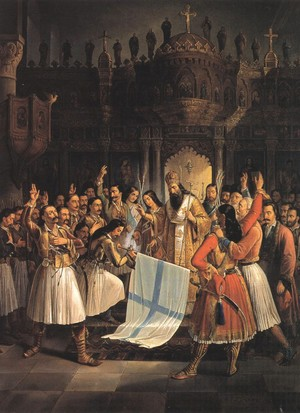<p class='defImage'>Le serment à Aghia Lavara, de Theodoros P. Vryzakis, 1865</p> <p class='credits'>Wikicommons</p><p class='texte'>Le 22 février 1821, la Grèce déclare son indépendance de l\’Empire ottoman et pendant près de 9 ans, les nationalistes ont lutté, avec l\’aide de puissances européennes, contre leur « oppresseur » turc. L\’intérêt « soudain » de ces pays envers ce conflit découle principalement de leurs préoccupations géopolitiques pour le contrôle des Détroits, des Balkans et de la méditerranée orientale. Comme bien des pays d\’Europe (France, Grande Bretagne Autriche-Hongrie), le regard de la Russie est tourné vers la « Turquie d\’Europe ». Que ce soit la Russie ou l\’Autriche-Hongrie, ils attisent des tensions dans les provinces et exacerbent le patriotisme. Ils suivent aussi de près les mouvements insurrectionnels dans la région ou tout autre évènement venant déstabiliser l\’Empire ottoman. Pour sa part, la Russie est animée par une solidarité chrétienne envers les pays des Balkans, ces derniers qui sont à forte majorité orthodoxe (Frémeaux p.72-p.79) (Mantran p.128-129). </br>Le delo 4 contient une série de documents produits par Friedrich Wilhelm von Berg, ces derniers qui rapportent une grande quantité d\’informations au sujet des Balkans et de l\’Empire ottoman. Produit en 1826-1827, ces documents témoignent de l\’implication russe dans la guerre d\’indépendance grecque et de sa rivalité avec la Porte. Initialement passive à l\’égard de ce conflit, la Russie se prépare à intervenir.</br>Dans le document, Berg rapporte les activités grecques et turques. Par exemple les résultats d\’affrontements entre les belligérants, « les Grecs ont voulu surprendre les Turcs, mais attaqué à leur tour, ils ont essuyé quelque désastre » (l.369) ou les déplacements des troupes ou bâtiments turcs : « Ils ont armé dans le port de Constantinople une petite escadre d\’une corvette et de onze bricks, qui seront renforcées aux Dardanelles par 3 bricks encore » (l. 369). Bref, préparant vraisemblablement l\’intervention russe dans le conflit qui oppose les Ottomans aux Grecs, Berg rapporte tous renseignements susceptibles de fournir un avantage stratégique à l\’État-major russe. </br>Un autre aspect qui motive sa collecte de renseignements est le suivi de la préparation russe et ottomane dans le territoire ainsi que la collecte de renseignements topographiques. Par exemple, Berg décrit l\’avancement de l\’armement de six vaisseaux de ligne, soulignant que les officiers russes « saisissent des matelots dans tous les petits ports de la mer de Marmara » (l. 369). Il rédige aussi un rapport sur les forces de terre de l\’Empire ottoman (l.374) et sur la réforme de leurs uniformes (l.372). Enfin, il détaille ses déplacements depuis Bucarest afin de décrire la route que pourrait emprunter une armée se dirigeant, par la terre, vers les détroits et Istanbul. Identifiant les villes, les passages « charriables », les ravins, les forêts, les montagnes et le climat (l. 378), Berg cherche vraisemblablement à préparer une invasion ou du moins, une assistance à la lutte émancipatrice de la Grèce. <p class='titreArchive'>Correspondance de Berg au sujet de la collecte de renseignements topographiques, statistiques et ethnographiques en Turquie <span class='date'> 1826-1827</span> <span class='agent'>Friedrich Wilhelm von Berg</span></p> <p class='archive'>RGVIA. F. 450, op. 1, d. 4 , l. 369-401</p> <p class='auteur'>David Bouchard</p><p class='ref'>FRÉMEAUX, Jacques. <i>La question d\’Orient</i>. Paris, Fayard, 2014, 624 p.</br>MANTRAN, Robert. <i>Histoire de l\’Empire ottoman</i>. Paris, Fayard, 2003, 810 p.</p><p class='tag'> <em>guerre d'\indépendance grecque</em>");
    independanceBou.addTo(myMap)
    independanceBou.addTo(resistanceGroupe)

    var AkkermanCan = L.marker([46.1994, 30.3506], {title: 'La Convention d\'Akkerman (1826)', icon:Diploicon, riseOnHover : true, riseOffset: 999});
    AkkermanCan.bindPopup("<p class='titre'>La Convention d\'Akkerman (1826)</p>  <p class='defImage'>Forteresse de Cetatea Albă, appelée Akkerman (1856)</p> <p class='credits'>Wikipédia</p><p class='texte'>En 1825, l\'empereur Nicolas Ier monte sur le trône de l\'Empire russe. À ce moment, la Russie tient des agents de renseignements dans l\'Empire ottoman pour l\'informer sur ce qui s\'y passe. L\'agent Berg, qui entretient une correspondance soutenue et régulière avec ses supérieurs, fait grandement partie du projet de renseignement. Entre temps, le Sultan Mahmoud II dirige l\'Empire ottoman depuis 1808, ce qui lui vaut une plus large connaissance du souci russo-turc vis-à-vis le tsar qui vient de rentrer dans la partie. En 1826, le Sultan supprime l\'ordre des <a href='https://fr.wikipedia.org/wiki/Janissaire'>Janissaires</a> au profit d\'une nouvelle armée basée sur le modèle européen. Il souhaite ainsi renforcer ses troupes pour mieux se défendre face aux Russes et au reste du monde, mais aussi pour redorer et moderniser son image. Le conflit russo-turc est encore loin d\'être terminé. </br> Certes, la Russie cherche toujours à remporter davantage de gains territoriaux face aux Ottomans. En 1826, l\'Empire ottoman est confronté à la <a href='https://fr.wikipedia.org/wiki/Guerre_d%27ind%C3%A9pendance_grecque'>guerre d\'indépendance grecque (1821-1829)</a> qui d\'ailleurs va bientôt rallier les Grecs aux Russes, ce qui mènera à la neuvième guerre russo-turque. Impliqué dans ce conflit, Mahmoud II se concentre moins sur la Russie. Néanmoins, en 1826, la Russie profite de l\'opportunité pour imposer un ultimatum à Constantinople. </br> Depuis la dernière <a href='https://fr.wikipedia.org/wiki/Guerre_russo-turque_de_1806-1812'>guerre russo-turque (1806-1812)</a>, la Russie tente d\'étendre davantage son hégémonie. En effet, cette guerre se termine avec la signature du traité de Bucarest en 1812. Il y est stipulé que la Moldavie, la Valachie et la Serbie doivent être évacuées par les Russes et principalement les Ottomans, qui y sont depuis très longtemps, ce qui accorde une certaine autonomie à ces pays. Il est écrit dans cette convention que les <a href='https://fr.wikipedia.org/wiki/Hospodar'><i>hospodars</i></a>, soit les dirigeants de la Moldavie et de la Valachie, sont élues pour sept ans selon l\'approbation des signataires du traité. Cependant, parmi les articles rédigés durant ce traité, il y a l\'article VIII qui déclare que les Russes ont le droit de garder un certain regard sur ces régions. Ainsi, en 1826, la Russie impose à la Sublime Porte de mettre ce droit en vigueur. </br> Ceci mène alors à la Convention d\'Akkerman en octobre 1826 pour confirmer ce droit et discuter de nouveaux points. La signature de ce traité entraine donc l\'affirmation du droit de regard russe pour protéger l\'autonomie de la Moldavie et de la Valachie, empêchant dès lors les Ottomans d\'interrompent ce processus. Également, les navires russes sont libres de circuler sur la mer Noire et le Danube. Pour ce qui est du commerce, les détroits du Bosphore et des Dardanelles sont ouverts aux marchands de toutes les nations qui échangent directement avec la Russie. De cette façon, l\'Empire russe ressort gagnant de cette convention. L\'Empire ottoman, mécontent de la situation, ne s\'empêche pas, quelque temps plus tard, de renoncer à cet accord et de tenter de reprendre le contrôle sur la Moldavie, la Valachie et la Serbie. Cette action aboutit alors à une déclaration de guerre par l\'Empire russe, ce qui mène à la guerre russo-turque de 1828-1829. </br> Finalement, on observe que ces deux empires sont constamment en conflit et que tout est remis sur table à un moment ou à un autre. La présence des agents russes en territoire turc permet aux Russes de savoir quoi faire et quand agir en leur faveur. À ce moment de l\'histoire, la Convention d\'Akkerman survient à une époque où l\'Empire ottoman est vulnérable en raison de la guerre d\'indépendance grecque. Donc quel moment pourrait être le plus opportun que celui-ci? Ainsi, il est possible de croire que les échanges entre les agents et les dirigeants russes ont une importance stratégique capitale pour permettre à l\'Empire russe d\'agir intelligemment et au bon moment. Berg contribue grandement à ce jeu russo-turc en informant tous les faits et gestes des Ottomans et de ce qui se passe à Constantinople. À l\'intérieur de ses lettres, tous les hommes influents et leurs actions sont nommés et tout ce qui est en sa connaissance est noté. On pourrait penser à un journal quotidien. </p> <p class='titreArchive'>«Correpondance interne du <i>H.I.M. General Staff</i> à propos d\'envoyer le Colonel Berg en Turquie; informations topograpiques, statistiques et ethnographiques de la Turquie collectées par Berg» <span class='date'>1826-1827</span> <span class='agent'>Friedrich Wilhelm von Berg</span> <span class='archive'>RGVIA. F. 450, op. 1, d. 4.</span/></p> <p class='auteur'>Victoria Candat</p><p class='ref'>CASTELLAN, Georges. <i>Histoire des Balkans, XIVe-XXe siècle</i>. Fayard, 1991, 643p. </br> « Convention of Akkerman ». Encyclopedia Britannica. s.d.,<a href= ‘https://www.britannica.com/topic/Convention-of-Akkerman’_blank’>https://www.britannica.com/topic/Convention-of-Akkerman</a> </br> « Russo-Turkish wars ». Encyclopedia Britannica. s.d.,<a href= ‘https://www.britannica.com/topic/Russo-Turkish-wars’_blank’>https://www.britannica.com/topic/Russo-Turkish-wars</a></p><p class='tag'> <em>Convention d\'Akkerman</em> <em>Empire ottoman</em> <em>Empire russe</em>");
    AkkermanCan.addTo(myMap)
    AkkermanCan.addTo(DiplomatieGroupe)

    var SectionMilitaireDio = L.marker([41.8863, 28.0513], {title: 'La section militaire de la légation russe et des magasins de ravitaillement', icon : Spyicon, riseOnHover : true, riseOffset: 999});
    SectionMilitaireDio.bindPopup("<p class='titre'>Le travail de la section militaire de la légation russe à Constantinople</p>  <p class='defImage'>Extrait de «&nbsp;La Turquie dans l'Europe&nbsp;», carte de S. Hall, 1828.</p> <p class='credits'>David Rumsey</p><p class='texte'>Le colonel Berg, dépêché à Constantinople dans les années 1820, fait partie du renseignement militaire russe, un dispositif relativement nouveau à l\’époque pour les armées d\’Europe. En effet, le renseignement militaire prend son essor lors des guerres napoléoniennes, lors desquelles on accorde une attention nouvelle à l\’information que l\’on peut recueillir en temps de paix sur les ennemis potentiels, par opposition aux seuls renseignements des unités de reconnaissance en campagne. Se développent ainsi des réseaux d\’officiers militaires basés dans les ambassades, lesquels amassent quantité de renseignements, en sillonant le territoire et à l\’aide de leurs cercles d\’informateurs, ou d’«&nbsp;espions&nbsp;»<sup>1</sup>.</br></br>À Constantinople, la légation officielle russe possède une section militaire composée d\’officiers et de diplomates dont la principale occupation est cette collecte de données. Les correspondances et les notes de l\’agent Berg (F. 450, op. 1, de. 4, li. 339-370) sont révélatrices sur le rôle que ce dernier joue au sein des services de renseignement russe, mais également sur la teneur des instructions que pouvaient recevoir les agents en poste à l\’étranger. Dans le contexte de l\’Empire ottoman dans la seconde moitié des années 1820, la probabilité élevée d\’une guerre entre cet État et l\’Empire russe oriente fortement la direction des affectations, de même que leurs contraintes temporelles.</br></br>Les correspondances que Berg entretient avec son état-major à Saint-Pétersbourg nous apprennent que ce dernier occupe un rôle de superviseur pour au moins une partie de la section militaire de la légation russe de Constantinople. En effet, celui-ci communique les allées et venues de plusieurs de ses collègues, notamment le lieutenant Liven, le lieutenant-colonel Rougguet et le capitaine en second Toutchkoff. Ses lettres comprennent le progrès des opérations de relève topographique et d\’informations, mais également les situations extraordinaires comme les maladies contractées par ces derniers. Le colonel Berg se montre indulgent à l\’endroit de son collègue Rougguet lorsque celui-ci est atteint, allant même jusqu\’à pointer son trop grand dévouement à la tâche comme l\’ayant affaibli.</br></br>Berg est aussi responsable de la gestion de ressources humaines de la section, qu\’il assigne aux trajets et régions à relever selon les instructions de l\’état-major, mais souvent selon son analyse des besoins d\’information que pourrait avoir l\’armée. Il affecte donc des agents à la levée de routes précises entre des villes d\’importance stratégique pour leur taille, leurs ressources et leur localisation, par exemple entre Andrinople ou Brousse (Bursa) et la capitale ottomane, ou entre Enos (Enez) et Andrinople. Loin de se limiter aux routes, Berg fait aussi relever des sections des côtes grecques et turques, de même que les principaux ports de mer et les îles de Morée. Il indique dans sa correspondance la durée prévue pour chaque levée et le montant d\’allocation mensuelle nécessaire à chaque agent.</br></br>Les données que Berg et ses collègues tentent d\’obtenir pour la Russie sont aussi à propos de l\’armée turque. L\’état-major cherche à savoir combien de troupes le sultan dispose, où sont les garnisons, les fortifications, comment avance la formation de nouveaux éléments, comment fonctionne le Tanzimat, ou encore si les institutions dissoutes comme les janissaires et les spahis sont réellement inopérantes ou si elles sont simplement en dormance et pour être possiblement réinstaurées. Ainsi, les agents dépêchés à travers la Turquie ou les Balkans doivent, en plus de leurs relevés topographiques, questionner des habitants ou observer eux-mêmes si c’est possible les troupes ottomanes pour en savoir plus sur ces sujets.</br></br>Les rapports de Berg contiennent, en plus des informations discutées précédemment, toutes les nouvelles et les événements politiques, diplomatiques et militaires qu\’il peut amasser, ainsi que son interprétation personnelle. Ainsi on y retrouve des nouvelles concernant la révolte et la guerre civile grecque, les mouvements de troupes ottomanes et des insurgés, les forts tenus par les deux côtés et les intrigues qui peuvent se dérouler sur ce front. Il discute par exemple de la forteresse de Palamide (Palamidi) que se disputent des factions grecques, des agents autrichiens qui travaillent pour la Porte en Morée et des déboires des généraux Richard Church et Theodoros Kolokotronis. Il mentionne la marine grecque nouvellement pourvue de navires, qu\’il estime être la dépense de l\’Angleterre, ainsi que les rumeurs sur les mouvements des flottes égyptiennes et turques. Berg mentionne également les conséquences de nouvelles provenant d\’Odessa concernant le mouvement des navires russes, qui aurait provoqué une panique parmi les Turcs et la légation autrichienne de Constantinople. Il apparaît ici évident que ces nations sont très conscientes de l\’imminence d\’une guerre entre les empires russe et ottoman. Berg ajoute parfois son avis personnel, quanlifiant par exemple de «&nsbp;soi-disant&nsbp» les alliés de la Russie lorsqu\'il commente les objectifs des nations européennes dans le conflit en Grèce.</br></br>Enfin, Berg a aussi des commandes de l\’état-major qui lui sont personnellement adressées. En septembre 1827, il répond à une demande d\’identification des endroits propices à l’établissement d\’une chaîne de magasins d\’approvisionnement le long de la rive occidentale de la Mer Noire (voir le marqueur), pour soutenir les troupes russes en cas d'invasion. Pour répondre à cette commande, il met à profit les observations de ses collaborateurs de section, mais également ses observations personnelles qu\’il a effectuées lors d\’un voyage en 1818, de même que toute informations à sa portée. Ces dernières paraissent parfois douteuses, notamment un mémoire anonyme, traduit par l\’assesseur de collège Nicolas Konstantinoff, qui dévoilerait l\'endroit idéal pour un débarquement en Thrace orientale. D\’autre part, il semble que cette commande ne soit pas particulièrement facile à remplir pour Berg, qui réside à Constantinople et qui ne dispose que d\’une poignée d\’agents et de ressources limitées. Ainsi, pour plusieurs des emplacements retenus, Berg ajoute qu\’il sera nécessaire d\’y envoyer un agent pour s\’assurer de la justesse de son choix.</br></br>Au fil de la lecture de ce delo, il apparaît que la communauté du renseignement à Constantinople est alors assez peu secrète. Ainsi, les divers officiers de nations alliées et ennemies peuvent facilement communiquer, mais également se retrouver mêlés à toutes sortes d\’intrigues, exacerbées par les journaux comme le <i>Spectateur Oriental</i> et l’<i>Observateur Oriental</i>. Berg se plaint notamment de leur trop grande liberté éditoriale à son état-major, qui les rend prompts à publier les petits incidents et les rumeurs. Le <i>Spectateur</i> aurait d\’ailleurs publié des calomnies au sujet de Berg en déformant un incident entre celui-ci et le consul d\’Espagne à Smyrne. Berg dira en outre du <i>Spectateur Oriental</i> que ce journal est financé par l\’Autriche, ce qui pourrait expliquer leurs différends… Souvent adjoints aux correspondances de Berg, ces journaux sont autant utilisés comme source qu\’ils sont critiqués. Néanmoins, malgré une pertinence parfois douteuse, ils demeurent un rouage intégrant du renseignement occidental au Levant.</br></br>En somme, les observations qu\’il est possible de faire des écrits du colonel Berg confirment plusieurs thèmes récurrents du renseignement militaire de l\’époque. Les agents n\’ont pas de formation particulière, seulement des compétences linguistiques et cartographiques pratiques, et doivent par nécessité s\’appuyer sur une foule d\’informateurs, notamment des marchands et des employés des administrations civiles. L\’emploi d\’«&nbsp;espions&nbsp;» n\’est donc pas systématique, mais plutôt «&nbsp;<i>ad hoc</i>&nbsp;»; dicté par le besoin de combler les lacunes des sections. D\’autre part, les notes et les correspondances montrent que les informations amassées par Berg et les membres de sa section sont aussi variés que l\’est leur provenance, et ainsi leur fiabilité. Les données sont consignées ensemble dans des carnets ou relatées les unes à la suite des autres dans les correspondances, avec peu de traitement de classification outre quelques dates. Il est donc difficile, parfois impossible, de déterminer quelle information est de source sûre, comme les observations directes des agents de la section, des informations de seconde main ou même des rumeurs<sup>2</sup>. Le travail des membres de l\’état-major en était forcément alourdi. Comme l\’explique David Kahn, dans son article «&nbsp;The Rise of Intelligence&nbsp;» le flot d\’information qui submerge l\’état-major est croissant au cours du XIX<sup>e</sup> siècle et ce dernier n\’est plus suffisant pour en gérer la complexité. C\’est ce qui entraînera la création des premiers bureaux centralisés de renseignement, qui auront la fonction, mais surtout les moyens d\’évaluer la pertinence des informations recueillies à l\’étranger. En Russie, il faudra attendre la défaite de 1856 pour qu\’un tel bureau apparaîsse<sup>3</sup>.</p> <p class='titreArchive'>« \\\» <span class='date'>1827</span> <span class='agent'>Berg</span> <span class='archive'>RGVIA. F.&nbsp;450, op.&nbsp;1, d.&nbsp;4, l.&nbsp;339-370.</span/></p> <p class='auteur'>Henri Dion</p><p class='ref'></br><sup>1</sup> et <sup>3</sup> David Kahn, «&nbsp;The Rise of Intelligence&nbsp;», <i>Foreign Affairs</i>, vol.&nbsp;85, n°&nbsp;5, octobre 2006, p.125‑134.</br><sup>2</sup> İbrahim Köremezli, «&nbsp;Shpion vs. Casus: Ottoman and Russian Intelligence in the Balkans during the Crimean War (1853–56)&nbsp;», <i>Middle Eastern Studies</i>, vol.&nbsp;50, n°&nbsp;2, mars 2014, p.192‑207.</br></p><p class='tag'> <em>agents</em> <em>Guerre russo-turque</em> <em>Berg</em> <em>renseignement</em> <em>information</em> <em>section</em> <em>légation</em> <em>Constantinople</em> <em>Russie</em> <em>routes</em> <em>informateurs</em> <em>correspondances</em> <em>topographique</em> <em>journaux</em> <em>notes</em> <em>magasins</em> <em>relevés</em> <em>ports</em> <em>Balkans</em>");
    //SectionMilitaireDio.addTo(myMap);
    SectionMilitaireDio.addTo(renseignementGroupe);

    var BuyukdereLam = L.marker([41.1605, 29.0428], {title: 'Büyükdere', icon: Logistiqueicon, riseOnHover : true, riseOffset: 999});
    BuyukdereLam.bindPopup("<p class='titre'>Berg et la guerre en Grèce</p>  <p class='defImage'>Vue de la partie occidentale du village de Büyükdere</p><p class='credits'><a href='http://commons.wikimedia.org/wiki/File:Vue_de_la_partie_occidentale_du_village_de_Buyuk-D%C3%A9r%C3%A9_sur_la_rive_europ%C3%A9enne_du_Bosphore_-_Melling_Antoine_Ignace_-_1819.jpg' target='_blank'>Wikicommons</a></p><p class='texte'>En 1827, date de production du document analysé ici, une crise se joue en Orient: la guerre d\’indépendance de la Grèce<sup>1</sup>. Bien qu\’il puisse avoir l\’air d\’un enjeu isolé, ce conflit pourrait potentiellement avoir des effets néfastes pour l\’Occident en entier, des points de vue diplomatique, politique et économique. C\’est d\’ailleurs pour cette raison que les puissances européennes décident de s\’en mêler, alors que la révolte se déroule sur le territoire de l\’Empire Ottoman. Le Colonel <a href='http://fr.wikipedia.org/wiki/Friedrich_Wilhelm_von_Berg' target='_blank'>von Berg</a> fait état dans un document adressé à l\’état-major de l\’armée russe de la situation dans l\’Empire ottoman et des actions des différentes forces en présence, notamment concernant le conflit grec.</br></br><b>Authenticité et crédibilité</b></br>Attardons-nous d\’abord au document en tant que tel et à son auteur. Le document est bel et bien écrit et signé par Berg, qui se trouve apparemment à Bouyoukdéré (ou Büyükdere), sur la rive européenne du Bosphore. Cependant, il semble qu\’il n\’est pas celui qui recueille directement toutes les informations: il mentionne en effet plusieurs informateurs, à qui il semble accorder assez de confiance pour transmettre les fruits de leur travail à ses supérieurs. Cela peut s\'expliquer par le fait que Berg est un topographe: les jeux de coulisse politiques ne sont donc pas nécessairement sa spécialité. Quant à la crédibilité de Berg lui-même, elle semble assez solide: il est un haut gradé de l\’armée russe et obtiendra même, éventuellement, le poste de gouverneur-général de Finlande. De plus, il prend la peine d\’exposer les différentes hypothèses qu\’il se fait, ou les différents points de vues de ses informateurs, dans le but d\'offrir une vision globale de la situation.</br></br><b>Analyse du contenu</b></br>Alors que le document peut sembler n’avoir que peu de structure au premier abord, on réalise en fait que Berg organise les informations en deux sections: ce qui concerne directement la Turquie d\’abord, ce qui concerne les autres puissances européennes ensuite. Cela est cohérent avec le climat de l\’époque: le tsar Nicolas I<sup>er</sup> a l\’intention claire de faire la guerre à la Porte, puisqu\’il a des vues sur les pays orthodoxes du Caucase<sup>2</sup>. Berg nous apprend donc que les garnisons de Constantinople sont mal équipées, mal habillées et qu\’elles manquent de mousquets, car les soldats n\’en prennent pas assez soin et finissent par les abîmer (l. 248 r.). Les soldats ont également détruit trois batteries placées sur le Bosphore; des officiers dont l\’origine n\’est pas mentionnée leur ont fait remarquer l\’imprudence de la chose et les batteries sont en cours de reconstruction.</br>D\'ailleurs, Vienne semble déployer de grands efforts pour aider le sultan; on peut le remarquer d\’après les informations rapportées par Berg. En effet, les Autrichiens ont offert (ou vendu à plus bas prix, ce n\’est pas clair) des armes aux Ottomans afin de combler leur manque. De plus, des bas-officiers autrichiens ont été envoyés afin d\’aider à l\’organisation et à la réforme des régiments turcs (l. 248 v.). L\’Autriche offre donc une aide militaire, mais aussi diplomatique à la Sublime Porte. Elle aurait conseillé aux Turcs « d\’agir sur terre et sur mer avec énergie » et de traîner la négociation avec les rebelles grecs jusqu\’à l\’ouverture du parlement anglais, qui pourrait prendre position en sa faveur (l. 251 r.). L\’Autriche semble être la puissance qui inquiète le plus les Russes, puisque Berg accorde plusieurs pages aux actions de ses représentants.</br>En ce qui concerne les Anglais et les Français, il ne mentionne seulement que les premiers ont réuni leurs bâtiments et se dirigent vers la Morée, et que les seconds aident à l\’organisation de l\’armée turque. Mais pourquoi ces puissances accordent-elles autant d\’importance à cette révolte? C\’est parce qu\’il y a un risque d\’interruption du commerce. En effet, le sultan en place ne semble que peu enclin à se soumettre à la médiation européenne afin de régler le conflit qui l\’oppose à la Grèce<sup>3</sup>. Si le sultan décide de rompre les liens, le commerce qui passe par les Détroits est lui aussi rompu (l. 256 r.). Cela inquiète particulièrement la Russie, qui tient à conserver son accès à la Méditerranée et à continuer à exporter ses produits de la Mer Noire. Déjà, au moment où Berg écrit, le prix du blé a commencé à augmenter et les populations grecques sont mal approvisionnées. Puisqu\'en Grèce on ne sème ni ne récolte, la population n\'a de réserves que pour quelques mois (l. 256 v.). </br>Berg termine sa lettre avec cette affirmation: «(...) une rupture avec la Porte n\'est pas probable, mais elle est possible. Si elle avait lieu il faudrait peut-être mettre cette circonstance au nombre des raisons en faveur d\'un plan de campagne (...)» (l. 256 v.). </p> <p class='titreArchive'>«Rapport du Colonel von Berg à l\'état major de l\'armée russe» <span class='date'>août 1827</span> <span class='agent'>Friedrich Wilhelm von Berg</span> <span class='archive'>RGVIA. F. 450, op. 1, d. 4, l. 245-258 v.</span/></p> <p class='auteur'>Catherine Lampron</p><p class='ref'><sup>1</sup> TERNON, Yves. « Chapitre 4. La guerre d\’indépendance grecque ». <i>Empire ottoman: le déclin, la chute, l\’effacement</i>. Paris, Éditions Michel de Maule, 2005 (2002), p.&nbsp;125-136.</br><sup>2</sup> MANTRAN, Robert. « Chapitre XI. Les débuts de la Question d\’Orient (1774-1839) ». dans Robert Mantran, dir. <i>Histoire de l\’Empire Ottoman</i>. Paris, Fayard, 1989, p.&nbsp;421-458.</br><sup>3</sup> <i>Ibid.</i></p><p class='tag'> <em>Turquie</em><em>Berg</em><em>Autriche</em><em>Grèce</em>");
    //BuyukdereLam.addTo(myMap)
    BuyukdereLam.addTo(logistiqueGroupe)

    var BouyoukdereLor = L.marker([41.1646, 29,0455], {title: 'Bouyoukdéré', icon:Topoicon, riseOnHover : true, riseOffset: 999});
    BouyoukdereLor.bindPopup("<p class='titre'>Collecte d'informations et situation politique de la Turquie (1827)</p>  <p class='defImage'>« Le Bosphore, avec les châteaux d'Europe et d'Asie » (XIX<sup>e</sup> siècle)</p> <p class='credits'> Wikimedia Commons </p><p class='texte'>La source à l\’étude cette semaine fait partie d\’une suite de correspondances entre l\’État-major russe pour envoyer l\’agent de renseignement et géographe Friedrich Wilhelm von Berg en Turquie, suivie par des informations topographiques, statistiques et ethnographiques récoltées par ce dernier une fois sur place. Comme il a déjà été mentionné dans d’autres marqueurs, l’année 1827, où les rapports de Berg sont rédigés, est particulièrement importante considérant que la <a href='https://fr.wikipedia.org/wiki/Convention_d%27Akkerman' target=' blank'>convention d’Akkerman</a> a été signée en 1826 et que la <a href='https://fr.wikipedia.org/wiki/Guerre_russo-turque_de_1828-1829' target=' blank'>guerre russo-turque</a> sera déclarée l’année suivante et durera de 1828 à 1829. Dans ce contexte, on peut considérer que lorsque Berg effectue sa récolte d’informations, il sait très bien que celles-ci doivent être utilisées dans le cadre d’un conflit imminent. Cela transparaît dans le type d’informations qu’il fournit, qu’il soit politique ou directement militaire. Par conséquent, Berg ne fait pas que noter des informations de façon descriptive, mais fait également usage d’un esprit critique et stratégique pour ainsi fournir des propositions à l’État-major. C’est le cas, par exemple, lorsqu’il suggère fortement de ne pas mettre trop d’efforts et de temps sur l’aspect naval, qui peut s’avérer être un terrain difficile pour la Russie, et ainsi de considérer dans une même mesure les routes terrestres<sup>1</sup>.<br/><br/>Le marqueur est placé sur le quartier de Bouyoukdéré, puisque c’est là que semble être basé Berg et qu’il signe tous ses rapports. Cet emplacement est très logique, puisqu’au moment où Berg écrit, son travail consiste à relever le plus d’informations possibles sur la presqu’île de Constantinople, mais aussi sur les deux rives du détroit. Berg n’hésite pas à souligner l’importance de sa tâche et va même jusqu’à la qualifier de « perle de tous nos travaux dans ce pays<sup>2</sup>. » Or, outre les relevés de nature géographique, Berg mentionne aussi souvent la situation politique dans la région. Il mentionne ainsi la mort de M. Canning, Premier Ministre du Royaume-Uni, qui pourrait, du moins pendant un certain temps, faire adopter une attitude plus passive aux Anglais<sup>3</sup>. Il note également l’attitude, selon lui, plutôt belliqueuse du Sultan ottoman. Néanmoins, il complète en disant que cette attitude n’est que façade et que devant les drapeaux russes elle s’effondrerait très rapidement<sup>4</sup>. Bref, Berg semble être un agent fondamental pour l’État-major russe, puisqu’en plus de leur fournir des données géographiques et topographiques, il se tient au courant de la situation politique et n’hésite pas à analyser les faits pour arriver à des suggestions concrètes. </p> <p class='titreArchive'><i>Informations topographiques, statistiques et ethnographiques à propos de la Turquie, collectées par Berg</i> <span class='date'>1827</span> <span class='agent'>Friedrich_Wilhelm_von_Berg</span> <span class='archive'>RGVIA. F. 450, op. 1, d. 4, l. 263-291.</span/></p> <p class='auteur'>Thomas Lord</p><p class='ref'><sup>1</sup> RGVIA. F. 450, op. 1, d. 5, l. 267.<br/><br/><sup>2</sup> <i>Ibid.</i>, l. 270 v.<br/><br/><sup>3</sup> <i>Ibid.</i><br/><br/><sup>4</sup> <i>Ibid.</i>, l. 268 v.</p><p class='tag'> <!--<em>Turquie</em>--> <!--<em>Bouyoukdéré</em>--> <!--<em>Informations</em>-->");
    //BouyoukdereLor.addTo(myMap)
    BouyoukdereLor.addTo(topographieGroupe)

    var CorinthePic = L.marker([37.9332, 22.9373], {title: 'Conflit entre la Turquie et la Grece', icon:Econoicon, riseOnHover : true, riseOffset: 999});
    CorinthePic.bindPopup("<p class='titre'>Conflit entre la Turquie et la Grece</p>  <p class='defImage'>Photographie de Ibrahim Pacha</p> <p class='credits'>Wikicommons</p><p class='texte'> Ce delo se situe fort probablement lors de la guerre d\'indépendance grecque de 1821 et 1829. L\’auteur du delo se trouvent être l\’agent Berg. Il décrit dans la grande majorité des listes les évènements de préparation d\’une possible invasion de la Turquie sur le territoire grec. La Trace sous l\’emprise des Turcs se prépare en effet avec une flotte, très probablement aidé par les Égyptiens. Parmi les apports en approvisionnement stratégique, la ville de Corinthe est mentionnée plusieurs fois. Notamment, un certain colonel bavarois non nommé s\’assure de son approvisionnement. Berg est certain que l\’intervention des puissances européennes n\’est pas à craindre, car elle arrivera trop tard dans le conflit opposant la Grèce et la Turquie. Cependant, l\’histoire démontra que c\’est finalement la Grèce qui reçut un appui de ces dernières puissances. La Porte est très active et tente plusieurs actions pour freiner les efforts vers Corinthe. Les Dardanelles sont aussi mentionnés. On y discute de fortifications et d\’informations floue qui mérite d\’être éclaircie par de nouveaux informateurs. Berg mentionne que la Turquie a effectué l\’arrêt de la séparation des pouvoirs entre l\’administratif et l\’exécutif. Aussi, le gouvernement turc permet désormais l\’exportation de biens jusque-là prohibée telle que l\’huile de blé et le suif. Plusieurs observateurs prétendent que cela va amener une abondance de richesse nationale. Ibrahim Pacha et le général Fernig sont mentionnés à plusieurs reprises, surtout lors de discussions qu\’ils ont entre eux. Ibrahim Pacha ne mâche pas ses mots envers la Grèce et assure leur domination et leur asservissement. L\’agent Berg fera mention qu\’un de ses informateurs lui assure que les tensions entre la Grèce et la Turquie se sont transformées en une rivalité cruelle et d\’extermination. </p> <p class='titreArchive'>«Lettres de l’envoyé Berg » <span class='date'>1879-1880</span> <span class='agent'>Berg</span> <span class='archive'>TsGIA. F. 450, op. 1, delo 4, section 8</span/></p> <p class='auteur'>David Picard</p><p class='ref'> Heraclides, A., & Dialla, A. (2015). Intervention in the Greek War of Independence, 1821–32. In Humanitarian Intervention in the Long Nineteenth Century: Setting the Precedent (pp. 105-133). Manchester</p><p class='tag'> <em>Perse</em>");
    //CorinthePic.addTo(myMap)
    CorinthePic.addTo(economieGroupe)

    var PeraRou = L.marker([41.0500, 22.9700], {title: 'Pera', icon : Spyicon, riseOnHover : true, riseOffset: 999});
    PeraRou.bindPopup("<p class='titre'>Rapports de Pera (fév.-avr. 1827)</p> <p class='defimage'>Comte Pavel Dmitrievich Kiselev: Portrait par Franz Krüger, 1851</p><p class='credits'><a href='https://commons.wikimedia.org/wiki/File:Kiseleff.jpg' target='_blank'>Wikicommons</a></p><p class='texte'>Note: Ces rapports du Colonel Berg sont plus ou moins lisibles.  Certaines parties sont bien claires tandis que d’autres sont difficilement compréhensibles tant il y a de mots indéchiffrables.  Les extraits ci-dessous s’inscrivent dans la thématique de la question grecque.  Cette question, qui s’étend sur une période nettement plus longue que les quelques trois mois au cours desquels ont été rédigés les rapports considérés, n’en est pas moins presqu’omniprésente.<br><br><u>Contexte</u><br>À partir du début du XIXe siècle et pendant plusieurs décennies, la Russie vise à maintenir une politique de &#171&#160voisin faible&#160&#187 en ce qui concerne l’Empire Ottoman.  Cette politique part de la prémisse qu’il est préférable pour la Russie de ne pas poursuivre une politique expansionniste en Turquie mais de s’assurer que l’Empire Ottoman demeure suffisamment faible pour que les russes puissent exercer une dominance <i>de facto</i> sur le gouvernement de Constantinople<sup>1</sup>.<br> Pour les Russes, la conclusion logique de cette politique était de donner à la Turquie un statut informel de protectorat russe.  Au cours des années 1820, cette politique a poussé la Russie à éviter une intervention directe dans le conflit entre les Grecs et les Turcs<sup>2</sup>, même si une grande partie de la population russe était favorable à la cause des Grecs<sup>3</sup>.<br>En Europe, tandis que le tsar vise à négocier la question grecque à son avantage, l’Autriche perçoit les avantages que la Russie pourrait y gagner comme une menace.<br>Par ailleurs, dès le printemps 1826, le Protocole de St-Pétersbourg entérine une entente entre l’Angleterre et la Russie visant à mettre de la pression sur la Porte afin d’assurer que le conflit ne dégénère pas en une guerre contre les Ottomans.  Les deux pays ont alors intérêt à ce que le territoire occupé par le Turquie demeure, en quelque sorte, neutre, c’est-à-dire qu’il ne soit pas sous l’influence d’une puissance européenne.  Le Protocole précise ainsi que les deux pays signataires offriront leur médiation à la Porte, que la Grèce deviendra un pays autonome tout en continuant à payer un tribut au Sultan et que ni l’Angleterre, ni la Russie ne profiteront du conflit pour acquérir des avantages commerciaux ou des territoires aux dépens de la Turquie<sup>4</sup>.<br><br><u>Situation des forces grecque et turque</u><br>Certaines parties des rapports font état de la situation des Grecs telle qu’elle parvient à la connaissance du colonel Berg.  Ces informations sont parcellaires.  Ainsi, le 9 mars (1827), il annonce la nouvelle d’une défaite des Grecs devant Athènes tout en soulignant que la prise d’Athènes n’est pas confirmée<sup>5</sup>.  Le 22 mars suivant, il rapporte quelques avantages remportés par les Grecs et l’arrivée de <a href='https://www.undiscoveredscotland.co.uk/usbiography/c/thomascochranedundonald.html' target='_blank'>Lord Cochrane</a>, amiral anglais, et le 6 avril, il annonce que ce dernier a mouillé à Poros<sup>6</sup>.<br>Dans cette même missive du 6 avril, il décrit longuement les forces en présence.  Il mentionne le chef grec <a href='http://www.greece.com/info/people/Georgios_Karaiskakis/' target='_blank'>Karaiskakis</a> qui marche sur Missolonghi de même que les mouvements d’autres petits corps grecs.  Quant aux Turcs, il souligne que <a href='https://en.wikipedia.org/wiki/Re%C5%9Fid_Mehmed_Pasha' target='_blank'>Reshid Pacha</a> est dans une «&#160triste situation&#160», l’inactivité d’<a href='http://www.aly-abbara.com/voyages_personnels/egypte/dynastie_Muhamad_Ali/Ibrahim_Pacha.html' target='_blank'>Ibrahim Pacha</a> en Morée (Péloponnèse) et passe en revue l’ensemble des hommes disponibles pour servir la Porte<sup>7</sup>.  En apparence, conclut-il, l’avantage va aux Turcs mais il se garde bien de se prononcer sur l’issue probable de la guerre, déterminant qu’il est impossible de la prévoir<sup>8</sup>.<br>Berg souligne que des informations circulent (quoique sans en confirmer la véracité) à l’effet que l’Autriche appuierait la Porte et les Égyptiens (impliqués dans le conflit en support à la Turquie) par des armes et autres propagandes<sup>9</sup>.<br><br><i><u>Si vis pacem, para bellum</u></i><br>Considérant l'incertitude que le traité d’Akerman soit respecté par la Porte, voire que la médiation prévue au Protocole de St-Pétersbourg soit même acceptée, le colonel Berg présente quelques conclusions militaires dans l’éventualité où surviendrait une guerre russo-turque qui, nous le savons depuis, se déclenche en 1828.  En abrégé, voici quelques points soulevés par l’envoyé de la mission sont les suivants: Points 1 et 2. Il faudrait débuter la campagne au cours de l’été, l’automne et le printemps présentant des obstacles inhérents aux troupes russes qui doivent passer le Danube; Point 3.  Il conviendrait de laisser la marine anglaise voguer vers Constantinople pendant que les Russes font campagne le long du Danube<sup>10</sup>.<br>Il est ici intéressant de souligner le rôle du général P. D. Kiselev dans cette affaire.   Ce général est un des plus grands stratèges russes en ce qui concerne une campagne possible en Turquie<sup>11</sup>.  Dès le début des années 1820, soit peu après le début de l’insurrection grecque, Kiselev se montrait en faveur de les appuyer<sup>12</sup>.  Ce général a été particulièrement influent dans la réforme de l’armée et il est responsable du développement d’un Quartier-Maître (<i>Quartermaster Staff</i>) responsable de la collection et de l’analyse d’informations devant servir de base à l’élaboration de plans spécifiques pour la guerre, une innovation au début du XIXe siècle<sup>13</sup>.  Il s’est aussi imposé, notamment par sa collaboration avec Diebitsch, comme un incontournable en ce qui concerne les plans d’une éventuelle guerre russo-turque, élaborant des manoeuvres militaires spécifiques à cet égard<sup>14</sup>.  Incidemment, c’est une adaptation d’un plan de guerre initié en 1811 par Kiselev qui procure finalement un avantage aux Russes en 1829<sup>15</sup>.<br><br>1. Bitis, A. «&#160The Russian Army and the Eastern Question, 1821-1834&#160», Thèse de doctorat, The London School of Economics and Political Science, 2000, p. 22<br>2. <i>ibid.</i><br>3. Marriott, J.A.R. «&#160The Struggle for Hellenic Independence&#160», <i>The Eastern question: an historical study in European diplomacy</i>, Oxford, Clarendon Press, p 213<br>4. Marriott, J.A.R. «&#160The Struggle for Hellenic Independence&#160», <i>The Eastern question…</i> pp. 214-215.  La question des Principautés du Danube (Vallachie et Moldavie) et de la Serbie cause toujours des irritants entre le tsar et le Sultan.  Le traité d’Akerman, que la Porte se voit plus ou moins contrainte de signer en octobre 1826, a pour but d’adresser ces questions mais est, en fin de compte, essentiellement en faveur de la Russie (<i>id</i>. p. 217).  Berg, étant d’avis que placé devant une guerre inévitable autrement, les Turcs se plieraient à la volonté de la Russie et réfère à cet égard, à ce traité d’Akerman (RGVIA, Fond 450, Opis 1, delo 4, l 114-114v, 22 février 1827).<br>5. RGVIA, Fond 450, Opis 1, delo 4, l 118, 9 mars 1827<br>6. RGVIA, Fond 450, Opis 1, delo 4, l 142 (22 mars 1827) et l 144 (6 avril 1827)<br>7. RGVIA, Fond 450, Opis 1, delo 4, l 144-l 146v, 6 avril 1827<br>8. RGVIA, Fond 450, Opis 1, delo 4, l 147-l 147v, 6 avril 1827<br>9. e.g. RGVIA, Fond 450, Opis 1, delo 4, l 135-135v, l 147, 6 avril 1827<br>10. Berg fait aussi référence à l’envoi d’une flotte russe et autres considérations mais l’écriture est pratiquement incompréhensible sur ces passages.  RGVIA, Fond 450, Opis 1, delo 4, l 115v-116v, 22 février 1827<br>11. Selon A. Bitis, il est une des personnalités dominantes en ce qui concerne les affaires ottomanes, au même titre que <a href='https://www.britannica.com/biography/Johann-Graf-Diebitsch' target='_blank'>I. I. Diebitsch</a> qui mènera une campagne victorieuse pour la Russie en Europe ottomane lors de la guerre de 1828-1829. Bitis, A. «&#160The Russian Army and…&#160», p. 11<br>12. Bitis, A. «&#160The Russian Army and…&#160» p. 28.  Cette opinion n’étant pas partagée par le tsar ou même par le Comte Nesselrode, Kiselev s’est toutefois rangé derrière la politique officielle.<br>13. <i>id</i>. p. 40.  Le programme de collection des données et renseignements serait à l’origine de l’envoi en mission du Colonel Berg (<i>id</i>. p. 139, note no. 6)<br>14. <i>id</i>. pp. 100-101<br>15. <i>id</i>. pp. 114-119</p><p class='titreArchive'>Correspondance interne du Staff General H.I.M. au sujet de l’envoi du Colonel Berg en Turquie; informations topographique, statistique et ethnographique sur la Turquie, acquise par Berg<span class='date'>1826-1827</span> <span class='agent'>Colonel Berg</span> <span class='archive'>RGVIA F450 Opis 1 delo 4, l 113 - l 151</span/></p> <p class='auteur'>Camille Routhier</p>");
    //PeraRou.addTo(myMap)
    PeraRou.addTo(renseignementGroupe)

    var OdessaStj = L.marker([46.4847, 30.7458], {title: 'Odessa, ville portuaire', icon:Econoicon, riseOnHover : true, riseOffset: 999});
    OdessaStj.bindPopup("<p class='titre'>Odessa, ville portuaire</p> 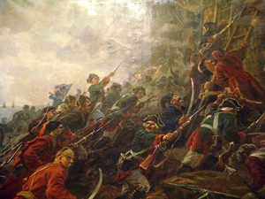 <p class='defImage'>Prise de la de la forteresse de Khadjibey, aujourd'hui Odessa</p> <p class='credits'><a href='https://commons.wikimedia.org/wiki/File:Shturm_kreposti_Hadjebey.JPG'target='_blank'>Wikicommons</a> </p><p class='texte'>En 1794, « [Catherine la Grande] fait construire au nord de sa nouvelle frontière, sur l’emplacement d’un petit fort turc en ruine, le port d’Odessa, nouvelle étape sur la route de Constantinople<sup>1</sup> ». Située sur les berges de la mer noire, à l’intersection entre Kiev et la Méditerranée, la ville se développe très rapidement entre sa <a href='https://en.wikipedia.org/wiki/File:CASTELNAU(1827)_p3.020_PLAN_D%27_ODESSA_EN_1794.jpg'target='_blank'>création</a> et <a href='https://en.wikipedia.org/wiki/File:CASTELNAU(1827)_p3.039_PLAN_DE_LA_VILLE_D%27_ODESSA_EN_1814.jpg'target='_blank'>1814</a> comme l’expose bien les cartes en hyperlien. C'est également un point stratégique en cas de conflit avec l’Empire ottoman, comme en témoignent les importantes défenses de la cité. Devenant un port libre en 1819, cela assure son hégémonie commerciale sur les autres ports russes de la région et diversifie son économie considérablement. Parallèlement, on y voit cinq ans plus tôt la création de la société secrète Philiki Hetairla par des marchands grecs souhaitant la renaissance de l’Empire byzantin, comme le prévoyait le « projet grec » de la Tsarine<sup>2</sup>. Facilitée par le commerce, la société transite éventuellement vers la capitale ottomane afin d’y recruter des membres et faire éclater la révolte de 1821 en Moldavie et en Valachie<sup>3</sup>.</br>Pour Berg, dans un manuscrit dactylographié d’un auteur inconnu récupéré par l’agent en 1826, l’intérêt pour la cité est économique. Pour les exportations, c’est à dire les denrées et matériaux provenant du pourtour de la ville, le blé, malgré sa « qualité inférieure ou moyenne » en raison des mauvaises récoltes causées par la dévastation des nuées de sauterelles, demeure la plus importante<sup>4</sup>. D’ailleurs, une prévision de hausse des prix à l’étranger implique que ce serait une bonne manière de pénétrer le marché de « Constantinople et plusieurs autres points de l’Empire ottoman<sup>5</sup> ». L’autre matériel notable est la laine, en pleine effervescence industrielle puisque les agriculteurs de blé transitent vers elle. De plus, elle est distribuée et prisée jusqu’en Angleterre, mais méprisée par la Turquie dont la qualité est supérieure<sup>6</sup>. Pour les importations, c’est-à-dire les produits provenant hors de la région d’Odessa, elles demeurent faibles en raison de la pauvreté de la population de la ville. Les marchands peuvent toutefois espérer revendre à profit en Russie des denrées comme le sucre et le café. Étonnamment, les écailles de tortue qui, une fois passées par les ateliers d’artisans moscovites, s'achètent à fort prix à Constantinople<sup>7</sup>.</br>Il est notable d’observer une symbiose russo-grecque du commerce fluvial. En effet, ce sont les marchands russes qui acheminent les produits jusqu’au port, tandis que « [c]e sont des marins grecs qui transportent[, par exemple,] des céréales de la mer noire<sup>8</sup> ». Or, elles proviennent de toute part de l’Empire comme la Pologne, le « Kerson, [la] Bessarabie et les provinces limitrophes de Valachie et de Moldavie<sup>9</sup> ». Ceci témoigne bien de la mise en valeur des territoires acquis.</p> <p class='titreArchive'> « Informations topographies, statistiques et ethnographiques de la Turquie » <span class='date'>1826</span> <span class='agent'>Major-Général Berg</span> <span class='archive'>RGVIA. F. 450, op. 1, d. 7, l. 53-60v</span/></p> <p class='auteur'>Jean-Cristophe St-James</p><p class='ref'>1- Yves Ternon, <i>Empire ottoman : le déclin, la chute, l’effacement</i>, Paris, Le Félin, 2005, p. 85.</br>2- <i>Ibid.</i>, p. 127-128.</br>3- E. J. Hobsbawm, <i>The Age of Revolution: Europe 1789-1848</i>, London, Abacus, 1962, p. 141.</br>4- RGVIA. F. 450, op. 1, d. 4, l. 58.</br>5- <i>Ibid.</i>, l. 58v.</br>6- <i>Ibid.</i>, 58v-59.</br>7- <i>Ibid.</i>, 60v.</br>8- Yves Ternon, <i>op. cit.</i>, p. 126.</br>9- <i>Loc. cit.</i>, l. 58v-59.</br></p><p class='tag'> <em>Turquie</em>");
    //OdessaStj.addTo(myMap)
    OdessaStj.addTo(economieGroupe)

    var InclinaisonStj = L.marker([40.9844, 28.9922], {title: 'L\'inclinaison du Bosphore: un enjeu économique et militaire', icon: Logistiqueicon, riseOnHover : true, riseOffset: 999});
    InclinaisonStj.bindPopup("<p class='titre'>L'inclinaison du Bosphore: un enjeu économique et militaire</p>  <p class='defImage'>Les rives du Bosphore avec une vue présumée de Constantinople en arrière-plan</p> <p class='credits'><a href='https://commons.wikimedia.org/wiki/File:Jules_Achille_N%C3%B6el_Les_rives_du_Bosphore.jpg'target='_blank'>Wikicommons</a> </p><p class='texte'>Dans un rapport, Berg observe une contrainte territoriale non négligeable au commerce fluvial entre la mer noire et Constantinople. En effet, le port d’Odessa au printemps 1826, « d’ordinaire très fréquenté, a éprouvé depuis ce printemps dernier une pénurie de » bateaux en raison des forts vents du nord<sup>1</sup>. Ainsi, les navires ont été incapables de retraverser le Bosphore et des capitaines, « impatients du retard, ont accepté à Constantinople de l’emploi pour Alexandrie, pour compte du gouvernement turc<sup>2</sup> ». Comme on peut s’en douter, cela cause d’importants retards et handicape sévèrement l’économie russe dans la région. Les autorités russes ont tôt fait de resserrer le contrôle sur le commerce pour qu’elle se fasse exclusivement au nom de l’Empire.</br>À une époque où le bateau à vapeur n’est pas encore en usage, le commerce fluvial est fortement dépendant des vents. De plus, dans le cas du Bosphore, celui-ci possède une inclinaison de 30 cm du nord vers le sud<sup>3</sup>. Il est d’ailleurs dangereux de naviguer le détroit à partir de la mer noire en raison des forts courants.</br>Comme dans le marqueur portant sur la prise du Bosphore, ces détails causent des problèmes logistiques et militaires importants. En effet, Berg prévoyait forcer les Dardanelles afin d'aller assiéger Constantinople et donner du répit aux troupes qui prennent possession des forts sur le pourtour du Bosphore. Or, advenant le cas d'une contre-attaque, la flotte serait potentiellement coincée de l'autre côté du Bosphore, dans la mer de Marmara, et incapable de se regrouper dans la mer noire.</p> <p class='titreArchive'> « Informations topographies, statistiques et ethnographiques de la Turquie » <span class='date'>1826</span> <span class='agent'>Major-Général Berg</span> <span class='archive'>RGVIA. F. 450, op. 1, d. 7, l. 53-60v</span/></p> <p class='auteur'>Jean-Cristophe St-James</p><p class='ref'>1- RGVIA. F. 450, op. 1, d. 4, l. 59v.</br>2- <i>Ibid.</i></br>3- Bernard Lory, « La mer Noire, à nulle autre pareille: Esquisse géographique », Cahiers d’Études sur la Méditerranée Orientale et le monde Turco-Iranien, n° 13, 1992, p. 135‑140.</p><p class='tag'> <em>Turquie</em>");
    //InclinaisonStj.addTo(myMap)
    InclinaisonStj.addTo(logistiqueGroupe)

    var Trajet1SmyrneLar= L.geoJSON(SmyrneTrajet1Lar, {color: '#7986ffff', opacity: 1});
    Trajet1SmyrneLar.bindPopup("<p class='titre'>Deux possibilités de trajet d'exploration  du litoral de l'archipel  depuis Smyrne à Constantinople: Première</p>  <p class='defImage'>Carte de la Baie de Smyrne 1717</p> <p class='credits'>Wikicommons</p><p class='texte'>Durant l\’été 1827, l\’assesseur de Collège, le Comte Tolstoï, et le Translateur, le Baron Sieven, ont pour mission d\’explorer l\’Andrinople et la côte Septentrional de l\’Archipel. Déguiser en voyageurs ordinaires, ils chercheront à obtenir des renseignements et des données sur le progrès de la relevée des recrues ainsi que sur la formation des troupes régulières situées en Asie. <br>Ils partent d\’abord de Constantinople pour se diriger vers la ville de Smyrne. De là, ils auront le choix de deux trajets pour revenir à Constantinople sans repasser par le même chemin : <br><br>dans la première option, ils peuvent d\’abord embarquer sur un bâtiment marchand en direction de Salonique ou d\’Orfana. Ils doivent prendre, ici, prendre en considération que les bâtiments qui rallient Smyrne à Salonique sont depuis quelques temps escortés par des stations de l\’escadre française ou autrichienne. Ensuite, depuis Salonique ou Orfana, ils devront se diriger vers Serès et de là vers Cavalla et puis vers Enos. À Enos, il sera fort probable qu\’ils se sépareraient pour couvrir deux voies possibles. L\’un d\’eux partirait d\’Enos pour l\’Andrinople afin de reconnaître la grande route dans la vallée de la Maritza, alors que le deuxième, lui, continuerait la reconnaissance du littoral jusqu\’à Silivria.<br><br> <b>Pour ce qui est de la deuxième option, si jamais il ne se présentait pas d\’options favorables pour se diriger vers l\’un des quatre ports mentionnés plus haut, l\’assesseur de Collège et le Translateur devront faire du cabotage entre Smyrne et Mytilène puis le long de la côte asiatique pour se rendre dans les Dardanelles. Depuis ces dernières, ils se rendront à Enos avant de se séparer comme pour le trajet précédent. L\’un ira vers la vallée de Maritza et l\’autre vers Silivria afin d\’exécuter une double reconnaissance sur la côte et l\’andrinople. <br> <br>Une autre option serait également pour se rendre aux Dardanelles depuis Smyrne serait de passer par Pergame et Bounarbachie. À Pergame, il suffirait de s\’informer si des troupes sont stationnées à Mytilène et, si c\’est le cas, de passer par celle-ci au lieu.</b><br> <br>Dans son rapport Berg questionne la sécurité du projet et que, si celui-ci a lieu, il favorise le deuxième trajet. En effet, le premier demandera de 6 à 7 semaines de voyage alors que le second demande seulement de 4 à 5 semaines. <br>Au final, il s\’en remet à monsieur de Ribeaupierre : « Sur ce point encore, comme sur le précédent, personne ne pourra prononcer avec plus de connaissances de cause que Votre Excellence. Elle seule pourra décider si, en général, il est profitable d\’exécuter ce projet ou s\’il serait plus prudent de l\’ajourner pour le moment. »</p> <p class='titreArchive'>Rapport à Monsieur de Ribeaupierre <span class='date'>Juillet/Août 1827</span> <span class='agent'>Berg</span> <span class='archive'>RGVIA, Fond 450, opis 1, delo 4, list 349-352</span/></p> <p class='auteur'>Marie-Soleil Larocque</p><p class='tag'> <em>Empire Ottoman</em>");
    //Trajet1SmyrneLar.addTo(myMap)
    Trajet1SmyrneLar.addTo(renseignementGroupe)

    var Trajet2SmyrneLar=L.geoJSON(SmyrneTrajet2Lar, {color: '#7986ffff', opacity: 1, fillOpacity: 0.55});
    Trajet2SmyrneLar.bindPopup("<p class='titre'>Deux possibilités de trajet d'exploration du litoral de l'archipel depuis Smyrne à Constantinople: Deuxième </p>  <p class='defImage'>Carte de la Baie de Smyrne 1717</p> <p class='credits'>Wikicommons</p><p class='texte'>Durant l\’été 1827, l\’assesseur de Collège, le Comte Tolstoï, et le Translateur, le Baron Sieven, ont pour mission d\’explorer l\’Andrinople et la côte Septentrional de l\’Archipel. Déguiser en voyageurs ordinaires, ils chercheront à obtenir des renseignements et des données sur le progrès de la relevée des recrues ainsi que sur la formation des troupes régulières situées en Asie. <br>Ils partent d\’abord de Constantinople pour se diriger vers la ville de Smyrne. De là, ils auront le choix de deux trajets pour revenir à Constantinople sans repasser par le même chemin : <br><br>dans la première option, ils peuvent d\’abord embarquer sur un bâtiment marchand en direction de Salonique ou d\’Orfana. Ils doivent prendre, ici,  en considération que les bâtiments qui rallient Smyrne à Salonique sont depuis quelques temps escortés par des stations de l\’escadre française ou autrichienne. Ensuite, depuis Salonique ou Orfana, ils devront se diriger vers Serès et de là vers Cavalla et puis vers Enos. À Enos, il sera fort probable qu\’ils se sépareraient pour couvrir deux voies possibles. L\’un d\’eux partirait d\’Enos pour l\’Andrinople afin de reconnaître la grande route dans la vallée de la Maritza, alors que le deuxième, lui, continuerait la reconnaissance du littoral jusqu\’à Silivria.<br><br> <b>Pour ce qui est de la deuxième option, si jamais il ne se présentait pas d\’options favorables pour se diriger vers l\’un des quatre ports mentionnés plus haut, l\’assesseur de Collège et le Translateur devront faire du cabotage entre Smyrne et Mytilène puis le long de la côte asiatique pour se rendre dans les Dardanelles. Depuis ces dernières, ils se rendront à Enos avant de se séparer comme pour le trajet précédent. L\’un ira vers la vallée de Maritza et l\’autre vers Silivria afin d\’exécuter une double reconnaissance sur la côte et l\’andrinople. <br> <br>Une autre option serait également pour se rendre aux Dardanelles depuis Smyrne serait de passer par Pergame et Bounarbachie. À Pergame, il suffirait de s\’informer si des troupes sont stationnées à Mytilène et, si c\’est le cas, de passer par celle-ci au lieu.</b><br> <br>Dans son rapport Berg questionne la sécurité du projet et que, si celui-ci a lieu, il favorise le deuxième trajet. En effet, le premier demandera de 6 à 7 semaines de voyage alors que le second demande seulement de 4 à 5 semaines. <br>Au final, il s\’en remet à monsieur de Ribeaupierre : « Sur ce point encore, comme sur le précédent, personne ne pourra prononcer avec plus de connaissances de cause que Votre Excellence. Elle seule pourra décider si, en général, il est profitable d\’exécuter ce projet ou s\’il serait plus prudent de l\’ajourner pour le moment. » »</p> <p class='titreArchive'>Rapport à Monsieur de Ribeaupierre <span class='date'>Juillet/Août 1827</span> <span class='agent'>Berg</span> <span class='archive'>RGVIA, Fond 450, opis 1, delo 4, list 349-352</span/></p> <p class='auteur'>Marie-Soleil Larocque</p><p class='tag'> <em>>Empire Ottoman</em>");
    //Trajet2SmyrneLar.addTo(myMap)
    Trajet2SmyrneLar.addTo(renseignementGroupe)

    //var SmyrneLar=L.marker([38.4237,27.1414], {title: 'Smyrne', icon:Topoicon, riseOnHover : true, riseOffset: 999});
    //SmyrneLar.bindPopup("<p class='titre'>Smyrne</p> <p class='defImage'>Carte représentant Smyrne</p> <p class='credits'>Wikicommons</p> <p class='texte'>Smyrne, actuellement appelée Izmir, a été l\’une des capitales de l\’Empire ottoman. <br><br> Dans son rapport, Berg indique que « toutes les grandes routes de l\’Asie Mineure aboutissent à Smyrne. Ce port de mer se trouve, par son commerce, en relation avec la plupart des provinces et capitales de la Turquie asiatique. On pourrait, il [lui] semble, obtenir à Smyrne, des renseignements exacts sur le nombre et l\’organisation des troupes régulières de l\’Asie. »</p><p class='titreArchive'>Rapport à Monsieur de Ribeaupierre <span class='date'>Juillet/Août 1827</span> <span class='agent'>Berg</span><p class='archive'>RGVIA, Fond 450, opis 1, delo 4, list 349-352</p> <p class='auteur'>Marie-Soleil Larocque</p><p class='tag'> <em>Turquie</em> ");
    //SmyrneLar.addTo(myMap)
    //SmyrneLar.addTo(topographieGroupe)

    //var SaloniqueLar=L.marker([40.6471,22.9328], {title: 'Salonique', icon:Topoicon, riseOnHover : true, riseOffset: 999});
    //SaloniqueLar.bindPopup("<p class='titre'>Salonique</p> <p class='defImage'>Carte représentant Salonique</p> <p class='credits'>Wikicommons</p> <p class='texte'>Salonique est actuellement nommé Thessalonique. Il s\’agit d\’une ville portuaire grec importante. </p> <p class='titreArchive'>Rapport à Monsieur de Ribeaupierre<span class='date'>Juillet/Août 1827</span> <span class='agent'>Berg</span><p class='archive'>RGVIA, Fond 450, opis 1, delo 4, list 349-352</p> <p class='auteur'>Marie-Soleil Larocque</p><p class='tag'> <em>Grèce</em> ");
    //SaloniqueLar.addTo(myMap)
    //SaloniqueLar.addTo(topographieGroupe)

    //var OrfanaLar=L.marker([39.4040,22.2186], {title: 'Orfana', icon:Topoicon, riseOnHover : true, riseOffset: 999});
    //OrfanaLar.bindPopup("<p class='titre'>Orfana</p> <p class='defImage'>Carte de 1827 représentant la Grèce</p> <p class='credits'>Wikicommons</p> <p class='texte'>Orfana porte toujours le même nom. Situé en Grèce, son port est assez important. </p> <p class='titreArchive'>Rapport à Monsieur de Ribeaupierre <span class='date'> Juillet/Août 1827</span> <span class='agent'>Berg</span><p class='archive'>RGVIA, Fond 450, opis 1, delo 4, list 349-352</p> <p class='auteur'>Marie-Soleil Larocque</p><p class='tag'> <em>Grèce</em> ");
    //OrfanaLar.addTo(myMap)
    //OrfanaLar.addTo(topographieGroupe)

    //var SeresLar=L.marker([41.0883,23.5411], {title: 'Seres', icon:Topoicon, riseOnHover : true, riseOffset: 999});
    //SeresLar.bindPopup("<p class='titre'>Serès</p> <p class='defImage'>Carte de 1827 représentant la Grèce</p> <p class='credits'>Wikicommons</p> <p class='texte'>La ville de Serrès porte encore le même nom. Au moment du rapport de Berg, la ville de Serrès avait commencé à servir de point de ralliement aux corps de combat en Grèce. </p> <p class='titreArchive'>Rapport à Monsieur de Ribeaupierre <span class='date'> Juillet/Août 1827</span> <span class='agent'>Berg</span><p class='archive'>RGVIA, Fond 450, opis 1, delo 4, list 349-352</p> <p class='auteur'>Marie-Soleil Larocque</p><p class='tag'> <em>Grèce</em> ");
    //SeresLar.addTo(myMap)
    //SeresLar.addTo(topographieGroupe)

    //var CavallaLar=L.marker([40.9385,24.4183], {title: 'Cavalla', icon:Topoicon, riseOnHover : true, riseOffset: 999});
    //CavallaLar.bindPopup("<p class='titre'>Cavalla</p> <p class='defImage'>Carte de 1827 représentant la Grèce</p> <p class='credits'>Wikicommons</p> <p class='texte'>La toponymie de Cavalla à seulement changer dans son écriture, et s’écrit désormais Kavala.</p> <p class='titreArchive'>Rapport à Monsieur de Ribeaupierre <span class='date'> Juillet/Août 1827</span> <span class='agent'>Berg</span><p class='archive'>RGVIA, Fond 450, opis 1, delo 4, list 349-352</p> <p class='auteur'>Marie-Soleil Larocque</p><p class='tag'> <em>Grèce</em> ");
    //CavallaLar.addTo(myMap)
    //CavallaLar.addTo(topographieGroupe)

    //var EnosLar=L.marker([40.7253,26.0846], {title: 'Enos', icon:Topoicon, riseOnHover : true, riseOffset: 999});
    //EnosLar.bindPopup("<p class='titre'>Enos</p> <p class='defImage'>Carte de l'asie mineur 1913</p> <p class='credits'>Wikicommons</p> <p class='texte'>Enos, dont la toponymie actuelle est Enez, est l\’un des quatre ports importants de la mer de Roumilie avec Orfana et Cavalla. C\’est à partir de ce dernier que les agents du projet de recueillements d\’informations sur les troupes régulières se sépareront afin de couvrir deux territoires : celui d\’Andrinople et celui de la côte littorale. </p> <p class='titreArchive'>Rapport à Monsieur de Ribeaupierre <span class='date'> Juillet/Août 1827</span> <span class='agent'>Berg</span><p class='archive'>RGVIA, Fond 450, opis 1, delo 4, list 349-352</p> <p class='auteur'>Marie-Soleil Larocque</p><p class='tag'> <em>Turquie</em> ");
    //EnosLar.addTo(myMap)
    //EnosLar.addTo(topographieGroupe)

    //var AndrinopleLar=L.marker([41.6776,26.5493], {title: 'Andrinople', icon:Topoicon, riseOnHover : true, riseOffset: 999});
    //AndrinopleLar.bindPopup("<p class='titre'>Andrinople</p> <p class='defImage'>Carte de l'asie mineur 1913</p> <p class='credits'>Wikicommons</p> <p class='texte'>La ville est désormais appelée Edirne, il s’agit également du nom de la province où elle est située. </p> <p class='titreArchive'>Rapport à Monsieur de Ribeaupierre <span class='date'> Juillet/Août 1827</span> <span class='agent'>Berg</span><p class='archive'>RGVIA, Fond 450, opis 1, delo 4, list 349-352</p> <p class='auteur'>Marie-Soleil Larocque</p><p class='tag'> <em>Grèce</em> ");
    //AndrinopleLar.addTo(myMap)
    //AndrinopleLar.addTo(topographieGroupe)

    //var MaritzaLar=L.marker([42.1798,24.45], {title: 'Maritza', icon:Topoicon, riseOnHover : true, riseOffset: 999});
    //MaritzaLar.bindPopup("<p class='titre'>Maritza</p> <p class='defImage'>Carte de l'asie mineur 1913</p> <p class='credits'>Wikicommons</p> <p class='texte'>La toponymie de la ville reste la même mais la langue à fait changer le z en s depuis ce temps. Berg la décrit comme une vallée dans son rapport.</p> <p class='titreArchive'>Rapport à Monsieur de Ribeaupierre <span class='date'> Juillet/Août 1827</span> <span class='agent'>Berg</span><p class='archive'>RGVIA, Fond 450, opis 1, delo 4, list 349-352</p> <p class='auteur'>Marie-Soleil Larocque</p><p class='tag'> <em>Bulgarie</em> ");
    //MaritzaLar.addTo(myMap)
    //MaritzaLar.addTo(topographieGroupe)

    //var SilivriaLar=L.marker([41.07,28.25], {title: 'Silivria', icon:Topoicon, riseOnHover : true, riseOffset: 999});
    //SilivriaLar.bindPopup("<p class='titre'>Silivria</p> <p class='defImage'>Carte de l'asie mineur 1913</p> <p class='credits'>Wikicommons</p> <p class='texte'>La ville est actuellement nommée Silivri. </p> <p class='titreArchive'>Rapport à Monsieur de Ribeaupierre <span class='date'> Juillet/Août 1827</span> <span class='agent'>Berg</span><p class='archive'>RGVIA, Fond 450, opis 1, delo 4, list 349-352</p> <p class='auteur'>Marie-Soleil Larocque</p><p class='ref'> Encyclopedia iranica, <em>Turquie</em>, [site Web] 11 août 2011, www.iranicaonline.org/articles/ardabil#pt1, </p><p class='tag'> <em>Turquie</em> ");
    //SilivriaLar.addTo(myMap)
    //SilivriaLar.addTo(topographieGroupe)

    //var MytileneLar=L.marker([39.1085,26.5578], {title: 'Mytilene', icon:Topoicon, riseOnHover : true, riseOffset: 999});
    //MytileneLar.bindPopup("<p class='titre'>Mytilène</p> <p class='defImage'>Carte de Mytilène, 1860</p> <p class='credits'>Wikicommons</p> <p class='texte'>Ville principal de l'île grecque Lesbos dans la mer Égée. La toponymie n'a pas changé depuis et l'île est souvent appelée par le nom de sa capitale. </p> <p class='titreArchive'>Rapport à Monsieur de Ribeaupierre <span class='date'> Juillet/Août 1827</span> <span class='agent'>Berg</span><p class='archive'>RGVIA, Fond 450, opis 1, delo 4, list 349-352</p> <p class='auteur'>Marie-Soleil Larocque</p><p class='tag'> <em>Turquie</em> ");
    //MytileneLar.addTo(myMap)
    //MytileneLar.addTo(topographieGroupe)

    //var DardanellesLar=L.marker([40.14,26.38], {title: 'Dardanelles', icon:Topoicon, riseOnHover : true, riseOffset: 999});
    //DardanellesLar.bindPopup("<p class='titre'>Dardanelles</p> <p class='defImage'>Représentation de 1920 des Dardanelles</p> <p class='credits'>Wikicommons</p> <p class='texte'>Détroit maritime qui reli la mer Égée à la mer de Marmara. </p> <p class='titreArchive'>Rapport à Monsieur de Ribeaupierre <span class='date'> Juillet/Août 1827</span> <span class='agent'>Berg</span><p class='archive'>RGVIA, Fond 450, opis 1, delo 4, list 349-352</p> <p class='auteur'>Marie-Soleil Larocque</p><p class='tag'> <em>Turquie</em> ");
    //DardanellesLar.addTo(myMap)
    //DardanellesLar.addTo(topographieGroupe)

    //var PergameLar=L.marker([39.126,27.20], {title: 'Pergame', icon:Topoicon, riseOnHover : true, riseOffset: 999});
    //PergameLar.bindPopup("<p class='titre'>Pergame</p> <p class='defImage'>Dessin de l'ancienne Pergame par un archéologiste allemand du 19e siècle</p> <p class='credits'>Wikicommons</p> <p class='texte'>Il s'agit d'une ancienne ville d'Asie Mineure. Aujourd'hui, la ville de Burgama est situé à son endroit. </p> <p class='titreArchive'>Rapport à Monsieur de Ribeaupierre <span class='date'> Juillet/Août 1827</span> <span class='agent'>Berg</span><p class='archive'>RGVIA, Fond 450, opis 1, delo 4, list 349-352</p> <p class='auteur'>Marie-Soleil Larocque</p><p class='tag'> <em>Turquie</em> ");
    //PergameLar.addTo(myMap)
    //PergameLar.addTo(topographieGroupe)

    //var BounarbachieLar=L.marker([39.9,26.28], {title: 'Bounarbachie', icon:Topoicon, riseOnHover : true, riseOffset: 999});
    //BounarbachieLar.bindPopup("<p class='titre'>Bounarbachie</p> <p class='defImage'>Représentation de Troie et de ses alentours</p> <p class='credits'>Wikicommons</p> <p class='texte'>Très peu d\'information au sujet de ce village sont disponibles. Il s'agirait d'un village de l'Asie Mineure au sud des plaines de Troie. On lui connaîtrait trois toponymie: Boonarbashee, Bounarbachi et Bunarbaschi. </p> <p class='titreArchive'>Rapport à Monsieur de Ribeaupierre <span class='date'> Juillet/Août 1827</span> <span class='agent'>Berg</span><p class='archive'>RGVIA, Fond 450, opis 1, delo 4, list 349-352</p> <p class='auteur'>Marie-Soleil Larocque</p><p class='tag'> <em>Turquie</em> ");
    //BounarbachieLar.addTo(myMap)
    //BounarbachieLar.addTo(topographieGroupe)

    var TanBel = L.marker([47.0700, 27.1600], {title: 'Réformes et Infrastructure chez les Ottomans', icon:Militaireicon, riseOnHover : true, riseOffset: 999});
    TanBel.bindPopup("<p class='titre'>Réformes et Infrastructures chez les Ottomans</p>  <p class='defImage'>Soldats turques portant le drapeau de l’empire durant les guerres balkaniques</p> <p class='credits'>Wikicommons</p><p class='texte'>L\’Empire ottoman au XIXe siècle connaît les premières heures de son ultime déclin. L\’État qui occupait le Levant, l\’Égypte, l\’Anatolie et les Balkans, perd progressivement de son influence alors que les puissances européennes prennent avantage du vide politique qui semble résolument s\’installer bientôt sur les terres du Sultan. Le XIXe siècle en Turquie sera donc marqué par un effort de réforme qui ébranle les fondations mêmes de l\’État musulman et qui occupera les pensées de trois générations de leaders et de ministres ottomans.</br>Si c\’est sous le règne de Mahmoud II que les réformes du Tanzimat connaissent leurs premières esquisses, ce seront les héritiers de ce dernier qui auront le gros de la tâche. Mahmoud II dissout le corps des janissaires et met fin au pouvoir d\’inspiration féodale des sipahis. Le Tanzimat, excessivement inspiré des courants européens, sera principalement un effort de centralisation des instances bureaucratiques et politiques couplé à une poussée de modernisation et d\’occidentalisation des forces militaires. </br>Parmi les principales initiatives administratives du Tanzimat, on trouve un effort de création d\’une communauté nationale unie. On offre de nouveaux privilèges aux minorités chrétiennes et juives de l\’empire (privilèges autrefois réservés à la majorité musulmane). Le système de collection des impôts est entièrement réformé pour limiter les abus et la corruption au sein de l\’administration impériale de la Porte. Il s\’agit d\’une ère d\’émancipation pour les minorités de l\’empire et on assiste aussi à la formation d\’un service de poste national et à la décriminalisation de l\’homosexualité dans l\’empire. Or, plusieurs réformes sociales du Tanzimat ne seront pas respectées par les autorités locales et la marginalisation des chrétiens et juifs de l\’empire continuera son cours jusqu\’à la dissolution de l\’empire après la Grande Guerre.</br>Au niveau militaire, le Tanzimat permet la création d\’une force armée moderne et efficace qui prend exemple sur les modèles européens. Une nouvelle méthode de conscription fait son apparition et les corps de génie sont revitalisés au sein de l\’armée. Or cela amène aussi l\'État à développer une dépendance envers l'expertise européenne, notamment allemande, et l\’empire ne sera jamais réellement indépendant au niveau militaire par après. </br>C\’est ainsi dès les premières heures des années 1850 que le vieux rêve du sultan Mahmoud II semble finalement s\’être accompli. Les vieilles structures féodales qui avaient pourtant conquis l\’Anatolie, la Grèce, le Levant et l\’Égypte, avaient maintenant laissé place à une armée moderne d\’inspiration européenne. Or, la Guerre de Crimée mit à l\’épreuve le nouvel état turc et jeta une lumière déconcertante sur les troubles profonds de l\’empire</p> <p class='titreArchive'>« Reports of Colonel Osten-Sacken, Russian military agent in Constantinople, about Turkish army and navy, and about political and moral condition of Turkish forces » <span class='date'>1852</span> <span class='agent'>Dimitri von der Osten Sacken</span> <span class='archive'>TsGIA. F. 450, op. 1, d. 39, p79-100</span/></p> <p class='auteur'>Charles-Étienne Belleau</p><p class='ref'> KARPAT, Kemal H. « The Transformation of the Ottoman State, 1789-1908 ». International Journal of Middle East Studies, vol. 3, n° 3, 1972, p. 243 281. </br>« LA TURQUIE: SON GOUVERNEMENT ET SES ARMÉES PENDANT LA GUERRE D’ORIENT. I. LA CAMPAGNE D’ARMÉNIE on JSTOR ». s.d., consulté le 24 mars 2020, </br> « Tanzimat | Ottoman reform movement ». Encyclopedia Britannica. s.d., consulté le 24 mars 2020, https://www.britannica.com/event/Tanzimat.</p><p class='tag'> <em>Turquie</em>");
    TanBel.addTo(myMap)
    TanBel.addTo(militaireGroupe)

    var RecrutementBou = L.marker([40.7703, 29.9559], {title: 'Le recrutement de l\'armée ottomane', icon:Militaireicon, riseOnHover : true, riseOffset: 999});
    RecrutementBou.bindPopup("<p class='titre'>Le recrutement de l\'armée ottomane</p> <p class='defImage'>Gravure de l'armée turque habillée à l'européenne 1854</p><p class='credits'>Wikicommons</p><p class='texte'>Cette semaine, le delo avec lequel j\’ai travaillé est le 36. Grosso modo, il s\’agit d\’un document rédigé par <b>Dimitri von der Osten-Sacken</b> un agent russe. À vrai dire, il s\’agit d\’une transcription du livre Lettres sur la Turquie de M. A. Libicini. Rédigé en 1857, le document est une collection d\’informations et de commentaires en vue de la <b>guerre de Crimée</b>. </br>J\’ai essayé de trouver une copie du document original afin de comparer le récit, mais je n\’en ai pas trouvé. Il aurait été intéressant de voir la fiabilité du propos de l\’auteur. Cherchait-il à prouver un point, rendre l\’armée plus ou moins imposante qu\’elle ne l\’était en réalité? Malgré tout, il est intéressant de dénoter le sens critique de l\’auteur. Ayant découpé son document en deux, l\’auteur a transcrit l\’ouvrage de Libicini dans la colonne gauche et ajouté ses commentaires dans la colonne droite. Toutefois, malgré son sens critique, je crois que les renseignements quantitatifs relevés par Osten-&nbsp;Sacken sont trop précis pour être exact. En revanche, malgré la critique, il ne faut tout de même pas perdre de vue les informations que nous transmet un tel document. Même si les chiffres sont potentiellement erronés, ce document nous enseigne beaucoup sur la manière dont les troupes ottomanes étaient levées. Je vais donc m\’efforcer de brosser un portrait du recrutement ottoman dans les années 1850.>/br>L\’armée ottomane est composée de l\’armée régulière active, de la réserve, des contingents auxiliaires, des troupes irrégulières et des contingents auxiliaires. L\’armée régulière est divisée en 6 corps (des ordous), ces derniers qui sont ensuite divisés entre l\’infanterie, la cavalerie et l\’artillerie. Afin de pourvoir aux différents postes (du musicien à l\’aumônier et du soldat au chef de bataillon), l\’État-major compte principalement sur le travail du conseil supérieur de la guerre (Dari hourai askeri)<sup>1</sup> . Le recrutement proprement dit a lieu, depuis 1844, à la suite d\’enrôlements volontaires et à l\’aide d\’un tirage au sort parmi les jeunes âgés de 20 ans. Il faut aussi souligner que l\’armée recrute «&nbsp;exclusivement dans les rangs de la population musulmane, les rayas étant exclus du service militaire. Ils payent toutefois, par compensation, le haradj » (un impôt-personne) (l.8 v.). Le volume des troupes pouvant être levées annuellement est évalué à 25 000 hommes (l.8).</br>Un second élément important de la levée est la réserve, cette dernière qui sert à renforcer les troupes tombées au combat. Tout comme l\’armée principale, elle est divisée en quatre corps qui sont situés à <b>Nicomédie</b>, à <b>Istanbul</b>, à <b>Monastir</b> et à <b>Sivas</b> (l.9). Pour mobiliser ces troupes, les Turcs comptent sur <b>l\’ordonnance de 1873</b> qui fixe le service militaire à 6 ans (l.8). Grâce à cette dernière, l\’État-major ottoman évalue être en mesure de lever une seconde force armée du même volume que les forces régulières. Toutefois, comme le souligne Osten-Sacken, le volume de la réserve, vu les problèmes administratifs de l\’Empire, se situerait plutôt dans les environs de <b>50 000 à 60 000 hommes</b>, ce qui est tout de même considérable (l.9). </br>L\’Empire a aussi accès à des troupes européennes, à savoir, celles en provenance de leur vassal et tribun, <b>la Serbie, la Bosnie, l\’Herzégovine et la haute Albanie</b>, mais aussi auprès de ses vassaux arabes, soit <b>l\’Égypte, Tripoli et Tunis</b> (l.11). Il rappelle toutefois que les forces apportées par ces levées sont précaires et difficiles à anticiper.</br>Enfin, en ce qui a trait aux troupes irrégulières, la levée est faible. Libicini évalue le total des troupes à <b>61 500 hommes</b>. Or, comme le souligne Osten-&nbsp;Sacken, il faudrait rabattre au moins la moitié puisque la majorité des volontaires seraient déjà mobilisés par la levée des troupes régulières. De plus, il rappelle qu\’on ne peut considérer la gendarmerie comme une force armée mobilisable puisqu\’elle sera nécessaire au service intérieur pour le maintien de l\’ordre dans le pays (l.12). </br>Il estime finalement que le nombre de soldats mobilisables serait de <b>200 000 soldats</b>, toutefois, comme l\’écrit Lucini, une telle mobilisation dépasserait sans doute les ressources actuelles du trésor (l.13 et l.14). </br>Bref, relayé à une structure complexe, la pratique du recrutement dans l\’Empire ottoman a le potentiel de lever une armée colossale. Malgré tout, le rapport rédigé par Osten-Sacken dépeint une situation plutôt négative, relayant l\’armée de l\’Empire ottoman au second plan des grandes puissances. À partir de ce constat, un historien pourrait postuler que de tels rapports, ces derniers teintés de préjugés orientalistes, ont potentiellement influencé la politique extérieure du Tsar et le cafouillage monumental de la Guerre de Crimée.</br><sup>1</sup>Il se divise en 2 sections, le conseil de guerre et le conseil d\’organisation de la réserve. Il est composé de <b>15 membres</b> et il est chargé de pourvoir à tous les besoins du service dans les différentes armes. <p class='titreArchive'>Rapport du colonel Osten-Sacken basé à Constantinople au sujet de l\'Armée turque <span class='date'> 1851</span> <span class='agent'>Dimitri von der Osten-Sacken </span></p> <p class='archive'>RGVIA. F. 450, op. 1, d. 36 , l. 1-15</p> <p class='auteur'>David Bouchard</p><p class='ref'>FRÉMEAUX, Jacques. <i>La question d\’Orient</i>. Paris, Fayard, 2014, 624 p.</br>MANTRAN, Robert. <i>Histoire de l\’Empire ottoman</i>. Paris, Fayard, 2003, 810 p.</p><p class='tag'> <em>Armée turque</em>");
    RecrutementBou.addTo(myMap)
    RecrutementBou.addTo(militaireGroupe)

    var LineFrontiere = [{"type": "LineString", "coordinates":[[ 16.14921, 44.43839 ], [ 16.44239, 44.41061 ], [ 16.65892, 44.35121 ], [ 16.69149, 44.33971 ], [ 16.94826, 44.13947 ], [ 17.04407, 44.03695 ], [ 17.06132, 44.01012 ], [ 17.10731, 44.00629 ], [ 17.14755, 44.04653 ], [ 17.2127, 44.05611 ], [ 17.30467, 44.04845 ], [ 17.49246, 44.06953 ], [ 17.56144, 44.13851 ], [ 17.58827, 44.18833 ], [ 17.62659, 44.19408 ], [ 17.70132, 44.18641 ], [ 17.78372, 44.15576 ], [ 17.92169, 44.07528 ], [ 18.08265, 43.94114 ], [ 18.25319, 43.81659 ], [ 18.41415, 43.67671 ], [ 18.60768, 43.63455 ], [ 18.78397, 43.60006 ], [ 18.97751, 43.54257 ]]
    }];
    var FrontiereBH = L.geoJSON(LineFrontiere, {color: '#d76373ff', opacity:1});
    FrontiereBH.addTo(myMap)
    FrontiereBH.addTo(DiplomatieGroupe)

    var BosnieHerzegovineCan = L.geoJSON(BosnieHerzegovine, {color: '#7ec86cff', opacity: 1, fillOpacity:0.55});
    BosnieHerzegovineCan.bindPopup("<p class='titre'>Omer Pacha et le souci de la Bosnie et de l\'Herzégovine</p>  <p class='defImage'>Général Omer Pacha Latas</p> <p class='credits'>Wikipédia</p><p class='texte'>De 1851 à 1852, le <a href='https://fr.wikipedia.org/wiki/Dimitri_von_der_Osten-Sacken'>colonel Dimitri von der Osten-Sacken</a>, envoyé à Constantinople, renseigne l\'Empire russe à travers des rapports sur la Turquie au sujet de sa marine, son armée, sa politique et des conditions morales de ses forces. L\'agent Osten-Sacken, jusqu\'en date de ses rapports, a participé à la guerre russo-persane, à la guerre russo-turque de 1828-1829 et à la campagne de Pologne, ce qui lui vaut déjà une bonne connaissance des relations entre les empires, mais aussi du territoire. Dans ses rapports, il aborde le souci de la Bosnie (nord de la frontière) et de l\’Herzégovine (sud de la frontière) qui posent problème à l\'Empire ottoman. </br> Depuis 1463, ces régions sont annexées à l\'Empire ottoman. La domination turque, qui dure près de quatre siècles, entraine alors un changement profond de la société et de la culture locale, introduisant entre autres l\'islam. Au XIX<sup>e</sup> siècle, un sentiment de nationalisme divise les habitants de la Bosnie-Herzégovine. En effet, on retrouve les catholiques d\'un côté qui s\'identifient de plus en plus à la Croatie, ensuite, les orthodoxes qui s\'identifient à la Serbie et finalement les musulmans qui restent Bosniaques. Il faut nuancer que tous les habitants de la Bosnie sont appelés les Bosniens, on constate alors que les musulmans souhaitent davantage se distinguer des autres en s\'attribuant un nomminatif différent. Ainsi, des conflits naissent au sein de cette nation. L\'Empire ottoman sent alors le besoin d\'agir pour rétablir l\'ordre dans ces régions, mais surtout pour imposer son autorité. On peut ici noter que l\'Empire ottoman, même en introduisant l\'islam, est resté tolérant envers toutes les religions. </br> En 1831, le Sultan Mahmoud II entame de nouvelles réformes sur ses terres, incluant de fait la Bosnie et l\'Herzégovine - certains pensent que les réformes n\'auraient commencées qu\'en 1839. À partir de ce moment, les musulmans de la Bosnie se soulèvent. Ne voulant pas reconnaître les nouvelles lois, ils renversent le vizir en place. C\'est à ce moment qu\'apparaît Ali-Bey, gouverneur de Stolatz en Herzégovine, qui ramène à Constantinople le vizir chassé. Jugé comme fervent serviteur de la Porte, il devient pacha et ainsi, gouverneur de toute la province de la Bosnie-Herzégovine. Cependant, ce dernier n\'applique pas les réformes du Sultan, au contraire, il se retourne contre les chrétiens et considère toute personne qui se soumet aux nouvelles lois comme un ennemi. Il prend alors une totale indépendance face à la Porte, tout en lui versant un tribut chaque année. </br> Pour aborder la question des réformes, intitulés les <i>Tanzimat</i>, elles consistent à une égalité pour tous les sujets de l\'Empire ottoman, que ce soit par leur identité nationale ou encore leur religion. On souhaite la sécurité des personnes et de leurs biens, avec une justice conforme à une loi établie. Donc une conscription universelle pour tout l\'empire, qui rejoint un modèle européen et principalement une réorganisation des forces militaires. </br> Donc, à la suite de cette prise de pouvoir par Ali-Bey, plusieurs camps rebelles continuent de se former, incarnant une amertume pure pour le Sultan. La Bosnie-Herzégovine est alors parsemée de camps rebelles et les réformes ne sont toujours pas adoptées. Il faut attendre 1850 pour qu\'un réel changement s\'observe. Le Sultan Abdülmecid I<sup>er</sup> demande alors à <a href='https://fr.wikipedia.org/wiki/Omer_Pacha'>Omer Pacha</a>, gouverneur militaire de Constantinople, d\'agir et de mater les insurrections en Bosnie contre les défenseurs du féodalisme. En analysant les rapports d\'Osten-Sacken, on note plusieurs fois la mention de ce commandant de troupes. Progressivement, on remarque que ce dernier n\'a pas de grandes difficultés à vaincre les rebelles. Il reprend possession de nombreux territoires, surtout dans le nord de la Bosnie, notamment à Banjalouka. La prise de Bihacz, aussi dans le nord de la Bosnie, est décisive. C\'est avec cette victoire qu\'Omer Pacha met réellement fin aux insurrections. Osten-Sacken écrit : « Omer Pacha, le glaive de la réforme » , ce qui signifie que son but est bien la réforme, mais surtout qu\'il fait tout en son pouvoir pour satisfaire le Sultan et installer la réforme une bonne fois pour toutes. Après toutes ses victoires, Omer Pacha doit rester dans ces provinces pour « y consolider l\'ordre et prévenir de nouveaux troubles » . </br> Ces victoires démontrent alors que la nouvelle réforme militaire est une réussite. Osten-Sacken ne manque pas de souligner que ces soldats ont du se battre contre des fanatiques nombreux et dangereux, dans des conditions difficiles en raison de routes entravées ou encore manquantes. On constate donc que l\'entreprise d\'Omer Pacha ne fut pas simple. On note aussi la mention d\'Ali Stoleewitsch, soit Ali-Bey, qui est fait prisonnier à Banjalouka et qui aurait été fusillé accidentellement par un soldat. </br> L\'Empire russe à donc grandement besoin de ces informations pour savoir à qui il doit faire face. Dans ce cas, les informations permettent de relever que l\'Empire ottoman entreprend de grandes réformes sur la totalité de son territoire et qu\'il fera tout son possible pour réussir son entreprise. De plus, de nombreux personnages sont nommés dans les rapports de l\'agent, ce qui permet de retenir qui est impliqué dans l\'histoire. Également, la description des personnages et des troupes permet d\'observer la réaction des Turcs face au conflit. Toutes ces informations peuvent sembler inutiles ou superflues, mais elles sont grandement utiles pour comprendre le fonctionnement d\'une armée ennemie. Finalement, la question des orthodoxes en Bosnie est aussi probablement une préoccupation pour les Russes puisque ces insurrections sont à l\'aube de la guerre de Crimée (1853-1856) qui oppose les deux empires. </p> <p class='titreArchive'>«Rapport du colonel Osten-Sacken, agent militaire russe à Constantinople, à propos de l\'armée et de la marine Turque, de la politique et des conditions marales des forces Turques» <span class='date'>1851-1852</span> <span class='agent'>Colonel Dimitri von der Osten-Sacken</span> <span class='archive'>RGVIA. F. 450, op. 1, d. 39, 41-60.</span/></p> <p class='auteur'>Victoria Candat</p><p class='ref'>CAPUS, Guillaume. <i>À travers la Bosnie et l\'Herzégovine : études et impression de voyage</i>. Hachette, 1896, 350p. </br> YRIATE, Charles. <i>Bosnie et Herzégovine : souvenirs de voyage pendant l\'insurrection</i>. E. Plon, 1876, 329p. </p><p class='tag'> <em>Constantinople</em> <em>Bosnie</em> <em>Herzégovine</em> <em>Insurrection</em>");
    //BosnieHerzegovineCan.addTo(myMap)
    BosnieHerzegovineCan.addTo(religionGroupe)

    var KaleiSultanyeDio = L.marker([40.1464, 26.3992], {title: 'Forteresse Kale-i Sultanye', icon: Spyicon, riseOnHover : true, riseOffset: 999});
    KaleiSultanyeDio.bindPopup("<p class='titre'>Chikhachev, un scientifique au service de l'Empire russe</p>  <p class='defImage'>Forteresse Kale-i Sultanye, gravure de Giuseppe Rosaccio, 1598.</p> <p class='credits'>Wikimedia Commons</p><p class='texte'>Au XIX<sup>e</sup> siècle, le travail d\’agent de renseignements est très certainement un travail de géographe. En effet, la collecte d\’informations, en outre des données militaires et des intrigues politiques, est centrée sur la topographie, les positions, le terrain. En effet, ces informations sont primordiales dans la perspective d\’un conflit à l\’étranger, car elles permettent de préparer adéquatement une campagne. Ainsi, les agents de l\’Empire russe sont des individus très compétents en termes de cartographie, de triangulation, etc.</br></br>Ce document des fonds d’archives russes (F450, op.&nbsp;1, de.&nbsp;33) est une partie d'un rapport de <a href='https://fr.wikipedia.org/wiki/Piotr_Tchikhatchov' target='_blank'>Petr Aleksandrovich Chikhachev</a> (1808-1890). Ce dernier est un scientifique, à la fois géographe et géologue, qui parcourt et arpente de vastes régions d\’Europe et d\’Asie durant sa carrière, notamment en Italie, en Chine, en Ukraine, en Espagne, de même que dans l\’Asie Mineure et en Afrique du Nord.</br></br>Par contre, Chikhachev s\’est arrêté à Constantinople de 1845 à 1847, où il a appris la langue turque et occupé la fonction officielle de traducteur auprès de l\’ambassade russe. Compte tenu des objectifs sous-jacents des ambassades et de leur personnel, il va sans dire que les Russes ont voulu mettre à profit les compétences de Chikhachev, au sein du renseignement impérial. Ainsi, nous disposons de rapports rédigés par celui-ci, en l\’occurrence à propos du détroit des Dardanelles et de leurs défenses. </br></br>Le rapport contenu dans le <i>delo</i>&nbsp;33 est la transcription par Chikhachev d\’un mémoire à propos de l\’armée ottomane et des défenses des Dardanelles. Ce document débute par un dénombrement des soldats de l\’armée ottomane, dont le chiffre officiel de 150&nbsp;000 serait surévalué de quelque 55&nbsp;000 hommes, selon les sources de l\’auteur. Puis on y énumère les grades et leur solde respective, auxquels sont adjoint des commentaires sur comment les soldats ottomans sont bon marché par rapport aux européens, mais comment à l\’inverse leurs officiers sont très dispendieux pour la Porte. Selon ce mémoire, l\’immense somme que dévore l\’armée ottomane chaque année (tantôt le tiers, tantôt la moitié du budget annuel de la Porte; l\’auteur manque de cohérence à ce propos) n\’est tout de même pas suffisante pour protéger l\’Empire de façon adéquate, ce qui nécessiterait un système de lignes de défense et de points stratégiques. En effet, l\’Empire ottoman ne disposerait d\’aucune fortification ou blockhaus modernes, à l\’exception de quelques places des Dardanelles. Ainsi, toute campagne en territoire ottoman ne rencontrerait pas de résistance sérieuse. Ensuite, on y discute les places fortes de chaque rive, soit cinq pour la côte orientale et six pour la côte occidentale, de même que le nombre de soldats, de canons et d\’obusiers, les défenses de chaque batterie et l\’état des fortifications s\’il y a lieu. Le mémoire indique que la plupart des batteries sont peu fortifiées et ainsi vulnérables à une attaque terrestre. Enfin, la place de Kale-i Sultaniye est identifiée comme le nœud central du dispositif défensif des Dardanelles, puisque cette vieille forteresse abrite les principaux dépôts de poudre et de munition. Toute offensive sur les Dardanelles devrait donc y concentrer ses forces afin de briser les défenses ottomanes.</br></br>Bien que ce mémoire ne soit ni signé ni daté, plusieurs indices nous révèlent qu\’il est beaucoup plus ancien que la date qu\’on lui a attribuée dans les archives russes, soit 1849. D\’abord, on y mentionne des institutions militaires qui n\’existent plus depuis longtemps telles que les cavaliers spahis, abolis après 1826 par <a href='https://fr.wikipedia.org/wiki/Mahmoud_II' target='_blank'>Mahmoud II</a>. D\’autre part, le recensement des batteries et des places fortes faites dans ce <i>delo</i> est incomplet&nbsp;! En la comparant avec les tableaux exhaustifs des fortifications des Dardanelles dressés par l\'agent Butenev en 1832 (F450, op.&nbsp;1, de.&nbsp;12), on constate que plusieurs batteries manquent dans le mémoire traduit par Chikhachev. Ainsi, Saint-Péterbourg dispose déjà d\'informations plus récentes et plus complètes; il semble donc que plusieurs agents ou équipes d\'agents fonctionnent en quelque sorte en vase clos.</br></br>Chose étrange, le <i>delo</i> est daté de 1849, alors que Chikhachev aurait quitté le service diplomatique depuis déjà deux ans. Il est possible que ses contributions soient mal datées, mais il se pourrait aussi qu\’il ait continué de contribuer au renseignement russe après son départ de l\’ambassade. En effet, Chikhachev parcourt l\’Asie Mineure de 1847 à 1863 et les renseignements qu\’il amasse durant ses expéditions présentent certainement un intérêt pour Saint-Pétersbourg. Cette dernière hypothèse est d\’autant plus plausible qu\’à l\’époque, les établissements de sciences russe sont souvent intimement liés aux institutions militaires. D\’ailleurs, Chikhachev explique en préface de son premier volume sur l\’Asie Mineure son étroite collaboration avec le général Aleksei Pavlovich Bolotov (1803-1853), professeur de géodésie à l\’Académie militaire de Saint-Pétersbourg, pour l\’élaboration de ses cartes topographiques.</p> <p class='titreArchive'>«Rapport du gentilhomme de la Chambre Chikhachev à Constantinople à propose de l'état de l'armée turque et des fortifications du Bosphore et des Dardanelles.» <span class='date'>1849</span> <span class='agent'>Chikhachev</span> <span class='archive'>RGVIA. F.&nbsp;450, op.&nbsp;1, d.&nbsp;33.</span/></p> <p class='auteur'>Henri Dion</p><p class='ref'></br>CHIKHACHEV, Petr Aleksandrovich. <i>Asie Mineure. Description physique, statistique et archéologique de cette contrée.</i> vol.&nbsp;1, Paris, Gide et J. Baudry, 1853, 609p.</br>«&nbsp;Chikhachev, Petr Aleksandrovich&nbsp;». <i>The Great Soviet Encyclopedia</i>, 3<sup>e</sup>&nbsp;Edition (1970-1979). Consulté le 20 mars 2020 sur [https://encyclopedia2.thefreedictionary.com/Bolotov%2c+Aleksei+Pavlovich].</br>«&nbsp;Bolotov, Aleksei Pavlovich&nbsp;». <i>The Great Soviet Encyclopedia</i>, 3<sup>e</sup>&nbsp;Edition. Consulté le 22 mars 2020 sur [https://encyclopedia2.thefreedictionary.com/Bolotov%2c+Aleksei+Pavlovich]</br></br> Icône&nbsp;: Fort by Joe Harrison, The Noun Project, Creative Commons, [https://thenounproject.com/search/?q=fort&i=2826313]</br></p><p class='tag'> <em>agents</em> <em>géologue</em> <em>géographe</em> <em>Chikhachev</em> <em>renseignement</em> <em>information</em> <em>Constantinople</em> <em>Russie</em> <em>informateurs</em> <em>rapport</em> <em>topographique</em> <em>fort</em> <em>forteresse</em> <em>détroit</em> <em>Dardanelles</em> <em>détroit</em>");
    //KaleiSultanyeDio.addTo(myMap);
    KaleiSultanyeDio.addTo(renseignementGroupe);

    var casGos = L.marker([41.01438, 28.9199], {title: 'Caserne Daoul-Pacha', icon: religionicon, riseOnHover : true, riseOffset: 999});
    casGos.bindPopup("<p class='titre'>Casernes, flotte et hôpitaux</p>  <p class='defImage'>Peinture de la flotte russe à Sebastopol en 1846 par Ivan Aïvazovski</p> <p class='credits'>Wikicommons</p><p class='texte'> Dans la source <i> Rapport du colonel Ostan-Sacken, agent militaire russe dans Constantinople, sur l/’armée et la flotte turque et sur la condition politique et moral des forces turques</i> de 1851 le colonel Ostan-Sacken, probablement Dimitri von der Osten-Sacken présente plusieurs rapports. Le premier rapport présente les casernes près de Constantinople. Dans ce dernier il présente les effectifs, l/’organisation, l/’équipement et de l/’état des fortifications. Il précise d/’ailleurs que l/’une des casernes qu/’il présente nécessiterait des rénovations et deux autres s/’avéraient de bons points pour prendre la ville si un ennemi venait à les saisir. On peut facilement poser que cet ennemi c/’est en fait les Russes, en considérant l/’expansionnisme et l/’intérêt pour Constantinople. De plus, la question des lieux saints qui va provoquer la guerre de Crimée en 1853 est déjà entamée depuis 1 ans alors qu/’Ostan-Sacken écrit. Dans le deuxième rapport, il présente les hôpitaux de Constantinople et leurs capacités. Ils sont à ses yeux bien équipé, mais pas encore au niveau européen. De plus, il décrit les ottomans travaillant dans les hôpitaux comme « s/’abandonnant trop tôt aux défauts généraux de la nation; l/’indolence et l/’indifférence pour le métier » (RGVIA, F.450, opis 1, delo 39, L.5.). Préjugé ou non cet extrait traduit plutôt bien son opinion face aux Turcs. Le troisième rapport présente les conflits en Bosnie et en Herzégovine ou la situation pour les Ottomans se détériore. Il fait mention du déclin de la population musulmane suite à la conscription qui touche seulement ces derniers et comment les réformes dans ces régions sont férocement opposé par les musulmans. Il reprend les réformes et les déclare vouées à l/’échec, car l/’empire est trop mal dirigé, corrompu, manque de communication et surtout affaibli ses fondations avec chaque réforme. Le dernier rapport présente les navires de la flotte ottomane. Il les présente par type et nombre de canon, avec parfois la provenance et le nombre de chevaux du moteur. Il en dénombre 15 en activité et au moins quatre en construction. Ces navires sont à ses yeux de bonne qualité, mais les équipages trop inexpérimenté pour que la flotte présente une quelconque menace. Toutefois, il note qu/’elle pourrait être dérangeante si elle bloquait le Bosphore aux mains d/’un bon amiral. De plus, il précise que du printemps à l/’automne la flotte par tradition quitte Constantinople pour se rendre dans un archipel et y faire des exercices, mais que cette année la date est repoussée. Ces informations sur la flotte ottomane et les casernes de la capitale affiche assez clairement des préoccupation militaire quant à l/’état-major.</br> </br> Toutes ces informations, s/’inscrivent de manière presque suspecte lorsqu/’on considère que deux ans plus tard la guerre de Crimée éclate. On peut imaginer que l/’intérêt pour la flotte et les casernes est simplement militaire, en prévision d/’une possible guerre. Comme mentionné plus haut la question des lieux saints en 1850 qui consiste à savoir qui a l/’autorité sur ces derniers entre la France et la Russie est un élément à la source de la guerre de Crimée. Toutefois, l/’intérêt pour les hôpitaux et plus particulièrement leur capacité est plus particulier. On peut ainsi se demander quel motivation l/’état-major avait avec ces information. Durant la guerre de Crimée le choléra fit de nombreuse victime dans les deux camps. On peut ainsi s/’imaginer que l/’état-major souhaite avoir ces informations pour connaitre la capacité de la ville à faire face à la dite maladie. En effet, en 1851 une épidémie de choléra a éclaté et cette dernière touchera éventuellement tout l/’empire ottoman. Une autre option est que le nombre d/’hôpital est dans une perspective de siège. En effet, en considérant les informations fournies avec les casernes et comment leurs prises faciliteraient l/’attaque sur la ville, le nombre d/’hôpital peut se révéler un indice utile sur la capacité de cette dernière à soutenir le siège dans ce contexte.   </p> <p class='titreArchive'>«Rapport du colonel Ostan-Sacken, agent militaire russe dans Constantinople, sur l/’armée et la flotte turque et sur la condition politique et moral des forces turques» <span class='date'>15 janvier 1851 - 26 Juillet 1851</span> <span class='agent'>Colonel Ostan-Sacken</span><p class='archive'>RGVIA, F.450, opis 1, delo 39, L.1-35 & 56-64</p> <p class='auteur'>Charles-Étienne Gosselin</p> <p class='ref'>İBRAHIM YILMAZÇELIK. « The Natural Catastrophes Between 18th And 19th Centuries in the Ottoman Empire in Anatolia ». <i>Journal of History and Future</i>, n° 1, 2018, p. 8. </br></br>MANTRAN, Robert. « ORIENT QUESTION D’ ». s.d., consulté le 23 mars 2020, <http://www.universalis.edu.com/encyclopedie/question-d-orient/>.</br></br>SMALLMAN-RAYNOR, Matthew et Andrew D. CLIFF. « The geographical spread of cholera in the Crimean War: epidemic transmission in the camp systems of the British Army of the East, 1854–55 ». <i>Journal of Historical Geography</i>, vol. 30, n° 1, janvier 2004, p. 32‑69. </br></br>SMITH, William Peter Jackson. « CRIMÉE (GUERRE DE) ». s.d., consulté le 23 mars 2020, <http://www.universalis.edu.com/encyclopedie/crimee-guerre-de/>.</p><p class='tag'> <em>Turquie</em>");
    //casGos.addTo(myMap)
    casGos.addTo(religionGroupe)

    var StStefanoLam = L.marker([40.9776, 28.5419], {title: 'Les faiblesses de la Porte', icon: Cultureicon, riseOnHover : true, riseOffset: 999});
    StStefanoLam.bindPopup("<p class='titre'>Rupture diplomatique et faiblesses de la Porte</p>  <p class='defImage'>Portrait du lieutenant-colonel Felix Elston von Tiesenhausen, futur comte Soumarokov-Elston</p><p class='credits'>Wikicommons</p><p class='texte'>En 1849, la tension est grande entre l\’Empire ottoman et l\’Empire russe. En effet, les relations diplomatiques ont été rompues suite à la répression de la révolte dans les provinces roumaines. Dès l\’été 1848, les armées ottomane et russe procèdent à la suppression des soulèvements et en mai 1849, la convention de Balta-Limanï est mise en place. Celle-ci stipule, entres autres, que la Roumanie passe sous la tutelle russo-ottomane<sup>1</sup>. Peu de temps après la signature de cette convention, les empires se tournent le dos et rompent leurs diplomaties, sous prétexte que la porte a refusé de livrer à la Russie des révolutionnaires polonais, valaques et hongrois, qui s\’étaient réfugiés en Turquie. La tension est si grande que la France et l\’Angleterre mobilisent leurs flottes afin de venir en aide au sultan en cas d\’attaque russe.</br></br><b>Authenticité et crédibilité</b></br>C\’est dans ce climat de rivalité que le <a href=’https://fr.wikipedia.org/wiki/Felix_Nikola%C3%AFevitch_Soumarokov-Elston’target=’_blank’>lieutenant-colonel Tiesenhausen</a> arrive le 1<sup>er</sup> septembre 1849 à Büyük Déré<sup>2</sup>. Le document analysé ici est en fait constitué de notes manuscrites des observations faites par Tiesenhausen sur le terrain. Par contre, elles ne sont pas signées à la fin. Cependant, on peut savoir que c\’est bel et bien lui l\’auteur de ces notes, car nous avons également une lettre, écrite de sa main et signée dans laquelle il signale son arrivée en Turquie à son supérieur à St-Pétersbourg. Le lieutenant-colonel, qui deviendra colonel, en 1855, suite à ses exploits militaires durant le siège de Sébastopol, n\’a apparemment aucune raison d\’altérer les faits. En effet, dans cette situation où les renseignements sont cruciaux à obtenir, c\’est contre l\’intérêt de son pays de fournir des informations erronées. Par contre, étant donné que Tiesenhausen n\’a accès à aucun document officiel et ne peut pas entrer en contact avec des représentants officiels des autorités ottomanes (l. 7), les informations sont beaucoup plus difficiles à obtenir et sont basées sur ses propres observations ou sur les rumeurs entendues dans les villes et villages. Leur exactitude n\’est donc pas assurée.</br></br><b>Analyse du contenu</b></br>Dans le cadre de ses observations, l\’agent Tiesenhausen espère être en mesure de fournir des informations concernant la « force numérique de l\’armée turque autour de Constantinople, [le] nombre de vaisseaux et des éléments sur l\’état des fortifications du Bosphore. » (l. 7 v.) Pour ce qui est des effectifs des troupes, ils sont plutôt difficiles à évaluer, puisque notre agent n\’a pas accès aux documents officiels et ne peut pas assister de près aux revues des troupes. Il réussit tout de même à espionner, « en tant que voyageur » (l. 8 r.), une revue des soldats de St Stefano. Il y dénombre 8 à 10 navires et bateaux à vapeur, 60 bataillons d\’infanterie, 6 régiments de cavalerie et 132 pièces d\’artillerie, pour une estimation totale d\’environ 38 000 hommes (l. 10 r.). Évidemment, ce n\’est là qu\’une partie de l\’armée ottomane. Tiesenhausen ne parvient apparemment pas à faire une étude détaillée des fortifications du Bosphore, car il mentionne seulement que les batteries et leur armement ne semblent pas avoir subi de modifications depuis la levée détaillée de 1833 (l. 13 r.).</br>Le lieutenant-colonel informe également ses supérieurs des faiblesses de l\’armée turque. D\’abord, le pas et le maniement des armes manquent de précision, notamment parce que les troupes sont commandées par « des jeunes gens qui manquent de tenue et de fermeté militaire » (l. 13 v.). Il dit d\’ailleurs des officiers : « On les prendrait pour des recrues qu\’une vie de fainéant et une nourriture trop abondante aurait énervés. » (l. 13 v.) Tiesenhausen estime que les officiers reçoivent leur grade par la faveur du Pacha, et non pas pour leurs compétences militaires. Nous avons vu dans des documents précédents que les Autrichiens participent à la réforme de l\’armée ottomane. L\’agent russe écrit que la Turquie est une « nation trop peu avancée au niveau de la civilisation » pour suivre une organisation militaire mise en place par cet État européen (l. 14 v.). Éventuellement, le modèle de l\’armée prussienne est changé et des instructeurs français sont mis en place. Autre faiblesse des turcs : leur mobilisation. En effet, le gouvernement mise sur le « fanatisme religieux des musulmans » (l. 15 r.) pour qu\’ils prennent les armes, mais les réformes de Mahmoud II ont affaibli la foi et renversé les vieilles institutions. Les individus qui sont appelés à joindre l\’armée prennent très souvent la fuite et doivent donc être pris de force par les gouverneurs des provinces. Tiesenhausen nous informe finalement des difficultés alimentaires des Ottomans: les magasins de grains de Constantinople sont presque dégarnis. Leur approvisionnement dépend donc grandement de la naviguation et le prix du blé est en importante hausse. Cela tombe plutôt mal, puisque l\'Empire connaît des difficultés financières, notamment en raison de l\'armement et de l\'entretien de l\'armée.</br>Nous avons donc ici un bon exemple de travail d\’agent sur le terrain, privé de ressources officielles. Les informations fournies sont donc uniquement basées sur les observations directes de Tiesenhausen. Il est intéressant de lire comment il recueille les données, en se présentant comme un voyageur. Bien que nous sommes encore à quelques années de la <a href=’ https://fr.wikipedia.org/wiki/Guerre_de_Crim%C3%A9e’ target=’_blank’>Guerre de Crimée</a>, on constate que la situation est déjà tendue et difficile. Les informations rapportées par Tiesenhausen serviront donc très certainement à monter un plan de campagne contre l\’Empire ottoman.</p> <p class='titreArchive'>«Rapports du lieutenant-colonel Tiesenhausen à l\'état-major de l\'armée russe» <span class='date'>Septembre à Octobre 1849</span> <span class='agent'>E. F. Tiesenhausen</span> <span class='archive'>RGVIA. F. 450, op. 1, d. 34, l. 5-20.</span/></p> <p class='auteur'>Catherine Lampron</p><p class='ref'><sup>1</sup> DUMONT, Paul. « Chapitre XII. La période des <i>Tanzîmât</i> (1839-1878) ». Dans Robert Mantran (dir.), <i>Histoire de l\'Empire ottoman</i>. Paris, Fayard, 1989, p.&nbsp;459,522.</br><sup>2</sup> L\'identité de l\'agent n\'est ici qu\'une hypothèse.</p><p class='tag'> <em>Turquie</em><em>Tiesenhausen</em><em>Armée</em><em>Effectifs</em>");
    //StStefanoLam.addTo(myMap)
    StStefanoLam.addTo(cultureGroupe)

    var UbiciniLar = L.marker([41.1607, 29.0305], {title: 'Ubicini', icon: Militaireicon, riseOnHover : true, riseOffset: 999});
    UbiciniLar.bindPopup("<p class='titre'> Ubicini et les <i>Lettres sur la Turquie</i></p>  <p class='defImage'>Photos de la page couverture de <i>La constitution Ottomane</i> par A.Ulbicini, 1877 </p> <p class='credits'>Wikicommons</p><p class='texte'>Jean-Henri-Abdolonyme Ubicini (1818-1880) est un essayiste et historien français de l\'Orient et en particulier de la Turquie. « En 1846, il se rendit en Italie ; il passa de là en Orient, et visita la Grèce, la Turquie, les Principautés danubiennes ; il se trouvait à Bucarest, lors de l\'insurrection de 1848. Lié avec la plupart des hommes que ce mouvement amena aux affaires, il y prit lui-même une part active, comme secrétaire du gouvernement provisoire et de la lieutenance princière. Il quitta la Valachie après l\'entrée des troupes turco-russes, se rendit à Constantinople, revint à Paris, et s\'y fit connaître par des ouvrages historiques et politiques <sup>1</sup>».<br> Il publia plus d\'une quinzaine d\'ouvrages dont <i>Les Lettres de Turquie</i> (La première édition parue de 1847 à 1851 et la deuxième en 1853 à 1854), <i>La Question de l\'Orient devant l\'Europe</i> (1854), <i>La Turquie actuelle</i> (1855),<i>État présent de l\'Empire ottoman</i>(1876) et <i>La Constitution ottomane du 7 zilhidjé 1293, expliquée et annotée</i> (1877). <br><br>Parmi ces ouvrages, <i>Les Lettres de Turquie</i> avaient étonné par la richesse des informations qu\'elles contenaient. En effet, Ubicini avait ramassé de nombreuses informations grâce à ces contacts et avait utilisé ces dernières pour créer l\'ouvrage qui recueille des tableaux statistique, religieux, politique, administratif, militaire, commercial, etc. de l\'Empire ottoman, depuis le Khatti-Cherif de Gulkhane (1839). Publié en deux volumes, la première partie ce concentre sur<i> Les Ottomans</i> alors que la deuxième partie focalise sur <i>Les Raias (Grecs, Arméniens, Arméniens-Catholiques, Israélites, Latins)</i>.<br><br>L\'amplitude des informations et leurs crédibilités furent vaste et, même aujourd\'hui, <i>Les Lettres de Turquie</i> sont encore mentionnées par les historiens. Par contre, certaines des informations regroupées dans cet ouvrage ont été l\'objet d\'observation plus poussée. Par exemple, dans sa lettre du 21 septembre 1851 au Prince de Gernicheff, le comte d\'Osten-Sacken transcrit plusieurs des passages de l\'ouvrage d\'Ubicini qui porte sur les forces militaires de la Turquie; leur formation, leur administration et leur recrutement. Osten-Sacken écrit au Prince: « j\'ai l\'honneur de soumettre ci-près à Votre Altesse, quelques extraits de l\'ouvrage de M. Ubicini sur la Turquie accompagnés des observations qu\'il m\'a semblé nécessaire d\'ajouter, pour rectifier plusieurs assertions erronées de l\'auteur ». Selon Osten-Sacken, les informations utilisées par Ubicini sont en grande partie exactes à l\'exception du nombre de soldats dans les différentes sections de l\'armée. En effet, Osten-Sacken croit que les chiffres donnés par Ubicini sont plus élevés que la réalité. <br>Par exemple, Ubicini indique que l\'infanterie de 36 régiments comporterait un effectif de 100 800 hommes alors que Osten-Sacken penche plutôt pour un effectif de 75 000 hommes. La cavalerie de 24 régiments comprendrait, elle, 17 280 hommes selon Ubicini alors Osten-Sacken, lui, déclare qu\'elle ne compte que 15 000 hommes. Par contre, les deux sont d\'accord pour dire que l\'artillerie de campagne compte 7 régiments de 9 100 hommes, que l\'artillerie des détroits est de 3 régiments de 3 900 hommes, que le corps de génie compte 2 régiments pour un total de 1 600 hommes et que, finalement, le corps détaché possède 2 régiments ayant un effectif de 6 000 hommes. Au total, les 74 régiments selon Ubicini auraient un effectif de 138 680 hommes contre un nombre de 110 600 hommes selon Osten-Sacken. Une surprenante différence de 28 080 hommes entre les deux opinions.</p> <p class='titreArchive'>«Lettre du Comte d'Osten-Sacken au Prince de Gernicheff» <span class='date'>24 septembre 1851</span> <span class='agent'> Dimitri von der Osten-Sacken </span> <span class='archive'>RGVIA, Fond 450, Opis 1, delo 39, list 144-156v.</span/></p> <p class='auteur'>Marie-Soleil Larocque</p><p class='ref'><sup>1</sup>« Ubicini, Lettres sur la Turquie, 1853-1854 - Turquie-culture ». Turquie-Culture. 31 juillet 2019, <a href='https://www.turquie-culture.fr/pages/histoire/bibliographie-turque/ubicini-lettres-sur-la-turquie-1853-1854.html'target='_blank'>www.turquie-culture.fr/pages/histoire/bibliographie-turque/ubicini-lettres-sur-la-turquie-1853-1854.html</a>. (Consulté le 24 mars 2020).</p><p class='ref'> « Ubicini, Jean-Henri-Abdolonyme (1818-1884) - Turquie-culture ». Turquie-Culture. 24 juin 2009, <a href='https://www.turquie-culture.fr/pages/histoire/historiens-turquie/ubicini-jean-henri-abdolonyme-1818-1884.html' target='_blank'>www.turquie-culture.fr/pages/histoire/historiens-turquie/ubicini-jean-henri-abdolonyme-1818-1884.html</a>.(Consulté le 24 mars 2020).</p><p class='tag'> <em> Büyükdere, Turquie</em>");
    UbiciniLar.addTo(myMap)
    UbiciniLar.addTo(militaireGroupe)

    var Organisation_militaireLor = L.marker([42.0701, 19.5062], {title: '1er Corps de terre mobile - Skutari', icon:Militaireicon, riseOnHover : true, riseOffset: 999});
    Organisation_militaireLor.bindPopup("<p class='titre'>Organisation et éducation des troupes ottomanes</p>  <p class='defImage'>Croquis d'un soldat ottoman joint au rapport du colonel Osten-Sacken</p> <p class='credits'> RGVIA. F. 450, op. 1, d. 35, l. 9. </p><p class='texte'>Au moment où le <a href='https://fr.wikipedia.org/wiki/Dimitri_von_der_Osten-Sacken' target=' blank'>comte Osten-Sacken</a> rédige son rapport en 1850, il serait raisonnable de considérer que la Russie impériale entrevoit déjà la <a href='https://www.universalis.fr/encyclopedie/guerre-de-crimee-en-bref/' target=' blank'>guerre de Crimée</a> qui éclatera peu de temps plus tard, soit en 1853. La nature des informations recueillies par Osten-Sacken abonde d\'ailleurs en ce sens. En effet, ce dernier ne traite que de l\'organisation de l\'armée ottomane, de l\'éducation des officiers, des édifices militaires qu\'il a eu la chance de visiter et des connaissances actuelles de la Turquie du terrain. À quelques moments dans son rapport, Osten-Sacken mentionne explicitement les indications qu\'il reçoit de son correspondant supérieur, vraisemblablement le <a href='https://fr.wikipedia.org/wiki/Mikha%C3%AFl_Gortchakov' target=' blank'>prince Gortchakov</a>, quoiqu\'il ne soit pas totalement exclu qu\'il puisse s\'agir du <a href='https://fr.wikipedia.org/wiki/Alexandre_Sergue%C3%AFevitch_Menchikov' target=' blank'>prince Menchikov</a>. Ces indications semblent demander d\'Osten-Sacken des informations très précises sur l\'état militaire de la Turquie, informations qui, de son propre aveu, ne sont pas des plus aisées à obtenir : « […] je tâcherai cependant, de recueillir encore des renseignemen[t]s plus détaillés, sur les objets qu\'il Vous a plu de m\'indiquer et m\'empresserai de Vous soumettre, mon Prince, le résultat de mes recherches, aussitôt qu\'il me sera possible ; si toutefois la communication de ces données éprouverait quelque retard, j\'ose réclamer d\'avance l\'indulgence de Votre Altesse, à cet égard, <b>vu la grande difficulté d\'obtenir des notions précises sur la statistique de la Turquie ; elles ne peuvent être recueillies, sans éveiller des soupçons, qu\'à une occasion opportune et leur vérification demande du tem[p]s</b><sup>1</sup>. »<br/><br/>Ce qui est particulier de la méthode qu\'emploie le comte pour récolter ses informations, c\'est qu\'il semble en acquérir la grande majorité en tant qu\'invité du gouvernement ottoman. L\'essentiel des faits qu\'il rapporte au prince dans son rapport proviennent de discussions avec le Séraskier et Ministre de la guerre Mehmet-Ali ou avec d\'autres généraux et hauts officiers. Il est curieux que ces derniers ne se soient pas davantage méfiés d\'un Russe comme le comte Osten-Sacken et lui aient fait visiter sans gêne leurs casernes, leur arsenal, leur hôpital ainsi que leur académie militaire. Après tout, le XIX<sup>e</sup> siècle a vu l\'influence de la Russie s\'accroître considérablement dans la région des Balkans et s\'est déjà ouvertement positionnée contre la Porte, notamment lors de la guerre russo-turque de 1828-1829, une vingtaine d\'années seulement auparavant. Une piste de solution à cette curieuse attitude des Turcs aurait pu être celle de l\'intimidation. En effet, si, fiers de leur armée et confiant en leurs moyens le cas advenant qu\'une guerre éventuelle éclaterait, la Porte avait fièrement démontré sa toute-puissance aux envoyés russes pour les dissuader d\'entrer en conflit, la situation pourrait être plus compréhensible. Néanmoins, Osten-Sacken note à plusieurs reprises que l\'armée turque ne semble pas être au point, selon les commentaires du Séraskier lui-même : « Il était sensible aux complimen[t]s que je lui adressais sur la bonne tenue des troupes, mais observa cependant qu\'elles étaient encore loin de la perfection désirée, et qu\'on faisait tout ce qu\'on pouvait, pour les former d\'avantage[sic]<sup>2</sup>. »<br/><br/>Parmi les informations récoltées grâce à l\'accueil chaleureux des supérieurs de l\'armée ottomane, on compte notamment l\'emplacement des forces de terre mobiles, représenté par les icônes symbolisant une caserne. Ainsi, le 1<sup>er</sup> corps est celui dit de la garde, et son État-major, commandé par Mahmud-Pacha, se situe à Skutari. Le second corps est dirigé par le Séraskier lui-même, à Constantinople. Le troisième, celui de la Roumélie, est commandé par Omer-Pacha et son État-major se situe à Monastyr (Bitoglia). Il semble particulièrement important, puisque selon les informations récoltées par Osten-Sacken, il fournit les garnisons de Schoumla, Silistria, Roustchouck, Widdin, Sofia, Nissa et Belgrade, en plus d\'avoir des détachements en Valachie, en Albanie, en Bulgarie et en Bosnie<sup>3</sup>. Les trois autres corps se situent dans la partie asiatique de l\'empire ottoman, soit en Anatolie (à Erzeroum), en Arabie (à Damas) et à Irackou du Hedchas (à Bagdad)<sup>4</sup>. Les troupes semblent ainsi relativement bien réparties et chaque province est, du moins théoriquement, sous la protection d\'un corps d\'armée.<br/><br/>En ce qui a trait à l\'éducation des soldats et officiers, Osten-Sacken, sans trop la dénigrer, considère qu\'une bonne portion est inutile : « On dirait que le gouvernement ait voulu profiter de l\'établissement d\'une académie militaire, pour propager insensiblement les lumières, en y faisant enseigner des sciences, qui ne se trouvent pas en rapport direct avec l\'art de la guerre. […] on y trouve des ouvrages fort déplacés dans la bibliothèque d\'un institut d\'éducation, comme différentes productions de la littérature moderne française, qui ne sont point faites pour donner une bonne direction à l\'esprit de la jeunesse, tandis qu\'on y cherche vainement, des œuvres classiques et véritablement utiles<sup>5</sup>. » On comprend, par ce seul passage, toute l\'influence que l\'Europe, notamment dans le domaine culturel, peut bien avoir sur la Turquie cette époque. Finalement, même si Osten-Sacken déplore cette « érudition » de la Turquie, qu\'il considère inutile considérant la question militaire, il conserve, tout au long de son rapport, un respect marqué pour les hommes turcs qu\'il rencontre ainsi que leurs institutions. </p> <p class='titreArchive'><i>Rapport du Colonel Osten-Sacken, agent militaire russe à Constantinople, à propos de l'état de l'armée turque et des fortifications sur le Bosphore.</i> <span class='date'>1850</span> <span class='agent'>Dmitri von der Osten-Sacken</span> <span class='archive'>RGVIA. F. 450, op. 1, d. 35, l. 10-31 v.</span/></p> <p class='auteur'>Thomas Lord</p><p class='ref'><sup>1</sup> RGVIA. F. 450, op. 1, d. 35, l. 30 v.-31.<br/><br/><sup>2</sup> <i>Ibid.</i>, l. 10 v.<br/><br/><sup>3</sup> <i>Ibid.</i>, l. 15.<br/><br/><sup>4</sup> <i>Ibid.</i>, l. 15 v.<br/><br/><sup>5</sup> <i>Ibid.</i>, l. 25 v.-26.</p><p class='tag'> <!--<em>Turquie</em>--> <!--<em>armée</em>--> <!--<em>casernes</em>--> <!--<em>militaire</em>-->");
    Organisation_militaireLor.addTo(myMap)
    Organisation_militaireLor.addTo(militaireGroupe)

    var Organisation_militaireLor = L.marker([41.0116, 28.9834], {title: '2e Corps de terre mobile - Constantinople', icon:Militaireicon, riseOnHover : true, riseOffset: 999});
    Organisation_militaireLor.bindPopup("<p class='titre'>Organisation et éducation des troupes ottomanes</p>  <p class='defImage'>Croquis d'un soldat ottoman joint au rapport du colonel Osten-Sacken</p> <p class='credits'> RGVIA. F. 450, op. 1, d. 35, l. 9. </p><p class='texte'>Au moment où le <a href='https://fr.wikipedia.org/wiki/Dimitri_von_der_Osten-Sacken' target=' blank'>comte Osten-Sacken</a> rédige son rapport en 1850, il serait raisonnable de considérer que la Russie impériale entrevoit déjà la <a href='https://www.universalis.fr/encyclopedie/guerre-de-crimee-en-bref/' target=' blank'>guerre de Crimée</a> qui éclatera peu de temps plus tard, soit en 1853. La nature des informations recueillies par Osten-Sacken abonde d\'ailleurs en ce sens. En effet, ce dernier ne traite que de l\'organisation de l\'armée ottomane, de l\'éducation des officiers, des édifices militaires qu\'il a eu la chance de visiter et des connaissances actuelles de la Turquie du terrain. À quelques moments dans son rapport, Osten-Sacken mentionne explicitement les indications qu\'il reçoit de son correspondant supérieur, vraisemblablement le <a href='https://fr.wikipedia.org/wiki/Mikha%C3%AFl_Gortchakov' target=' blank'>prince Gortchakov</a>, quoiqu\'il ne soit pas totalement exclu qu\'il puisse s\'agir du <a href='https://fr.wikipedia.org/wiki/Alexandre_Sergue%C3%AFevitch_Menchikov' target=' blank'>prince Menchikov</a>. Ces indications semblent demander d\'Osten-Sacken des informations très précises sur l\'état militaire de la Turquie, informations qui, de son propre aveu, ne sont pas des plus aisées à obtenir : « […] je tâcherai cependant, de recueillir encore des renseignemen[t]s plus détaillés, sur les objets qu\'il Vous a plu de m\'indiquer et m\'empresserai de Vous soumettre, mon Prince, le résultat de mes recherches, aussitôt qu\'il me sera possible ; si toutefois la communication de ces données éprouverait quelque retard, j\'ose réclamer d\'avance l\'indulgence de Votre Altesse, à cet égard, <b>vu la grande difficulté d\'obtenir des notions précises sur la statistique de la Turquie ; elles ne peuvent être recueillies, sans éveiller des soupçons, qu\'à une occasion opportune et leur vérification demande du tem[p]s</b><sup>1</sup>. »<br/><br/>Ce qui est particulier de la méthode qu\'emploie le comte pour récolter ses informations, c\'est qu\'il semble en acquérir la grande majorité en tant qu\'invité du gouvernement ottoman. L\'essentiel des faits qu\'il rapporte au prince dans son rapport proviennent de discussions avec le Séraskier et Ministre de la guerre Mehmet-Ali ou avec d\'autres généraux et hauts officiers. Il est curieux que ces derniers ne se soient pas davantage méfiés d\'un Russe comme le comte Osten-Sacken et lui aient fait visiter sans gêne leurs casernes, leur arsenal, leur hôpital ainsi que leur académie militaire. Après tout, le XIX<sup>e</sup> siècle a vu l\'influence de la Russie s\'accroître considérablement dans la région des Balkans et s\'est déjà ouvertement positionnée contre la Porte, notamment lors de la guerre russo-turque de 1828-1829, une vingtaine d\'années seulement auparavant. Une piste de solution à cette curieuse attitude des Turcs aurait pu être celle de l\'intimidation. En effet, si, fiers de leur armée et confiant en leurs moyens le cas advenant qu\'une guerre éventuelle éclaterait, la Porte avait fièrement démontré sa toute-puissance aux envoyés russes pour les dissuader d\'entrer en conflit, la situation pourrait être plus compréhensible. Néanmoins, Osten-Sacken note à plusieurs reprises que l\'armée turque ne semble pas être au point, selon les commentaires du Séraskier lui-même : « Il était sensible aux complimen[t]s que je lui adressais sur la bonne tenue des troupes, mais observa cependant qu\'elles étaient encore loin de la perfection désirée, et qu\'on faisait tout ce qu\'on pouvait, pour les former d\'avantage[sic]<sup>2</sup>. »<br/><br/>Parmi les informations récoltées grâce à l\'accueil chaleureux des supérieurs de l\'armée ottomane, on compte notamment l\'emplacement des forces de terre mobiles, représenté par les icônes symbolisant une caserne. Ainsi, le 1<sup>er</sup> corps est celui dit de la garde, et son État-major, commandé par Mahmud-Pacha, se situe à Skutari. Le second corps est dirigé par le Séraskier lui-même, à Constantinople. Le troisième, celui de la Roumélie, est commandé par Omer-Pacha et son État-major se situe à Monastyr (Bitoglia). Il semble particulièrement important, puisque selon les informations récoltées par Osten-Sacken, il fournit les garnisons de Schoumla, Silistria, Roustchouck, Widdin, Sofia, Nissa et Belgrade, en plus d\'avoir des détachements en Valachie, en Albanie, en Bulgarie et en Bosnie<sup>3</sup>. Les trois autres corps se situent dans la partie asiatique de l\'empire ottoman, soit en Anatolie (à Erzeroum), en Arabie (à Damas) et à Irackou du Hedchas (à Bagdad)<sup>4</sup>. Les troupes semblent ainsi relativement bien réparties et chaque province est, du moins théoriquement, sous la protection d\'un corps d\'armée.<br/><br/>En ce qui a trait à l\'éducation des soldats et officiers, Osten-Sacken, sans trop la dénigrer, considère qu\'une bonne portion est inutile : « On dirait que le gouvernement ait voulu profiter de l\'établissement d\'une académie militaire, pour propager insensiblement les lumières, en y faisant enseigner des sciences, qui ne se trouvent pas en rapport direct avec l\'art de la guerre. […] on y trouve des ouvrages fort déplacés dans la bibliothèque d\'un institut d\'éducation, comme différentes productions de la littérature moderne française, qui ne sont point faites pour donner une bonne direction à l\'esprit de la jeunesse, tandis qu\'on y cherche vainement, des œuvres classiques et véritablement utiles<sup>5</sup>. » On comprend, par ce seul passage, toute l\'influence que l\'Europe, notamment dans le domaine culturel, peut bien avoir sur la Turquie cette époque. Finalement, même si Osten-Sacken déplore cette « érudition » de la Turquie, qu\'il considère inutile considérant la question militaire, il conserve, tout au long de son rapport, un respect marqué pour les hommes turcs qu\'il rencontre ainsi que leurs institutions. </p> <p class='titreArchive'><i>Rapport du Colonel Osten-Sacken, agent militaire russe à Constantinople, à propos de l'état de l'armée turque et des fortifications sur le Bosphore.</i> <span class='date'>1850</span> <span class='agent'>Dmitri von der Osten-Sacken</span> <span class='archive'>RGVIA. F. 450, op. 1, d. 35, l. 10-31 v.</span/></p> <p class='auteur'>Thomas Lord</p><p class='ref'><sup>1</sup> RGVIA. F. 450, op. 1, d. 35, l. 30 v.-31.<br/><br/><sup>2</sup> <i>Ibid.</i>, l. 10 v.<br/><br/><sup>3</sup> <i>Ibid.</i>, l. 15.<br/><br/><sup>4</sup> <i>Ibid.</i>, l. 15 v.<br/><br/><sup>5</sup> <i>Ibid.</i>, l. 25 v.-26.</p><p class='tag'> <!--<em>Turquie</em>--> <!--<em>armée</em>--> <!--<em>casernes</em>--> <!--<em>militaire</em>-->");
    Organisation_militaireLor.addTo(myMap)
    Organisation_militaireLor.addTo(militaireGroupe)

    var Organisation_militaireLor = L.marker([41.0350, 21.3342], {title: '3e Corps de terre mobile - Monastyr (Bitoglia)', icon:Militaireicon, riseOnHover : true, riseOffset: 999});
    Organisation_militaireLor.bindPopup("<p class='titre'>Organisation et éducation des troupes ottomanes</p>  <p class='defImage'>Croquis d'un soldat ottoman joint au rapport du colonel Osten-Sacken</p> <p class='credits'> RGVIA. F. 450, op. 1, d. 35, l. 9. </p><p class='texte'>Au moment où le <a href='https://fr.wikipedia.org/wiki/Dimitri_von_der_Osten-Sacken' target=' blank'>comte Osten-Sacken</a> rédige son rapport en 1850, il serait raisonnable de considérer que la Russie impériale entrevoit déjà la <a href='https://www.universalis.fr/encyclopedie/guerre-de-crimee-en-bref/' target=' blank'>guerre de Crimée</a> qui éclatera peu de temps plus tard, soit en 1853. La nature des informations recueillies par Osten-Sacken abonde d\'ailleurs en ce sens. En effet, ce dernier ne traite que de l\'organisation de l\'armée ottomane, de l\'éducation des officiers, des édifices militaires qu\'il a eu la chance de visiter et des connaissances actuelles de la Turquie du terrain. À quelques moments dans son rapport, Osten-Sacken mentionne explicitement les indications qu\'il reçoit de son correspondant supérieur, vraisemblablement le <a href='https://fr.wikipedia.org/wiki/Mikha%C3%AFl_Gortchakov' target=' blank'>prince Gortchakov</a>, quoiqu\'il ne soit pas totalement exclu qu\'il puisse s\'agir du <a href='https://fr.wikipedia.org/wiki/Alexandre_Sergue%C3%AFevitch_Menchikov' target=' blank'>prince Menchikov</a>. Ces indications semblent demander d\'Osten-Sacken des informations très précises sur l\'état militaire de la Turquie, informations qui, de son propre aveu, ne sont pas des plus aisées à obtenir : « […] je tâcherai cependant, de recueillir encore des renseignemen[t]s plus détaillés, sur les objets qu\'il Vous a plu de m\'indiquer et m\'empresserai de Vous soumettre, mon Prince, le résultat de mes recherches, aussitôt qu\'il me sera possible ; si toutefois la communication de ces données éprouverait quelque retard, j\'ose réclamer d\'avance l\'indulgence de Votre Altesse, à cet égard, <b>vu la grande difficulté d\'obtenir des notions précises sur la statistique de la Turquie ; elles ne peuvent être recueillies, sans éveiller des soupçons, qu\'à une occasion opportune et leur vérification demande du tem[p]s</b><sup>1</sup>. »<br/><br/>Ce qui est particulier de la méthode qu\'emploie le comte pour récolter ses informations, c\'est qu\'il semble en acquérir la grande majorité en tant qu\'invité du gouvernement ottoman. L\'essentiel des faits qu\'il rapporte au prince dans son rapport proviennent de discussions avec le Séraskier et Ministre de la guerre Mehmet-Ali ou avec d\'autres généraux et hauts officiers. Il est curieux que ces derniers ne se soient pas davantage méfiés d\'un Russe comme le comte Osten-Sacken et lui aient fait visiter sans gêne leurs casernes, leur arsenal, leur hôpital ainsi que leur académie militaire. Après tout, le XIX<sup>e</sup> siècle a vu l\'influence de la Russie s\'accroître considérablement dans la région des Balkans et s\'est déjà ouvertement positionnée contre la Porte, notamment lors de la guerre russo-turque de 1828-1829, une vingtaine d\'années seulement auparavant. Une piste de solution à cette curieuse attitude des Turcs aurait pu être celle de l\'intimidation. En effet, si, fiers de leur armée et confiant en leurs moyens le cas advenant qu\'une guerre éventuelle éclaterait, la Porte avait fièrement démontré sa toute-puissance aux envoyés russes pour les dissuader d\'entrer en conflit, la situation pourrait être plus compréhensible. Néanmoins, Osten-Sacken note à plusieurs reprises que l\'armée turque ne semble pas être au point, selon les commentaires du Séraskier lui-même : « Il était sensible aux complimen[t]s que je lui adressais sur la bonne tenue des troupes, mais observa cependant qu\'elles étaient encore loin de la perfection désirée, et qu\'on faisait tout ce qu\'on pouvait, pour les former d\'avantage[sic]<sup>2</sup>. »<br/><br/>Parmi les informations récoltées grâce à l\'accueil chaleureux des supérieurs de l\'armée ottomane, on compte notamment l\'emplacement des forces de terre mobiles, représenté par les icônes symbolisant une caserne. Ainsi, le 1<sup>er</sup> corps est celui dit de la garde, et son État-major, commandé par Mahmud-Pacha, se situe à Skutari. Le second corps est dirigé par le Séraskier lui-même, à Constantinople. Le troisième, celui de la Roumélie, est commandé par Omer-Pacha et son État-major se situe à Monastyr (Bitoglia). Il semble particulièrement important, puisque selon les informations récoltées par Osten-Sacken, il fournit les garnisons de Schoumla, Silistria, Roustchouck, Widdin, Sofia, Nissa et Belgrade, en plus d\'avoir des détachements en Valachie, en Albanie, en Bulgarie et en Bosnie<sup>3</sup>. Les trois autres corps se situent dans la partie asiatique de l\'empire ottoman, soit en Anatolie (à Erzeroum), en Arabie (à Damas) et à Irackou du Hedchas (à Bagdad)<sup>4</sup>. Les troupes semblent ainsi relativement bien réparties et chaque province est, du moins théoriquement, sous la protection d\'un corps d\'armée.<br/><br/>En ce qui a trait à l\'éducation des soldats et officiers, Osten-Sacken, sans trop la dénigrer, considère qu\'une bonne portion est inutile : « On dirait que le gouvernement ait voulu profiter de l\'établissement d\'une académie militaire, pour propager insensiblement les lumières, en y faisant enseigner des sciences, qui ne se trouvent pas en rapport direct avec l\'art de la guerre. […] on y trouve des ouvrages fort déplacés dans la bibliothèque d\'un institut d\'éducation, comme différentes productions de la littérature moderne française, qui ne sont point faites pour donner une bonne direction à l\'esprit de la jeunesse, tandis qu\'on y cherche vainement, des œuvres classiques et véritablement utiles<sup>5</sup>. » On comprend, par ce seul passage, toute l\'influence que l\'Europe, notamment dans le domaine culturel, peut bien avoir sur la Turquie cette époque. Finalement, même si Osten-Sacken déplore cette « érudition » de la Turquie, qu\'il considère inutile considérant la question militaire, il conserve, tout au long de son rapport, un respect marqué pour les hommes turcs qu\'il rencontre ainsi que leurs institutions. </p> <p class='titreArchive'><i>Rapport du Colonel Osten-Sacken, agent militaire russe à Constantinople, à propos de l'état de l'armée turque et des fortifications sur le Bosphore.</i> <span class='date'>1850</span> <span class='agent'>Dmitri von der Osten-Sacken</span> <span class='archive'>RGVIA. F. 450, op. 1, d. 35, l. 10-31 v.</span/></p> <p class='auteur'>Thomas Lord</p><p class='ref'><sup>1</sup> RGVIA. F. 450, op. 1, d. 35, l. 30 v.-31.<br/><br/><sup>2</sup> <i>Ibid.</i>, l. 10 v.<br/><br/><sup>3</sup> <i>Ibid.</i>, l. 15.<br/><br/><sup>4</sup> <i>Ibid.</i>, l. 15 v.<br/><br/><sup>5</sup> <i>Ibid.</i>, l. 25 v.-26.</p><p class='tag'> <!--<em>Turquie</em>--> <!--<em>armée</em>--> <!--<em>casernes</em>--> <!--<em>militaire</em>-->");
    Organisation_militaireLor.addTo(myMap)
    Organisation_militaireLor.addTo(militaireGroupe)

    var Organisation_militaireLor = L.marker([39.9096, 41.2698], {title: '4e Corps de terre mobile - Erzeroum', icon:Militaireicon, riseOnHover : true, riseOffset: 999});
    Organisation_militaireLor.bindPopup("<p class='titre'>Organisation et éducation des troupes ottomanes</p>  <p class='defImage'>Croquis d'un soldat ottoman joint au rapport du colonel Osten-Sacken</p> <p class='credits'> RGVIA. F. 450, op. 1, d. 35, l. 9. </p><p class='texte'>Au moment où le <a href='https://fr.wikipedia.org/wiki/Dimitri_von_der_Osten-Sacken' target=' blank'>comte Osten-Sacken</a> rédige son rapport en 1850, il serait raisonnable de considérer que la Russie impériale entrevoit déjà la <a href='https://www.universalis.fr/encyclopedie/guerre-de-crimee-en-bref/' target=' blank'>guerre de Crimée</a> qui éclatera peu de temps plus tard, soit en 1853. La nature des informations recueillies par Osten-Sacken abonde d\'ailleurs en ce sens. En effet, ce dernier ne traite que de l\'organisation de l\'armée ottomane, de l\'éducation des officiers, des édifices militaires qu\'il a eu la chance de visiter et des connaissances actuelles de la Turquie du terrain. À quelques moments dans son rapport, Osten-Sacken mentionne explicitement les indications qu\'il reçoit de son correspondant supérieur, vraisemblablement le <a href='https://fr.wikipedia.org/wiki/Mikha%C3%AFl_Gortchakov' target=' blank'>prince Gortchakov</a>, quoiqu\'il ne soit pas totalement exclu qu\'il puisse s\'agir du <a href='https://fr.wikipedia.org/wiki/Alexandre_Sergue%C3%AFevitch_Menchikov' target=' blank'>prince Menchikov</a>. Ces indications semblent demander d\'Osten-Sacken des informations très précises sur l\'état militaire de la Turquie, informations qui, de son propre aveu, ne sont pas des plus aisées à obtenir : « […] je tâcherai cependant, de recueillir encore des renseignemen[t]s plus détaillés, sur les objets qu\'il Vous a plu de m\'indiquer et m\'empresserai de Vous soumettre, mon Prince, le résultat de mes recherches, aussitôt qu\'il me sera possible ; si toutefois la communication de ces données éprouverait quelque retard, j\'ose réclamer d\'avance l\'indulgence de Votre Altesse, à cet égard, <b>vu la grande difficulté d\'obtenir des notions précises sur la statistique de la Turquie ; elles ne peuvent être recueillies, sans éveiller des soupçons, qu\'à une occasion opportune et leur vérification demande du tem[p]s</b><sup>1</sup>. »<br/><br/>Ce qui est particulier de la méthode qu\'emploie le comte pour récolter ses informations, c\'est qu\'il semble en acquérir la grande majorité en tant qu\'invité du gouvernement ottoman. L\'essentiel des faits qu\'il rapporte au prince dans son rapport proviennent de discussions avec le Séraskier et Ministre de la guerre Mehmet-Ali ou avec d\'autres généraux et hauts officiers. Il est curieux que ces derniers ne se soient pas davantage méfiés d\'un Russe comme le comte Osten-Sacken et lui aient fait visiter sans gêne leurs casernes, leur arsenal, leur hôpital ainsi que leur académie militaire. Après tout, le XIX<sup>e</sup> siècle a vu l\'influence de la Russie s\'accroître considérablement dans la région des Balkans et s\'est déjà ouvertement positionnée contre la Porte, notamment lors de la guerre russo-turque de 1828-1829, une vingtaine d\'années seulement auparavant. Une piste de solution à cette curieuse attitude des Turcs aurait pu être celle de l\'intimidation. En effet, si, fiers de leur armée et confiant en leurs moyens le cas advenant qu\'une guerre éventuelle éclaterait, la Porte avait fièrement démontré sa toute-puissance aux envoyés russes pour les dissuader d\'entrer en conflit, la situation pourrait être plus compréhensible. Néanmoins, Osten-Sacken note à plusieurs reprises que l\'armée turque ne semble pas être au point, selon les commentaires du Séraskier lui-même : « Il était sensible aux complimen[t]s que je lui adressais sur la bonne tenue des troupes, mais observa cependant qu\'elles étaient encore loin de la perfection désirée, et qu\'on faisait tout ce qu\'on pouvait, pour les former d\'avantage[sic]<sup>2</sup>. »<br/><br/>Parmi les informations récoltées grâce à l\'accueil chaleureux des supérieurs de l\'armée ottomane, on compte notamment l\'emplacement des forces de terre mobiles, représenté par les icônes symbolisant une caserne. Ainsi, le 1<sup>er</sup> corps est celui dit de la garde, et son État-major, commandé par Mahmud-Pacha, se situe à Skutari. Le second corps est dirigé par le Séraskier lui-même, à Constantinople. Le troisième, celui de la Roumélie, est commandé par Omer-Pacha et son État-major se situe à Monastyr (Bitoglia). Il semble particulièrement important, puisque selon les informations récoltées par Osten-Sacken, il fournit les garnisons de Schoumla, Silistria, Roustchouck, Widdin, Sofia, Nissa et Belgrade, en plus d\'avoir des détachements en Valachie, en Albanie, en Bulgarie et en Bosnie<sup>3</sup>. Les trois autres corps se situent dans la partie asiatique de l\'empire ottoman, soit en Anatolie (à Erzeroum), en Arabie (à Damas) et à Irackou du Hedchas (à Bagdad)<sup>4</sup>. Les troupes semblent ainsi relativement bien réparties et chaque province est, du moins théoriquement, sous la protection d\'un corps d\'armée.<br/><br/>En ce qui a trait à l\'éducation des soldats et officiers, Osten-Sacken, sans trop la dénigrer, considère qu\'une bonne portion est inutile : « On dirait que le gouvernement ait voulu profiter de l\'établissement d\'une académie militaire, pour propager insensiblement les lumières, en y faisant enseigner des sciences, qui ne se trouvent pas en rapport direct avec l\'art de la guerre. […] on y trouve des ouvrages fort déplacés dans la bibliothèque d\'un institut d\'éducation, comme différentes productions de la littérature moderne française, qui ne sont point faites pour donner une bonne direction à l\'esprit de la jeunesse, tandis qu\'on y cherche vainement, des œuvres classiques et véritablement utiles<sup>5</sup>. » On comprend, par ce seul passage, toute l\'influence que l\'Europe, notamment dans le domaine culturel, peut bien avoir sur la Turquie cette époque. Finalement, même si Osten-Sacken déplore cette « érudition » de la Turquie, qu\'il considère inutile considérant la question militaire, il conserve, tout au long de son rapport, un respect marqué pour les hommes turcs qu\'il rencontre ainsi que leurs institutions. </p> <p class='titreArchive'><i>Rapport du Colonel Osten-Sacken, agent militaire russe à Constantinople, à propos de l'état de l'armée turque et des fortifications sur le Bosphore.</i> <span class='date'>1850</span> <span class='agent'>Dmitri von der Osten-Sacken</span> <span class='archive'>RGVIA. F. 450, op. 1, d. 35, l. 10-31 v.</span/></p> <p class='auteur'>Thomas Lord</p><p class='ref'><sup>1</sup> RGVIA. F. 450, op. 1, d. 35, l. 30 v.-31.<br/><br/><sup>2</sup> <i>Ibid.</i>, l. 10 v.<br/><br/><sup>3</sup> <i>Ibid.</i>, l. 15.<br/><br/><sup>4</sup> <i>Ibid.</i>, l. 15 v.<br/><br/><sup>5</sup> <i>Ibid.</i>, l. 25 v.-26.</p><p class='tag'> <!--<em>Turquie</em>--> <!--<em>armée</em>--> <!--<em>casernes</em>--> <!--<em>militaire</em>-->");
    Organisation_militaireLor.addTo(myMap)
    Organisation_militaireLor.addTo(militaireGroupe)

    var Organisation_militaireLor = L.marker([33.5162, 36.2800], {title: '5e Corps de terre mobile - Damas', icon:Militaireicon, riseOnHover : true, riseOffset: 999});
    Organisation_militaireLor.bindPopup("<p class='titre'>Organisation et éducation des troupes ottomanes</p>  <p class='defImage'>Croquis d'un soldat ottoman joint au rapport du colonel Osten-Sacken</p> <p class='credits'> RGVIA. F. 450, op. 1, d. 35, l. 9. </p><p class='texte'>Au moment où le <a href='https://fr.wikipedia.org/wiki/Dimitri_von_der_Osten-Sacken' target=' blank'>comte Osten-Sacken</a> rédige son rapport en 1850, il serait raisonnable de considérer que la Russie impériale entrevoit déjà la <a href='https://www.universalis.fr/encyclopedie/guerre-de-crimee-en-bref/' target=' blank'>guerre de Crimée</a> qui éclatera peu de temps plus tard, soit en 1853. La nature des informations recueillies par Osten-Sacken abonde d\'ailleurs en ce sens. En effet, ce dernier ne traite que de l\'organisation de l\'armée ottomane, de l\'éducation des officiers, des édifices militaires qu\'il a eu la chance de visiter et des connaissances actuelles de la Turquie du terrain. À quelques moments dans son rapport, Osten-Sacken mentionne explicitement les indications qu\'il reçoit de son correspondant supérieur, vraisemblablement le <a href='https://fr.wikipedia.org/wiki/Mikha%C3%AFl_Gortchakov' target=' blank'>prince Gortchakov</a>, quoiqu\'il ne soit pas totalement exclu qu\'il puisse s\'agir du <a href='https://fr.wikipedia.org/wiki/Alexandre_Sergue%C3%AFevitch_Menchikov' target=' blank'>prince Menchikov</a>. Ces indications semblent demander d\'Osten-Sacken des informations très précises sur l\'état militaire de la Turquie, informations qui, de son propre aveu, ne sont pas des plus aisées à obtenir : « […] je tâcherai cependant, de recueillir encore des renseignemen[t]s plus détaillés, sur les objets qu\'il Vous a plu de m\'indiquer et m\'empresserai de Vous soumettre, mon Prince, le résultat de mes recherches, aussitôt qu\'il me sera possible ; si toutefois la communication de ces données éprouverait quelque retard, j\'ose réclamer d\'avance l\'indulgence de Votre Altesse, à cet égard, <b>vu la grande difficulté d\'obtenir des notions précises sur la statistique de la Turquie ; elles ne peuvent être recueillies, sans éveiller des soupçons, qu\'à une occasion opportune et leur vérification demande du tem[p]s</b><sup>1</sup>. »<br/><br/>Ce qui est particulier de la méthode qu\'emploie le comte pour récolter ses informations, c\'est qu\'il semble en acquérir la grande majorité en tant qu\'invité du gouvernement ottoman. L\'essentiel des faits qu\'il rapporte au prince dans son rapport proviennent de discussions avec le Séraskier et Ministre de la guerre Mehmet-Ali ou avec d\'autres généraux et hauts officiers. Il est curieux que ces derniers ne se soient pas davantage méfiés d\'un Russe comme le comte Osten-Sacken et lui aient fait visiter sans gêne leurs casernes, leur arsenal, leur hôpital ainsi que leur académie militaire. Après tout, le XIX<sup>e</sup> siècle a vu l\'influence de la Russie s\'accroître considérablement dans la région des Balkans et s\'est déjà ouvertement positionnée contre la Porte, notamment lors de la guerre russo-turque de 1828-1829, une vingtaine d\'années seulement auparavant. Une piste de solution à cette curieuse attitude des Turcs aurait pu être celle de l\'intimidation. En effet, si, fiers de leur armée et confiant en leurs moyens le cas advenant qu\'une guerre éventuelle éclaterait, la Porte avait fièrement démontré sa toute-puissance aux envoyés russes pour les dissuader d\'entrer en conflit, la situation pourrait être plus compréhensible. Néanmoins, Osten-Sacken note à plusieurs reprises que l\'armée turque ne semble pas être au point, selon les commentaires du Séraskier lui-même : « Il était sensible aux complimen[t]s que je lui adressais sur la bonne tenue des troupes, mais observa cependant qu\'elles étaient encore loin de la perfection désirée, et qu\'on faisait tout ce qu\'on pouvait, pour les former d\'avantage[sic]<sup>2</sup>. »<br/><br/>Parmi les informations récoltées grâce à l\'accueil chaleureux des supérieurs de l\'armée ottomane, on compte notamment l\'emplacement des forces de terre mobiles, représenté par les icônes symbolisant une caserne. Ainsi, le 1<sup>er</sup> corps est celui dit de la garde, et son État-major, commandé par Mahmud-Pacha, se situe à Skutari. Le second corps est dirigé par le Séraskier lui-même, à Constantinople. Le troisième, celui de la Roumélie, est commandé par Omer-Pacha et son État-major se situe à Monastyr (Bitoglia). Il semble particulièrement important, puisque selon les informations récoltées par Osten-Sacken, il fournit les garnisons de Schoumla, Silistria, Roustchouck, Widdin, Sofia, Nissa et Belgrade, en plus d\'avoir des détachements en Valachie, en Albanie, en Bulgarie et en Bosnie<sup>3</sup>. Les trois autres corps se situent dans la partie asiatique de l\'empire ottoman, soit en Anatolie (à Erzeroum), en Arabie (à Damas) et à Irackou du Hedchas (à Bagdad)<sup>4</sup>. Les troupes semblent ainsi relativement bien réparties et chaque province est, du moins théoriquement, sous la protection d\'un corps d\'armée.<br/><br/>En ce qui a trait à l\'éducation des soldats et officiers, Osten-Sacken, sans trop la dénigrer, considère qu\'une bonne portion est inutile : « On dirait que le gouvernement ait voulu profiter de l\'établissement d\'une académie militaire, pour propager insensiblement les lumières, en y faisant enseigner des sciences, qui ne se trouvent pas en rapport direct avec l\'art de la guerre. […] on y trouve des ouvrages fort déplacés dans la bibliothèque d\'un institut d\'éducation, comme différentes productions de la littérature moderne française, qui ne sont point faites pour donner une bonne direction à l\'esprit de la jeunesse, tandis qu\'on y cherche vainement, des œuvres classiques et véritablement utiles<sup>5</sup>. » On comprend, par ce seul passage, toute l\'influence que l\'Europe, notamment dans le domaine culturel, peut bien avoir sur la Turquie cette époque. Finalement, même si Osten-Sacken déplore cette « érudition » de la Turquie, qu\'il considère inutile considérant la question militaire, il conserve, tout au long de son rapport, un respect marqué pour les hommes turcs qu\'il rencontre ainsi que leurs institutions. </p> <p class='titreArchive'><i>Rapport du Colonel Osten-Sacken, agent militaire russe à Constantinople, à propos de l'état de l'armée turque et des fortifications sur le Bosphore.</i> <span class='date'>1850</span> <span class='agent'>Dmitri von der Osten-Sacken</span> <span class='archive'>RGVIA. F. 450, op. 1, d. 35, l. 10-31 v.</span/></p> <p class='auteur'>Thomas Lord</p><p class='ref'><sup>1</sup> RGVIA. F. 450, op. 1, d. 35, l. 30 v.-31.<br/><br/><sup>2</sup> <i>Ibid.</i>, l. 10 v.<br/><br/><sup>3</sup> <i>Ibid.</i>, l. 15.<br/><br/><sup>4</sup> <i>Ibid.</i>, l. 15 v.<br/><br/><sup>5</sup> <i>Ibid.</i>, l. 25 v.-26.</p><p class='tag'> <!--<em>Turquie</em>--> <!--<em>armée</em>--> <!--<em>casernes</em>--> <!--<em>militaire</em>-->");
    Organisation_militaireLor.addTo(myMap)
    Organisation_militaireLor.addTo(militaireGroupe)

    var Organisation_militaireLor = L.marker([33.3152, 44.3695], {title: '6e Corps de terre mobile - Bagdad', icon:Militaireicon, riseOnHover : true, riseOffset: 999});
    Organisation_militaireLor.bindPopup("<p class='titre'>Organisation et éducation des troupes ottomanes</p>  <p class='defImage'>Croquis d'un soldat ottoman joint au rapport du colonel Osten-Sacken</p> <p class='credits'> RGVIA. F. 450, op. 1, d. 35, l. 9. </p><p class='texte'>Au moment où le <a href='https://fr.wikipedia.org/wiki/Dimitri_von_der_Osten-Sacken' target=' blank'>comte Osten-Sacken</a> rédige son rapport en 1850, il serait raisonnable de considérer que la Russie impériale entrevoit déjà la <a href='https://www.universalis.fr/encyclopedie/guerre-de-crimee-en-bref/' target=' blank'>guerre de Crimée</a> qui éclatera peu de temps plus tard, soit en 1853. La nature des informations recueillies par Osten-Sacken abonde d\'ailleurs en ce sens. En effet, ce dernier ne traite que de l\'organisation de l\'armée ottomane, de l\'éducation des officiers, des édifices militaires qu\'il a eu la chance de visiter et des connaissances actuelles de la Turquie du terrain. À quelques moments dans son rapport, Osten-Sacken mentionne explicitement les indications qu\'il reçoit de son correspondant supérieur, vraisemblablement le <a href='https://fr.wikipedia.org/wiki/Mikha%C3%AFl_Gortchakov' target=' blank'>prince Gortchakov</a>, quoiqu\'il ne soit pas totalement exclu qu\'il puisse s\'agir du <a href='https://fr.wikipedia.org/wiki/Alexandre_Sergue%C3%AFevitch_Menchikov' target=' blank'>prince Menchikov</a>. Ces indications semblent demander d\'Osten-Sacken des informations très précises sur l\'état militaire de la Turquie, informations qui, de son propre aveu, ne sont pas des plus aisées à obtenir : « […] je tâcherai cependant, de recueillir encore des renseignemen[t]s plus détaillés, sur les objets qu\'il Vous a plu de m\'indiquer et m\'empresserai de Vous soumettre, mon Prince, le résultat de mes recherches, aussitôt qu\'il me sera possible ; si toutefois la communication de ces données éprouverait quelque retard, j\'ose réclamer d\'avance l\'indulgence de Votre Altesse, à cet égard, <b>vu la grande difficulté d\'obtenir des notions précises sur la statistique de la Turquie ; elles ne peuvent être recueillies, sans éveiller des soupçons, qu\'à une occasion opportune et leur vérification demande du tem[p]s</b><sup>1</sup>. »<br/><br/>Ce qui est particulier de la méthode qu\'emploie le comte pour récolter ses informations, c\'est qu\'il semble en acquérir la grande majorité en tant qu\'invité du gouvernement ottoman. L\'essentiel des faits qu\'il rapporte au prince dans son rapport proviennent de discussions avec le Séraskier et Ministre de la guerre Mehmet-Ali ou avec d\'autres généraux et hauts officiers. Il est curieux que ces derniers ne se soient pas davantage méfiés d\'un Russe comme le comte Osten-Sacken et lui aient fait visiter sans gêne leurs casernes, leur arsenal, leur hôpital ainsi que leur académie militaire. Après tout, le XIX<sup>e</sup> siècle a vu l\'influence de la Russie s\'accroître considérablement dans la région des Balkans et s\'est déjà ouvertement positionnée contre la Porte, notamment lors de la guerre russo-turque de 1828-1829, une vingtaine d\'années seulement auparavant. Une piste de solution à cette curieuse attitude des Turcs aurait pu être celle de l\'intimidation. En effet, si, fiers de leur armée et confiant en leurs moyens le cas advenant qu\'une guerre éventuelle éclaterait, la Porte avait fièrement démontré sa toute-puissance aux envoyés russes pour les dissuader d\'entrer en conflit, la situation pourrait être plus compréhensible. Néanmoins, Osten-Sacken note à plusieurs reprises que l\'armée turque ne semble pas être au point, selon les commentaires du Séraskier lui-même : « Il était sensible aux complimen[t]s que je lui adressais sur la bonne tenue des troupes, mais observa cependant qu\'elles étaient encore loin de la perfection désirée, et qu\'on faisait tout ce qu\'on pouvait, pour les former d\'avantage[sic]<sup>2</sup>. »<br/><br/>Parmi les informations récoltées grâce à l\'accueil chaleureux des supérieurs de l\'armée ottomane, on compte notamment l\'emplacement des forces de terre mobiles, représenté par les icônes symbolisant une caserne. Ainsi, le 1<sup>er</sup> corps est celui dit de la garde, et son État-major, commandé par Mahmud-Pacha, se situe à Skutari. Le second corps est dirigé par le Séraskier lui-même, à Constantinople. Le troisième, celui de la Roumélie, est commandé par Omer-Pacha et son État-major se situe à Monastyr (Bitoglia). Il semble particulièrement important, puisque selon les informations récoltées par Osten-Sacken, il fournit les garnisons de Schoumla, Silistria, Roustchouck, Widdin, Sofia, Nissa et Belgrade, en plus d\'avoir des détachements en Valachie, en Albanie, en Bulgarie et en Bosnie<sup>3</sup>. Les trois autres corps se situent dans la partie asiatique de l\'empire ottoman, soit en Anatolie (à Erzeroum), en Arabie (à Damas) et à Irackou du Hedchas (à Bagdad)<sup>4</sup>. Les troupes semblent ainsi relativement bien réparties et chaque province est, du moins théoriquement, sous la protection d\'un corps d\'armée.<br/><br/>En ce qui a trait à l\'éducation des soldats et officiers, Osten-Sacken, sans trop la dénigrer, considère qu\'une bonne portion est inutile : « On dirait que le gouvernement ait voulu profiter de l\'établissement d\'une académie militaire, pour propager insensiblement les lumières, en y faisant enseigner des sciences, qui ne se trouvent pas en rapport direct avec l\'art de la guerre. […] on y trouve des ouvrages fort déplacés dans la bibliothèque d\'un institut d\'éducation, comme différentes productions de la littérature moderne française, qui ne sont point faites pour donner une bonne direction à l\'esprit de la jeunesse, tandis qu\'on y cherche vainement, des œuvres classiques et véritablement utiles<sup>5</sup>. » On comprend, par ce seul passage, toute l\'influence que l\'Europe, notamment dans le domaine culturel, peut bien avoir sur la Turquie cette époque. Finalement, même si Osten-Sacken déplore cette « érudition » de la Turquie, qu\'il considère inutile considérant la question militaire, il conserve, tout au long de son rapport, un respect marqué pour les hommes turcs qu\'il rencontre ainsi que leurs institutions. </p> <p class='titreArchive'><i>Rapport du Colonel Osten-Sacken, agent militaire russe à Constantinople, à propos de l'état de l'armée turque et des fortifications sur le Bosphore.</i> <span class='date'>1850</span> <span class='agent'>Dmitri von der Osten-Sacken</span> <span class='archive'>RGVIA. F. 450, op. 1, d. 35, l. 10-31 v.</span/></p> <p class='auteur'>Thomas Lord</p><p class='ref'><sup>1</sup> RGVIA. F. 450, op. 1, d. 35, l. 30 v.-31.<br/><br/><sup>2</sup> <i>Ibid.</i>, l. 10 v.<br/><br/><sup>3</sup> <i>Ibid.</i>, l. 15.<br/><br/><sup>4</sup> <i>Ibid.</i>, l. 15 v.<br/><br/><sup>5</sup> <i>Ibid.</i>, l. 25 v.-26.</p><p class='tag'> <!--<em>Turquie</em>--> <!--<em>armée</em>--> <!--<em>casernes</em>--> <!--<em>militaire</em>-->");
    Organisation_militaireLor.addTo(myMap)
    Organisation_militaireLor.addTo(militaireGroupe)

    var ConstantinoplePic = L.marker([41.1121, 28.4187], {title: 'Description turque', icon:Militaireicon, riseOnHover : true, riseOffset: 999});
    ConstantinoplePic.bindPopup("<p class='titre'>Description turque</p> 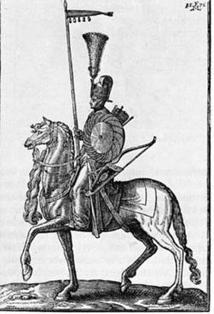 <p class='defImage'>Représentation du Sipahi</p> <p class='credits'>Wikicommons</p><p class='texte'> Le delo 34 du fond 450 renferme plusieurs informations de détail. En effet, la presque totalité du delo se consacre aux détails concernant l\’armée turque et des différentes sections de cette dernière. L\'agent principal du delo est un certain colonel du nom de E.F. Tisenhausen, rattaché à une mission russe à Constantinople. Ce delo est daté de 1849 et 1850. C\’est donc par une importante quantité d\’informations que divers sujets sont exprimés dans un grand souci de détail, tels que l\’armement de la cavalerie régulière et leur habillement. Leur coiffure est ainsi décrite d\’un point de vue esthétique et pratique. Les chevaux de la cavalerie régulière sont comparés notamment à ceux retrouvés dans l\'état de nature dans les steppes. Les harnais sont ainsi décrits par leurs couleurs et leurs textures. Les sipahis, corps régulier de l\’armée turque, sont aussi mentionnés dans l\’une des listes. Lorsqu\’il est mention de l\’artillerie, plusieurs parallèles sont faits avec les conquêtes de Napoléon Bonaparte, c\'est-à-dire entre techniques passées et présente. Les ponts et chaussées sont observés dans un contexte d\’urbanisation militaire et donnent une bonne impression de la stratégie de placement des troupes à Constantinople et dans les régions environnantes. Plusieurs statistiques sont ainsi présentées, surtout en matière de soldat par région. Concernant les soldats, l\’habillement est aussi décrit et leur mode d\’approvisionnent est dit être l\’un des plus efficaces dans le monde. En effet, Tisenhausen énonce avec quelle facilité l\’Empire turc réussi à faire importer de la nourriture dans son royaume par les voies européennes et asiatiques. Enfin, les environs de Constantinople sont décrits, tel que la direction du vent et du courant sur le Bosphore.</p> <p class='titreArchive'>«Entretien de l’agent Tisenhausen» <span class='date'>1808</span> <span class='agent'>Tisenhausen</span> <span class='archive'>TsGIA. F. 2, op. 1, d. 1284, l. 1-3</span/></p> <p class='auteur'>David Picard</p><p class='ref'> p><p class='tag'> <em>Perse</em>");
    ConstantinoplePic.addTo(myMap)
    ConstantinoplePic.addTo(militaireGroupe)

    var PoissonBallonStj = L.marker([41.0345, 28.9757], {title: 'Le poisson-ballon turque ou comment gonfler ses effectifs militaires sur papier', icon:geopolicon, riseOnHover : true, riseOffset: 999});
    PoissonBallonStj.bindPopup("<p class='titre'>Le poisson-ballon turque ou comment gonfler ses effectifs militaires sur papier</p>  <p class='defImage'>Forces turques assiégant le Fort Shefketil</p> <p class='credits'><a href='https://commons.wikimedia.org/wiki/File:Turkish_troops_storming_Fort_Shefketil_(cropped).jpg'target='_blank'>Wikicommons</a></br>Inspiration pour le SVG du marqueur: George Z / Artzgeo de <a href='https://thenounproject.com/search/?q=blowfish&i=436139'target='_blank'>Noun Project Inc.</a></p><p class='texte'>En 1851, l’agent Osten-Sacken rédige une missive afin d’informer l’État-major des réformes politiques et militaires de l’Empire ottoman qui s'opèrent depuis un peu plus d’une dizaine d’années. Pour ce faire, il joint un manuscrit, traduit en français et écrit par l’explorateur britannique James Henry Skene, intitulé Les trois époques de l'histoire Ottomane. L’agent prend grand soin d’annoter lorsqu’il est nécessaire. Comme il le souligne: «[l]'article ci-joint renferme divers détails, qui ne sont pas dénués d'intérêt, bien entendu que les éloges prodigués à l’armée turque peuvent être considérés comme achetés, su que le gouvernement subventionne le journaliste et doivent être réduits à leur juste valeur <sup>1</sup>». À l’époque, il semble que nombre d’aventuriers écrivent à propos d’une régénérescence de la Turquie, ce qu’Osten-Sacken dénonce comme une fausseté engendrée par des agents étrangers soudoyés par le Sultan. </br>Toutefois, il faut se remettre dans le contexte géopolitique : à la veille de la guerre de Crimée, la Russie présente des intérêts territoriaux pour la région. Pour la France et, surtout, l’Angleterre, cela met en péril l’équilibre européen et l’hégémonie grandissante de sa rivale. Ainsi, il semble que l’on ait gonflé artificiellement les rangs ottomans afin qu’elle paraisse plus forte qu’elle ne l’est et dissuade les Russes de l’attaquer. Pour Osten-Sacken, son rôle est d’observer l’Empire comme un poisson-ballon et de le faire éclater dans le but de rétablir une vision plus juste et d’assurer, le cas échéant, la viabilité d’un conflit entre la Russie et la Turquie. Par ailleurs, lorsqu’il rencontre Skene, ce dernier se serait « exprimé verbalement dans un sens absolument contraire à ce qu’il avance dans sa brochure<sup>2</sup>».</br>Les deux premières parties de Les trois époques de l'histoire Ottomane s’intéressent à l’histoire politicomilitaire expliquant les rapides conquêtes turques, puis de son déclin alors que celles-ci stagnent. La thèse de Skene est la suivante : </br>« [l]’existence de l’Empire fut un résultat de la première époque, l’existence de sa réorganisation est un résultat de la seconde. Par les Janissaires la Turquie s’éleva - par eux elle a été sur le point de tomber<sup>3</sup>». Dans la troisième et dernière partie, il vante les mérites de la création des corps des Nizâms venus remplacer les Janissaires pendant la période du <i>Tanzimat</i>. Celui-ci signifie tout simplement « mise en ordre » et lance l’Empire dans des progrès politiques, comme l’instauration de la responsabilité ministérielle, et économiques afin de doter l’État d\'un élan capitaliste et transiter vers une économie industrielle comme les pays européens<sup>4</sup>. Par contre, et comme le soupçonne Osten-Sacken, l'existence des réformes dépendent du lieu où l’on se trouve : une ébullition omniprésente à Constantinople, une absence totale dans plusieurs provinces comme l’Anatolie<sup>5</sup>.</br>Militairement, Skene vante la paye des soldats, qui seraient mieux rémunérés que leurs homologues britanniques et aussi bien habillés que les troupes françaises. De plus, les corps sont dotés de médecins compétents, dont plusieurs ont étudié dans les universités les plus prestigieuses d’Europe. Enfin, « la Turquie, dans le cas qu’elle soit appelée à déployer toutes ses ressources actuelles, peut être calculé à 664 000 hommes<sup>6</sup>. » Pour Osten-Sacken, elle n’est qu’environ « 150 à 200 hommes » en poussant les chiffres à l’extrême, ce qui rend une guerre potentielle beaucoup plus aisée<sup>7</sup>. Par contre, il ne pouvait pas prévoir que les Britanniques et les Français viendraient à la défense de la Turquie dans la guerre de Crimée, ce qui déséquilibrera considérablement l’échiquier militaire...</p> <p class='titreArchive'> « Rapports du Colonel Osten-Sacken, agent militaire à Constantinople, à propos de l’armée et de la flotte turque et la condition politique et morale des forces turques » <span class='date'>1851</span> <span class='agent'Colonel Osten-Sacken</span> <span class='archive'>RGVIA. F. 450, op. 1, d. 39, l. 103-155.</span/></p> <p class='auteur'>Jean-Cristophe St-James</p><p class='ref'>1- F. 450, op. 1, d. 39, l. 92v. </br>2- <i>Ibid.</i>, l. 94</br>3- <i>Ibid.</i>, l. 98-98v</br>4- <i>Ibid.</i>, l. 124-125v</br>5- Yves Ternon, <i>Empire ottoman : le déclin, la chute, l’effacement</i>, Paris, Le Félin, 2005, p. 150.</br>6- <i>Loc. cit.</i>, 126v.</br>7- <i>Ibid.</i>, l. 139.</br></p><p class='tag'> <em>Turquie</em>");
    //PoissonBallonStj.addTo(myMap)
    PoissonBallonStj.addTo(geopolitiqueGroupe)

    var Constantinople1Rou = L.marker([41.0250, 28.9700], {title: 'La Victorieuse à Constantinople', icon:Militaireicon, riseOnHover : true, riseOffset: 999});
    Constantinople1Rou.bindPopup("<p class='titre'>Recherche politique et militaire sur l’organisation des troupes régulières dans l’Empire Ottoman de juin 1826 à octobre 1827</p> <p class='defimage'>Uniformes et insignes de la nouvelle armée</p><p class='credits'><a href='https://can01.safelinks.protection.outlook.com/?url=https%3A%2F%2Fwww.ottoman-uniforms.com%2F1828-till-1839-ottoman-army-ranks-flags-and-bands%2F&amp;data=02%7C01%7CTristan.Landry%40USherbrooke.ca%7C4a52ede1e94942c3717808d7d05ac48f%7C3a5a8744593545f99423b32c3a5de082%7C0%7C0%7C637206960567782956&amp;sdata=45xiw4jJ7HzWlghE2UawxT8i5k604gENdXOaMfvHfTE%3D&amp;reserved=0' target='_blank'>C. Flaherty</a></p><p class='texte'>Cette section de delo ne donne aucune indication de son auteur.  Elle porte essentiellement, tel qu’indiqué, sur le développement de la nouvelle armée régulière que Mahmoud II implante en Turquie, suite à la défaite des Janissaires en juin 1826.<br><br>L’auteur considère que Mahmoud II est notablement plus impliqué dans la gestion des affaires de l’armée que ne l’étaient les sultans précédents.  Il serait personnellement en charge de la mise sur pied des troupes régulières qu’il vise à développer en remplacement des Janissaires et il «&#160tâche d’encourager par son exemple les généraux, officiers et les soldats de cette troupe&#160»<sup>1</sup>.  Le début du rapport est curieusement élogieux au sujet du Sultan, on y lit qu’il s’inscrit pour être «&#160au nombre des Souverains Ottomans que l’histoire citera (…) si le puissances européennes (…) lui laissent accomplir la régénération du peuple de Mahomet&#160»<sup>2</sup>.<br>On y mentionne l’importance du code religieux dans la création de la nouvelle troupe régulière.  En effet, il s’agit d’une armée explicitement musulmane<sup>3</sup>, appelée <i>Muallem Asakir-i Mansûre-i Muhammediye</i> (i.e. Soldats Victorieux de Mahomet) ou simplement Mansûre (Victorieuse).   Il est expliqué par l’auteur du rapport que des Imams sont placés dans les régiments pour prêcher par l’exemple<sup>4</sup>.  <br>En plus de la réforme de l’armée, on apprend que le Sultan envisage une réforme de l’État, incluant la séparation du pouvoir militaire et exécutif du pouvoir civil et administratif.<br>L’instruction de la nouvelle armée, à Constantinople, est confiée au Sultan et aux Pachas qui eux-mêmes se basent sur des mémoires et écrits français de la période napoléonienne.  L’auteur souligne aussi qu’on y discute, entre autres, «&#160la défense des États ottomans principalement à l’égard de la Russie&#160»<sup>5</sup>.  Initialement, plusieurs anciens officiers des Nizam-Cedid de Selim III avaient été recrutés mais la plupart étaient déjà trop vieux.  Dans les faits, il a été assez difficile de trouver des instructeurs, l’auteur mentionne que les Turcs sont rudes envers les instructeurs européens qui n’ont pas beaucoup d’intérêt à y travailler<sup>6</sup>.  Le Piémontais Calosso, instructeur de la cavalerie à Constantinople, qui aurait été un capitaine de l’armée française, constitue une des rares exceptions<sup>7</sup>.  Par conséquent, l’instruction des troupes est souvent déficiente et la discipline des régiments demeure insuffisante.<sup>8</sup>.<br>L’auteur passe en revue et décrit le rôle des différents officiers et soldats de l’armée.  Le  Seraskar de Constantinople ou Commandant en Chef de la Mansûre est Husrev Pacha.  La carrière de ce dernier remonte au temps de Selim III et il est, au moment de sa nomination, Kapudan Pacha (i.e. Grand Amiral).  L’auteur explique que le Seraskar est aussi responsable de l’instruction des officiers<sup>9</sup>.<br>L’administration des troupes est la responsabilité du Nazir ou Intendant.<br><br><u>Recrutement des soldats</u><br>La création d’une nouvelle armée exige beaucoup de nouvelles recrues<sup>10</sup>.  Des régiments sont formés en province et dans la capitale.  Il n’y a pas réellement de conscriptions parce que les payes offertes semblent suffisantes pour inciter assez de jeunes hommes à joindre l’armée.  Le Sultan envoie aussi aux Pachas des provinces des ordonnances pour créer des régiments mais ceux-ci sont très variés selon l’effort et l’intérêt du Pacha dans cette démarche.<br>En plus des fils des notables<sup>11</sup> et des protégés des chefs de l’armée<sup>12</sup> qui peuvent être très rapidement promus, l’auteur note que la nomination de recrues au poste d’officiers n’est pas inhabituelle, surtout dans les provinces.<br><br><u>État des forces militaires turques</u><br>L'auteur rapporte que les troupes régulières, quoique faisant de rapides progrès, ne seraient pas de taille à affronter une armée russe.  Il souligne aussi que l’armée turque doit encore compter sur une importante contribution des troupes irrégulières.  Il est intéressant de constater l’observation de l'auteur à l’effet que l’armée pourrait se développer rapidement si quelques puissances européennes (notamment l’Angleterre ou la France), voyait un intérêt à appuyer les efforts des Turcs.<br>Toutefois, la réforme ne touche essentiellement que l’infanterie et, dans une moindre mesure, la cavalerie.  Il y a quatre corps d’infanterie mais l’auteur spécifie qu’elles sont toutes entraînées de la même façon et que rien ne les distingue sinon l’origine de leurs membres.  De cette façon, un premier corps d’infanterie est formé en grande partie des Bostanjis, la garde du Sérail et autres membres de son personnel, ce corps constitue la garde du Sultan.  Des fusiliers du Corps d’Artillerie ont été sélectionnés pour former un deuxième corps d’infanterie tandis qu’un troisième n’est constitué que de recrue.  Finalement, il y a le corps des fusiliers de la marine, le premier corps entraîné par Husrev Pacha et qui passe à l’armée de terre sa nomination au poste de Seraskar.<br>L’auteur observe que si l’armée bénéficie de quelques années pour bien assimiler la discipline requise, à la condition que la Turquie échappe à un conflit armé contre la Russie, elle pourrait devenir une force à reconnaître.  Par contre, en octobre 1827, les troupes ne seraient pas de taille.  Selon les intentions de l’auteur, ce type de commentaire serait tout à fait pertinent dans le contexte où la Russie vise à mesurer les forces de l’Empire dans l’éventualité d’une guerre à plus ou moins court terme.  D’autant plus qu’il pose un peu plus loin l’hypothèse très clairement exprimée d’une avancée russe vers Adrianople au printemps 1828, situant de même une deuxième armée assiégeant les places fortes du Danube.  L’auteur estime que «&#160le Sultan ne réussirait pas jusqu’au mois de juin 1828 de faire passer le Bosphore et les Dardanelles à 25,000 hommes d’infanterie irrégulière asiatique&#160»<sup>13</sup>.<br>L’auteur se demande d’ailleurs ce qui rend le Sultan si certain de ses forces, et avance qu’il pourrait s’agir d’ignorance, de témérité ou de l’attente d’aide de quelques puissances européennes.  Il en conclut que toutes ces explications ont probablement une certaine validité<sup>14</sup>.<br>Finalement, l’auteur mentionne son départ de Constantinople ce qui laisse suggérer qu’il a quitté peu de temps après (ou avant) la rédaction de ce rapport.<br><br>1. RGVIA F450 Opis 1 delo 34 l 26v<br>2. RGVIA F450 Opis 1 delo 34 l 27<br>3. Il existe toutefois au moins un corps de cavalerie, sur le bord du Danube, composé de Chrétiens: Shaw, S. <i>History of the Ottoman Empire and Modern Turkey Volume II: Reform, Revolution, and Republic: The Rise of Modern Turkey, 1808-1975</i>, Cambridge, Mass. : Cambridge Univ. Pr., 2005, p. 24<br>4. .  De plus, le Sultan et les chefs religieux vivant dans un état de dépendance mutuelle, des Oulémas, à l’emploi du gouvernement, collaborent à justifier, par une interprétation adéquate du Coran, les décisions du Sultan: Ersahin, S. «&#160Islamic support on the Westernization policy in the Ottoman Empire&#160», <i>Journal of Religious Culture</i>, 2005, Vol. 78, p. 2; en ligne: <a href='https://can01.safelinks.protection.outlook.com/?url=http%3A%2F%2Fweb.uni-frankfurt.de%2Firenik%2Frelkultur78.pdf&amp;data=02%7C01%7CTristan.Landry%40USherbrooke.ca%7C4a52ede1e94942c3717808d7d05ac48f%7C3a5a8744593545f99423b32c3a5de082%7C0%7C0%7C637206960567792948&amp;sdata=NbfMWayKcUmdoWNt1E1bEn5Hf1KWgSbglRwQ8AbMNMA%3D&amp;reserved=0' target='_blank'>https://can01.safelinks.protection.outlook.com/?url=http%3A%2F%2Fweb.uni-frankfurt.de%2Firenik%2Frelkultur78.pdf&amp;data=02%7C01%7CTristan.Landry%40USherbrooke.ca%7C4a52ede1e94942c3717808d7d05ac48f%7C3a5a8744593545f99423b32c3a5de082%7C0%7C0%7C637206960567792948&amp;sdata=NbfMWayKcUmdoWNt1E1bEn5Hf1KWgSbglRwQ8AbMNMA%3D&amp;reserved=0</a>.  <br>5. RGVIA, Fond 450, Opis 1, delo 34, l 127v<br>6. Il semble aussi que les Turcs considéraient que les Européens ne pouvaient en rien leur être supérieur, il refusait donc souvent l’aide qui pouvait leur être offerte: Levy, A. «&#160Officer corps in Sultan Mahmud II’s New Ottoman Army, 1826-39&#160», <i>Int. J. Middle East Stud.</i>, 1971, Vol. 2, pp. 23-24<br>7. Particulièrement entre autres du fait que les bas officiers n’étaient pas du tout considérés comme de rang supérieur par les soldats de sorte que les haut officiers devaient assumer deux fois plus de tâches: Levy, A. «&#160Officer corps…&#160», p. 26<br>8. <a href='https://can01.safelinks.protection.outlook.com/?url=https%3A%2F%2Freferenceworks.brillonline.com%2Fentries%2Fencyclopedie-de-l-islam%2Fagha-husayn-pasha-SIM_2993&amp;data=02%7C01%7CTristan.Landry%40USherbrooke.ca%7C4a52ede1e94942c3717808d7d05ac48f%7C3a5a8744593545f99423b32c3a5de082%7C0%7C0%7C637206960567792948&amp;sdata=fyuTboB8Pn8H%2Fd4RwsgNqH9%2FA2itFnSRgiPkEnfJgNQ%3D&amp;reserved=0' target='_blank'>Huseyin Aga</a>, ancien Janissaire qui avait collaboré avec Mahmud II pour détruire ce corps militaire a été le premier Seraskar. Husrev Pacha obtient le poste en mai 1827, entre autres parce qu’il est mieux instruit en terme de techniques militaires modernes: Cakir, A.F. «&#160Households in Ottoman Politics: The rivalry between Husrev Mehmed Pasha et Mehmed Ali Pasha of Egypt&#160», Mémoire de Maîtrise, Université Sabanci, 2013, p. 78.<br>9. RGVIA F450 Opis 1 delo 34 l 29<br>10. Ces recrues doivent être des musulmans de naissance: Simsek, V. «&#160Ottoman military recruitment and the recruit: 1826-1853&#160», Mémoire de Maîtrise, Département d’Histoire de l’Université Bilkent d’Ankara, 2005, p. 32<br>11. Notamment parce que ça aidait à obtenir l’appui des notables des provinces: Simsek, V. «&#160Ottoman military recruitment…&#160», p. 39<br>12. Husrev Pacha, entre autres, aurait accordé à plus de 70 de ses protégés les rangs les plus élevés de la hiérarchie: Levy, A. «&#160The Officer corps…&#160», p. 29<br>13. RGVIA F450 Opis 1 delo 34 l 40v<br>14. Sir A. Slade rapporte aussi que les ordres envoyés par le Sultan aux Pachas des provinces pour fournir des troupes étaient souvent ignorés parce que ces derniers ressentaient le Sultan d’avoir beaucoup limité leur influence: Slade, A. <i>Records of Travels In Turkey, Greece, &c.: And of a Cruise In the Black Sea, With the Capitan Pasha, In the Years 1829, 1830, And 1831</i>. 2d ed. London: Saunders and Otley, 1833, p. 301</p><p class='titreArchive'>Rapports du Colonel E.F. Tiesenhausen, attaché à la mission russe à Constantinople, au sujet de l’armée turque<span class='date'>1849-1850</span> <span class='agent'>Colonel E.F. Tiesenhausen</span> <span class='archive'>RGVIA F450 Opis 1 delo 34, l 27 - l 43v</span/></p> <p class='auteur'>Camille Routhier</p><em> Mansûre, troupes régulières, nouvelle armée, Mahmoud II, 1827, 1828</em>");
    Constantinople1Rou.addTo(myMap)
    Constantinople1Rou.addTo(militaireGroupe)

    </script>
  </body>
</html>
